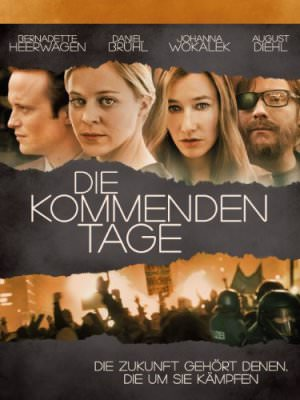
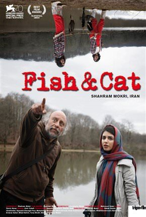
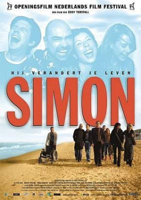
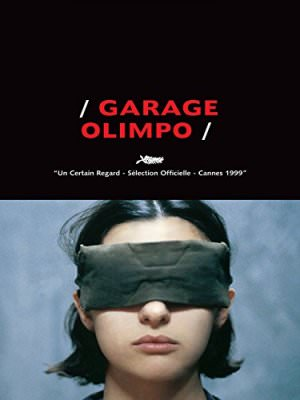
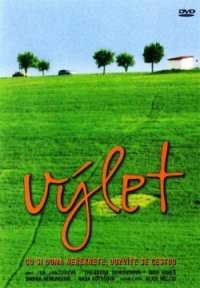
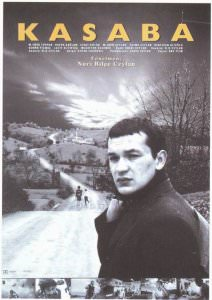
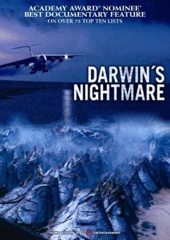
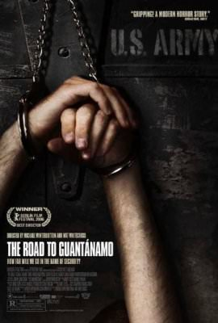

1 - Büyük Savaş - La Grande Guerra (1959)
Mario Monicelli | Komedi, Dram, Savaş | 1959
Alberto Sordi, Vittorio Gassman, Silvana Mangano
Zekâlarını ön saflardan uzak durmak için kullanarak görevden kaçan iki asker, Giovanni Busacca ve Oreste Jacovacci, Birinci Dünya Savaşı devam ederken kasabadaki kadınlarla günlerini gün ediyorlar. Bölüklerinin savaşta tamamen ortadan kaldırıldığını öğrenen iki asker görev bilinci kazanıp cepheye dönüyor ama Avusturyalıların eline düşüyorlar. Arkadaşlarına ihanet etmek yerine onurlu bir ölümü seçiyorlar.Görevden kaçmakta usta ama sapına kadar cesur iki isteksiz İtalyan askerinin deneyimlerini anlatan Büyük Savaş, küçük komediden büyük drama yöneliyor. İki geveze asker rolündeki Vittorio Gassman ve Alberto Sordi'nin gürültülü komikliklerinin ardından, savaş karşıtı duygular yüzeye çıkıyor.
2 - Breaking Bad 5.Sezon
Michelle MacLaren, Adam Bernstein, Vince Gilligan | Suç, Dram, Gerilim | 2012
Bryan Cranston, Aaron Paul, Anna Gunn
50 yaşında lisede kimya öğretmenliği yapan Walter White evini geçindirebilmek için bir oto yıkamacıda ek iş yapmaktadır. Mütevazi bir yaşam süren White'ın ucuz bir evi, ucuz bir arabası sıradan bir hayatı vardır. Bir gün ileri derecede akciğer kanseri olduğunu öğrenir. Artık kalan ömrünün süresini tahmin etmektedir. Kalan ömrünü nasıl yaşayacağını düşünerek vakit kaybetmek yerine öldükten sonra karısının ve engelli oğlunun düzgün bir hayat yaşayabilmesi için bir çözüm yolu aramaya başlar. Tek kullanabileceği zekası ve kimya bilgisidir. Sokak aralarında uyuşturucu satan eski öğrencisi Jesse Pinkman'dan yardım ister. Walter White, kısa süre içinde inanılmaz bir değişim gösterecek ve olaylar hiç de planladığı gibi gitmeyecektir.BREAKİNG BAD 1.SEZONBREAKİNG BAD 2.SEZONBREAKİNG BAD 3.SEZONBREAKİNG BAD 4.SEZON
3 - Breaking Bad 4.Sezon
Michelle MacLaren, Adam Bernstein, Vince Gilligan | Suç, Dram, Gerilim | 2011
Bryan Cranston, Aaron Paul, Anna Gunn
50 yaşında lisede kimya öğretmenliği yapan Walter White evini geçindirebilmek için bir oto yıkamacıda ek iş yapmaktadır. Mütevazi bir yaşam süren White'ın ucuz bir evi, ucuz bir arabası sıradan bir hayatı vardır. Bir gün ileri derecede akciğer kanseri olduğunu öğrenir. Artık kalan ömrünün süresini tahmin etmektedir. Kalan ömrünü nasıl yaşayacağını düşünerek vakit kaybetmek yerine öldükten sonra karısının ve engelli oğlunun düzgün bir hayat yaşayabilmesi için bir çözüm yolu aramaya başlar. Tek kullanabileceği zekası ve kimya bilgisidir. Sokak aralarında uyuşturucu satan eski öğrencisi Jesse Pinkman'dan yardım ister. Walter White, kısa süre içinde inanılmaz bir değişim gösterecek ve olaylar hiç de planladığı gibi gitmeyecektir.BREAKİNG BAD 1.SEZONBREAKİNG BAD 2.SEZONBREAKİNG BAD 3.SEZON
4 - iki Şehrin Hikayesi - A Tale of Two Cities (1935)
Jack Conway | Dram, Tarih | 1935
Ronald Colman, Elizabeth Allan, Edna May Oliver

Dickens'ın Fransız devrimini konu alan aynı adlı kitabından bir uyarlama. Avukat Sydney Carton, İngiliz ajanı olmakla suçlanan Charles Darnay'i müdafaa etmektedir. Darnay'ın nişanlısı Lucie'ye aşık olur ve devrimciler tarafından alıkoyulan Darney'i giyotinden kurtarmak üzere söz verir. Film En İyi Film ve En İyi Kurgu dalında Akademi Ödülü için aday gösterildi
5 - Ateşle Oyun - Le Feu Follet (1963)
Louis Malle | Dram | 1963
Maurice Ronet, Léna Skerla, Yvonne Clech

Alain Leroy alkolle olan problemleri yüzünden özel bir hastanede tedavi görmektedir. Çok sıkıntılı günler geçirmesine rağmen, eski arkadaşlarıyla tekrar takılmak için hastaneyi terk eder. Fakat arkadaşlarından hiçbiri ona yardımcı olmayacaktır. Tersine Alain’in sıkıntısı gittikçe artacaktır.
6 - Breaking Bad 3.Sezon
Michelle MacLaren, Adam Bernstein, Vince Gilligan | Suç, Dram, Gerilim | 2010
Bryan Cranston, Aaron Paul, Anna Gunn
50 yaşında lisede kimya öğretmenliği yapan Walter White evini geçindirebilmek için bir oto yıkamacıda ek iş yapmaktadır. Mütevazi bir yaşam süren White'ın ucuz bir evi, ucuz bir arabası sıradan bir hayatı vardır. Bir gün ileri derecede akciğer kanseri olduğunu öğrenir. Artık kalan ömrünün süresini tahmin etmektedir. Kalan ömrünü nasıl yaşayacağını düşünerek vakit kaybetmek yerine öldükten sonra karısının ve engelli oğlunun düzgün bir hayat yaşayabilmesi için bir çözüm yolu aramaya başlar. Tek kullanabileceği zekası ve kimya bilgisidir. Sokak aralarında uyuşturucu satan eski öğrencisi Jesse Pinkman'dan yardım ister. Walter White, kısa süre içinde inanılmaz bir değişim gösterecek ve olaylar hiç de planladığı gibi gitmeyecektir.BREAKİNG BAD 1.SEZONBREAKİNG BAD 2.SEZONBREAKİNG BAD 4.SEZONBREAKİNG BAD 5.SEZON
7 - Breaking Bad 2.Sezon
Michelle MacLaren, Adam Bernstein, Vince Gilligan | Suç, Dram, Gerilim | 2009
Bryan Cranston, Aaron Paul, Anna Gunn
50 yaşında lisede kimya öğretmenliği yapan Walter White evini geçindirebilmek için bir oto yıkamacıda ek iş yapmaktadır. Mütevazi bir yaşam süren White'ın ucuz bir evi, ucuz bir arabası sıradan bir hayatı vardır. Bir gün ileri derecede akciğer kanseri olduğunu öğrenir. Artık kalan ömrünün süresini tahmin etmektedir. Kalan ömrünü nasıl yaşayacağını düşünerek vakit kaybetmek yerine öldükten sonra karısının ve engelli oğlunun düzgün bir hayat yaşayabilmesi için bir çözüm yolu aramaya başlar. Tek kullanabileceği zekası ve kimya bilgisidir. Sokak aralarında uyuşturucu satan eski öğrencisi Jesse Pinkman'dan yardım ister. Walter White, kısa süre içinde inanılmaz bir değişim gösterecek ve olaylar hiç de planladığı gibi gitmeyecektir.BREAKİNG BAD 1.SEZONBREAKİNG BAD 3.SEZONBREAKİNG BAD 4.SEZONBREAKİNG BAD 5.SEZON
8 - Fight Club - Dövüş Kulübü (1999)
David Fincher | Dram | 1999
Edward Norton, Brad Pitt, Helena Bonham Carter, Meat Loaf, Jared Leto

Dövüş Kulübü,, Chuck Palahniuk tarafından yazılmış olan aynı isimli roman üzerinden çekilen kült filmdir.1999 yapımı olan film, David Fincher tarafından yönetilmiştir ve başrollerde Brad Pitt, Edward Norton ve Helena Bonham Carter rol almıştır. Müziklerini Dust Biraderler yapmıştır.Toplam kazancı 100.853.753 $'a ulaşmıştır. Film ABD'de gösterime girdiği hafta 11.035.485 $ gelir elde etmiştir.2000 yılında film, en iyi ses efektleri dalında Akademi Ödüllerine aday oldu ve 2001 yılının kasım ayında en iyi film müziği dalında Brit ödülünü almıştır.Bu filmin kazandığı ödüller:2000 Empire Ödülleri (UK), En iyi Britanyalı Aktirist (Helena Bonham Carter)2001 Online Film Critics Society Ödülleri, En iyi DVD, En iyi DVD anlatımı, ve En iyi DVD Özel İçerikleri2005 Total Film Magazine Ödülleri (UK) "Dünyanın bugüne kadar gelmiş geçmiş en iyi film ödülü"Bu filmin bazı ödül adaylıkları:2000 Akademi Ödülleri, En iyi ses efektleri2000 Brit Ödülleri, En iyi soundtrack2001 MTV Film Ödülleri, En iyi dövüş (Edward Norton kendisi ile dövüştüğü sahne)2000 Politik Film Birliği Ödülleri, Demokrasi ödülüİlginç Notlar; Yönetmen David Fincher, film çekiminde normal miktarının 3 katı miktarda film makarası kullanmıştır. Bu da tam olarak 1500 adet makara filmle eşdeğerdir.Film subliminal mesajlar içermekte gibi yorumlansada, aslında Anlatıcı'nın görüş açısıyla bakıldığında, varolup kaybolan Tyler'un halüsinasyonudur. Filmin 21.dakikasından sonra, Anlatıcı'nın gözüyle bakıldığında artık hiçbir yerde Tyler'ın halüsinasyonu yoktur. Çünkü anlatıcı artık derin bir Şizofreni hastası olmuş, Tyler ile tanışmıştır. Sadece filmin 30-32'inci dakikaları arasında subliminal mesaj içeren filmlerin nasıl yapıldığına dair izleyicilere uyarı gönderilir.Yönetmen David Fincher bir röportajında filmin hemen hemen her sahnesinde en az 1 tane starbucks bardağı olduğunu belirtmiştir.Filmin 70 ve 75. dakikaları arası Lou'nun Tyler'ı dövdüğü sahnede Lou Tyler'ın neresine vurursa Anlatıcıda Tyler Durden'la aynı tepkiyi verir.Boyu 1.57 cm olan Helena Bonham Carter, 1.83 Edward Norton ve 1.80 cm olan Brad Pitt'e yaklaşabilmek için devasa platform topuklar giymiştir.
9 - Nasty Old People (2009)
Hanna Sköld | Dram | 2009
Febe Nilsson, Anna Nevander, Karin Bertling

Mette, ölüm döşeğindeki dört üst düzey yaşlı liderlerin ihtiyaçlarını karşılamakla görevli Nazi çetesi üyesi bir genç kızdır. Yaşamı yavaşça kurallarını kendinin koyduğu tiyatral bir yalanlar dünyasına dönmeye başlar. Genç kız yaşamının ne yöne gittiğini bilmeden sürdürürken, bir gün bir adama karşı şiddet uygulamasıyla bir şeylerin yanlış gittiğinin farkına varacak ve her şey değişmeye başlayacaktır.
10 - Breaking Bad 1.Sezon
Michelle MacLaren, Adam Bernstein, Vince Gilligan | Suç, Dram, Gerilim | 2008
Bryan Cranston, Aaron Paul, Anna Gunn
50 yaşında lisede kimya öğretmenliği yapan Walter White evini geçindirebilmek için bir oto yıkamacıda ek iş yapmaktadır. Mütevazi bir yaşam süren White'ın ucuz bir evi, ucuz bir arabası sıradan bir hayatı vardır. Bir gün ileri derecede akciğer kanseri olduğunu öğrenir. Artık kalan ömrünün süresini tahmin etmektedir. Kalan ömrünü nasıl yaşayacağını düşünerek vakit kaybetmek yerine öldükten sonra karısının ve engelli oğlunun düzgün bir hayat yaşayabilmesi için bir çözüm yolu aramaya başlar. Tek kullanabileceği zekası ve kimya bilgisidir. Sokak aralarında uyuşturucu satan eski öğrencisi Jesse Pinkman'dan yardım ister. Walter White, kısa süre içinde inanılmaz bir değişim gösterecek ve olaylar hiç de planladığı gibi gitmeyecektir.BREAKİNG BAD 2.SEZONBREAKİNG BAD 3.SEZONBREAKİNG BAD 4.SEZONBREAKİNG BAD 5.SEZON
11 - Vizontele (2001)
Yılmaz Erdoğan, Ömer Faruk Sorak | Komedi, Dram | 2001
Yılmaz Erdoğan, Demet Akbağ, Altan Erkekli, Cezmi Baskın, Cem Yılmaz, Şebnem Sönmez, Bican Günalan, Erdal Tosun, Şafak Sezer

Vizontele, 2001 yapımı Yılmaz Erdoğan - Ömer Faruk Sorak filmidir. Senaryosunu da Yılmaz Erdoğan'ın yazdığı film Hakkâri'de geçmekteyse de, burada çekim yapmanın zorluğu nedeniyle çekimler, Van'ın Gevaş ilçesinde yapıldı. Çoğunlukla Beşiktaş Kültür Merkezi oyuncularının rol aldığı filmin 2004 yılında Vizontele Tuuba adlı bir devam filmi çekildi.1974 yılında başında Van'ın Gevaş ilçesine televizyon gelmesini anlatıyor. Bunu duyan ahali televizyonun ne olduğu hakkında bir bilgileri yok ve nasıl bir şey olduğunu çok merak ediyorlar. Her şeyin en son ulaştığı bir şehirdir. TRT tarafından oraya sürgün gönderilen memurlar alıcıyı kurmadan geri dönerler. Belediye Başkanı Nazmi bu işin üstesinden gelmek için şehrin delisi olarak bilinen Emin'den yardım alır. Emin aslında deli olmayan, teknolojik aletlere ilgisi olan ve bütün radyoları tamir eden ilginç bir yaşantıya sahip olan bir karakterdir. TRT görevlilerinin tarif ettiği gibi yüksek yerlerde vericiyi kurarlar. Ama bir türlü televizyonu çalıştıramaz. Sonunda tesadüf eseri son yaşadıkları hüsrandan sonra televizyonu çalıştırırlar. Fakat Sıti Ana, oğlu Rıfat'ın Kıbrıs Barış Harekatı'nda şehit düştüğünü televizyondan öğrenince tüm hırsını o televizyondan alır.
12 - Kış Zamanı - Zemestan (2006)
Rafi Pitts | Dram | 2006
Mitra Hajjar, Ali Nicksaulat, Said Orkani

Tahran’ın kırsal kesimlerinde yaşayan bir aile, her kış hem para hem de ulaşım sıkıntısı yaşamaktadır. Babaları onları geçindirebilmek için uzun yolları kat etmeyi göze almaktadır. Bir gün baba işinden kovulur, ve ailesiyle birlikte ne yapacaklarını bilemez hale gelirler. Bir çare düşünmeye çalışan baba, başka bir ülkeye gidip çalışmaya karar verir. Aradan zaman geçer, ailesi ondan hiçbir haber alamamaktadır. Bu esnada kasabaya bir yabancı gelir; eşi yanında olmayan genç kadından, ve yalnız ailesinden etkilenerek onlarla ilgilenmeye başlar.
13 - Cenaze için Birkaç Kilo Hurma - Chand Kilo Khorma Baraye Marassem-e Tadfin
Saman Salur | Comedy, Dram | 2006
Mohsen Tanabandeh, Nader Fallah, Mohsen Namjoo

Sadry ve Yadi, ana yolların çok çok uzağında, ıssız bir benzincide çalışırlar. Kıştır ve her taraf karla kaplıdır. Sadry ara sıra ortadan kaybolur ve hava durumunu bir saplantı haline getirmiş gibidir. Yadi komşu kasabadan bir kıza aşıktır. Bu ikili arasındaki ilişki, az sayıdaki ziyaretçileriyle beraber Beckett’in Godot’yu Beklerken hikâyesinin modern bir versiyonu haline gelir.
14 - Küf (2012)
Ali Aydin | Dram | 2012
Ercan Kesal, Muhammet Uzuner, Tansu Biçer, Ali Çoban, Serpil Goral

2012 Venedik Geleceğin Aslanı Ödülü 2012 Selanik Gümüş İskender2012 Saraybosna Cinelink Post Republic ÖdülüBasri, demir yollarında yol bekçisi olarak çalışmaktadır ve yalnızdır.Tek oğlu olan Seyfi tam 18 yıl önce, okuduğu üniversitede öğrenciyken gözaltına alınmış ve o günden sonra hiç kimse Seyfiden başka bir haber alamamıştır. Bu durumda ne ölüdür Seyfi ne sağ, ne vardır ne de yok... Basrinin oğlu kaybolduktan altı yıl sonra karısı da ölmüştür.Basri, oğlunun kaybından sonra yavaş yavaş toplumdan soyutlamaya başlamıştır kendini. Onu günden güne çepeçevre saran bir umut yaşatmıştır bugüne kadar. Her gün kontrol etmek için üzerinde yürüdüğü tren yolları, on sekiz yıldır aralıksız her ayın başında ve ortasında oğlunu bulmaları için yazdığı dilekçeler...Anadolunun bereketli toprakları ve onu sarıp sarmalayan uçsuz bucaksız tren yolları, umut ve vicdan...
15 - Uçurtma - Le cerf-volant
Randa Chahal Sabag | Dram | 2003
Flavia Bechara, Maher Bsaibes, Randa Asmar
"İki düşman ülkenin sınırında – çatışma ya da barış görüşmeleri olmaksızın – aşk üzerine bir film olan UÇURTMA, her şeyden önce bir aşk öyküsü, bir arzu ve felaket öyküsü ... On altı yaşındaki Lamia, düğün gününde, güney Lübnan’daki köyünü kuzeninin yaşadığı ve İsrail tarafından ilhak edilmiş köyden ayıran dizi dizi dikenli telleri geçmek zorundadır. Köyler arasındaki sınırda devriyeler kol gezer. Her iki bölge tarafından denetlenen bir kontrol noktasında, evli çiftlerin ve ölüm döşeğindeki kişilerin kendi köylerine dönmesine izin verilir. Lamia erkek kardeşini, okulunu, uçurtmasını, annesini ve geçmişini ardında bırakarak kocasının ailesiyle yaşamaya gider. Ama gerdeğe girmeye yanaşmaz; onun yerine, kızı ilk gördüğü günden beri gözleyen bir askere yavaş yavaş âşık olur. Lamia dikenli telleri geçerken, çocukluktan yetişkinliğe de adım atmıştır. Bu da, hem iki ülke, hem de daha sonra meydana gelecek olaylar kadar zalimce olacaktır ... "
16 - O Apóstolo - The Apostle (2012)
Fernando Cortizo | Animasyon, Korku | 2012
Carlos Blanco, Xosé Manuel Olveira Pico, Paul Naschy

Cezaevinden kaçan iki mahkûm Ramon ve Xavier, hırsızlık mallarını Xanas köyündeki Bayan Luisa’nın evine saklamıştır. Mahkumlardan Ramon hacı kimliği ile bu ganimeti almak için yola düşer. Bahsedilen köye giderken bir yolcu ile karşılaşır ve kutsal sırlar yönünü değiştirir. Ramon eğer kendini koruyamazsa üç gün sonra öleceğini başka bir tutsaktan öğrenir. Bu arada Başpiskopos, ziyaretine gelen turistler ormanda kaybolunca onları aramak için orman köyüne gelir ve işler karışır.
17 - Ekim - Octubre (2010)
Daniel Vega Vidal, Diego Vega Vidal | Dram | 2010
Bruno Odar, Gabriela Velásquez, Carlos Gassols, María Carbajal, Sheryl Sánchez

Ekim, Peru’nun başkenti Lima’da şehrin koruyucu azizi Mucizeler Efendisi’nin törenlerle anıldığı mor aydır. Clemente de bu ayda bir mucizenin kahramanı oluverir. Tefecilik yaparak son derece sessiz ve mütevazı bir hayat süren Clemente’in hiçbir duygusal ya da kişisel bağı yoktur. Bir gün, tıpkı mucizelerin birdenbire gerçekleşmesi gibi, kapısına bırakılmış bir bebek bulur. Bu beklenmedik durum üzerine sadık müşterisi Sofia’yı bebeğe bakması için işe alır ve bütün şehirde fellik fellik bebeğin annesi olan fahişeyi aramaya başlar.
18 - Anayurt Oteli (1987)
Ömer Kavur | Suç, Dram | 1987
Macit Koper, Sahika Tekand, Orhan Çagman

Yusuf Atılgan’ın romanından uyarlanan ruhbilimsel ayrıntılarla destekli çarpıcı bir “iç dünya” filmi. İstasyon yakınlarındaki babadan kalma on dört odalı, eski bir konaktan bozma otele gecikmeli Ankara treniyle gizemli bir kadın gelir. Otelin katibi ve sahibi Zebercet, bir gece kalıp giden meçhul kadını bekler durur. Dünyasına cinsel bir düş gibi giren kadını umutsuz bekleyişi Zebercet’ i trajik bir sona doğru götürecektir.
19 - Sıfır Kenti - Gorod Zero (1989)
Karen Shakhnazarov | Komedi, Dram, Gizem, Bilim-Kurgu | 1989
Leonid Filatov, Oleg Basilashvili, Vladimir Menshov, Armen Dzhigarkhanyan, Evgeniy Evstigneev
Özgün adı “Gorod Zero” olan “ Sıfır Kenti”, 9. Uluslararası İstanbul Film Festivali’nde gösterilmiştir., Kafka hikayelerinianımsatan konusuyla “ Sıfır Kenti “ Moskova’dan bir iş için trenle küçük bir kasabaya gelen mühendis Aleksey Varakin’in burada başından geçen tuhaflıkları anlatmaktadır. Washington Post bu filmi “ Sovyet tarzı bir alacakanlık kuşağı” (The Twilight Zone) olarak değerlendirmiştir. Sıfır Kenti İtalyada düzenlenen Bergamo Film Günlerinde Bronz Rosa Camuna, Sovyetler Birliğinde ise en iyi yapım tasarımı dalında Nika Ödülü nü kazanmıştır.
20 - Narcos 1.Sezon
José Padilha | Suç, Dram, Biyografi | 2015
Wagner Moura, Boyd Holbrook, Pedro Pascal

Narcos, Amerikan Suç Dramsı dizisi. 28 Ağustos 2015 tarihinde Netflix'de yayına başladı. Uyuşturucu baronu olan Pablo Escobar'ın ve Medellín Karteli'nin olaylarını anlatır. İlk sezonunun tüm bölümleri 28 Ağustos 2015'de yayınlanmış olup, 10 bölümden oluşmaktadır.
21 - Saraybosnaya Hoşgeldiniz - Welcome to Sarajevo (1997)
Michael Winterbottom | Dram, Savaş | 1997
Stephen Dillane, Woody Harrelson, Marisa Tomei

Saraybosna'ya Hoşgeldiniz - Welcome to SarajevoSavaşa medya ve gazeteci açısından bir bakış. Bosna savaşının başladığı günlerde, yani 1992 lerde kente gelerek çeşitli TV kanalları için çekime başlayan uluslararası muhabirlerin öyküsü anlatılıyor. Ön planda iki deneyimli gazeteci, İngiliz Micheal Handerson ve Amerikalı Flynn var. Gündüzleri Sırp ateşi altındaki kentte en tehlikeli noktalara kadar ulaşarak şiddet görüntülerine aç dünya seyircisine ateş, kan ve ölüm anları saptayan, geceleri ise Holiday Inn'in barında şaşkın gözlerle tanık oldukları faciayı unutmaya çalışan gazeteciler. Henderson'un insancıllığı, Flynn'ın haber yaratmaya yönelik gözüpekliği, Flynn'ı eleştiren kadın gazeteci Annie'nin medyanın haber anlayışına öfkesi. Bir Amerikan yardım kuruluşunda çalışan Nina'nın bir grup Bosnalı çocuğu kurtarmak için başlattığı tehlikeli girişim. Ve tüm ingiliz soğukkanlılığı içinde. bir toplama kampındaki çocuklar arasında tanıdığı küçük Emira'ya kanı kaynayan ve onu kurtarmak için çılgın bir serüvene atılan Henderson'un çabası.
22 - Ben Kimim - Who Am I - Kein System ist sicher
Baran bo Odar | Suç, Dram, Gerilim | 2014
Tom Schilling, Elyas M\'Barek, Wotan Wilke Möhring

Genç bir bilgisayar dehası olan Benjamin, sadece Almanya’da değil dünya çapında tanınan biri olmak istemektedir. Yer altı bir hacker grubu, Benjamin’i aralarına katılmaya çağırınca, Benjamin bu tehlikeli teklifi kabul eder ancak bu tehlikeli oyunlarda başına geleceklerden habersizdir.Yönetmenliğini İsveç'li yönetmen Baran bo Odar’ın üstlendiği filmin senaryosunda da yönetmen bo Odar ile birlikte Jantje Friese’ın imzası var. Siber suç geriliminin başrolünde Tom Schilling yer alırken, Schilling'e Elyas M'Barek, Wotan Wilke Möhring, Hannah Herzsprung ve Trine Dyrholm isimleri eşlik ediyor.
23 - Mr. Robot 1.Sezon
- | Suç, Dram, Gerilim, Psikoloji | 2015
Rami Malek, Carly Chaikin, Portia Doubleday, Martin Wallström, Christian Slater

Mr.Robot, Sam Esmail tarafından kaleme alınmış Amerikan psikolojik gerilim-dram televizyon dizisi.USA Network tarafından 24 Haziran 2015 tarihinde yayına başlayan dizinin pilot bölümü online olarak VOD servisleriyle 27 Mayıs 2015'te yayınlanmıştır. Bilişim dünyası ile yakından ilgili olan/olmayan herkesin ilgisini çekmiş ses getirmiştir. IMDb'deki puanı 10 üzerinden 8.8'dir.Dizide Elliot, gündüzleri genç bir siber güvenlik mühendisi ve geceleri hackerlık yapan bir siber korsandır. Elliot, yer altı hacker grubunun (fsociety) onunla irtibata geçmek için şirketininin sistemine zarar vermesi üzerine büyük bir karmaşıklığın içine kendisini atmıştır.NOT; Dizide geçen maskeli hack grubu olarak gönderme yapılan grup Anonymous'tur. Evil Corp şirketi ise şu an kapatılmış olan dünyanın en büyük şirketlerinden biri olan Enron'dur. Daha detaylı bilgi için aşağıda verdiğim linklerdeki belgeselleri izleyin. We Are Legion: The Story of the Hacktivists (2012) Enron: İş Dünyasının Açıkgözleri - Enron: The Smartest Guys in the Room (2005)
24 - Yasaklamayı Yasaklamak - Proibido Proibir (2007)
Jorge Durán | Dram | 2006
Caio Blat, Maria Flor, Alexandre Rodrigues

Yönetmen, Paulo isimli karakter aracılığıyla bize Brezilya'nın üç büyük problemini gösteriyor: Sağlık, Barınma (Yerleşim) ve Eğitim. Olağanüstü derecede manalı bir film, bu bakımdan sosyolojik bir başyapıt. Senaryosu oldukça titiz ve her ayrıntı hesaplanmış. Brezilya toplumunun zekice tasarlanmış bir portresini sunuyor. Filmdeki ilişkiler ağıysa, filmin en hassas ayrıntılarından biri. Caio Blat, muhteşem. Sergilediği performans, onun rol yapmadığını düşündürtecek kadar doğal. O adeta Paulo'yu yaşıyor. Paulo, duygusal bakımdan sorunları olan, genç bir tıbbıye öğrencisi. Alexandre Rodrigues ise, sosyoloji öğrencisi Leon rolünde çok etkili bir katılım sergilemiş. Leon, sevgilisi Leticia ile ayrılma noktasında bulunan ancak buna karşı savaşacak güç ve yetenekten yoksun bir karakter. En iyi dostu oda arkadaşı Paulo. Son olarak Maria Flor, genç, güzel ve nazik mimarlık öğrencisi Leticia rolünde. Leticia, bir sürü hayali ve naif kalbi ile bir aşk üçgeninin tam eşiğinde durmakta.Bu üç can arkadaşın hikayesi, fakirlik ve sefalet içindeki Rio de Janeiro'nun yaşadığı sosyolojik travmaya ışık tutar cinsten.
25 - Porte des Lilas - The Gates of Paris (1957)
René Clair | Suç, Dram, Romantik | 1957
Pierre Brasseur, Georges Brassens, Henri Vidal

Yaşlı berduş Juju, cici bir genç kıza abayı yakmıştır. Ancak kızın gözü, polisten kaçarak adamın evine sığınmış olan genç bir gangsterden başkasını görecek durumda değildir.
26 - Potemkin Zırhlısı – Bronenosets Potyomkin (1925)
Sergei M. Eisenstein | Dram, Tarih, Savaş | 1925
Aleksandr Antonov, Vladimir Barsky, Grigori Aleksandrov

Tarihin en baskıcı rejimlerinden Rus Çarlığına karşı halkın ayaklanması ve dayanışması yalın ama sarsıcı bir dille anlatılmaktadır. Eisenstein, Potemkin Zırhlısı'nda, sinema tarihinde bir ilki gerçekleştirdi ve filmin baş kahramanı olarak "yıldızlar" yerine, halk kitlelerini seçti. Bolşevik devrimi, sanatın tüm alanında olduğu gibi, sinema sanatında da büyük bir canlanma yarattı. Ve çeşitli sinema akımları bu dönemde özgün örneklerini sundu. Sinema ustası Dziga Vertov'un sinema kuramı ve biçemi Sinema-Göz'e karşı Einsestein, Sinema-Yumruk kuramını geliştirdi ve ilk örneğini Potemkin Zırlısı'yla verdi.Filmin bölümleri;1- İnsanlar ve Kurtlar: Burada Potemkin Zırhlısı güvertesinde denizcilerin kötü yaşam koşulları ve kurtlu et yemeye zorlanmaları anlatılır.2- Denizde Dram: Denizciler kurtlu et yemeği reddederler. Kaptan ısrar eder ve ayaklanma başlar. Et yemeyen insanların bir bölümünün üzerine muşamba örtülür ve askerlerden bu denizcileri öldürmeleri emredilir. Askerler emre uymazlar. Komutanlar devrilir. İsyan başlar. İsyanı başlatan asker Vakulinçok öldürülür.3- Ölü Adam Adalet Arıyor: Zırhlı, Odesa Limanına demirler. Vakulinçok’un cenazesi sahile çıkarılır. Odesa halkı bu durumu dehşetle karşılar. Ve sinirlenen halkın ortasına kızıl bayrak çıkarılır. İsyan başlamak üzeredir.4- Odesa Merdivenleri: Halk, merdivenlerin üzerinde toplanır. Ama Çarın askerleri ateşe başlar. İnsanlar merdivenlerden inmeye başlarlar. Bir çok kişi ezilerek ya da açılan ateş sonucunu yaşamını yitirir. Zırhlı, Çarın karargahını bombalamaya başlar.5- Filoyla Karşılaşma: Bu son bölümde; akşam yavaş yavaş kentin üzerine inmeye başlamıştır. Halk ve denizciler kucaklaşmaktadır. Zırhlı, Çar gemisiyle karşılaşır, toplar hazırdır ama ateş edilmez. Potemkin Zırhlısı, gemilerin arasından süzülerek kaybolur.
27 - F Tipi Film
Ezel Akay, Barış Pirhasan, Sırrı Süreyya Önder, Reis Çelik, Hüseyin Karabey, İlksen Başarır, Aydın Bulut, Vedat Özdemir, Mehmet İlker Altınay | Dram, Belgesel, Tarih, Psikolojik, Suç | 2012
Tansu Biçer, Serkan Keskin, Bülent Emrah Parlak
Duruşu ve dinamikleriyle sadece müzik tarihi değil, siyasi tarihimizde de kendine önemli bir yer edinen Grup Yorum tarafından geliştirilen bu proje, binlerce kişinin kurban olduğu bir drama odaklanıyor. F tipi hapishanelerin kapalı kapılarının ardında yaşananları beyazperdeye aktaran film, 10 farklı yönetmenin çektiği 9 kısa filmin uzun metraj şeklinde yeniden kurgulanmasıyla ortaya çıktı. Ezel Akay, Barış Pirhasan, Sırrı Süreyya Önder, Reis Çelik, Hüseyin Karabey, İlksen Başarır, Aydın Bulut, Vedat Özdemir, Mehmet İlker Altınay ve Grup Yorum'un yer aldığı projede her yönetmen kendi senaryosunu yazıp 10 dakikalık bir kısa filme imza attı. Filmlerin oyuncu kadrolarında ise Tansu Biçer, Serkan Keskin, Bülent Emrah Parlak, Gizem Soysaldı, Erkan Can, Fırat Tanış gibi isimler yer alıyor.Filme İngilizce altyazı eklenmiştir.
28 - Bêrîtan - Beritan (2006)
Jinda Baran, Halil Uysal | Dram, Savaş | 2006
Jinda Baran, Beritan Cûdi, Ömer Harran, Rubar Qamislo, Jinda Wan

Bêrîtan filmi 1992 de Türk Ordusu ve Peşmerge’nin birlikte yaptıkları operasyonla gerillaları imha etme planlarını konu alıyor. Başrolde oynayan Beritan adlı kadın gerilla ise teslim olmamak için uçurumdan kendini atar. Bundan sonra da Peşmerge bir daha gerillalarla çatışmama kararı alır.
29 - Rosemary'nin Bebeği - Rosemary Baby (1968)
Roman Polanski | Dram, Korku | 1968
Mia Farrow, John Cassavetes, Ruth Gordon

Tanınmış bir aktör olmak için çabalayan Guy ve güzeller güzeli karısı Rosemary, New York'taki yeni hayatlarına başlamak için eski bir binada mütevazi bir daire kiralarlar. Genç çiftin bu yabancı yere alışmalarındaki en büyük yardımcısı üst katlarında oturan yaşlı Castavet çifti olur. Castavet çiftinin 'fazlaca' misafirperver olan tavırları güzel Rosemary'i şüphelere sürüklerken kocası Guy olan bitenin farkında değildir. Günden güne tedirginleşen ve şüpheleri kocası tarafından önemsenmeyen Rosemary gördüğü tuhaf ve korkutucu bir rüyayla derinden sarsılır. Rüyasında şeytani bir varlık tarafından tecavüze uğradığını gören kadın gerçek hayatında da hamile kaldığında komşuların gizemi giderek artacaktır. Ira Levin'in kült romanından Roman Polanski tarafından sinemaya uyarlanan film korku-gerilim sinemasının en başarılı örneklerinden biri.
30 - Cenaze için Birkaç Kilo Hurma - Chand Kilo Khorma Baraye Marassem-e Tadfin
Saman Salur | Comedy, Dram | 2006
Mohsen Tanabandeh, Nader Fallah, Mohsen Namjoo
Sadry ve Yadi, ana yolların çok çok uzağında, ıssız bir benzincide çalışırlar. Kıştır ve her taraf karla kaplıdır. Sadry ara sıra ortadan kaybolur ve hava durumunu bir saplantı haline getirmiş gibidir. Yadi komşu kasabadan bir kıza aşıktır. Bu ikili arasındaki ilişki, az sayıdaki ziyaretçileriyle beraber Beckett’in Godot’yu Beklerken hikâyesinin modern bir versiyonu haline gelir.
31 - Küf (2012)
Ali Aydin | Dram | 2012
Ercan Kesal, Muhammet Uzuner, Tansu Biçer, Ali Çoban, Serpil Goral
2012 Venedik Geleceğin Aslanı Ödülü 2012 Selanik Gümüş İskender2012 Saraybosna Cinelink Post Republic ÖdülüBasri, demir yollarında yol bekçisi olarak çalışmaktadır ve yalnızdır.Tek oğlu olan Seyfi tam 18 yıl önce, okuduğu üniversitede öğrenciyken gözaltına alınmış ve o günden sonra hiç kimse Seyfiden başka bir haber alamamıştır. Bu durumda ne ölüdür Seyfi ne sağ, ne vardır ne de yok... Basrinin oğlu kaybolduktan altı yıl sonra karısı da ölmüştür.Basri, oğlunun kaybından sonra yavaş yavaş toplumdan soyutlamaya başlamıştır kendini. Onu günden güne çepeçevre saran bir umut yaşatmıştır bugüne kadar. Her gün kontrol etmek için üzerinde yürüdüğü tren yolları, on sekiz yıldır aralıksız her ayın başında ve ortasında oğlunu bulmaları için yazdığı dilekçeler...Anadolunun bereketli toprakları ve onu sarıp sarmalayan uçsuz bucaksız tren yolları, umut ve vicdan...
32 - Uçurtma - Le cerf-volant
Randa Chahal Sabag | Dram | 2003
Flavia Bechara, Maher Bsaibes, Randa Asmar
"İki düşman ülkenin sınırında – çatışma ya da barış görüşmeleri olmaksızın – aşk üzerine bir film olan UÇURTMA, her şeyden önce bir aşk öyküsü, bir arzu ve felaket öyküsü ... On altı yaşındaki Lamia, düğün gününde, güney Lübnan’daki köyünü kuzeninin yaşadığı ve İsrail tarafından ilhak edilmiş köyden ayıran dizi dizi dikenli telleri geçmek zorundadır. Köyler arasındaki sınırda devriyeler kol gezer. Her iki bölge tarafından denetlenen bir kontrol noktasında, evli çiftlerin ve ölüm döşeğindeki kişilerin kendi köylerine dönmesine izin verilir. Lamia erkek kardeşini, okulunu, uçurtmasını, annesini ve geçmişini ardında bırakarak kocasının ailesiyle yaşamaya gider. Ama gerdeğe girmeye yanaşmaz; onun yerine, kızı ilk gördüğü günden beri gözleyen bir askere yavaş yavaş âşık olur. Lamia dikenli telleri geçerken, çocukluktan yetişkinliğe de adım atmıştır. Bu da, hem iki ülke, hem de daha sonra meydana gelecek olaylar kadar zalimce olacaktır ... "
33 - O Apóstolo - The Apostle (2012)
Fernando Cortizo | Animasyon, Korku | 2012
Carlos Blanco, Xosé Manuel Olveira Pico, Paul Naschy
Cezaevinden kaçan iki mahkûm Ramon ve Xavier, hırsızlık mallarını Xanas köyündeki Bayan Luisa’nın evine saklamıştır. Mahkumlardan Ramon hacı kimliği ile bu ganimeti almak için yola düşer. Bahsedilen köye giderken bir yolcu ile karşılaşır ve kutsal sırlar yönünü değiştirir. Ramon eğer kendini koruyamazsa üç gün sonra öleceğini başka bir tutsaktan öğrenir. Bu arada Başpiskopos, ziyaretine gelen turistler ormanda kaybolunca onları aramak için orman köyüne gelir ve işler karışır.
34 - Ekim - Octubre (2010)
Daniel Vega Vidal, Diego Vega Vidal | Dram | 2010
Bruno Odar, Gabriela Velásquez, Carlos Gassols, María Carbajal, Sheryl Sánchez
Ekim, Peru’nun başkenti Lima’da şehrin koruyucu azizi Mucizeler Efendisi’nin törenlerle anıldığı mor aydır. Clemente de bu ayda bir mucizenin kahramanı oluverir. Tefecilik yaparak son derece sessiz ve mütevazı bir hayat süren Clemente’in hiçbir duygusal ya da kişisel bağı yoktur. Bir gün, tıpkı mucizelerin birdenbire gerçekleşmesi gibi, kapısına bırakılmış bir bebek bulur. Bu beklenmedik durum üzerine sadık müşterisi Sofia’yı bebeğe bakması için işe alır ve bütün şehirde fellik fellik bebeğin annesi olan fahişeyi aramaya başlar.
35 - Bîranînen Li Ser Kevirî - Taşa Yazılmış Hatıralar (2014)
Shawkat Amin Korki | Dram, Savaş, Tarih | 2014
Hussein Hassan, Nazmi Kirik, Shima Molaei, Ala Riani

İki Kürt çocukluk arkadaşı, Hüseyin ve Alan, 1988’de İran’da El-Enfal operasyonu esnasında yapılan Kürt soykırımını filme alır. Bu filmi yapma sürecinin onlara öğrettiği şey ise, sinema aracılığıyla gerçeğe ulaşmak ve kendi kimlikleriyle yüzleşmek için hayatları dâhil her şeyi riske atmaları gerektiği olacaktır.
36 - V For Vendetta (2005)
James McTeigue | Aksiyon, Dram, Gerilim | 2005
Natalie Portman, Hugo Weaving, Stephen Rea, John Hurt, Stephen Fry

Faşist bir düzenin egemen olduğu Büyük Britanyada, çağ ötesi bir olay gelişir. V olarak bilinen bir özgürlük savaşçısı baskıcı topluma karşı savaşmak için gerilla taktiklerini kullanmaktadır. V, gizli polisten genç bir kadını kurtarır ve bu kadın beklenmedik bir şekilde onun müttefiki olacaktır. "Bu maskenin altındaki et ve kemiklerden oluşan yüz, benim benliğime ait değil.""Bu maskenin altında etten fazlası var. Bu maskenin altında bir fikir var ve fikirler kurşun geçirmez!"V''Hatırla, 5 kasım gecesini hatırlaBarutu, ihaneti ve komployuHiçbir neden bilmiyorum ki gerektirsinBarut komplosunun unutulmasını''V
37 - Sorun Yaratan Adam – Den Brysomme Mannen
Jens Lien | Komedi, Dram, Fantastik | 2006
Trond Fausa, Petronella Barker, Per Schaanning
Orta yaşlarının ortasındaki Andreas, günün birinde kendisini tanımadığı bir şehirde bulur. Bu yere nasıl geldiği hakkında en ufak bir fikri bile yoktur. Burada sıradan bir işi, bir evi bir de eşi vardır. Ancak Andreas bir şeylerin yolunda olmadığının farkındadır. Bunun üzerine şehirden kaçmaya karar verir ancak şehirden kaçmanın hiçbir yolunu bulamaz. Bir süre sonra Hugo isimli bir adamla tanışır. Bu adam ona şehirden kaçması için kimi umut kırıntıları bahşetmiştir. Artık Andreas, bu kaçış macerasını başlatmak için eskisinden çok daha umutludur.Norveç Sineması'nın son dönemlerde çıkardığı en dikkate değer yapımlardan biri olan Sorun Yaratan Adam, prömiyerini Cannes Film Festivali'nde yapmıştı.
38 - Menekşeden önce (2013)
Soner Yalçın | Belgesel, Dram, Tarih | 2013
Hüsne Kaya, Menekşe Kaya

İki kardeşini (Menekşe ve Koray Kaya) 2 Temmuz 1993'te Madımak Oteli'ndeki yangında kaybeden ve bu katliamdan sonra dünyaya gelen Menekşe, bu felaketi araştırmaya karar vererek, o günlerin ve yaşananların peşine düşer. Menekşe'nin bu arayışının öyküsünü anlatan belgesel, Sivas Katliamı'nı siyaset yönünden çok o günün tanıklarını göz önüne getirerek onlarla konuşarak, yaşanan acıyı tüm çıplaklığıyla gözler önüne sermeyi amaçlıyor. Belgeselde, öyküleri şu ana kadar çok fazla konu edilmeyen, katliamda ölen tanınmış aydınların değil de, aslında sadece şenliklere katılmak üzere oraya gelmiş olan sıradan Alevi vatandaşların öykülerini tüm ağırlığıyla anlatıyor.Belgeselin yönetmenliğini gazeteci-yazar Soner Yalçın üstlenirken müziklerine de ünlü piyanist Fazıl Say imza attı.
39 - Hejar - Büyük Adam Küçük Aşk (2001)
Handan ipekçi | Dram | 2001
Şükran Güngör, Dilan Erçetin, Füsun Demirel, Yıldız Kenter

Bütün yakınlarını kaybeden küçük Hejar ve bir yargıç emeklisi olan Rıfat Bey'in İstanbul'da kesişen öykülerini konu alıyor. Küçük bir Kürt kızı olan Hejar bir akrabası tarafından bir avukatın evine bırakılır. Ancak bu evde kalan iki örgüt militanı, polisin baskını sonucu öldürülünce Hejar karşı daireye, cumhuriyet ilkelerine son derece bağlı emekli bir hakim olan Rıfat Bey'in evine kaçar. Artık, Türkçe bilmeyen Hejar ile Kürtçe bilmeyen Rıfat Bey aynı evde yaşamaya başlar.
40 - Internetin Öz Evladı Aaron Swartz'ın Hikayesi - The Internet's Own Boy: The Story of Aaron Swartz (2014)
Brian Knappenberger | Belgesel, Biyografi, Suç | 2014
Aaron Swartz, Tim Berners-Lee, Cindy Cohn

RSS’nin geliştirilmesinde rol oynayan ve ünlü Amerikan sosyal paylaşım sitesi Reddit’i kurucularından biri olan Aaron Swartz’ın hayat hikayesini anlatan film, The Internet’s Own Boy: The Story of Aaron Swartz, genç dahinin gençlik yaşamını konu alıyor.13 yaşında ArsDigita Ödülü’ne layık görülen Swartz, 14 yaşında RSS çalışmalarına katılırken, Amerikan mahkemelerindeki dosyalar ile birlikte JSTOR’dan 4 milyona yakın makaleyi halka açık hale getirmiş, bundan dolayı “bilgi korsanlığı” ve “yasadışı dosya indirme” gibi suçlamalarla yargılanmıştır. İnternette bilgi özgürlüğü ile serbest erişimi savunan Swartz, boğucu bir yargı sürecinin ardından büyük bir bunalımın esiri olmuştur.Ingilizce Tanıtım yazısı;The story of programming prodigy and information activist Aaron Swartz. From Swartzs help in the development of the basic internet protocol RSS to his co-founding of Reddit, his fingerprints are all over the internet. But it was Swartzs groundbreaking work in social justice and political organizing combined with his aggressive approach to information access that ensnared him in a two year legal nightmare. It was a battle that ended with the taking of his own life at the age of 26. Aarons story touched a nerve with people far beyond the online communities in which he was a celebrity. This film is a personal story about what we lose when we are tone deaf about technology and its relationship to our civil liberties.
41 - Vali - The Governor (2009)
Çagatay Tosun | Aksiyon, Suç, Dram | 2009
Erdal Besikçioglu, Sebnem Dönmez, Ugur Polat

Vali Recep Yazıcıoğlu'nun özyaşam öyküsünün sinema perdesine aktarımı olan bu filmde güçlü karakterli bir devlet adamı kimliğiyle bilinen müteveffa valinin ucu uluslar arası teşkilatlara da dayanan ibretlik hikayelerine odaklanacağız. İradesi, sıradışı fikirleri ve enerjisiyle halkın güvenini kazanmış bir devlet adamı olan Recep Yazıcıoğlu, en son görev yaptığı Denizli ilinde başından geçen ilginç olaylarla karşımıza geliyor. Yaptığı sıradışı işlerle adını tarihe yazdıran Yazıcıoğlu'nu, Denizli'de son derece sıradan ancak arkasında yüzlerce soru işareti bırakan bir trafik kazasında kaybetmiştik. Binlerce sevenini üzüntüye boğan bu elim kazanın perde arkası, ucu uluslararası örgütlere ve gizli servislere dayanan ilginç olaylar Vali filminde beyazperde'ye yansıyor.
42 - Hoşçakal Yarın - Goodbye Tomorrow (1998)
Reis Çelik | Dram, Belgesel | 1998
Berhan Şimşek, Mazlum Çimen, Tuncel Kurtiz, Tuncer Necmioğlu, Mümtaz Sevinç, Bülent Çolak

Hoşçakal Yarın, yönetmen Reis Çelik'in Işıklar Sönmesin'den sonra çektiği ikinci filmi. 1960 ve 1970'li yıllarda Türkiye'yi ayağa kaldıran ve ülkenin bağımsızlığını isteyen üç gencin hikâyesinin anlatıyor. Deniz Gezmiş, Yusuf Aslan ve Hüseyin İnan'ın yakalanıp yargılandıktan sonra idam edilmelerini konu alan filmin başrollerini Berhan Şimşek (Deniz Gezmiş), Mazlum Çimen (Yusuf Aslan) ve Bülent Çolak (Hüseyin İnan) paylaştı.
43 - Kayip özgürlük - Azadîya Wenda (2011)
Umur Hozatli | Dram | 2011
Öznur Kula, Aydin Orak, Aysun Akgün, Tayfur Aydin, Sinan Aydin

1990’lı yılların ortalarında İstanbul’da bir sabah, Deniz Şahin adlı bir genç, silahlı ve sivil kişiler tarafından evinin bulunduğu sokakta kaçırılır. Gencin götürüldüğü yer JİTEM adlı kontrgerilla örgütünün sorgu merkezi, kaçıranlar ise JİTEM timidir. Timin amacı, örgüt üyesi olmakla suçladıkları Deniz Şahin’den örgütün faaliyetlerine ilişkin bilgi almaktır…Üç hafta boyunca işkence yaptıkları Deniz Şahin’den bilgi alamayan JİTEM şefi Kemal ve ekibi, elde ettikleri yeni bir istihbarat sonucunda, örgütün para kuryesi olarak suçlanan Liceli’yi kaçırırlar. Aynı sorgu üssünde uzun süre yaptıkları işkencelerde Liceli’yi çözemeyen JİTEM ekibi bu kez Liceli’nin 17 yaşındaki kız kardeşi Lili’yi kaçırıp ağabeyine karşı kullanırlar.Asıl ”hikaye” bundan sonra başlar…
44 - The 33 (2015)
Patricia Riggen | Biyografi, Tarih, Dram | 2015
Antonio Banderas, Rodrigo Santoro, Juliette Binoche
2010 yılında bütün dünyanın gözleri Şili’ye çevrilmiştir. Çünkü 100 yıllık bir altın – bakır madeni patlama sonrası çökünce, içindeki 33 madencinin 69 gün boyunca yer altında mahsur kalır. Bir uluslararası kurtarma ekibi gece-gündüz demeden madencilerin arkadaşları, aileleriyle, dünyanın önünde ve en önemlisi zaman tükenmeden madencileri kurtarmalıdır.Geçtiğimiz yıllarda meydana gelen ve büyük bir kurtarma operasyonuyla hayata döndürülen Şili’li 33 madencinin öyküsü.
45 - Geçmişin Gölgesinde - American History X (1998)
Tony Kaye | Suç, Dram | 1998
Edward Norton, Edward Furlong, Beverly D\'Angelo

Babasının uyuşturucu satıcısı bir zenci tarafından öldürülmesinden sonra Derek faşist bir çetenin önemli bir üyesi haline gelmiştir. Babasının ölümünün intikamını bu örgütün, kendileri gibi olmayanlara karşı yaptığı saldırılar ve tacizlerle almaya çalışan Derek, bir gün, arabasını çalmaya çalışan iki zenciyi öldürür ve hapse girer. Bu süreçte küçük kardeşi Danny de ağabeyinin izinden gitmeyi seçer. Derek hapiste geçirdiği süre boyunca bambaşka bir adam olmuş, yaptığı hatalardan pişmanlık duymuştur. Artık bir “dazlak” değildir ve tek amacı kardeşini bu yanlış yoldan geri döndürmeye çalışmak olacaktır. Yönetmen Tony Kaye’nin oldukça ses getiren bu ilk uzun metraj filminin başrollerinde Edward Norton ve Edward Furlong var.
46 - 13 Gül - Las 13 Rosas
Emilio Martínez Lázaro | Dram | 2007
Pilar López de Ayala, Verónica Sánchez, Gabriella Pession

Emilio Martinez-Lazaro'nun tarihsel draması Las 13 Rosas 1939 yılında Madrid'de başlıyor. Milliyetçi general Francisco Franco'nun orduları şehrin içlerinde doğru girerken ve bombalar İspanyol binaları üzerine şelale gibi yağarken iki cumhuriyetçi- Kızıl Haç çalışanı Virtudes(Marta Etura) ve tramvay görevlisi Julia(Veronica Sanchez)- bir kulüpte oturmuş iki müzisyenin canlı performansını seyretmekteydiler: komünist Canepa(Enrico Lo Verso) ve Blanca'nın (Pilar Lopez de Ayala) kocası Enrique (Asier Etxeandia). Ülkenin içinde bulunduğu durumun yaratacağı kuşku götürmez sorunları sezen Canepa hayatını kurtarmak için kaçar- Blanca'dan bir miktar maddi destek alarak- ve Julia ile Franco'nun ordusunda bir asker olan Perico(Felix Gomez) arasında bir aşk başlar. Bu sırada milliyetçiler arasında huzursuzluk ve aşırı derecede güvensizlik oldukça yaygındır. Günah keçisi bulma arayışı içerisindeki güçler - kesinleşmiş bir kanıt olmamasına rağmen- Franco'nun öldürülmesi için plan yapıldığı yönündeki bir söylentiyle harekete geçip filme de ismini vermiş olan 13 masum genç kadını yakalarlar, bu 13 kişinin içinde Julia ve sosyalist Adelina(Gabriella Pession) da vardır. Bu kadınlar tutuklanır, yargılanır ve ihanet suçlamasından idama mahkum edilirler.
47 - Bizim için Özgürlük - À nous la liberté (1931)
René Clair | Komedi, Müzikal | 1931
Henri Marchand, Raymond Cordy, Rolla Fransa, Paul Ollivier, Jacques Shelly

İki dolandırıcı olan Emile ve Louis, hapisten kaçmanın yollarını aramaktadırlar. Sonunda kaçmayı başarırlar, ancak Emile polisler tarafından yakalanır ve yeniden cezaevine yollanır. Louis ise paçayı kurtarmıştır. Montaj hattına dayalı modern bir fabrikanın başına geçen Louis kısa süre içinde dev bir imparatorluk kurar. Emile hapisten çıkınca Louisnin yanına gider. Fabrikadaki sekreter kıza aşık olan Emile, bir dizi komik olayın içinde yer alır. Louisnin kaçak olduğunun anlaşılması ile iki kafadar yeniden yollara düşecektir.
48 - Zozo (2005)
Josef Fares | Dram, War | 2005
Imad Creidi, Antoinette Turk, Elias Gergi

Lübnanlı bir çocuk savaş sırasında ailesinden ayrılır ve Beyrut’a gider. Ailesini yitirdiği halde umutlarına sahip çıkarak İsviçre’deki büyük anne-babasına ulaşır. Varoluş mücadelesi vermek zorunda kalacağı bu ülkede artık “öteki” konumundadır. Yeni bir lisan, yeni arkadaşlar ve uyum büyük bir meseledir. Yine de değerlerinden vazgeçmemeye özen gösterir. Etrafındakiler bile onun kadar olgun olmayacaktır.
50 - Terminus paradis - Son Durak Cennet (1998)
Lucian Pintilie | Dram | 1998
Costel Cascaval, Dorina Chiriac, Gheorghe Visu

Rumen yönetmen Lucian Pintilie’nin çektiği bu dram, Budapeşte’nin dışında başlıyor. Domuz çobanı Mitou bir gün sonra, iki yıllığına askere gidecek. Garson kız Norica votka içme yarışında ona katılıyor ve haliyle, ikisi Mitou’nun evinde soluğu alıyor. Halbuki Norica aslında başka biriyle nişanlı. O günlerde zaten ailesine de dargın olan Mitou’nun karşısına çıkan ilk yetkiliyle dalaşması çok da şaşırtıcı değil. Evrensel bir trajediye ayna tutan bu filmde, Çavuşesku’nun baskısı altında inleyen Romanya’da halkın nasıl boş şatafat ve iler tutar yanı olmayan hayaller peşinde koştuğunu göreceksiniz.
51 - Almanya, Sıfır Yılı – Germania, anno zero
Roberto Rossellini | Dram | 1948
Edmund Moeschke, Ernst Pittschau, Ingetraud Hinze

Edmund, İkinci Dünya Savaşı’ndan sonra harabe olan Almanya’da yaşayan küçük bir çocuktur. Babası yatalak olduğu için, kardeşleriyle beraber eve ekmek getirme görevi ona kalmıştır.Türlü türlü hileler ve hırsızlıklarla ailesinin karnını doyurmaya çalışan küçük Edmond, günün birinde bir öğretmeni tarafından keşfedilir. Ancak öğretmenin onun beynini yıkayıp, ondan her anlamda faydalanmaktan başka bir amacı yoktur.
52 - 13 Gül - Las 13 Rosas
Emilio Martínez Lázaro | Dram | 2007
Pilar López de Ayala, Verónica Sánchez, Gabriella Pession
Emilio Martinez-Lazaro'nun tarihsel draması Las 13 Rosas 1939 yılında Madrid'de başlıyor. Milliyetçi general Francisco Franco'nun orduları şehrin içlerinde doğru girerken ve bombalar İspanyol binaları üzerine şelale gibi yağarken iki cumhuriyetçi- Kızıl Haç çalışanı Virtudes(Marta Etura) ve tramvay görevlisi Julia(Veronica Sanchez)- bir kulüpte oturmuş iki müzisyenin canlı performansını seyretmekteydiler: komünist Canepa(Enrico Lo Verso) ve Blanca'nın (Pilar Lopez de Ayala) kocası Enrique (Asier Etxeandia). Ülkenin içinde bulunduğu durumun yaratacağı kuşku götürmez sorunları sezen Canepa hayatını kurtarmak için kaçar- Blanca'dan bir miktar maddi destek alarak- ve Julia ile Franco'nun ordusunda bir asker olan Perico(Felix Gomez) arasında bir aşk başlar. Bu sırada milliyetçiler arasında huzursuzluk ve aşırı derecede güvensizlik oldukça yaygındır. Günah keçisi bulma arayışı içerisindeki güçler - kesinleşmiş bir kanıt olmamasına rağmen- Franco'nun öldürülmesi için plan yapıldığı yönündeki bir söylentiyle harekete geçip filme de ismini vermiş olan 13 masum genç kadını yakalarlar, bu 13 kişinin içinde Julia ve sosyalist Adelina(Gabriella Pession) da vardır. Bu kadınlar tutuklanır, yargılanır ve ihanet suçlamasından idama mahkum edilirler.
53 - Bir Zamanlar Anadolu'da - Once Upon a Time in Anatolia (2011)
Nuri Bilge Ceylan | Suç, Dram | 2011
Muhammet Uzuner, Taner Birsel, Yılmaz Erdoğan
Nuri Bilge Ceylan, bu filmiyle kentsel kaygılarını bir kenara bırakıp, tekrar taşranın sıkıntılı dünyasına ama bu sefer bir cinayet hikayesinin gerilimi ile dönüyor... Bir doktor ile bir savcının 12 saatlik gerilimli öyküsünün peliküle aktarıldığı filmin başrollerinde Muhammet Uzuner, Yılmaz Erdoğan ve Taner Birsel yer alıyor. Senaryoda Ebru ve Nuri Bilge Ceylan'ın yanı sıra Ercan Kesal'ın da imzası var. Yolların tek düzeliği ve kasabanın insana yeni bir şey sunmamasının sıradanlığını fona alan Bir Zamanlar Anadolu'da adıyla da klasiklere gönderme taşıyor. Bu sene Cannes'da Altın Palmiye için yarışan film, Nuri Bilge Ceylan'a Uzak ve Üç Maymun zaferlerinden sonra Cannes'da Büyük Jüri Ödülü'nü de kazandırdı.
54 - Yedi Kız Kardeşin Sırrı - The Secret of the Seven Sisters (2011)
- | Belgesel | 2011
-
Dünya petrolleri pazarlamasının 7 büyük şirket tarafından nasıl bölüşüldüğünün hiç anlatılmamış hikayesi.7 Ağustos 1928’de İskoçya Achnacarry’de dünyanın en büyük 7 büyük petrol şirketi gizlice biraraya geldi. Amaçları rekabeti ve petrol pazarlarının bölünmesini engelleyecek gizli bir ittifak oluşturmaktı. Yapılan anlaşma bu 7 şirkete pazarları istedikleri gibi bölüşmeyi ve istedikleri gibi fiyatları belirlemeyi sağlıyordu. Artık “7 kardeş” olarak bilinecek bu petrol devleri arasında yapılan bu anlaşma, dünyanın en büyük kartelinin doğmasına neden oldu.“7 kardeş” modern dünyanın yeni efendileriydi artık. 20. Yüzyıla damgasını vuran petrolün kan ve gözyaşı dolu hikayesinin kaderini belirleyen bu gizli ittifakın sırları bu belgeselde gün ışığına çıkıyor.Dünya tarihinin bu en büyük hırsızlığı, hikayenin hayattaki kahramanları, tarihçiler, uzmanların görüşleri ve canlandırmalarla bu belgeselde.
55 - Sapığın İdeoloji Rehberi - The Perverts Guide to Ideology (2012)
Sophie Fiennes | Belgesel | 2012
Slavoj Zizek
İşbirliklerini sürdüren süperstar filozof ve akademisyen Slavoj Zizek ile yönetmen Sophie Fiennes, şimdi de yaratıcı sinema yorumlarını kullanarak psikanalizin ideoloji hakkında neler söyleyebileceğini bizlere gösteriyor. Söz ettiği filmlerden kurulan sahnelerin içinden bize seslenen Zizek, bu parçaları ideolojik yansımaları yönünden incelerken altta yatan gerçek mesajlarını imliyor. The Sound of Music / Neşeli Günler´den Full Metal Jacket´a, John Carpenter´ın They Live / Yaşıyorlar´ından The Dark Knight / Kara Şövalye´ye, hatta Titanic´e kült klasiklerin yanı sıra, haber bültenleri ve propaganda filmleri de bu eğlenceli ve kışkırtıcı belgesel çalışmanın "av"ları arasında.Sapığın Sinema Rehberi Filmi İçin Tıklayın.
56 - Citizenfour - Edward Snowden Belgeseli (2014)
Laura Poitras | Belgesel, Biyografi, Tarih | 2014
Edward Snowden, Glenn Greenwald, William Binney

Tarihin en ses getiren olaylarından birinin kahramanı olan üst düzey CIA analisti Edward Snowden'ın hikayesi, senenin en iddialı yapımlarından biri olan Citizenfour belgeselinde izleyiciyle buluşuyor. Amerikan Ulusal Güvenlik Ajansı'nın, vatandaşların özel hayatlarının gizliliğini yasal olmayan yollarla, gizlice ihlal ettiğini açığa çıkaran Snowden, belgeselci gazeteci Laura Poitras ve gazeteci Glenn Greenwald ile "Citizenfour" takma adını kullanarak iletişime geçer. Üçünün yolları Hong Kong'da kesişir ve Snowden skandala ait gizli belgeleri kameralar kayıttayken gazetecilere teslim eder. Snowden'ın attığı bir hayli riskli adımın ardından yaşananları takip eden Laura Poitras imzalı belgesel; gerçeklik, gerçekçilik ve mevcut kontrol mekanizmalarına dair derin sorular barındırıyor.
57 - Tehlikeli Kadınlar - Les femmes de l'ombre (2008)
Jean-Paul Salomé | Dram, Savaş, Tarih | 2008
Sophie Marceau, Julie Depardieu, Moritz Bleibtreu

Yönetmen koltuğunda Jean-Paul Salome’nin oturduğu “Tehlikeli Kadınlar”, kadın direnişçilerin üstlendikleri sorumluluğu en ince detaylarıyla ekranlara taşıyor. Bu yönüyle film, son yıllar Fransız sineması için bir ilke imza atıyor... Hikaye; işgal altındaki Fransa’da yeraltı mücadelesinin artık hissedilir bir boyuta geldiği bir zaman diliminde geçiyor. Kızıl Ordu’nun Nazileri Doğu Avrupa’da yenilgiye uğratması ve inlerine kadar kovalamasıyla müttefikler de artık lütfedip Normandiya çıkartmasını başlatma kararı alır. Bu çıkarma sırasında Naziler tarafından esir alınan bir İngiliz subayının yaşaması ise Fransız Kadın Ajanlara bağlıdır.
58 - Banka: Kelebek Etkisi - The Bank (2001)
Robert Connolly | Dram, Romantik, Gerilim | 2001
David Wenham, Anthony LaPaglia, Sibylla Budd
Film, bankacılık, rüşvet ve simyacılık üzerine bir hikayeye odaklanır. Matematik alanında bir deha olarak kabul edilen Jim Doyle’ın hazırladığı bir program sayesinde borsada olabilecek çöküşler önceden tespit edilebilmektedir. Centa Bank’ın üst düzey yöneticisi Simon O’Reilly biraz karmaşık bir durumdadır. Banka tarafından tepki gördüğü için kendine bir çıkış noktası bulmaya çalışır ve Doyle’dan destek alır. Bu noktada kendinden emin beklerken kendini sistemin bir kurbanı olarak bulur. Kapitalizm eleştirisi ile perdeye gelen film son derece çarpıcı bir finalle karşılıyor izleyicisini.
59 - Enron: İş Dünyasının Açıkgözleri - Enron: The Smartest Guys in the Room (2005)
Alex Gibney | Belgesel, Suç | 2005
John Beard, Tim Belden, Barbara Boxer
Film, tarihin en büyük şirket skandallarından birinin perde arkasını gözler önüne seriyor; Enron skandalında ABD'nin en büyük yedinci şirketinin üst düzey yöneticileri bir milyar dolardan fazla kârla işin içinden çıkarken, yatırımcılar ve çalışanları her şeylerini kaybettiler. Fortune dergisi gazetecileri Bethany McLean ve Peter Elkind'in 'The Smartest Guys in the Room' adlı kitabından yola çıkan film, bir yandan işin iç yüzünü bilen tanıkların anlatılarına yer verirken, edinmesi zor işitsel ve görsel kanıtlar da sunarak, Enron'un tepesindekilerin olağanüstü kişisel lükslerini ve şirket felsefesi kisvesi altındaki ahlaki yozluğu açığa çıkarıyor. Filmin akıllara durgunluk veren son sahnelerinden birinde, Kaliforniya enerji krizini milyonlarca dolar kâr edebilmek için kullanan Enron yetkililerinin zafer çığlıklarını işitiyoruz. Enron yöneticilerinin Amerika ekonomisi üzerinde yarattıkları derin 'domino taşı etkisi'ni birinci elden gözler önüne seren bu sahne, filmin kendisi gibi, tam anlamıyla şok edici. Ödül : 2005 Sundance ; Deauville, Canal+ Ödülü "Enron'da çalışan yöneticilerin bir bilimkurgu filmi üzerine çalışan sinemacılara olan benzerlikleri beni git gide daha da büyüledi: Resmen her şeyi uyduruyorlardı." Alex Gibney (Yönetmen)
60 - Paralel Yaşamlar - La Pointe Courte (1955)
Agnès Varda | Dram | 1955
Philippe Noiret, Silvia Monfort

Dört yıllık evlilikleri boyunca birbirlerinden uzaklaşan bir adam ile bir kadın, kocanın doğum yeri olan La Pointe-Courte adlı küçük balıkçı köyünü ziyaret ediyolar. Köyde bulundukları süre boyunca iş, eğlence, evlilik, doğum ve ölümün basit izleği çevrelerinde sürüp gidiyor. Bu durum yavaş yavaş çiftin hayata bakışını değiştiriyor ve yeniden bir araya geliyorlar. Film, Fransız Yeni Dalgasının ilk örneği olarak kabul ediliyor. Agnès Vardanın geniş bir toplumsal-siyasal konular yelpazesini içeren bu ilk sinemasal çabası, aslında içiçe geçmiş, paralel olarak gelişen iki film. Paralel Yaşamlar, nesnelerin görünürdeki dünyası ile duygu ve düşüncelerin iç dünyası arasındaki ikili ilişkiye duyduğu ilgiyle, 60lı yılların yeni Fransız sinemacılarını çok meşgul edecek bir temayı ele alıyor. Film, 55 Brüksel Bruxelles Altın Çağ Ödülü ve 55 Paris Avangard Ödülü sahibi.
61 - Mısır Adası - Corn Island - Simindis kundzuli (2014)
George Ovashvili | Dram, Savaş | 2014
İlyas Salman, Mariam Buturişvili, Tamer Levent, İrakli Samuşia

Filmin konusu Gürcistan’ın batı kesiminde, büyük bir selin ardından nehirde ortaya çıkan ada üzerinde ekime uygun toprak arama çabası içinde Enguri ırmağında geçiyor. Filmde çok az diyaloga yer verilmiştir. Filmin baş karakterleri Abhaz bir dede, onun kız torunu ve Gürcü askerlerdir. Dede rolünü Türkiye’den İlyas Salman, torun rolünü ise Gürcistan’da bir köy okulunda öğrenci olan 14 yaşındaki Mariam Buturişvili oynamıştır. Tamer Levent ve İrakli Samuşia diğer oyunculardır.Gürcü yönetmen Giorgi Ovaşvili’nin 2014’te yönettiği film. Film, 87. Akademi Ödülleri Yabancı Dilde En İyi Film Akademi Ödülü’ne aday olarak seçildi. Mısır Adası, Karlovy Vary Uluslararası Film Festivali’nde Kristal Küre ödülü aldı.
62 - Babamın Sesi - Dengê Bavê Min (2012)
Orhan Eskiköy | Dram, Aile | 2012
Basê Dogan, Gulizar Dogan, Zeynel Dogan
Basê Doğan, Elbistan'da yalnız başına yaşamaktadır. Büyük oğlu Hasan'ın evine dönerek yeni bir hayat kurmasını istemektedir. Ayrıca eve gelen sessiz telefonların Hasan'dan geldiğine inanmaktadır. Küçük oğlu Mehmet ise Diyarbakır'da yaşmaktadır ve Mehmet, baba olacağını öğrenir. Yeni bir eve taşınır ve eve taşınırken eşyaların arasında babasına gönderilmek üzere kaydedilmiş annesinin ve kendi çocukluk sesinin olduğu bir kaset bulur. Mehmet babasının kaydettiği kasetleri bulmak ve annesini Diyarbakır'da yaşamaya ikna etmek için Elbistan'a gider. Fakat annesi, Hasan'dan başka bir şey düşünmez haldedir ve Mehmet, yavaş yavaş annesinin dünyasına girmeye başlar. Baê'nin yapmayı istediği tamiratları; bahçe işlerini yapar. Bir yandan da babasının gönderdiği kasetleri arar. Ancak Basê, geriye kalan kaset olmadığını söyleyerek Mehmet'i kasetlerin varlığından uzaklaştırmak istese de bunu başaramaz. Mehmet kasetleri ararken ailesiyle ilgili bilmediklerini öğrenmeye başlayacaktır.
63 - We Are Legion: The Story of the Hacktivists (2012)
Brian Knappenberger | Belgesel | 2012
Anon2World, Anonyops, Julian Assange, Aaron Barr, Barrett Brown, Adrian Chen
The Story of the Hacktivists bizi Anonymous’un karmaşık kültürüne ve geçmişine, Christopher Pole’un 4chan web sitesini kurduğu yıllara götürüyor. Tom Cruise’un da yer aldığı bir Scientology videosu yayınladıklarında hayran kitlelerini ve ‘anonim’ ortaklarını epey arttırdılar. Ama asıl başarıyı Tunus’ta başlayan Arap baharında yakaladılar. Hükümet internet erişimini kesince, dünya olup bitenden 4chan hackerları sayesinde haberdar oldu. Üyeler, yazarlar, akademisyenler gibi pek çok kişiyle röportajlara yer veren belgeselde aslında bir grup afacanın yaramazlıklarının küresel bir harekete dönüşmesinin nefes kesici evrimi anlatılıyor. Bir nesil ergenin büyürken elde ettiği büyük başarının hikâyesi.
65 - Karanlık Dünya (1953)
Metin Erksan | 7,9 | Bedri Rahmi Eyuboglu
Türkçe
Çocukken çiçek hastalığı yüzünden gözleri kör olan ünlü aşık’lardan Aşık Veysel’in hikayesinin anlatıldığı filmde, Veysel’in çocukluğu, evlilik hayatı ve kaza sonucu kaybettiği çocuklarının acısına dayanamayarak ölen karısından sonra hayatına giren Dilim ile yaşadıkları anlatılıyor.Türkiye Sineması’nın en önemli yönetmenlerinden biri olan Metin Erksan’ın sinemaya adım attığı film olan Karanlık Dünya/Aşık Veysel’in Hayatı, 1952 yapımı bir film.
66 - Rosa Luxemburg (1986)
Margarethe von Trotta | Biyografi, Dram | 1986
Barbara Sukowa, Daniel Olbrychski, Otto Sander

Polonya doğumlu Alman marksist politika teorisyeni, filozof ve devrimci Rosa Luxemburg'un hayatını anlatan dram filmi.
67 - Rembetiko
Costas Ferris | Biyografi, Dram, Tarih | 1983
Sotiria Leonardou, Nikos Kalogeropoulos, Michalis Maniatis
1923 Yılı bir İzmir gecesi. Bir Rum Meyhanesinde şarkı söyleyen Adriananın sahneden iner inmez doğum sancıları tutar ve o gece kızı Marika dünyaya gelir. Daha sonra Mübadele kararının çıkması ile , Marika ve ailesi diğer rumlarla beraber zorunlu olarak Yunanistana göç ederler. Ailesi Yunanistana göç eden tüm Anadolu Rumları Yunanistanda dışlanır ve hor görülürler. Pirede sefil barakalarda yaşamaya çalışırlar. Daha sonra annesi gibi bir rembetiko şarkıcısı olan Marika özlemlerini, dışlanmışlıklarını, hüzünlerini ve sefaletlerinin acısını, rembetiko şarkıları ile tüm dünyaya haykırır.
68 - Lü cao di - Mongolian Ping Pong (2005)
Hao Ning | Komedi, Dram | 2005
Hurichabilike, Geliban, Badema, Yidexinnaribu, Dawa

Senaryosunu yazıp yönetmenliğini yaptığı Moğol Pinponu ile Hao Ning, modern yaşamdan uzak bir şekilde hayatlarını sürdüren insanların, bilgisizliğin getirdiği cesaretle neler yapabileceklerini anlatıyor.
69 - Uçurtmayı Vurmasınlar - Dont Let Them Shoot the Kite (1989)
Tunç Başaran | Suç, Dram | 1989
Ozan Bilen, Nur Sürer, Füsun Demirel, Rozet Hubeş, Sevgi Sakarya, Güzin Özipek, Güzin Özyağcılar, Meral Çetinkaya

Uçurtmayı Vurmasınlar, yönetmenliğini Tunç Başaran'ın yaptığı 1989 yapımı uzun metrajlı sinema filmi. Çekimleri Ankara Merkez Kapalı Ceza ve Tutukevi'nde gerçekleşti. Film, 62. Akademi Ödülleri'nde Türkiye'nin yabancı dilde en iyi film dalında Oscar aday adayı olarak seçilmiştir.''Beş yaşındaki bir çocuğun gözüyle kadınlar hapishanesinin ve sevginin öyküsüdür anlatılan. Küçük Barış'ın (Ozan Bilen) bu dört duvar arasında ne suçu vardır ki? Oysa esrardan tutuklanan annesi değil midir? Barış henüz algılayamadığı bir garip dünyanın içinde, her yanı soğuk ve sağır duvarlarla çevrili bir hapishane avlusunda gökyüzünü ve özgürlük uçurtmalarını gözlemektedir. İnci Abla’sı (Nur Sürer), Özgürlüğüne kavuştuktan sonra bir gün uçurtma olup geri döneceğine söz vermemiş midir?''
70 - İki Dil Bir Bavul - On the Way to School (2008)
Orhan Eskiköy, Özgür Doğan | Belgesel, Dram | 2008
Emre Aydın
Türkiye coğrafyasının kanayan yarası "Doğu Sorunu" ya da "Kürt Meselesi" hakkında son yıllarda kaydadeğer ve cesur yapımlar vizyon şansı buldu. İki Dil Bir Bavul da toplumsal duyarlığı olan ve konuya geniş bir çerçeveden bakabilen filmlerden biri. İki Dil Bir Bavul'da Türk öğretmenin, uzak bir Kürt köyündeki bir yılı, başarıyla sinema perdesine aktarılıyor. Öğretmen Kürtçe bilmez, çocuklar Türkçe. Öğretmen ilk kez gördüğü bu coğrafyada, bir yılını çocuklara Türkçe öğretmekle geçirir. Bir yılın sonunda çocuklar Türkçe öğrenebilecekler mi? İki Dil Bir Bavul, üniversiteden yeni mezun olmuş ve uzak bir Kürt köyüne atanmış Türk öğretmenin bir yılını, onun okula yeni başlayan ve Türkçe bilmeyen çocuklarla yaşadıklarını anlatır. Bir yıl boyunca öğretmenin farklı bir topluluk ve kültür içindeki yalnızlığına, çocuklar ve köylülerle yaşadığı iletişim problemine, çocuklardaki değişime tanık oluruz. Bu süreç boyunca öğretmen ve çocuklar birbirlerini yavaş yavaş tanımaya ve anlamaya başlarlar. 46. Antalya Altın Portakal Film Festivali’nde bu yıl ilk kez verilen En İyi İlk Film Ödülü’ne layık görülen İki Dil Bir Bavul, aynı gece Uluslararası Ortadoğu Filmleri Festivali'nde En İyi Ortadoğu Belgeseli Ödülü’nü kazandı. 16. Uluslararası Altın Koza Film Festivali’nin ödül töreni esnasında Nuri Bilge Ceylan’ın Türk izleyicisine izlemesini şiddetle tavsiye ettiği film, SİYAD Ödülü ve Jüri Yılmaz Güney Özel Ödülü’nün de sahibi oldu. Film başka festivallerden de ödüllerle dönmüştü; ZagrebDocs Film Festivali'nde En İyi Genç Yönetmen, Saraybosna Film Festivali'nde de EDN Talent Ödülü’nü aldı.
71 - Garip - Neşet Ertaş Belgeseli (2005)
Can Dündar | Belgesel, Biyografi | 2005
Neşet Ertaş
Can Dündar’ın hazırladığı ve yönetmenliğini yaptığı, “Bir Ayrılık”, “Bir Yoksuzluk”, “Bir Ölüm” adlı üç bölümden oluşan “Garip” adlı belgeselde, Neşet Ertaş’ın müzikal yolculuğu geniş bir dökümanla sunuluyor. Ertaş’ın yaşadığı yerlerde yapılan çekimlere eklenen, büyük usta Muharrem Ertaş’ın görüntüleri, Neşet Ertaş’ın köyünde yapılmış çekimler ve zengin bir görsel malzeme, belgeselin değerini oldukça yükseltiyor. Halk müziği alanında önemli bir çalışma sayılabilecek belgesel, kültürel tarihimizin yaşayan en büyük ozanının görüntüleriyle eksiksiz bir arşivsel çalışma.
72 - Fahrenheit 9/11(2004) - Michael Moore
Michael Moore | Belgesel, Komedi, Dram | 2004
Michael Moore, George W. Bush

Fahrenheit 9/11, Michael Moore tarafından çekilmiş bir siyasi taşlama/belgeseldir. Taşlamanın odağında ise Amerika Birleşik Devletleri Başkanı George W. Bush var. Bu siyasi taşlama sadece ABD halkının üzerinde oynanan oyunlar değil aynı zaman da dünya üzerinde çevrilen karanlık işleri açık bir biçimde dile getirmektedir. Bu filmi asıl değerli kılan da hiçbir iddianın delilsiz olmaması.Michael Moore siyasi, karanlık ilişkileri ele alırken bunu da kendi tarzında biraz muzip bir dille sentezliyor. Bugüne kadar 11 Eylül saldırıları ve Irak Savaşı üzerine birçok şey yazıldı duruldu ancak Fahrenheit 9/11 bu dokümanlar içerisinde en saygınlarından biri. Her ne kadar belgesel türü bir film olsa da filmde anlatılanlar bize "ancak bunlar bir senaryoda olur" dedirttirecek türden. Yapım, Cannes Film Festivali'nde Altın Palmiye ve FIPRESCI ile ödüllendirilmiştir.
73 - Behzat Ç. Ankara Yanıyor (2013)
Serdar Akar | Aksiyon, Macera, Suç, Polisiye | 2013
Erdal Beşikçioğlu, Nejat İşler, Fatih Artman, Aslı Tandoğan, İnanç Konukçu, Berkan Şal, Seda Bakan, Eray Eserol, Sanem Çelik, Serenay Sarıkaya, Aliye Esra Şalebi, Sadi Celil Cengiz, Tolga Tekin, Rıza Kocaoğlu, Tuğrul Tülek, İbrahim Sevinç

Yapımcılığını Tarkan Karlıdağ'ın, yönetmenliğini Serdar Akar'ın üstlendiği, başrollerini Erdal Beşikçioğlu, Nejat İşler 'in paylaştığı, Sanem Çelik, Fatih Artman, İnanç Konukçu, Berkan Şal, Seda Bakan ve Aslı Tandoğan'ın da yer aldığı aksiyon-politik sinema filmidir.Bir mahalle bakkalı, Alman konsolosluğunda vize memuru ve İçişleri bakanının öldürülmesi olayı ülkede kaos ortamı yaratır. Ülke çapında polis baskınları ve şiddetine karşı halk ayaklanması yaşanır. Cinayet büroya yeni atanan Himmet başkomiser ve yalaka bir komiser, bu cinayeti TEM ile ortak hareket ederek çözerek kendi lehine çevirmek ve terfi almak peşindedir. Açığa alınan Behzat Ç. cinayet bürodaki ekiplerin de dağıtılmasından sonra bu cinayeti incelemeyı kabul eder. Ulrike'nin de yardımıyla tüm ekip Ankara'dan Kıbrıs'a süren bir kovalamaca sonunda Ercüment Çözer ile karşılaşır.
74 - Uzak - Weit (2002)
Nuri Bilge Ceylan | Dram | 2002
Mehmet Emin Toprak, Muzaffer Özdemir, Zuhal Gencer, Nazan Kırılmış, Feridun Koç, Fatma Ceylan

Uzak, yönetmen Nuri Bilge Ceylan'ın 2002 yılında çektiği bol ödüllü filmi. 2003 yılında Cannes Film Festivali'nde Büyük Ödül'ü kazanmıştır. Film, 76. Akademi Ödülleri'nde Türkiye'nin yabancı dilde en iyi film dalında Oscar aday adayı olarak seçilmiştir.Hayallerini gerçekleştirmek için İstanbul`a gelen Yusuf, uzaklara gitmeyi düşleyen fotoğrafçı akrabası Mahmut`un yanına yerleşir. Mahmut ise Yusuf`u hoş karşılamamıştır.Gene sevdiği oyuncularla çalışan Nuri Bilge Ceylan, bu filmiyle Cannes Film Festivali dahil olmak üzere birçok festivalden ödülle dönmüş, adını geniş kitlelere duyurmuştu.
75 - Jîn - Kadın (2013)
Reha Erdem | Dram | 2013
Deniz Hasgüler, Onur Ünsal, Yıldırım Şimşek
Jîn, Reha Erdem'in yönetmenliğini ve senaristliğini yaptığı 2013 yapımı sinema filmidir. Dünya prömiyeri 63. Berlin Film Festivali'nde gerçekleştirdi.17 yaşındaki bir genç kadın gerillanın örgütten ayrılarak dağdan inişini konu alan film, 15 Mart 2013 tarihinde Türkiye'de gösterime girdi.Erdem, filmle ilgili şu sözleri dile getirdi: "Kandil’e de Güneydoğu’ya da gitmedim. Ama gerilla fikri evrensel bir durum. Bu film PKK veya PKK’li belgeseli değil. Hiçbir şeyin belgeseli değil. Uydurma bir masal. Ama gerçeğe değdiği tarafları da var. Kendi kendime bir gerilla yaratmadım çünkü adı, sanı ve kostümü var. Yaşanan acı gerçeğe karşı gerçekçi olmayan bir meseleyle tavrımı söylemek istedim." Erdem, filmin ana karakterini "Kadınlar umut, isyan figürleridir. Jîn de gerilla olmaktan, Kürt olmaktan önce kadın, hatta kadın olmakta olan kadın" diye tanımlamaktadır.Jîn, Kürtçe'de 'kadın' anlamına gelir.Ödüller;2013 Adelaide Film Festivali En İyi Film Ödülü20. Altın Koza Film Festivali En İyi Yönetmen Ödülü46. Sinema Yazarları Derneği Ödülleri En İyi Yönetmen Ödülü
76 - Işıklar Sönmesin (1996)
Reis Çelik | Dram | 1996
Berhan Şimsek, Tarık Tarcan, Tuncel Kurtiz, Selmin Karaali,
Reis Çelik'in ilk filmi olan yapımda Yüzbaşı Murat ile peşinden gitmek ile görevlendirildiği Seydo’nun Güneydoğu’nun karlı ve çetin coğrafyasındaki mücadele beyazperdeye taşınıyor. Filmin aldığı ödüllerden bazıları ise şunlar:9. Ankara Film Festivali, 1997 - Mazlum Çimen - En İyi Özgün Müzik 33. Altın Portakal Film Festivali Yılmaz Zafer Genç Yetenekler Onur Ödülü, Sermin Karaali 10. Altın Koza film Festivali Bilge Olgaç Özel Ödülü ve En İyi Görüntü Yönetmeni Ödülü
77 - Düşlerinde Özgür Dünya - Ali İsmail Korkmaz (2014)
- | Belgesel | 2014
-

Ali İsmail Korkmaz'ın öldürülmesinin öncesi ve sonrasını anlatan Kolektif Sinema yapımı belgesel. Röportajlar ve arşiv görüntülerinden oluşmaktadır.
78 - Son Mevsim Şavaklar - Demsala Dawi Şewaxan (2010)
Kazım Öz | Belgesel | 2010
Ağa Erel, Ayşe Erel, Dilara Erel,

Kazım Öz'ün yönettiği belgesel film Son Mevsim: Şavaklar (Demsala Dawi: Sewaxan), 14 Mayıs 2010'da Tiglon Film dağıtımıyla Yapım 13 tarafından vizyona çıkarılıyor.Fransız ARTE televizyonunun ve Jan Vrijman Fonu'nun katkılarıyla gerçekleştirilen ve çekimleri bir yıl süren Son Mevsim: Şavaklar, göçebe Şavak topluluğunun yok olmaya yüz tutmuş yaşam tarzlarının, doğayla bağlarının ve kıyasıya mücadelelerinin yanı sıra insani ilişkilerini belgeliyor. Hayvancılıkla geçinen Şavaklar kışları Pertek ve Çemişgezek bölgelerinde yaşıyorlar. Son Mevsim: Şavaklar belgeselinin çekimleri Şubat 2007 ile Agustos 2008 arasında yaklaşık 19 aylık bir sürede 7-8 kişilik bir ekip tarafından gerçekleştirildi.Uzun süren yapım öncesi çalışmaların ve araştırmaların sonunda, belgesel ekibi Dersim cografyasının dört mevsimini ve göçerlik hayatını Şavaklı bir aile ile birlikte yaşayarak belgeledi.Çekimler başta Pertek ve köyleri olmak üzere göçerleri takiple Ovacık ve Munzur dağlarının çeşitli bölgelerinde yapıldı.
79 - After the Revolution - Devrimden Sonra (2011)
Mustafa Kenan Aybastı | Dram | 2011
Aytaç Arman, Cezmi Baskın, Şerif Sezer, Serdar Orçin, Mert Fırat, Fırat Tanış, Suna Selen, Metin Coşkun
Filmde Türkiye’de gerçekleşen bir sosyalist devrimin ardından günlük hayatın değişimi konu ediliyor. Hayatın her alanındaki değişimin yansımaları sıradan insanların gözüyle irdeleniyor. İktidarın el değiştirmesinin ardından ülkeden kaçmaya çalışan bir burjuva aile, toprakların kolektifleştirilmesinin ardından şaşkınlık yaşayan köylüler, kirayı ödeyemeyen bir kiracının ev sahibiyle başından geçenler, Afganistan'daki ISAF bünyesinde görev yapan Türk askerlerinin yaşadıkları, yalnız yaşayan yaşlı bir kadının hayatının değişmesi, fabrikaları kamulaştırılan tekstil işçilerinin yaşadıkları, devrim yanlısı bir aydını öldüren katilin başından geçenler ve sağlık sorunları olan emekli bir işçinin yaşadıkları anlatılır.
80 - RED! Redhack Belgeseli (2013)
Mustafa Kenan Aybastı | Belgesel | 2013
Alp Öztarhan, Alper Taş, Aslı Tunç, Ayhan Erdoğan, Bilgütay Durna, Erkan Saka, Cansu Fırıncı

Red!, dünya gündeminde ağırlığı her geçen yıl artan siber aktivizm ve hacktivizm konularını merkezine alıyor. Bunu da özellikle Anonymous’un ve Türkiye’den RedHack’in eylemleri üzerinden gerçekleştiriyor. Bir yandan da belgesele katkıda bulunan bilişimci, akademisyen, hukukçu ve siyasetçiler aracılığıyla hacktivizmin siyaset, etik ve hukukla ilişkisini irdeliyor.
81 - O-bi, O-ba: Uygarligin Sonu – O-bi, O-ba: Koniec cywilizacji (1985)
Piotr Szulkin | Dram, Gizem, Bilim-Kurgu | 1985
Jerzy Stuhr, Krystyna Janda, Kalina Jedrusik, Mariusz Dmochowski, Marek Walczewski
Bilimkurgu sinemasinin en kacik dahilerinden biri olan Piotr Szulkin’in 1985 tarihli post apokaliptik filmi "O-bi, O-ba – Koniec cywilizacji”, turun hayranlarina aksiyona bel baglamayan turden "gercek” bir bilimkurgu vaat ediyor.
82 - The Suicide Theory - intihar Teorisi (2014)
Dru Brown | Dram | 2014
Steve Mouzakis, Leon Cain, Joss McWilliam

İntihar etme eğilimi olan Percival, gerçekleşmesinin mümkün olmayacağını bildiği halde kendini istemediği bir zamanda öldürmesi için kiralık katil tutar. Aykırı kişiliği ile tuhaf davranışlar sergileyen Percival’ı öldürmek o kadar kolay değildir. Ona göre, kaderde yoksa hiç bir olay gerçekleşemez.İntiharı için kiralık katil tutan bir adamın, sıradışı öyküsünün anlatıyor.
84 - Terminus paradis - Son Durak Cennet (1998)
Lucian Pintilie | Dram | 1998
Costel Cascaval, Dorina Chiriac, Gheorghe Visu
Rumen yönetmen Lucian Pintilie’nin çektiği bu dram, Budapeşte’nin dışında başlıyor. Domuz çobanı Mitou bir gün sonra, iki yıllığına askere gidecek. Garson kız Norica votka içme yarışında ona katılıyor ve haliyle, ikisi Mitou’nun evinde soluğu alıyor. Halbuki Norica aslında başka biriyle nişanlı. O günlerde zaten ailesine de dargın olan Mitou’nun karşısına çıkan ilk yetkiliyle dalaşması çok da şaşırtıcı değil. Evrensel bir trajediye ayna tutan bu filmde, Çavuşesku’nun baskısı altında inleyen Romanya’da halkın nasıl boş şatafat ve iler tutar yanı olmayan hayaller peşinde koştuğunu göreceksiniz.
85 - Metamorfoz - Metamorphosis - Prevrashchenie
Valeri Fokin | 7,0 | Franz Kafka, Ivan Popov, Valeri Fokin
Rusça

Kafka'nın Dönüşüm adlı eserinden uyarlanan film Gregor Samsa'nın bir sabah kendini dev bir böceğe dönüşmüş bulmasıyla başlar ve hayatındaki değişiklikleri anlatarak devam eder.
86 - Artık Yeter - Haziran Direnişi Belgeseli
0 RH Negatif | Belgesel | 2013
-

Daha önce siber-aktivizmi ve Redhack’i konu alan “Red!” ve Lenin – Sosyalizmin Kızıl şafağı filmlerini yapan BSM-Bağımsız Sinema Merkezi, İlk gösterimi 19 Temmuz’da gerçekleştirilen “Artık Yeter” filmiyle izleyici karşısına çıkıyor.Belgesel türünde hazırlanan film Gezi Parkı nöbeti ile başlayan Haziran Direnişi’ni merkezine alıyor. Başta direnişin sürükleyici gücünü oluşturan genç eylemcilerin olmak üzere siyasetçiler, akademisyenler, hukukçu ve sağlıkçıların görüşleriyle zenginleşen ‘Artık Yeter’ filmi, direnişin ruhunu filmin her karesinde hissettirmeye de özen gösteriyor.
87 - Kağıt (2011)
Sinan Çetin | Dram | 2010
Öner Erkan, Ayşen Gruda, Zeynep Beşerler, Asuman Dabak, Ahmet Mekin, Uğur Bilgin, Metin Cantimur, Fatoş Seymen, Mazlum Çimen, Bahar Sarak,
Kağıt, yönetmenliğini Sinan Çetin'in yaptığı, 1977 yılında ilk filmini yapmaya çalışan genç bir yönetmenin hikayesini ve başından geçen olayları anlatmaktadır. Film 2010 Antalya Altın Portakal Film Festivalinde Ulusal Uzun Metraj Kategorisi Filmleri bölümünde yarışmış ve Ayşen Gruda En İyi Yardımcı Kadın Oyuncu ödülünü kazanmıştır.Filmin başında filmin konusunun temelini teşkil eden, "Bu film Kültür Bakanlığı sinema destekleme fonunun katkıları olmadan yapılmıştır" ayrıntısı bulunmaktadır. Film 1977 yılı 1 Mayıs dönemi öncesinde bir yönetmen adayının bürokraside eritilmesi sorgulamaktadır. Filmde fon müziği olarak 1 Mayıs Marşı kullanılmıştır.Film aynı zamanda bazı çevrelerce politik damarı sağlam ve açılımlı bir karafilm denemesi yorumları almıştır. Filmin sonunda ise dünya genelinde devlet terörüne uğramış Nâzım Hikmet, Uğur Mumcu, Said-i Nursî, Hrant Dink, Martin Luther King gibi isimlerin görüntüleri bulunmaktadır.
88 - Lenin Sosyalizmin Kızıl Şafağı (2012)
Mustafa Kenan Aybastı,Onur Doğan | Belgesel, Biyografi, Tarih | 2012
Ender Yiğit, Berk Avcı, Süha Çalkıvık, Cansu Fırıncı
Lenin: Sosyalizmin Kızıl Şafağı , Sovyetler Birliği’nin nasıl doğduğunu ve Bolşevik lider Vladimir Lenin'in o döneme katkılarını anlatan belgesel film.Bağımsız Sinema Merkezi tarafından hazırlanan belgesel film, Ekim Devrimi'nin en önde ismi Vladimir Lenin’i konu almaktadır. Filmde Lenin’in çocukluğundan itibaren tanık olduğu, analiz ettiği ve müdahalede bulunduğu olaylar anlatılmakta ve 19. yüzyıl Çarlık Rusyası'nın balıkçı kasabalarına, Rus göçmenlere ve sürgünlerin siyasi mücadeleyi zor koşullar altında sürdürdüğü çeşitli Avrupa kentlere değinmektedir.Ekim Devrimi'nin başladığı St. Petersburg ve Moskova sokakları, sert tartışmaların ve ayrışmaların yaşandığı kongreler, I. Dünya Savaşı, önce Çar II. Nikolay sonra da Geçici Hükûmet üyelerinin terk etmek zorunda kaldığı Kışlık Sarayı, Beyaz Ordu ve onu yenilgiye uğratan Kızıl Ordu ve Lenin'in yaşamının sona erdiği Gorki köyü, filmde anlatılan diğer konu başlıklardır.Ayrıca belgesel filmde Metin Çulhaoğlu ve Kemal Okuyan dönemin koşullarını ve devrimin nasıl gerçekleştiğini ve Lenin'in devrimdeki rolünü anlatmaktadır.
89 - Everlasting Moments - Ölümsüz Anlar (2008)
Jan Troell | Biyografi, Dram | 2008
Maria Heiskanen, Mikael Persbrandt, Jesper Christensen, Callin Öhrvall, Nellie Almgren

Jan Troell'in yedi yıllık bir aradan sonra çektiği ve İsveç'in 2009 Oscar adayı olan bu şiirsel film, sanayileşme ve kentleşmenin yanı sıra sosyalist ve evanjelist hareketleri de ele alırken kültürel değişimleri at sırtında bir şövalyenin gözünden değil de bir ev hanımının ailesi aracılığıyla irdeliyor. 1900'lerin başlarında İsveç'te, emekçi sınıfından genç bir kadın olan Maria, çekilişten bir fotoğraf makinesi kazanır ve hayatı tamamen değişir. Elinde tutmaya karar verdiği makine sayesinde Maria dünyayı yeni gözlerle görmeye başlar; aynı makine alkolik kocası için bir tehdit unsuru, hikâyeyi anlatan kızı için ise ilham kaynağıdır.
90 - Maruf (2001)
Serdar Akar | Dram, Romantik | 2001
Meltem Cumbul, Ayten Uncuoğlu, Meral Çetinkaya, Arzu Oş, Nihat İleri
Bir Güneydoğu Anadolu delikanlısı olan Maruf’un hayattaki en büyük isteği biran evvel sevdiği kızla evlenmektir. Kendisini doğururken kötürüm kalan annesine bakan Maruf, bir yandan da askere gitmek için şubeden gün alır. Böylece askerden döner dönmez sevdiğine kavuşacaktır. Ancak olaylar hiç de Maruf’un umduğu gibi gelişmez. Amcasının ani ölümüyle, dul kalan yengesi Cankız'la (Meltem Cumbul) evlendirilmek istenen Maruf, sevdiği kızla töre arasında sıkışıp kalır…
91 - Saturday Night and Sunday Morning - Cumartesi Gecesi ve Pazar Sabahı (1960)
Karel Reisz | Dram, Romantik | 1960
Albert Finney, Shirley Anne Field, Rachel Roberts, Hylda Baker
1950’lerin sonunda İngiltere’de ortaya çıkan “Özgür Sinema/Free Cinema” akımının en başarılı örneklerinden biri sayılan “Saturday Night and Sunday Morning” Arthur Seaton (Albert Finney)’ın özelinde, fabrika dumanlarıyla kararmış Nottingham kentindeki işçi ailelerinin yaşamına tanıklık etmemizi sağlıyor. Arthur bir montaj fabrikasında çalışan, ailesiyle yaşayan, uçarı, sorumsuz, yaşadığı hayata öfkeli bir genç. Gelecek daha güzel günlerin hayalini kurarken bir yandan da hafta sonları publarda körkütük sarhoş oluyor, arkadaşının karısıyla yatıyor, komşu kadına havalı tüfekle ateş ediyor, aşık oluyor…
92 - Yurt (2011)
Muzaffer Özdemir | 7,0 | Muzaffer Özdemir
Türkçe

''Karamsar ve nevrotik mizaçlı bir mimar olan Doğan, İstanbul yakınlarında arkadaşlarıyla kamp yaparken hastalanır. Danıştığı doktoru kendisine seyahat önerir. Doğan, sıla özlemiyle çocukluğunun geçtiği, fakat uzun yıllardır göremediği memleketine tatile gider. Modern tekno-liberal zihniyet her yeri eşbiçimli hale dönüştürmüş, yeryüzüne yaptığı düşmanlıklar en ücra köşelere kadar sızmıştır. Doğan, zamanın bitip tükenmek bilmediği, dış dünyayı yalnızca kişiliğinin bir uzantısı gibi gördüğü sükunet halindeki yurdunu boşuna arayacaktır.''
93 - Dast-neveshtehaa nemisoosand - Elyazmaları Yanmaz (2013)
Mohammad Rasoulof | Dram | 2013
Gizlenmiş

Manuscripts Don’t Burn - Dast-neveshtehaa nemisoosand - Elyazmaları Yanmazİran’daki rejimin, yazarlara aşırı sansür uygulaması nedeniyle, Kasra’nın elyazılarından oluşan roman taslağı bir türlü basılamamaktadır. Kasra’nın kitap taslağının peşine düşen iki suikastçı , hem orijinal taslağı hem de kopyaları almak istemektedir.1995 yılında, İran’daki dinci rejime muhalif olan 21 yazar ve gazeteciye devlet tarafından organize edilen toplu suikast girişiminin gerçek hikayesinden yola çıkılıyor. Gerici-şeriatçı yönetimin toplumun entelektüel kesimine uyguladığı sansür ve zulmün konu ediniliyor.
94 - Libertarias - Özgürlük (1996)
Vicente Aranda | Dram, Savaş, Tarih | 1996
Ana Belén, Victoria Abril, Ariadna Gil

İspanya'da çok fazla kan akıtacak olan iç savaş patlak vermiştir. Faşizmin gölgesi tüm ülkenin üzerine bir karanlık gibi çökmektedir. Rahibe Maria, içerisinde hayatını devam ettirdiği manastırdan kaçmak durumundadır. Bir geneleve sığınır. Bu gelenevden onu kurtaracak olan ise sosyalist görüşe sahip bir kadın birliğidir. Sosyalizmin bu ülkede iki büyük düşmanı vardır: Militarizm ve milliyetçilik. Rahibe Maria, kendisini büyük bir savaşın ortasında bulacaktır.
95 - A Pál utcai fiúk - Pal Sokağı Çocukları (1969)
Zoltán Fábri | Dram | 1969
Mari Töröcsik, Sándor Pécs, László Kozák, Anthony Kemp

Pal Sokağı Çocukları, Macar yazar Ferenç Molnar tarafından yazılan ve ilk baskısı 1906 yılında yayımlanan bir çocuk öyküsüdür. Öykü, 20. yüzyılın başında hızla gelişen Budapeşte'de, oyun sahalarını (Saha) Kızıl Gömlekliler denen bir çocuk çetesine karşı korumaya çalışan pal sokağı çocuklarının (Cam Macunu Derneği) mücadelesini anlatır. Çocukların arasında en zayıf ancak en cesur olan Nemenç, yer aldığı çetesini savunmak için cesuca davraacak ve kendini tehlikeye atacaktır. Ancakbu durum Nemenc'in sağlığını ve daha sonra hayatını kaybetmesine sebep olur. Nemen.ç'in hikayesi, biraz da kahramanlığın ve dürüstlüğün, cesaretin hikayesidir..
96 - Körhinta - Atlıkarınca (1956)
Zoltán Fábri | Romantik, Dram | 1956
Mari Töröcsik, Imre Soós, Ádám Szirtes

Zor değişikliklerin sancısıyla, mütevazi fakat gelecek vaat eden genç bir çiftçi kız, Mari Pataki, kırsal bir çevrede yaşar. Babası sevdiği adamı görmesine izin vermez. Baba, çalışma ve sağlık endişelerinden dolayı kızını iş yaptığı yaşlı ancak zengin bir adamla evlendirmeye karar verir. ''Toprak toprakla evlenir'' der baba. Bu Macar köylülerinin değişmez kuralı gibi görünmektedir. Fakat genç aşık Mari'nin aşkını korumak için tüm zorlukları göğüslemeye hazırdır.
97 - Voroshilovskiy strelok - Voroşilov Nişancısı (1999)
Stanislav Govorukhin | Suç, Dram | 1999
Mikhail Ulyanov, Anna Sinyakina, Aleksandr Porokhovshchikov, Sergey Garmash

Voroşilov Okulu’ndan Bir Keskin Nişancı“Yeni Rusya”nın baba parası yiyen şımarık gençleri, mine etekle gezen gencecik bir kıza tecavüz ederler. Milis ve mahkeme “kızın kendisinin gönüllü ve tahrik edici olduğu” kanaatiyle olayı kapatır. Sonunda yasal yollardan hakkını alamayacağını anlayan yaşlı ve yoksul bir savaş gazisi olan İvan Feyodoroviç , torununun intikamını “bildiği bir yöntemle” almaya karar verir. Uzun namlulu bir tüfek bulur ve suçluları “suç organlarından vurarak” kendi adaletini kendisi sağlar.
98 - Bir Ulusun Doğuşu - The Birth of a Nation (1915)
D.W. Griffith | Dram, Tarihi, Romantik, Savaş | 1915
Lillian Gish, Mae Marsh, Henry B. Walthall, Miriam Cooper, Mary Alden

Amerikan iç Savaşı tüm şiddetiyle ülkeyi kasıp kavurur. İnsanlar yakınlarını kaybeder. Aileler dağılır. Savaş biter. Birlikten ayrılmak isteyen Güney eyaletlerinin kurduğu Konfederasyon yenilmiştir. Yeniden Yapılanma Dönemi başlar. Kölelik yasaklanır. Başkan Lincolnün suikastiyle, yeni oluşan güven ortamı yerini kaos ve anarşiye bırakır.Özellikle güney eyaletlerinde çeteciler beyaz çiftlik sahiplerine saldırır ve ailelerine göz açtırmazlar. Polis gücüne katılan siyahlar ve melezler beyazları taciz eder. Bunun üzerine asayişi sağlamak üzere Klan kurulur. Haçlı şövalyelerini andıran giysileriyle Ku-Klux-Klan üyeleri gecelerin hakimidir artık. Devletin sağlayamadığı adaleti onlar getirir.D.W. Griffith’in sessiz filmi Bir Ulusun Doğuşu, gerçekten de bizlere anlatılan tarih tezinin aksi bir görüşü, üstelik şimdi izlendiğinde epey rahatsız edici bir tonda sunuyor. Siyahları yüzü boyanmış beyazlar oyunuyor vb... Öte yandan sinema tekniğinin sabit tek bir kamerayla teatral bir şekilde kayıttan ibaret olduğu bir dönemde, film montajı adına bir çok devrime imza atıyor. Pudovkinin Anasıyla birlikte, tüm dünyadaki film okullarında kurguya getirdiği yenilikler birlikte ders olarak okutuluyor.
99 - Possession - Saplantı (1981)
Andrzej Zulawski | Dram, Korku | 1981
Isabelle Adjani, Sam Neill, Margit Carstensen

80’li yılların başında Batı Almanya’da geçen öyküde, ayrılmanın eşiğine gelmiş Mark ve Anna’nın yaşadıkları anlatılır. Mark’tan ayrılmak isteyen Anna, neden olarak eşine geçerli bir neden sunamaz. Başka bir adam olduğunu düşünen Mark, olayı araştırır.Anna’nın sevgilisine ulaşan Mark, onun da karısından uzun süredir haber alamadığını ve Anna’nın garip davranışlarının nedenini bilmediğini söyler. Karısının peşine düşen Mark’ın olayın daha ciddi, karanlık ve doğaüstü boyutlarda olduğunu öğrenmesi pek uzun sürmeyecektir. Andrzej Zulawski'nin fantastik, korkutucu ve sürreal öğelerle anlattığı Possession, gösterildiği dönem bazı ülkelerde yasaklanmış, bazılarında ise sansüre uğramıştı.
100 - Öldürme Üzerine Kısa Bir Film – A Short Film About Killing – Krótki Film o Zabijaniu
Krzysztof Kieslowski | Suç, Dram | 1988
Miroslaw Baka, Krzysztof Globisz, Jan Tesarz
Dekalogue serisi’nde bahsettiğimiz üzere,Öldürme üzerine kısa bir film Dekalog 5 ‘in karşılığıdır.Başka bir deyişle Krzysztof Kieslowski 10 Emirden yola çıkarak 10 bölümden oluşan Polonya Televizyonu için çektiği seri’nin beşinci bölümünü 25 dakika kadar ek çekimler yapmış ve sinema film’i haline getirmiştir.A short film about killing 1988 Cannes Film Festivali’nde Altın Palmiye adayı olmuştur ve Jüri özel ödülü ile FIPRESCI ödülünü almıştır.1988 Avrupa Film ödülleri’nde de en iyi film seçilmiştir.1990 Robert Festivalde En iyi yabancı film seçilmiştir.Ülkemizde de İstanbul Film festivali’nde gösterilmiştir.Birçok Kieslowski filminde olduğu gibi besteleriyle filme katkıda bulunan kompozitör Zbigniew Preisner’ı belirtmeden geçmeyelim.
101 - Aydınlanma – iluminacja (1973)
Krzysztof Zanussi | 7,3 | Krzysztof Zanussi
Polish
Psikolojik bir film olan “Aydınlanma” dünya ve dünyaya hükmeden şeyler konusundaki gerçeği bulmaya çalışan bir genç fizikçinin yaşamından on yılı yansıtıyor….
102 - Ben, Sen, O, O - Je, tu, il, elle (1976)
Chantal Akerman | Dram | 1976
Chantal Akerman, Niels Arestrup, Claire Wauthion
1974 yapimi, 3 bolumden olusan bir chantal akerman filmi. jean narboni film hakkinda benim bir film hakkinda duydugum en guzel seylerden birini soylemis. filmin ilk uc tekil sahistan (ben sen o/i you he she) ve o tekil sahislarin tekil eylemlerinden 4. tekil sahis ile kurtuldugunu soylemis. "4. tekil sahsin soylemi, ne oznelligin tiyatral yani ('ben'), ne sorgulamanin ve talep etmenin zorba tarafi ('sen'), ne de kisilesmemisligin urkuten nesnelligi ('o')".4. tekil sahisin ihtimalini sevdim ben. ne zamandir kafamdaki 'biz'e bir tanim ariyordum, ona da 4. cogul sahis demeyi istiyorum bundan sonra. ya da kelimelerle, kavramlarla oynamanin buyusune kapildim, duramiyorum. oyle de olabilir. gerci buna benzer bir de free indirect discourse var edebiyatta ve onun sinemaya uyarlanmis halleri var ama yine de 4. tekil sahis cok buyuleyici. (Ekşi Sözlük)
103 - Voroshilovskiy strelok - Voroşilov Nişancısı (1999)
Stanislav Govorukhin | Suç, Dram | 1999
Mikhail Ulyanov, Anna Sinyakina, Aleksandr Porokhovshchikov, Sergey Garmash
Voroşilov Okulu’ndan Bir Keskin Nişancı“Yeni Rusya”nın baba parası yiyen şımarık gençleri, mine etekle gezen gencecik bir kıza tecavüz ederler. Milis ve mahkeme “kızın kendisinin gönüllü ve tahrik edici olduğu” kanaatiyle olayı kapatır. Sonunda yasal yollardan hakkını alamayacağını anlayan yaşlı ve yoksul bir savaş gazisi olan İvan Feyodoroviç , torununun intikamını “bildiği bir yöntemle” almaya karar verir. Uzun namlulu bir tüfek bulur ve suçluları “suç organlarından vurarak” kendi adaletini kendisi sağlar.
104 - Lincz - Linç (2010)
Krzysztof Lukaszewicz | Dram, Gerilim | 2010
Leszek Lichota, Agnieszka Podsiadlik, Wieslaw Komasa

Krzysztof Lukaszewicz yönetmenliğinde izleyeceğiniz film altyazılı olup 2010 yapımı bir dramadır.
105 - Aşk ve Devrim (2011)
Serkan Acar | Dram | 2011
Şevki Altunbüken, Bedir Bedir, Deniz Denker, Derya Durmaz

Filmimiz 20. yüzyılın önemli "milat"larından biriyle açılır. Kemal yaşadığı öğrenci evinin kendine özgü karmaşasında, küçücük bir radyodan "sosyalizmin" yıkıldığı haberini dinleyen 20'li yaşların başındaki bir üniversite öğrencisidir. Muhtemelen çok kısa bir süre önce edindiği ve ona uygun bir değerler sistemi geliştirmeye çalıştığı bir dünya görüşü, onun gözleri önünde ve o sistem içinde yaşayan insanlar tarafından yıkılmaktadır.Hemen yanı başlarında yaşanan bu yıkıma rağmen Kemal'in de mensubu olduğu devrimci örgüt her türlü polis ve devlet baskısına inat üniversite ve işçi çevrelerinde büyük bir kararlılıkla mücadelelerini sürdürmektedir. Siyasal mücadelesi kadar duygusal hayatı da yoğundur Kemal'in. Kendisiyle aynı siyasetten olan yoldaşı Leyla'ya platonik bir aşkla bağlıdır. Kimi zaman devrimci görevlerinin önüne geçen bir duygudur yaşadığı. En yakın arkadaşı ve yoldaşı Abidin'in polis tarafından işkence sonucu öldürülmesiyle Kemal, örgüt sorumlusu Pala tarafından silahlı kanada alınır. Artık illegal birisidir.
106 - Mektup (1997)
Ali Özgentürk | Dram | 1997
Tarık Akan, Necdet Mahfi Ayral, Ihsan Bilsel, Asli Bülbül

Amerika'da para, ün, aşk ve iktidar sahibi olduktan sonra, orada kazandığı her şeyden vazgeçip ana vatanına dönen Ragıp'ın ve kendisini bulmasının hikayesi.
107 - Under sandet - Mayın Sahili (2015)
Martin Zandvliet | Dram, Tarih, Savaş | 2015
Roland Møller, Mikkel Boe Følsgaard, Laura Bro

II. Dünya Savaşında Almanyanın yenilgiye uğramasının ardından, Mayıs 1945te bir grup genç Alman savaş esiri Danimarkalı yetkililer tarafından ülkeye getirilir. Görevleri Danimarkanın batı sahilindeki yaklaşık iki milyon kara mayınını temizlemektir... Çıplak elleriyle... - Film gerçek olaylardan uyarlanmıştır.
108 - Klass - Sınıf (2007)
Ilmar Raag | Dram | 2007
Vallo Kirs, Pärt Uusberg, Lauri Pedaja

Joosep'in okuldaki günleri sınıf arkadaşlarınca kötü mualeme görerek, hakarete ve fiziksel saldırılara uğrayarak geçmektedir. Bu gidişata kayıtsız kalamayan Kaspar'ın Joosep safına katılmasıyla beraber her ikisinin de hayatı dayanılmaz bir hal alacaktır.
109 - La novia - Gelin (2015)
Paula Ortiz | Dram | 2015
Manuela Vellés, Leticia Dolera, Inma Cuesta

Federico García Lorca'nın Bodas de sangre - Kanlı Düğün adlı oyunundan uyarlanan filmde iki adam ve bir kadının aşk üçgeni anlatılıyor.
110 - Hao nan hao nu - Good Men, Good Women (1995)
Hsiao-hsien Hou | 7,2 | Hsiao-hsien Hou
Kantonca, Min Nan, Mandarin, Japonca
iyi adamlar , iyi kadınlarDünkü hüzün ölmek üzereyken,yarının iyi dilekleri, bize doğru yürürken,o zaman insanlar der ki..."Sakın ağlama..."
111 - Vaatler Ülkesi - Ziemia obiecana (1975)
Andrzej Wajda | Dram | 1975
Daniel Olbrychski, Wojciech Pszoniak, Andrzej Seweryn, Anna Nehrebecka, Tadeusz Bialoszczynski
20. yüzyılın başında Polonyanın sanayi sehri olan Lodzda bir Polonyalı, bir Alman ve bir Yahudi, üç genç arkadaşın aralarındaki farklılıklara aldırmadan sermayelerini bir araya getirerek ortak bir tekstil fabrikası kurma çabaları ve sonrasında amansızca servet peşinde koşmalarının konu edildiği filmde 19. yüzyıl kapitalizminin gelişme sancıları ve Lodz kentinin tarihi irdelenir. Tarih boyunca hep acılar çekmiş olan Polonya toplumunun oluşumu destansı bir dille anlatılır. Wajda ön planda bu üç bireyin hikâyesini anlatırken, arka planda da Polonyanın feodalizmden modern kapitalizme geçiş sancılarını, mülkiyetin bölünmesini ve el değiştirmesini, sermaye birikimin oluşmaya başlamasını, merhametsiz tekstil sanayicilerini, güvensiz hatta tehlikeli iş koşullarını, işçilerin grev haklarının farkına varmalarını bir bir gözler önüne serer. Film bu anlamda bir bakıma Marxın Kapital adlı eserinin dramatik bir belgeseli gibidir. Filmin 25 dakika daha uzun bir versiyonu Polonyada televizyonda 4 bölüm halinde gösterilmiştir. En iyi yabancı film dalında Oscara aday gösterilen film 1975 yılında Moskova Film Festivalinde büyük ödülü almıştı.
112 - Tirza (2010)
Rudolf van den Berg | Dram | 2010
Sylvia Hoeks, Abbey Hoes, Johanna ter Steege

Jörgen’in mutsuz hayatındaki tek güzel şey olan kızı, tatil için gittiği Namibia’da kayıplara karışır. Endişe içinde birkaç hafta geçirdikten sonra, Jörgen sonunda kızını aramak için yola çıkar. Bu sırada peşini bırakmayan anılar, aşırı sıcak ve içki sinirlerinin daha da bozulmasına neden olur. Yol arkadaşı çocuk yaştaki Kaisa ile birlikte Tirza’yı aramak için Afrika’nın çöllerinde yola koyulurlar...
113 - izlet - Gezi (2011)
Nejc Gazvoda | Dram | 2011
Luka Cimpric, Jure Henigman, Nina Rakovec

Üç arkadaş lise yıllarındaki gibi bir araya gelerek bir yolculuğa çıkarlar, fakat hepsi için hayat değişmişti. Andrej hala aynı iken asker olan Gregor’un savaş misyonu vardır, Ziva yurtdışında eğitim görmektedir ve birbirlerine söylenmemiş sırları vardır.
114 - Här har du ditt liv - Bu Senin Hayatın (1966)
Jan Troell | Dram | 1966
Eddie Axberg, Gudrun Brost, Ulla Akselson
Bu Senin HayatınYıl 1914. İsveç’in kuzeyinde az gelişmiş bir bölge. Henüz 14 yaşındaki Olof, kendi yaşamını kazanmak üzere koruyucu ailesinin evini terk eder. Afiş asıcı, şeker satıcısı ve gezgin bir sinemacının makinisti olmadan önce ağaç kesicilik, duvar ustalığı ve hızarcılık gibi işler yapar. Olof, işçi hareketiyle tanışır. İşçilerle dayanışma kurma çabaları, en azından sosyalizme ilgili temel bilgiyi edinmesine ve kırsal alanda veya kentlerde çalışıp hak ettiğini kazanamayanlar için daha iyi bir dünya hayalleri kurmasına olanak sağlar.
116 - Karanlık Dünya (1953)
Metin Erksan | 7,9 | Bedri Rahmi Eyuboglu
Türkçe
Çocukken çiçek hastalığı yüzünden gözleri kör olan ünlü aşık’lardan Aşık Veysel’in hikayesinin anlatıldığı filmde, Veysel’in çocukluğu, evlilik hayatı ve kaza sonucu kaybettiği çocuklarının acısına dayanamayarak ölen karısından sonra hayatına giren Dilim ile yaşadıkları anlatılıyor.Türkiye Sineması’nın en önemli yönetmenlerinden biri olan Metin Erksan’ın sinemaya adım attığı film olan Karanlık Dünya/Aşık Veysel’in Hayatı, 1952 yapımı bir film.
117 - Rosa Luxemburg (1986)
Margarethe von Trotta | Biyografi, Dram | 1986
Barbara Sukowa, Daniel Olbrychski, Otto Sander
Polonya doğumlu Alman marksist politika teorisyeni, filozof ve devrimci Rosa Luxemburg'un hayatını anlatan dram filmi.
118 - Rembetiko
Costas Ferris | Biyografi, Dram, Tarih | 1983
Sotiria Leonardou, Nikos Kalogeropoulos, Michalis Maniatis
1923 Yılı bir İzmir gecesi. Bir Rum Meyhanesinde şarkı söyleyen Adriananın sahneden iner inmez doğum sancıları tutar ve o gece kızı Marika dünyaya gelir. Daha sonra Mübadele kararının çıkması ile , Marika ve ailesi diğer rumlarla beraber zorunlu olarak Yunanistana göç ederler. Ailesi Yunanistana göç eden tüm Anadolu Rumları Yunanistanda dışlanır ve hor görülürler. Pirede sefil barakalarda yaşamaya çalışırlar. Daha sonra annesi gibi bir rembetiko şarkıcısı olan Marika özlemlerini, dışlanmışlıklarını, hüzünlerini ve sefaletlerinin acısını, rembetiko şarkıları ile tüm dünyaya haykırır.
119 - Lü cao di - Mongolian Ping Pong (2005)
Hao Ning | Komedi, Dram | 2005
Hurichabilike, Geliban, Badema, Yidexinnaribu, Dawa
Senaryosunu yazıp yönetmenliğini yaptığı Moğol Pinponu ile Hao Ning, modern yaşamdan uzak bir şekilde hayatlarını sürdüren insanların, bilgisizliğin getirdiği cesaretle neler yapabileceklerini anlatıyor.
120 - S'en fout la mort - Kimin Umurunda Ölüm (1990)
Claire Denis | Dram | 1990
Isaach De Bankolé, Alex Descas, Solveig Dommartin

Benin ve Batı Hint Adaları yerlisi olan Dah ve Jocelyn birlikte iyi bir ekiptir. Dah bu kez şansın onların yanında olduğuna inanmaktadır. İkili bodrum katında horoz dövüşü yaptıran bir lokantacının yanında çalışmaya başlarlar. Bütün gün lokantanın bodrum katında kapalı duran Dah ve Jocelyn S'en fout la mort isimli kendi horozlarını eğitirler...
121 - Naufragio (2010)
Pedro Aguilera | Dram, Fantastik, Gizem | 2010
Solo Touré, Kandido Uranga, Álex Merino
Robinson, İspanya'nın güney kıyılarının açıklarında bir gemi kazası geçirir ve büyük bir mücadeleden sonra kıyıya çıkarak hayatını kurtarır. Artık tıpkı diğer binlerce siyah Afrikalı gibi, yabancı bir ülkede isimsiz bir sürgündür. Almeria sahillerinde meyve ve sebze yetiştirilen çok büyük seraların birinde bir iş bulur, ancak yasa dışı bir göçmen olarak durumu tehlikelidir ve daha iç bölgelere gitmeye karar verir. Ancak Robinson'un aklı onu kontrol eden ve kafasını karıştıran ruhların sesiyle doludur. Ve bu ruhlardan kurtulup kendisini özgür bırakmaları için bir görevi yerine getirmelidir: Bir insanı öldürmek...
122 - Tore tanzt - Her Şey Düzelecek (2013)
Katrin Gebbe | Dram, Gerilim | 2013
Julius Feldmeier, Sascha Alexander Gersak, Annika Kuhl

Genç Tore, İsa Çılgınları adındaki dini bir gruba katılarak Hamburg’da kendine yeni bir yaşam kurmaya çalışır. Rastlantı eseri bir aileyle tanışmasını ilahi bir işaret olarak yorumlayınca onlarla yaşamaya başlar. Ancak, gitgide artan cinsel ve fiziksel şiddete, akıl almaz eziyetlere maruz kalır. İnançları gereği bu aileyle kalmaya devam edecek, çektiği acılara kendi silahlarıyla karşı koyacaktır. Gerçek olaylardan yola çıkan bu ilk filmin prömiyeri Cannes Film Festivali’nin Belirli Bir Bakış bölümünde yapıldı.
123 - Son of Saul - Saul'un Oğlu (2015)
Laszlo Nemes | Dram, Tarih, Gerilim | 2015
Géza Röhring, Kecske\' Molnár Levente, Urs Rechn
Cannes 2015’te gösterilen en huzursuz edici ve unutulmaz filmlerden Saul’un Oğlu, alışıldık Holokost filmlerinden ayrı bir yerde duruyor. Filmde 1944 Ekim’inde, Saul Ausländer’in hayatının iki gününe tanık oluyoruz. Saul, Auschwitz imha kampında Nazilerle işbirliği yapmaya zorlanan Yahudi tutsaklar olan Sonderkommando’lara mensuptur. Bir gün, temizlediği imha fırınında, bir oğlan çocuğunun cesedini görür. O an olanaksız bir ödev üstlenir: Çocuğun cesedini yakılmaktan kurtaracak ve usulünce toprağa verecektir. Kötülüğün yüreğine bakan, cesaret hakkında benzersiz bir film olan Saul’un Oğlu, Macaristan’ın Oscar adayı.
124 - L'intrus - Davetsiz (2004)
Claire Denis | Dram | 2004
Michel Subor, Grégoire Colin, Yekaterina Golubeva
R.L. Stevenson'ın, Güney Pasifik adaları hakkındaki yazılarından esinlenen ve konuşmaların, çok gerekli olmadığı yerler dışında hiç kullanılmadığı, buna karşılık görüntülerin canlı sinemaskop renklerle öne çıktığı Davetsiz, izleyicinin bir araya getirmesi gereken gerçeklik parçacıkları halinde perdeye yansıyor. Beyaz saçlı bir adam, Louis, bir İsviçre bankasından para çeker. Adamın bir sonraki durağı Asya'dadır. Zamanla, geçmişinden kalan parçaları günümüzde geçen olaylarla birleştirmeye çalışır[frame=//ok.ru/videoembed/43685645010][frame=//ok.ru/videoembed/43619781330]
125 - Matka Teresa od kotów - Kedilerin Rahibe Teresa'sı (2010)
Pawel Sala | Dram | 2010
Ewa Skibinska, Mateusz Kosciukiewicz, Filip Garbacz

olis, Artur ve Martin adlı iki kardeşi teyzelerinin taşradaki motelinde tutuklar ve onlara başkentteki hapishaneye kadar eşlik eder. Zamanda geriye dönüşlerle ilerleyen film, iki kardeşin işledikleri suçun arkasındaki motivasyonu araştırıyor. Böylesi akıldışı bir kötülük iyi bir aileden gelen bu iki çocuğun içinden nasıl çıkar? Rahibe Teresa iki oğlunu da sevmekte ve Irak’taki deneyimlerinden sonra travmatize olmuş bir profesyonel asker olan kocası Hubert’e de destek olmaya çalışmaktadır. Onlarla birlikte yaşayan ve müzik okuyan Eva’ya yardım etmekte ve onların otistik kızları Jadza ile ilgilenmektedir. Sokak kedilerine karşı da sevecenlikle yaklaşmakta ve oturdukları geniş daireyi doldurmalarına izin vermektedir. Yirmi iki yaşındaki Artur, psikotroni konularından çok etkilenmektedir ve kendi olağanüstülüğüne dair oluşturduğu sanrının kurbanı olur. Küçük kardeşi Martin’i tamamen kontrolü altına almıştır ve anneleri hiçbir şeyden şüphelenmemektedir. Kendi üstünlüğüne dair duyduğu inanç babasının gittikçe artan iktidarsızlığıyla perçinlenir ve babasını emeklilik ikramiyesiyle saçma bir yatırım yaptığı için azarlar.
126 - Bulantı (2015)
Zeki Demirkubuz | Dram | 2015
Zeki Demirkubuz, Sebnem Hassanisoughi, Öykü Karayel, Çağlar Çorumlu

Sevgilisiyle birlikte olduğu gece karısı ve küçük kızını trafik kazasında kaybeden Ahmet, “akıl-fikir işleri” yapan mühim bir şahsiyettir.Kimseyi umursamayan, hiçbir şeyin önünde eğilmeyen biri olarak bu trajik olaydan pek etkilenmeden yaşamına devam eder ama bir süre sonra, görünürde bir sebep olmaksızın kendinde ve yaşamında bazı değişimler olmaya başlar.Küçük terslikler, tuhaf aksilikler art arda gelmekte, çok sevdiği kadınlarla arası bozulmakta, hayat karşısında zorlanmakta ve kendisinden beklenmeyecek zafiyetler göstermektedir.
127 - Wymyk - Cesaret (2011)
Greg Zglinski | Aksiyon, Dram | 2011
Robert Wieckiewicz, Lukasz Simlat, Gabriela Muskala

Alfred ve Jurek büyük bir şehrin banliyösünde kablolu televizyon şirketi işleten iki kardeştir. Jurek, hasta babalarından kalan şirketi büyütmek istemekte fakat despot ağabeyi buna karşı çıkmaktadır. Alfred’in arabası bozulunca, bindikleri trende bir grup holiganın dekolteli genç bir kadına saldırmalarına tanık olurlar. Jurek, kadını korumaya çalışırken Alfred korkudan donakalır ve kardeş¸inin hızla giden trenden atıldığına tanık olur. Jurek hastanede komada hayata tutunmaya çalışırken, Alfred utanç ve ızdırap içindedir. Akrabaları, eşi ve çalışanları ile yüzleşmek zorunda kalınca kendini bir kahraman olarak gösterir; güya adamlarla dövüşürken bayılmış ve bu nedenle kardeşine yardım edememiştir. Bir süre sonra, kardeşi acımasızca saldırıya uğrarken Alfred’in korkudan donmuş halde göründüğü cep telefonuna çekilmiş bir video internette ortaya çıkar. Alfred filmi çeken kişiyi bulmak ve videoyu ortadan kaldırmak isterken olaylar gelişir.[frame=http://uptostream.com/iframe/hye1zb05kvbx]
128 - ölmek (veya ölmemek) - Morir (o no) (2000)
Ventura Pons | Dram | 2000
Carme Elias, Lluís Homar, Roger Coma

Ölmek: Her biri kahramanın ölümüyle sonuçlanan yedi ayrı öyküden oluşan bir seri. Yaratıcılığını yitirmenin çaresizliği içindeki bir film yönetmeni; uyuşturucu bağımlılığından bir türlü kurtulamayan bir müptela durumuyla yakından ilgilenen kız kardeşiyle tartışır; gözlerinin önünde küçük kızının boğazına bir tavuk kemiği saplanan anne dehşet içindedir; hastanede ölümcül bir öksürük krizi tutan hasta bir türlü yardım çağırma düğmesine ulaşamamaktadır; isterik bir kadın gereğinden çok hap yutmuş ve çok fazla içki içmiştir; genç bir motosikletliye iki polis çarpmıştır; son olarak da, orta yaşlı, çok dindar bir iş adamı kiralık katiller tarafından öldürülür… Ölmemek: yedi öykünün tümü birbirlerine zekice bağlanır ve bütün kahramanlar birbirleriyle ilişkilendirilir. Kimse ölmez. Kader onlara ikinci bir şans mı vermektedir; yoksa filmine iyi bir konu arayan bir yönetmenin zihninde kurguladığı oyunları mı izleriz?.. Ölüm ile yaşam arasındaki çizgi ne kadar incedir? Pons, mizah, şefkat ve trajik bir dürüstlükle, yaşamın kırılganlığını yansıtarak, yaşamın ucundaki bir dizi karakterin canlı portresini çizerken öykülemenin olanaklarını da izleyicilere keşfettirir. [frame=http://uptostream.com/iframe/gocxerunm0yd] Ekstra upstream
129 - Calendar - Takvim (1993)
Atom Egoyan | Komedi, Dram, Romantik | 1993
Arsinée Khanjian, Ashot Adamyan, Atom Egoyan
ilişkileri farklı bir bakış açısıyla ele alan bu filmde bir fotoğrafçı ile karısı takvimde kullanmak üzere Ermeni kiliselerinin fotoğraflarını çeker. Şoförleri kiliselerin hikayesini anlatır, kadın da çevirir. Fotoğrafçı şoförle yakınlaşan karısını kıskanmaya başlar. Geleceği gösteren sahnelerde fotoğrafçı kendisi yazarken telefonda konuşuyormuş gibi yapan kadınlarla benzer yemeklere çıkmıştır. Kendisinden uzaklaşan karısı telesekretere birçok mesaj bırakır, neden kendisiyle görüşmediğini sorar. [frame=http://uptostream.com/iframe/pod6aw5qy4ke]
130 - Pusher (1996)
Nicolas Winding Refn | Suç, Gerilim | 1996
Kim Bodnia, Zlatko Buric, Laura Drasbæk, Slavko Labovic
Frank (Kim Bodnia) adlı uyuşturucu satıcısının Kopenhag'da birkaç günlük uyuşturucu alıp satma işleri ve bu sırada başından geçen türlü badireleri,yönetmenin kendine has üslubuyla ne fazla süsleyerek ne de izleyiciyi sıkarak sade bir şekilde anlatışını izliyoruz.Film malesef ki Türkiye de vizyon şansı bulamamış bir başka değerli eserdir.[frame=https://uptostream.com/iframe/ofvxgz4gnvzm]
131 - isolerad (2010)
Johan Lundborg | Gizem, Gerilim | 2010
Emil Johnsen, Ylva Gallon, Peter Stormare
Yalnız tıp öğrencisi Frank sınavlarına rahatça çalışabildiği dairesinden oldukça memnundur. Ama üst katta yaşayan Lotte ile tanışınca, evle ilgili tuhaf bir durum olduğunu fark eder. Dairesinden her ayrılışında, Frank korkmaktadır… Geveze kapıcı, sinir bozan çocuk, aşk hastası Lotte, Lotte’nin belalı eski erkek arkadaşı ve yeni kıskanç sevgilisi Micke, Frank’in düşmanıdır.
133 - Karanlık Dünya (1953)
Metin Erksan | 7,9 | Bedri Rahmi Eyuboglu
Türkçe
Çocukken çiçek hastalığı yüzünden gözleri kör olan ünlü aşık’lardan Aşık Veysel’in hikayesinin anlatıldığı filmde, Veysel’in çocukluğu, evlilik hayatı ve kaza sonucu kaybettiği çocuklarının acısına dayanamayarak ölen karısından sonra hayatına giren Dilim ile yaşadıkları anlatılıyor.Türkiye Sineması’nın en önemli yönetmenlerinden biri olan Metin Erksan’ın sinemaya adım attığı film olan Karanlık Dünya/Aşık Veysel’in Hayatı, 1952 yapımı bir film.
134 - Rosa Luxemburg (1986)
Margarethe von Trotta | Biyografi, Dram | 1986
Barbara Sukowa, Daniel Olbrychski, Otto Sander
Polonya doğumlu Alman marksist politika teorisyeni, filozof ve devrimci Rosa Luxemburg'un hayatını anlatan dram filmi.
135 - Rembetiko
Costas Ferris | Biyografi, Dram, Tarih | 1983
Sotiria Leonardou, Nikos Kalogeropoulos, Michalis Maniatis
1923 Yılı bir İzmir gecesi. Bir Rum Meyhanesinde şarkı söyleyen Adriananın sahneden iner inmez doğum sancıları tutar ve o gece kızı Marika dünyaya gelir. Daha sonra Mübadele kararının çıkması ile , Marika ve ailesi diğer rumlarla beraber zorunlu olarak Yunanistana göç ederler. Ailesi Yunanistana göç eden tüm Anadolu Rumları Yunanistanda dışlanır ve hor görülürler. Pirede sefil barakalarda yaşamaya çalışırlar. Daha sonra annesi gibi bir rembetiko şarkıcısı olan Marika özlemlerini, dışlanmışlıklarını, hüzünlerini ve sefaletlerinin acısını, rembetiko şarkıları ile tüm dünyaya haykırır.
136 - Lü cao di - Mongolian Ping Pong (2005)
Hao Ning | Komedi, Dram | 2005
Hurichabilike, Geliban, Badema, Yidexinnaribu, Dawa
Senaryosunu yazıp yönetmenliğini yaptığı Moğol Pinponu ile Hao Ning, modern yaşamdan uzak bir şekilde hayatlarını sürdüren insanların, bilgisizliğin getirdiği cesaretle neler yapabileceklerini anlatıyor.
137 - Vinterland - Kış Ülkesi (2007)
Hisham Zaman | Dram | 2007
Raouf Saraj, Shler Rahnoma, Kawa Gilli, Alibag Salimi

Renas, Norveç'in ücra ve karlarla kaplı bir köşesinde, halinden hiç şikayeti olmadan yaşayıp giden bir Kürt mültecidir. Tek eksiği bir eştir. Irak'taki ailesi onun için Fermesk adında bir kız bulur ve Renas, damat olarak katılmadığı Irak'taki bir nikah töreniyle bu kızla evlendirilir. Renas hiç görüşmediği, tanışmadığı bu kıza fotoğrafları üzerinden aşık olur ve sürekli onun hayalini kurar. Fakat nihayet Fermesk Norveç'e geldiğinde, daha ilk anda bu garip evlilik çatırdar. Renas, sadece fotoğraflarıyla ilişki kurduğu kadının gerçek halini görünce yıkılır. Fermesk içinse, ne kocası ne de bu yeni ülke beklediği gibidir. Diğer yandan bu ilişkiye ta Irak’tan müdahil olan aileler de durumu iyice zorlaştırır. Renas bu durumla baş etmeye çalışırken, yeni bir ülkeye ayak uydurmakla başka bir erkeklik biçimine uyum sağlamak iç içe geçer.
138 - Romanovy : Ventsenosnaya semya (2000)
Gleb Panfilov | Biyografi, Dram, Tarihi | 2000
Aleksandr Galibin, Lynda Bellingham, Vladimir Grachyov

Almanlarla olan zorlu savaşın dördüncü yılıRus orduları müttefiki olan Fransız ve İngilizler için yaptıkları büyük taaruzlar sonrası fazlaca kayıp vermişlerdi.Yalnızca 1916 yılında 2 milyon kişi öldü, yaralandı yada esaret altında kaldı.Bununla beraber Rus ordusu İmparator II. Nicolas'ın komutasında başarılı bir şekilde yeniden silahlandı,yeni birliklerle desteklendi ve kararlı bir şekilde hücuma geçtiler.Bunun ardından savaş gergin bir durumda sonuçlandı.Öyle olsa da, Çar'ın otoritesinin prestiji hem insanlar hemde orada üzerinde yüksekti ve bu dağılma sürecine direnci sağlıyordu.Petrograd bundan istisnaydı.
139 - Vor - Hırsız (1997)
Pavel Chukhray | Dram | 1997
Vladimir Mashkov, Yekaterina Rednikova, Mikhail Filipchuk

Yakışıklı, sert bakışlı, karşısındakileri kolayca etkileyen ve askerlikle ilgisi olmadığı halde subay kılığında dolaşarak hırsızlık yapan Toylan, bir rastlantı sonucu genç ve güzel bir dul olan Katya ile karşılaşır. Çok geçmeden Tolyan ile birlikte yaşamaya başlayan Katya, ona olan aşkı yüzünden yaptıklarına katlanmak ve bazen de suç ortaklığı yapmak zorunda kalır. Küçük Sanya ise zoraki bir 'baba' olarak karşısına çıkan Tolyan'dan şiddeti, kaba kuvveti ve korkutmayı öğrenir. Böylece Sanya, Tolyan'a karşı hayranlık ve nefreti birlikte hisseder.
140 - Dreng (2011)
Peter Gantzler | Dram | 2011
Sebastian Jessen, Marie Louise Wille, Helle Merete Sørensen, Mikkel Bjerrum

18 yaşındaki Christian liseden yeni mezun olmuştur. Yaz işinde çalışırken 36 yaşındaki dul bir anne olan Sanne tarafından baştan çıkarılır...
141 - Min bedste fjende (2010)
Oliver Ussing | Dram | 2010
Nikolaj Støvring Hansen, Rasmus Lind Rubin, Clara Bruun Sandbye

Baleden yapmaktan hoşlanan hassas yapılı bir çocuk olan 12 yaşındaki Alf, bu özelliği yüzünden okulun kabadayısı Mathias ve çetesinin hedefindedir. Okul günlerini adeta bir cehenneme çeviren bu çeteye karşı çaresiz bir durumda kalmak Alf'i bıktırmıştır. Çetenin acımasızca yaptığı son saldırı bardağı taşıran son damla olur. Alf kendisiyle aynı durumdaki, hayvanlardan hoşlanan ve böcek koleksiyonu yapan Toke'yle, Mathias ve çetesinden intikam almak üzere işbirliği yapmaya karar verir. İki arkadaş güçlerini birleştirir ve makyavelist ilkeleri olan bir kulüp kurarlar. Onlar için artık zafere giden yolda her şey mübahtır. Bu yolculukta kendilerine Niccolo adında bir çizgi roman kahramanı önderlik edecektir. Ama, yolun sonunda gelindiğinde Alf ve Toke şimdi oldukları kişiler olarak kalacaklar mıdır?
144 - Histoire de Marie et Julien - Marie Ve Julien (2003)
Jacques Rivette | Dram, Gizem, Romantik | 2003
Emmanuelle Béart, Jerzy Radziwilowicz, Anne Brochet

40 yaşlarında bir saat ustası olan Julien ne yazık ki tüm hırsına rağmen yeterince başarılı ve zengin olamamıştır. Hayat canına tak ettiğinde pek ahlaklı olmayan bir işe soyunur: çalıntı antika kaçakçılığı yaptığından emin olduğu Madame X'e şantaj yapmak. Madame X'in tek sırrı bu değildir, aslında zengin olduğu kadar çok da alımlı olan bu kadının Julien'in geçmişte aşık olduğu esrarengiz Marie'yle de bir alakası olduğu ortaya çıkar. Marie, Julien'le ilişkisi olduğu süre boyunca, tinsel yakınlaşmalarına rağmen onu fiziksel olarak tatmin edememiştir. Julien, üzerinde esrarlı bir hava taşıyan ve yeniden ortaya çıkan bu genç kadının sırrını çözmeye kararlıdır.
145 - Sarmaşık (2015)
Tolga Karacelik | Dram, Fantastik, Gerilim | 2015
Nadir Saribacak, Hakan Karsak, Kadir Cermik

Sarmaşık gemisi Mısır’a geldiğinde armatörün liman parasını ödemediği anlaşılır; geminin üstünde haciz vardır. Liman yetkililerinin kimsenin uğramadığı demirleme alanına çektiği Sarmaşık’ta, olası tehlikelere karşı harekete geçebilecek altı kişi kalır: Beybaba diye hitap edilen kaptan, makineden Kürt, mutfaktan kamarot Nadir, gemicilerden Alper ve Cenk, usta gemici İsmail. Sarmaşık bu altı adamın yiyecek ve içecek kıtlığıyla gemide geçirdiği 120 günün hikâyesidir.
146 - Die kommenden Tage - The Coming Days (2010)
Lars Kraume | Dram, Bilim Kurgu | 2010
Bernadette Heerwagen, Daniel Brühl, August Diehl
Yıl 2020. Petrol ve su kıtlığı nedeniyle Asya kıtasında çıkan savaşlarda milyonlarca kişi ölür. Afrika’dan Avrupa’ya büyük bir göç olmuş, Avrupa kıtası ikiye ayrılmış, Alp Dağları’na bir barikat örülmüştür. Laura adındaki Alman kadın, bebeğiyle sınırdan geçmeye karar verir.Film bu durumla başlayıp 8 yıl ve 4 yıl öncesini, dünyanın felakete nasıl sürüklendiğini, Laura ve savaş karşıtı bir terör örgütünün üyesi olan kız kardeşinin yaşamı üzerinden konu alıyor.
147 - 1001 Gram (2014)
Bent Hamer | Dram | 2014
Ane Dahl Torp, Laurent Stocker, Hildegun Riise

Bilim kadını olan Marie (Ane Dahl Torp) her şeyin fiziksel olarak ölçülebilir olmasına takmıştır ve hem özel hem de iş hayatını aynı mesafeli tavırla idare etmektedir. Kendisi gibi bu konuda fanatik olan babası Ernst’le birlikte Norveç’in ağırlık ve ölçekler enstitüsünde çalışır. Ernst kalp krizi geçirince, Paris’te gerçekleşecek olan uluslararası kalibrasyon konferansına katılmak Marie’ye düşer. Yolculuk Marie için bir dönüm noktası, içsel değişiminin başlangıcı olacaktır. Orada tanıştığı Pi’nin farklı düşünceleri ve sıcaklığı Marie’ye kendi mutluluğunu ne kadar önemsediğini düşündürür. Sıra dışı komedinin ve absürt filmlerin ustası Bent Hamer bu kez bilim ile insan duyguları arasındaki gri alanda gezinirken, yine hafifliği elden bırakmayarak, birbirimize duyduğumuz ihtiyacı, insan olmanın tuhaflıklarını irdeliyor.
148 - Gotti (1996)
Robert Harmon | Biyografi, Suç, Dram Rating | 1996
Armand Assante, William Forsythe, Richard C. Sarafian

Yakın tarihin en ünlü mafya babalarından John Gotti’nin yaşam öyküsü.Kimileri onu “Teflon Don” lakabıyla, kimileriyse “Dapper Don” adıyla tanıdı. İlk lakabını FBI’ın hakkında yaptığı bütün suçlamaların düşmesi ve üzerine yapışacak suçlardan bir Teflon zırh giyermişçesine sıyrılmasıyla ikincisini ise her zaman en şık ve en zarif takımları giymesiyle kazandı. Yakın tarihin en ünlü mafya babalarından John Gotti’nin New York merkezli güçsüz bir mafya üyesiyken nasıl en büyük ailelerin başına geçtiğini anlatan Gotti, üç dalda Altın Küre’ye aday oldu. Gotti’yi Armand Assante’nin canlandırdığı filmde The Sopranos dizisinde izlediğimiz Frank Vincent, Dominic Chianese, Tony Sirico ve Vincent Pastore gibi oyuncuları da yeniden bir mafya yapımında izleme şansı bulacağız.
149 - Yangguang Canlan de Rizi - Güneşin Sıcağında (1994)
Wen Jiang | Dram, Tarih | 1994
Yu Xia, Xiaogang Feng, Le Geng
Aslen aktör olan Wen Jiang'ın 1994 yapımı ilk filmi. Yapılmış en iyi coming of age türü filmlerden biri. 1970'lerin Pekin'inde geçen film, yarı otobiyografik olması sebebiyle de o dönemin Çin'i hakkında baya bir bilgi veriyor.Film, özet olarak kültür devirimi sırasında yetişkinlerin taşraya köylere gitmesi sonucu ergen yaştaki bir grup çocuğun başlarında büyükler olmadan geçirdiği bir dönemi anlatıyor. Siyasi oalrak çok bir şey söylemeye çalışmayan film daha çok o dönemin çocuklar üzerinde üzerinde yarattığı özgürlük duygusundan bahsediyor. Bir masumiyet ve onun kayboluşu hikayesi film. Öte yandan görüntü ve müzik çok maharetli ellerden çıktığını insanın gözüne gözüne sokacak kadar başarılı. Filmin 17 yaşındaki başrol oyuncusu 1994'te Venedik Film Festivali'nde en iyi erkek oyuncu ödülünü alarak bu ödülü alan en genç kişi olarak tarihe geçmiştir.
150 - Nazarin (1959)
Luis Buñuel | Dram | 1959
Marga López, Francisco Rabal, Rita Macedo, Ignacio López Tarso
Meksika'nın fakir bir köşesinde, iyilik ve güzellik peşindeki bir rahip, hırsızların dilencilerin arasında yaşar. İyi niyeti ve masumluğu çoğu zaman diğerleri tarafından kullanılmaktadır. Sadece bir sokak kadını rahibe iyi niyetli yaklaşır. Cannes'da ödül kazanan film Bunuel'in de kendi filmleri arasında favorilerinden biri. Yönetmen bir kez daha din, inanç, masumiyet gibi kavramların, "çiğ süt emmiş" insanoğlunun dünyasındaki yerini tartışıyor.
151 - Loft - Çatı Katı (2008)
Erik Van Looy | Suç, Dram, Gizem, Romantik, Gerilim | 2008
Koen De Bouw, Filip Peeters, Matthias Schoenaerts
5 friends who are all married and know each other very well decide to rent a loft together. In this loft they meet their mistresses. Everything is OK until one morning the body of an unknown young woman is found in the loft. The 5 friends begin to suspect each other of murder. And it becomes clear that they dont know each other as good as they always thought.
152 - En familie - Aile (2010)
Pernille Fischer Christensen | Dram | 2010
Jesper Christensen, Lene Maria Christensen, Pilou Asbæk

Kuşaklardır fırıncılıkla uğraşan bir ailenin oğlu Rikard Rheinwald, ekmek yapmayı bir tutku haline getirmiş, zengin bir adamdır.. Tümörünün yeniden nüksetmesini hazmedemeyen ve ekmek tutkusunu, fırınının geleceğini düşünen Rikard, 4 çocuğundan Ditte'ye işi için baskı yapmaya başlar.. Ditte ise sevgilisiyle New York'dan iş teklifi aldığından babasıyla geleceği arasında bir tercih yapmakla yüz yüze kalır...
153 - Här har du ditt liv - Bu Senin Hayatın (1966)
Jan Troell | Dram | 1966
Eddie Axberg, Gudrun Brost, Ulla Akselson
Bu Senin HayatınYıl 1914. İsveç’in kuzeyinde az gelişmiş bir bölge. Henüz 14 yaşındaki Olof, kendi yaşamını kazanmak üzere koruyucu ailesinin evini terk eder. Afiş asıcı, şeker satıcısı ve gezgin bir sinemacının makinisti olmadan önce ağaç kesicilik, duvar ustalığı ve hızarcılık gibi işler yapar. Olof, işçi hareketiyle tanışır. İşçilerle dayanışma kurma çabaları, en azından sosyalizme ilgili temel bilgiyi edinmesine ve kırsal alanda veya kentlerde çalışıp hak ettiğini kazanamayanlar için daha iyi bir dünya hayalleri kurmasına olanak sağlar.
154 - Czlowiek z zelaza - Demir Adam (1981)
Andrzej Wajda | Dram, Tarihi | 1981
Jerzy Radziwilowicz, Krystyna Janda, Marian Opania, Wieslawa Kosmalska

1970’li yıllarda hükümet karşıtı gösterler yapan kalabalığın üstüne yürüyen tanklar ve geriye kalan ölüler/yaralılar kurgu-belgesel karışımı bir üslupla beyaz perdeye aktarılmıştır.
155 - Grigris - Cevşen (2013)
Mahamat-Saleh Haroun | Dram | 2013
Souleymane Démé, Anaïs Monory, Cyril Guei

Kendisine uğur getirmesi için Grigris -Bizdeki cevşenin Afrika'daki karşılığı- adını kullanan 25 yaşındaki Süleyman, tek bacağı engelli olmasına rağmen iyi bir dansçı olma hayalleri kurmaktadır. Geçimini sağlamak için gündüzleri fotoğrafçılık, geceleri de bir arkadaşının kulübünde bahşiş karşılığı dans gösterileri yapmaktadır. Ancak aile içindeki üzücü bir gelişme Grigris'yi bu hayalini bir süreliğine ertelemek zorunda bırakacaktır. Onun yolu şimdi petrol kaçakçıları ve hiç beklemediği bir anda karşısına çıkan güzel ve alımlı Mimi ile kesişecektir.
156 - Chand metre moka'ab eshgh - Birkaç Metreküp Aşk (2014)
Jamshid Mahmoudi | Romantik | 2014
Hasiba Ebrahimi, Nader Fallah, Masoud Mirtaheri, Alireza Ostadi, Saed Soheili

Tahran'da fabrikada çalışan bir İranlı genç ile Afgan mültecinin kızı birbirlerine tutulurlar.
157 - Mediterranea (2015)
Jonas Carpignano | Dram | 2015
Alassane Sy, Koudous Seihon, Pio Amato

Kızının sorumluluğunu almayan yalnız baba Ayiva, Burkina Faso’yu terk eder. Yakın arkadaşı Abbas’la birlikte Sahra Çölü’nü geçerek Akdeniz’e ulaşmaya çalışır ama yolculuk düşündüğünden çok daha farklı gelişir.Yeni bir hayat umudu ile çölleri aşmaya çalışan bir adamın (belki de onun gibi yüzbinlercesinin), 10 ödüllü gerçek hikayesini sizlere sunuyor; yorumlarınızı bekliyoruz.
159 - Svidd neger (2003)
Erik Smith Meyer | Komedi, Suç, Dram | 2003
Kingsford Siayor, Eirik Junge Eliassen, Björn Granath

Anna, Kuzey Norveç'in seyrek nüfuslu bölgelerinde babası ile beraber yaşamaktadır. Yıllar önce Karl, bir önceki karısını öldürmüş ve yeni doğmuş olan kara derili çocuğu, karısının açık ihaneti üzerine okyanusa fırlatmıştır. Şimdi ise kayıtsızca içmekte ve hayaletler tarafından rahatsız edilmektedir. Anna bir koca arzusu ile yanıp tutuşmaktadır fakat pek fazla seçeneği yoktur. Ta ki dağın öte yanında yaşayan aile ile karşılaşana kadar, Karl'ın yaşında alkolik bir dul, oğlu Peder ve siyahi evlatlığı Ante...
160 - Piano 17 (2005)
Antonio Manetti, Marco Manetti | Aksiyon, Komedi, Suç | 2005
Giampaolo Morelli, Elisabetta Rocchetti, Giuseppe Soleri, Enrico Silvestrin

piano 17, öldürdüğü kişinin, aslında ağabeyinin katili olduğunu öğrenen genç bir gangsterin, cinayet stresinden sıyrılıp intikam ferahlığına ermesini anlatıyor.piano 17, patronunun şantajından kurtulmak için, katil hırsızlarla ittifak kuran sinsi bir memurenin küçük ve zehirli dikenlerle dolu dünyasını anlatıyor.piano 17, sakız çiğneyip duran bir vatandaşın, nihayet delikanlı gibi sigaraya başlamasını anlatıyor.piano 17, temizlik işçisi kılığına girmiş marco mancini'nin, yanında 90 dakika sonra patlayacak bir saatli bombayla, asansörde, memur meroni ve sekreter violetta'yla mahsur kalmasını anlatıyor.Murat Menteş
161 - Bleeder - Kan Revan (1999)
Nicolas Winding Refn | 6,8 | Nicolas Winding Refn
Danca

Nicolas'ın Pusher'dan sonra daha çok insan ilişkilerine odaklanıp, daha az şiddete başvurduğu ikinci filmi; yine Pusher'da olduğu gibi Danimarka'nın tüm dünyaya pazarlanan yüzünden ziyade Danimarka'nın arka sokaklarının insanına odaklanıyor. Karısını döven bir adam, kadının ırkçı kardeşi, kendisine güveni olmayan video dükkanı çalışanı bir arkadaş, monoton hayatlar, her gün ölüp her gün tekrar yaşamak zorunda kalan insancıklar.
162 - Zerre (2012)
Erdem Tepegoz | Dram | 2012
Jale Arıkan, Rüçhan Caliskur, Özay Fecht

Küçük kızı ve annesi ile hayata tutunan Zeynep; bu büyük Evren’de ne kadar yer kaplar? İşsizlikle dolu bir şehirdeki insanlar, yaşadıkları sorunlar ve hayatları; uçuşan sayısız parçacıklar gibi küçücük müdür? Zerre, kızı ve annesi ile küçük bir evde yaşayan Zeynep‘in haksız yere işten atılmasıyla, üç kişilik bir ailenin hayatta kalmak için verdiği zorlu mücadeleyi anlatıyor. Sıradan bir iş bulmanın dahi imkânsız olduğu şehirde Zeynep, ev sahibi Kudret’in borcunu ödemesi için yaptığı baskıların da etkisiyle, şehir dışında bulduğu bir işi kabul eder ve yola çıkar... Zerre; tek bir karakter üzerinden ilerleyen öykü yapısı, omuzda hareketli kamera kullanımı, gerçek işçilerden ve fabrika mekânlarından oluşan gerçekçi anlatım biçimi ile küçük bir insan öyküsü üzerinden “varoluşu” arıyor.
163 - Andersonville (1996)
John Frankenheimer | Dram, Tarihi, Savaş | 1996
jarrod Emick Frederic Forrest, Ted Marcoux Carmen Argenziano

Amerikan iç Savaşı'n da savaş kampının en azılı mahkumun hikayesi.
164 - Queimada - isyan (1969)
Gillo Pontecorvo | Aksiyon, Dram, Gerilim | 1969
Marlon Brando, Evaristo Márquez, Renato Salvatori, Dana Ghia

Politik sinemanın en önemli köşetaşlarından biri olan “Cezayir Savaşı” filminin yönetmeni Gillo Pontecorvo’nun imzasını taşıyan “Queimada! / İsyan”, Portekiz açıklarındaki bir adaya giden gizli ajan Sir William Walker’ın provokatif faaliyetlerini konu ediniyor.Adada tanıştığı liman işçisi Jose’nin aklına devrimci fikirler sokan Walker, bir süre sonra adadaki kontrolü eline geçirecek ve İngiltere‘ye dönecektir. Filmin başrolünde Hollywood’un en büyüklerinden Marlon Brando var.
165 - La mafia uccide solo d'estate - Mafya Sadece Yazın Öldürür (2013)
Pierfrancesco Diliberto | Komedi, , Suç | 2013
Cristiana Capotondi, Pif, Alex Bisconti
Gerçek olaylardan uyarlanan, İtalyan yapımı bir kara komedi... Film, 1970'lerden başlayarak, 90'lara kadar Sicilya'nın 20 yıllık mafya dünyasına odaklanıyor. Mafya patronları ile dalga geçiyor, mafya karşısında duran kişileri ise kahramanlaştırıyor. Filmin başkahramanı ise hayatının aşkı Flora'yı (Cristiana Capotondi )elde etmek için elinden geleni yapan Arturo (Pierfrancesco Diliberto) adlı genç İtalyan...
166 - Obrazy starého sveta - Eski Dünyanın Resimleri (1972)
Dusan Hanák | Belgesel | 1972

Uzun yıllar gösterimi yasaklanmış olan bu belgesel, Çekoslovakya’da sosyalist rejimin faydalarına başkaldıran bir çiftçi grubunun hikayesi konu alınıyor. 1972 yapımı olan bu film ilk kez 1988 yılında bir festivalde gösterilmiş ve onur ödülü kazanmıştır.
167 - A Woman Called Golda - Golda Adında Bir Kadın (1982)
Alan Gibson | Biyografi, Dram, Tarihi | 1982
Ingrid Bergman\'Ned Beatty\'Franklin Cover\' Judy Davis

The story of the Rusça-born, Wisconsin-raised woman who rose to become Israels prime minister in the late 1960s and early 1970s.
168 - Küf (2012)
Ali Aydin | Dram | 2012
Ercan Kesal, Muhammet Uzuner, Tansu Biçer, Ali Çoban, Serpil Goral
2012 Venedik Geleceğin Aslanı Ödülü 2012 Selanik Gümüş İskender2012 Saraybosna Cinelink Post Republic ÖdülüBasri, demir yollarında yol bekçisi olarak çalışmaktadır ve yalnızdır.Tek oğlu olan Seyfi tam 18 yıl önce, okuduğu üniversitede öğrenciyken gözaltına alınmış ve o günden sonra hiç kimse Seyfiden başka bir haber alamamıştır. Bu durumda ne ölüdür Seyfi ne sağ, ne vardır ne de yok... Basrinin oğlu kaybolduktan altı yıl sonra karısı da ölmüştür.Basri, oğlunun kaybından sonra yavaş yavaş toplumdan soyutlamaya başlamıştır kendini. Onu günden güne çepeçevre saran bir umut yaşatmıştır bugüne kadar. Her gün kontrol etmek için üzerinde yürüdüğü tren yolları, on sekiz yıldır aralıksız her ayın başında ve ortasında oğlunu bulmaları için yazdığı dilekçeler...Anadolunun bereketli toprakları ve onu sarıp sarmalayan uçsuz bucaksız tren yolları, umut ve vicdan...
169 - Black irish (2007)
Brad Gann | Dram | 2007
Michael Angarano, Brendan Gleeson, Emily VanCamp

Film, Güney Boston'da yaşayan koyu Katolik İrlandalı bir aileye mensup iki kardeşin birbirinden farklı yaşamlarını anlatıyor. Büyük kardeş Terry uyuşturucu ve suç batağının içerisindedir.Diğer yandan 16 yaşındaki Cole beyzbol liginde kendine bir yer edinmek amacındadır. Ancak abisinin etkisinden kurtulmadıkça bu kolay olmayacaktır...
170 - Till det som är vackert - Sevilen (2009)
Lisa Langseth | Dram | 2009
Alicia Vikander, Samuel Fröler, Josephine Bauer
Film, hayatı boyunca iki haftadan uzun zaman bir işte çalışmamış ve Youtube’da Mozart’ın Requiem videosuna rastlayarak, klasik müziğe karşı konulmaz bir tutku geliştiren ve hayatı alt üst olan yirmi yaşındaki Katrina’nın hayatına odaklanıyor.
171 - ici et ailleurs - Here and Elsewhere (1976)
Jean-Luc Godard, Jean-Pierre Gorin, Groupe Dziga Vertov | Belgesel, Savaş | 1976
Jean-Luc Godard
Burada ve Başka Yerde - Siyonist düşmanlar tarafından toprakları ellerinden alınan Filistinlilerin, kendi toprakları için mücadelesini konu aldığı için,konu olarak Filistin Devrimi'ni tercih ettik.Ve bunu barışçıl araçlarla geri vermeyeceğiz.Barışçıl araçların umutsuzluk getirmesinden sonra bu görevi silahlarımızla savaşarak yerine getireceğiz.Ve bu silahlar ile barışı inşa edeceğiz. "Silahlı Filistin Devrimi'nin en önemli sonucu Filistinli kadınların devrime doğrudan katılmaları ve Filistinli erkeklerle birlikte mücadele etmeleridir"
172 - Trzecia czesc nocy - The Third Part of the Night (1971)
Andrzej Zulawski | Dram, Korku, Savaş | 1971
Malgorzata Braunek, Leszek Teleszynski, Jan Nowicki

Gecenin üçte biri - Deliliğe ve histeriye derin bir yolculuk.
173 - Demir Ada - Jazireh ahani
Mohammad Rasoulof | Dram | 2005
Ali Nassirian, Hossein Farzi-Zadeh, Neda Pakdaman

İran Körfezine demirlemiş, insanların bir kasaba hayatı yaşadığı, batmakta olan bir gemi. Gemiyi demir yumrukla yöneten ama herkesin saygısını kazanmış Kaptan Nemat, bütün işi gövdeye sıkışmış balıkları kurtarmak olan bir çocuk, sürekli güneşi gözleyen yaşlı bir adam, idealist bir öğretmen, babasının başkasıyla evlendirmek istediği bir kıza aşık olan Ahmad.... Jafar Panahi ile birlikte 6 yıl hapis ve 20 yıl film yapmama cezası alan yönetmen Rasoulof, gemideki bu yaşamı, İran toplumunun bir metaforu olarak başarılı bir şekilde resmediyor.
174 - No Way Out - Can Düşmanı (1950)
Joseph L. Mankiewicz | 7,5 | Joseph L. Mankiewicz
ingilizce, işaret Dili

Biddle kardeşler, benzin istasyonunu soyarken polisle girdikleri çatışmada vurulurlar. İlçedeki hastaneye kaldırılırlar. Yaralanan Ray Biddle (Richard Widmark), son derece bağnaz, tutucu ve zenci düşmanı biridir. Buna rağmen zenci doktor Luther Brooks’tan (Sidney Poitier) yardım istemek zorunda kalır. Doktor Brooks, kurtarmak için çaba harcar. Ancak Ray Biddle’ın kardeşi Johnny Biddle (Paxton) hayatını kaybeder. Zenci doktorun kardeşini kasıtlı olarak öldürdüğünü sanan Ray Biddle, bunun bir cinayet olduğuna inanır ve intikam duygusu saplantı haline gelir. Ancak etrafında çok sayıda zenci vardır ve olaylar şiddete yönelir.
175 - Kuduz (1989)
Ademir Kenovic | Dram, Suç | 1989
Slobodan Custic, Snezana Bogdanovic, Bozidar Bunjevac

KUDUZ ( 1989 Yugoslavya) Boşnak bir suçlu olan Junuz Keco'nun gerçek hayat hikayesini konu alan bir dram filmi.Bekir Kuduz olarak da tanınan Junuz Keco, bir polisi dövdüğü için 7 yıl hapis yatar ve çıkınca güzel ama kabına sığamayan çocuklu bir kadınla evlenir. Başlarda fakir ama mutludurlar. Karısı evde oturmaktan sıkılınca Bekir onun garsonluk yapmasına izin verir. Orada bir sevgili edinen karısını uyarmasına rağmen karısı bu ilişkiyi devam ettirince, Bekir karısı ile onun sevgilisini öldürür ve dağlarda yaşamaya başlar. Bu suç, dram filminin müzikleri Goran Bregovic'e ait.
176 - Dupa dealuri - Tepelerin Ardında (2012)
Cristian Mungiu | Dram | 2012
Cosmina Stratan, Cristina Flutur, Valeriu Andriuta, Dana Tapalaga

'4 Ay, 3 Hafta, 2 Gün' filmiyle büyük yankı uyandıran ve tanınan, Altın Palmiye ve daha birçok ödül kazanan Cristian Mungiu'nun filmi 'Tepelerin Ardında', 2012'de Cannes Film Festivali'nde Altın Palmiye'ye aday gösterildi.Devotee Voichita ve Aline aynı yetimhanede birlikte büyümüş, burada cinsel taciz gibi zorlu durumları birlikte atlatmış iki yakın arkadaştır. Yetimhaneden sonra yolları ayrılan iki kadından Voichita Almanya'ya göçmüş ve orada yaşamış; Alina ise Romanya'ya yerleşip oradaki bir manastıra sığınmıştır. Voichita depresyon ve yalnızlıktan müztarip olduğu Almanya'dan Romanya'ya eski arkadaşını ziyarete gider. Planlarına göre Romanya'dan Alina'yı da alıp yeni bir hayata başlayacaktır. Ancak Alina'yı yaşadığı manastırda bulduğunda beklemediği bir durumla karşılaşır.
177 - Life, Above Al - Önce Hayat (2010)
Oliver Schmitz | Dram | 2010
Khomotso Manyaka, Keaobaka Makanyane, Harriet Lenabe, Lerato Mvelase
Güney Afrika'da yeni doğmuş kız kardeşinin ölümünün ardından, 12 yaşındaki Chanda göğüslemek zorunda kaldığı çeşitli güçlüklerin ortasında normal bir hayat sürdürmeye çalışır. Johannesburg yakınlarında, AIDS salgının yıkıp geçtiği köhne kasabalarında Chanda alkolik bir üvey baba ve hasta bir anneyle yaşar. Annesinin hastalığı gizlenemeyecek bir noktaya geldiğinde, kasaba halkı Chanda’nın ailesini başlarına gelen felaketlerin günah keçisi ilan eder, bütün kasaba aileye düşman kesilir. Bu durum Chanda’nın annesinin kasabadan kaçmasına ve ailesinin parçalanmasına sebep olur. Halkın bu tepkisinin ön yargı ve batıl inançlardan kaynaklandığını sezinleyen Chanda annesini ve hakikati bulmak üzere evini ve okulunu terk eder. Önce Hayat Allan Stratton’ın 2004 tarihli çok satan ‘Chanda’s Secrets’ isimli romanından uyarlanmıştır.
178 - Shok (2015)
Jamie Donoughue | Dram, Savaş, Kısa Film, Tarih | 2015
Eni Cani, Eshref Durmishi, Dzevdet Jasari

Balkanlar'da yitip giden tüm masum ruhlara…
179 - ...a páty jezdec je Strach - Ve Beşinci Atlı Korkudur (1965)
Zbynek Brynych | Dram, Savaş | 1965
Miroslav Machácek, Olga Scheinpflugová, Zdenka Procházková

Dr. Braun Nazi işgaline uğramış Çekoslovakya’da yaşayan bir Yahudi olduğu için çalışması yasaklanmış bir doktordur. Yaşlıdır ve Yahudilerin kaderini kabullenmiştir. Bir gün bir komşusu ondan yaralı bir siyasetçiye yardım etmesini ister. Dr. Braun isteksiz bir şekilde yardım etmeyi kabul eder ve siyasetçinin vücudundan mermiyi çıkarır. Bir süre sonra Dr. Braun böyle insanlara yardım ederek eski doktor kimliğini geriye döndürmeye karar verir.
180 - Abouna - Sevgili Babamız (2002)
Mahamat-Saleh Haroun | Dram | 2002
Ahidjo Mahamat, Hamza Moctar Aguid, Zara Haroun

İki kardeşin yaşamı, bir sabah babalarının evi terk ettiğini öğrenmeleriyle altüst olur. 8 yaşındaki astımlı Amin ve 15 yaşındaki, kardeşinin koruyucusu Tahir'in babalarını bulma çabaları, filmde şiirsel bir dille anlatılıyor... Mutluluğun olduğu bir yer var mıdır, yoksa mutluluk sadece hikaye kitaplarında mı?
182 - Memorias del subdesarrollo - Az Gelişmişliğin Anıları (1968)
Tomás Gutiérrez Alea | Dram | 1968
Sergio Corrieri, Daisy Granados, Eslinda Núñez
Kübalı burjuva sınıfının umut vaat eden yazarlarından Sergio, arkadaşları ve karısının daha iyi bir gelecek için Miami'ye taşınmalarının ardından tek başına kalır. Onlarla birlikte gitmeyi kabul etmez, bunun yerine adada tek başına kalmaya karar verir. Sergio, 1959 devriminin ardından Fulgencio Batista'nın düşmesiyle birlikte ülkede yaşanan değişimi birebir gözlemlemeye ve yaşamaya devam edecektir. Edmundo Desnoes'in romanından beyaz perdeye uyarlanan ve Tomás Gutiérrez Alea'nın yönetmenliğini üstlendiği film, Küba'da yaşanan sosyal değişimlerin karmaşık doğasını gözler önüne seriyor.
183 - Kocár do Vídne - Carriage to Vienna (1966)
Karel Kachyna | Dram, Savaş | 1966
Iva Janzurová, Jaromír Hanzlík, Ludek Munzar
- Viyana Arabası -2. Dünya Savaşı’nda geçen hikâyede genç bir Avusturyalı askerin Rus ordusundan kaçması ve bir kadını, yanındaki yaralı dostuna yardım etmesi için zorlaması anlatılıyor.
184 - Terra em Transe - Trans Halindeki Ülke (1967)
Glauber Rocha | Dram | 1967
Jardel Filho, Paulo Autran, José Lewgoy
Hayali bir Latin Amerika ülkesinde, Eldorado’da, idealist ve anarşist şair ve gazeteci Paulo Martins, halk yardakçısı vali Felipe Viera ve muhafazakâr cumhurbaşkanı Porfirio Diaz’a karşı mücadele eder ve devrimciler tarafından desteklenir. Bir tarafta egemen olanlar, toprak sahipleri, ekonomik ya da siyasal gücü ele geçirenler, öte yanda da ezilenler, yanıltılan, sömürülen, boyun eğen ya da başkaldıranlar... Brezilya’da 1964 Martında ordu solcu başkanı devirip diktatörlük kurduktan birkaç yıl sonra (1967) çekilmiş olan “Trans Halindeki Ülke”, böyle bir darbe hiç direnişle karşılaşmadan, nasıl bu kadar çabuk yerleşebilir mi diyor acaba?
186 - Bicycleran - Bisikletli Adam (1987)
Mohsen Makhmalbaf | Dram | 1987
Mahshid Afsharzadeh, Firouz Kiani, Samira Makhmalbaf

Afganistan bundan 250 yıl önce İran’a aitti. 80’li yıllarda Sovyetlerin işgali ve ardından Taliban’ın iktidara gelmesinin ardından 6 milyon Afgan insanı ülkesini terk etmek zorunda kaldı. Bunlardan 2.5 milyonu ise İran’da mülteci olarak yaşamaya başladı. Günlük yaşamımızda bu insanlarla sık sık iletişim kuruyoruz. Çoğu işçi kesiminden...
187 - ¿Quién puede matar a un niño? - Kim Bir Çocuğu Öldürebilir Ki? (1976)
Narciso Ibáñez Serrador | Korku, Gizem, Gerilim | 1976
Lewis Fiander, Prunella Ransome, Antonio Iranzo
1977 yılında Avoriaz Fantastic Film Festival'inde Critics Award'a layık görülen, "şeytan çocuk" temalı kült yapıtlardan biridir. İngiliz bir çiftin tatillerini geçirmek için gittikleri bir adada başlarından geçen dehşet verici olayları işleyen film, rahatsız edici müziği, çocuk kahkahaları ve Almodozar adasının ürkütücü sessizliğiyle korku-gerilim türünü seven sinema izleyicisini tatmin edecek ustalıkta kotarılmıştır. "Çocuk öldürmek" gibi tabu sayılan bir konuyu işleyerek 70'lerin tartışmalı sinema örnekleri arasında yerini alan filmin senaryosu Stephen King'in "Children of the Corn" hikayesiyle benzerlik gösterse de, içeriğinde taşıdığı korkutucu sürprizler özgünlüğünü korumasını sağlamıştır.
190 - Tobruk (2008)
Václav Marhoul | Tarih, Savaş | 2008
Jan Meduna, Petr Vanek, Robert Nebrenský

2. Dünya Savaşı sırasında Libya'nın Tobruk bölgesinde Almanya'ya karşı müttefik güçlerin yanında mücadele eden Jiyi ve Jan adındaki iki Çek askerin öyküsüdür. 18 yaşındaki Jiyi Çekoslovak ordusunda gönüllü olarak yer alır. Jiyi'nin kahramanlık hakkındaki naif fikirleri, Afrika çöllerinin cehennemi ile kendi birliğindeki karmaşık ilişkiler ve de her yerde kol gezen ölüm tehdidi ile karşı karşıya kalacaktır. Tüm bunlar, Jiyi'nin kendine olan saygısını ve cesaretini yavaş yavaş azaltarak acımazsızca intikam alacaktır.
191 - Dukhtar - Kızım için (2014)
Afia Nathaniel | Dram, Korku | 2014
Samiya Mumtaz, Mohib Mirza, Saleha Aref
Dukhtar filmi Pakistanın yırtıcı dağlarında bir annenin ve kızının kaçışını ele alıyor. Daha henüz 10 yaşında olan okul çağındaki bu kız ile zorbalıkla evlenmek isteyen aşiret lideri yüzünden kaçmaya başlarlar. peşine takılan bir sürü insanlarla ölüm kalım mücadelesi verir anne ve kızı…
192 - Truman (2015)
Cesc Gay | Dram, Komedi | 2015
Ricardo Darín, Javier Cámara, Dolores Fonzi, Eduard Fernández

Kanser tedavisine son vermeye karar veren Julian, ölüme kendini hazırlamıştır. Sadık köpeği Truman ile birlikte yaşayan Julian'ı Kanada'da yaşayan arkadaşı Tomas ziyaret eder. Tomas'ın gelme nedeni Julian'ı kararından vazgeçirmektir. İki eski dost, Truman'ı sahiplenecek bir aile ararlar; Julian'ın oğlunu ziyaret etmek için Amsterdam'a giderler ve birlikte daha pek çok şey yaparlar.Arjantin ve İspanya sinemasının iki ünlü aktörünü buluşturan başarılı bir kara mizah ve dostluk örneği, keyifle izlenen ve düşündüren, komedi drama türünde samimi bir film.
193 - Nabat (2014)
Elcin Musaoglu | Dram, Savaş | 2014
Fatemah Motamed-Aria, Vidadi Aliyev, Sabir Mammadov, Farkhad Israilov
Azerbaycan’ın bu yılki Oscar adayı Nabat, 90’lı yılların başında, Sovyetler Birliği’nin dağıldığı dönemde geçiyor. Savaş bölgedeki çoğu ülkede etkisini göstermekte... Nabat ve kocası İskender’in yaşadığı küçük köyde de durum farklı değil. Oğlunu da savaşta kaybetmiş olan Nabat kocasının hastalığına, zor doğa koşullarına ve çoğu komşusunun birer birer köyü terk etmesine rağmen evinden ayrılmamakta ısrar ediyor.
194 - SaroyanLand - Saroyan Ülkesi (2013)
Lusin Dink | Belgesel, Biyografi, Dram | 2013
Norikyan Artur, Osin Cilingir, Sevinç Erol, Kevork Malikyan

Dünyaca tanınmış Ermeni asıllı Amerikalı yazar Willam Saroyan´ın (1908-1981) memleketi Bitlis´e yolculuğunun onda bıraktığı derin etkinin izlerinden giderek, bugün bize o yolculuğu yaşatıyor Lusin Dink. Saroyan, ailesinin zorunlu göç sebebiyle Kaliforniya´nın Fresno kasabasında doğdu. Memleketi Bitlis´i daha önce hiç görmemişti, ama neredeyse tüm kısa hikâyelerinde ve oyunlarında Bitlis bir şekilde yer aldı. 1964 baharında Amerika´dan kalkıp önce uçakla İstanbul´a, sonrasında Ankara-Trabzon üzerinden karayoluyla günler süren uzun bir yolculuk sonunda Bitlis´e vardı. Filmde Saroyan yer yer metinleri ve kendi sesiyle bize eşlik ederken, yer yer gölgesiyle bu yolculuğa katılıyor. "Geçmişiyle yüzleşemeyen ve empatiden uzak, hâlâ uzlaşamayan iki halk için, Saroyan´ın 1964 yılında yanında Türk bir gazeteciyle yaptığı bu yolculuğun ve ikisinin paylaştıkları ‘arayış´ın örnek teşkil edeceğini düşünüyorum. Saroyan´ın acı ve kedere ‘öfke´ yerine, esprili bir mizaçla karşılık vermesi bu filmi çekmek isteyişimin en önemli nedeni." - Lusin Dink
195 - Most (2003)
Bobby Garabedian | Dram, Kısa Film | 2003
Vladimír Javorský, Linda Rybová, Ladislav Ondrej
Most, bekâr bir babanın köprü görevlisi olarak çalıştığı demir yolu açılır kapanır köprüdeki işine 8 yaşındaki oğlunu yanında götürmesiyle yaşanılan trajediyi konu alan bir film.
196 - Risttuules - Rüzgarların Arasında (2014)
Martti Helde | Dram, Tarih | 2014
Laura Peterson, Tarmo Song, Mirt Preegel

14 Temmuz 1941 yılında, Estonya’da halkın bir kısmı büyük trajediler yaşayacaktır. Halkın büyük çoğunluğu aileleri ve çocuklarıyla birlikte Sibirya’ya sürgüne gönderilir. Trenlere bindirilen ve hayvanlarla aynı vagonlarda, soğuğun ve açlığın merkezine gönderilen insanların trajedisi kitaplara geçecektir..Bu insanlardan biri olan Erna’nın hatıralarına dayanan film, Sibirya sürgününü konu ediniyor.
197 - Shotgun Stories (2007)
Jeff Nichols | Dram, Gerilim | 2007
Michael Shannon, Douglas Ligon, Barlow Jacobs

Güney Arkansas'ın unutulmuş, izbe bir köyünde yaşayan üç erkek kardeş alkolik babaları ve çaresiz anneleri tarafından terk edilir. Baba, hemen ardından kendine yeni bir aile kurarak yeni bir hayata başlar ve çocuklarını bir daha hatırlamamak üzere unutur. Bir zaman gelir ve baba ölür. Cenazeye katılan çocuklarından biri tabuta tükürdüğünde aile arasında büyük bir tartışma alevlenir.
198 - September - Eylül (2013)
Penny Panayotopoulou | Dram | 2013
Nikos Diamandis, Kora Karvouni, Youlika Skafida

Anna, 30’lu yaşlarında bir kadındır. Evi ve işi arasında geçen hayatında tek yoldaşı köpeği Manu’dur. Manu’nun bir gün beklenmedik şekilde ölmesi, Anna’yı baş edemeyeceği bir duygusal krize sokar. Köpeğini gömmek için yardım istediği komşusu Sofia ve ailesi, Anna için giderek bir takıntıya dönüşür. Yalnız kadın, bu iki çocuklu aileyi pencerelerden gözetlemeye ve çöplerini çalmaya başlar. Penny Panayotopoulou, ilk filmi Zor Vedalar: Babam’dan 11 yıl sonra çektiği Eylül’de yine kayıp ve yas temalarından yola çıkıyor ve etkileyici bir karakter incelemesine imza atıyor.
199 - Remember (2015)
Atom Egoyan | Dram, Gerilim | 2015
Christopher Plummer, Dean Norris, Martin Landau

Auschwitz toplama kampından sağ kurtulan arkadaşı ve onun yazdığı mektubun yardımıyla demans hastası Zev Gutman (C.Plummer), ailesinin ölümünden sorumlu olan Alman askerinin peşine düşer...
200 - Swing (2002)
Tony Gatlif | Müzik, Komedi, Dram | 2002
Oscar Copp, Lou Rech, Tchavolo Schmitt

Max, büyükannesinin yanına tatile gittiğinde adeta yeni bir dünya keşfeder. Bu dünya uyumaz, susmaz ve yalnızca müzikle döner. Miraldo adında bir çingeneden gitar dersleri alan Max, hayatına erkeksi tavırlarıyla dikkat çeken Swing’in girmesiyle bu dünyaya dair çok daha fazla şey öğrenecektir.Tony Gatlif'in bu kez fransız romanları arasında çektiği, drama açısından Gadjo Dilo filmine oldukça yaklaştığı, müzikleriyle oldukça etkileyen, gayet başarılı filmi.
201 - Mockingbird Don't Sing - Kuşlar Artık Şarkı Söylemiyor (2001)
Harry Bromley Davenport | Biyografi, Dram | 2001
Melissa Errico, Michael Lerner, Joe Regalbuto

Onu Bu Yeni Dünyaya Adapte Etmek, Acı Dolu Geçmişini Unutturmak Yerine Kendi Egolarının Kurbanı Oldular.Katie çok küçük yaşından beri yıllarca ailesi tarafından bir odada, bağlı, hareketsiz bırakılmış, sessizliğe mahkum edilmiş, yanlız bir hayat sürmektedir. 1970 yılında bu olay halka yansımış ve Katie zayıflıktan bitap düşmüş bir şekilde bulunarak Los Angeles’da bir hastaneye kaldırılmıştır. İnsanın içini sızlatan bu hikayede, davranışlarıyla bir çocuktan farkı olmayan kırılgan genç bir kıza sonunda dış dünyanın kapıları açılır. Çok geçmeden doktorlar fazla para kazanmak ve kariyerlerinde daha ileri gitmek için Katie’yi kullanmaya başlarlar.
202 - Hejar - Büyük Adam Küçük Aşk (2001)
Handan ipekçi | Dram | 2001
Şükran Güngör, Dilan Erçetin, Füsun Demirel, Yıldız Kenter
Bütün yakınlarını kaybeden küçük Hejar ve bir yargıç emeklisi olan Rıfat Bey'in İstanbul'da kesişen öykülerini konu alıyor. Küçük bir Kürt kızı olan Hejar bir akrabası tarafından bir avukatın evine bırakılır. Ancak bu evde kalan iki örgüt militanı, polisin baskını sonucu öldürülünce Hejar karşı daireye, cumhuriyet ilkelerine son derece bağlı emekli bir hakim olan Rıfat Bey'in evine kaçar. Artık, Türkçe bilmeyen Hejar ile Kürtçe bilmeyen Rıfat Bey aynı evde yaşamaya başlar.
203 - Muhteşem Cesetler - Cadaveri eccellenti
Fransasco Rosi | Suç, Korku, Gizem | 1976
Lino Ventura, Tino Carraro, Marcel Bozzuffi
Muhteşem Cesetler, 1976 İtalya Fransa ortak yapımı politik gerilim filmidir. Özgün adı Cadaveri eccellenti olan ve ingilizce konuşulan ülkelerde Illustrious Corpses adıyla gösterilmiş olan filmin diğer Türkçe adları bazı kaynaklarda Şahane Cesetler ve Kusursuz Cesetler olarak da geçmektedir. Film Nisan 1987'de 6. Uluslararası İstanbul Sinema Günleri'nde de gösterilmiştir. İtalya'da adı belirtilmemiş (ama Palermo olduğu çok bellidir) bir kentte yüksek mahkeme yargıçlarının esrarengiz bir şekilde peşpeşe öldürülmelerinden sonra olayı soruşturmakla görevlendirilen müfettiş Rogas (Lino Ventura) olayların üzerini örten sıkı bir gizem ağıyla karşılaşır. Soruşturmayı derinleştirdikçe bu gizlilik ağının sorumlularının önemli politikacılar, parti yöneticileri, üst düzey bürokratları ve askerler olduğunu öğrenir. Daha da vahim olanı gerçeği gizlemek için çaba gösteren bu yozlaşmış seçkinlerin hem sağdan hem de soldan olmalarıdır.
204 - Kanlı Düğün - Bodas de Sangre (1981)
Carlos Saura | Müzik, Dram | 1981
Antonio Gades, Cristina Hoyos, Juan Antonio Jiménez

Bodas de sangre - Blood Wedding - Kanlı Düğün (1981) Müziğin, sahne heyecanının, enerjinin, duygunun ve dansın inanılmaz bir karışımı: Saura’nın flamenko üçlemesinin ilk bölümü, Antonio Gades ile dans kumpanyasının, Federico Garcia Lorca’nın Kanlı Düğün adlı oyununun flamenko uyarlamasını hazırlamasını ve sahnelemesini anlatıyor. Bütün film soyunma ve makyaj odalarında, prova salonunda geçiyor. Dansçılar makyaj yapar, giyinirken müzisyenler de enstrümanlarını ayarlıyor. Sonra öyküyü dans yoluyla anlatıyorlar.
206 - Besieged - Teslimiyet (1998)
Bernardo Bertolucci | Dram, Romantik | 1998
Thandie Newton, David Thewlis, Claudio Santamaria

The Siege - İngiliz müzisyen Jason Kinsky adeta piyanosunun ardına saklanmış, yalnız bir yaşam sürmektedir Roma'da. Onun tek arkadaşı Bach, Motzart, Grieg'dir sanki. Shandurai ise Kinsky'nin evinde oda karşılığı temizlik yapan ve üniversitede tıp okuyan bir Kenyalı bir kızdır.Aralarında tuhaf bir gerilim başladığında Jason giderek kıza karşı çekildiğini hisseder. Shandurai ise ondan ülkesi Kenya'da siyasi suçlu kocasını kurtarmak için yardım istemektedir. Birbirlerine karşı hissettikleri ve dolanıp kaldıkları görevleriyle sıra dışı bir şekilde ilişkileri gelişir.
207 - Sorte Nula - Bagaj (2004)
Fernando Fragata | Gizem, Suç | 2004
Helder Mendes, António Feio, Rui Unas

Küçük bir kentte yaşanan entrikalarla örülü garip bir cinayet vakası anlatılmaktadır filmde. Zekice kurgulanmış senaryosuna rağmen sönük bir finalle son bulması filmin en büyük eksikliğidir.
208 - Encarnação do Demônio (2008)
José Mojica Marins | Korku | 2008
José Mojica Marins, Jece Valadão, Adriano Stuart

Film +18'dir. Aşırı derece de şiddet ve cinsellik sahneler mevcuttur. Sadistik mezar kazıcısı kendi soyunu devam ettirecek uygun kadını arar.
209 - Affairs Within Walls (1965)
Kôji Wakamatsu | Dram | 1965
Hiroko Fujino, Kazuko Kano, Aya Mine

Japonya, 1960. Apartman bloklarında yaşayan içine kapanık genç bir öğrenci teleskopuyla komşularını dikizler. İzole ve umutsuz bir hayat yaşayan gencin röntgenciliği cinnet geçirmesine sebep olur.
210 - Razredni sovraznik - Sınıf Düşmanı (2013)
Rok Bicek | Dram | 2013
Igor Samobor, Natasa Barbara Gracner, Tjasa Zeleznik
Okula yeni atanan bir Almanca öğretmeni, başına gelecek olaylardan habersizdir. Kendisini kabullenmeyen ve aralarında psikolojik savaş yaşanan çocuklarla olan ilişkisi gittikçe kötüye gider. Sınıftan bir kızın intiharından, öğrenciler öğretmeni sorumlu tutunca, kendisini aklaması gerekecektir.Bir okula yeni gelen sert ve disiplinli bir öğretmenle o sınıfın öğrencileri arasındaki çatışmanın konu ediliyor.
211 - Tom à la ferme - Tom Çiftlikte (2013)
Xavier Dolan | Dram, Gerilim | 2013
Xavier Dolan, Pierre-Yves Cardinal, Lise Roy, Evelyne Brochu
Hitchcockvari bir psikolojik gerilim olan dördüncü uzun metrajlı filminde Dolan, yine farklı bir film türünü deniyor. Filmde(yönetmenin canlandırdığı)Tom,sevgilisi Guillaume’un cenazesi için Quebec kırsalına gidiyor. Orada, Guillaume’un annesi ve son derece maço abisi Francis ile tanışıyor. Kederli ailenin bu ilişkiden haberinin olmadığı açık olmasına açık da, Francis şaşırtıcı bir oyunun kurallarını birer birer koymaya başlayınca işler iyice karışıyor. Bu oyun Tom’u hem boğuyor hem de heyecanlandırıyor.
212 - Laurence Anyways (2012)
Xavier Dolan | Dram, Romantik | 2012
Melvil Poupaud, Suzanne Clément, Nathalie Baye, Monia Chokri

Laurence Anyways, Kanadalı harika çocuk Xavier Dolan’ın bugüne kadarki en iddialı filmi olabilir. Dolan yine Montreal’de geçen marazi bir aşk hikayesiyle karşımızda. Laurence, üniversitede edebiyat profesörü ve yazar, kız arkadaşı Fred ise hayatını yönetmen asistanlığı yaparak kazanan bir sanatçıdır. Daha ilk andan onlarınkinin çok sahici, tutkulu ve tuhaf detaylarla örülü bir aşk hikayesi olduğu bellidir: Birbirlerinin bedenlerine şiirler yazıp, ilişkilerindeki hazzı azaltacak şeylerin listesini yapmaktadırlar. Ta ki bir gün Laurence kadın olmak istediğini açıklayana kadar. Dolan, baş döndürücü renkleri ve boş mekanları olağanüstü şekillerde kullanarak Fred ile Laurence’ın ilişkisini on yıl boyunca izliyor. Sonuç yalnızca Dolan’ın üslubunun ve fikirlerinin etkileyici bir sinemasal deneyime dönüşmesi değil, aynı zamanda aşkın iç burkucu ve kalp kırıcı bir tasviri de.
213 - A Casa - Ev (1997)
Sharunas Bartas | Dram | 1997
Valeria Bruni Tedeschi, Leos Carax, Micaela Cardoso

Savaş sonrası Litvanya’nın yaşadığı ruhsal çöküntüyü filmlerinde çeşitli imgeler ve dokunuşlarla yaşatan Bartas, The House orijinal ismiyle A Casa’da da bunu bizlere göstermeden geçmiyor. Işık kullanımı, açıları ve büyüleyici sinematografisiyle film içerisindeki buhranı ustaca yansıtan yapım, sadece bir film keşfi değil aynı zamanda farklı bir sinema dili ve dünyaya aralanan kapı konumunda… Dış ses dışında diyaloğun bulunmadığı film, etkileyiciliğini her saniye artırarak oluşan bir çöküntünün tablosu.
214 - Paloma de papel - Kağıt Güvercin (2003)
Fabrizio Aguilar | Dram | 2003
Antonio Callirgos, Eduardo Cesti, Aristóteles Picho

Paloma de papel - kağıt güvercin 2003 konusuJuan, hapisten genel af ile çıkarılmış terörizm suçlusu birisidir. Eve dönüş yolculuğunda, hafızasındaki anıları canlanır. 10’lu yaşlarındayken kasabalarındaki olayları hatırlar. Yönetici güçler, komünist oldukları gerekçesi ile ailesini öldürür ancak annesi sağ kalır. Annesini koruyan Fermin’den bazı gerilla taktikleri ve Marksist sloganlar öğrenir. Juan’ın seçtiği yol ölümle yaşam arasındadır.Peru yapımı bir film olan ve faşist yönetime karşı başkaldıran Juan’ın öyküsünün anlatılıyor.
215 - A Woman Called Golda - Golda Adında Bir Kadın (1982)
Alan Gibson | Biyografi, Dram, Tarihi | 1982
Ingrid Bergman\'Ned Beatty\'Franklin Cover\' Judy Davis
The story of the Rusça-born, Wisconsin-raised woman who rose to become Israels prime minister in the late 1960s and early 1970s.
216 - Sapığın Sinema Rehberi - The Perverts Guide to Cinema
Sophie Fiennes | Belgesel | 2006
Slavoj Zizek

Zizek sinemanın en mutlak sapkın sanat biçimi olduğunu söyleyerek başlıyor sözlerine. Ve şöyle devam ediyor: ”Sinema size arzu ettiğiniz şeyi vermez, neyi arzu etmeniz gerektiğini söyler”. Bahsettiği filmlerin setlerinin içinde yürüyerek, o filmlerden bize kesitler sunarak harika bir yolculuğa çıkarıyor Zizek bizi.Sapığın İdeoloji Rehberi Filmi İçin Tıklayın.
217 - Kocár do Vídne - Carriage to Vienna (1966)
Karel Kachyna | Dram, Savaş | 1966
Iva Janzurová, Jaromír Hanzlík, Ludek Munzar
- Viyana Arabası -2. Dünya Savaşı’nda geçen hikâyede genç bir Avusturyalı askerin Rus ordusundan kaçması ve bir kadını, yanındaki yaralı dostuna yardım etmesi için zorlaması anlatılıyor.
218 - Terra em Transe - Trans Halindeki Ülke (1967)
Glauber Rocha | Dram | 1967
Jardel Filho, Paulo Autran, José Lewgoy
Hayali bir Latin Amerika ülkesinde, Eldorado’da, idealist ve anarşist şair ve gazeteci Paulo Martins, halk yardakçısı vali Felipe Viera ve muhafazakâr cumhurbaşkanı Porfirio Diaz’a karşı mücadele eder ve devrimciler tarafından desteklenir. Bir tarafta egemen olanlar, toprak sahipleri, ekonomik ya da siyasal gücü ele geçirenler, öte yanda da ezilenler, yanıltılan, sömürülen, boyun eğen ya da başkaldıranlar... Brezilya’da 1964 Martında ordu solcu başkanı devirip diktatörlük kurduktan birkaç yıl sonra (1967) çekilmiş olan “Trans Halindeki Ülke”, böyle bir darbe hiç direnişle karşılaşmadan, nasıl bu kadar çabuk yerleşebilir mi diyor acaba?
220 - Bicycleran - Bisikletli Adam (1987)
Mohsen Makhmalbaf | Dram | 1987
Mahshid Afsharzadeh, Firouz Kiani, Samira Makhmalbaf
Afganistan bundan 250 yıl önce İran’a aitti. 80’li yıllarda Sovyetlerin işgali ve ardından Taliban’ın iktidara gelmesinin ardından 6 milyon Afgan insanı ülkesini terk etmek zorunda kaldı. Bunlardan 2.5 milyonu ise İran’da mülteci olarak yaşamaya başladı. Günlük yaşamımızda bu insanlarla sık sık iletişim kuruyoruz. Çoğu işçi kesiminden...
221 - ¿Quién puede matar a un niño? - Kim Bir Çocuğu Öldürebilir Ki? (1976)
Narciso Ibáñez Serrador | Korku, Gizem, Gerilim | 1976
Lewis Fiander, Prunella Ransome, Antonio Iranzo
1977 yılında Avoriaz Fantastic Film Festival'inde Critics Award'a layık görülen, "şeytan çocuk" temalı kült yapıtlardan biridir. İngiliz bir çiftin tatillerini geçirmek için gittikleri bir adada başlarından geçen dehşet verici olayları işleyen film, rahatsız edici müziği, çocuk kahkahaları ve Almodozar adasının ürkütücü sessizliğiyle korku-gerilim türünü seven sinema izleyicisini tatmin edecek ustalıkta kotarılmıştır. "Çocuk öldürmek" gibi tabu sayılan bir konuyu işleyerek 70'lerin tartışmalı sinema örnekleri arasında yerini alan filmin senaryosu Stephen King'in "Children of the Corn" hikayesiyle benzerlik gösterse de, içeriğinde taşıdığı korkutucu sürprizler özgünlüğünü korumasını sağlamıştır.
222 - Red Road - Kırmızı Sokak (2006)
Andrea Arnold | Dram, Gizem, Gerilim | 2006
Kate Dickie, Tony Curran, Martin Compston

Jackie, işi, yerleştirilen güvenlik kamerası ile bir sokağı gözetlemek olan bir kadındır. Yapılan işteki tüm maksat da, o sokakta yaşayan insanların güvenliliğinin sağlanmasıdır. Her günün bildik rutinliğinin dışında, bir gün monitörde, daha evvel hiç görmediği ve bir daha da muhtemelen hiç görmek istemeyeceği bir adamın görüntüsü beliriverir. Görmezden gelemeyeceği bu adamı izlemek zorundadır. Ama artık kendisinin de, sokağın da hayatı eskisi gibi olmayacaktır.
223 - Dong - Delik (1998)
Ming-liang Tsai | Dram, Fantastik, Müzik | 1998
Kuei-Mei Yang, Kang-sheng Lee, Tien Miao, Hui-Chin Lin
Bir delik, bir virüs, birbirine zıt iki karakter ve onların absürt ruh halleri... Tsai Ming-Liang’ın gözünden minimalist bir müzikal portresi çizen eser, komşuluk meselesinden soyut bir aşk çerçevesi çıkarmasıyla ilgi çekebiliyor. Garip, slapstick, absürt ve derinlikli komedi anlayışı da buradan yükseliyor. Umutlu olurken hüzünlü, dingin olurken çarpıcı durmayı becerebilen, özel bir yeni milenyum portresine açılıyor.
224 - Trys dienos - Üç gün (1992)
Sharunas Bartas | Dram | 1992
Yekaterina Golubeva, Rimma Latypova, Arunas Sakalauskas, Audrius Stonys
In Kaliningrad two Lithuanian boys meet two Rusça girls.
225 - Sciuscia - Kaldırım Çocukları (1946)
Vittorio De Sica | Dram | 1946
Franco Interlenghi, Rinaldo Smordoni, Annielo Mele, Bruno Ortenzi

Sokak Çocukları, savaş sonrası Roma'da profesyonel olmayan oyuncularla çekilmiştir. Galip gelen yozlaşmış ve etkisiz siyasi sistemin ezici güçlerini yenme çabalarının gerçek öykülerinden esinlenilmiştir.De Sica'nın filmi, fakirlik ve işsizlik dolu kaos dünyasına atılan iki genç cocuğun belalı yaşam öyküsünü anlatır. Giuseppe (Rinaldo Smordoni) ve Pasquale (Franco Interlenghi) , Amerikan subaylarının ayakkabılarını cilaladıkları sokaklarda çalışırlar...
226 - Noble (2014)
Stephen Bradley | Dram, Biyografi | 2014
Deirdre O\'Kane, Sarah Greene, Brendan Coyle

Vietnam'daki sokak çocuklarına yardım çalışmalarıyla tanınan İrlandalı çocuk hakları savunucusu Christina Noble'nin (1944- ) hayatını konu alan bir biyografi, drama filmi.Çok kötü bir çocukluk geçiren Christina'nın annesi 10 yaşında ölür. Babası ona ve üç kardeşine bakamayınca yetimhaneye gönderilir. Genç bir kızken tecavüze uğrar ve onun isteği dışında rahibeler bebeğini bir aileye evlatlık verir. İlerleyen zaman içinde kötü bir evlilik yapar ve üç çocuğu olur.Vietnam Savaşı'ndan çok etkilenir ve 1989 yılında Vietnam'a gidip savaş nedeniyle fakir ve çaresiz kalan ailelerin sokakta yaşamaya mahkum olmuş çocuklarına yardım eden bir vakıf kurma mücadelesi verir.
227 - Zero Motivation - Motivasyon Sıfır (2014)
Talya Lavie | Komedi, Dram | 2014
Dana Ivgy, Neli Tagar, Shani Klein, Heli Twito, Meital Gal
2014 İsrail Sinema Akademisi En İyi Yönetmen, En İyi Semaryo, En İyi Kurgu, En iyi Müzik, En İyi Kasting, En İyi Kadın Oyuncu (D. Ivgy)Gösterildiği birçok festivalde eleştirmenler tarafından övgüye boğulan Motivasyon Sıfır, şehirden uzak bir çölde gün sayan kadın askerlerin hikâyesini anlatıyor. Dış dünyadan izole bir köşede, olanca gücüyle zamanı eritmek için çabalayan ve bütün sırlarını birbirleriyle paylaşan bu kadınların aslında tek bir beklentileri var: Sivil hayata geri dönmek. Genç kadın yönetmen Talya Lavie’nin ilk uzun metrajlı filmi, kara mizahın bütün nimetlerinden faydalanıyor.
228 - Fratricide- Kardeş Katili (2005)
Yılmaz Arslan | Dram | 2005
Xevat Gectan, Erdal Celik, Bulent Buyukasik, Nurretin Celik

Kürt, Türk ve Alman karakterleri bir potada eritip hem yaşam sorunlarına hem de kültür farklarına dikkat çeken çarpıcı bir yapıt.
229 - Karınca Kapanı (2015)
Fırat Tanış | Dram, Gerilim, Suç | 2014
Fırat Tanış, Cüneyt Uzunlar, Neslihan Yeldan, İdil Vural, Emre Kınay, Eşref Kolçak, Bahtiyar Engin, Mesut Yar
Güven Sarıselimoğlu, birçok alanda yatırımları bulunan ülkenin en büyük holdinglerinden birinin sahibidir. Evliliğinde mutsuz olan ve sürekli kocasının göz hapsinde tutulan Münevver Sarıselimoğlu, eşi Güven’den kurtulmak ve ondan intikam almak için bir mafya babasından, Galip’ten yardım ister. Galip kimsenin öngöremeyeceği bir plân yapar ve böylece sadece kapandaki bu üç insanın değil ülkenin kaderini değiştirecek bir hesaplaşma başlar
230 - Annemle Geçen Yaz – Que Horas Ela Volta? (2015)
Anna Muylaert | Dram | 2015
Helena Albergaria, Michel Joelsas, Regina Casé

Saõ Paulo’da zengin bir evde hizmetçilik yapan Val, mükemmel kanepeler hazırlamaktan evin yeniyetme oğluna dadılık yapmaya kadar, işini son derece ciddiye almaktadır. 13 yıl önce kızını büyükannesi ile bırakıp iş bulmak için Sao Paulo’a gelen Val’in hırslı ve akıllı kızının tekrar hayatına girişiyle evin hassas dengeleri alt-üst olur...
231 - Assalamualaikum Beijing (2014)
Guntur Soeharjanto | Dram | 2014
Guntur Soeharjanto, Ibnu Jamil, Revalina S.Temat
Asma Nadia’nın “Selamünaleyküm Pekin” adlı romanından...Düğününe az kalan Esma, nişanlısının onu aldattığını öğrenir. Bunun üzerine Pekin’den arkadaşı sayesinde iş teklifi alan Esma, Pekin’e gider. Gezi rehberi olan Zhong Wen ile tanışır. Birbirlerinden hoşlanmaya başlayan bu ikiliyi neler bekliyordur?
232 - Namus (1925)
Hamo Beknazarian | Dram | 1925
Hovhannes Abelyan, Hasmik Agopyan, Olga Maisuryan, Hrachia Nersisyan

20. yüzyıl başlarında Ermenistan'da bir deprem olur ve kurtulan iki aile çocukları Seyran ve Susan'ı büyüyünce evlendireceklerine dair söz keserler. Törelerine göre, evlilikten önce görüşmeleri yasak olmasına rağmen, genç aşıklar gizli gizli buluşurlar. Kızın babası bu duruma çok kızar, şerefine leke sürülmesinden korkar ve "namus" meselesi yapıp, kızını gerçek aşkı yerine zengin bir tüccarla evlendirir. Seyran deliye döner ve tüccara karısıyla yattığını ima eder. Artık tüccarın "namus" ve şerefi tehlikededir...
233 - Raise Your Head - Alza La Testa (2009)
Alessandro Angelini | Dram | 2009
Sergio Castellitto, Gabriele Campanelli, Giorgio Colangeli, Anita Kravos

Yetenekli tersane işçisi Mero, güzel bir arnavut kızından olan oğlu ile birlikte yaşam mücadelesi.
234 - Kocár do Vídne - Carriage to Vienna (1966)
Karel Kachyna | Dram, Savaş | 1966
Iva Janzurová, Jaromír Hanzlík, Ludek Munzar
- Viyana Arabası -2. Dünya Savaşı’nda geçen hikâyede genç bir Avusturyalı askerin Rus ordusundan kaçması ve bir kadını, yanındaki yaralı dostuna yardım etmesi için zorlaması anlatılıyor.
235 - Terra em Transe - Trans Halindeki Ülke (1967)
Glauber Rocha | Dram | 1967
Jardel Filho, Paulo Autran, José Lewgoy
Hayali bir Latin Amerika ülkesinde, Eldorado’da, idealist ve anarşist şair ve gazeteci Paulo Martins, halk yardakçısı vali Felipe Viera ve muhafazakâr cumhurbaşkanı Porfirio Diaz’a karşı mücadele eder ve devrimciler tarafından desteklenir. Bir tarafta egemen olanlar, toprak sahipleri, ekonomik ya da siyasal gücü ele geçirenler, öte yanda da ezilenler, yanıltılan, sömürülen, boyun eğen ya da başkaldıranlar... Brezilya’da 1964 Martında ordu solcu başkanı devirip diktatörlük kurduktan birkaç yıl sonra (1967) çekilmiş olan “Trans Halindeki Ülke”, böyle bir darbe hiç direnişle karşılaşmadan, nasıl bu kadar çabuk yerleşebilir mi diyor acaba?
237 - Bicycleran - Bisikletli Adam (1987)
Mohsen Makhmalbaf | Dram | 1987
Mahshid Afsharzadeh, Firouz Kiani, Samira Makhmalbaf
Afganistan bundan 250 yıl önce İran’a aitti. 80’li yıllarda Sovyetlerin işgali ve ardından Taliban’ın iktidara gelmesinin ardından 6 milyon Afgan insanı ülkesini terk etmek zorunda kaldı. Bunlardan 2.5 milyonu ise İran’da mülteci olarak yaşamaya başladı. Günlük yaşamımızda bu insanlarla sık sık iletişim kuruyoruz. Çoğu işçi kesiminden...
238 - ¿Quién puede matar a un niño? - Kim Bir Çocuğu Öldürebilir Ki? (1976)
Narciso Ibáñez Serrador | Korku, Gizem, Gerilim | 1976
Lewis Fiander, Prunella Ransome, Antonio Iranzo
1977 yılında Avoriaz Fantastic Film Festival'inde Critics Award'a layık görülen, "şeytan çocuk" temalı kült yapıtlardan biridir. İngiliz bir çiftin tatillerini geçirmek için gittikleri bir adada başlarından geçen dehşet verici olayları işleyen film, rahatsız edici müziği, çocuk kahkahaları ve Almodozar adasının ürkütücü sessizliğiyle korku-gerilim türünü seven sinema izleyicisini tatmin edecek ustalıkta kotarılmıştır. "Çocuk öldürmek" gibi tabu sayılan bir konuyu işleyerek 70'lerin tartışmalı sinema örnekleri arasında yerini alan filmin senaryosu Stephen King'in "Children of the Corn" hikayesiyle benzerlik gösterse de, içeriğinde taşıdığı korkutucu sürprizler özgünlüğünü korumasını sağlamıştır.
239 - Les deux Anglaises et le continent - iki ingiliz Kız (1971)
François Truffaut | Dram, Romantik | 1971
Jean-Pierre Léaud, Kika Markham, Stacey Tendeter
Ann, Claude ile Paris'te tanışır, arkadaş olurlar. Ann, Claude'u Britanya'ya birlikte vakit geçirmek için davet eder. Claude reddetmez ve gider. Burada Ann'in annesi Marriott ve kız kardeşi Meriel de vardır. Tatil boyunca, Claude, Ann ve Meriel birlikte zaman geçirirlerken yakınlaşmalarda başlar. Claude, Meriel'e aşık olur. Bir süre sıkıntılı dönemden sonra Claude bir çok sevgilisi olduğu Paris'e geri döner. 11 ay sonra Claude, Meriel'e mektup gönderir. Meriel, depresyona girer. İşin peşini bırakmak istemeyen Ann de Paris'e gider. Bu aşk üçgeninde olaylar gelişir...
240 - Toto le héros - Kahraman Toto (1991)
Jaco Van Dormael | Komedi, Dram | 1991
Michel Bouquet Jo, Jo De Backer, Thomas Godet, Gisela Uhlen

Thomas ve Alfred hemen hemen aynı zamanlarda doğmuşlardır; hemşireler yeni doğan bebekleri aniden çıkan ateşten korumaya çalışırlar.Olaylar,birbirini izler ve gelişmeye başlar..
241 - Kogda derevya byli bolshimi - Ağaçlar Büyük Olduğu Zaman (1962)
Lev Kulidzhanov | Dram, Romantik | 1962
Inna Gulaya, Yuri Nikulin, Leonid Kuravlyov, Yekaterina Mazurova
Cannes Film Festivalinde 1962’de gösterilmiş olan Ağaçlar Büyük Olduğu Zaman (When the Trees Were Tall Rusça: Когда деревья были большими,) Lev Kulidzhanov tarafından 1962 yılında Gorki Film Stüdyolarında çekilmiştir.
242 - Tokyo! (2008)
Joon-ho Bong, Leos Carax, Michel Gondry | Comedy, Dram, Fantasy | 2008
Ayako Fujitani, Ryo Kas, e Ayumi Ito
Michel Gondry'nin İç Mimari ise yeni bir gelecek için Tokyo'ya taşınan genç bir çiftin öyküsü. Hiroko'nun hayattaki arzusunun film yapmak olduğu açık; ama Hiroko sanki yavaş yavaş kayıyor ve kendi yaşamı üzerindeki kontrolünü kaybediyor. Hiroko bir sabah uyandığında göğsünde bir boşluk olduğunu fark ediyor. Akşam ise her şey iyice sarpa sarmış oluyor.
243 - O Lobo atrás da Porta - Kurt Kapıda (2013)
Fernando Coimbra | Dram, Suç, Gerilim | 2013
Thalita Carauta, Juliano Cazarré, Milhem Cortaz, Leandra Leal

Brezilyalı yönetmen Fernando Coimbra’nın ilk uzun metrajlı çalışması olan bu gerilim, bir trajedi ertesinde evli bir çifti izliyor. Tüm insanların içinde var olan acımasızlık ve nefret duygularına parmak basan bu kapkara öyküde, her anne babanın en büyük korkusuyla karşılaşıyoruz: Çocuğun kaçırılması. Okul çıkışında küçük kızlarını tanımadıkları bir kadının alıp gittiğini anladıklarında, Sylvia ve Bernardo’nun eli ayağı birbirine dolanır. Ama Bernardo bu olayın altından, hiç kimsenin aklına gelmeyecek birinin çıkacağını düşünmektedir: Metresi Rosa.2013 Rio En Iyi Kurmaca Film 2013 San Sebastian Latin Ufuklar Ödülü
244 - 9 - Dokuz (2002)
Ümit Ünal | Dram, Gizem, Suç | 2002
Ozan Güven, Fikret Kuşkan, Cezmi Baskın, Serra Yılmaz, Ali Poyrazoğlu
İstanbul'un sakin mahallelerinden birinde vahşi bir cinayet işlenir. Cesedi bulunan kadının kimliği tam olarak anlaşılamaz, fakat polisin eline kadının çıplak görüntülerinin yer aldığı video görüntüler geçmiştir. Polis, mahalle sakinlerini olayla bağlantılı olarak sorgulamaya başlar.Son dönemin en ilginç yapımlarından biri olan Dokuz, dijital kamerayla çekildi ve 21. İstanbul Film Festivali'nde, En İyi Film ödülünü alıp, Serra Yılmaz'a da En İyi Kadın Oyuncu ödülü kazandırdı.
245 - Neden Tarkovski Olamıyorum (2015)
Murat Düzgünoğlu | Komedi, Dram | 2014
Tansu Biçer, Esra Kızıldoğan, Vuslat Saraçoğlu
Bahadır bin bir zorluklarla, iki yakası bir türlü bir araya gelmeden film yapmayı düşünen cesur sinemacılardan biri. Bir tarafta yaptığı işin ağırlığı altında ezilmemek, hayallerindeki filmi yapmak için koştururken; diğer taraftan da ailesi, yakın çevresi ve sevdikleri tarafından durmaksızın bir şeyler yapması için dürtülüyor. Peki şansları tükenmek üzere olan bu genç sinemacı ne yapacak? Hayallerine sırt çevirmek pahasına sevdiklerinin kendisini sokmaya çalıştıkları kalıbı kabul mü edecek yoksa sinemanın kendince pek de büyülü olmayan dünyasında ayakta kalmaya çalışmak için çırpınmayı mı sürdürecek?
246 - Goya's Ghosts - Goya'nın Hayaletleri (2006)
Milos Forman | Biyografi, Dram, Savaş | 2006
Javier Bardem, Natalie Portman, Stellan Skarsgård, Randy Quaid

1792 İspanya... Katolik Kilisesi'nin en güçlü olduğu dönem...Goya (Stellan Skarsgrad), ülkenin en ünlü ressamıdır. Goya'nın genç ve güzel ilham perisi Ines'in (Natalie Portman) Engizisyon Mahkemesi'nin arkasındaki güçlü bir rahip tarafından, toplumsal değerlere aykırı davranış ile suçlanması büyük bir skandal yaratır. Güzel model Ines haksız yere Engizisyon mahkemesi tarafından mahkum edilip işkence görünce, Goya'nın eski dostu rahip Lorenzo (Javier Bardem) ile olan dostluğu sınanır. Goya, Lorenzo'ya Ines'in hayatının bağışlanması için yalvarır. Fakat Lorenzo gücün peşindedir ve Engizisyon'un arkasındaki asıl güçlerin başıdır. Ines hapse atılır, işkence görür ve ölüme terk edilir. 20 yıla yakın bir süre geçer. Goya, yaratıcılığının doruğuna ulaşmıştır ama artık sağırdır ve akıl sağlığı yerinde değildir.Goya, Ines ve Lorenzo tekrar bir araya gelir ve yıllarca saklanan sırlar ortaya çıkar.
247 - Lola - Donna di vita
Jacques Demy | Dram, Romantik | 1961
Anouk Aimée, Marc Michel, Jacques Harden
Nantes'da sıkılmış genç bir adam olan Roland hayatını öylesine yaşamaktayken, ilk gençliğinde tanıdığı bir kadınla tesadüfen karşılaşır. Kadının adı Lola'dır ve bir kabare dansçısı olmuştur. Aynı zamanda küçük bir erkek çocuğun özverili annesidir ve hamileliği sırasında onu terketmiş olan adamın geri döneceğine dair bir umut beslemektedir. Roland Lola'ya aşık olduğunu farkeder ve bu, hayatına bir amaç verir. Fakat Lola nasıl hissetmektedir? Hikâyede aynı zamanda Lola'dan hoşlanan ve oğluna iyi davranan Amerikalı bir denizci,14 yaşına basmak üzere olan bir kız, kızın annesi, yalnız bir dul ve oğlunu özleyen yaşlı bir kadın da bulunuyor. Peki ya Cadillac'lı zengin adam kim?
248 - No Such Thing - Öyle Bir Şey Yok (2001)
Hal Hartley | Komedi, Dram, Fantastik | 2001
Margrét Ákadóttir, Julie Anderson, Anna Kristín Arngrímsdóttir, ilene Bergelson

izlanda'da ortaya çıkan mitolojik bir yaratık bir gazetecinin hayatını değiştirecektir. Kült yönetmen Hal Hartley'in imzasını taşıyor...izlanda'da bulunan insani özelliklere sahip olan bir canavar ortalığı birbirine katmaktadır. Olayı yerinde incelemeye giden bir gazeteci bu canavar ile sıradışı bir ilişki yaşar. Bu romantik canavarın modern yaşama uyum sağlama çabası kolay olmayacaktır.
249 - Den enfaldige mördaren - Yarım Akıllı Katil (1982)
Hans Alfredson | Dram | 1982
Stellan Skarsgård, Maria Johansson, Hans Alfredson, Per Myrberg

Annesi ölen yarım akıllı Sven, zengin Höglund'un çiftliğinde çalışmaya başlar. Ücretsiz çalışmak ve ahırda uyumak zorundadır. Ona ilk defa yetişkin gibi davranan bir kızla, engelli Anna'yla tanışır. Höglund'un eziyetlerinden bıktığı bir gün, Anna'nın ailesinin yanına sığınır.
250 - Nazarin (1959)
Luis Buñuel | Dram | 1959
Marga López, Francisco Rabal, Rita Macedo, Ignacio López Tarso
Meksika'nın fakir bir köşesinde, iyilik ve güzellik peşindeki bir rahip, hırsızların dilencilerin arasında yaşar. İyi niyeti ve masumluğu çoğu zaman diğerleri tarafından kullanılmaktadır. Sadece bir sokak kadını rahibe iyi niyetli yaklaşır. Cannes'da ödül kazanan film Bunuel'in de kendi filmleri arasında favorilerinden biri. Yönetmen bir kez daha din, inanç, masumiyet gibi kavramların, "çiğ süt emmiş" insanoğlunun dünyasındaki yerini tartışıyor.
251 - Kocár do Vídne - Carriage to Vienna (1966)
Karel Kachyna | Dram, Savaş | 1966
Iva Janzurová, Jaromír Hanzlík, Ludek Munzar
- Viyana Arabası -2. Dünya Savaşı’nda geçen hikâyede genç bir Avusturyalı askerin Rus ordusundan kaçması ve bir kadını, yanındaki yaralı dostuna yardım etmesi için zorlaması anlatılıyor.
252 - Terra em Transe - Trans Halindeki Ülke (1967)
Glauber Rocha | Dram | 1967
Jardel Filho, Paulo Autran, José Lewgoy
Hayali bir Latin Amerika ülkesinde, Eldorado’da, idealist ve anarşist şair ve gazeteci Paulo Martins, halk yardakçısı vali Felipe Viera ve muhafazakâr cumhurbaşkanı Porfirio Diaz’a karşı mücadele eder ve devrimciler tarafından desteklenir. Bir tarafta egemen olanlar, toprak sahipleri, ekonomik ya da siyasal gücü ele geçirenler, öte yanda da ezilenler, yanıltılan, sömürülen, boyun eğen ya da başkaldıranlar... Brezilya’da 1964 Martında ordu solcu başkanı devirip diktatörlük kurduktan birkaç yıl sonra (1967) çekilmiş olan “Trans Halindeki Ülke”, böyle bir darbe hiç direnişle karşılaşmadan, nasıl bu kadar çabuk yerleşebilir mi diyor acaba?
254 - Bicycleran - Bisikletli Adam (1987)
Mohsen Makhmalbaf | Dram | 1987
Mahshid Afsharzadeh, Firouz Kiani, Samira Makhmalbaf
Afganistan bundan 250 yıl önce İran’a aitti. 80’li yıllarda Sovyetlerin işgali ve ardından Taliban’ın iktidara gelmesinin ardından 6 milyon Afgan insanı ülkesini terk etmek zorunda kaldı. Bunlardan 2.5 milyonu ise İran’da mülteci olarak yaşamaya başladı. Günlük yaşamımızda bu insanlarla sık sık iletişim kuruyoruz. Çoğu işçi kesiminden...
255 - ¿Quién puede matar a un niño? - Kim Bir Çocuğu Öldürebilir Ki? (1976)
Narciso Ibáñez Serrador | Korku, Gizem, Gerilim | 1976
Lewis Fiander, Prunella Ransome, Antonio Iranzo
1977 yılında Avoriaz Fantastic Film Festival'inde Critics Award'a layık görülen, "şeytan çocuk" temalı kült yapıtlardan biridir. İngiliz bir çiftin tatillerini geçirmek için gittikleri bir adada başlarından geçen dehşet verici olayları işleyen film, rahatsız edici müziği, çocuk kahkahaları ve Almodozar adasının ürkütücü sessizliğiyle korku-gerilim türünü seven sinema izleyicisini tatmin edecek ustalıkta kotarılmıştır. "Çocuk öldürmek" gibi tabu sayılan bir konuyu işleyerek 70'lerin tartışmalı sinema örnekleri arasında yerini alan filmin senaryosu Stephen King'in "Children of the Corn" hikayesiyle benzerlik gösterse de, içeriğinde taşıdığı korkutucu sürprizler özgünlüğünü korumasını sağlamıştır.
256 - Al-massir - Kader (1997)
Youssef Chahine | Komedi, Dram, Tarih, Müzikal, Romantik | 1997
Nour El-Sherif, Hani Salama, Laila Eloui
Hem cahillikle, hem de din sömürüsüyle savaş veren, İslam tarihinin en önemli reformcu bilginlerinden İbn Rüşd'ü odağına alan film, genel hatlarıyla Ortaçağ Avrupası'ndan başlamak üzere, Endülüs , o dönem İslam düşünürleri arasındaki temel tartışmalar, Endülüs'ün siyasi yapısı, felsefe-din tartışması gibi bir çok konuya değinmektedir.Bir Hıristiyan bilginin İbn Rüşd’ün kitaplarını tercüme ettiği için yakıldığı bir ortamda ilimle tanışmak isteyen Hıristiyan bir genç İspanya’nın Müslüman tarafına, Endülüs’e geçiyor. İbn Rüşd’ün yanına… Burada, kadınlı, erkekli, şen şakrak sofralar karşılıyor onu. Kadınların sözünün alabildiğine geçtiği Rüşd’ün evinde, diğer genç öğrencilerle beraber ders görmeye başlıyor. Film bu gencin yanı sıra, daha çok İbn Rüşd’ün kendisi, çocukları, öğrencisi olan halife oğlu, bunların yanı sıra halife ve başka karakterler eşliğinde Endülüs’ün kültürel ve siyasi ortamı üzerine yoğunlaşıyor.
257 - Bharat Mata - Mother india (1957)
Mehboob Khan | Dram, Müzik, Aile | 1957
Nargis, Sunil Dutt, Rajendra Kumar, Raaj Kumar

Bharat Mata, karmaşıklığı ve farklı okumalara açık olması sayesinde, hâlâ ne zaman gösterilse, izleyicileri sinemaya çekebilen az sayıdaki filmden biri. Bu, dünya sinemasına ilgi duyan herkesin izlemesi gereken ilk Hint filmi.
258 - Dom za vesanje - Çingeneler Zamanı (1988)
Emir Kusturica | Komedi, Suç, Dram, Fantastik | 1988
Davor Dujmovic, Bora Todorovic, Ljubica Adzovic, Husnija Hasimovic, Sinolicka Trpkova
Perhan Romanya'da büyük annesiyle yaşayan yeniyetme bir çingenedir. Çingenelerin doğayla bütün ve kendilerine has atmosferinde, Perhan da biraz kendi iç dünyasında biraz da kız arkadaşının aşk ateşinin içinde yaşamaktadır. Genç çingene, duygu yoğunluğu yaşadığında nesneleri uzaktan hareket ettirebilmektedir de.Mafyatik işler peşindeki Ahmed, ondan yararlanmak için Perhan'ı kendisiyle birlikte şehre gelmeye ve yaşadığı yeri terketmeye ikna eder. Perhan bu yeni hayata tek bir şey için katlanır: yeterince para biriktirmek ve sevdiklerine geri dönüp evlenebilmek. Bir yandan da bacağından ameliyat olmak için onlardan ayrılan kız kardeşini bulmayı ummaktadır.Yönetmen Emir Kusturica'ya uluslararası alanda tanınma getiren ve Cannes'da coşkuyla taçlandırlan bu ilgi çekici yapım, aynı zamanda tamamı çingene dilinde çekilen ilk film özelliğini de taşıyor. Müzik, dram, hayal, bildiğiniz tüm Kusturica bileşenlerini barındıran bir yapım.
259 - Bitka na Neretvi - Neretva Köprüsü (1969)
Veljko Bulajic | Dram, Savaş | 1969
Yul Brynner, Hardy Krüger, Franco Nero
Sosyalist Yugoslavya'da yapılan ve en pahalı en iyi filmleri olarak kabul edilir. En iyi yabancı film kategorisinde,1969 yılında Oscar adayı oldu.Film gerçek Tarihi bir olaya dayanıyor.2.Dünya savaşının en kanlı dönemlerinde meydana gelen olay 1943 Yugoslavyasında geçer. General Titonun emri ile ilerleyen Faşist Alman kuvvetlerini yavaşlatmak için bir çok köprü ve yol imha edildi. Sosyalist partizan kuvvetler dağlara çekildi. Bir tek köprü kalmıştı NERETVA köprüsü konum itibari ile çok önemli idi Almanların bu köprüyü mutlaka ele geçirmeleri lazımdı,Hitlerin Genaralleri olanca hızları ile saldırdılar. Sosyalist Partizanlar kendilerini beklemekteydiler Alman Faşistlerine savaş dersi vermek için sabırsızdılar. 6 Alman tümenine kan kusturdular.
260 - Chronik der Anna Magdalena Bach - Anna Magdalena Bach'ın Günlüğü (1968)
Danièle Huillet, Jean-Marie Straub | Biyografi, Müzik, Tarih | 1968
Gustav Leonhardt, Christiane Lang, Paolo Carlini
A chronicle of Johann Sebastian Bachs life, eschewing drama to focus almost entirely on his music. Narrated by his wife Anna in voiceover, it consists largely of static scenes of Bach conducting and/or playing his brilliant compositions.
261 - La voz dormida - Uyuyan Ses (2011)
Benito Zambrano | Dram, Savaş | 2011
Inma Cuesta, María León, Marc Clotet

Madrid 1940. General Franco ve askerleri iktidarı ele geçirmiş, ancak bununla yetinmeyip düşmanlarını tamamen silmek istemektedir. Direnişi destekleyen kadın erkek herkes merhamet gösterilmeksizin avlanacaktır. İspanya her köşesiyle bir hapishaneye dönüşmüştür. Kadınlar hapishanesi Ventas böyle mahkûmlarla doludur; özgürlük için savaşmış kadınlar şimdi baskıya, işkenceye ve ölüme maruz kalmaktadır. Hikâyemiz böyle feci bir kaderi paylaşan bir grup kadını anlatıyor. Diktatörlüğün korkunç anılarını biz de tüm zalimliğiyle hamile mahkûm Hortensia ve kız kardeşi Pepita’nın mücadelesi üzerinden anımsıyoruz..
262 - L'albero degli zoccoli - Nalın Ağacı (1978)
Ermanno Olmi | Dram, Tarih | 1978
Luigi Ornaghi, Fransasca Moriggi, Omar Brignoli

1978 yapımı İtalyan filmi, 19. yüzyılda köy hayatı ile ilgilidir. Yoksulların yaşamına odaklanması, profesyonel aktörler yerine gerçek ciftçiler ve yerel halkın rol alması nedeniyle kendinden önceki İtalyan neorealist akımla benzerlikler taşır.14 ödül almış olan filmde, bir domuzun canlı iken bağırsaklarının çıkarılması gibi gerçek hayvan ölümlerini içeren görüntüler vardır
263 - 8 Saniye (2015)
Ömer Faruk Sorak | Biyografi, Dram, Romantik | 2015
Esra İnal, Fırat Çelik, Fahri Öğün Yardım, Mehmet Kurtuluş, Devrim Yakut

Esra küçük yaşlarından beri sonu gelmeyen sıra dışı rüyalar görmekte ve görmeye devam ettiği bu rüyaların en kötüsü ise gerçekleşmesidir. Dehşete kapılan genç kadının tek isteği ise rüyalarında hep ona eşlik eden gizemli adamı bulmaktır. Esra maruz kaldığı bu baskının altından elinden geldiğince kurtulmaya çalışacak hayatla tekrar barışık olmak isteyecektir…
264 - Geboren in Absurdistan - Doğum Yeri Absürdistan (1999)
Houchang Allahyari | Komedi, Dram | 1999
Karl Markovics, rJulia Stemberger, Ahmet Ugurlu, Meltem Cumbul
It all begins with a mistake, an error with serious consequences: in a hospital the new-born babies of an Austrian couple and a Türkçe family of immigrant workers are mixed up and go home with the wrong parents. By the time the mistake comes to light, it emerges that the Türkçe family, including the baby, has been deported. The despairing Austrian couple begins a confusing odyssey through Türkiye in order to track down the unsuspecting family to their native village. But they are not at all convinced that the babies have been mixed up. It is decided that the only way to know for sure is to have a blood test done. It is decided that the blood work is done in Vienna due to the better medical resources, but that will be far from simple. It will involve an illegal smuggling of the Turks across the Austrian border.
265 - L'important c'est d'aimer (1975)
Andrzej Zulawski | Dram, Romantik | 1975
Romy Schneider, Fabio Testi, Jacques Dutronc

Ucuz seks filmlerine düşmüş bir aktrisle dünyayı kamerasına sıdırmaya çalışan bir fotoğrafçı, modern yaşam fonu önünde ateşli ama olanaksız bir tutku yaşarlar. Polonya kökenli yönetmen Andrzej Zulawski'nin imzasını taşıyan film, büyük oyuncu Romy Schneider'a perdedeki en unutulmaz rollerden birini getirmişti.
266 - Walang alaala ang mga paru-paro (2009)
Lav Diaz | Kısa Film | 2009
Lav Diaz

Three drunk men encounter a Canadian woman.
267 - Terra em Transe - Trans Halindeki Ülke (1967)
Glauber Rocha | Dram | 1967
Jardel Filho, Paulo Autran, José Lewgoy
Hayali bir Latin Amerika ülkesinde, Eldorado’da, idealist ve anarşist şair ve gazeteci Paulo Martins, halk yardakçısı vali Felipe Viera ve muhafazakâr cumhurbaşkanı Porfirio Diaz’a karşı mücadele eder ve devrimciler tarafından desteklenir. Bir tarafta egemen olanlar, toprak sahipleri, ekonomik ya da siyasal gücü ele geçirenler, öte yanda da ezilenler, yanıltılan, sömürülen, boyun eğen ya da başkaldıranlar... Brezilya’da 1964 Martında ordu solcu başkanı devirip diktatörlük kurduktan birkaç yıl sonra (1967) çekilmiş olan “Trans Halindeki Ülke”, böyle bir darbe hiç direnişle karşılaşmadan, nasıl bu kadar çabuk yerleşebilir mi diyor acaba?
268 - Kocár do Vídne - Carriage to Vienna (1966)
Karel Kachyna | Dram, Savaş | 1966
Iva Janzurová, Jaromír Hanzlík, Ludek Munzar
- Viyana Arabası -2. Dünya Savaşı’nda geçen hikâyede genç bir Avusturyalı askerin Rus ordusundan kaçması ve bir kadını, yanındaki yaralı dostuna yardım etmesi için zorlaması anlatılıyor.
269 - Terra em Transe - Trans Halindeki Ülke (1967)
Glauber Rocha | Dram | 1967
Jardel Filho, Paulo Autran, José Lewgoy
Hayali bir Latin Amerika ülkesinde, Eldorado’da, idealist ve anarşist şair ve gazeteci Paulo Martins, halk yardakçısı vali Felipe Viera ve muhafazakâr cumhurbaşkanı Porfirio Diaz’a karşı mücadele eder ve devrimciler tarafından desteklenir. Bir tarafta egemen olanlar, toprak sahipleri, ekonomik ya da siyasal gücü ele geçirenler, öte yanda da ezilenler, yanıltılan, sömürülen, boyun eğen ya da başkaldıranlar... Brezilya’da 1964 Martında ordu solcu başkanı devirip diktatörlük kurduktan birkaç yıl sonra (1967) çekilmiş olan “Trans Halindeki Ülke”, böyle bir darbe hiç direnişle karşılaşmadan, nasıl bu kadar çabuk yerleşebilir mi diyor acaba?
271 - Bicycleran - Bisikletli Adam (1987)
Mohsen Makhmalbaf | Dram | 1987
Mahshid Afsharzadeh, Firouz Kiani, Samira Makhmalbaf
Afganistan bundan 250 yıl önce İran’a aitti. 80’li yıllarda Sovyetlerin işgali ve ardından Taliban’ın iktidara gelmesinin ardından 6 milyon Afgan insanı ülkesini terk etmek zorunda kaldı. Bunlardan 2.5 milyonu ise İran’da mülteci olarak yaşamaya başladı. Günlük yaşamımızda bu insanlarla sık sık iletişim kuruyoruz. Çoğu işçi kesiminden...
272 - ¿Quién puede matar a un niño? - Kim Bir Çocuğu Öldürebilir Ki? (1976)
Narciso Ibáñez Serrador | Korku, Gizem, Gerilim | 1976
Lewis Fiander, Prunella Ransome, Antonio Iranzo
1977 yılında Avoriaz Fantastic Film Festival'inde Critics Award'a layık görülen, "şeytan çocuk" temalı kült yapıtlardan biridir. İngiliz bir çiftin tatillerini geçirmek için gittikleri bir adada başlarından geçen dehşet verici olayları işleyen film, rahatsız edici müziği, çocuk kahkahaları ve Almodozar adasının ürkütücü sessizliğiyle korku-gerilim türünü seven sinema izleyicisini tatmin edecek ustalıkta kotarılmıştır. "Çocuk öldürmek" gibi tabu sayılan bir konuyu işleyerek 70'lerin tartışmalı sinema örnekleri arasında yerini alan filmin senaryosu Stephen King'in "Children of the Corn" hikayesiyle benzerlik gösterse de, içeriğinde taşıdığı korkutucu sürprizler özgünlüğünü korumasını sağlamıştır.
273 - Mauvais sang - Kötü Kan (1986)
Leos Carax | Suç, Dram, Romantik, Bilim-Kurgu, Gerilim | 1986
Michel Piccoli, Juliette Binoche, Denis Lavant
Marc (Michel Piccoli) recruits Alex (Denis Lavant), son of his former, now dead colleague. Alex is a card shark with a big dream to go out to the world and leave his own mark. His determination leads him to break up with his girl friend, Lise (Julie Deply). Alex initially refuses to help Marc and Hans for their job of stealing the culture of new drug. But Anna (Juliette Binoche)s charm and beauty were irresistible. Alex joins the elders. Alexs dance to David Bowies Modern Love illustrates unfolding emotions of young Alex moving into an adult (graying if not dying) world. The interplay among the generations, between genders, among social classes, memory and hopes, all played against black and white and occasional red back drop. Annas cobalt blue robe punctuates the moment when Alex confesses his love for her.
274 - Me and You and Everyone We Know - Ben ve Sen ve Diğerleri (2005)
Miranda July | Dram, Komedi | 2005
John Hawkes, Miranda July, Miles Thompson

Christine Jesperson, hayatta kalabilmek için taksi şöförlüğü yapan bir video sanatçısıdır. Richard Swersey ise karısından ayrıldıktan sonra geçinmeye çalışan bir ayakkabı satıcısı. Jesperson yeni çalışmasını kabul ettirmeye çalıştığı bir dönemde, hüzünlü ve şaşkın Swersey ile tanışır. Swersey ona ayağındaki yarayla ilgili şaşırtıcı bir derinlik taşıyan ilginç bir yorum yapar. Jesperson bütün gün kadınların ayaklarını elleyen bu adamdan etkilendiğini anlayınca onun gözüne girmek için elinden geleni yapmaya çalışır.
275 - Kedma (2002)
Amos Gitai | Dram, Savaş | 2002
Amos Gitai

7 Mayıs 1948. İsrail Devleti'nin kurulmasına 1 hafta kala, İngiliz Hükümeti Filistin'den çekilmeye hazırlanmakta, Yahudiler ve Araplar arasındaki şiddetli gerilim ise 6 aydır devam etmektedir. Avrupa'nın çeşitli toplama kamplarından kurtulan yüzlerce Yahudi, 'Doğu'ya Doğru' anlamındaki Kedma isimli kargo gemisiyle yeni yurtları olacak Filistin'e doğru yolculuk etmektedir.Geminin karaya varması, inenleri engellemek isteyen İngiliz ordusu ve gemiyi beklemekte olan gizli Palmach örgütünün hazırlıklarıyla büyük bir karmaşaya yol açacaktır.
276 - El viaje - Yolculuk (1992)
Fernando E. Solanas | Dram, Tarih | 1992
Walter Quiroz, Soledad Alfaro, Ricardo Bartis
Film babasını bulmak için bisikletiyle yollara düşen genç bir delikanlının tuhaf anlarla dolu yolculuğunu anlatıyor. Dünyanın en güney ucu olan Ushaia’daki evinden ayrılıp kuzeye doğru yönelen Martin en son Brezilya’da olduğu söylenen antropolog babasını bulmak üzere pedala asılır. Yol boyunca türlü sefalet ve saçmalıkla karşılaşan Martin Amerikan politikalarının bölgede sebep olduğu yıkımı da fark eder.
277 - La rabia - Öfke - Anger (2008)
Albertina Carri | Dram | 2008
Analía Couceyro, Javier Lorenzo, Víctor Hugo Carrizo

Arjantin'in uçsuz bucaksız düzlüklerinde adeta bir Yunan tragedyasının gücünü ve tutkusunu yansıtan Öfke, aldatma, duygusal soyutlanma ve kırsal hayatın acımasızlığına, sağır Nati ile en iyi arkadaşı Ladeado'nun gözlerinden bakıyor. Nati'nin babası Poldo, Ladeado'nun babası Pichon'la tüm ilişkilerini keser. Ancak karısının Pichon'la ilişkisi olduğundan haberi yoktur. Küçük Nati her şeyin farkındadır. Poldo kızının çizdiği resimlerdeki çıplak adamı görünce kan beynine sıçrar; tek istediği şey intikam almaktır. Öfkenin yarattığı korkunç girdap herkesi içine çekecektir.
278 - Natvris khe - Dilek Ağacı (1976)
Tengiz Abuladze | Dram | 1977
Lika Kavjaradze, Soso Jachvliani, Zaza Kolelishvili

Yönetmen Tengiz Abuladze, Sovyet Devrimi öncesi Gürcistan’da bir köyün yaşantısını gözler önüne sermiş. Annesi ölen güzel Marita’nın babası ile geldiği bu Gürcü köyünde aşık olması, başkasıyla evlendirilmek istenmesi ve oldukça renkli insanların yaşamlarını bize anlatıyor.. Aşk, hüzün, delilik ve günümüz kırsal yaşamında bile görebileceğimiz bağnazlıkları sunuyor.
279 - Curling (2010)
Denis Côté | Dram | 2010
Denis Côté
Kanada kırsalında bir baba ile kızının tuhaf bir özel hayatları vardır. İşlerinin yanında baba Jean-François Blain tüm enerjisini beceriksizce kızı Julyvonne için adamaktadır ancak aralarındaki kırılgan ilişkinin dengesi hazin koşullarla tehlike altındadır.
280 - Mariposa negra - Siyah Kelebekler (2006)
Francisco J. Lombardi | Dram, Suç | 2006
Melania Urbina, Magdyel Ugaz, Yvonne Frayssinet
Nişanlısının politik bir cinayete kurban gitmesinin intikamını almak isteyen ve yıkılmış bir öğretmen olan Gabriela, gazeteci Angelina’yla işbirliği yapar. Bu cinayetin emrini veren güçlü bürokrat Montesinos’u öldürmek için bir plan yaparlar. Peru’da, Alberto Fujimori’nin diktatörlüğünün son döneminde geçen bu politik gerilim filmi, ülkenin yolsuzluk ve medya manipülasyonu sorunlarını ortaya seriyor.
281 - The Eternal Zero - Sonsuz Sıfır (2013)
Takashi Yamazaki | Aksiyon, Dram, Gizem | 2013
Jun’ichi Okada, Haruma Miura, Mao Inoue

2. Dünya Savaşından 60 yıl sonra, bu savaşta yaşamını yitiren Kyuzo Miyabe adlı adamın torunları, dedelerini araştırmaya başlar. Onun neden Japon Özel Kuvvetlerine dahil olduğunu ve neden belirsiz bir biçimde öldüğünü merak etmektedirler. Bulacakları yanıt kendi yaşamlarını etkilemesi açısından da önemlidir. 60 yıl geriye giden bu araştırmalar, çarpıcı gerçekler ve saklanan sırları ortaya çıkaracaktır.Japon Akademi Ödülleri sahibi olan film, bir adamın alakası olmadığı halde neden pilot yapıldığını ve gizli ölümünü ele alıyor.
282 - El Club - The Club (2015)
Pablo Larraín | Dram | 2015
Roberto Farías, Antonia Zegers, Alfredo Castro
Pablo Larraín’in Oscar’lı No’nun ardından yönettiği The Club, aşılmaz duvarların ardındaki sırlarla dolu Katolik Kilisesi’ne sert bir eleştiri yönelten, mizahi bir bakışı da ihmal etmeyen, karanlık bir film. Küçük bir sahil kasabasında, gözlerden uzakta bir evde dört eski rahip kalıyor. Bu ıssız yere, ağza alınmayacak günahlarından kurtulmaları için yollanmışlar. Başlarında katı düzenlerini takip eden sert bir kadın kâhya var. Fakat henüz gözden düşmüş bir beşinci rahibin evlerine gelmesiyle bu hassas düzen bozulacak, geride kaldığını sandıkları geçmişleri yüzlerine vurulacak, Araf’taki bu günahkârların karanlık sırları açığa çıkacaktır. |
283 - Şşş ! Kızlar Bağırmaz ! - Hiss Dokhtarha Faryad Nemizanand (2013)
Pouran Derakhshandeh | Dram | 2013
Tannaz Tabatabayi, Merila Zarei

Şirin birkaç saat sonra evlenecektir ancak umulmadık birşey olur ve bir adamı öldürür. Bu suçun sebebi, Şirin'in kâbus dolu çocukluğunda gizlidir. Sır düğümleri bir bir çözülür ve asıl soru ortaya çıkar: "Gerçek Suçlu Kimdir?"
284 - Vonarstræti - Fanusta Yaşayanlar (2014)
Baldvin Zophoníasson | Dram | 2014
Hera Hilmar, Thor Kristjansson, Jóel Sæmundsson

İzlanda’da büyük bir gişe başarısı elde eden, aynı zamanda ülkenin Oscar adayı olan Fanusta Yaşayanlar, İzlanda’nın 2008’de yaşadığı ekonomik krizin arifesinde üç karakterin hayatına odaklanıyor. Çeşitli tesadüflerle yolları kesişen bu karakterler, ay sonunu güçlükle getiren bekâr anne Eik, bir zamanlar futbolcuyken şimdi şansını iş adamı olarak deneyen Sölvi ve başarılı günleri geçmişte kalmış olan alkolik yazar Mori...
285 - Kocár do Vídne - Carriage to Vienna (1966)
Karel Kachyna | Dram, Savaş | 1966
Iva Janzurová, Jaromír Hanzlík, Ludek Munzar
- Viyana Arabası -2. Dünya Savaşı’nda geçen hikâyede genç bir Avusturyalı askerin Rus ordusundan kaçması ve bir kadını, yanındaki yaralı dostuna yardım etmesi için zorlaması anlatılıyor.
286 - Terra em Transe - Trans Halindeki Ülke (1967)
Glauber Rocha | Dram | 1967
Jardel Filho, Paulo Autran, José Lewgoy
Hayali bir Latin Amerika ülkesinde, Eldorado’da, idealist ve anarşist şair ve gazeteci Paulo Martins, halk yardakçısı vali Felipe Viera ve muhafazakâr cumhurbaşkanı Porfirio Diaz’a karşı mücadele eder ve devrimciler tarafından desteklenir. Bir tarafta egemen olanlar, toprak sahipleri, ekonomik ya da siyasal gücü ele geçirenler, öte yanda da ezilenler, yanıltılan, sömürülen, boyun eğen ya da başkaldıranlar... Brezilya’da 1964 Martında ordu solcu başkanı devirip diktatörlük kurduktan birkaç yıl sonra (1967) çekilmiş olan “Trans Halindeki Ülke”, böyle bir darbe hiç direnişle karşılaşmadan, nasıl bu kadar çabuk yerleşebilir mi diyor acaba?
288 - Bicycleran - Bisikletli Adam (1987)
Mohsen Makhmalbaf | Dram | 1987
Mahshid Afsharzadeh, Firouz Kiani, Samira Makhmalbaf
Afganistan bundan 250 yıl önce İran’a aitti. 80’li yıllarda Sovyetlerin işgali ve ardından Taliban’ın iktidara gelmesinin ardından 6 milyon Afgan insanı ülkesini terk etmek zorunda kaldı. Bunlardan 2.5 milyonu ise İran’da mülteci olarak yaşamaya başladı. Günlük yaşamımızda bu insanlarla sık sık iletişim kuruyoruz. Çoğu işçi kesiminden...
289 - ¿Quién puede matar a un niño? - Kim Bir Çocuğu Öldürebilir Ki? (1976)
Narciso Ibáñez Serrador | Korku, Gizem, Gerilim | 1976
Lewis Fiander, Prunella Ransome, Antonio Iranzo
1977 yılında Avoriaz Fantastic Film Festival'inde Critics Award'a layık görülen, "şeytan çocuk" temalı kült yapıtlardan biridir. İngiliz bir çiftin tatillerini geçirmek için gittikleri bir adada başlarından geçen dehşet verici olayları işleyen film, rahatsız edici müziği, çocuk kahkahaları ve Almodozar adasının ürkütücü sessizliğiyle korku-gerilim türünü seven sinema izleyicisini tatmin edecek ustalıkta kotarılmıştır. "Çocuk öldürmek" gibi tabu sayılan bir konuyu işleyerek 70'lerin tartışmalı sinema örnekleri arasında yerini alan filmin senaryosu Stephen King'in "Children of the Corn" hikayesiyle benzerlik gösterse de, içeriğinde taşıdığı korkutucu sürprizler özgünlüğünü korumasını sağlamıştır.
290 - Säilöttyjä unelmia - Konserve Hayaller (2012)
Katja Gauriloff | Belgesel | 2012
Katja Gauriloff
Konserve HayallerFilm, kendi anlattıkları öyküler üzerinden, sıradan işçilerin bir portresini sunuyor. Tüm bunlar, filmi bir konserve ürününün dünyanın bir ucundan Avrupa’ya yaptığı yolculuğu takip ederken gerçekleşiyor. Bu ürünün arkasında sayısız çift el ve onların öyküleri var. Film, bir konserve kutusunu, Brezilyadaki madenlerde başlayan farklı ülkelerden geçen ve Finlandiya’daki bir marketin raflarında biten 30.000 kilometrelik yolcuğu boyunca takip ediyor. Yönetmen Gauriloff, domatesleri hangi ellerin seçtiğini, bir domuz kasabının aklından neler geçtiğini ve uzakta bir kalay madeninde çalışan bir kişinin umutlarının ve düşlerinin ne olduğunu öğrenmek istiyor. Tüm bu insanlar filmde yer buluyorlar... | Gönderen: poormf
291 - il giovane favoloso - Leopardi (2014)
Mario Martone | Biyografi, Dram, Tarih | 2014
Elio Almancao, Michele Riondino, Massimo Popolizio

Giacomo, sağlıksız, mutsuz, melankolik bir halde, kütüphaneden farksız olan evinde, kont babasının aşırı baskısı altında büyür.Yazdıklarını mektuplarla akademisyenlere ulaştırır ve ünü yayılmaya başlar. 24 yaşında Floransa’ya gitmeyi başarır ; orada Fanny Targioni ve Antonio Ranieri ile tanışır. Sonra Napoli’ye yerleşir. Sağlığı gün geçtikçe kötüleşir; son günlerini ölümü bekleyerek ve yazarak Vezüv eteklerinde bir villada geçirecektir.Henüz 39 yaşındayken hayatını kaybeden İtalyan şair, düşünür, filozof Giacomo Leopardi’nin (1798-1837) hayatını konu alan bir biyografi, tarih filmi..
292 - Tito i ja - Tito ve ben (1992)
Goran Markovic | Komedi, Dram, Müzik | 1992
Dimitrije Vojnov, Lazar Ristovski, Predrag Manojlovic

Yönetmenliğe Çeyrek Asır önce başlayan Goran Markoviç, tıpkı Paskaljeviç, Kusturica ve Sdrjan Karanoviç gibi Yugoslav sinemasının ‘Çek Ekolü’nden geliyor; yani Prag’daki ünlü sinema okulu FAMU’da yetişenler arasından. Filmlerinde ülkelerine belli bir mesafeden bakmaya çalışan sinemacıların, daha çok buradan mezun olanlar arasından çıkması bir tesadüf değil. Nitekim Markoviç’in yapıtları, hep kendi toplumuna ve o toplumun bireylerine farklı açılardan tutulmuş birer ayna gibidir. Kendi çocukluk anılarınadan yansımalar içeren Tito ve Ben, Tito Yugoslavyasının sakin günlerinde, 1950’li yıllarda geçiyor. Filmin başında Zoran adlı 10 yaşındaki tonton bir çocuğun aile yaşamını bütün ayrıntılarıyla izliyor, ardından ülkenin kırsal kesiminde uzun bir yolculuğa çıkıyoruz. Zoran, Tito’yu ‘anne babasından bile daha çok’ sevdiğini anlatan şiiri sayesinde, gözüne kestirdiği kızın da katılacağı yarışmayı kazanmış ve Mareşal’in memleketi Kumroveç’e gidecek yürüyüş ekibine seçilmiştir. Ne var ki, ekibin başında düzen-nizam düşkünlüğüyle Stalin’e rahmet okutan bir öğretmen vardır… Filmin çekimlerinin, Yugoslavya’da iç savaşın ilk kıvılcımlarının çaktığı döneme denk gelmesi ise kaderin garip bir cilvesi olarak kaldı. Miloseviç’e ve temsil ettiği şeylere en başından beri muhalif konumunu koruyan Markoviç, Tito ve Ben’i çektikten sonra, ülkesinin karanlık bir tünele girdiğine ve artık istediği gibi film çekemeyeceğine kanaat getirdi. Bu dönemde, düşlediklerini daha özgürce gerçekleştirebileceği tiyatroya yöneldi. Kamerayı yeniden eline aldığında bile setini ülke dışına taşıdı: Sonraki filmi Burlesque Tragedy’yi (1995) Bulgaristan’da çekmeyi tercih etti. Ancak Miloseviç, nihayet adaletin pençesine düşüp Lahey’in yolunu tuttuğunda, on yıllık küskünlüğe son vererek kamerasını tekrar Belgrad’a taşıdı ve son filmi Sırbistan, Sıfır Yılı’nı çekti. Markoviç bu kez aynayı kendisine tutuyordu: Kendi yaşadıkları, ailesi ve arkadaş çevresi üzerinden, ülkesinin on yıllık envanterini kendi üslub
293 - il posto (1961)
Ermanno Olmi | Dram | 1961
Sandro Panseri, Loredana Detto, Tullio Kezich

Kariyerinin ilk yıllarında ağırlıklı olarak belgesel film çeken Ermanno Olmi’nin I Fidanzati (1963) ile erken dönem başyapıtları arasında sayılan Il Posto, Milano’nun varoşlarında yaşayan, ailesinin geçimine katkı sağlamak için eğitimini yarıda bırakmak zorunda kalmış, az vasıflı Domenico’nun iş bulma ve tutunma hikâyesini anlatıyor. Yalın bir sinema diliyle, profesyonel olmayan oyuncuların doğaçlama ağırlıklı performanslarıyla, tamamı gerçek mekanlarda geçen film, orta sınıfın günlük yaşamından kesitler sunuyor ve Domenico ile aynı iş yerinde çalışmak için mülakata giren Antonietta’yı merkeze alarak küçük insanların büyük şehirde hissettikleri yalnızlık ve yabancılaşma sorunlarına dikkat çekiyor. David di Donatello Film Ödülleri’nde “En İyi Yönetmen”, Venedik Film Festivali’nde de İtalyan Film Eleştirmenleri ödülünü kazanan Il Posto, her ne kadar yönetmeni Olmi tarafından yeni gerçekçilik akımına dahil olmadığı savunulsa da pek çok özelliğiyle postneoralist dönemin en tipik örneklerinden biri olarak kabul ediliyor.
294 - Tempo di viaggio - Zamanda Yolculuk (1983)
Tonino Guerra | Italian, Rusça | 7,3
62 min
63 dakikalık bu belgeselde yönetmen Andrei Tarkovsky'nin Nostalghia filminin hazırlıkları için İtalya'da yaptığı yolculuklar incelenmektedir.
295 - Human - insan (2015)
Yann Arthus-Bertrand | Belgesel | 2015

Human bize, insanoğlunun derinliklerine inme fırsatını sunarken, dünyamıza dair görüntü ve hikâyelerle iki kanatlı bir tablo çizer. Kin ve şiddetle olduğu kadar aşk ve mutluluk aracığıyla da Human, bizleri başkalarıyla karşı karşıya getirirken kendi hayatlarımıza da götürür. En basit günlük hikâyelerden en ilginç masalsı hayatlara kadar değinerek, bizlerin aslında kimler olduğumuza, karanlık yanlarımız olduğu kadar güzel ve evrensel bir yanımızın da olabildiğine ışık tutar. Yeryüzünü, yani bizim Dünyamızın, belki de hiç görülmemiş en güzel yerlerine ait havadan görüntüleri ve opera tarzındaki müzikler eşliğinde Dünyamızın güzelliklerine tanıklık etme ve soluklanma fırsatı sunar. Human, insan koşullarına sıkı sıkıya bağlanmamızı ve varoluş sebebimizin ne olduğunun yansıtılmasını sağlayan bir film.
296 - Funny Games - Ölümcül Oyunlar (1997)
Michael Haneke | Suç, Dram, Korku, Gerilim | 1997
Susanne Lothar, Ulrich Mühe, Arno Frisch
Anna,Georg ve genç oğulları Georgie, tatil için göl kenarındaki evlerine gelmişlerdir. Komşuları Fred ve Eva onlardan önce gelip yerleşmişlerdir. Anna ve George, komşuları ile güzel havanın nimetlerinden yararlanmak için ertesi gün golf oynamak üzere sözleşirler. Daha sora baba ile oğul yeni elden geçirilmiş yelkenlileri ile ilgilenirken, Anna iyi görünümlü bir genç olan Peter tarafından ziyaret edilir. Peter, Eva'nın yemek pişirdiğini ve yumurtaya ihtiyaç duyduğunu söyleyerek, Anna'dan yumurta rica eder. Bu isteği iyi niyetle kabul eden Anna, bir an duraladıktan sonra Peter'e arazilerine nasıl girdiğini sorar. Genç adam çitlerinde bir delik olduğunu, oradan geçtiğini deliği ise ona Fred'in gösterdiğini söyler. İyi başlayan tatil kabusa dönüşmek üzeredir.…
297 - The Look of Silence - Sessizliğin Bakışı (2014)
Joshua Oppenheimer | Belgesel | 2014
Adi Rukun, M.Y. Basrun, Amir Hasan
!f 2013’te gösterilen Öldürme Eylemi’nde 1960’larda Endonezya’da yüzbinlerce insanı öldüren katillerle bizi çok yakından tanıştıran Joshua Oppenheimer, Sessizliğin Bakışı’nda ise bizi o günlerde abisini kaybetmiş Adi ile tanıştırıyor. Ağabeyinin ölümünün detaylarını Öldürme Eylemi’nin çekimleri sırasında öğrenen Adi, bugün hâlâ iktidarda olan katillerle yüzleşmeye karar veriyor. Kuşkusuz çok cesur bir karar bu. Bazı sorular nasıl sorulur ki? Ama bir o kadar da sessiz bir onur var Adi’nin yüzleşmelerinde. Amacı suçlamak değil, anlamak. Adi, söze gelmeyecek kadar korkunç bir travmaya bir kapanış cümlesi arayan, kolektif bir kabusun özrünün ve dolayısıyla şifasının peşine düşmüş bir savaşçı.
298 - Al midan - Meydan (2013)
Jehane Noujaim | Biyografi, Tarihi, Dram | 2013
Ahmed Hassan, Khalid Abdalla, Magdy Ashour
30 yıllık Mübarek rejiminden kurtulan Mısır halkı, sırasıyla askeri yönetim ve daha sonra da Müslüman kardeşler yönetimine girer. Fakat Müslüman kardeşlerin lideri Mursi, insanlık dışı bir takım dini dayatmalar ve soyutlamalarla halkın yeniden ayaklanmasını sağlar. Ve yeniden Sisi yönetiminde askeri rejim gelir.
299 - White God - Beyaz Tanrı (2014)
Kornél Mundruczó | Dram, Korku | 2014
Zsófia Psotta, Sándor Zsótér, Lili Horváth

Kornel Mundruczo’nun Macar yönetmen Miklos Jancso’ya ithaf ettiği altıncı uzun metrajı, alışılmadık bir insan-köpek macerası ya da vahşi bir devrim filmi olmakla beraber aynı zamanda ebedi bir dostluğu da anlatıyor. Filmin anti-kahramanı (kahverengi, kırma bir köpek olan) Hagen. Sahipleri onu sokağa attıktan sonra, 13 yaşındaki Lili dışında karşılaştığı tüm insanlarsa Hagen’ın ya düşmanı ya da ona zorluk çıkarıyorlar. Hagen şiddete ve saldırganlığa kayarken, kentteki bütün köpekler vahşi bir isyan çıkarmaktadır.
300 - Trumbo (2015)
Jay Roach | Biyografi, Dram | 2015
Bryan Cranston, Diane Lane, Helen Mirren

1940’lı yıllarda Amerika’da büyük bir cadı avı başlatılır. Ülke içindeki “komünist” olması muhtemel herkes sorgudan geçirilir. Bunlardan biri olan yetenekli senaryo yazarı Dalton Trumbo da soruşturmalardan nasibini alacaktır.Holywood ünlüleri dahil, bir zamanlar herkesin fişlenebildiği bir dönemi ele alan bu yapım, 1 dalda Oscar'a aday olarak gösteriliyor.
301 - Suffragette - Diren (2015)
Sarah Gavron | Biyografi, Dram, Tarih | 2015
Carey Mulligan, Anne-Marie Duff, Helena Bonham Carter

Çocukluk yıllarından beri çalışan Maud Watts , birtakım tesadüfler sonucunda kadın hakları örgütlerine katılır. Kadınların oy verme hakkını savunan süfrajetlere katılmasıyla, seçme hakkı için mücadele etmeye başlar. Bu durum kendi eşi ve etrafındaki ataerkil toplum tarafından hiç hoş karşılanmasa da, Maud ve etrafındaki mücadele arkadaşları barışçıl çözüm yollarından seslerini duyurmak için daha saldırgan eylemlere geçmeye karar verirler.Kadını 2. sınıf ve erkeğin malı olarak gören toplumda “Süfrajetler”, tarihe damgasını vurmuş bir kadın hakları örgütüdür. Seçme ve seçilme haklarını elde ederek tüm dünya kadınları için öncü olmuştur.
302 - Assalamualaikum Beijing (2014)
Guntur Soeharjanto | Dram | 2014
Guntur Soeharjanto, Ibnu Jamil, Revalina S.Temat
Asma Nadia’nın “Selamünaleyküm Pekin” adlı romanından...Düğününe az kalan Esma, nişanlısının onu aldattığını öğrenir. Bunun üzerine Pekin’den arkadaşı sayesinde iş teklifi alan Esma, Pekin’e gider. Gezi rehberi olan Zhong Wen ile tanışır. Birbirlerinden hoşlanmaya başlayan bu ikiliyi neler bekliyordur?
303 - Medalia de onoare (2009)
Calin Peter Netzer | Dram | 2009
Victor Rebengiuc, Camelia Zorlescu, Mimi Branescu

1995 yılında Bükreş’te karısıyla yaşayan emekli bir adam olan 75 yaşındaki Bay Ion, bir gün II. Dünya Savaşı’ndaki hizmetlerinden dolayı bir şeref madalyası alacağı haberini alır. Ne var ki o bu ödülü hak edecek ne yaptığını hatırlayamamaktadır. Onunla konuşmayan karısının ve Kanada’da oturan oğlunun saygısını yeniden kazanabilmek için bu ödülü neden aldığını öğrenmek zorundadır. Bunu araştırır ve öğrenir ama hiç beklemediği olaylar olur.
304 - Dukhtar - Kızım için (2014)
Afia Nathaniel | Dram, Korku | 2014
Samiya Mumtaz, Mohib Mirza, Saleha Aref
Dukhtar filmi Pakistanın yırtıcı dağlarında bir annenin ve kızının kaçışını ele alıyor. Daha henüz 10 yaşında olan okul çağındaki bu kız ile zorbalıkla evlenmek isteyen aşiret lideri yüzünden kaçmaya başlarlar. peşine takılan bir sürü insanlarla ölüm kalım mücadelesi verir anne ve kızı…
305 - The Home Song Stories (2007)
Tony Ayres | Dram | 2007
Joan Chen, Yuwu Qi, Joel Lok

Çin’li bir anne olan ve Avustralya’da şarkıcılık yapan Rose, aynı zamanda çocuklarına bakmak zorundadır. Bu ilişkiler ağında anne-oğul anne-kız ve aile içi ihanet gibi etkileşimler, genç kadının hayatında bazı kararlar almasına neden olacaktır.Ünlü bir gece kulübünde şarkıcı olan Rose’un gerçek hikayesinin anlatıldığı film, toplamda 20 ödüle layık görülüyor.
306 - Guguk Kuşu – Kukushka
Aleksandr Rogozhkin | Dram, Savaş, Comedy | 2002
Anni-Kristiina Juuso, Ville Haapasalo, Viktor Bychkov
Aşk ve savaş üzerine alışılmadık derecede sevimli, zeki ve komik bir film. “Guguk Kuşu”, Rus askerlerin Finli keskin nişancılara taktığı addır. Eylül 1944. Finlandiya, SSCB ile bir ateşkes antlaşması imzalayarak savaştan çekilir. Ama nefretin anlamsızlığının büsbütün ortaya çıktığı bir yerde, gözden ırak bir çiftlikte kıstırılmış olan filmin ana karakterleri bu gerçekten haberdar değildir. Gizli servisin tutukladığı Rus yüzbaşı İvan ile Finli keskin nişancı Veiko talihin bir cilvesi olarak aynı yere sığınmak zorunda kalır; burası, onlara düşman değil de birer erkek gözüyle bakan Anni adlı genç Lapon kadının çiftliğidir. Üçü, birkaç gün aynı yerde birlikte yaşamak zorunda kalır. Herbiri yalnızca kendi anadilini (Fince, Rusça, Laponca) konuşabildiği için, kimi komik, kimi trajik müthiş yanlış anlamalar ortaya çıkar.
307 - Gölge Oyunu (1992)
Yavuz Turgul | Aile, Dram, Fantastik, Komedi | 1992
Sener Sen, Sevket Altug, Larissa Litichevskaya
Abidin ve Mahmut pavyonlarda ayaküstü komedyenlik yapan ve hayatta kaybeden tarafta yer almayı alışkanlık haline getirmiş iki arkadaştır. Abidin eskiden gemicilik yapmıştır ve kadınlara feci düşkündür. Bir yetimhanede büyümüş olan Mahmut ise karşı cinse olan utangaç tutumu ve hassas yapısıyla yoldaşından ayrılır.İki kafadarın sepetli bir antika motosikletin sırtında sürdürdükleri seyyar yaşamları, sağır ve dilsiz ama güzeller güzeli bir genç kızın hayatlarına girmesiyle alt üst olacaktır. Yaşayacakları olaylar hem kendilerini daha yakından tanımalarına hem de hayatın anlamı ve etraflarını saran hayal/gerçeklik üzerine egzersiz yapmalarına yol açacaktır. Elbette bu egzersize filmin seyircisi de dahil olacaktır.Yavuz Turgul’un bu en güçlü senaryolarından biri, güçlü bir ışık kullanımı ve görüntü yönetiminin yanı sıra, Füreyya Koral gibi sürpriz simâlarla da taçlanan bir eser.
308 - Auf der anderen Seite - Yaşamın Kıyısında (2007)
Fatih Akin | Dram | 2007
Baki Davrak, Gürsoy Gemec, Cengiz Daner
Yaşamın Kıyısında’nın altı ana karakteri olduğundan söz ettik. Bu iki anne, iki kız ve bir baba-oğul simetrik denebilecek çiftler oluşturuyorlar. Baba, Almanya’ya göç etmiş, Bremen’de yaşayan emekli ve dul Ali Aksu. Yeter’le karşılaşınca yalnızlığına çare bulduğunu düşünüyor. Ona, fahişelik yapmaması için bir aylık bağlıyor, yanına taşınmasını istiyor. Yeter de zaten rahat değil, iki Müslüman Türk günahlarından vazgeçmesi için onu sıkıştırmış, o da “Pişmanım” demiş. Ali’nin oğlu Nejat Alman Edebiyatı profesörü. Babası kalp krizi geçirince Yeter’i daha iyi tanıma fırsatı buluyor.Yaşamın Kıyısında, çocukların ve anne-babaların kaybolduğu bir film. Kuşaklar ve coğrafyalar arasındaki mesafe de işi büsbütün zorlaştırıyor. Akın’ın ortak yapım filmi, tesadüflerin gücünü ele alan hikayesiyle, pek çok ödülün yanı sıra Cannes’dan En İyi Senaryo ödülü de aldı.
309 - Davranış – Conducta (2014)
Ernesto Daranas | Dram | 2014
Miriel Cejas, Yuliet Cruz, Armando Valdes Freire

Numa escola de Havana - Chala henüz on bir yaşında, uyuşturucu bağımlısı annesiyle yaşayan bir çocuk... Dövüş köpeklerini eğitiyor ve tanık olduğu şiddeti dışa vuruyor. Carmela ise saygı duyduğu öğretmeni... Bu iki insanın hayatı Carmela’nın hastalığıyla birlikte değişiyor. Yedek öğretmen, Chala’yı başka bir okula gönderiyor. Hastalığı sonrası okula geri dönen Carmela, sınıfını dönüştürmeye çalışan yedek öğretmene karşı çıkıyor. Ernesta Daranas Küba'da gişe rekorları kıran bu filminde sorunlu bir çocuğu ve onu bazen kabullenen, bazen reddeden bir toplumu derinlemesine inceliyor.
310 - Germinal - Tohum Yeşerince (1993)
Claude Berri | Dram, Romantik | 1993
Renaud, Gérard Depardieu, Miou-Miou

Etienne Lantier iş bulma ümidiyle Kuzey Fransa'da küçük bir maden kasabasına gelir. Burada açlık sınırında yaşayan işçi ordusuna katılır ve onlar gibi, gün doğumundan batımına dek madende kazma sallar. Çok geçmeden zorlu koşullar karşısında işçileri örgütlemeye karar verir ve çalışma şartlarının iyileştirilmesi amacıyla bir grev düzenler. Tüm bu olumsuzluklar içinde Catherine adlı bir kıza gönül vermiştir. Ancak olaylar Etienne'in beklediği gibi gelişmez ve iki aşığı sürpriz bir son bekler.
311 - Qui êtes-vous, Polly Maggoo? (1966)
William Klein | Dram, Komedi | 1966
Dorothy McGowan, Jean Rochefort, Sami Frey
Polly Maggoo 20 yaşında Paris’te mankenlik yapan Amerika doğumlu bir kadındır. Ünü gittikçe artmaktadır. Maggoo, “Kimsin?” isimli bir televizyon belgesel programının o haftaki konuğu olur ve yönetmen ve Borodine Prensi tarafından gündelik hayatı takip edilmeye başlanır.
312 - Orgosolo'da ki Eşkiyalar - Banditi a Orgosolo (1961)
Vittorio De Seta | Dram | 1961
Michele Cossu, Peppeddu Cuccu, Vittorina Pisano

Bu hikaye günümüzde,Sardinya Adasında Orgosolo köyünde geçmektedir. Bu adamlar Orgosololu çobanlar. Zamanları, mevsimsel göçler otlak ve su arayışıyla ölçülür.Bu adamlar hâlâ ilkel ruhlara sahiptir.Onların kanunlarına göre doğru olan modern dünyaya göre doğru olmayabilir.Onlar için tek önemli şey aile ve cemaat bağlarıdır.Diğer her şey anlamsız,düşmancadır.Keza polis ve hapishanelerle temsil edilen Devlet de öyle.Modern uygarlığa dair bildikleri çoğunlukla silahlarla ilgilidir.Avlanmak, kendilerini savunmak ve saldırmak için kullandıkları silahlar.Her an, hatta farkına bile varmadan bir eşkıyaya dönüşebilirler.
313 - Taş Düğün - The Stone Wedding (1972)
Dan Pita | Dram | 1972
Leopoldina Balanuta, Radu Boruzescu, George Calboreanu Jr.

Rosia Montana, yüzyılın başında altın üçgeni diye adlandırılan tepelerden biridir.Birçoğuna göre zenginliğin sembolü altın, onlar için çalışmak, fakirlik ve umutsuzluk. Asla unutulmaması gereken bir geçmiş.
314 - Cherkess - Çerkes (2010)
Mohy Quandour | Dram | 2010
Mohamad al Abadi, Azamat Bekov, Sahar Bishara

Arap dünyasında Çerkes varlığı 13.yüzyılda Mısır ve Suriye' yi 139 yıl aralıksız yöneten Memluk hanedanı ile başladı. (1261-1400) Sultan Baybars bu Çerkes hükümdarların ilkiydi.Bu ilk göçmenler Mısır, Suriye ve Libya'da yaşamlarını sürdürdüler ve bu ülkelerin sosyal dokusunda değişime uğradılar.Bölgeye ikinci göç Osmanlı idaresindeki Ürdün diyarınaBalkanlar ve Filistin üzerinden 1878 yılında Kuzey Kafkasya'dan oldu.18.yüzyılın sonlarına doğrubaşka bir küçük göç dalgasıAmman' a geldi ve bunlar Ras Al Ayn havzasına yerleşti.
315 - La flor de mi secreto - Sırrımın Çiçeği (1995)
Pedro Almodóvar | Dram | 1995
Marisa Paredes, Juan Echanove, Carme Elias
Leo , öyküleri milyonlar tarafından okunan ve efsanevi bir ağdalı dili olan romantik bir romancıdır. Fakat kendisi , belki çok kırılgan bir yapıya sahip olduğu , belki de deliliğe sadece bir adım mesafede durduğu için , yarattığı karakterler gibi değildir. Asker kocası Paco , Bosna’da yapılan manevralardan döndükten sonra Leo’yla olan birlikteliğinin bir savaşa dönüşmek üzere olduğunun ayırtına varmaz. “Trajedi ve komedinin cafcaflı bir karışımı , gerçekçilik , romantizm ve gerçek İspanyol lezzeti ile beslenen acımasız bir paradoks… olağanüstü oyunculuk , zeka , kurnazlık ve sürprizlerle parıldayan bir senaryo… Almodovar’ın yıllardır yaptığı en iyi film”. Variety
316 - Narradores de Javé - The Storytellers (2003)
Eliane Caffé | Dram | 2003
José Dumont, Nelson Xavier, Matheus Nachtergaele

Jave Vadisine baraj yapılacağını ve köylerinin sular altında kalacağını duyan halk, bunu önlemenin tek yolunun köyün tarihi değeri olduğunu ispatlamak olduğunu öğrenirler. İnsanların bildiği destansı hikayeleri yazması için geçmişte halka ihanet eden Antonio Bia’yı görevlendirmek zorunda kalırlar çünkü köyde okuma yazmayı bilen tek kişi odur.Mizah dolu olan ve abartılmış yalan yanlış hikayelerle atalarını anlatmaya çalışan köy halkının çabalarını ele alan Brezilya filmi.
317 - Gilane (2005)
Mohsen Abdolvahab | Dram | 2005
Madjid Bahrami, Shahrokh Foroutanian, Baran Kosari

Sekiz yıllık İran-Irak savaşının son günlerinde hicri yılbaşı arifesinde,İran şehirleri Irak'ın şiddetli füze saldırılarına maruz kaldı. Kendisini güvende hissetmeyen birçok kişi ülkeyi terk etti.
318 - Passage to Marseille - Marsilya Geçidi (1944)
Michael Curtiz | Dram, Macera, War | 1944
Humphrey Bogart, Claude Rains, Michèle Morgan
Marsilya Geçidi (1944) filmi, Bir mahkumun ünlü şeytan adasından kaçıp Fransa’ya iltica etmesini konu alıyor.Bogart’ın hayatın tam bir karabasan olduğu Şeytan Adası ‘ından kaçan mahkumu canlandırdığı ama sonradan yapılan değerlendirmeler farklı oldu. Bambaşka bir yapım gibi gözüken ama Casablanca’dan izler taşıyan bu film de ilgi çekici özelliklere sahip.
319 - Tropik Hastalık - Sud pralad (2004)
Apichatpong Weerasethakul | Dram, Fantastik, Romantik | 2004
Banlop Lomnoi, Sakda Kaewbuadee, Huai Dessom
İki bölümden oluşan filmde, askerler çayırlık bir alanda erkek cesedi bulur. Daha sonra birisi asker diğeri buz kırma işinde çalışan iki erkek birbiriyle tanışır ve aralarında tutkulu bir ilişki başlar. İkinci bölümde cinselliğini keşfetme arzusundaki bir adam, ormanda kaplanın peşinden gider ve onun gücünü kendinde bulmaya çalışır.
320 - Dievu miskas - Tanrıların Ormanı (2005)
Algimantas Puipa | Biyografi, Dram, Savaş | 2005
Valentinas Masalskis, Steven Berkoff, Robertas Urbonas

Profesör ünvanlı bir adam, Nazi partisinin başa geçmesiyle herkes gibi zorlu günler geçirmeye başlar. Suçlanarak ceza evine atılır ve ağır şartlarda hayatta kalmaya çalışır. Ruslar, Almanya’yı işgal edince hapisten büyük umutlarla kurtulur. Bu sırada yazdığı bir kitap yüzünden, komünizm rejimi onun için 2. bir kabusa dönüşür ve yine hapse atılır.
321 - Tims Vermeer (2013)
Teller | Belgesel, Tarih | 2013
Tim Jenison, Penn Jillette, Martin Mull
Tim's Vermeer, Teller'ın yönettiği, sahne arkadaşı Penn Jillette ve Farley Ziegler'in yapımcılığını üstlendiği belgesel film'dir. Filmde mucit Tim Jenison'ın Johannes Vermeer'in optik cihazlar kullandığına ilişkin teorileri test etmek amacıyla "The Music Lesson" adlı tabloyu Vermeer'in kullandığını düşündüğü teknikle yeniden resmetmeye çalışması anlatılmaktadır.Filmin ilk gösterimi 2013 yılında Toronto Uluslararası Film Festivali'nee gerçekleştirildi] ve ABD'de sınırlı sayıdaki sinema salonunda Sony Pictures Classics aracılığıyla 31 Ocak 2014'de gösterime girdi.
322 - 8 Saniye (2015)
Ömer Faruk Sorak | Biyografi, Dram, Romantik | 2015
Esra İnal, Fırat Çelik, Fahri Öğün Yardım, Mehmet Kurtuluş, Devrim Yakut
Esra küçük yaşlarından beri sonu gelmeyen sıra dışı rüyalar görmekte ve görmeye devam ettiği bu rüyaların en kötüsü ise gerçekleşmesidir. Dehşete kapılan genç kadının tek isteği ise rüyalarında hep ona eşlik eden gizemli adamı bulmaktır. Esra maruz kaldığı bu baskının altından elinden geldiğince kurtulmaya çalışacak hayatla tekrar barışık olmak isteyecektir…
323 - The Legend of Bhagat Singh (2002)
Rajkumar Santoshi | Biyografi, Dram, Tarih | 2002
Ajay Devgn, Sushant Singh, D. Santosh
Bhagat, 1908 yılında İngiliz hakimiyetinde olan Hindistan’da doğmuş bir gençtir. İngilizlerin yıllar boyunca Hint vatandaşlarını kıyıma uğratmasına şahit olmuştur. İngilizler başta bir şirketin idaresinde ülkeye gelmiş, ancak daha sonra ülkedeki nüfusun çoğu üzerinde hakimiyet kurmuşlardır. General Dyer gibi bazı ordu üyelerine verdikleri güçler ise onları diktatörler haline getirmiş, onlar da binlerce masum insanın ölümüne neden olmuşlardır. Halkın bu şekilde yaşamaya çalıştığı bir dönemde Mohandas Gandhi ortaya çıkmış ve halkı direnişe teşvik etmiştir. Artık İngilizler’in ürettiği mallar yakılmakta, öğrenciler okula devam etmemekte, hükumet için çalışan memurlar ise istifa etmektedir. Ancak hiç tahmin etmedikleri şey olur ve Gandhi hem hareketi hem de ona destek olanları terk eder. Bunun üzerine Bhagat önce kendi savaşını vermeye, daha sonra ise insanlar için daha büyük mücadelelere girmekten çekinmeyecek ve bir direniş kahramanı olacaktır.
324 - Tri orisky pro Popelku - Sindirellanın üç Dileği (1973)
Václav Vorlícek | Dram, Fantastik, Aile, Macera, Romantik | 1973
Libuse Safránková, Pavel Trávnícek, Carola Braunbock
Üvey annesi ve üvey kız kardeşiyle yaşayan Sindirellanın eline üç tane sihirli fındık geçer. Sindirellanın hayatını yoluna koymak için üç tane dilek hakkı vardır. Sindirellanın bu versiyonunda güzel kızımızın yakışıklı prensin kollarına, armut piş ağzıma düş misali, kolayca düşmediğini görüyoruz. Prensin kızın peşinden epeyce bir koşması gerekecek bu defa...
325 - The Cut - Kesik (2014)
Fatih Akin | Dram, Tarih | 2014
Tahar Rahim, Simon Abkarian, Makram Khoury
1915, Mardin, Bir gece, Osmanlı askeri şehirdeki tüm Ermeni erkekleri toplar, demirci Nazarat Manukyan’ı da ailesinden koparırlar . Yıllar sonra, iki kızının hala hayatta olduğunu duyan Nazarat, kızlarını bulmayı kafasına koyar. Bu yolculuk onu Mezopotamya çöllerinden Havana’ya, oradan da Kuzey Dakota eyaletinin ıssız ve çorak arazilerine sürüklemiştir. Bu serüven, Nazarat’ı iyi kalpli insanlarla karşılaştırdığı gibi aynı zamanda kötü ve adeta şeytanın vücut bulduğu insanlarla da buluşturur.
326 - Mister Lonely (2007)
Harmony Korine | Komedi, Dram | 2007
Diego Luna, Samantha Morton, Denis Lavant

Mister Lonely, ünlüleri örnek alan veya onları taklit eden bir grubun hikayesini anlatıyor. Michael Jackson taklidi yaparak geçinen bir genç, Marilyn Monroe'ya hayli benzeyen bir genç kızla Paris'te tanışıyor. Ve birlikte, bütün benzerlerin ve taklitlerin buluşacağı bir partiye katılmak üzere İskoçya'da bir şatoya gidiyorlar.Gummo ve Julien Donkey-Boy gibi kült filmlerin yönetmenliğini üstlenen Harmony Korine, Mister Lonely isimli enteresan filmin mimarı. Filmde, Diego Luna ve Samantha Morton gibi oyunculara, Leos Carax ve Werner Herzog gibi yönetmenler de kamera önünde eşlik etti.
327 - Muhsin Bey (1987)
Yavuz Turgul | Komedi, Dram, Müzik | 1987
Sener Sen, Ugur Yücel, Sermin Hürmeric

istanbullu Muhsin Bey, Türk musikisine ve çiçeklerine düşkün, değerlerine bağlı bir 'eski usül' adamdır. 80’lerde hızla değişen şehre, köyden kente göçün getirdiği kültür erozyonuna yabancı ve ilkeleriyle yaşayan bir adam. Bir gün kaset çıkarmak için şehre gelmiş, yanık sesli türkücü Ali Nazik’le kesişir yolları. Muhsin Bey, Ali’yi şöhretle tanıştırabileceğini düşünür. Bu iki ayrı dünyanın insanı böylece, zorlu bir işbirliğine girerler. Dünyaların ne kadar ayrı olduğunu anlamaları içinse, elbette zaman gerekecektir.
328 - Cztery noce z Anna - Anna ile Dört Gece (2008)
Jerzy Skolimowski | Suç, Dram, Gerilim | 2008
Artur Steranko, Kinga Preis, Jerzy Fedorowicz

Jerzy Skolimowski'nin on yedi yıl aradan sonra çektiği bu film, Polonya'nın küçük bir taşra kasabasında, bir hastanenin krematoryumunda çalışan eski mahkum Leon'un "röntgencilik" tutkusunu anlatıyor. Leon, hemşire Anna'yı gündüz hastanede gece ise evin penceresinden dikizlemektedir. Bir gece penceresinden içeri girer ve sabaha kadar Anna'nın yatağında oturur. Alışkanlık çok geçmeden saplantıya dönüşür ve Leon Anna'nın hayatına müdahale etmeye başlar: Önce sökük bir düğmeyi diker, ardından saatini tamir eder ve bunların ardı arkası kesilmez.
329 - The Kite Runner - Uçurtma Avcısı (2007)
Marc Forster | Dram | 2007
Khalid Abdalla, Ahmad Khan Mahmoodzada, Atossa Leoni
Afgan yazar Khaled Hosseini’nin aynı adlı çok satan romanından uyarlanmıştır. Filmde, uzun yıllardır ABD' de yaşayan bir Afgan göçmeni olan Amir'in çocukluk arkadaşı olan Hasan’ın oğlunun başının belada olduğunu öğrendikten sonra ona yardım edebilmek amacıyla Taliban'ın kontrolü altında olan Afganistana gitmesinin ardındaki çarpıcı öyküsü anlatılmaktadır. Acaba bu ikili orda neler yalacaktır, başlarına ne türlü belalar gelecektir?
330 - Buongiorno, notte - Günaydın Gece (2003)
Marco Bellocchio | Dram | 2003
Maya Sansa, Luigi Lo Cascio, Roberto Herlitzka

1978'de Roma'dayız. Genç ve güzel Chiara, görünüşte evi, işi ve arkadaşları arasında gidip gelen sıradan bir hayatın oyuncusu gibi görünse de, o aslında İtalyan siyasal tarihine damgasını vuracak olan Aldo Moro cinayetinin göbeğinde yer alan bir teröristtir.Chiara'nın dahil olduğu sosyalist gizli örgüt, politik olarak karşı kutupta yer alan politikacı Aldo Moro'yu kaçırır. Amaçları Moro'yu sözde yargılamak ve neticesinde infaz etmektir. Hayat dolu Chiara, devrimci hayallerin büyüsü ile ilk başta gönüllü dahil olduğu bu süreç boyunca, yoldaşlarından ve tuttukları yoldan soğuyup yabancılaşacaktır...2003 FIPRESCI ve Venedik'te de Küçük Altın Aslan almış bulunan Günaydın Gece, yönetmen Marco Bellocchio tarafından, İtalyan yakın siyasi tarihinin kanayan yaralarından birine tutulmuş hümanist bir fener ışığı. Maya Sansa'nın çizdiği nefes alıp veren, üç boyutlu Chiara karakteri ve öykü boyunca geçirdiği süreç, unutulacak gibi değil.
331 - ieri , oggi, domani - Dün, Bugün, Yarın (1963)
Vittorio De Sica | Dram, Romantik | 1963
Sophia Loren, Marcello Mastroianni, Aldo Giuffrè

Sophia Loren ile Marcello Mastroianni''nin eşsiz oyunculuklarıyla İtalyan toplumundaki farklı gerçeklerin anlatıldığı Dün, Bugün, Yarın, üç kadının trajikomik yaşam öyküsünden oluşuyor: Napoli''de karaborsa sigara satarak ailesini geçindiren Adelina; aradığı macerayı parasız bir yazarla flört etmekte bulan Milanolu zengin Anna ve genç erkeklerin başını döndüren Mara.Sophia Loren, farklı mekanlarda ve koşullarda yaşayan bu üç karakteri canlandırmanın üstesinden başarıyla geliyor. En İyi Yabancı Film Oscarı® da dahil pek çok ödül kazanan Dün, Bugün, Yarın, şaşırtıcı öyküleri, nükteli diyalogları, sinema tarihinin en unutulmaz striptizi ve Loren-Mastroianni ikilisinin uyumuyla İtalyan komedisinin sıradışı örneklerinden biri.
332 - Romance pro kridlovku - Romance for Bugle (1966)
Otakar Vávra | Dram, Romance | 1967
Zuzana Cigánová, Vera Crháková, Jaromír Hanzlík

1967 yapımı bir Çekoslovakya dram filmi olan (Romance pro kridlovku) Romantik Trompet, Frantisek Hrubin tarafından 1961 yılında yazılmış aynı adlı epik şiire dayanmaktadır. Film iki gencin umutsuz aşkları ve çevrelerindeki insanların yaşamlarına duygulu bir bakış sunuyor. 5. Moskova Uluslar arası Film Festivaline katılmış ve Gümüş Ödül kazanmıştır.
333 - Las manos - The Hands (2006)
Alejandro Doria | Dram | 2006
Graciela Borges, Jorge Marrale, Duilio Marzio

Rahip Marion, hiçbir çıkar gözetmeden tıbbın çare bulamadığı hastalıkları elleriyle iyileştirmektedir. Bu eylemlerini polis yasaklayınca, kilise tarafından da azledilir ve şehir dışında kendi kilisesini kurar. Başta emekli olmayı düşünürken çaresiz insanlar onu orada da bulur. Kimi zaman sahtekarlıkla suçlanan pederin en yakın destekçisi iyileştirdiği Perla adındaki kadındır.Mario Pantaleo (1915-1992) hayatının büyük kısmını Arjantinde geçirmiş olan İtalyan bir şifacı rahiptir. Gerçek hayattan alınan, mücadeleci bir rahibi konu alan etkileyici bir dram filmi.
334 - Koyaanisqatsi - Hayatın Özü (1982)
Godfrey Reggio | Belgesel, Müzik | 1982
Lou Dobbs, Ted Koppel

Phillip Glass'ın unutulmaz müzikleriyle belleklere çakılan Koyaanisqatsi, görüntülere dair bir festivali çağrıştırıyor. 1983 yılı itibariyle devrim niteliğinde olan film hayatın imgesel dengesine(ve dengesizliğine) yakılan bir ağıt niteliğinde. Görüntüden görüntüye geçerek, sonunda tüm görüntülerin tek bir görüntünün yansımasından ibaret olduğunu ispatlamaya çalışan film, tabiat bilimleriyle ve sosyal-antropolojiyle bağlarını sıkılaştırıyor.30 yıldır hayatın anlamını görüntülerin toplamından çıkarmaya çalışan yönetmen Godfrey Reggio’nun en iyi belgeseli olan Koyaanisqatsi; doğa ve medeniyet arasındaki çelişkiyi ortaya koyan, Powaqqatsi ve Naqoyqatsi ile beraber oluşan bir üçlemenin ilk ayağını teşkil ediyor. 6 yılda toplanan görüntüleri ve 3 yılda hazırlanan müzikleriyle, hiçbir diyalog içermemesine rağmen gelmiş geçmiş en etkileyici belgesellerden biri olduğuna şüphe yok.
335 - Shooting War - Gerçek Savaş (2000)
Richard Schickel | Belgesel | 2012
Richard Schickel

Avrupa'da İkinci Dünya Savaşı'nda Savaş Fotoğrafçılığı yapanlar hakkında iki saatlik belgesel..
336 - Artık Yeter - Haziran Direnişi Belgeseli
0 RH Negatif | Belgesel | 2013
-
Daha önce siber-aktivizmi ve Redhack’i konu alan “Red!” ve Lenin – Sosyalizmin Kızıl şafağı filmlerini yapan BSM-Bağımsız Sinema Merkezi, İlk gösterimi 19 Temmuz’da gerçekleştirilen “Artık Yeter” filmiyle izleyici karşısına çıkıyor.Belgesel türünde hazırlanan film Gezi Parkı nöbeti ile başlayan Haziran Direnişi’ni merkezine alıyor. Başta direnişin sürükleyici gücünü oluşturan genç eylemcilerin olmak üzere siyasetçiler, akademisyenler, hukukçu ve sağlıkçıların görüşleriyle zenginleşen ‘Artık Yeter’ filmi, direnişin ruhunu filmin her karesinde hissettirmeye de özen gösteriyor.
337 - Küçük Gariban Bashu – Bashu, gharibeye koochak
Bahram Beizai | Dram | 1990
Adnan Afravian, Akbar Doodkar, Bashu, Farokhlagha Hushmand
İran-Irak savaşı sırasında, Bashu evini ve bütün ailesini kaybeder. Korkmuş bir halde, bölgeyi terk eden bir kamyona biner. Ülkenin kuzeyinde, görünüşünden diline kadar her şeyin farklı olduğu bir yerde kamyondan iner. Orada, iki çocuklu, kocası dışarıda Naii ile karşılaşır. Kültürel farklılıklara ve aynı dili konuşmamalarına rağmen, zamanla Bashu ve Naii arasında güçlü bir bağ oluşur.
338 - Tenten - Adrift in Tokyo
Satoshi Miki | Comedy | 2007
Jô Odagiri, Tomokazu Miura, Kyôko Koizumi
Takemura 8. yılında olan bir kolej öğrencisidir ve bir şekilde birilerine 840.000 Yen borçlanmayı başarmıştır. Ailesi tarafından küçükken terk edilmiş olan Takemura’nın, para alabileceği kimse de yoktur.Bir akşam Fukuhara adında, kirli paltosu ve gri sakalları olan bir adam, Takemura’nın dairesine dalar ve üstüne çullanıp parayı ister. Takemura borcu kapatmayı kabul eder, fakat pachinko oyunu dahil (Japon oyun makinesi. Eğlence ve ödül kazanmak için oynanır), parayı bulmak için attığı cılız adımların hiçbiri bir işe yaramaz. Borcun vadesinin dolmasına bir gün kala, Fukuhara ilginç bir öneriyle Takemura’nın yanına gelir. Teklifi, Takemura’nın kendisiyle Kichijoji’dan Kasumigaseki’ye kadar yürümesi ve karşılığında 1 milyon Yen almasıdır. Takemura’nın bu teklifi kabul etmekten başka şansı yoktur.
339 - Bir Taşra Papazının Güncesi – Journal d’un curé de campagne
Robert Bresson | Dram | 1951
Claude Laydu, Nicole Ladmiral, Jean Riveyre

-Sinemanın en önemli sanatkarlarından biri, bir ilham kaynağı arıyordu ve bunu Bir Taşra Papazının Güncesi'nde buldu. Robert Bresson, hayal gücü, cesaret ve özen olduktan sonra sinema yapmak için büyük bütçeler, yıldız oyuncular ya da özel efektler gerekmediğini keşfetti. Sinema, kendi doğasında bulunan en temel unsurlar aracılığıyla her öyküyü anlatabilir, her duyguyu yaratabilir, kendini maddi ya da manevi, özel ya da genel her temaya açabilirdi. -Georges Bernanos'un romanı, taşrada yaşayan, bir yandan günlük hayatın zorluklarıyla uğraşırken diğer yandan kendi davranışlarını, inancını sorgulayan genç bir papazın öyküsünü anlatır. Bernanos, somut dünyada derin yarıklar açar ve bu sayede ne inananlara ne de ateistlere rahat yüzü gösterir. Bresson'un Bir Taşra Papazının Güncesi uyarlaması, Hıristiyanlığın mesajının (sinemanın görüntü ve sese dönüştürmeyi hedeflediği bir mesaj: sözcüklerin ete kemiğe bürünmesi) neye dayandığını ortaya koyan, gösterişsiz bir eserdir. -Sinema, Tanrı'nın İsa'da vücut bulması sırrının somut ve ortaklaşa icrasıdır. Bresson'un filmi her şeyin olası olduğunu örneklerle gösterir: Ölümle alay etmenin, beyazperdeye yazı yazmanın, arzularla oynamanın, ruhun derinliklerini izlemenin, 20. yüzyıl ortası Fransa'sında taşra hayatını merak konusu haline getirmenin ve dinsel kuşkularla yüzleşmenin.
340 - Bitka na Neretvi - Neretva Köprüsü (1969)
Veljko Bulajic | Dram, Savaş | 1969
Yul Brynner, Hardy Krüger, Franco Nero
Sosyalist Yugoslavya'da yapılan ve en pahalı en iyi filmleri olarak kabul edilir. En iyi yabancı film kategorisinde,1969 yılında Oscar adayı oldu.Film gerçek Tarihi bir olaya dayanıyor.2.Dünya savaşının en kanlı dönemlerinde meydana gelen olay 1943 Yugoslavyasında geçer. General Titonun emri ile ilerleyen Faşist Alman kuvvetlerini yavaşlatmak için bir çok köprü ve yol imha edildi. Sosyalist partizan kuvvetler dağlara çekildi. Bir tek köprü kalmıştı NERETVA köprüsü konum itibari ile çok önemli idi Almanların bu köprüyü mutlaka ele geçirmeleri lazımdı,Hitlerin Genaralleri olanca hızları ile saldırdılar. Sosyalist Partizanlar kendilerini beklemekteydiler Alman Faşistlerine savaş dersi vermek için sabırsızdılar. 6 Alman tümenine kan kusturdular.
341 - Shooting War - Gerçek Savaş (2000)
Richard Schickel | Belgesel | 2012
Richard Schickel
Avrupa'da İkinci Dünya Savaşı'nda Savaş Fotoğrafçılığı yapanlar hakkında iki saatlik belgesel..
342 - Eden - Cennet (2006)
Michael Hofmann | Dram, Romance | 2006
Josef Ostendorf, Charlotte Roche, Devid Striesow
A successful chef falls for a married woman.
343 - Stillleben -Natürmort (2012)
Sebastian Meise | Dram | 2012
Sebastian Meise
Bernhard isimli genç bir adam, bir fahişeye yazılmış mektubu bulduğunda, bir ailenin hayatı altüst olur. Mektup, Bernhard'ın babası tarafından yazılmıştır ve Lydia ise kız kardeşinin adıdır. Lydia, babasının alkol terapisine destek olmak için eve döndüğünde, Bernhard da ailesiyle birlikte grup seanslarına katılır. Aile üyeleri pek konuşkan değildir. Sorunları tartışmak yerine bastırma eğilimindedirler. Birbirlerine olan şefkatleri hissedildiği halde, bu bariz çelişki mükemmel görünen dünyalarını altüst etmektedir.
344 - Kid (2012)
Fien Troch | Dram | 2012
Bent Simons, Gabriela Carrizo, Maarten Meeusen
7 yaşındaki Kid, annesi ve ağabeyi Billy'le küçük bir kasabanın dışında bulunan bir çiftlikte yaşamaktadır. 3 sene önce babaları tarafından terk edilen ağabey ve kardeş, geçimlerini kendileri sağlamak zorunda kalır. Kid’in annesi yavaş yavaş çiftlikteki mallarını satmaya başlar ve sonunda ellerinde hiçbir şey kalmaz. Anneleri de gidince iki kardeş amcalarının yanına taşınmak zorunda kalır. Kid, yeni ortamın endişeleri ve korkularıyla mücadele ederken çok farklı davranmaya başlar. Davranışları nedeniyle çevresindekiler ondan uzaklaşır. Ama aslında sürekli annesinin geri geleceğini ummaktadır.
345 - Prinsessa - Prenses (2010)
Arto Halonen | Biyografi, Dram | 2010
Katja Kukkola, Samuli Edelmann, Krista Kosonen

Annesi tarafından bir akıl hastanesine terk edilen Anna Lappalainen'in bir anda kendini prenses ilan etmesi ve hastane personelinin de zamanla bu duruma göre hareket etmeleri üzerine gelişen olaylar...
346 - Dédales (2003)
Rene Manzor | Suç, Dram, Gizem, Gerilim | 2003
Lambert Wilson, Sylvie Testud, Frederic Diefenthal
Film, doktorlar tarafından yakından izlenen bir şizofren ile aynı dönemde cinayetlerine başlayan seri katil arasındaki ilişkiyi anlatıyor....
347 - Adulthood (2008)
Noel Clarke | Suç, Dram | 2008
Noel Clarke, Scarlett Alice Johnson, Adam Deacon

Londra'da geçen,gençlik suç filmlerinden biri.Sam 6 yıl önce istemese de kavgada birini öldürür ve hapse girer.Çıktığında intikam almaya çalışan karşı grupla olan mücadelesi üzerine ilerliyor.
348 - Edge of Madness (2002)
Anne Wheeler | Dram | 2002
Brendan Fehr, Paul Johansson, Corey Sevier

Sınır bölgelerinde evlenecek kadın bulmak çok zordu, bunun yollarından biri en yakın yetimhaneye gidip evlenecek yaşa gelmiş kızlardan birini eş olarak seçmekti.Bu filmde de iki kardeşten büyüğü tamamen ihtiyaçtan bir eş seçiyor ve dağlardaki arazilerine doğru yola çıkıyorlar, ancak vahşi doğa şartları yetmiyormuş gibi küçük kardeş abisinin eşine aşık olunca kaçınılmaz sona doğru ilerliyorlar.
349 - Aanrijding in Moscou - Moskova'da Çarpışma (2008)
Christophe Van Rompaey | Komedi, Dram, Romantik | 2008
Barbara Sarafian, Jurgen Delnaet, Johan Heldenbergh

Matty, sıkıcı bir evliliği olan 41 yaşında bir kadındır. Ya da onun deyimiyle, kocası orta yaş krizleri geçirmekte, büyük kızı ergenlik çağında, küçük kızı kendini ergenlik çağında zannetmekte, oğlu ise ergenlik çağına girmenin yolunu bir türlü bulamamaktadır. Ve süpermarketin park yerinden ayrılırken yaptığı kazadan sonra arabasını tamir ettirmesi gerekmektedir. O her ne kadar şaşırsa ve inanmasa da, kamyonuna çarptığı 29 yaşındaki Johnny, ona ilgi duymaya başlar.
350 - Touchez pas au grisbi
Jacques Becker | Aksiyon, Suç, Dram | 1954
Jean Gabin, Rene Dary, Dora Doll
Filmde Jean Gabin ’Max’ karekteriyle Paris’te etkili ve ünlü bir gansteri canlandırmıştır.
351 - Loft - Çatı Katı (2008)
Erik Van Looy | Suç, Dram, Gizem, Romantik, Gerilim | 2008
Koen De Bouw, Filip Peeters, Matthias Schoenaerts
5 friends who are all married and know each other very well decide to rent a loft together. In this loft they meet their mistresses. Everything is OK until one morning the body of an unknown young woman is found in the loft. The 5 friends begin to suspect each other of murder. And it becomes clear that they dont know each other as good as they always thought.
352 - Faces - Yüzler (1968)
John Cassavetes | Dram | 1968
John Cassavetes
Mutlulukları sadece görünüşten ibaret olan bir çift... Oldukça varlıklı yaşamlarında artık ne birbirlerinden ne de yaşadıkları hayattan zevk alabilen bu orta yaşı geçmiş çift, dillendirmeseler de evliliklerinin sonuna geldiklerinin farkındadırlar. Hızla ilerledikleri son ise her ikisinin de birbirlerini aldatmaları ile sarsıcı bir noktaya ulaşacaktır. Mutsuz geçen yılların intikamını almak istercesine büyük bir öfke ile ihanetlerini taçlandıran ikili, eşsiz bir son yapacaklardır.
353 - Andersonville (1996)
John Frankenheimer | Dram, Tarihi, Savaş | 1996
jarrod Emick Frederic Forrest, Ted Marcoux Carmen Argenziano
Amerikan iç Savaşı'n da savaş kampının en azılı mahkumun hikayesi.
354 - La vida de los peces - Balıkların Yaşamı (2010)
Matías Bize | Dram | 2010
Santiago Cabrera, Blanca Lewin, Victor Montero

Ya diğer yöne yüzseydim?Andrés 33 yaşında, son 10 yıldır Almanya’da yaşayan bir gezi yazarı. Bir kaç günlüğüne Santiago’ya geri dönmüş, ertesi sabah erkenden Avrupa’ya geri uçması gerekiyor. Şu anda eski bir arkadaşının doğum günü partisinde. Hikâyenin tamamı bu partide, Andrés arkadaşlarıyla vedalaşırken gelişiyor. Onu, çocukluk arkadaşlarıyla, onların çocuklarıyla, evin hizmetçisiyle ve hayatının aşkı Beatriz’le sohbet ederken izliyoruz. Beatriz’le ilişkilerinde birşeyler yarım kalmış ama Beatriz şu anda evli ve iki çocuğu var. Balıkların Yaşamı’nda kamera duygu dolu bir hikâye anlatırken, dialoglar sade, sessizlikler ise doğal. Tek bir mekânda ve tek bir zaman diliminde geçmesine rağmen, Balıkların Yaşamı gezinen bir film. Matías Bize, düşünceler, bakışlar, sessizlikler arasında dolanıyor; seçilmiş yollarla seçilmemiş hayatlar arasında aşk, korku ve ikinci şanslarla dolu anları açığa çıkarıyor. Film, kendimize yalnızca ara sıra sorduğumuz belirsiz soruları soruyor: Ya diğer yöne yüzseydim? Şimdi başka bir yöne yüzebilir miyim?
355 - Romance pro kridlovku - Romance for Bugle (1966)
Otakar Vávra | Dram, Romance | 1967
Zuzana Cigánová, Vera Crháková, Jaromír Hanzlík
1967 yapımı bir Çekoslovakya dram filmi olan (Romance pro kridlovku) Romantik Trompet, Frantisek Hrubin tarafından 1961 yılında yazılmış aynı adlı epik şiire dayanmaktadır. Film iki gencin umutsuz aşkları ve çevrelerindeki insanların yaşamlarına duygulu bir bakış sunuyor. 5. Moskova Uluslar arası Film Festivaline katılmış ve Gümüş Ödül kazanmıştır.
357 - Kimsenin Iran Kedilerinden Haberi Yok - Kasi az gorbehaye irani khabar nadareh
Bahman Ghobadi | Dram, Music | 2009
Negar Shaghaghi, Ashkan Koshanejad, Hamed Behdad

Negar ve Ashkan, İran’da rock müzik icra ettikleri için hapiste yatıp serbest kalmış iki müzisyendir. Buna rağmen müzikten vazgeçmek istemeyen iki arkadaş, yer altında çalışma yapacak bir müzik grubu kurmaya karar verirler. Kendilerine eşlik edecek müzisyenler aramaya başlayan Negar ve Ashkan, bir taraftan da daha özgür olabilecekleri bir ülkeye, İngiltere’ye gidebilmek için yollar aramaktadır. Fakat gerekli belgeleri toparlamaya çalışan iki arkadaş, kendilerini hiç akıllarına gelmeyen tehlikelerin içinde bulacaktır.
358 - Aferim! (2015)
Radu Jude | Macera, Komedi, Dram, Tarihi, Western | 2015
Teodor Corban, Mihai Comanoiu, Toma Cuzin

19. yüzyılda Eflak'da geçen filmde Costandin isimli bir polis, güçlü bir toprak sahibi tarafından karısının aşığı olan köleleri Carfin'i bulması için görevlendirilir. Köle Carfin, efendisinin karısı Sultan'a ile ilişki yaşadıktan sonra izini kaybettirir. Costandin'in kaçağı bulmak için atıldığı görev, başına beklemediği maceraların geleceği bir yolculuğa neden olacaktır.
359 - Le plaisir (1952)
Max Ophüls | Komedi, Dram | 1952
Claude Dauphin, Gaby Morlay, Madeleine Renaud
Zevk üzerine üç tane hikaye... Zevk ve Gençlik isimli filmde kadınları etkilemek için yaşını gizleyen bir adam: Zevk ve Saflık isimli öyküde; bir grup fahişeyi yeğeninin komünyon törenine (Katolik mezhebine özgü bir dini tören) götüren Mme Tellier isimli bir kadın: Ve son olarak Zevk ve Ölüm isimli filmde modeline aşık olan bir ressam Jane'in öyküsü konu edilmiş.
360 - À l'origine d'un cri (2010)
Robin Aubert | Dram | 2010
Robin Aubert

İHMAL ÇARESİZLİK DEĞİLDİR. BİR ŞEYLERİ DEĞİŞTİRME İSTEĞİDİR.
361 - Um Tiro no Escuro (2005)
Leonel Vieira | Suç, Korku, Dram | 2005
Joaquim de Almeida, Vanessa Mesquita, Filipe Duarte
A baby is kidnapped in a Brazilian airport. Years later, the mother lives in Lisbon and works in a strip-tease bar so she can survive. When she is fired, she joins a gang of bank robbers...
362 - La sangre brota - Kan Çıkacak (2008)
Pablo Fendrik | Dram | 2008
Pablo Fendrik
Bu sert ve hareketli aile dramında kan gerçekten de hiç umulmadık bir anda ve biçimde ortaya çıkıyor. Buenos Aires'in gözler önünde olmayan karanlık yüzünde geçen hikâye, sessiz aile babası, taksici Arturo'nun en büyük oğlu için yirmi dört saat içinde iki bin dolar bulma telaşını anlatıyor. Karısı Irene biriktirdikleri parayı Arturo'dan saklar. Uyuşturucu bağımlısı küçük oğlu Leandro, bu paraları kârlı bir uyuşturucu anlaşmasında kullanmak için çalmaya kalkışır. Yalnızlık, kayıtsızlık ve açgözlülük, parçalanan aile bireylerini karşı karşıya getirecektir. Neticede dökülen kan aynı soyun kanıdır.
363 - Oğul (2011)
Atilla Cengiz | Dram | 2011
Duygu Yetis, Riza Akin, Gökhan Atalay

Biri, ülkenin politik durumunun farkında bile olmadan doğudaki sevgilisinin peşine düşen Karadenizli bir çocuğun babası, diğeri ise doğudaki küçücük bir dağ köyünde yalnız yaşayan ve tüm çabalarına rağmen oğlunun dağa çıkmasını engelleyemeyen umutsuz bir babadır. Bu iki adamın hayatı beklenmedik bir olayda, trajik bir hikayede kesişir.
364 - Taksi Tahran (2015)
Jafar Panahi | Comedy, Dram | 2015
Jafar Panahi

65. Uluslararası Berlin Film Festivali’nde Altın Ayı ödülünü alan Taxi'yi, rejim karşıtı yönetmen Jafar Panahi’nin İran'daki tüm yasaklara rağmen çekmiş. Filmde; Tahran’da bir taksiye yerleştirilen kamera, taksici ile müşteriler arasında geçen diyalogları kaydediyor. Tahran sokaklarında dolaşan taksinin şoför koltuğunda da yönetmenin kendisi, Jafar Panahi yer alıyor. Taksiye binen birbirinden farklı yolcularla yapılan röportajlarda haklın ülke gündemiyle ilgili sorulara samimiyetle verdiği cevaplar, komedi ve dram öğelerini içeriyor ve İran toplumunun samimi bir portresini çiziyor.
365 - Blow-up - Cinayeti Gördüm (1966)
Michelangelo Antonioni | Dram, Gizem, Gerilim | 1966
David Hemmings, Vanessa Redgrave, Sarah Miles
Bir fotoğrafçı bir gün farkında bile olmadan bir kare yakalar ama aslında o karenin ardında bambaşka bir sır saklıdır. Daha önce de çok kereler şiddet içeren ya da acı dolu olayları fotoğraflamıştır ama en ufak bir biçimde etkilenme, heyecan ya da çoşku duymadan akıntı içinde yol alan bir hali vardır. Bir gün parktaki bir çiftin fotoğrafını çeker. Eve dönüp karanlık odada fotoğrafı büyütünce hiç farketmediği bir durum dikkatini çekiverir. Fotoğraf karesi, işlenen bir suçun en çarpıcı kanıtı olmuştur.Usta yönetmen Michelangelo Antonioni’nin başyapıtlarından biri olan filmde zenginlik ve şöhretin insanın yalnızlığına ve ruhunun ihtiyaçlarına doyum sağlayamayacak genel geçer değerler olduğu vurgulanıyor.
366 - Mustang (2015)
Deniz Gamze Ergüven | Dram | 2015
Günes Sensoy, Doga Zeynep Doguslu, Elit Iscan
Adını Kuzey Amerika’nın uçsuz bucaksız çayırlarında koşturan yabani atlardan alan Mustang -Rolling Stones’un Wild Horses şarkısını anımsatırcasına- bir Karadeniz kentinde geçiyor ve aynen esinlendiği vahşi atlar gibi, uzun saçları ve özgür bedenleriyle kadın olma yolunda ilerleyen beş kız kardeşin (küçükten büyüğe Lale, Nur, Ece, Selma ve Sonay) öyküsünü anlatıyor. Okul çıkışı sınıftan erkeklerle sahilde oynadıkları masum bir oyunun kasaba halkı tarafından edepsizlik (“Erkeklerin enselerine sürtünmüşsünüz!”) olarak yorumlanmasının ardından, kız kardeşlerin hayatları aile baskısının ve onları bir an önce gelin yapmayı hedefleyen tutucu bir zihniyetin etkisi altına alınır. Ancak yetişkinlerin basmakalıp tavrını kabullenmemekte kararlı dayanışmacı mustanglar, yeniden özgür olmak için ne gerekiyorsa -en azından tam anlamıyla hapishaneye çevrilmiş bir evde elden ne geliyorsa!- yapmaya hazırdırlar. Tabii isyanları Türkiye’nin adaletsiz ve amansız gerçekliğini ne kadar aşabilirse…
367 - Sicario (2015)
Denis Villeneuve | Aksiyon, Suç, Dram, Polisiye | 2015
Benicio Del Toro, Emily Blunt, Josh Brolin

Meksika’da Sicario tetikçi demektir… İdealist bir FBI ajanı olan Kate, özel kuvvetler sorumlusu Matt tarafından Amerika ve Meksika arasındaki uyuşturucu savaş bölgesinde görevlendirilir. Kanunun işlemediği sınır bölgesinde, çeteler ve güvenlik güçleri mücadele halindedir. Sorunlu bir geçmişe sahip olan Alejandro’nun (Benicio Del Toro) hikâyeye dahil olması ile Kate, gizli kapaklı yapılan operasyonla ilgili her şeyi sorgulamaya başlayacaktır.Aksiyon dozu düşük olan ve gerçek olaylara dayanan film, Meksika’daki uyuşturucu çeteleri ile “illegal” mücadeleyi anlatıyor. Kendi türünde şu ana kadar çekilmiş en iyi ve en gerçekçi film olarak nitelendirilen yapımı.
368 - Baixio das Bestas - Bataklık Hayvanları (2006)
Cláudio Assis | Dram | 2006
Fernando Teixeira, Caio Blat, Matheus Nachtergaele

Büyük babasıyla Brezilya’nın kapanmış şeker fabrikalarıyla dolu kırsal bir bölgesinde yaşayan genç kız, kalacak bir yere ihtiyacı olduğu için büyük babasının onu benzin istasyonlarında çıplak gösterip para kazanmasına göz yummaktadır. Ama , nereye kadar?
369 - Seres queridos - insanlık Hali (2004)
Dominic Harari | Komedi, Romantik | 2004
Guillermo Toledo, Marian Aguilera, MarÃa Botto
Yahudi bir ailenin kızı olan Leni, nişanlısı Rafi' yi ailesi ile tanıştırmak için onu akşam yemeğine davet eder. Araları günden güne açılan bir anne baba, dansözlük yapan çılgın bir abla, koyu bir Ortodoks olan evin oğlu, bıçağı parmaklarının arasında gezdiren kör bir büyükbaba ve bunların arasında kalmış, normal denilen vasıflara sahip Leni, Rafi' yi evine davet ederken bu çılgınları hesaba katmış mıydı, gecenin ilerleyen saatlerinde anlaşılıyor.Ailenin gözüne girmek için, yemek hazırlıklarına yardım eden Rafi, donarak koca bir buz kalıbına dönmüş çorbayı elinden düşürür. Kayan buz kalıbı camdan fırlar ve yoldan geçen birisinin kafasına isabet eder. Paniğe kapılan Rafi' yi, Leni sakinleştirir ve öldüğünü düşündükleri adam için bir ambulans çağırırlar. Hiç birşey olmamış gibi ambulansın siren sesleri eşliğinde yemeklerine devam ederler. Ama Rafi'nin içi hiç de rahat değildir. Çünkü yemek sırasında kafasını kaldırdığında duvarda asılı bir resmin, az önceki adama ne kadar da çok benzediğini fark eder. Bu resmin sahibi de müstakbel kayınpederidir.
370 - Etki Altında Bir Kadın – A Woman Under the Influence
John Cassavetes | Dram | 1974
Gena Rowlands, Peter Falk, Fred Draper

Mabel Longhetti alt-orta sınıftan Los Angeles’lı bir evkadınıdır; kişilik duygusu öylesine zayıftır ki, kendini sadece kocasının sevgisi ve çocuklarının bağlılığıyla tanımlar. Kocası Nick, bir inşaat ekibinin şefidir; coşkulu bir yapıya sahip, insanlarla birlikte olmayı seven bir tiptir.Mabel umutsuzca onu hoşnut kılmak ister ve yalnız olduklarında bunu yapar da. Uyuşurlar ve birbirlerini severler. Ama çevrede insanlar varsa, Mabel biraz kaçık bir hal alır. Nasıl davranması gerektiğinden emin değildir, çünkü kim olduğundan emin değildir. Mabel çevresindeki her tür etkiye karşı savunmasızdır; güvensizdir, hiperdir, maniktir.Fazlaca güler ve kendini zorlar. Etrafta başkaları olduğunda iyi değildir. Bu yüzden de kocası sonunda yapması gerektiğini düşündüğü şeyi yapar ve onu bir akıl hastanesine yatırır. Peki o ne olacaktır? Nick de Mabel kadar çılgın, hatta belki ondan da çılgın değil midir?..
371 - Ovadaki Alevler - Nobi
Kon Ichikawa | Dram, Savaş | 1959
Eiji Funakoshi, Mantarô Ushio, Yoshihiro Hamaguchi

İchikawa, bir söylentiye göre bu filminde gerçeklik duygusunu seyirciye hakkıyla aktarabilmek adına, aktörlerini filminde işlediği temaya paralel koşullarda yaşatmıştır. Filmin hikayesine gelince, Japon Ordusu Filipinler'de ormanda saklanan bir asker topluluğu olarak kalmıştır. Askerlerin yaşadıkları açlık, çökkünlük gibi durumlar onları, cinayetlere ve hatta yamyamlığa sürükleyecektir. Bir kişi hariç...
372 - Geçmiş - Le passé
Asghar Farhadi | Dram, Mystery | 2013
Bérénice Bejo, Tahar Rahim, Ali Mosaffa

4 yıllık ayrılıktan sonra , karısı Marie’nin çağırması üzerine Ahmad Tahran’dan Paris’e geri döner, geliş amacı boşanma davasıyla ilgili belgeleri tamamlamaktır. Kısa süreliğine yaptığı bu ziyaret esnasında eski eşi Marie’nin kızı Lucie’yle son derece sancılı ilişkisinin farkına varır. Bu duruma el koyarak düzeltmek için çaba harcamaya karar veren Ahmad’in uğraşları , eski ve kuytuda kalmış bir sırrın ortaya çıkmasıyla sonuçlanacaktır. Baş rollerinin Bérénice Bejo, Tahar Rahim, Ali Mosaffa tarafından paylaşıldığı filmin yönetmenliğini Asghar Farhadi yapmış.
373 - Restul e tacere - The Rest Is Silence (2007)
Nae Caranfil | Komedi, Dram | 2007
Marius Florea Vizante, Ovidiu Niculescu, Mirela Zeta

1877 yılında başlayan Osmanlı İmparatorluğu ile Romanya – Rusya ittifakı savaşından sonra Romanya bağımsızlığını kazanır. 35 yıl sonra, genç bir yönetmen bu savaşı anlatan bir film yapmaya karar verir. Büyük zorluklardan sonra filme zengin bir yapımcı bulunur ve çekimlere başlanır. Kral, bu savaşın en iyi şekilde yansıtılması için, oldukça yaşlanmış olan silah arkadaşlarını ve genç askerlerini görevlendirir. Yaşlı generaller, savaşın nasıl geçtiğini hatırlayamaz ve birbirleriyle tartışır.Restul e tacere, 1911 yapımı Romanya’nın Kurtuluşu filminin yarı gerçek yarı kurgusal olarak yapılış hikayesini çok güzel çekimlerle izleyiciye aktarıyor.
374 - A berni követ (2014)
Attila Szász | Dram, Gerilim, Tarih | 2014
János Kulka, Tamás Szabó Kimmel, József Kádas

16 Ağustos 1958 tarihinde özgürlük savaşçısı iki Macar genç, İsviçre’nin başkenti Bern’deki Macaristan Büyükelçiliği’ne girip büyükelçiyi ve bazı çalışanları rehin alırlar. Amaçları 1956 yılında idam edilen liderlerinin intikamını alıp gerçekleri bütün dünyanın bilmesini sağlamaktır.
375 - Al-mummia (1969)
Chadi Abdel Salam | Dram | 1969
Ahmed Marei, Ahmad Hegazi, Zouzou Hamdy El-Hakim
Giden sensin, dönecek sensin.Uyuyan sensin, kalkacak sensin.Yürüyen sensin, dirilecek olan sensin.Gökler ve azametleri,yeryüzü ve genişliği,denizler ve derinlikleri,senin hürmetinedir.
376 - Feux rouges - Kırmızı Işıklar (2004)
Cédric Kahn | Suç, Dram, Gizem | 2004
Jean-Pierre Darroussin, Carole Bouquet, Vincent Deniard
Antoine ve Helene problemli bir evlilik yaşayan Parisli bir çifttir. Bütün Paris'in sıcaktan bunaldığı ve güneye doğru yollara döküldüğü bir hafta sonunda onlar da kamptaki oğullarını almak içim Bordeaux'ya doğru yola çıkarlar.Antoine işinden nefret eden bir pazarlamacıdır ve başarılı bir avukat olan karısının ailedeki maddi egemenliği yüzünden kendini ezik hissetmektedir. Zamanla çareyi alkolde bulabileceğini düşünen adam bir alkoliğe dönüşmüştür ve ailesinin sorunları katlanarak artmaktadır. Antoine her zamanki gibi yolda verdikleri ilk molada içki içmeye ve yavaş yavaş sarhoş olmaya başlar. Kısa bir süre sonra ikinci molayı da verdiklerinde Helene ile kavga ederler ve kadın eğer bara girerse döndüğünde kendisini bulamayacağını söyler. Karısının tehditlerine aldırmayan Antoine bara girer ve döndüğünde Helene'yi bulamaz. O'nun trene bindiğini düşünür ve istasyona gider ancak son tren kalkalı çok olmuştur. Karısının kayıp olduğunu fark eder ve bir de yoldan bir otostopçu alır. Çiftin hafta sonları kabusa dönecektir.
377 - Liza, a rókatündér - Liza the Fox-Fairy (2015)
Károly Ujj Mészáros | Komedi, Fantastik, Romantik | 2015
Mónika Balsai, Szabolcs Bede Fazekas, David Sakurai

Liza, yaşlı bir kadına bakıcılık yapan,aynı zamanda aşkını arayan bir kızdır. Onun evdeki tek arkadaşı uzun zaman önce ölmüş Japon pop yıldızı olan bir hayalettir. Hikaye, Lizanın kendisine uygun erkek arkadaşı aramasıyla ve hayalet pop yıldızının bu durumu aşırı kıskanmasının kötü sonuçlara sebep olduğu bir takım olayları anlatmaktadır.
378 - Mahi va gorbeh - Balık ve Kedi (2013)
Shahram Mokri | Dram, Mystery | 2013
Abed Abest, Mona Ahmadi, Ainaz Azarhoush
“İlk defa, yerel olma kaygısı taşımayan ve yerel bir yaraya parmak basmayan, her şeyden önce tür, sinema ve biçimle uğraşan bir İran filmi görüyoruz.”Bazen ‘sinemada artık yeni bir şey yapılamaz’ diye düşünürken, birdenbire bir film çıkıveriyor ve mahcup oluyoruz. 134 dakikalık tek bir plandan oluşan İran filmi Balık ve Kedi de böyle bir film. Malum, tek planlık filmlerin en muhteşemini Sokurov çekmişti, ama yönetmen Shahram Mokri’nin burada başka estetik dertleri var. Kamp yapmaya giden bir grup üniversite öğrencisinin, yakınlardaki restoranda insan eti servis edildiğini öğrendiği gerçek bir olaydan yola çıkan film, sıradan bir korku filmi gibi başlıyor. Film bir yandan Blair Cadısı atmosferini sürdürürken, bir yandan da bir Kiarostami ya da Makhmalbaf filmiymişçesine yüzünü insana dönüp, sinemayla, gerçeklikle ve zamanla oynuyor. Korkunç olan, dramatik olan ve duygusal olanın yanında arada doğaüstü olana da dokunuyor ve buradan kendine has bir şiirsellik çıkarıyor.
379 - Simon (2004)
Eddy Terstall | Komedi, Dram | 2004
Cees Geel, Marcel Hensema, Rifka Lodeizen
Simon 2004 Hollanda / Türkçe Altyazılı- IMDB Puanı: 8.0/10 Tür: Komedi, Dram Yönetmen: Eddy Terstall Oyuncular: Cees Geel, Marcel Hensema, Rifka Lodeizen Süre: 1 saat 42dakika Oldukça kibar bir eşcinsel dişçi ile, çapkın ve kadınlara düşkün bir adamın sevimsiz arkadaşlık ilişkileri aldıkları bir haber sonrası değişir. 10 yıldır görüşmemelerine rağmen, kanser teşhisi konulan arkadaşları için ister istemez birlikte hareket etmek zorundadırlar. Hollanda film ödülleri sahibi olan ve kara mizah türünde sinema tarihinde önemli bir yerde bulunan bir film.
380 - Venedik - Wenecja (2010)
Jan Jakub Kolski | Dram | 2010
Marcin Walewski, Magdalena Cielecka, Agnieszka Grochowska
10 yaşındaki Marek, Venedik’e gidip aşık olma hayalleri kurmaktadır. Savaş nedeniyle bu hayalini gerçekleştiremeyen Marek, kaldığı evin bodrum katını su basmasıyla kuzenleri ve teyzeleriyle birlikte orada Venedik’e benzer bir ortam oluşturmaya çalışırlar. Ancak Marek’in savaşın acımasızlığı ile tanışması an meselesidir.1939 yılında, II. Dünya Savaşı’nın dehşetinden kaçıp akrabalarının evine sığınan Marek’in hikayesinin aktarıldığı ve Polonya Film Ödülleri sahibi olmuştur.
381 - Beni Bırakma - A Shine of Rainbows (2009)
Vic Sarin | Dram, Family | 2009
Connie Nielsen, Aidan Quinn, John Bell
8 yaşındaki utangaç bir yetim olan Tomas, Maire McDonald tarafından evlat edinilir. Aniden hayatına giren bu güzel kadın, onu Corrie’deki evine götürür.İrlanda’nın kıyısından uzak bir adada yaşayan Maire’nin eşi Alec hayalkırıklıklarını saklayamayan suskun bir adamdır. Maire ise hayata dair umudunu yitirmemiş bir kadındır. Tomas’a fok balıklarının gizemini ve hayatın diğer harika yanlarını gösterecek, bakmasını becerebilirse büyünün her yerde olduğunu keşfetmesini sağlayacaktır. Bu güvenli ve büyüleyici ortamda Thomas gelişmeye, Alec ise daha önce Maire’de göremediklerini görmeye başlar.
382 - Portretul luptatorului la tinerete (2010)
Constantin Popescu | Aksiyon, Dram, Tarih | 2010
Constantin Dita, Bogdan Dumitrache, Ionut Caras
1976’lı yıllarda komünistler Romanya’yı işgal eder. Halkın bir kısmı bunu kabullenmiştir ancak geleneklerine daha bağlı bir kesim buna şiddetle karşı çıkar. Bunların içinden biri olan Gavrila Ogoranu, komünizme karşı gösterdiği dirençle ulusal bir kahraman haline gelir.1990 yılında biten komünist yönetim sonrasında, kendi hikayelerini yayınlayan Gavrila Ogoranu’nun hikayesinden yola çıkan Romanya filmi.
383 - Dört Silahşörler - The Four Musketeers (1974)
Richard Lester | Macera | 1974
Michael York, Raquel Welch, Oliver Reed

384 - Jerusalem (2013)
Daniel Ferguson | Belgesel | 2013
Benedict Cumberbatch, Jodi Magness

Ölü Deniz'in çorak kıyılarının ötesinde Yebûsîler adında çok eski bir topluluk yaşardı.Binlerce yıl önce büyük bir kaya çıkıntısının üzerinde güneş tanrısı Şalem'e taptıkları söylenir. Şehir, Şalemlerin mekanı olarak da bilinirdi.
385 - Tian mi mi (1996)
Peter Chan | Dram, Romantik | 1996
Maggie Cheung, Leon Lai, Eric Tsang
1986 yılında daha iyi bir gelecek kurmak hayali ile Çin'den Hong Kong'a da kaçak olarak gelen Li Xiaoj (Leon Lai) kendisine çok yabancı -80ler Çinin tüm dünyaya kapalı olduğu dönem- gelen bu ortamda lisana, adetlere uymaya çabalarken Hong Konglu Qiao Li (Maggie Cheung) ile arkadaş olur. Hırslı bir kız olan Qiao bu şehirde arkadaşlıktan çok paranın ve yaşam savaşının peşindedir... Başlangıçta bu köylü gençle çok da ilgilenmese de zaman içinde dev şehirdeki yalnızlıkları onları bağlar... Önce arkadaş sonra sevgili olurlar... Ama köyünde bıraktığı nişanlısıyla evlenmek hayali ile Hong Konga gelen oğlan ve ev almak hayali ile biriktirdiği paranın ekonomik krizde bir anda sıfırlanmasıyla borçlu ve parasız kalan kız için bu sürdürülmesi kolay olmayan bir ilişkidir... Xiaojun köyüne nişanlısına (Kristy Yang) döner, Qiao kendisinin peşinde olan yaşlıca mafya sevgiliye (Eric Tsang) evet der... Ama kaderde onlar için bundan fazlası vardır...
386 - El abrazo partido - Kayıp Kucak (2004)
Daniel Burman | Komedi | 2004
Daniel Hendler, Adriana Aizemberg, Jorge DElÃa
Arjantin'in renkli şehirlerinden Buenos Aires'te bir alışveriş merkezini kendilerine mesken edinmiş, birbirinden renkli karakterlerden oluşan bir göçmen topluluğu üzerine odaklanan film, kimlik arayışı üzerine yoğunlaşan, karakterlerini Yahudilerin ve göçmenlerin oluşturduğu keyifli bir hiciv. 25 yıl önce, İsrail'de savaşmak için evi terk eden babasıyla kucaklaşmaya hasret bir gencin, köklerini ve kendi kimliğini sorgulaması çerçevesinde gelişen film, yönetmenin kendi deyişiyle, küçük anektodlar, trajediler ve komik olaylar kadar, gerçeklere ve yalanlara dayanan bir kimliğin oluşmasına ışık tutuyor.
387 - Assalamualaikum Beijing (2014)
Guntur Soeharjanto | Dram | 2014
Guntur Soeharjanto, Ibnu Jamil, Revalina S.Temat
Asma Nadia’nın “Selamünaleyküm Pekin” adlı romanından...Düğününe az kalan Esma, nişanlısının onu aldattığını öğrenir. Bunun üzerine Pekin’den arkadaşı sayesinde iş teklifi alan Esma, Pekin’e gider. Gezi rehberi olan Zhong Wen ile tanışır. Birbirlerinden hoşlanmaya başlayan bu ikiliyi neler bekliyordur?
388 - Medalia de onoare (2009)
Calin Peter Netzer | Dram | 2009
Victor Rebengiuc, Camelia Zorlescu, Mimi Branescu
1995 yılında Bükreş’te karısıyla yaşayan emekli bir adam olan 75 yaşındaki Bay Ion, bir gün II. Dünya Savaşı’ndaki hizmetlerinden dolayı bir şeref madalyası alacağı haberini alır. Ne var ki o bu ödülü hak edecek ne yaptığını hatırlayamamaktadır. Onunla konuşmayan karısının ve Kanada’da oturan oğlunun saygısını yeniden kazanabilmek için bu ödülü neden aldığını öğrenmek zorundadır. Bunu araştırır ve öğrenir ama hiç beklemediği olaylar olur.
389 - Dukhtar - Kızım için (2014)
Afia Nathaniel | Dram, Korku | 2014
Samiya Mumtaz, Mohib Mirza, Saleha Aref
Dukhtar filmi Pakistanın yırtıcı dağlarında bir annenin ve kızının kaçışını ele alıyor. Daha henüz 10 yaşında olan okul çağındaki bu kız ile zorbalıkla evlenmek isteyen aşiret lideri yüzünden kaçmaya başlarlar. peşine takılan bir sürü insanlarla ölüm kalım mücadelesi verir anne ve kızı…
390 - The Home Song Stories (2007)
Tony Ayres | Dram | 2007
Joan Chen, Yuwu Qi, Joel Lok
Çin’li bir anne olan ve Avustralya’da şarkıcılık yapan Rose, aynı zamanda çocuklarına bakmak zorundadır. Bu ilişkiler ağında anne-oğul anne-kız ve aile içi ihanet gibi etkileşimler, genç kadının hayatında bazı kararlar almasına neden olacaktır.Ünlü bir gece kulübünde şarkıcı olan Rose’un gerçek hikayesinin anlatıldığı film, toplamda 20 ödüle layık görülüyor.
391 - Guguk Kuşu – Kukushka
Aleksandr Rogozhkin | Dram, Savaş, Comedy | 2002
Anni-Kristiina Juuso, Ville Haapasalo, Viktor Bychkov
Aşk ve savaş üzerine alışılmadık derecede sevimli, zeki ve komik bir film. “Guguk Kuşu”, Rus askerlerin Finli keskin nişancılara taktığı addır. Eylül 1944. Finlandiya, SSCB ile bir ateşkes antlaşması imzalayarak savaştan çekilir. Ama nefretin anlamsızlığının büsbütün ortaya çıktığı bir yerde, gözden ırak bir çiftlikte kıstırılmış olan filmin ana karakterleri bu gerçekten haberdar değildir. Gizli servisin tutukladığı Rus yüzbaşı İvan ile Finli keskin nişancı Veiko talihin bir cilvesi olarak aynı yere sığınmak zorunda kalır; burası, onlara düşman değil de birer erkek gözüyle bakan Anni adlı genç Lapon kadının çiftliğidir. Üçü, birkaç gün aynı yerde birlikte yaşamak zorunda kalır. Herbiri yalnızca kendi anadilini (Fince, Rusça, Laponca) konuşabildiği için, kimi komik, kimi trajik müthiş yanlış anlamalar ortaya çıkar.
392 - Front of the Class (2008)
Peter Werner | Dram | 2008
James Wolk, Treat Williams, Dominic Scott Kay
Konusu gerçek bir hayat hikayesinden filmde Tourette sendromlu Brad Cohen'in hastalığına rağmen azimli mücadelesi anlatılıyor. Bazen küçük bir çocuğu dinlemek, onun kendini ifade etmesi sağlamak, sonrasında "İyi iş çıkardın!" demek ve tebessümle teşekkür etmek onun hayatında fark yaratabiliyor ve yeni bir dünyaya kapı açabiliyor. Sonuçta o gün o çocuk, hasta olmasına rağmen öğretmen olmaya karar verdi ve sonrasında bu çocuk isteğinden hiç bir zaman vazgeçmedi, asla da pes etmedi. Mezun olduktan sonra başvurduğu 24 okula öğretmen olarak kabul edilmedi ama o yılmadan arayışına devam etti. Fark yaratmak için kararlıydı; sonunda bir okul kabul etti. Önce kendini tanıttı, sonra sevdirdi ve en sonunda da okulunda yılın öğretmeni seçildi
393 - Buta to gunkan - Domuzlar ve Savaş Gemileri (1961)
Shôhei Imamura | Dram, Komedi, Suç | 1961
Hiroyuki Nagato, Jitsuko Yoshimura, Masao Mishima
Çetesinin randevu evi polis tarafından kapatılınca Himori'nin durumu tehlikeye girer. Adadaki Amerikalı askerlere satmak amacıyla domuz eti ticareti yapmaya karar verir. Derken rakip çetelerden birinin elebaşı öldürülür. Durum kontrolden çıkar ve Himori'nin çetesi ikiye bölünür.
394 - Doping - Dope (2015)
Rick Famuyiwa | Komedi, Dram, Suç | 2015

Bir Geek İçin Hayat Hiç Kolay Değil.Malcolm (Shameik Moore) 90’ların hip-hop müziğine tutkun zeki bir geektir. En yakın iki arkadaşı ile beraber bir punk grubunda çalmakta ve sahip oldukları eski kafa tarzları yüzünden lisedeki diğer öğrencilerin sataşmalarına maruz kalmaktadırlar. Bir gün gittiği dans kulübünde çantasına yasa dışı maddelerin gizlendiğini fark edince, Malcolm’un hayatı bir anda değişir. Şimdi Malcolm, hayalini kurduğu şeyleri – Harvard Üniversitesi’ne girmek, rüyalarını süsleyen kız Nakia (Zoë Kravitz) ile tanışmak ve servetini bitcoine çevirmek - başarmak için her yolu denemeye hazırdır.
395 - Okkupatsiya. Misterii (2004)
Andrei Kudinenko | Dram | 2004
Aleksander Katchan
Küçük bir kasabada yaşayan Aleksandr, savaşın kendini hissettirmesiyle birlikte taraf seçmek zorunda kalır. Partizan olmak yerine, aile servetini kullanarak olaylardan uzak durmaya çalışınca, bazı bedeller ödemek zorunda kalır.Sovyet döneminde geçen bir hikayenin dramatik biçimde anlatılıyor.
396 - Bicycleran - Bisikletli Adam (1987)
Mohsen Makhmalbaf | Dram | 1987
Mahshid Afsharzadeh, Firouz Kiani, Samira Makhmalbaf
Afganistan bundan 250 yıl önce İran’a aitti. 80’li yıllarda Sovyetlerin işgali ve ardından Taliban’ın iktidara gelmesinin ardından 6 milyon Afgan insanı ülkesini terk etmek zorunda kaldı. Bunlardan 2.5 milyonu ise İran’da mülteci olarak yaşamaya başladı. Günlük yaşamımızda bu insanlarla sık sık iletişim kuruyoruz. Çoğu işçi kesiminden...
397 - Live from Baghdad - Bağdat'tan Canlı Yayın (2002)
Mick Jackson | Dram, Savaş | 2002
Michael Keaton, Helena Bonham Carter, Joshua Leonard
1990`da CNN, 24 saat yayın yapan, 24 saatlik bir öykü peşinde olan bir haber kanalıydı ve bu öyküyü Bağdat`ta bulmak üzereydiler. Tecrübeli CNN yapımcısı Robert Wiener ve uzun bir zamandır yapımcı ortağı Ingrid Formanek kendilerini savaşın arifesinde Irak`ta bulurlar...
398 - Freeze Frame - Donuk Kare (2004)
John Simpson | Gerilim, Suç, Dram | 2004
Lee Evans, Sean McGinley Ian McNeice

Sean Veil (Lee Evans), bir başka suç için bir daha suçlanmaya önlem olarak, elinde delil olsun diye kendisini durmaksızın filme kaydeden bir ultra-paranoyak cinayet şüphelisidir. Polisler yeni bir cinayeti soruşturmaya başladığında suçsuzluğunu ispat edebilecek tek kase gizemli bir şekilde ortadan yok olur. Sean gerek bu suçtan gerekse adeta kapısının önüne bırakılan diğer suçlardan kurtulup suçsuzluğunu ispat etmeye çalışırken geçmiş ve mevcut zaman çarpışır. Ancak gerek suçlamalar gerekse gerilim giderek artar ve Sean her şeyin sona erdiğini düşündüğü bir anda, beklenmedik bir olay sonucu kendisini amansız bir ölüm kalım savaşının içinde bulur.
399 - Cass (2008)
Jon S. Baird | Biyografi, Suç, Dram | 2008
Nonso Anozie, Gavin Brocker, Leo Gregory

Cass ( Carol ) Pennant'ın 2000 yılında yayınlanan anılarından esinlenerek yapılmış gerçek bir hayat hikayesi.Yaşlı beyaz bir çift tarafından küçük yaşta evlatlık alınan Cass , Londra'da ırkçılıgın baş gösterdigi zamanlarda yaşayıp büyür ve Westham United holiganlarının arasında kendine yer bulur.Zaman içinde azılı bir çete (holigan) lideri haline gelen Cass çocuk yaştan bu zamana Irkçılık söylemlerine karşı dururmasının yanı sıra Şuç , Şiddet ve Holiganizm üçleminin arasında yaşamına devam ederken bir süre sonra kendi hayatı için önemli bir karar vermenin eşiğine gelecektir....
400 - Anklaget - Sanık (2005)
| Dram | 2005

Henrik ve Nina Christofferson görünüşte mutlulukla yaşayan sıradan bir ailedir. Ama önemli bir sorunları vardır. Huysuz kızları Stine, sınıfında yalan söylemeyi alışkanlık edinmişitir. Stine, babasını cinsel istismarla suçladığında soyal hizmet görevlisinin buna inanılmasıyla, aile bir krizin içine itilmiş olur.Henrik bunu yapmış olabilir mi?
401 - Violette (2013)
| Biyografi, Dram, Romantik | 2013

Kamuoyunda kadın cinselliği, kürtaj gibi meseleleri tartışmaya açan ilk yazarlardan olan Violette Leduc, evlilik dışı bir ilişkiden doğmuştur. Bu anılarını yazdığı, 1964 yılında yayımlanan La Batarde / Piç adındaki kitabıyla meşhur olur.Filmde Violette’nin hayatında önemli yeri olan diğer kişilerle olan mesleki ve arkadaşlık ilişkilerine, yazılarının bazı pasajlarına ve istediği aşkı bir türlü bulamayan kimsenin istemediği bir eşcinsel olmasına da yer veriliyor.
402 - Gülçehre - Golchehreh (2011)
Vahid Mousaian | Dram | 2011
Afshin Hashemi, Hedayat Hashemi, Hossein Moheb Ahari

Gerçek bir hikayeye dayanan İran filmi Gülçehre, Taliban'ın Afganistan'daki Ulusal Film Arşivini yok edip, sinemaları kapatmasını konu alıyor.
403 - Faith Like Potatoes (2006)
Regardt van den Bergh | Dram | 2006
Frank Rautenbach, Jeanne Neilson, Hamilton Dlamini
Angus, Zambiya’da çiftçilik yapan bir adamdır. Yaşadığı yerden yeni bir hayat kurabilmek amacıyla ailece Güney Afrika’ya göç ederler. Bir karavan ve onlara yardım eden bir adamın dışında hiç bir destekleri yoktur ve oldukça zorluk çekerler. Yaşadığı sıkıntılar, onu tanrıyı anlamaya ve inançlarına sığınmanın verdiği hazzı yaşamaya doğru itecektir.
405 - Yıldız - Zvezda - The Star
Nikolay Lebedev | Aksiyon, Macera, Dram | 2002
Igor Petrenko, Artyom Semakin, Aleksey Panin

Film, Emmanuil Kazakeviç'in Türkçeye de çevrilen Stalin ödüllü Yıldız romanından uyarlanmıştır.1944 yazında Nazi orduları büyük bir saldırı başlatmak için özel tank birliği Viking'i hazırlamaktadır. Özel bir Kızıl Ordu grubu (Zvezda) düşman hattının gerisine haber alma amacıyla yollanır. Grup Naziler tarafından bir türlü ele geçirilemediği için Hayaletler olarak anılmaya başlar ve bölgedeki tüm Nazi güçleri birliğin ele geçirilmesi için seferber olur...
406 - Mid August Lunch - Pranzo di ferragosto (2008)
Gianni Di Gregorio | Komedi, Dram | 2008
Valeria De Franciscis, Marina Cacciotti, Maria Calì

Gianni, annesiyle birlikte Roma’da yaşayan orta yaşlı bir adamdır. Yoksullaşmış bir aristokrat olan annesinin katı kurallarının gölgesinde yaşayan Gianni’nin hayatı, ev işleri ve barda geçirdiği saatler arasında sıkışmıştır. Gianni, biriken aidat borcunun bir kısmının silinmesi karşılığında, tatile giden apartman yöneticisinin annesine ve teyzesine bir süre kendi evinde bakmaya razı olur. Doktoru da aynı taleple gelir ve Gianni birbirinden değişik dört yaşlı kadınla ilgilenmek zorunda kalır.
407 - Nisan Devrimi - Capitaes De Abril
Maria de Medeiros | Dram, Tarih, Savaş | 2000
Stefano Accorsi, Maria de Medeiros, Joaquim de Almeida
Nisan 1974... Portekiz...Salazar'ın faşist rejimi en katlanılmaz haliyle ülkenin üzerinde terör estirmektedir ve bir sürü genç adını bile duymadığı topraklarda kolonyalizm uğruna canlarını verip, bir sürü suçsuz insanı katletmektedirler. Gizli servis hergün yüzlerce insanı işkence tazgahlarında öldürmekte ve sanatçılar, gazeteciler ile öğrenciler her türlü baskıya maruz bırakılmaktadırlar.Bir grup devrimci yüzbaşı bu gidişe dur demek için Lizbon'a doğru tanklarla hareket etme kararı almışlardır.Artık tek ses yankılanmaktadır kulaklarda; Ya demokrasi, Ya Ölüm...
408 - Bîranînen Li Ser Kevirî - Taşa Yazılmış Hatıralar (2014)
Shawkat Amin Korki | Dram, Savaş, Tarih | 2014
Hussein Hassan, Nazmi Kirik, Shima Molaei, Ala Riani
İki Kürt çocukluk arkadaşı, Hüseyin ve Alan, 1988’de İran’da El-Enfal operasyonu esnasında yapılan Kürt soykırımını filme alır. Bu filmi yapma sürecinin onlara öğrettiği şey ise, sinema aracılığıyla gerçeğe ulaşmak ve kendi kimlikleriyle yüzleşmek için hayatları dâhil her şeyi riske atmaları gerektiği olacaktır.
409 - Toz Ruhu (2014)
Nesimi Yetik | Dram | 2014
Tansu Biçer, Nihal Koldaş, Settar Tanrıöğen

37 yaşındaki Metin, İstanbul’da hayatını gündelikçilik yaparak kazanan bir adamdır. Kendi küçük dünyasında mutlu bir hayatı vardır. Hayranı olduğu arabesk müzik için besteler yapar. Bir gün yeğeni Ümit askerlik tayini ile İstanbul’a gelir e Metin’i ziyaret eder. Bu ziyaret ile yaşamı bir süre sekteye uğrayan Metin, esas olarak yanında çalıştığı Suzan Hanım’ın diğer gündelikçisi Neslihan’ın eve gelmesiyle alt üst olur. Bu iki kişi de kendi hayatlarında, kendi yollarına gidince Metin gene küçük dünyasında, yalnız başına kalır. Ta ki bir televizyon programı onu konuk olarak çağırıncaya dek!
411 - Kuşatma - Enclave (2015)
Goran Radovanovic | 8,6 | Goran Radovanovic
Sırpça, Almanca

2004 Yılında Kosova'da yaşanan savaşın konu edindiği filmin 1 ödül & 1 ödül adaylığı bulunmaktadır.
412 - Masjävlar - Taşraya Dönüş (2004)
Maria Blom | Komedi, Dram | 2004
Sofia Helin, Kajsa Ernst,

Küçük bir kasabada yetişen üç kız kardeş, babalarının doğum günü vesilesiyle tekrar bir araya gelirler. Bu karşılaşma eski defterlerin açılmasına neden olur.Eivor, Gunilla ve Mia, Dalecarlia yakınlarında büyümüş üç genç kızdır. Mia, yıllar önce kasabadan ayrılarak şehirde kendisine yeni bir hayat kurmuştur. Babalarının 70. yaş gününde yeniden bir araya gelen üç kız kardeş arasında geçişte kalan bazı sürtüşmeler yeniden gün yüzüne çıkar. Mia, kasabanın sakin ve huzurlu görünnen atmosferinde hiç bir şeyin göründüğü gibi olmadığını fark edecektir...
414 - Rachida (2002)
Yamina Bachir | Dram | 2002
Ibtissem Djouadi, Bahia Rachedi, Rachida Messaoui En
"Rachida" 1990'larda Cezayir’i kuşatan İslami terörü odak olarak alıyor. Güzel, genç bir okul öğretmeni, ana karakter olarak kullanılıyor. Cezayirli kadın yönetmen Yamina Bachir, Sünni Müslüman ataerkil kültüründen gelen bir kadının sokaklarda teröristlerin dolaşmasından duyduğu kaygı ve korku ile geçen günlerini yansıtmış. Bariz bütçe sınırlamaları ve mekan kısıtlamaları olmasına rağmen, Yönetmen Yamina Bachir bu ilk film deneyiminde eleştirilebilir. Ancak, Cezayir veya kargaşa içinde bir sınıf kültüründe mutluluğu elinden alınmaya çalışan kadınlarla ilgili hikayeler içinde "Rachida" oldukça değerli.
416 - La femme de Gilles - Gilles'in Karısı (2004)
Frédéric Fonteyne | Dram | 2004
Emmanuelle Devos, Clovis Cornillac, Laura Smet

iki dünya savaşı arasında, Fransa'nın kırsal bölgesi... Elisa, kocası ile birlikte bir madende yaşamaktadır. Yakında dünyaya getireceği bebeği için çok heyecanlıdır. Fakat bu keyifli bekleyiş esnasında Elisa'nın içini sıkıntılı bir şüphe kaplamaya başlar. Hayatında önem verdiği iki insan, eşi ile kız kardeşi arasında bir ilişki olduğundan şüphelenir.Bazı olaylar kadının haklı olduğunu hissetmesine yol açar. Fakat Elisa aldatılan, kaybeden kadın rolünü benimsemek yerine eşini yeniden kazanmak için mücadele etmeye karar verir.
417 - Gett - israil Usulü Boşanma (2014)
Ronit Elkabetz | Dram | 2014
Ronit Elkabetz, Simon Abkarian, Gabi Amrani
Gett : The Trial of Viviane Amsalem - israil Usulü Boşanma (2014) 2014 İsrail Sinema Akademisi Ödülleri En İyi Film, En İyi Yardımcı Erkek Oyuncu (S. Gabai)Bu yıl İsrail’in Oscar adayı olan İsrail Usulü Boşanma, bir kadının bir ülkenin medeni hukukuyla olan çatışması üzerine kurulu. Geçen yılın filmlerinden eleştirmenlerin gözdeleri arasında yer alan film Viviane Amsalem’in kocasından boşanabilmek için verdiği mücadeleyi anlatıyor. Viviane’ın yıllardır ayrı olmalarına rağmen boşanmayı reddeden kocası Elisha, bir toplumun bütün hücrelerine sinmiş ataerkilliğin en basit metaforu sanki. Bu açıdan, İsrail’in en saygın kadın oyuncularından Ronit Elkabetz ve erkek kardeşi Shlomi tarafından çekilen İsrail Usulü Boşanma’yı, hikâyesi İsrail’de geçen, serbest bir Bir Ayrılık uyarlaması olarak yorumlamak yanlış olmaz.
419 - Sixty Six - Altmış Altı (2006)
Paul Weiland | Biyografi, Komedi, Dram | 2006
Charlie Clark, Nick Shirm, Thomas Drewson

Yıl 1966, yer İngiltere. Dünya kupasının heyecanı bütün İngiliz halkını sarmış durumda. Yahudi bir ailenin 12 yaşındaki oğlu küçük Bernie için ise hayatının en önemli günlerinden biri olan "erkekliğe adım günü"ne çok az kalmış durumda. Fakat Bernie'nin ailesi kendi işleri ve Bernie'nin yaramaz ağabeyi ile ilgilenmekten Bernie için bu çok özel olan gün önemini yitirmektedir. Daha da kötüsü, Bernie'nin erkekliğe adım günü İngiltere'nin dünya kupasındaki bir maçı ile çakışmaktadır. Zavallı Bernie'nin sabırsızlıkla beklediği bu önemli gün, acaba bir felakete mi dönüşecek?
420 - Sözün Farkı (2014)
Erhan Odabaş | - | Erhan Odabaş
Türkçe

Tartışması bitmeyen Türkiye'nin her gün konuşulacak, tartışılacak bir sorunu var. Asırlık sorunlar bile çözüm bulmuyor, gündemden düşmüyor; söz tükeniyor, tartışma bitmiyor. Yenisi eskisiyle tartışma gündeminde sadece sıralama değişiyor. Dün, barış ve demokrasi ilk sıradayken, bugün rüşvet ve yolsuzlukla, devlet krizi öncelikle konuşuluyor.Kabul etmek lazım ki tartışma kültürümüz, çatışma ile hayat buluyor, çatışma ortamından besleniyor. Ve Kürt-Türk, Alevi-Sünni, Laik-İslamcı, AKP-Cemaat örneklerindeki gibi hemen her tartışma, bir çatışma çekirdeğinden kendisine isim buluyor. Gerçeği arayan insan aklının karşılıklı söyleşisi, söz üstüne söz söylemesi, yerini üste kalma çabasıyla sürdürülen bir kör döğüşüne bırakıyorPeki Türkiye neden ve nasıl tartışıyor? Sözün Farkı belgeseli işte bu soruya yanıt arıyor; münazara ile münakaşa arasında gidip gelen tartışma kültürümüze ışık tutuyor.Yönetmenliğini Erhan Odabaş'ın danışmanlığını Murat Belge'nin yaptığı ve Levent Dönmez tarafından seslendirilen "Sözün Farkı -Türkiye'de Tartışma Kültürü" belgeselinde; farklı eğilim ve düşüncelere sahip insanlar, gruplar ve partiler birbirleriyle nasıl iletişim kurmalı; nasıl bir dil ve üslup kullanmalı sorularına yanıt aranırken, ayrıca Türkiye medyasının kamuoyunun oluşmasındaki rolü,tartışma ortamına bir zemin hazırlayıp hazırlamadığı da sorgulanıyor. Sözün kelam niteliğini yitirip, boş bir lakırdıya dönüştüğü, müzakereden ziyade münazaranın ve münakaşanın öne çıktığı günümüz medya ortamından örneklerin yer aldığı "Sözün Farkı" belgeselin de iletişimde ve tartışma zemininde empatinin varlığı ve gerekliliği de irdeleniyor.Bu çerçeve de gerçeği aramanın, doğruyu bulmanın bir aracı olarak tartışma ve Türkiye'deki tartışma kültürünü anlatmayı hedefleyen Sözün Farkı belgeselin de, farklı temsiliyetlere sahip gazeteci, yazar ve akademisyen; Avni Özgürel, Ayşe Böhürler, Aydın Çubukçu, Ece Temelkuran, Erdoğan Aydın, Ertuğrul Kürkçü, İsmail Beşikçi, Kurtuluş Kayalı, Murat Belge, Mehmet Bekaroğlu, Nuray Mert, Oya Baydar, Ömer Laçiner, Sedef Kabaş, Sırrı Süreyya Önder, Şükran Soner, Taha Akyol, Tanıl Bora, Tuğrul Eryılmaz, Ümit Fırat tarihsel ve güncel sorunları da irdeleyerek Türkiye'de tartışma kültürüyle ilgili can alıcı sorulara yanıt verdiler.
422 - Yıldız - Zvezda - The Star
Nikolay Lebedev | Aksiyon, Macera, Dram | 2002
Igor Petrenko, Artyom Semakin, Aleksey Panin
Film, Emmanuil Kazakeviç'in Türkçeye de çevrilen Stalin ödüllü Yıldız romanından uyarlanmıştır.1944 yazında Nazi orduları büyük bir saldırı başlatmak için özel tank birliği Viking'i hazırlamaktadır. Özel bir Kızıl Ordu grubu (Zvezda) düşman hattının gerisine haber alma amacıyla yollanır. Grup Naziler tarafından bir türlü ele geçirilemediği için Hayaletler olarak anılmaya başlar ve bölgedeki tüm Nazi güçleri birliğin ele geçirilmesi için seferber olur...
423 - Mid August Lunch - Pranzo di ferragosto (2008)
Gianni Di Gregorio | Komedi, Dram | 2008
Valeria De Franciscis, Marina Cacciotti, Maria Calì
Gianni, annesiyle birlikte Roma’da yaşayan orta yaşlı bir adamdır. Yoksullaşmış bir aristokrat olan annesinin katı kurallarının gölgesinde yaşayan Gianni’nin hayatı, ev işleri ve barda geçirdiği saatler arasında sıkışmıştır. Gianni, biriken aidat borcunun bir kısmının silinmesi karşılığında, tatile giden apartman yöneticisinin annesine ve teyzesine bir süre kendi evinde bakmaya razı olur. Doktoru da aynı taleple gelir ve Gianni birbirinden değişik dört yaşlı kadınla ilgilenmek zorunda kalır.
424 - Nisan Devrimi - Capitaes De Abril
Maria de Medeiros | Dram, Tarih, Savaş | 2000
Stefano Accorsi, Maria de Medeiros, Joaquim de Almeida
Nisan 1974... Portekiz...Salazar'ın faşist rejimi en katlanılmaz haliyle ülkenin üzerinde terör estirmektedir ve bir sürü genç adını bile duymadığı topraklarda kolonyalizm uğruna canlarını verip, bir sürü suçsuz insanı katletmektedirler. Gizli servis hergün yüzlerce insanı işkence tazgahlarında öldürmekte ve sanatçılar, gazeteciler ile öğrenciler her türlü baskıya maruz bırakılmaktadırlar.Bir grup devrimci yüzbaşı bu gidişe dur demek için Lizbon'a doğru tanklarla hareket etme kararı almışlardır.Artık tek ses yankılanmaktadır kulaklarda; Ya demokrasi, Ya Ölüm...
425 - Bîranînen Li Ser Kevirî - Taşa Yazılmış Hatıralar (2014)
Shawkat Amin Korki | Dram, Savaş, Tarih | 2014
Hussein Hassan, Nazmi Kirik, Shima Molaei, Ala Riani
İki Kürt çocukluk arkadaşı, Hüseyin ve Alan, 1988’de İran’da El-Enfal operasyonu esnasında yapılan Kürt soykırımını filme alır. Bu filmi yapma sürecinin onlara öğrettiği şey ise, sinema aracılığıyla gerçeğe ulaşmak ve kendi kimlikleriyle yüzleşmek için hayatları dâhil her şeyi riske atmaları gerektiği olacaktır.
426 - Los extraños presagios de León Prozak (2010)
Carlos Santa | Animasyon | 2010
Omaira Alvarado, Simón Arrieta, The Fireballs

Çeşitli sanatçılar tarafından önerilen sahneler, animasyonlar, film ve hareketler boyama zevki odak alınarak yapılmış. Dışa vurumcu-sürrealist mizah olduğu gibi mistik bir tema ile soyut sanat işlenmiş. Yazarların zengin iç dünyasının paletle boyanmış bir perde misali animasyon olarak aktarılması.
427 - Karins ansikte - Karin'in Yüzü (1984)
Ingmar Bergman | Belgesel, Kısa Metraj | 1984
Ingmar Bergman, Karin Bergman
Ingmar Bergman, 54 film yönetmiş, 126 tiyatro eserine ve 39 radyo oyununa imza atmıştır. Modern sinemanın yaşayan en büyük ustası olan yönetmen, eserlerinde ağırlıklı olarak ruhani arayışları ve psikolojik çatışmaları ele alır. Bergman’ın eserleri 40 yıllık bir süre boyunca farklı aşamalardan geçerek gelişmiştir. Görsel tarzı yoğun, mahrem ve karmaşıktır. Tutkuların dilini büyüleyici bir görsellikle sinemaya aktarır. Günümüzdeki pek çok yönetmen onun filmlerinden etkilenmiştir. Eşsiz ve güçlü varlığıyla Bergman’ın dünya sinemasına olan katkısı çok büyüktür. 1984 yılında çektiği kısa metraj filmde (Karins Ansikte) müzik ve fotoğraflar eşliğinde Karin'i anlatmaya çalışmış.
428 - Meet Me in St. Louis (1944)
Vincente Minnelli | Aile, Müzikal, Romantik | 1944
Judy Garland, Margaret OBrien, Mary Astor

St. Louis 1903. Smith ailesinin Easter ve küçük Tootie de dahil olmak üzere 4 güzel kızı vardır. 17 yaşındaki Easter yan taraflarındaki daireye yeni taşınan John'a aşık olmuştur. Mr. Smith New York'da daha iyi bir pozisyon için transfer olduğunda tüm aile şok olur. Çünkü bu onların St. Louis'den ayrılması anlamına gelmektedir.
429 - Kosmos Kak Predchuvstvie - Uzay Düşü (2005)
Aleksey Uchitel | Film / Altyazılı / Rusya-SSCB | 2005
Russian
Film, Sovyetler Birliği'nin 1957'de uzaya ilk uyduyu göndermesini, Sovyetler'e iyimserlik ve beklenti aşılayan bir olayı fon olarak alıp SSCB'de küçük bir liman kentinde yaşayan ve gelecekte onu bekleyen daha iyi şeylerin hayalini kuran saf ve temiz kalpli aşçı Konyok'un hikâyesini anlatıyor. Kanlı bir boks maçında eski siyasi tutuklu Gherman ile tanışan Konyok, sınırın öte yanında yeni bir dünyanın varlığını keşfeder. Gherman, Konyok'u dışarıdaki büyük dünya ile tanıştırır, ama onu içeri almaz; gösterir ama anlamasına müsaade etmez. Gherman'ın yaptığı her şey anlaşılmaz ve tuhaf bir şekilde rahatsız edicidir. Ama gerçekte, aklından neler geçmektedir?
430 - 300 mil do nieba (1989)
Maciej Dejczer | Biyografi, Dram | 1989
Wojciech Klata, Rafal Zimowski, Kama Kowalewska
1985'te yaşanmış gerçek bir hayat hikâyesinden esinlenilmiştir. İki Polonyalı kardeş, bir kamyonun altına saklanarak Komünist Polonya'dan İsveç'e kadar gitmişlerdir. Filmde ise istikametleri Danimarka olarak değiştirilmiştir.
431 - 70 80 90 Masum Kustah Fettan (2010)
Melek Özman | Belgesel | 2010
-
Türkiye sinemasında kadınlar... Nadiren anlatıcı çoğunlukla konu... Genellikle -erkek yönetmenlerin çektiği filmlerde- neden Masum, Küstah, Fettan ama daima iki boyutlu: "iyi” ya da "kötü”ler? İyilikleri ya da kötülükleri ne kadar sahici? Neden her durumda sözleri dinlenmiyor, onlara inanılmıyor, affedilmiyor ya da cezalandırılıyorlar?Filmde, Alin Taşçıyan, Arzu Okay, Hülya Uğur Tanrıöver, Lale Belkıs, Agah Özgüç, Ülkü Erakalın ve sinema izleyicileri ile Yeşilçam’ın kadınlara yapıp ettiklerinin, "masum kadınların’ hıçkırıkları arasında nadiren duyulan ‘fettan kadınların’ kahkahalarının izi sürülüyor…
434 - Die Brücke am ibar - Güzel Yurdum (2012)
Michaela Kezele | Dram, Romantik, Savaş | 2012
Zrinka Cvitesic, Misel Maticevic, Andrija Nikcevic
1999 yılında Sırplar ve Arnavutlar savaşırken Nato havadan bombalama yaparak Arnavutlar’a “destek” olmaya çalışmaktadır. Bu olaylar sırasında iki halk arasında sınır kabul edilen Ibar Nehrinin, Sırp tarafına geçmek zorunda kalan yaralı bir Arnavut asker, hiç tanımadığı iki çocuklu dul bir Sırp kadının evine sığınır. Zaman içinde Ramiz ve Danica arasında bir yakınlaşma başlar.Avrupa’nın ortasında yakın tarihte yaşanan savaşı anlatan filmde savaşın insanlar üzerindeki olumsuz etkilerine önemli bir yer veriliyor.
435 - Free Range / Ballaad maailma heakskiitmisest (2013)
Veiko Ãunpuu | Dram | 2013
Lauri Lagle, Jaanika Arum, Laura Peterson

"Sorarlar Soğuk Dağ'a giden yolu. Soğuk Dağ der ki: Yoktur direkt giden yol." Han Shan
436 - Két félidö a pokolban - Cehennemde iki Devre (1963)
Zoltán Fábri | Dram, War | 1961
Antal Farkas, Béla Barsi, Dezsö Garas, Gyula Benkö, Imre Sinkovits

Cehennemde İki Devre – Két félidö a pokolban (1963) Filmi Konusu; Hitler’in doğum gününde Almanlar, Komünist ve Yahudi Macarların çalıştırıldığı bir kampta savaş tutsakları ile Almanlar arasında bir futbol maçı düzenlemeye karar verirler ve takımı oluşturması için tanınmış bir futbolcu olan Onodi’yi görevlendirirler. Onodi futbolun kutsal olduğuna inansa ve takımını var gücüyle çalıştırsa da, asıl amacı fırsatını bulduğunda diğerleriyle birlikte toplama kampından kaçmaktır. Ne var ki bu fırsatı yakalayıp kaçmaya çalıştıklarında yakalanırlar. Yine de maça çıkmak zorundadırlar ve ellerinden maçın sonunda öldürülmeyeceklerini ümit etmekten başka bir şey gelmez.
437 - Backlight (2010)
Fernando Fragata | Dram, Gizem, Bilim Kurgu | 2010
Joaquim de Almeida, Michelle Mania, Skyler Day
Karısı bir yıl önce ölmüş ,henüz bunalımdan çıkamamışken, hediye edilen navigatörün yönlendirdiği yere doğru giden bir adam…Kızının sokakta bulduğu bozuk telefondan gelen ve hayatlarını kurtaran gizemli kelimelerden bunalıp ıssız yollara düşen bir anne ile kızı… Kız arkadaşı öldüğü için intihar etmek üzere olan 17 yaşındaki bir genç ve onu kurtarması için ablasının ıssız bir yere gönderdiği Matt…Kaderleri birbirine bağlı insanların, hayatlarının kritik bir döneminde birbirlerinin hayatını kurtarmasını konu alan bir dram, gizem, bilim-kurgu filmi. Kader konusunu işleyen sürükleyici bu film.
439 - Yıldız - Zvezda - The Star
Nikolay Lebedev | Aksiyon, Macera, Dram | 2002
Igor Petrenko, Artyom Semakin, Aleksey Panin
Film, Emmanuil Kazakeviç'in Türkçeye de çevrilen Stalin ödüllü Yıldız romanından uyarlanmıştır.1944 yazında Nazi orduları büyük bir saldırı başlatmak için özel tank birliği Viking'i hazırlamaktadır. Özel bir Kızıl Ordu grubu (Zvezda) düşman hattının gerisine haber alma amacıyla yollanır. Grup Naziler tarafından bir türlü ele geçirilemediği için Hayaletler olarak anılmaya başlar ve bölgedeki tüm Nazi güçleri birliğin ele geçirilmesi için seferber olur...
440 - Mid August Lunch - Pranzo di ferragosto (2008)
Gianni Di Gregorio | Komedi, Dram | 2008
Valeria De Franciscis, Marina Cacciotti, Maria Calì
Gianni, annesiyle birlikte Roma’da yaşayan orta yaşlı bir adamdır. Yoksullaşmış bir aristokrat olan annesinin katı kurallarının gölgesinde yaşayan Gianni’nin hayatı, ev işleri ve barda geçirdiği saatler arasında sıkışmıştır. Gianni, biriken aidat borcunun bir kısmının silinmesi karşılığında, tatile giden apartman yöneticisinin annesine ve teyzesine bir süre kendi evinde bakmaya razı olur. Doktoru da aynı taleple gelir ve Gianni birbirinden değişik dört yaşlı kadınla ilgilenmek zorunda kalır.
441 - Nisan Devrimi - Capitaes De Abril
Maria de Medeiros | Dram, Tarih, Savaş | 2000
Stefano Accorsi, Maria de Medeiros, Joaquim de Almeida
Nisan 1974... Portekiz...Salazar'ın faşist rejimi en katlanılmaz haliyle ülkenin üzerinde terör estirmektedir ve bir sürü genç adını bile duymadığı topraklarda kolonyalizm uğruna canlarını verip, bir sürü suçsuz insanı katletmektedirler. Gizli servis hergün yüzlerce insanı işkence tazgahlarında öldürmekte ve sanatçılar, gazeteciler ile öğrenciler her türlü baskıya maruz bırakılmaktadırlar.Bir grup devrimci yüzbaşı bu gidişe dur demek için Lizbon'a doğru tanklarla hareket etme kararı almışlardır.Artık tek ses yankılanmaktadır kulaklarda; Ya demokrasi, Ya Ölüm...
442 - Bîranînen Li Ser Kevirî - Taşa Yazılmış Hatıralar (2014)
Shawkat Amin Korki | Dram, Savaş, Tarih | 2014
Hussein Hassan, Nazmi Kirik, Shima Molaei, Ala Riani
İki Kürt çocukluk arkadaşı, Hüseyin ve Alan, 1988’de İran’da El-Enfal operasyonu esnasında yapılan Kürt soykırımını filme alır. Bu filmi yapma sürecinin onlara öğrettiği şey ise, sinema aracılığıyla gerçeğe ulaşmak ve kendi kimlikleriyle yüzleşmek için hayatları dâhil her şeyi riske atmaları gerektiği olacaktır.
443 - Kaakkaa Muttai - Karga Yumurtası (2015)
M. Manikandan | Dram | 2014
Ramesh, J. Vignesh, Iyshwarya Rajesh

Periya ve onun küçük erkek kardeşi Chinna babaları hapiste olduğundan Chennai varoşlarında anne ve büyükanneleriyle yaşamaktadırlar. Günlerini trenyolunda kömür toplayıp oyun oynayarak geçirmektedirler ama en büyük eğlenceleri karga yuvalarından yumurta çalmaktır. Hatta artık birbirlerine “büyük karga yumurtası” ve “küçük karga yumurtası” demektedirler. Derken açılan bir pizza dükkanı ile tüm hayalleri sadece bir dilim pizza olur.İki kardeşin fakirlik içinde, umut dolu hayatını dramatik biçimde ele alan ve Hint toplumuna dair fakirlik gerçeğini çarpıcı bir dille aktarıyor.
444 - Geronimo (2014)
Tony Gatlif | Dram, Romantik | 2014
Céline Sallette, Rachid Yous, David Murgia
Güney Fransa’da geçen öykü, Geronimo adında bir eğitimcinin, sorunlu bir bölge olan St. Pierre’de birbirine düşman aşiretler arasındaki çatışma ortamını normalleştirmek için verdiği uğraşlar etrafında şekilleniyor. Bu sırada gruplardan birinin üyesi olan Nil önceden kararlaştırılmış olan evliliğinden vazgeçip bir çingene genciyle kaçınca ipler iyice gerilir ve Geronimo için işler iyice zorlaşır.Tony Gatlif’in yönettiği ve kendi tarzındaki başarılı sayılan filmlerinden olan Geronimo, Türklerle ilgili konular da barındırıyor.
445 - Das merkwürdige Kätzchen - Tuhaf Kedicik (2013)
Ramon Zurcher | Komedi, Dram, Aile | 2013
Leon Alan Beiersdorf, Matthias Dittmer, Lea Draeger

Sıradan bir gün, Karin ve Simon akşam yemeği için ailelerinin evine gelmiştir. Akşam, tüm akrabalar, tanıdıklar yemek için buluşacaktır. Gün içinde evdeki işler yapılır, aile mutfak masası etrafında buluşup konuşur. Film gündelik işlerin ve konuşmaların ardında insan denen varlığın tümüyle absürd bir varoluşun içine fırlatılmış olduğunu gözler önüne sererken gündelik yaşamın olağandışı dünyasını perdeye taşır. Yönetmenin de belirttiği gibi Strange Little Cat bir şey öğretmeye ya da çözüm sunmaya çalışmayan, hatta karakter hakkında neredeyse hiçbir şeyi açıkça ifşa etmeyen minimalist bir yapım. Ramon Zürcher’in bu ilk filmi Berlin ve Cannes Film Festivalerinde izleyiciyle buluştu, Kopenhag’da düzenlenen CPH PIX’te Yeni Yetenek ödülüne layık görüldü.
448 - Filler ve Çimen (2001)
Dervis Zaim | Dram, Gerilim | 2001
Sanem Çelik, Bülent Kayabaş, Haluk Bilginer, Ali Sürmeli, Gülhan Tekin
istihbarat Servisi'ne karşı kendisini bir çete yardımıyla koruyan Bakan'a ödenen periyodik rüşvet ortalarda görülmeyince kıyamet kopmaya başlar. Söz konusu para Bakan'ın eline geçmeden Kolombiya'dan kokain satın alınmaktadır. Para karşılığında bir kumarhaneyi himaye eden Bakan bu durumun çözülmesi için derhal harekete geçer. Aynı zamanda yasadışı bir örgütten de korunma konusunda yardım alan kumarhane yetkilileri Havva adında, Avrasya Maratonu'nda şampiyon olma hayalleri kuran bir kıza da sponsor olmuşlardır. Olaylar şiddet ve çıkara endeksli bir atmosferde giderek daha da karışacaktır.
451 - Dean Spanley (2008)
Toa Fraser | Komedi, Dram | 2008
Jeremy Northam, Sam Neill, Bryan Brown

ingiltere’de 1904’lü yıllarda göçmenlere hiç de iyi gözle bakılmaz. Henslowe ve hasta babası Horatio Fisk, göçmen bir Hintli tarafından reenkarnasyon üzerine verilen Ruhların Göçü adlı bir kursa katılmaya karar verirler. Oğluna hiç de zaman ayırmamış olan Horatio, burada Dean Spanley ile tanışır. Önceki hayatında bir köpek olduğunu öğrenen yaşlı adam için o andan sonra hayatına yeni anlamlar yüklenecektir.
452 - Çirkin Kuğular - Gadkie lebedi (2006)
Konstantin Lopushanskiy | Dram, Gizem, Bilim-Kurgu | 2006
Gregory Hlady, Leonid Mozgovoy, Aleksey Kortnev

Amerika’da yaşayan Rus yazar Victor Banev, Birleşmiş Milletler’in bir görevlisi olarak Rusya’da abluka altında olan Tashlinsk şehrine gider. Burada, ‘wetter’ denilen garip görünümlü yaratıklar, üstün zekalı çocukları eğiten bir okula sahiptir. Victor’un amacı okuldaki kızını wetterlerin elinden kurtarmaktır. Bu arada Birleşmiş Milletler komisyonu, okuldaki öğrencileri ve wetterleri inceleyip yok etmek için karar aşamasındadır. Victor’un kızını kurtarmak için çok az zamanı kalmıştır.Kızını, garip yaratıkların elinden kurtarmak için mücadele eden bir adamın hikayesini anlatan, özgün senaryolu Rus filmi.
454 - Büyülü Pencere - Nimmermeer (2006)
Toke Constantin Hebbeln | Dram | 2006
Leonard Proxauf, Rolf Becker, Manni Laudenbach
10 yaşındaki Jonas’ın babası denizde kaybolduğunda hayatı altüst olur. Bu felaketten sonra, Jonas köyün papazının yanına yerleştirilir ve burada kötü günler geçirir. En kötüsü de, gülümsemesini kaybetmiştir. Bir gün, büyülü bir tesadüf sonucu, köye gelen panayırın cüce sihirbazı ile tanışır. Cüce, karavanındaki büyülü bir kapının ardına bakmasına izin verir. Göklerle denizin buluştuğu sihirli bir mucizedir bu.
456 - Yıldız - Zvezda - The Star
Nikolay Lebedev | Aksiyon, Macera, Dram | 2002
Igor Petrenko, Artyom Semakin, Aleksey Panin
Film, Emmanuil Kazakeviç'in Türkçeye de çevrilen Stalin ödüllü Yıldız romanından uyarlanmıştır.1944 yazında Nazi orduları büyük bir saldırı başlatmak için özel tank birliği Viking'i hazırlamaktadır. Özel bir Kızıl Ordu grubu (Zvezda) düşman hattının gerisine haber alma amacıyla yollanır. Grup Naziler tarafından bir türlü ele geçirilemediği için Hayaletler olarak anılmaya başlar ve bölgedeki tüm Nazi güçleri birliğin ele geçirilmesi için seferber olur...
457 - Mid August Lunch - Pranzo di ferragosto (2008)
Gianni Di Gregorio | Komedi, Dram | 2008
Valeria De Franciscis, Marina Cacciotti, Maria Calì
Gianni, annesiyle birlikte Roma’da yaşayan orta yaşlı bir adamdır. Yoksullaşmış bir aristokrat olan annesinin katı kurallarının gölgesinde yaşayan Gianni’nin hayatı, ev işleri ve barda geçirdiği saatler arasında sıkışmıştır. Gianni, biriken aidat borcunun bir kısmının silinmesi karşılığında, tatile giden apartman yöneticisinin annesine ve teyzesine bir süre kendi evinde bakmaya razı olur. Doktoru da aynı taleple gelir ve Gianni birbirinden değişik dört yaşlı kadınla ilgilenmek zorunda kalır.
458 - Nisan Devrimi - Capitaes De Abril
Maria de Medeiros | Dram, Tarih, Savaş | 2000
Stefano Accorsi, Maria de Medeiros, Joaquim de Almeida
Nisan 1974... Portekiz...Salazar'ın faşist rejimi en katlanılmaz haliyle ülkenin üzerinde terör estirmektedir ve bir sürü genç adını bile duymadığı topraklarda kolonyalizm uğruna canlarını verip, bir sürü suçsuz insanı katletmektedirler. Gizli servis hergün yüzlerce insanı işkence tazgahlarında öldürmekte ve sanatçılar, gazeteciler ile öğrenciler her türlü baskıya maruz bırakılmaktadırlar.Bir grup devrimci yüzbaşı bu gidişe dur demek için Lizbon'a doğru tanklarla hareket etme kararı almışlardır.Artık tek ses yankılanmaktadır kulaklarda; Ya demokrasi, Ya Ölüm...
459 - Bîranînen Li Ser Kevirî - Taşa Yazılmış Hatıralar (2014)
Shawkat Amin Korki | Dram, Savaş, Tarih | 2014
Hussein Hassan, Nazmi Kirik, Shima Molaei, Ala Riani
İki Kürt çocukluk arkadaşı, Hüseyin ve Alan, 1988’de İran’da El-Enfal operasyonu esnasında yapılan Kürt soykırımını filme alır. Bu filmi yapma sürecinin onlara öğrettiği şey ise, sinema aracılığıyla gerçeğe ulaşmak ve kendi kimlikleriyle yüzleşmek için hayatları dâhil her şeyi riske atmaları gerektiği olacaktır.
460 - The Legend of Bhagat Singh (2002)
Rajkumar Santoshi | Biyografi, Dram, Tarih | 2002
Ajay Devgn, Sushant Singh, D. Santosh
Bhagat, 1908 yılında İngiliz hakimiyetinde olan Hindistan’da doğmuş bir gençtir. İngilizlerin yıllar boyunca Hint vatandaşlarını kıyıma uğratmasına şahit olmuştur. İngilizler başta bir şirketin idaresinde ülkeye gelmiş, ancak daha sonra ülkedeki nüfusun çoğu üzerinde hakimiyet kurmuşlardır. General Dyer gibi bazı ordu üyelerine verdikleri güçler ise onları diktatörler haline getirmiş, onlar da binlerce masum insanın ölümüne neden olmuşlardır. Halkın bu şekilde yaşamaya çalıştığı bir dönemde Mohandas Gandhi ortaya çıkmış ve halkı direnişe teşvik etmiştir. Artık İngilizler’in ürettiği mallar yakılmakta, öğrenciler okula devam etmemekte, hükumet için çalışan memurlar ise istifa etmektedir. Ancak hiç tahmin etmedikleri şey olur ve Gandhi hem hareketi hem de ona destek olanları terk eder. Bunun üzerine Bhagat önce kendi savaşını vermeye, daha sonra ise insanlar için daha büyük mücadelelere girmekten çekinmeyecek ve bir direniş kahramanı olacaktır.
461 - Possession - Saplantı (1981)
Andrzej Zulawski | Dram, Korku | 1981
Isabelle Adjani, Sam Neill, Margit Carstensen
80’li yılların başında Batı Almanya’da geçen öyküde, ayrılmanın eşiğine gelmiş Mark ve Anna’nın yaşadıkları anlatılır. Mark’tan ayrılmak isteyen Anna, neden olarak eşine geçerli bir neden sunamaz. Başka bir adam olduğunu düşünen Mark, olayı araştırır.Anna’nın sevgilisine ulaşan Mark, onun da karısından uzun süredir haber alamadığını ve Anna’nın garip davranışlarının nedenini bilmediğini söyler. Karısının peşine düşen Mark’ın olayın daha ciddi, karanlık ve doğaüstü boyutlarda olduğunu öğrenmesi pek uzun sürmeyecektir. Andrzej Zulawski'nin fantastik, korkutucu ve sürreal öğelerle anlattığı Possession, gösterildiği dönem bazı ülkelerde yasaklanmış, bazılarında ise sansüre uğramıştı.
462 - Garage Olimpo - Olimpo Garajı (1999)
Marco Bechis | Dram | 1999
Antonella Costa, Carlos EchevarrÃa, Enrique Piñeyro
Hayatını annesiyle beraber geçiren Maria, dikta karşıtı bir militandır. Genç kadın bir yandan fakir öğrencilere okuma yazma öğretirken, bir yandan da askeri yönetime karşı yasadışı eylemler yürüten bir örgütte faaliyetlerde bulunur.Felix adlı geçmişine dair hiçkimsenin hiçbirşey bilmediği ve Maria'nın evinde kiracı olarak kalan bir genç, bu gizemli kadına karşı büyük bir aşk beslemektedir.
463 - Deeper Than Yesterday (2010)
Ariel Kleiman | Kısa Metraj, Dram, Gerilim | 2010
Eldar Atakulov, Jeremy Bliss, Leonid Gankin

DÜNDEN DAHA DERİN -
464 - Sweet Movie (1974)
Dusan Makavejev | Dram, Komedi | 1974
Carole Laure, Pierre Clémenti, Anna Prucnal

Sinema tarihinin en rahatsız edici filmlerinden birisi olduğu gibi sinema tarihinin en ironik film isimlerinden birine de sahip olan Sweet Movie, Dusan Makavejev’in hastalıklı düşüncelerini bütünsel bir yapıdan ziyade parça parça görselleştirdiği bir sinemasal deneyim. Politik bir eleştirelliğin etrafına dizilen ve seks ve cinayet gerçekselliğinden gücünü alan rahatsız edici unsurlar tipik bir iticilikten çok daha fazlasını oluşturuyorlar. ‘Başyapıt’ ve ‘çöp’ temelli olarak iki farklı koldan değerlendirilebilen bu tartışmalı ve can sıkıcı film hem tuhaflığıyla hem de kendine özgülüğüyle her bakımdan göz kamaştırıyor. (eksisinema)
465 - Kendi Kanım - Blood of My Blood (2011)
João Canijo | Dram, Gerilim | 2011
Rafael Morais, Rita Blanco, Anabela Moreira

Marcia, bir toplu konutta kardeşi Ivete’le yaşamaktadır. Kızı Claudia bir gün, kendisinden büyük evli bir adama âşık olduğunu söyler. Adamın kim olduğunu öğrenen Marcia bu ilişkinin ailesi için bir tehdit oluşturduğunu düşünür. Bu sırada torbacılık yapan oğlu Joca, mal aldığı satıcıyı atlatmaya çalışır, fakat yakalanır. Onu kurtarmaya çalışan teyzesi Ivete büyük bir bedel ödeyecektir.Lizbon şehrinin varoşlarında yaşayan bir ailenin yaşadığı 1 haftalık hayatı aktaran ve 17 ödül sahibi film.
466 - Zen (2009) filmi izle
Banmei Takahashi | Biyografi, Dram | 2009
Kankurô Nakamura, Yuki Uchida, Ryushin Tei
23 yaşında keşiş olup 1223 yılında gerçek ustasını bulmak için Çin’e giden Dogen, Zen hocası Ju-ching’den ders alır. Eğitimi tamamlanınca Zen ibadetini Japon toplumu içinde yaymaya çalışır. Ama geleneklerine bağlı Japonlar için bu yeni Budizm anlayışını kabul etmek kolay olmaz ve az sayıda takipçisi ile zor günler yaşar.Oturarak yapılan bir meditasyon türü olan Zen, başka hiçbir şey yapılmayan ve tamamen odaklanıldığında aydınlanmanın gerçekleştiği söylenen bir meditasyon türüdür.
467 - Charlies Country - Charlie'nin Ülkesi (2013)
Rolf de Heer | Dram | 2013
David Gulpilil, Peter Djigirr, Luke Ford

Bu yarı otobiyografik dramda Avustralya sinemasının iki devi, yönetmen Rolf de Heer ve Aborijin oyuncu David Gulpilil, trajediyle başlayan bir yolculuk öyküsünü zafere çeviriyor. Avustralya’nın kuzeyinde, gözden uzak bir Aborijin topluluğunda yaşayan Charlie, eski parlak günleri geride kalmış bir savaşçıdır. Devlet bu topluluğun geleneksel yaşam tarzını değiştirmeye uğraştıkça, o da iki kültür arasında yitip gider. Bardağı taşıran son damla, tabancasıyla mızrağına el koymaları olacaktır. Bu noktadan sonra Charlie başını alıp doğaya kaçar; eski usul, bildiği gibi yaşayacaktır. Ancak, artık hiçbir şey eskiden, onun bildiği gibi değildir...
468 - Hayat Var (2008)
Reha Erdem | Dram | 2008
Elit Iscan, Erdal Besikçioglu, Levent Yilmaz
Hayat var' adında barındırdığı manayı alaşağı ederken yine de her zaman bir umut olduğunu fısıldar adeta. Yatalak dedesi ve ihmalkar babasıyla birlikte yaşayan küçük Hayat, hikayedeki karakterler arasında hayatı en acı yolla keşfedendir. Her sabah babasının kullandığı sandalla şehrin diğer ucundaki okula gider, akşamının kör karanlığında sandalın geri gelmesini bekler Hayat. Babasının geçimini sürdürmek için yaptığı illegal işler, dedesini yatağa bağlayan ağır hastalığı, yeniden evlenen annesinin yeni yuvası, mahalle bakkalı... Hepsi üstüne üstüne gelir Hayat'ın, ama o hiç olmadığı kadar cesur olur her seferinde; bir an bile umudunu yitiremez. Reha Erdem filmografisinin en değerli yapıtlarından biri olan Hayat Var, son dönem Türk sinemasının da en önemli filmlerinden biridir.
470 - En familie - Aile (2010)
Pernille Fischer Christensen | Dram | 2010
Jesper Christensen, Lene Maria Christensen, Pilou Asbæk
Kuşaklardır fırıncılıkla uğraşan bir ailenin oğlu Rikard Rheinwald, ekmek yapmayı bir tutku haline getirmiş, zengin bir adamdır.. Tümörünün yeniden nüksetmesini hazmedemeyen ve ekmek tutkusunu, fırınının geleceğini düşünen Rikard, 4 çocuğundan Ditte'ye işi için baskı yapmaya başlar.. Ditte ise sevgilisiyle New York'dan iş teklifi aldığından babasıyla geleceği arasında bir tercih yapmakla yüz yüze kalır...
471 - Meetin' WA (1986)
Jean-Luc Godard | Belgesel, Kısa Metraj | 1986
Woody Allen, Jean-Luc Godard, Annette Insdorf
Hatırlıyorum, evet, Yunan yazarın beni yazdığını iyi hatırlıyorum.Karatavuk kuşlarının insanları şehirlere kadar takip eden tek kuş olduğunu söylemişti.İşte böyle......arkadaşımı kaybettim.
472 - Tutulma Günleri - Dni zatmeniya (1988)
Aleksandr Sokurov | Dram, Bilim-Kurgu | 1988
Aleksei Ananishnov, Eskender Umarov, Irina Sokolova
Çekimleri ,Türkmenistan'da Krasnovodsk'da yapılan ve bilinç temasını işleyen filmde; Çocuk doktoru Dmitri Malyanov, jeolog Vecherovskiy ve savaş hizmetleri mühendisi Snegovoy hergün farklı insanlarla görüşürler. Bu yarı belgesel filmde, Sokurov Türkmenistan'daki çaresiz insanları, hasta çocukları ve psikolojisi bozulmuş insanları ele alır. Karakterler uzun monologlarla konuşur.
473 - Yalnız Bir Adam - Parque via (2008)
Enrique Rivero | Dram | 2008
Nolberto Coria, Nancy Orozco, Tesalia Huerta

Beto, satılan lüks bir evde bekçilik yapmaktadır. Dış dünyayla, ev sahibinin verdiği izin doğrultusunda, görüştüğü tek kişi fahişelik yapan Lupe’dur. Yıllardır bu yalnızlık içinde yaşar ve markete gitmek bile onun için ölümcül derece zordur. Günün birinde bu ev satılınca, dışarı çıkmak zorunda kalacak olan Beto, dış dünyaya karşı büyük korku beslemektedir.
474 - Yarım Ay - Niwemang - Halfmoon (2006 )
Bahman Ghobadi | Comedy, Dram, Music | 2006
Ismail Ghaffari, Allah-Morad Rashtian, Farzin Sabooni
Film horoz dövüşü yapılan bir yerde başlar. Daha filmin başından, Kako'nun ağzından filmin ilerleyeceği ana temanın ipucları verilir. İlerleyen sahnelerde sık sık başvurulan bu yöntemle bölge insanının yerel hayatı tüm çıplaklığıyla gözler önüne serilirken, teknoloji ve bazen harmanlanamamış / hazmedilememiş bilginin de tezahürünü bizlere gösterilir. Mamo ise bölgede tanınan meşhur bir bestecidir. İran ile Irak arasındaki sorunlar sebebiyle yanlarına bir türlü gidemediği halkına sonunda Amerika'nın Saddam Hüseyin'i devirmesiyle kavuşabilecek ve oğullarım dediği diğer müzisyenlerle beraber bir konser verecektir. Mamo'nun sonunda vize alabilmiş olduğunu duyan Kako bir servis otobüsünü hemen ayarlar. Ve yol üstünde Mamo'nun oğullarını da alarak -kimisini zar zor ikna ederek- Mamo ile buluşmak için yola koyulur.
475 - Disco Pigs - Disko Domuzları (2001)
Kirsten Sheridan | Suç, Dram, Romance | 2001
Elaine Cassidy, Cillian Murphy, Sarah Gallagher

Pig ve Runt aynı gün aynı hastanede birkaç dakika arayla doğmuşlardır. Aralarında kan bağı olmayan ikizlerdir. Doğuştan ayrılmaz olan ikili aralarında telepati kurabilmektedirler. Aynı zamanda, umursamazlık, keşfetme ve yok etme amacıyla suç işlerken de beraberlerdir. 17. Yaş günlerinden birkaç gün önce, dünyalarının mükemmel dengesi bozulmaya başlar. Pig’in cinsel uyanışı ve artan kıskançlığı kurmak için hayatlarını harcadıkları özel evren için tehlike oluşturmaya başlamıştır. Runt’ı kaybetmeyi göze alamayan Pig’in tahmin edilemez doğası kontrolden çıkmaya başlar. Aralarındaki görünmez bağ kopma noktasına gelir. Ayrılmaz ikili ayrılmak üzeredir. Hangisinin bu ayrılıktan sonra ayakta kalacağı ikisinden birinin özgür kalabilmeyi başarabilmesine bağlıdır.
476 - Bicycleran - Bisikletli Adam (1987)
Mohsen Makhmalbaf | Dram | 1987
Mahshid Afsharzadeh, Firouz Kiani, Samira Makhmalbaf
Afganistan bundan 250 yıl önce İran’a aitti. 80’li yıllarda Sovyetlerin işgali ve ardından Taliban’ın iktidara gelmesinin ardından 6 milyon Afgan insanı ülkesini terk etmek zorunda kaldı. Bunlardan 2.5 milyonu ise İran’da mülteci olarak yaşamaya başladı. Günlük yaşamımızda bu insanlarla sık sık iletişim kuruyoruz. Çoğu işçi kesiminden...
477 - La belle noiseuse - Güzel Gürültücü (1991)
Jacques Rivette | Dram | 1991
Michel Piccoli, Jane Birkin, Emmanuelle Béart

60 yaşına gelen ünlü ressam Edouard Frenhofer artık yaratma yetisini yitirdiğine inanmaya başlamıştır. Resim yapmak için istek duymayan Frenhofer, karşısına çıkan son derece güzel bir modelden etkilenince, yeniden fırçayı eline alacak ve uzun yıllardır bitiremediği bir eseri üzerinde çalışmaya başlayacaktır.
478 - Stuart : A Life Backwards (2007)
David Attwood | İngilizce | 8,1
92 min
Bir hayat hikayesi geriye doğru anlatılırsa... Alexander Masters’ın aynı adlı biyografik romanından uyarlanan Stuart A Life Backwards, Masters’ın sokakta tanıştığı evsiz alkolik Stuart Shorter’ın gerçek hayat hikayesini tersten anlatıyor. Stuart’ın sokaklara düşmesinden başlayıp eski yaşamına çark eden öykü geriye doğru akarken, merak katsayısı da gittikçe artıyor. Film, Tom Hardy’ye BAFTA adaylığı getirmişti.
479 - Elementarz (1976)
Wojciech Wiszniewski | Belgesel, Kısa Metraj | 1976
480 - To Sir, with Love - Sevgili Öğretmenim (1967)
James Clavell | Dram | 1967
Sidney Poitier, Judy Geeson, Christian Roberts

Asıl mesleği olan mühendislikle ilgili bir iş bulamayan Mark Thackeray (Sidney Poitier) mecburiyet karşısında Londra'nın kenar mahallelerinden birindeki bir lisede öğretmen olarak işe başlar. Bu genç, deneyimsiz üstelik de siyahi olan yeni öğretmenle, her biri başka okullardan kovularak buraya gelmiş disiplinsiz öğrenciler arasında beklenen sürtüşme başlar. İdealist öğretmen Thackeray zor yolu seçererek, çekip gitmek yerine öğrencilerin sorunlarına eğilerek onlarla arkadaş olmayı dener. Bu mücadelesinde meslektaşlarından Gillian Blanchard (Suzy Kendall) onu yalnız bırakmaz.
481 - Ay Yüzünü Öpmek (2012)
- | Dram | 2012
-

"Ay Yüzünü Öpmek" diğer adıyla "Ay Yüze Buse" iki komşu olan İhtiram ve Furuğ'u anlatıyor. Bu iki komşu 20 yıldır çocuklarının dönüşünü bekliyorlar.
482 - Viimne reliikvia (1969)
Grigori Kromanov | Macera, Tarihi, Romantik | 1969
Aleksandr Goloborodko, Igrida Andrina, Elza Radzina

A medieval love story with lots of adventures. The times are troubled - theres a revolt of peasants going on. To secure its safety a monastery chases for a relics of a holy Brigitte. A nobleman promises to get it if he gets beautiful Agnes as a reward. But she fells in love with a handsome adventurer. The monastery has to act shrewd now and play double game. The movie is still the best achievement of the Estonian cinema. Based on a novel.
483 - Mamma Gógó (2010)
Friðrik Þór Friðriksson | Dram | 2010
Kristbjörg Kjeld, Hilmir Snær Guðnason, Gunnar Eyjólfsson

İzlanda’nın Oscar adayı olan Mamma Gógó, yönetmeni Fridriksson’a göre “film çekmek ve Alzheimer hakkında çılgın bir komedi” olmakla birlikte, hem ülkesinin siyaset ve ekonomi dünyasıyla, hem de yönetmenin 1991’de Oscar’a aday gösterilen filmi Doğanın Çocukları’yla dalga geçmekten geri durmuyor. Öykü, Oscar adaylığını gözüne kestirmiş hırslı bir yapımcının etrafında dönüyor. Enerjik ve kıvrak zekâlı annesine bir gün Alzheimer teşhisi konmasıyla birlikte kahramanımıza kendi sorunları bir anda önemsiz görünmeye başlar; artık, karanlığa açılan yolculuğunda annesine eşlik edecek, içindeki sevgiyi göstermeye çalışacaktır.
484 - Down to the Bone (2004)
Debra Granik | Dram | 2004
Vera Farmiga, Hugh Dillon, Clint Jordan

Körelmiş bir evliliğin içinde batağa saplanmış olan bir kadın, kızını yetiştirmek için çabalamaktadır. Aynı zamanda yüksek derecede kokain bağımlısıdır ve bundan kurtulmaya çalışır. Fakat kış aylarının gelmesiyle, bütün bu zorluklar ikiye katlanır.
485 - Mockingbird Don't Sing - Kuşlar Artık Şarkı Söylemiyor (2001)
Harry Bromley Davenport | Biyografi, Dram | 2001
Melissa Errico, Michael Lerner, Joe Regalbuto
Onu Bu Yeni Dünyaya Adapte Etmek, Acı Dolu Geçmişini Unutturmak Yerine Kendi Egolarının Kurbanı Oldular.Katie çok küçük yaşından beri yıllarca ailesi tarafından bir odada, bağlı, hareketsiz bırakılmış, sessizliğe mahkum edilmiş, yanlız bir hayat sürmektedir. 1970 yılında bu olay halka yansımış ve Katie zayıflıktan bitap düşmüş bir şekilde bulunarak Los Angeles’da bir hastaneye kaldırılmıştır. İnsanın içini sızlatan bu hikayede, davranışlarıyla bir çocuktan farkı olmayan kırılgan genç bir kıza sonunda dış dünyanın kapıları açılır. Çok geçmeden doktorlar fazla para kazanmak ve kariyerlerinde daha ileri gitmek için Katie’yi kullanmaya başlarlar.
486 - Eastern Drift - indigène dEurasie (2010)
Sharunas Bartas | Dram | 2010
Sharunas Bartas, Klavdiya Korshunova, Erwan Ribard
Gina durumunun gayet farkındadır: anne babasız büyümüş, suça yatkın amcasından eğitim almış, çatırdayan Sovyet Birliği’nde özelleştirmeler sırasında dolandırıcılığı görmüş ve uluslararası uyuşturucu kaçakçılığına da bulaşmıştır. Sayısız düşmanı vardır ama bunlar kolaylıkla tanınmamaktadır. Gina’nın Asya ve Avrupa arasında sürdürdüğü göçebe hayatını normal bir hayatla değiştirmek için çok şansı yoktur. Avrupa’da sürekli yer değiştirdiği bir kovalamaca başlar.
487 - Les soeurs Brontë - Bronte Kardeşler (1979)
André Téchiné | Biyografi, Dram | 1979
Isabelle Adjani, Marie-Fransa Pisier, Isabelle Huppert

Son yılların en saygıdeğer Fransız yönetmenleri arasında olan André Téchiné, genç yetişkinlerin ruhsal ve seksüel yönlerini şiirsel ve narin bir dille anlatmaya devam ediyor.
488 - De fem benspænd - Beş Engel (2003)
Jørgen Leth | Belgesel | 2003
Claus Nissen, Majken Algren Nielsen, Daniel Hernandez Rodriguez

Jorgen Leth, Lars von Trier'in en favori yönetmenlerindendir. Trier, Leth'in yıllar önce çektiği kısa film Perfect Human'ı (Kusursuz İnsan) bir başyapıt olarak tanımlamaktadır. Trier şimdilerde Haiti'ye taşınmış, huzurlu bir hayat süren yönetmen Leth'i sarsmak ve onu kendine getirmek için bir proje geliştirir!Leth'in, Perfect Human'ı her bir aşaması Trier tarafından kurgulanmış, beş farklı şekilde yeniden çekmesi gerekecektir. Ortaya çıkan bu benzersiz ve deneysel çalışma, her iki yönetmenin de hem sinemayı hem de kendilerini sorguladıkları eğlenceli bir oyuna dönüşür.
489 - Tropik Hastalık - Sud pralad (2004)
Apichatpong Weerasethakul | Dram, Fantastik, Romantik | 2004
Banlop Lomnoi, Sakda Kaewbuadee, Huai Dessom
İki bölümden oluşan filmde, askerler çayırlık bir alanda erkek cesedi bulur. Daha sonra birisi asker diğeri buz kırma işinde çalışan iki erkek birbiriyle tanışır ve aralarında tutkulu bir ilişki başlar. İkinci bölümde cinselliğini keşfetme arzusundaki bir adam, ormanda kaplanın peşinden gider ve onun gücünü kendinde bulmaya çalışır.
490 - Dievu miskas - Tanrıların Ormanı (2005)
Algimantas Puipa | Biyografi, Dram, Savaş | 2005
Valentinas Masalskis, Steven Berkoff, Robertas Urbonas
Profesör ünvanlı bir adam, Nazi partisinin başa geçmesiyle herkes gibi zorlu günler geçirmeye başlar. Suçlanarak ceza evine atılır ve ağır şartlarda hayatta kalmaya çalışır. Ruslar, Almanya’yı işgal edince hapisten büyük umutlarla kurtulur. Bu sırada yazdığı bir kitap yüzünden, komünizm rejimi onun için 2. bir kabusa dönüşür ve yine hapse atılır.
491 - Tims Vermeer (2013)
Teller | Belgesel, Tarih | 2013
Tim Jenison, Penn Jillette, Martin Mull
Tim's Vermeer, Teller'ın yönettiği, sahne arkadaşı Penn Jillette ve Farley Ziegler'in yapımcılığını üstlendiği belgesel film'dir. Filmde mucit Tim Jenison'ın Johannes Vermeer'in optik cihazlar kullandığına ilişkin teorileri test etmek amacıyla "The Music Lesson" adlı tabloyu Vermeer'in kullandığını düşündüğü teknikle yeniden resmetmeye çalışması anlatılmaktadır.Filmin ilk gösterimi 2013 yılında Toronto Uluslararası Film Festivali'nee gerçekleştirildi] ve ABD'de sınırlı sayıdaki sinema salonunda Sony Pictures Classics aracılığıyla 31 Ocak 2014'de gösterime girdi.
492 - 8 Saniye (2015)
Ömer Faruk Sorak | Biyografi, Dram, Romantik | 2015
Esra İnal, Fırat Çelik, Fahri Öğün Yardım, Mehmet Kurtuluş, Devrim Yakut
Esra küçük yaşlarından beri sonu gelmeyen sıra dışı rüyalar görmekte ve görmeye devam ettiği bu rüyaların en kötüsü ise gerçekleşmesidir. Dehşete kapılan genç kadının tek isteği ise rüyalarında hep ona eşlik eden gizemli adamı bulmaktır. Esra maruz kaldığı bu baskının altından elinden geldiğince kurtulmaya çalışacak hayatla tekrar barışık olmak isteyecektir…
493 - The Legend of Bhagat Singh (2002)
Rajkumar Santoshi | Biyografi, Dram, Tarih | 2002
Ajay Devgn, Sushant Singh, D. Santosh
Bhagat, 1908 yılında İngiliz hakimiyetinde olan Hindistan’da doğmuş bir gençtir. İngilizlerin yıllar boyunca Hint vatandaşlarını kıyıma uğratmasına şahit olmuştur. İngilizler başta bir şirketin idaresinde ülkeye gelmiş, ancak daha sonra ülkedeki nüfusun çoğu üzerinde hakimiyet kurmuşlardır. General Dyer gibi bazı ordu üyelerine verdikleri güçler ise onları diktatörler haline getirmiş, onlar da binlerce masum insanın ölümüne neden olmuşlardır. Halkın bu şekilde yaşamaya çalıştığı bir dönemde Mohandas Gandhi ortaya çıkmış ve halkı direnişe teşvik etmiştir. Artık İngilizler’in ürettiği mallar yakılmakta, öğrenciler okula devam etmemekte, hükumet için çalışan memurlar ise istifa etmektedir. Ancak hiç tahmin etmedikleri şey olur ve Gandhi hem hareketi hem de ona destek olanları terk eder. Bunun üzerine Bhagat önce kendi savaşını vermeye, daha sonra ise insanlar için daha büyük mücadelelere girmekten çekinmeyecek ve bir direniş kahramanı olacaktır.
494 - Ayhan Hanım
Levent Semerci | Dram | 2014
Vahide Perçin, Selçuk Yöntem, Akçahan Akça

Sevgi dolu bir anne olan Ayhan Hanım emekli bir subayla evlidir. Hayatta en çok yapmak istediği şey de gözü gibi bakıp büyüttüğü çocuklarının mutlu yuvalar kurmasıdır. Ancak o dönem Türkiye, yakın tarihinin en zor zamanlarını yaşamaktadır. Oğullarının güvenliğinin tehlikede olduğu bu dönemde Ayhan Hanım, ilerde hafızalarda travmatik bir yer edinecek olaylardan çocuklarını korumak için elinden geleni yapmaya çalışır. Ancak bu o kadar da kolay değildir.1990'lı yıllardan başladığımız, politikadan uzak bir anlayışa sahip olan Ayhan Hanım'ın hikayesinde yavaş yavaş geriye giderek Türkiye'nin karışıklıklarla çalkalandığı kanlı 1970'li yılların sonuna doğru bir yolculuğa çıkıyoruz.Yönetmen Levent Semerci'nin annesinin yaşamından bir kesit sunarak anlattığı film, otobiyografik öğeler içermenin yanı sıra, yönetmenin ailesi gibi Kanlı 1 Mayıs'ın tanığı olan pek çok kişinin o dönemde yaşadıklarını bütün çıplaklığıyla gözler önüne seriyor.
495 - La révolution française - Fransiz Devrimi (1989)
Robert Enrico | Dram, Tarih, Gerilim | 1989
Klaus Maria Brandauer, Jane Seymour, François Cluzet
Fransız ihtilalinin 200. yılı anısına çekilen ve 3'er saatlik iki bölümden oluşan bir film. 1789-1794 arası dönemi bütün ayrıntılarıyla anlatılıyor...Film açıklamaları.Üçüncü Sınıf : Soylular ve Ruhban sınıfı dışında kalan yoksul halk sınıfı.Camille Desmoulins : Bastille baskınını organize eden gazeteci ve politikacı.College Louis de Grand : Fransız Devrimi ve sonrasında pek çok kişi yetiştirmiş okul.Jean-Sylvain Bailly : Üçüncü Sınıf Milletvekillerine yemin ettiren kişi.Club des Cordeliers : Sonradan ismi "Vatandaş Hakları ve Dostları" olan mekan.Brabant : Hollanda'nın güneyinde kurulmuş, Habsburg hanedanı İmparator II. Yozef'e isyan sırasında varlığını Ocak 1790'dan Aralık 1790'a kadar sürdürmüş bir konfederasyondur. Birleşik Belçika Devletleri veya Hollanda Birleşik Devletleri olarak da bilinir.Marquis de Lafayette : İngilizlere karşı Amerikalıların yanında savaşan Fransız aristokrat.Bugünkü üç renkli Fransız bayrağını tasarlayan kişidir.Flanders : Flanders veya Flandre, Kuzey Denizi kıyısında eski Flandra Kontluğu ve etrafındanki topraklardan oluşan tarihi bölge.Günümüz Belçika'sı.Honoré Gabriel Riqueti de Mirabeau : Bastille Hapishanesi Baskını'ndan (14 Temmuz 1789) sonra meclisin Yurttaş Hakları Bildirgesi'ni ilan etmesine karşı çıktı ve kralın veto hakkını savundu. Genelde monarşiyi destekler bir tavır sergiledi.Jean-Paul Marat : Fransız Devrimi'nin Robespierre'le birlikte en önemli düşünce ve eylem adamlarından biridir. Maximilien Robespierre : Fransız devriminin liderlerinden.Georges Jacques Danton : Fransız devriminin en önemli kişilerinden biri olan avukat ve politikacı.Champ de Mars : 'Mars Alanı' anlamına gelmektedir. Sözü edilen Mars, Antik Roma'nın savaş tanrısıdır. Jakoben Kulübü : Fransız Devrimi ertesinde Fransa'ya yaklaşık bir yıl süreyle egemen olan siyasi parti.Önde gelen üyeleri Robespierre, Marat ve Mirbau'dur.Girondens : Jirondenler (Fransızca Girondins ve bazen Brissotins veya "Baguettes") Fransız Devrimi sirasında Yasama Meclisi ve Ulusal Kongre içinde yer alan siyasi fraksiyondu. Jirondenler, bir siyasi parti değil, belli görüş ve ortak ilkelere sahip kişilerin oluşturduğu bir gruptu ve adını bu grubun en önemli üyelerinin Fransa'nın Gironde bölgesinden gelmesi nedeniyle, Gironde bölgesinden alıyordu.Kont Fersen : Versailles sarayı'nda çok gözde olan İsveç Kontu Fersen, Marie -Antoinette'e taparcasına bağlıydı. Varen-nes'e kaçış sırasında (1791)arabacı kılığına girerek kral ailesini Bondy'e kadar götürdü. Kralın tutuklanmasından sonra Belçika'ya kaçtı, oradan da isveç'e gitti, isveç halkının nefret ettiği Fersen prens Augustenborglu Christian August'u zehirlemekle suçlandı. Prensin cenazesi sırasında, taşa tutuldu ve muhafızların gözü önünde öldürüldü.Dük Brunswick : Paris'i yakacağım diye tehdit eden Prusyalı General.Kont Artois : 1790 yılına kadar Artois Bölgesi Kontu olan kişi.Cordelier : Fransisken Rahibi, Assisili Aziz Fransasco'nun kurduğu tarikat.Prairial : Fransiz Devrim takvimi'ne göre, üçüncü ilkbahar ayı, yani fransiz devrimBaldıran : Zehir takvimi'nin dokuzuncu ayı.
496 - The Crucified Lovers - Chikamatsu monogatari (1954) filmi izle
Kenji Mizoguchi | Dram, Romantik | 1954
Kazuo Hasegawa, Kyôko Kagawa, Eitarô Shindô
Hikaye 17. asırda Kyoto'da geçer. Zengin bir havai fişek üreticisi olan Ishun'un eşi Osan, kocasının en iyi işçilerinden olan Mohei ile birlikte olmaktan yargılanır. Çift şehirden kaçar, Ishun ise peşlerine adamlar salar...
497 - Le quai des brumes - Sisler Rıhtımı (1938)
Marcel Carné | Suç, Dram, Romantik | 1938
Jean Gabin, Michel Simon, Michèle Morgan
Geçirdiği bir sinir krizi sırasında cinayet işlemiş olan asker kaçağı Jean, sisler içindeki liman kentine gelir ve rıhtımdaki bir meyhanede tanıştığı Nellie'ye âşık olur. Kızın nişanlısını katletmiş olan hain koruyucusu Zabel, kızı da yıldırmıştır. Jean yeraltı dünyasına karışır; bu arada yerel bir çetenin başı olan Lucien, dikkatini Nellie'nin üzerinde yoğunlaştırır. Jean, polisi atlatmak için, intihar eden bir ressamın pasaportunu kullanır ve Venezüella'ya giden bir geminin mürettebatına katılır. Nelly'ye tecavüz etmeye kalkışan Zabel'i öldürmek zorunda kaldıktan sonra, tam gemi hareket etmek üzereyken, kendisi de Lucien tarafından vurulup öldürülür
498 - The Suicide Theory - intihar Teorisi (2014)
Dru Brown | Dram | 2014
Steve Mouzakis, Leon Cain, Joss McWilliam
İntihar etme eğilimi olan Percival, gerçekleşmesinin mümkün olmayacağını bildiği halde kendini istemediği bir zamanda öldürmesi için kiralık katil tutar. Aykırı kişiliği ile tuhaf davranışlar sergileyen Percival’ı öldürmek o kadar kolay değildir. Ona göre, kaderde yoksa hiç bir olay gerçekleşemez.İntiharı için kiralık katil tutan bir adamın, sıradışı öyküsünün anlatıyor.
499 - Yalnız Bir Adam - Parque via (2008)
Enrique Rivero | Dram | 2008
Nolberto Coria, Nancy Orozco, Tesalia Huerta
Beto, satılan lüks bir evde bekçilik yapmaktadır. Dış dünyayla, ev sahibinin verdiği izin doğrultusunda, görüştüğü tek kişi fahişelik yapan Lupe’dur. Yıllardır bu yalnızlık içinde yaşar ve markete gitmek bile onun için ölümcül derece zordur. Günün birinde bu ev satılınca, dışarı çıkmak zorunda kalacak olan Beto, dış dünyaya karşı büyük korku beslemektedir.
500 - Lepa sela lepo gore - Pretty Village, Pretty Flame (1996)
Srdjan Dragojevic | Tarih, Komedi, Dram | 1996
Dragan Bjelogrlic, Nikola Kojo, Dragan Maksimovic
Çocukluklarından beri aynı köyde yaşayan Boşnak Halil ve Sırp Milan, Bosna savaşı çıkmadan önce çok iyi dostturlar. Savaş çıkınca iki ayrı orduda savaşmak zorunda kalırlar. Çocukken girmeye korktukları metruk bir tünelde Boşnaklar Sırpları sıkıştırır ve tünelden çıkmalarına uzun süre izin vermezler. Eskiden iki dost , savaşta düşman olan iki genç yaralı olarak aynı hastanede tedavi görürler.Filmde iki arkadaşın hayatını çocukluktan başlayarak, 1980 yılının Bosna’sında, 1992 yılında savaş öncesinde, 1994 yılında aynı hastanede tedavi gördükleri zamana kadar izliyoruz.
501 - Drowsiness - Sennosc ( 2008 )
Magdalena Piekorz | Dram | 2008
Malgorzata Kozuchowska, Michal Zebrowski, Rafal Mackowiak

Anne ve babasının üstüne titrediği genç doktor Adam’ın ailesinden sakladığı önemli bir sırrı vardır. Robert, sürekli söylenen, ilgisiz karısı ve onu sürekli aşağılayan karısının kayın pederi ve kayın validesi ile yaşayan; yeni kitabına bir türlü odaklanamayan mutsuz bir yazardır. Rose, aniden uykuya dalar, garip bir uyku hastalığına sahiptir ve bu yüzden sahnelerden uzak kalan evli bir tiyatro oyuncusudur. Birbirini tanımayan bu üç kişinin yolu bir dizi olay sonucunda kesişir ve yaşamlarına yeni bir yön vermeye çalışırlar.
502 - Crónicas - Katilin izinde (2004)
Sebastián Cordero | Suç, Dram, Gerilim | 2004
John Leguizamo, Alfred Molina, Leonor Watling

Erkek çocuklarını kaçırıp tecavüz ettikten sonra işkenceyle öldüren bir sapık, Meksika/Babahoyo’ya dehşet saçmaktadır. Medya ise bu olaylardan rating sağlama peşindedir. Kamuoyunu meşgul eden “Babahoyo Canavarı”nın peşindeki ünlü muhabir Manolo Bonilla (John Leguizamo), iki kişilik ekibiyle birlikte son kurbanın cenazesine katılır. Amacı çocuğun ailesini ekrana çıkarıp, zaten yükseklerde olan ratingini daha da arttırmaktır. Çocuğun diğer kardeşi ile bir söyleşi koparmak isterken çocuğu ürkütür. Cenazeden kaçan çocuğa yolda bir kamyonet çarpar ve çocuk orada ölür. Bir çocuğunu sapık katile, diğerini de trafik kazasına kurban veren baba, arkasına aldığı orada bulunan halkla birlikte arabanın şoförü Vinicio’yu (Damián Alcázar) linç etmek ister. Tabi Manolo Bonilla’nın kamerası hemen çekime başlar. Linç girişimini engelleyen polis hem Vinicio’yu, hem de acılı babayı hapse atar. Haber kokusunu çoktan almış olan Manolo, cezaevine giderek taraflarla konuşmak ister. Ama umduğunu bulamaz. Tam bu olaydan haber çıkmayacağını düşünüp geri dönmek üzereyken Vinicio, meşhur Babahoyo Canavarı’nı gördüğünü, kendisini hapisten kurtarıp hamile karısı ve çocuğuna kavuşturması için bir haber yapması karşılığında bildiği her şeyi anlatacağını söyleyerek Manolo’yu ikna eder.
503 - La mujer sin cabeza - Başsız Kadın (2008)
Lucrecia Martel | Dram, Gizem, Gerilim | 2008
María Onetto, Claudia Cantero, Inés Efron

Veronica otoyolda araba kullanmaktadır. Birden dikkati dağılır ve bir şeye çarpar. Ama sürmeye devam eder. Kazayı takip eden günlerde onu nesnelere ve insanlara bağlayan duyguları yok olur. Negatif bir uyanıştır bu. Polis herhangi bir kaza raporu gelmediğini söyler. Ancak o neye çarptığı konusunda bilinmezlik içindedir. Bir hayvana mı çarpmıştır? Yoksa bir çocuğa mı?
504 - Saikaku ichidai onna - The Life Of Oharu (1952)
Kenji Mizoguchi | Dram | 1952
Kinuyo Tanaka, Tsukie Matsuura, Ichirô Sugai

Ellili yaşlarına gelmiş olan Oharu, bir zamanlar Kyoto'da bir imparatorluk mahkemesinde nedimelik yapmıştır. Artık erkekler üzerindeki etkisini yitirmiştir. Bİr zamanlar kendinden daha alt statüde bir adama aşık olmuş ve bu ortaya çıktığında ailesiyle birlikte sürgün edilmiştir.İhara Saikaku'nun 'Aşka Aşık Kadın' romanından uyarlanmıştır.
505 - Casque d'or (1952)
Jacques Becker | Suç, Dram, Romantik | 1952
Simone Signoret, Serge Reggiani, Claude Dauphin

Film, 1900'lü yılların başlarında Belleville'de geçiyor ve ışık saçan sarı saçlarıyla bütün erkekleri cezbeden ve "casque d'or" diye bilinen Marie (Simone Signoret)'nin kendi halinde ve masum bir marangoz olan Georges (Serge Reggiani) ile yaşadığı aşkın hikâyesini anlatıyor.
506 - Tropik Hastalık - Sud pralad (2004)
Apichatpong Weerasethakul | Dram, Fantastik, Romantik | 2004
Banlop Lomnoi, Sakda Kaewbuadee, Huai Dessom
İki bölümden oluşan filmde, askerler çayırlık bir alanda erkek cesedi bulur. Daha sonra birisi asker diğeri buz kırma işinde çalışan iki erkek birbiriyle tanışır ve aralarında tutkulu bir ilişki başlar. İkinci bölümde cinselliğini keşfetme arzusundaki bir adam, ormanda kaplanın peşinden gider ve onun gücünü kendinde bulmaya çalışır.
507 - Dievu miskas - Tanrıların Ormanı (2005)
Algimantas Puipa | Biyografi, Dram, Savaş | 2005
Valentinas Masalskis, Steven Berkoff, Robertas Urbonas
Profesör ünvanlı bir adam, Nazi partisinin başa geçmesiyle herkes gibi zorlu günler geçirmeye başlar. Suçlanarak ceza evine atılır ve ağır şartlarda hayatta kalmaya çalışır. Ruslar, Almanya’yı işgal edince hapisten büyük umutlarla kurtulur. Bu sırada yazdığı bir kitap yüzünden, komünizm rejimi onun için 2. bir kabusa dönüşür ve yine hapse atılır.
508 - Tims Vermeer (2013)
Teller | Belgesel, Tarih | 2013
Tim Jenison, Penn Jillette, Martin Mull
Tim's Vermeer, Teller'ın yönettiği, sahne arkadaşı Penn Jillette ve Farley Ziegler'in yapımcılığını üstlendiği belgesel film'dir. Filmde mucit Tim Jenison'ın Johannes Vermeer'in optik cihazlar kullandığına ilişkin teorileri test etmek amacıyla "The Music Lesson" adlı tabloyu Vermeer'in kullandığını düşündüğü teknikle yeniden resmetmeye çalışması anlatılmaktadır.Filmin ilk gösterimi 2013 yılında Toronto Uluslararası Film Festivali'nee gerçekleştirildi] ve ABD'de sınırlı sayıdaki sinema salonunda Sony Pictures Classics aracılığıyla 31 Ocak 2014'de gösterime girdi.
509 - 8 Saniye (2015)
Ömer Faruk Sorak | Biyografi, Dram, Romantik | 2015
Esra İnal, Fırat Çelik, Fahri Öğün Yardım, Mehmet Kurtuluş, Devrim Yakut
Esra küçük yaşlarından beri sonu gelmeyen sıra dışı rüyalar görmekte ve görmeye devam ettiği bu rüyaların en kötüsü ise gerçekleşmesidir. Dehşete kapılan genç kadının tek isteği ise rüyalarında hep ona eşlik eden gizemli adamı bulmaktır. Esra maruz kaldığı bu baskının altından elinden geldiğince kurtulmaya çalışacak hayatla tekrar barışık olmak isteyecektir…
510 - The Legend of Bhagat Singh (2002)
Rajkumar Santoshi | Biyografi, Dram, Tarih | 2002
Ajay Devgn, Sushant Singh, D. Santosh
Bhagat, 1908 yılında İngiliz hakimiyetinde olan Hindistan’da doğmuş bir gençtir. İngilizlerin yıllar boyunca Hint vatandaşlarını kıyıma uğratmasına şahit olmuştur. İngilizler başta bir şirketin idaresinde ülkeye gelmiş, ancak daha sonra ülkedeki nüfusun çoğu üzerinde hakimiyet kurmuşlardır. General Dyer gibi bazı ordu üyelerine verdikleri güçler ise onları diktatörler haline getirmiş, onlar da binlerce masum insanın ölümüne neden olmuşlardır. Halkın bu şekilde yaşamaya çalıştığı bir dönemde Mohandas Gandhi ortaya çıkmış ve halkı direnişe teşvik etmiştir. Artık İngilizler’in ürettiği mallar yakılmakta, öğrenciler okula devam etmemekte, hükumet için çalışan memurlar ise istifa etmektedir. Ancak hiç tahmin etmedikleri şey olur ve Gandhi hem hareketi hem de ona destek olanları terk eder. Bunun üzerine Bhagat önce kendi savaşını vermeye, daha sonra ise insanlar için daha büyük mücadelelere girmekten çekinmeyecek ve bir direniş kahramanı olacaktır.
511 - Dievu miskas - Tanrıların Ormanı (2005)
Algimantas Puipa | Biyografi, Dram, Savaş | 2005
Valentinas Masalskis, Steven Berkoff, Robertas Urbonas
Profesör ünvanlı bir adam, Nazi partisinin başa geçmesiyle herkes gibi zorlu günler geçirmeye başlar. Suçlanarak ceza evine atılır ve ağır şartlarda hayatta kalmaya çalışır. Ruslar, Almanya’yı işgal edince hapisten büyük umutlarla kurtulur. Bu sırada yazdığı bir kitap yüzünden, komünizm rejimi onun için 2. bir kabusa dönüşür ve yine hapse atılır.
512 - The Home Song Stories (2007)
Tony Ayres | Dram | 2007
Joan Chen, Yuwu Qi, Joel Lok
Çin’li bir anne olan ve Avustralya’da şarkıcılık yapan Rose, aynı zamanda çocuklarına bakmak zorundadır. Bu ilişkiler ağında anne-oğul anne-kız ve aile içi ihanet gibi etkileşimler, genç kadının hayatında bazı kararlar almasına neden olacaktır.Ünlü bir gece kulübünde şarkıcı olan Rose’un gerçek hikayesinin anlatıldığı film, toplamda 20 ödüle layık görülüyor.
513 - Jørgen + Anne = sant (2011)
Anne Sewitsky | Aile, Gizem | 2011
Maria Annette Tanderø Berglyd, Otto Garli, Aurora Bach Rodal

10 yaşındaki Anne enerji doludur. Ağaçlara tırmanmakta harikadır ve diğer herkesten daha hızlı olan tutkulu bir koşucudur. Beklendiği üzere; Anne Vikingler'in, gerçekten ilginç olan hiçbir şeyi yapmayan prenseslerden daha ilgi çekici olduğunu düşünüyordur. Ama sonra Jørgen adında bir çocuk sınıflarına gelir. Jørgen ve ailesi sokağın sonundaki ürkütücü eve taşınır. Anne diğer herkes gibi kendisinin de yeni komşusuna aşık olmaya başladığını keşfettiğinde, neşeli hayat tarzı tersyüz olur.Bütün kızlar Jørgen'i seviyordur. Ne yazık ki buna, hoş burnu ve sarı atkuyruğuyla her zaman bütün erkekleri etkilediği görülen Ellan da dahildir. Ama bu Anne'i caydırmaz. O herkesten daha - çok daha - ileri gitmeye hazırdır. Sonuçta, aşk için her şeye izin vardır. Anne bundan oldukça emindir. Filme adını veren roman Norveçli yazar Vigdis Hjort tarafından 1984'te yazılmıştır. Kitap o zamandan beri çok satanların arasındadır; hala Norveç'in en popüler kitaplarındandır ve her halk kütüphanesinde bulunabilir.
514 - Vegas (2009)
Gunnar Vikene | Dram | 2009
Anders Baasmo Christiansen, Kyrre Haugen Sydness, Helge Jordal

Danimarka'da Norveç'li olmak çok havalı...
515 - Sag-haye velgard - Şaşkın Köpekler (2004)
Marzieh Makhmalbaf | Dram | 2004
Gol-Ghotai, Zahed, Agheleh Rezaie
Birkaç çocuk, düşmana ait olduğunu düşündükleri bir köpeği öldürmeye çalışır. Ama yedi yaşındaki Gol Ghoti ve kız kardeşi Zahed, köpeği kurtarır. Ne çocukların ne de köpeğin kalacak bir yerleri vardır; anneleri de hapistedir. Her gece, bir gardiyan sayesinde annelerinin yanında, hapishanede kalırlar. Ancak gardiyan anlaşmayı bozunca, yeniden anneleriyle beraber olabilmek amacıyla hırsızlık yapmaya karar verirler.
516 - Daratt - Kurak Mevsim (2006)
Mahamat-Saleh Haroun | Dram | 2006
Ali Barkai, Youssouf Djaoro, Aziza Hisseine
Bir gencin, hem ülkesinin hem de kendi trajik geçmişiyle hesaplaşma çabalarını dile getiren film. Atim, iç savaş sonrasında hükümet genel af ilan edince babasının katilini öldürmek için başkente gider. Ne var ki karşısına soğukkanlı bir katil yerine sessiz, saygın bir fırın sahibi olan Nassara çıkar. Haftalar geçtikçe ikilinin arasında şaşırtıcı bir ilişki gelişir; ta ki...
517 - Kedi, Kafka ve Kendim
Munir Alper Dogan | Kısa-Film | 2007
-

Genç bir adam, ailesi tarafından akıl hastanesine yatırılmıştır. Doktorlar yazdığı yazıları inceleyerek ona bir teşhis koymaya çalışırlar.Prag, 2007
518 - Tutulma Günleri - Dni zatmeniya (1988)
Aleksandr Sokurov | Dram, Bilim-Kurgu | 1988
Aleksei Ananishnov, Eskender Umarov, Irina Sokolova
Çekimleri ,Türkmenistan'da Krasnovodsk'da yapılan ve bilinç temasını işleyen filmde; Çocuk doktoru Dmitri Malyanov, jeolog Vecherovskiy ve savaş hizmetleri mühendisi Snegovoy hergün farklı insanlarla görüşürler. Bu yarı belgesel filmde, Sokurov Türkmenistan'daki çaresiz insanları, hasta çocukları ve psikolojisi bozulmuş insanları ele alır. Karakterler uzun monologlarla konuşur.
519 - Hayatını Yaşa - Margarita, with a Straw (2014)
Shonali Bose | Dram | 2014
Kalki Koechlin, Revathy, Sayani Gupta

Bu cesaret verici öykü, genç bir kadının hedeflerinin peşinden gitmesini konu alıyor. Leyla, beyin felci geçirmiştir ama yaşadığı tüm zorluklara rağmen başarılı bir üniversite öğrencisi ve gelecek vaat eden bir yazardır. Aynı zamanda asi bir kişiliktir; Delhi Üniversitesi’nden New York’taki bir okula transfer olmayı başarır ve böylece hayatını değiştirecek bir yolculuğa çıkar. Bu yolculukta hiç beklemediği birine âşık olan genç kadın, hem cinselliği hem de kendini keşfeder. Geçtiğimiz yıl pek çok önemli festivalde gösterilen film, özellikle başrolündeki Kalki Koechlin’in performansıyla beğeni toplamıştı.
520 - Mænd & høns - Men & Chicken (2015)
Anders Thomas Jensen | Komedi, Gizem, Dram | 2015
David Dencik, Mads Mikkelsen, Nikolaj Lie Kaas

Kara komedi türündeki film birbirinden zıt iki kardeşin aileleri ile ilgili sırrı öğrendikten sonra beraber bir yolculuğa çıkmalarını anlatıyor. Men and Chicken'ın başrolünde Danimarkalı oyuncu Mads Mikkelsen var.
521 - Disco Pigs - Disko Domuzları (2001)
Kirsten Sheridan | Suç, Dram, Romance | 2001
Elaine Cassidy, Cillian Murphy, Sarah Gallagher
Pig ve Runt aynı gün aynı hastanede birkaç dakika arayla doğmuşlardır. Aralarında kan bağı olmayan ikizlerdir. Doğuştan ayrılmaz olan ikili aralarında telepati kurabilmektedirler. Aynı zamanda, umursamazlık, keşfetme ve yok etme amacıyla suç işlerken de beraberlerdir. 17. Yaş günlerinden birkaç gün önce, dünyalarının mükemmel dengesi bozulmaya başlar. Pig’in cinsel uyanışı ve artan kıskançlığı kurmak için hayatlarını harcadıkları özel evren için tehlike oluşturmaya başlamıştır. Runt’ı kaybetmeyi göze alamayan Pig’in tahmin edilemez doğası kontrolden çıkmaya başlar. Aralarındaki görünmez bağ kopma noktasına gelir. Ayrılmaz ikili ayrılmak üzeredir. Hangisinin bu ayrılıktan sonra ayakta kalacağı ikisinden birinin özgür kalabilmeyi başarabilmesine bağlıdır.
522 - Magdanas lurja (1956)
Tengiz Abuladze | Dram | 1956
Dudukhana Tserodze, L. Moistsrapishvili, Mikho Borashvili

1896 yılında Çarlık Rusya’sının küçük bir Gürcü köyünde yoksul dul Magdana 3 çocuğu ile yaşamaktadır. Çocukların yolda ölmek üzere bir eşek bulmasıyla ailenin sorunları daha da artar. |
523 - Tropik Hastalık - Sud pralad (2004)
Apichatpong Weerasethakul | Dram, Fantastik, Romantik | 2004
Banlop Lomnoi, Sakda Kaewbuadee, Huai Dessom
İki bölümden oluşan filmde, askerler çayırlık bir alanda erkek cesedi bulur. Daha sonra birisi asker diğeri buz kırma işinde çalışan iki erkek birbiriyle tanışır ve aralarında tutkulu bir ilişki başlar. İkinci bölümde cinselliğini keşfetme arzusundaki bir adam, ormanda kaplanın peşinden gider ve onun gücünü kendinde bulmaya çalışır.
524 - Dievu miskas - Tanrıların Ormanı (2005)
Algimantas Puipa | Biyografi, Dram, Savaş | 2005
Valentinas Masalskis, Steven Berkoff, Robertas Urbonas
Profesör ünvanlı bir adam, Nazi partisinin başa geçmesiyle herkes gibi zorlu günler geçirmeye başlar. Suçlanarak ceza evine atılır ve ağır şartlarda hayatta kalmaya çalışır. Ruslar, Almanya’yı işgal edince hapisten büyük umutlarla kurtulur. Bu sırada yazdığı bir kitap yüzünden, komünizm rejimi onun için 2. bir kabusa dönüşür ve yine hapse atılır.
525 - Tims Vermeer (2013)
Teller | Belgesel, Tarih | 2013
Tim Jenison, Penn Jillette, Martin Mull
Tim's Vermeer, Teller'ın yönettiği, sahne arkadaşı Penn Jillette ve Farley Ziegler'in yapımcılığını üstlendiği belgesel film'dir. Filmde mucit Tim Jenison'ın Johannes Vermeer'in optik cihazlar kullandığına ilişkin teorileri test etmek amacıyla "The Music Lesson" adlı tabloyu Vermeer'in kullandığını düşündüğü teknikle yeniden resmetmeye çalışması anlatılmaktadır.Filmin ilk gösterimi 2013 yılında Toronto Uluslararası Film Festivali'nee gerçekleştirildi] ve ABD'de sınırlı sayıdaki sinema salonunda Sony Pictures Classics aracılığıyla 31 Ocak 2014'de gösterime girdi.
526 - 8 Saniye (2015)
Ömer Faruk Sorak | Biyografi, Dram, Romantik | 2015
Esra İnal, Fırat Çelik, Fahri Öğün Yardım, Mehmet Kurtuluş, Devrim Yakut
Esra küçük yaşlarından beri sonu gelmeyen sıra dışı rüyalar görmekte ve görmeye devam ettiği bu rüyaların en kötüsü ise gerçekleşmesidir. Dehşete kapılan genç kadının tek isteği ise rüyalarında hep ona eşlik eden gizemli adamı bulmaktır. Esra maruz kaldığı bu baskının altından elinden geldiğince kurtulmaya çalışacak hayatla tekrar barışık olmak isteyecektir…
527 - The Legend of Bhagat Singh (2002)
Rajkumar Santoshi | Biyografi, Dram, Tarih | 2002
Ajay Devgn, Sushant Singh, D. Santosh
Bhagat, 1908 yılında İngiliz hakimiyetinde olan Hindistan’da doğmuş bir gençtir. İngilizlerin yıllar boyunca Hint vatandaşlarını kıyıma uğratmasına şahit olmuştur. İngilizler başta bir şirketin idaresinde ülkeye gelmiş, ancak daha sonra ülkedeki nüfusun çoğu üzerinde hakimiyet kurmuşlardır. General Dyer gibi bazı ordu üyelerine verdikleri güçler ise onları diktatörler haline getirmiş, onlar da binlerce masum insanın ölümüne neden olmuşlardır. Halkın bu şekilde yaşamaya çalıştığı bir dönemde Mohandas Gandhi ortaya çıkmış ve halkı direnişe teşvik etmiştir. Artık İngilizler’in ürettiği mallar yakılmakta, öğrenciler okula devam etmemekte, hükumet için çalışan memurlar ise istifa etmektedir. Ancak hiç tahmin etmedikleri şey olur ve Gandhi hem hareketi hem de ona destek olanları terk eder. Bunun üzerine Bhagat önce kendi savaşını vermeye, daha sonra ise insanlar için daha büyük mücadelelere girmekten çekinmeyecek ve bir direniş kahramanı olacaktır.
528 - Pokhoronite menya za plintusom - Bury Me Behind the Baseboard (2009)
Sergey Snezhkin | Dram | 2009
Svetlana Kryuchkova, Aleksey Petrenko, Mariya Shukshina
Sasha, sürekli söylenen ve onun her türlü hastalığa sahip olduğunu düşünen büyükannesi ve eski bir aktör olan dedesiyle yaşamaktadır. Sasha’nın tek dileği doğum gününde annesini görmektir. Annesi onu görmeye gelir ama büyükannesi ve dedesi buna engel olurlar. Çocuk da annesi de birbirlerini görmeyi çok istemektedirler. Özellikle anneannesi, torununa etraftaki herkesin zarar vereceğini düşünecek kadar saplantılıdır.Pavel Sanayev’in otobiyogrofik romanından sinemaya uyarlanan filmde, annesini görmesine izin verilmeyen 8 yaşındaki Sasha adlı çocuğun dramı konu alınıyor.
529 - Tragedie Niny Ha - Asonot Shel Nina (2003)
Savi Gabizon | Komedi, Dram | 2003
Ayelet Zurer, Yoram Hattab, Alon Aboutboul
14 yaşındaki Nadav, annesinin küçük kardeşi, teyzesi Nina’ya aşık olmuştur. Bir saldırı sonucu Nina’nın kocası hayatını kaybeder ve oldukça zor günler geçirmeye başlar. Ablası ise ona göz kulak olması için Nadav’ı onun yanına gönderir. Bu fırsat, Nadav için oldukça keyifli bir maceraya dönüşür.
530 - Swing (2002)
Tony Gatlif | Müzik, Komedi, Dram | 2002
Oscar Copp, Lou Rech, Tchavolo Schmitt
Max, büyükannesinin yanına tatile gittiğinde adeta yeni bir dünya keşfeder. Bu dünya uyumaz, susmaz ve yalnızca müzikle döner. Miraldo adında bir çingeneden gitar dersleri alan Max, hayatına erkeksi tavırlarıyla dikkat çeken Swing’in girmesiyle bu dünyaya dair çok daha fazla şey öğrenecektir.Tony Gatlif'in bu kez fransız romanları arasında çektiği, drama açısından Gadjo Dilo filmine oldukça yaklaştığı, müzikleriyle oldukça etkileyen, gayet başarılı filmi.
531 - Montag kommen die Fenster (2006)
Ulrich Köhler | Dram | 2006
Isabelle Menke, Hans-Jochen Wagner, Amber Bongard

Frieder and his wife Nina, a doctor, are fixing up their house, though their relationship is obviously strained. Instead of picking up their young daughter Charlotte, Nina drives off to visit her brother Christoph in an isolated cabin. From there, she cycles to a sports hotel in the woods where she stays. Aimlessly wandering around the hotel, she has a brief encounter with an old tennis pro who has been giving demonstrations. Her brother, Frieder, and Charlotte find her, but she does not come home with them. After all the old windows have been removed, Frieder rejects the replacement ones that are delivered. Frieder has a liaison an old girlfriend Maria, who is now Charlottes nursery school teacher. Nina returns to the house without windows.
532 - San Martin : El cruce de Los Andes (2011)
Leandro Ipiña | Tarih, Dram | 2011
Rodrigo De la Serna, Víctor Hugo Carrizo, Alfredo Castellani

Arjantin'den gelip Şili'ye ilk bağımsızlığını kazandırmak Için topladığı birliklerle And Dağları'nı aşan General Jose De San Martin'in öyküsünü anlatan filmde cesaretin, inancın ve özgürlük tutkusunun damaklarınızda nasıl bir lezzet bıraktığını hissedeceksiniz. Son dönemin en iyi yapımlarından birisi olan bu filmi izlemenizi tavsiye ediyoruz...
533 - Politist, adjectiv - Polis, Sıfat (2009)
Corneliu Porumboiu | Komedi, Dram, Suç | 2009
Dragos Bucur, Vlad Ivanov, Ion Stoica

Cristi, Romanya'nın küçük bir kasabasında çalışan genç bir sivil polistir ve arkadaşlarına esrar verdiğinden şüphe edilen bir genci gözetlemekle görevlendirilir. Amirinin beklentisi, gencin irtibat halinde olduğu asıl satıcının yakalanıp içeri atılmasıdır, ama bu becerilemezse, o zaman çocuğun içeri atılmasını ister. Cristi ise, gayet sıradan bir adam olmakla beraber akıllıdır; son derece gereksiz ve sinir bozucu bulduğu bu göreve bir şekilde direnmeye karar verir. Çünkü ona göre, çocuğun içeri atılmasının kimseye bir faydası olmayacaktır; çocuğun hayatının mahvedilmesi bir yana, AB üyesi komşu ülkelerde küçük ölçekte uyuşturucu taşımak artık suç olmaktan çıkmıştır ve Cristi, aynı kanunun yakında Romanya'da da geçerli olacağını düşünmektedir. Ancak Cristi'nin bağımsızlığını ilan ettiği bu ufak anın çok büyük sonuçları olacaktır. Küçük gibi görünen bu sorgulama ile başlayan film, toplumun temellerine ve hukuk kavramına dönük güçlü sorularla devam eder. Mesela, kanunun meşruiyetinin nereden geldiği sorusu...Polis, s. izleyiciyi hem zihninden hem de kalbinden yakalayan güçlü bir sinemayla sizi de bu sorgulama sürecine dahil ediyor.
534 - The Girls - Devchata (1961)
Yuriy Chulyukin | Komedi, Romantik | 1961
Nadezhda Rumyantseva, Nikolai Rybnikov, Lyusyena Ovchinnikova

Tonya has just graduated from the trade school and found a job as a cook in a Siberian village. She is naive but open hearted and kind. When Ilya starts flirting with her she takes it as a true romance only to discover that Ilya had a bet with his friends to seduce her. She stops talking with him but Ilya has already fallen in love with her.
535 - Uno su due - iki Bazen Bir Eder (2006)
Eugenio Cappuccio | Dram | 2006
Fabio Volo, Ninetto Davoli, Giuseppe Battiston
Eugonio Capuccio imzalı Uno Su Due hastanede yanyana yatan iki adam arasında gelişen dostluğu anlatıyor. Hayatı mükemmel gibi görünürken bir anda beyin tümörü teşhisiyle hastaneye yatırılan Lorenzo aynı odayı paylaştığı kamyon şoförü Giovanni ile dost olur. Ne kadar ömrü kaldığını bilmeyen Giovanni’nin hayattaki tek amacı yıllardır görmediği kızıyla arasını düzeltmektir. Hastanede pineklemek yerine ona yardım etmeye karar veren Lorenzo yatağını terk eder Giovanni ile birlikte yollara düşer.
536 - Mayıs Sıkıntısı (1999)
Nuri Bilge Ceylan | Komedi, Dram | 1999
Emin Ceylan, Muzaffer Özdemir, Fatma Ceylan
Yönetmenin kendi hayatından da parçalar taşıyan film, yurt dışını gezmiş ve başarılı bir yönetmen olmuş Muzaffer'in köye, baba evine dönmesi, akabinde çocukluğun saflığına yaptığı yolculuğu anlatıyor.Film çekmek maksadıyla anne ve babasının yaşadığı Çanakkale, Yenice kasabasına giden Muzaffer, burada küçük bir çocukla arkadaş olur ve kendi saflığını sorgulamaya başlar.
537 - Yangguang Canlan de Rizi - Güneşin Sıcağında (1994)
Wen Jiang | Dram, Tarih | 1994
Yu Xia, Xiaogang Feng, Le Geng
Aslen aktör olan Wen Jiang'ın 1994 yapımı ilk filmi. Yapılmış en iyi coming of age türü filmlerden biri. 1970'lerin Pekin'inde geçen film, yarı otobiyografik olması sebebiyle de o dönemin Çin'i hakkında baya bir bilgi veriyor.Film, özet olarak kültür devirimi sırasında yetişkinlerin taşraya köylere gitmesi sonucu ergen yaştaki bir grup çocuğun başlarında büyükler olmadan geçirdiği bir dönemi anlatıyor. Siyasi oalrak çok bir şey söylemeye çalışmayan film daha çok o dönemin çocuklar üzerinde üzerinde yarattığı özgürlük duygusundan bahsediyor. Bir masumiyet ve onun kayboluşu hikayesi film. Öte yandan görüntü ve müzik çok maharetli ellerden çıktığını insanın gözüne gözüne sokacak kadar başarılı. Filmin 17 yaşındaki başrol oyuncusu 1994'te Venedik Film Festivali'nde en iyi erkek oyuncu ödülünü alarak bu ödülü alan en genç kişi olarak tarihe geçmiştir.
538 - Estate violenta - Violent Summer (1959)
Valerio Zurlini | Dram | 1959
Eleonora Rossi Drago, Jean-Louis Trintignant, Lilla Brignone

1943 yılının yazında, İtalya 'da Faşizm 'in sonunun yaklaştığı günlerde, varlıklı ve etkili bir Faşist 'in oğlu olan Carlo (Jean-Louis Trintignant) birçoklarının yaptığı gibi askere gitmemek için çareler aramaktadır.Bu arada plajda tanıştığı kendisinden yaşça büyük,çocuklu bir dul olan Roberta (Eleonora Rossi Drago)'ya aşık olur.Başta Roberta'nın annesi olmak üzere yakınlarının karşı gelmelerine rağmen çift ilişkilerini sürdürmeye kararlıdır...
539 - Black irish (2007)
Brad Gann | Dram | 2007
Michael Angarano, Brendan Gleeson, Emily VanCamp
Film, Güney Boston'da yaşayan koyu Katolik İrlandalı bir aileye mensup iki kardeşin birbirinden farklı yaşamlarını anlatıyor. Büyük kardeş Terry uyuşturucu ve suç batağının içerisindedir.Diğer yandan 16 yaşındaki Cole beyzbol liginde kendine bir yer edinmek amacındadır. Ancak abisinin etkisinden kurtulmadıkça bu kolay olmayacaktır...
540 - Medalia de onoare (2009)
Calin Peter Netzer | Dram | 2009
Victor Rebengiuc, Camelia Zorlescu, Mimi Branescu
1995 yılında Bükreş’te karısıyla yaşayan emekli bir adam olan 75 yaşındaki Bay Ion, bir gün II. Dünya Savaşı’ndaki hizmetlerinden dolayı bir şeref madalyası alacağı haberini alır. Ne var ki o bu ödülü hak edecek ne yaptığını hatırlayamamaktadır. Onunla konuşmayan karısının ve Kanada’da oturan oğlunun saygısını yeniden kazanabilmek için bu ödülü neden aldığını öğrenmek zorundadır. Bunu araştırır ve öğrenir ama hiç beklemediği olaylar olur.
541 - Küf (2012)
Ali Aydin | Dram | 2012
Ercan Kesal, Muhammet Uzuner, Tansu Biçer, Ali Çoban, Serpil Goral
2012 Venedik Geleceğin Aslanı Ödülü 2012 Selanik Gümüş İskender2012 Saraybosna Cinelink Post Republic ÖdülüBasri, demir yollarında yol bekçisi olarak çalışmaktadır ve yalnızdır.Tek oğlu olan Seyfi tam 18 yıl önce, okuduğu üniversitede öğrenciyken gözaltına alınmış ve o günden sonra hiç kimse Seyfiden başka bir haber alamamıştır. Bu durumda ne ölüdür Seyfi ne sağ, ne vardır ne de yok... Basrinin oğlu kaybolduktan altı yıl sonra karısı da ölmüştür.Basri, oğlunun kaybından sonra yavaş yavaş toplumdan soyutlamaya başlamıştır kendini. Onu günden güne çepeçevre saran bir umut yaşatmıştır bugüne kadar. Her gün kontrol etmek için üzerinde yürüdüğü tren yolları, on sekiz yıldır aralıksız her ayın başında ve ortasında oğlunu bulmaları için yazdığı dilekçeler...Anadolunun bereketli toprakları ve onu sarıp sarmalayan uçsuz bucaksız tren yolları, umut ve vicdan...
542 - Açlık – Sult
Henning Carlsen | Dram | 1966
Per Oscarsson, Gunnel Lindblom, Birgitte Federspiel

In 1890, Pontus, the starving writer, wanders the streets of Christiania, in search of love and a chance to get his work published. All he meets is defeat and suffering while his sense of reality is withering. One moment his is delighted and the next he curses everybody. All the time he manages to maintain human dignity and pride.
543 - Milarepa (2006)
Neten Chokling | Aksiyon, Macera, Biyografi | 2006
Orgyen Tobgyal, Kelsang Chukie Tethtong, Jamyang Lodro, Jamyang Nyima, Kelsang Chukie Tethong

Milarepa , Tibet'in gelmiş geçmiş en büyük azizi,ulusal kahramanının hayatını anlatıyor bu film. Yüzyıllarca süregelmiş sözlü geleneğe ,gerçek hikayeye dayanan bu filmde, genç Milarepa, babasının ani ölümü sonrası uğradığı ihanet ve dünyanın acılarıyla olgunlaşır,büyür. Umutsuz ve muhtaç durumda, kara büyüyü keşfeder ,düşmanlarıyla intikam yolundayken, büyücülerle,şeytanlarla ,esrarengiz hocalarla ve beklenmeyen gizemli güçlerle karşılaşır. Ama öfkesinin sonuçlarıyla yüzleşirken öğrenir asıl gerçekleri.
544 - Kış Zamanı - Zemestan (2006)
Rafi Pitts | Dram | 2006
Mitra Hajjar, Ali Nicksaulat, Said Orkani
Tahran’ın kırsal kesimlerinde yaşayan bir aile, her kış hem para hem de ulaşım sıkıntısı yaşamaktadır. Babaları onları geçindirebilmek için uzun yolları kat etmeyi göze almaktadır. Bir gün baba işinden kovulur, ve ailesiyle birlikte ne yapacaklarını bilemez hale gelirler. Bir çare düşünmeye çalışan baba, başka bir ülkeye gidip çalışmaya karar verir. Aradan zaman geçer, ailesi ondan hiçbir haber alamamaktadır. Bu esnada kasabaya bir yabancı gelir; eşi yanında olmayan genç kadından, ve yalnız ailesinden etkilenerek onlarla ilgilenmeye başlar.
545 - OrAngeLove - Turuncu Aşk (2007)
Alan Badoev | Dram, Romantik | 2007
Aleksey Chadov, Olga Makeeva, Aleksey Vertinskiy
"Aşk hakkında ne bilmek istiyorsun?" sorusunu izleyiciye yönelten Ukrayna yapımı aşk filmi.Aleksei Chadov ve Olga Makeyeva'nın rol aldığı, bir erkek ve bir kadının aşklarını kaybetmemek adına Dünya ile ilişkilerini kesme çabalarını anlatan film?
546 - il papà di Giovanna - Giovanna’nın Babası (2008)
Pupi Avati | Dram, Savaş | 2008
Silvio Orlando, Fransasca Neri, Ezio Greggio

Babasının öğretmenlik yaptığı okulda okuyan 17 yaşındaki Giovanna, diğer kızlara göre pek güzel olmayan ve çekingen bir kızdır. Babası Michele, erkeklerin ona ilgi göstermemesinden dolayı kızının mutsuz olduğunu düşünerek ona okuldan bir erkek arkadaş ayarlar fakat bir kıskançlığa kapılan Giovanna en yakın kız arkadaşını öldürünce önce hapishaneye sonra da akıl hastanesine gönderilir. Bu zor günlerinde Giovanna ile hep babası Michele ilgilenir. Annesi Delia ise kızıyla hiç ilgilenmez. Bu sırada II. Dünya Savaşı çıkar.
547 - The Rainbowmaker - Gökkuşağı Sihri (2008)
Nana Dzhordzhadze | Romantik | 2008
Merab Ninidze, Anja Antonowicz, Chulpan Khamatova
Babaları hapiste olduğu için dedeleriyle birlikte yaşayan ikizler, onu bir efsane olarak hayal ederler. Günün birinde eve döndüğünde ise sıradan biri ve meteorolog olduğunu gören çocuklar hayal kırıklığı yaşar. Seksi ve tılsımlı bayan Salzlipp de başka birine aşık olur. Fakat baba, kendinde havayı kontrol edebildiği bir güç olduğunu fark edince ailesini tekrar kazanmanın yolunu arar.
548 - Theeb (2014)
Naji Abu Nowar | Macera, Dram, Gerilim | 2014
Jacir Eid Al-Hwietat, Hussein Salameh Al-Sweilhiyeen, Hassan Mutlag Al-Maraiyeh

“Arap dünyasından çıkan en izleyici dostu film” olarak tanımlanan Theeb’de, küçük bir çocuğun, babasının ölümünün ardından nasıl yetişkine dönüştüğünü izliyoruz; kardeşlik ve ihanet üzerine bir film bu… Yıl 1916, Arap İsyanı başlamak üzere. Kabilede bedevi geleneklerine göre sürüp giden yaşam, bir İngiliz subayın gizemli bir görevle yanlarına gelmesiyle değişir. Theeb’in ağabeyi Hüseyin, Arap çöllerinde yapacağı tehlikeli yolculukta subaya mihmandarlık yapmayı kabul eder. Ancak tuzağa düşerler ve Theeb küçücük yaşına rağmen durumun derhal farkına varır: Hayatta kalmak için, tıpkı adını taşıdığı kurt gibi olmalı, yetişkin olmayı ve güvenmeyi öğrenmelidir.
549 - Coeurs - Kalpler (2006)
Alain Resnais | Dram, Romantik | 2006
Sabine Azéma, Isabelle Carré, Laura Morante

Eski bir asker olan Dan alkol problemi yaşamaktadır; nişanlısı Nicole ise hala iyi bir çift olduklarına inanmaktadır. Gaelle umutsuzca aşkı aramakta ama başarılı olamamaktadır. Erkek kardeşi Thierry, iş arakadaşı Charlotte'tan çok hoşlanmaktadır. Barmenlik yapan Lionel, bakmak zorunda olduğu babası Arthur ile uğraşmaktadır. Paris'te yalnız yaşayan bu altı kişi aslında birbirlerine ilginç bir şekilde bağlıdır ve hepsi de korkularını aşıp kalplerine açmak konusunda bir sınava vereceklerdir.
550 - Raja 1918 - 1918 Sınırı (2007)
Lauri Törhönen | Dram, Romantik, Tarih | 2007
Martin Bahne, Minna Haapkylä, Tommi Korpela
1. dünya savaşı sonunda Finlandiya ile Sovyetler Birliği sınırının yeniden çizilmesi ile alakalı ve Sovyetlere karşı Finlilerin direnişini anlatan güzel bir film.
551 - He Died with a Felafel in His Hand (2001)
Richard Lowenstein | Komedi, Romantik | 2001
Noah Taylor, Emily Hamilton, Romane Bohringer
Film, John Birmingham’ın ’94 senesinde yayınlanıp büyük sükse yaratan aynı adlı kitabından Avustralya/İtalya ortaklığı ile Richard Lowenstein tarafından 2001 senesinde sinemaya aktarılmıştır. Hikaye, Noah Taylor’ın canlandırdığı Danny karakterini merkeze alırken, onun aşk ve yaşamın anlamı üzerine arayışlarını konu ediniyor. Şıpsevdi Danny, barınma konusunda hep bir sorun yaşar; ordan oraya sürüklenir kaldığı şehirde. Yeni ev, yeni ev arkadaşları, yeni sohbetler... Kendini tekrar eden bir yenilik vardır Danny’nin hayatında. İzlerken herkesin kendinden bir parça bulacağı ya da “ah işte tam istediğim bir hayat” diyeceği müzmin kaybedenlerin filmidir Lowenstein’ın filmi. Tuhaf ve anti kahraman rollerin adamı Noah Taylor’ın parladığı ve filmi tek başına sürüklediğinin de altını çizelim.
552 - Medeas - Medealar (2013)
Andrea Pallaoro | Dram | 2013
Catalina Sandino Moreno, Brían F. OByrne, Mary Mouser

Medealar, ılık bir yaz akşamında pastoral bir aile portresiyle başlıyor. Zaten, bu aileyi son kez mutlu ve bir arada görüşümüz. Ödüllü sinema ve tiyatro yönetmeni Andrea Pallaoro’nun bu ilk uzun metrajlı filmi, çalışkan ve cesur mandıracı Ennis ile kulağı duymayan karısı Christina’nın, sıkıntıları arttıkça birbirlerinden ve beş çocuklarından adım adım kopuşunu izliyor. Prömiyeri Venedik Film Festivali’nin “Ufuklar”bölümünde yapılan Medealar'da yabancılaşma, samimiyet, tutku, umutsuzluk ve gönül yarasının nasıl algılandığı mercek altına alınıyor.
553 - Sudba cheloveka - Fate of a Man (1959)
Sergey Bondarchuk | Biyografi, Dram, Savaş | 1959
Sergey Bondarchuk, Pavel Boriskin, Zinaida Kirienko
Mutlu bir aileye sahip olan ve marangozluk yaparak geçimini sağlayan Mihail Sokolov, savaşın patlak vermesiyle orduya şoför olarak katılır.Almanların bir saldırısı sonucunda esir düşer.Savaşın tüm şiddetiyle devam ettiği yıllarda Almanya, Beyaz Rusya ve Polonya'da esir toplama kamplarında en ağr işlerde çalışmak zorunda kalır.Ancak savaşın bitip bir gün ailesine kavuşacağı umudu onun hayata tutunmasını sağlar.2 yıl sonra elinde Almanlara ait çok önemli bilgilerle kaçmayı başarır.Kendisine bu başarısından dolayı 1 ay izin verilir.Ailesini bulmak için memleketine döner ama hiç bir şey eskisi gibi kalmamıştır.Sadece oğlu hayatta kalmıştır ve bir bataryanın komutanı olmuştur.Bir saldırıda oğlunu da kaybedince annesini ve babasını savaşta kaybetmiş yetim bir çocuğa babası olduğunu söyleyerek hayata tekrardan tutunmaya çalışır.
554 - La cámara oscura (2008)
María Victoria Menis | Dram, Müzik | 2008
Mirta Bogdasarian, Fernando Armani, Patrick DellIsola
1897 yılında henüz çocuk olan Gertrudis, ailesi ve çevresi tarafından çirkin bulunmakta ve bu yüzden sürekli aşağılanmakta olan bir kızdır. Büyüyünce dul bir adamla evlendirilir. Çocukları olur. Herkes onu görmezden gelir. Hayatı boyunca sevgi ve ilgiden mahrum yaşar. Bir gün Fransız bir gezgin fotoğrafçı, aile fotoğrafı çekmek için evlerine gelir. Gertrudis bu fotoğrafçıdan çok etkilenir.Film, kadın bedenini erkek bakışının nesnesi kılmadan ve nesnelleştirmeden güçlü, şiirsel bir sinema diliyle aktarıyor. -FÜGEN ATASOY
555 - Zozo (2005)
Josef Fares | Dram, War | 2005
Imad Creidi, Antoinette Turk, Elias Gergi
Lübnanlı bir çocuk savaş sırasında ailesinden ayrılır ve Beyrut’a gider. Ailesini yitirdiği halde umutlarına sahip çıkarak İsviçre’deki büyük anne-babasına ulaşır. Varoluş mücadelesi vermek zorunda kalacağı bu ülkede artık “öteki” konumundadır. Yeni bir lisan, yeni arkadaşlar ve uyum büyük bir meseledir. Yine de değerlerinden vazgeçmemeye özen gösterir. Etrafındakiler bile onun kadar olgun olmayacaktır.
556 - O vasilias - The King (2002)
Nikos Grammatikos | Dram | 2002
Vangelis Mourikis, Marilita Lambropoulou, Minas Hatzisavvas

35 yaşındaki bir adam hapishaneden yeni çıkmıştır ve cezasını çektikten sonra yeni bir hayat kurmayı planlamaktadır. Babasından kalma eski bir eve yerleşir. ufak işlerle geçimini sağlamaya çalışırken, Atina’dan gelen eski sevgilisi ve ardında bıraktığı geçmişiyle yeniden yüzleşmek zorunda kalır.
558 - Yıldız - Zvezda - The Star
Nikolay Lebedev | Aksiyon, Macera, Dram | 2002
Igor Petrenko, Artyom Semakin, Aleksey Panin
Film, Emmanuil Kazakeviç'in Türkçeye de çevrilen Stalin ödüllü Yıldız romanından uyarlanmıştır.1944 yazında Nazi orduları büyük bir saldırı başlatmak için özel tank birliği Viking'i hazırlamaktadır. Özel bir Kızıl Ordu grubu (Zvezda) düşman hattının gerisine haber alma amacıyla yollanır. Grup Naziler tarafından bir türlü ele geçirilemediği için Hayaletler olarak anılmaya başlar ve bölgedeki tüm Nazi güçleri birliğin ele geçirilmesi için seferber olur...
559 - Mid August Lunch - Pranzo di ferragosto (2008)
Gianni Di Gregorio | Komedi, Dram | 2008
Valeria De Franciscis, Marina Cacciotti, Maria Calì
Gianni, annesiyle birlikte Roma’da yaşayan orta yaşlı bir adamdır. Yoksullaşmış bir aristokrat olan annesinin katı kurallarının gölgesinde yaşayan Gianni’nin hayatı, ev işleri ve barda geçirdiği saatler arasında sıkışmıştır. Gianni, biriken aidat borcunun bir kısmının silinmesi karşılığında, tatile giden apartman yöneticisinin annesine ve teyzesine bir süre kendi evinde bakmaya razı olur. Doktoru da aynı taleple gelir ve Gianni birbirinden değişik dört yaşlı kadınla ilgilenmek zorunda kalır.
560 - Nisan Devrimi - Capitaes De Abril
Maria de Medeiros | Dram, Tarih, Savaş | 2000
Stefano Accorsi, Maria de Medeiros, Joaquim de Almeida
Nisan 1974... Portekiz...Salazar'ın faşist rejimi en katlanılmaz haliyle ülkenin üzerinde terör estirmektedir ve bir sürü genç adını bile duymadığı topraklarda kolonyalizm uğruna canlarını verip, bir sürü suçsuz insanı katletmektedirler. Gizli servis hergün yüzlerce insanı işkence tazgahlarında öldürmekte ve sanatçılar, gazeteciler ile öğrenciler her türlü baskıya maruz bırakılmaktadırlar.Bir grup devrimci yüzbaşı bu gidişe dur demek için Lizbon'a doğru tanklarla hareket etme kararı almışlardır.Artık tek ses yankılanmaktadır kulaklarda; Ya demokrasi, Ya Ölüm...
561 - Bîranînen Li Ser Kevirî - Taşa Yazılmış Hatıralar (2014)
Shawkat Amin Korki | Dram, Savaş, Tarih | 2014
Hussein Hassan, Nazmi Kirik, Shima Molaei, Ala Riani
İki Kürt çocukluk arkadaşı, Hüseyin ve Alan, 1988’de İran’da El-Enfal operasyonu esnasında yapılan Kürt soykırımını filme alır. Bu filmi yapma sürecinin onlara öğrettiği şey ise, sinema aracılığıyla gerçeğe ulaşmak ve kendi kimlikleriyle yüzleşmek için hayatları dâhil her şeyi riske atmaları gerektiği olacaktır.
562 - O vasilias - The King (2002)
Nikos Grammatikos | Dram | 2002
Vangelis Mourikis, Marilita Lambropoulou, Minas Hatzisavvas
35 yaşındaki bir adam hapishaneden yeni çıkmıştır ve cezasını çektikten sonra yeni bir hayat kurmayı planlamaktadır. Babasından kalma eski bir eve yerleşir. ufak işlerle geçimini sağlamaya çalışırken, Atina’dan gelen eski sevgilisi ve ardında bıraktığı geçmişiyle yeniden yüzleşmek zorunda kalır.
563 - Mavro Livadi - Black Field (2009)
Vardis Marinakis | Dram, Romantik | 2009
Sofia Georgovassili, Hristos Passalis, Despina Bebedelli

Bu görsel olarak zengin ve incelikle işlenmiş dönem filmi insan hayatını saran ebedî duygularla örülmüş. Bu, korkunun ve tutkunun, aşkın ve karmaşanın zamansız bir öyküsü. Yıl 1654. Bir gece, rahibelerin yaşadığı izbe bir manastırın kapısına kaçak ve yaralı bir yeniçeri gelir. Bir yandan erkek olduğu için öte yandan da Osmanlı askeri olduğu için rahibelerin gözünde vahşi bir hayvandan farksızdır. Bu nedenle onu iyileştirmeye çalışırlarken bile hep zincirli tutarlar. Sessizlik yemini etmiş genç rahibe Anthi de ona bakanlar arasındadır ve tıpkı diğerleri gibi, belki biraz daha fazla, bu adama merak ve hayranlıkla yaklaşır. İkisi, tüm imkânsızlıklara rağmen aşık olurlar. Anthi, yaşlı rahibelerin onu Osmalı ordusuna teslim edeceğini duyunca kaçmasına yardım eder ve kendisi de onunla birlikte kaçar. Ama Anthi’nin de karanlık bir sırrı vardır ve bu sır ormanda birlikte geçirecekleri ilk gecede ortaya çıkacaktır. İlhamını tarihsel olaylardan alan cinsiyetler arası aşk hikâyesi Kara Çayır, hem yetişkinler için karanlık bir masal, hem de kontrol edilemeyen arzular hakkında görsel bir şiir.
564 - Loin des hommes - insanlıktan Uzakta (2014)
David Oelhoffen | Dram | 2014
Viggo Mortensen, Reda Kateb, Djemel Barek
1950’li yılların Cezayir’inde Fransız işgaline karşı halk direnişi başlamıştır. Bir köyde öğretmen olan Fransız Daru (Viggo Mortensen), akrabasını öldürdüğü gerekçesiyle kendisine teslim edilen Muhammed (Reda Kateb) ile birlikte, zanlıyı başka bir şehirdeki adli birimlere teslim etmek üzere Atlas Dağları’nı aşacak bir yolculuğa koyulur. Birbirinden çok farklı karakterdeki bu iki adam, zorlu yol boyunca tahmin edemedikleri birçok olayla yüz yüze gelecektir.
565 - 80 milionów - 80 Milyon (2011)
Waldemar Krzystek | Aksiyon, Tarih, Dram, Gerilim | 2011
Filip Bobek, Marcin Bosak, Wojciech Solarz
Ağustos 1980’de Wroclaw’da tersane işçilerinin ayaklanması sonucu, hükümet sendikanın isteklerini kabul eder. İşçiler ve halk barış içinde sevinç yürüyüşü yaparlar. 15 ay sonra bu ayaklanmanın önde gelenleri polis ajanlar tarafından tespit edilmeye başlanır. Dayanışma hareketinin önde gelenleri bir soygun planı yaparlar ve sendikaya ait olan 80 milyon zlotyi bankadan çalarlar. Bu olaydan sonra polislerin ve gizli ajanların takibiyle heyecanlı bir kovalamaca başlar.
566 - Diep - Derin (2005)
Simone van Dusseldorp | Dram | 2005
Tjeerd Bischoff, Hunter Bussemaker, Marcel Faber

70'li yıllarda çocukluktan yetişkinliğe çaba ve acıyla geçişi yaşan 14 Yaşındaki Heleen hakkındaki bir hikaye. Ailesi boşanmanın eşiğindeyken seks dünyasını, ilaçları ve aşkı keşfeder.
567 - Blessed - Kutsanmış (2009)
Ana Kokkinos | Dram | 2009
Fransas OConnor, Miranda Otto, Deborra-Lee Furness

Filmde, çocuklarını ihmal edip sorumluluklarını yerine getirmekte eksik kalan annelerin dramı kaybolan yedi çocuğun öyküsü ile irdelenirken, bu eksikliğin sonucu ödenebilecek bedeller de ortaya konuyor...
568 - Milosc - Sevmek (2012)
Slawomir Fabicki | Dram, Romantik | 2012
Marcin Dorocinski, Julia Kijowska, Adam Woronowicz

Maria and Tomek are in their thirties and have been married for ten years now. They live in an anonymous Polish town. Both find professional fulfillment in their jobs - hes a designer, she works in the town hall. They are working together on the decoration of their apartment and are expecting a baby. It seems that nothing is capable of disturbing their peaceful lives. But one day the mayor, who has long been attracted to Maria, rapes her. She decides not to report this to the police. Nor does she tell her husband. From that day forth, their love is put to the test.
569 - Somersault - Tepetaklak (2004)
Cate Shortland | Dram, Romantik | 2004
Abbie Cornish, Sam Worthington, Lynette Curran

Annesiyle beraber kaldığı Canberra'daki evden annesinin sevgilisine asıldığı için utanç ve suçluluk içinde kaçan Heidi, bir kayak yöresinde zengin bir çiftçinin oğlu olan Joe ile tanışır. Aralarında karmaşık bir aşk doğar ama bu ilişki ve Heidi'nin varlığı, Joe'nun zihninde kendi cinselliği, sınıfı ve geleceği hakkında bazı kuşkular doğmasına yol açar. Dahası Heidi, aşk ve samimiyeti ayırt edemeyecek, hatta bu ikisini karıştıracak kadar nahiftir. Başka insanların yaşam tarzları ve affetmenin gücüyle aydınlanınca, aslında ayaklarının yere sandığından da sağlam bastığını anlar.
570 - Výlet - Bazı Sırlar Vardır (2002)
Alice Nellis | Komedi, Dram | 2002
Iva Janzurová, Theodora Remundová, Igor Bares
Büyük annenin rüyasını gerçekleştirdiği, annenin kızlarına çocuk muamelesi yapmaktan vazgeçtiği, kızların kocalarını budala olarak görmeye son verdiği ve babanın küllerinin ülkenin dört bir yanına saçıldığı, karanlık ve absurd bir yol filmi komedisi. Milada kocasının ölümünden sonra, onun Slovakyada doğduğu yere gömülme yönündeki son arzusunu yerine getirmeye karar verir. Yanında kayın validesi, yetişkin yaştaki iki kızı, damadı, torunu ve doldurulmuş bir tavşanla birlikte, iki arabaya doluşarak Çek Cumhuriyetini ve Slovakyayı bir baştan bir başa geçtikleri bir aile yolculuğuna çıkarlar. Ailenin her üyesinin, kimi dramatik, kimi ufacık olsa da kendine ait sırrı vardır ve dünya bu dört kuşağın açıklanmayan varsayımlarının süzgecinden geçerek algılanır. Kentlerinden çıkar çıkmaz, bu sıkıcı aile yolculuğu yavaş yavaş farklı bir şeye, muhtemelen hayatlarının en önemli iki günü olacak bir deneyime dönüşmeye başlar
571 - Lemploi du temps - iş Yok Zaman Çok (2001)
Laurent Cantet | Dram | 2001
Aurélien Recoing, Karin Viard, Serge Livrozet
Vincent sıkıcı orta kademe yöneticilik işinden yakınlarda atılmış orta sınıftan bir aile babasıdır. Ailesine işten kovulduğunu söyleyemeyen Vincent, iş saatlerini Fransız kırlarında arabasıyla dolaşarak geçirir. Sonra da yeni bir palavra atarak, B.M.de çalışmaya başlayacağını söyler...
572 - Aya Yakın - Closer to the Moon (2013)
Nae Caranfil | Komedi, Dram | 2014
Vera Farmiga, Mark Strong, Harry Lloyd

Romanyalı bir polis memuru, 2. Dünya Savaşı Yahudi Direniş Güçlerinden eski arkadaşlarını yanına alıp küçük bir ekip kurar. Bu ekiple, herkesi olay mahallinde bir filmin suç sahnesini çektiklerine inandırarak bir soygun gerçekleştirmeyi hedeflemektedir.
573 - La otra familia - Diğer Aile (2011)
Gustavo Loza | Dram | 2011
Jorge Salinas, Luis Roberto Guzmán, Ana Serradilla

Hendrix, 7 yaşında iken uyuşturucu bağımlısı annesi ona bakamaz hale gelir. Hastanede geçireceği tedavi süresi boyunca Ivana adlı arkadaşına onu emanet eder. Ivana ise, eşcinsel bir çifte onu verir ve Hendrix bu hayata alışmaya çalışır. Ta ki uyuşturucu satıcısı Patrick ortaya çıkıp, küçük Hendrix’i para karşılığı başka bir aileye satmak isteyene kadar…
574 - Obrazy starého sveta - Eski Dünyanın Resimleri (1972)
Dusan Hanák | Belgesel | 1972
Uzun yıllar gösterimi yasaklanmış olan bu belgesel, Çekoslovakya’da sosyalist rejimin faydalarına başkaldıran bir çiftçi grubunun hikayesi konu alınıyor. 1972 yapımı olan bu film ilk kez 1988 yılında bir festivalde gösterilmiş ve onur ödülü kazanmıştır.
575 - A Woman Called Golda - Golda Adında Bir Kadın (1982)
Alan Gibson | Biyografi, Dram, Tarihi | 1982
Ingrid Bergman\'Ned Beatty\'Franklin Cover\' Judy Davis
The story of the Rusça-born, Wisconsin-raised woman who rose to become Israels prime minister in the late 1960s and early 1970s.
576 - Küf (2012)
Ali Aydin | Dram | 2012
Ercan Kesal, Muhammet Uzuner, Tansu Biçer, Ali Çoban, Serpil Goral
2012 Venedik Geleceğin Aslanı Ödülü 2012 Selanik Gümüş İskender2012 Saraybosna Cinelink Post Republic ÖdülüBasri, demir yollarında yol bekçisi olarak çalışmaktadır ve yalnızdır.Tek oğlu olan Seyfi tam 18 yıl önce, okuduğu üniversitede öğrenciyken gözaltına alınmış ve o günden sonra hiç kimse Seyfiden başka bir haber alamamıştır. Bu durumda ne ölüdür Seyfi ne sağ, ne vardır ne de yok... Basrinin oğlu kaybolduktan altı yıl sonra karısı da ölmüştür.Basri, oğlunun kaybından sonra yavaş yavaş toplumdan soyutlamaya başlamıştır kendini. Onu günden güne çepeçevre saran bir umut yaşatmıştır bugüne kadar. Her gün kontrol etmek için üzerinde yürüdüğü tren yolları, on sekiz yıldır aralıksız her ayın başında ve ortasında oğlunu bulmaları için yazdığı dilekçeler...Anadolunun bereketli toprakları ve onu sarıp sarmalayan uçsuz bucaksız tren yolları, umut ve vicdan...
577 - Black irish (2007)
Brad Gann | Dram | 2007
Michael Angarano, Brendan Gleeson, Emily VanCamp
Film, Güney Boston'da yaşayan koyu Katolik İrlandalı bir aileye mensup iki kardeşin birbirinden farklı yaşamlarını anlatıyor. Büyük kardeş Terry uyuşturucu ve suç batağının içerisindedir.Diğer yandan 16 yaşındaki Cole beyzbol liginde kendine bir yer edinmek amacındadır. Ancak abisinin etkisinden kurtulmadıkça bu kolay olmayacaktır...
578 - Till det som är vackert - Sevilen (2009)
Lisa Langseth | Dram | 2009
Alicia Vikander, Samuel Fröler, Josephine Bauer
Film, hayatı boyunca iki haftadan uzun zaman bir işte çalışmamış ve Youtube’da Mozart’ın Requiem videosuna rastlayarak, klasik müziğe karşı konulmaz bir tutku geliştiren ve hayatı alt üst olan yirmi yaşındaki Katrina’nın hayatına odaklanıyor.
579 - Kumiko, Hazine Avcısı - Kumiko, the Treasure Hunter (2014)
David Zellner | Dram | 2014
Rinko Kikuchi, Nobuyuki Katsube, Shirley Venard

Kumiko, izlediği Fargo (1996) filminde bir çanta dolusu paranın toprağın altına gömüldüğünü ve ardından ortadan kaybolduğunu görür. Kimse paranın tam olarak nerede olduğunu bilmemektedir. Kumiko izlediği şeyin bir film olduğunu düşünmek yerine, kayıp paranın gerçekten var olduğuna inanmaya başlar. Genç kadın Tokyo’dan ayrılıp elindeki kötü çizilmiş harita ve sınırlı sayıdaki bilgiyle yollara düşer. Cesaret isteyen bu yolculuk onu dondurucu Minnesota topraklarına götürecektir. Fargo filminden etkilenerek ilginç bir yolculuğa çıkan kadının dramatik öyküsünü aktaran, 8 ödül kazanmıştır. (Sundance dahil)
580 - Doch - The Daughter (2012)
Aleksandr Kasatkin | Dram | 2012
Mariya Smolnikova, Yana Osipova, Igor Mazepa

Kasabalı bir yetim olan Inna, buraya yeni gelen iki kişiyle tanışır. Herkesle yatan Masha ve bir rahibin oğlu olan Ilya. Bu sırada, kasabada yaşanan genç kız cinayetleri ortaya çıkar. Masha, kısa bir süre sonra bu seri katil tarafından öldürülür. Masha’nın cenaze töreninde giden Inna ve Ilya yakınlaşırlar. Ancak bir süre sonra Inna’nın hayatı tümden değişecektir.
581 - Medalia de onoare (2009)
Calin Peter Netzer | Dram | 2009
Victor Rebengiuc, Camelia Zorlescu, Mimi Branescu
1995 yılında Bükreş’te karısıyla yaşayan emekli bir adam olan 75 yaşındaki Bay Ion, bir gün II. Dünya Savaşı’ndaki hizmetlerinden dolayı bir şeref madalyası alacağı haberini alır. Ne var ki o bu ödülü hak edecek ne yaptığını hatırlayamamaktadır. Onunla konuşmayan karısının ve Kanada’da oturan oğlunun saygısını yeniden kazanabilmek için bu ödülü neden aldığını öğrenmek zorundadır. Bunu araştırır ve öğrenir ama hiç beklemediği olaylar olur.
582 - Savaş - Voina - War (2002)
Aleksey Balabanov | Aksiyon, Dram, Savaş | 2002
Aleksey Chadov, Ian Kelly, Ingeborga Dapkunaite

İngiliz bir çift Çeçenler tarafından kaçırılır ve ailelerinden fidye istenir. Bulundukları yerde bir de kimsenin para ödemeyeceği Rus askeri vardır. Tehlikeli bir bölgeye haber ulaştırmaları ve parayı getirmeleri için iki adam serbest bırakılır. Geri gelmemeleri halinde İngiliz esir kadının öldürüleceğini söylerler.
583 - Guten Tag, Ramón - iyi Günler (2013)
Jorge Ramírez Suárez | Dram | 2013
Kristyan Ferrer, Ingeborg Schöner, Adriana Barraza

Ramon birçok kez kaçak yollardan Amerika’ya geçmeye çalışan ama her seferinde yakalandığı için Meksika’daki evine geri gönderilen fakir bir gençtir. Amerika hayali gerçekleşmeyince bir arkadaşının tavsiyesi ile Almanya’ya gider. Arkadaşının verdiği adreste aradığı kişiyi bulamayınca parasız bir şekilde sokakta kalır. Almanca bilmediği için çok zorluk çeker. Ona tesadüfen tanıştığı yaşlı bir Alman kadın yardım eder ve Ramon için yeni bir hayat başlar. Meksika-Almanya ortak yapımı olan film, yasadışı yollarla iltica ederek kendine yeni bir hayat arayan gencin dramatik öyküsünü aktarıyor.
584 - Constantin ve Elena - Constantin si Elena (2009)
Andrei Dascalescu | Belgesel, Komedi, Aile | 2009
Constantin Vinca, Elena Vinca
Yaşı bir Romanyalı çiftin hikayesini anlatan bir belgesel. Her gün, hala hayattan zevk almalarını ve bunun bir sonu olduğu gerçeğine üzülmelerini anlatıyor.
585 - Komünist Sinema – Cinema Komunisto (2010)
Mila Turajlic | Belgesel | 2010
Mila Turajlic
Bizi Tito’nun sinema endüstrisinin yıkıntıları arasından, Yugoslavya adı verilen sinematik ilizyonun yükselişi ve düşüşünü keşfedeceğimiz bir yolculuğa çıkartıyor. Belgesel, düzinelerce unutulmuş Yugoslav filminin az bilinen bölümleri kadar film setlerinden ve Tito’nun özel gösterimlerinden alınmış, daha önce hiç görülmemiş arşiv görüntüleri de kullanarak, bir ülkenin anlatısını, beyaz perdede anlatılan ve onun arkasına saklanan öyküleri, yeniden yaratıyor. Richard Burton, Sofia Loren ve Orson Welles gibi starlar, bu ulusal girişime, devlet tarafından finanse edilen süper-yapımlarda gözükerek şatafat katıyor.
586 - Sıfır Kilometre - Kilomètre zéro (2005)
Hiner Saleem | Dram, Savaş | 2005
Nazmî Kirik, Eyam Ekrem, Belçim Bilgin

Savaştan hemen önce, güneyde askerlik yapan aşırı milliyetçi bir Arap ile, bir Kürt askerin, komutanlarının emriyle Basra'dan, Kuzey'e bir cesedi taşımaları, yolda milliyetçilikleri yüzünden durmadan kavga etmeleri ve arka planda da yaklaşan savaş. Ve her Kürt annesi gibi savaşın acılarını fazlasıyla çeken bir Kürt annesi Selma.
587 - Küçük Kara Balıklar
Ahmet Haluk Ünal,Ezel Akay | Dram, Belgesel | 2014
Ahmet Haluk Ünal, Ezel Akay
Neden taş atıyorlar, neden dağa çıkıyorlar? Türklere ve geleceğe nasıl bakıyorlar?Filmimiz, çocukluğunu cehennemin tam gözünde geçirmiş ve geçirmekte olan 11 kişinin tanıklıkları üzerine kurulu.1990 larda, 2000 lerde ve 2010 larda çocukluklarını yaşayamayanların hikayeleri…İçlerinde taş atanı da var, ayağı taşa değmemiş olanı da…Hepsi de her şeye rağmen başarılı çocuklar… Hepsi de savaştan nasibini almış…Onlar, yüzbinlerce benzerlerinden yalnızca bir kısmı…Bu filmde, çocuk yaşta maruz kalınan, insan aklının alamayacağı bir zulme rağmen, insan kalmayı başarmanın hikayesi de var; Kürt isyanının doğuş hikayesi de…Ama en önemlisi film, Kürt toplumuna bir çocuğun yanı başından bakmaya zorlayacak sizi. Başkasının yarasına gözlerimizi kaçırmadan bakmanın aynasına buyur edecek…
588 - Kelebekler - Pervaneha (2011)
Nasır Rufai | Dram | 2011
-
Kelebekler - Pervanehâ, Butterflies (2011) . Yasal nedenlerden ötürü bir süre ailesinden ayrı kalmak zorunda olan Nigin'in hikayesi. Film, kelebeklerin (Nigin ve arkadaşları) en kritik yaş dönemini inceliyor.
589 - Timbuktu (2014)
Abderrahmane Sissako | Dram | 2014
Ibrahim Ahmed, Abel Jafri, Toulou Kiki
Afrika’da Timbuktu Bölgesinde radikaller şeriat ilan edince toplumda temel kurallar bir anda değişiverir. Ellerinde silahlarla sokaklara hükmeden radikaller, müziği , sigara içmeyi, sokakta oturmayı, futbol oynamayı ve daha pek çok şeyi cihad adı altında yasaklamaya başlarlar. Bu yeni kanunlara karşı çıkanlar ise ağır cezalara çarptırılır. Kendi halinde sıradan bir hayat yaşamaya çalışan Kidane ve ailesi, bu yeni İslami düzende büyük acılar yaşar.
590 - izleyici - La spettatrice (2004)
Paolo Franchi | Dram | 2004
Barbora Bobulova, Andrea Renzi, Brigitte Catillon

Tek takıntısı karşı komşusunu izlemek olan Valeria'nın, günün birinde o kişiyle tanışması ile gelişen olayları konu alan bir film.
591 - Alice Artık Burada Oturmuyor - Alice Doesnt Live Here Anymore (1974)
Martin Scorsese | Dram, Romance | 1974
Ellen Burstyn, Kris Kristofferson, Mia Bendixsen

Alice Hyatt (Ellen Burstyn) dul kaldıktan sonra oğlu ile yeni ve zorlu bir yaşama doğru yola çıkarlar. Kırsal kesimde geçen film gerçek yaşamdan kesitler sunar adeta..
592 - L'intrus - Davetsiz (2004)
Claire Denis | Dram | 2004
Michel Subor, Grégoire Colin, Yekaterina Golubeva
R.L. Stevenson'ın, Güney Pasifik adaları hakkındaki yazılarından esinlenen ve konuşmaların, çok gerekli olmadığı yerler dışında hiç kullanılmadığı, buna karşılık görüntülerin canlı sinemaskop renklerle öne çıktığı Davetsiz, izleyicinin bir araya getirmesi gereken gerçeklik parçacıkları halinde perdeye yansıyor. Beyaz saçlı bir adam, Louis, bir İsviçre bankasından para çeker. Adamın bir sonraki durağı Asya'dadır. Zamanla, geçmişinden kalan parçaları günümüzde geçen olaylarla birleştirmeye çalışır[frame=//ok.ru/videoembed/43685645010][frame=//ok.ru/videoembed/43619781330]
593 - 36 Günleri - Meres tou 36
Theodoros Angelopoulos | Dram, Tarih | 1972
Vangelis Kazan, Kostas Pavlou, Thanos Grammenos
Angelopoulos'un çalkantılı Yunan yakın tarihiyle yüzleştiği ve bu tarihin kolektif bilinçaltında bıraktığı izleri araştırdığı 'modern tarih üçlemesi'nin ilk filmi.Siyasi bir tutuklunun kendisini görmeye gelen milletvekilini rehin almasını konu alan film, kapalı bir ortamda geçer. Yunanistan'ın son kırk yılını anlatan film, '36 darbesine ve albaylar cuntasına da göndermelerde bulunur."Üçlemenin diğer filmleri: O Thiasos (Kumpanya 1975), Oi kynigoi (Avcılar 1977).
594 - Ölümün Soğuğu - God on Trial (2008)
Andy De Emmony | Dram, Savaş | 2008
Joseph Muir, Josef Altin, Ashley Artus, Alexi Kaye Campbell, Dominic Cooper
Ölümün Soluğu 943 yılında Auschwitz’de loş bir barakada bir fizikçi bir eldiven imalatçısı iki haham bir hukuk profesörü ve pek çok suçludan oluşan bir grup erkek kader bekleyişlerini sürdürürken verdikleri hayatta kalma mücadelesinin yanı sıra varoluş amaçlarını da sorgulamaya başlarlar. Gaz odasına götürülmek üzere seçilip seçilmeyeceklerini çaresiz bir şekilde anlamaya çalışırken Tanrı’nın bu kadar acıya neden izin verdiği sorusunun cevaplarını ararlar.
595 - Brooklyn'e Son Çıkış - Last Exit to Brooklyn (1989)
Uli Edel | Dram | 1989
Jennifer Jason Leigh, Stephen Lang, Burt Young

Uli Edel'den Acımasız ve Ahlaksız Bir Başyapıt!Last Exit To Brooklyn, Hupert Selby Jnr.'ın yayımlandığında Müstehcen Yayın Kanunu'na uygun olmadığı için yasaklanan, tartışmalı çok satan romanından Uli Edel tarafından ekrana uyarlandı.1952'nin şiddet ve ahlaksızlıkla dolu Brooklyn sokaklarında geçen, sert ama bir o kadar da güzel yapılmış bir film olan Last Exit To Brooklyn, yoksulluğun ve umutsuzluğun ortasındaki bir dünyanın dağılmış karakterlerinin hayatlarını anlatıyor. Tralala (Jennifer Jason Leigh) aşk ihtimaliyle karşılaştığında kendi kendine zarar verme eğiliminde olan bir fahişedir.
596 - Fang Xiang Zhi Lu - The Road (2006)
Jiarui Zhang | Dram | 2006
Wei Fan, Lu Huang, Yuan Nie
1960’larda Çin’de kültür devrimi yaşandığı yıllarda, şehirlerarası sefer yapan bir yolcu otobüsünün biletçisi ve hostesi genç bir kız olan Chun Fen, otobüste tanıştığı Şangaylı doktor Liu’dan etkilenir ve birbirlerine aşık olurlar. Kader onları birçok kez biraraya getirse de Mao’nun baskıcı yönetimi nedeniyle yıllar boyu ayrı kalırlar. 1970’li yıllara gelindiğinde ise Chun Fen , aşkını kalbine gömer ve otobüsün Mao hayranı şoförü Ciu ile evlenir. Kader Chun Fen ile Liu’yu tekrar karşılaştıracaktır.
597 - Uyanış - Encarnación (2007)
Anahí Berneri | Dram | 2007
Silvia Pérez, Martina Juncadella, Luciano Cáceres

Benzersiz bir kadın bakışıyla anlatılmış, büyümek ve yaşlanmak hakkında melankolik bir hikâye. Yönetmenin ifadesiyle, Uyanış “izleyeni olmayan bir kadın oyuncunun, kendi kimliğini inşa etmek için başkalarının bakışına ihtiyaç duyan birinin portresi.” En iyi yıllarını geride bırakmış televizyon oyuncusu Erni, yeğeni Ana’nın on beşinci yaşgünü için doğduğu şehre dönmeye karar verir. Duyguların yoğunlaştığı haftasonu boyunca Erni ve Ana hem yakınlaşırlar hem de hayat hakkında bir şeyler öğrenirler: Ana için bu bir keşif vaktidir, Erni için ise kökenlerine zorlu bir geri dönüştür...
598 - Fata Morgana - Serap (1971)
Werner Herzog | Belgesel | 1971
Lotte Eisner, Eugen Des Montagnes, James William Gledhill

Bir Werner Herzog filmi. Afrika'da şiirsel bir yolculuk, tıpkı bir rüya gibi şiirsel ve gerçeküstü; bir öyküsü yok, ama yine de bir içsel bütünlüğe sahip. Herzog, yaradılışla ilgili mitleri yıkımın imgeleriyle karşı karşıya getiriyor.
599 - Uzak Sesler, Durgun Yaşamlar - Distant Voices, Still Lives (1988)
Terence Davies | Dram | 1988
Pete Postlethwaite, Freda Dowie, Angela Walsh

1940 ve 1950’li yılların Liverpool’unda yaşayan, geniş bir orta sınıf ailesine odaklanan yapım, adından anlaşabileceği gibi iki ayrı bölümden oluşur. Davies’in hayatından otobiyografik öğeler taşıyan film, gaddar bir babanın eziyetleriyle geçirilen çocukluğun yol açtığı hasarlar, acı hatıralar odağında ilerlemesine rağmen ailenin özellikle baba figürü ortada olmadığı zamanlarda yaşadığı güzel günlere derin bir özlem beslendiğini gösterir. Ne var ki bu güzel günlerin kendisi bile özlem doludur. Unutulmuş bir başyapıt olarak nitelendirilen Distant Voices, Still Lives beyaz ışık hüzmelerinin arasında, dönemin İngiliz şarkılarının toplu halde, yüksek sesle ve film boyunca söylendiği, eski evlerin ruhunu arayan, saf bir melankoli ve katıksız bir dönem filmidir.
600 - De laatste dagen van Emma Blank (2009)
Alex van Warmerdam | Komedi, Dram | 2009
Marlies Heuer, Gene Bervoets, Annet Malherbe
Geniş bir taşra evinde, evsahibi Emma Blank çok hastadır ve ona evinde çalıştırdığı insanlar, başkahya Haneveld, aşçı Bella, hizmetçi Gonnie ve uşak Meier bakmaktadır. Sevgi ve ilgiye olan ümitsiz açlığına rağmen Emma, talepleri yanında çalıştırdığı insanları delirtecek derecede absürtleşen, sert ve açgözlü bir diktatördür. Ne var ki evinde çalıştırdığı insanlar mirastan hiçbir pay alamayacaklarını anladıkları gün oynadıkları sessiz sinemayı bırakır ve intikam planlamaya karar verirler...
601 - Aşk ve Cinayet Eğitimi Gören Bazı Çocuklar (2004)
Andrea Frazzi | Suç, Dram | 2004
Gianluca Di Gennaro, Carmine Recano, Arturo Paglia

Yetişkinler, kendi elleriyle yarattıkları acımasız ve adaletsiz bir dünyanın içinde ezilip giderken, gençler, çocuklar nasıl tutunsun hayata?Hele Napoli gibi, tarihi süreç içinde hep bir çatışmanın, mücadelenin, bitmeyen , “camorra”nın içinde çalkalanmış bir liman kentinde… On bir yaşındaki Rasario, yaşlı ve hasta büyükannesine sevgiyle bakan bir çocuk olarak erken olgunlaşır elbette. Ama yaşadığı yoksul Napoli banliyösünde ezilmemek için yetişkin bir erkek gibi sigara ve içki içmek, karşı cinsle ilgilenmek, küçük suçlar ve hırsızlıkla başlayıp yeraltı dünyasına dahil olmaktan başka seçeneği yok. Altmışlık delikanlı Andrea ve Antonio Frazzi Biraderler, tiyatro, sinema ve televizyon sektörlerinden edindikleri otuz yıllık birikimi ikinci kez bir filme aktarırken, İtalya’nın “Yeni Gerçekçi” mirasını günümüzün müzik videosu tarzına uyarlıyorlar. Bir zamanlar sinemaların gözdesi olan tarihi Napoli kenti yerine, banliyölerin sefaletiyle gökdelenlerin yükseldiği yuppie iş merkezini birbirine bağlayan metroyu mesken tutuyorlar.Talihsiz Rosario ve onun gibi “bazı çocukların” dokunaklı öyküsü, sosyal adaletsizliğin somut bir simgesi haline geliyor bu filmde.
602 - Alice’in Evi – A Casa de Alice (2007)
Chico Teixeira | Dram | 2007
Carla Ribas, Berta Zemel, Vinicius Zinn

Uluslararası film festivallerinden ödüllerle ayrılan Brezilya yapımı A Casa de Alice, sorunlu kocası, ilgisiz çocukları ve yaşlı annesiyle aynı evde yaşayan Alice'in kapalı kapılar ardında yaşadığı çetin hayattan bir kesit sunuyor izleyiciye. Sıkıntılı olmakla beraber normal bir hayat sürdüğünü düşünen Alice, aile üyeleri tarafından saklanan sırların açığa çıkmasıyla neye uğradığını şaşırıyor.
603 - Aşık Garip - Ashik Kerib (1988)
Sergei Parajanov | Dram | 1988
Yuri Mgoyan, Sofiko Chiaureli, Ramaz Chkhikvadze

Zengin bir tüccarın kızına aşık olan gezgin Aşık Garip, tüccar tarafından reddedilir ve dünyayı bin bir gece süresince gezmeye zorlanır, kızı almak için yeteri kadar para topladıktan sora dönüp sevdiğiyle evlenebilecektir. Kız, onu bekleyeceğine dair söz verir ve Aşık Garip zorlu bir maceraya atılır.
604 - Aşkın Getirdikleri - Le conseguenze dell'amore (2004)
Paolo Sorrentino | Suç, Dram, Romantik | 2004
Toni Servillo, Olivia Magnani, Adriano Giannini

Bir sırrı en fazla ne kadar saklayabilirsiniz? Herkeslerden sakladığı sırrı uğruna, kimselerin bilmediği bir yerde, ismi dahil kendi kimliğine ait olan her şeyi bir kenara bırakarak yaşayan Titta, on yıla yakın bir zaman boyunca kendisini sigara dumanına ve rutinleşmiş bir bekleme haline mahkum etmiştir. Bütün bu süre boyunca kendi duygularını ve çevresindeki herkesi topyekün yok sayarak yaşamış ve neyi beklediğini bilmediğimiz bir durumun içinde kendisini bir otel odasına hapsetmiştir.
605 - Bakkal'ın Oğlu - Le Fils De L'épicier (2007)
Eric Guirado | Dram | 2007
Nicolas Cazalé, Clotilde Hesme, Daniel Duval

Antoine Sforza, büyük şehirde yeni bir hayata başlamak için, köyünü 10 yıl önce terk etmiştir. Babası kalp krizi geçirip hastaneye yatınca, onun işlerini yapmak için isteksizce köye geri döner.
606 - Bænken - Bank (2000)
Per Fly | Dram | 2000
Jesper Christensen, Marius Sonne Janischefska, Stine Holm Joensen

Danimarkalı yönetmen Per Fly' ın üçleme filmlerinden ilki. Bu filmde yönetmen toplumdaki alt tabaka insanları ve hayatlarını konu almış. Bankta uyuyan ayyaşlar üzerine bir film.
607 - Küçük Asker - Lille soldat (2008)
Annette K. Olesen | Dram | 2008
Trine Dyrholm, Lorna Brown, Finn Nielsen

Lotte savaştan yeni dönmüş alkolik birisi olmuştur. Zaman geçtikçe hayatını Afrikalı hayat kadınlarına aracıyla servis çekerek kazanmaya başlamıştır. Lily nin şöförlüğünü yaparken gelişen olaylar neticesinde Lotte, Lily nin kendisinin yardımına ihtiyaç duyduğunu fark eder.
608 - Alice Artık Burada Oturmuyor - Alice Doesnt Live Here Anymore (1974)
Martin Scorsese | Dram, Romance | 1974
Ellen Burstyn, Kris Kristofferson, Mia Bendixsen
Alice Hyatt (Ellen Burstyn) dul kaldıktan sonra oğlu ile yeni ve zorlu bir yaşama doğru yola çıkarlar. Kırsal kesimde geçen film gerçek yaşamdan kesitler sunar adeta..
609 - L'intrus - Davetsiz (2004)
Claire Denis | Dram | 2004
Michel Subor, Grégoire Colin, Yekaterina Golubeva
R.L. Stevenson'ın, Güney Pasifik adaları hakkındaki yazılarından esinlenen ve konuşmaların, çok gerekli olmadığı yerler dışında hiç kullanılmadığı, buna karşılık görüntülerin canlı sinemaskop renklerle öne çıktığı Davetsiz, izleyicinin bir araya getirmesi gereken gerçeklik parçacıkları halinde perdeye yansıyor. Beyaz saçlı bir adam, Louis, bir İsviçre bankasından para çeker. Adamın bir sonraki durağı Asya'dadır. Zamanla, geçmişinden kalan parçaları günümüzde geçen olaylarla birleştirmeye çalışır[frame=//ok.ru/videoembed/43685645010][frame=//ok.ru/videoembed/43619781330]
610 - 36 Günleri - Meres tou 36
Theodoros Angelopoulos | Dram, Tarih | 1972
Vangelis Kazan, Kostas Pavlou, Thanos Grammenos
Angelopoulos'un çalkantılı Yunan yakın tarihiyle yüzleştiği ve bu tarihin kolektif bilinçaltında bıraktığı izleri araştırdığı 'modern tarih üçlemesi'nin ilk filmi.Siyasi bir tutuklunun kendisini görmeye gelen milletvekilini rehin almasını konu alan film, kapalı bir ortamda geçer. Yunanistan'ın son kırk yılını anlatan film, '36 darbesine ve albaylar cuntasına da göndermelerde bulunur."Üçlemenin diğer filmleri: O Thiasos (Kumpanya 1975), Oi kynigoi (Avcılar 1977).
611 - Ölümün Soğuğu - God on Trial (2008)
Andy De Emmony | Dram, Savaş | 2008
Joseph Muir, Josef Altin, Ashley Artus, Alexi Kaye Campbell, Dominic Cooper
Ölümün Soluğu 943 yılında Auschwitz’de loş bir barakada bir fizikçi bir eldiven imalatçısı iki haham bir hukuk profesörü ve pek çok suçludan oluşan bir grup erkek kader bekleyişlerini sürdürürken verdikleri hayatta kalma mücadelesinin yanı sıra varoluş amaçlarını da sorgulamaya başlarlar. Gaz odasına götürülmek üzere seçilip seçilmeyeceklerini çaresiz bir şekilde anlamaya çalışırken Tanrı’nın bu kadar acıya neden izin verdiği sorusunun cevaplarını ararlar.
612 - Brooklyn'e Son Çıkış - Last Exit to Brooklyn (1989)
Uli Edel | Dram | 1989
Jennifer Jason Leigh, Stephen Lang, Burt Young
Uli Edel'den Acımasız ve Ahlaksız Bir Başyapıt!Last Exit To Brooklyn, Hupert Selby Jnr.'ın yayımlandığında Müstehcen Yayın Kanunu'na uygun olmadığı için yasaklanan, tartışmalı çok satan romanından Uli Edel tarafından ekrana uyarlandı.1952'nin şiddet ve ahlaksızlıkla dolu Brooklyn sokaklarında geçen, sert ama bir o kadar da güzel yapılmış bir film olan Last Exit To Brooklyn, yoksulluğun ve umutsuzluğun ortasındaki bir dünyanın dağılmış karakterlerinin hayatlarını anlatıyor. Tralala (Jennifer Jason Leigh) aşk ihtimaliyle karşılaştığında kendi kendine zarar verme eğiliminde olan bir fahişedir.
613 - The Enemy – Neprijatelj (2011)
Dejan Zecevic | 7,3 | Djordje Milosavljevic, Dejan Zecevic
Sırpça, ingilizce, Arapça, Boşnakça

Hikaye,savaşın bitiminden bir kaç gün sonra başlar. Bir grup asker mayınları toplamakla görevlidir. Bu işlemi gerçekleştirirken bir adamın fabrikanın deposuna kitlenmiş olarak mahsur bırakıldıgını görürler. Bu gizemli adam kesinlike acıkmadıgını üşümedigini ve tek istediginin sigara oldugunu söyler. Bu adamın ortaya çıkmasıyla da insanlar tuhaf birşekilde ortadan kaybolmaya başlar.. Bu gizemli adam kimdir?
614 - Yankesici – Pickpocket (1959)
Robert Bresson | Suç, Dram | 1959
Martin LaSalle, Marika Green, Jean Pélégri
Michel zeki, çalışmayı pek sevmeyen ve içindeki bazı dürtüleri harekete geçiren soğukkanlı bir insandır. Bu yüzden yankesicilik yapar. İlk başlarda tek başına yaparken daha sonradan başka yankesicilerle beraber organize olarak işi devam ettirir. Michel’in iş güç sahibi olan arkadaşı ona bazı iş teklifleri götürse de o bunlara riâyet etmez. Zîra insanların değişmesi çok zordur. Suç işledikçe arkası gelmektedir, peki nereye kadar?Filmin başında da yazdığı gibi “bu bir suç flmi değil; yankesicilik yapan bir adamın psikolojisini anlatan bir film.” Sistemi eleştirmek adına yankesicilik yapan bir adamın yalın bir hikayesi. Çalışmak yerine hırsızlık yapmayı tercih eden Michel, sonunda insanlardan ne kadar para çalarsa çalsın, zamanın ondan çaldıklarını bir türlü yerine koyamayacağını geç de olsa anlayacaktır…
615 - Altın Kafes – The Golden Cage – La jaula de oro (2013)
Diego Quemada-Díez | Dram | 2013
Brandon López, Rodolfo Domínguez, Karen Martínez

Guatemala’nın gettosundan biri kız 15 yaşlarında üç genç daha iyi bir yaşam kurma hayaliyle Amerika’ya doğru yola çıkarlar. Meksika’dan geçerken bu yolculuklarına, İspanyolca bilmeyen Kızılderili Chauk da katılır. Yük trenlerinde gizlenerek, demir yollarında yürüyerek geçen bu macerada gençler çok yakında büyük bir gerçekle karşı karşıya kalacaklardır. Bu sınır ırk ve ulusların arasındaki kötücül ayrımdır.
616 - Yaban Çilekleri – Smultronstället (1957)
Ingmar Bergman | Dram | 1957
Victor Sjöström, Bibi Andersson, Ingrid Thulin
Yaşlı bir profesörün geçmişini ve varoluşunun anlamını sorguladığı bir yol filmidir. Yetmiş sekiz yaşındaki Profesör Borg, bir onur doktorası almak üzere Stockholm'dan Lund'a doğru arabayla yola çıkar. Yanında gelini Marianne da bulunur. Bu yolculuk sırasında, Borg'a kaybettiği ilk gençlik aşkını anımsatan genç bir otostopçu kızla ve kavgacı bir çiftle karşılaşırlar. Tanıştığı bu farklı karakterler ve gençliğinin geçtiği mekanlar Borg'a kabuslar ve düşler yaşatır.
617 - Hemşire - Vera Drake (2004)
Mike Leigh | Suç, Dram | 2004
Imelda Staunton, Jim Broadbent, Heather Craney

1950 yılı, Londra: Vera Drake kocası Stan ve yetişkin çocukları Sid ve Ethel'le birlikte yaşamaktadır. Mütevazı, fakat birbirine bağlı, sıcak bir aile. Vera evlere temizliğe gidiyor, Stan kardeşinin garajında tamirci olarak çalışıyor. Sid terzide, Ethel bir fabrikada ampulleri test etme işinde. Fakat Vera'nın çevresinden gizlediği, sıradışı bir işi daha var: Ücretsiz olarak, istenmeyen hamileliklerini sonlandırma konusunda, genç kadınlara yardımcı oluyor. Bu genç kadınlardan biri, kürtaj sonrası acil olarak hastaneye kaldırılınca, polisin soruşturması Vera'da doğru dönüyor ve dünyası yıkılmaya başlıyor.
618 - Karanlık Dünya (1953)
Metin Erksan | 7,9 | Bedri Rahmi Eyuboglu
Türkçe
Çocukken çiçek hastalığı yüzünden gözleri kör olan ünlü aşık’lardan Aşık Veysel’in hikayesinin anlatıldığı filmde, Veysel’in çocukluğu, evlilik hayatı ve kaza sonucu kaybettiği çocuklarının acısına dayanamayarak ölen karısından sonra hayatına giren Dilim ile yaşadıkları anlatılıyor.Türkiye Sineması’nın en önemli yönetmenlerinden biri olan Metin Erksan’ın sinemaya adım attığı film olan Karanlık Dünya/Aşık Veysel’in Hayatı, 1952 yapımı bir film.
619 - Kasaba (1998)
Nuri Bilge Ceylan | Dram | 1997
Sercihan Alevoglu, Latif Altintas, Cihat Bütün
1970 - 96'li yılların tipik bir Anadolu kasabasında gecen film, üç kuşağı bünyesinde barındıran ve doğayla iç içe yasayan bir ailenin hayatini çocukların gözünden anlatmaktadır.Film, uzun planları ve ağır ilerleyen temposuyla kasaba hayatini insanlara Tarkovski çarpıcılığına benzer bir şekilde sunar.
620 - Mutluluk (2007)
Abdullah Oguz | Dram | 2007
Özgü Namal, Talat Bulut, Murat Han

Mutluluk, Zülfü Livaneli'nin eserinden uyarlanan, 2007 yapımı bir Abdullah Oğuz filmi. Film, 17 yaşındaki Meryem’in, perişan ve baygın halde, bir göl kenarında bulunmasıyla başlar. Doğuda bir köyde yaşayan ailesi kızlarının bir namussuzluk yaptığını düşünerek töre gereği öldürülmesine karar verir. Öldürme görevi ise yakın akrabası Cemal’e verilir. Tanınmış bir sosyoloji profesörü olan İrfan Kurudal, yaşadığı derin kimlik bunalımının da etkisiyle İstanbul’daki hayatını geride bırakıp yelkenli teknesiyle denize açılır. Çıktıkları ölüm yolculuğunda, Meryem ve Cemal’in yolları, Profesör İrfan Kurudal’la beklenmedik şekilde kesişir. Her biri özgürlüğe ve ikinci bir şansa doğru yola çıkan bu üç kişi, mutluluğu aradıkları bu yolculukta kaderlerini yenebilecek midir?
621 - Zincirbozan (2007)
Atil Inaç | Suç, Dram | 2007
Bülent Emin Yarar, Suavi Eren, Haldun Boysan

Türkiye tarihini geri dönüşü imkansız bir şekilde, iyi veya kötü yönde (görüşlerin farklılığına bağlı olarak) değiştiren 12 Eylül 1980 Darbesinin, yapılmadan önceki ortamlarını anlatan bir yerli yapım ile beraberiz. Şimdiye kadar bu darbenin faillerinin yargılanamamış olması ve darbe hakkında yıllar boyunca olumsuz bir eleştiri bile yapılamaması, bu filmi kendi konusu bakımından oldukça değerli kılıyor. Oyunculuk ve senaryo olarak muazzam bir başarı yakaladığını söyleyemeyiz. Ama vermek istediği mesajlar ve bu ülkenin kimlerin elinde oyuncak edildiğini biraz ayrıntılandırarak anlatması bakımından mutlaka izlenmesi gerekir. Kişinin siyasi görüşü ne olursa olsun, bu filmden alınacak çok ders var.1980 darbesinden önceki kaos ortamının kimlerin elleriyle yaratıldığını, siyasi otoritenin çaresizliğini ve darbe hakkındaki düşüncelerini, Org. Kenan Evren’in darbeyi yapma sebebi ve yaptıktan sonraki garip açıklamalarını çok dramatik bir şekilde senaryoya dökmüşler.
622 - Mülteci (2007)
Reis Çelik | Dram | 2007
Haluk Piyes, Derya Durmaz, Halil Ergün

Şivan (Haluk Piyes) Doğu Anadolu Bölgesi'nde yaşayan 20 yaşında bir gençtir. Şivan'ın dedesi Şaho varlığını sürdürmek isteyen aşiret ağasıdır. Şivan sevdiği kız Berfin ile tarlada buluştuğu zaman tarlaya sabotaj düzenlenir ve köyün tüm harmanı yıkılır. Film dram ve politika ile bitmektedir.
623 - Beş Vakit (2006)
Reha Erdem | Dram | 2006
Ozen Ozkan, Ali Bey Kayali, Elit Iscan

Filmin konu aldığı insanlar her şeyden uzak doğayla iç içe yaşayan sade insanların hayatını konu alıyor.. Bu insanlar mevsimlere göre yaşarken her günleri 5 zaman dilimine bölerek yaşıyorlar.. Bu insanlar dağların eteklerinde yüzleri denize doğru doğayla iç içe yaşayan insanlardır..
624 - Tramvay (2006)
Olgun Arun | Suç, Dram, Korku | 2006
Firat Tanis, Emel Colgecen, Itri Kosar

Tramvay değişik sosyal sınıf katmanlarından oluşun bir grup tramvay yolcusunun travma yaşamış genç bir adam tarafından alıkonmasının hikayesi. Farklı sosyal yapı ve özeliklerden oluşan bir grup tramvay yolcusu, şiddet nedeniyle sınırlara gelmiş genç bir adamın esiri olmuştur. Bu andan itibaren bütün olaylar şirazesinden çıkar. Aile içi şiddet, sevgisizlik ve yalnızlık duygularının çok fazla kendini hissettirmeye başladığı bu yüzyılda, bu kez de Olgun Arun, kamerasını bu ruh hallerine çevirmiş. Vizyona girebilmek için uzun zaman bekleyen Tramvay, ilk kez 13. Adana Altın Koza Film Festivali'nde seyirciyle buluştu.
625 - A Casa - Ev (1997)
Sharunas Bartas | Dram | 1997
Valeria Bruni Tedeschi, Leos Carax, Micaela Cardoso
Savaş sonrası Litvanya’nın yaşadığı ruhsal çöküntüyü filmlerinde çeşitli imgeler ve dokunuşlarla yaşatan Bartas, The House orijinal ismiyle A Casa’da da bunu bizlere göstermeden geçmiyor. Işık kullanımı, açıları ve büyüleyici sinematografisiyle film içerisindeki buhranı ustaca yansıtan yapım, sadece bir film keşfi değil aynı zamanda farklı bir sinema dili ve dünyaya aralanan kapı konumunda… Dış ses dışında diyaloğun bulunmadığı film, etkileyiciliğini her saniye artırarak oluşan bir çöküntünün tablosu.
626 - Çile - Passion (1982)
Jean-Luc Godard | Komedi, Dram | 1982
Isabelle Huppert, Hanna Schygulla, Michel Piccoli, Jerzy Radziwilowicz, László Szabó
Godard’ın, bir film setinde, bir fabrikada ve bir otelde, iş, aşk ve bir film yapımının doğasınını araştırdığı bu filminde; Polonyalı bir yönetmen olan Jerzy, Fransa televizyonu için ”Passion” isimli düşük bütçeli bir film hazırlamaktadır…
627 - L'intrus - Davetsiz (2004)
Claire Denis | Dram | 2004
Michel Subor, Grégoire Colin, Yekaterina Golubeva
R.L. Stevenson'ın, Güney Pasifik adaları hakkındaki yazılarından esinlenen ve konuşmaların, çok gerekli olmadığı yerler dışında hiç kullanılmadığı, buna karşılık görüntülerin canlı sinemaskop renklerle öne çıktığı Davetsiz, izleyicinin bir araya getirmesi gereken gerçeklik parçacıkları halinde perdeye yansıyor. Beyaz saçlı bir adam, Louis, bir İsviçre bankasından para çeker. Adamın bir sonraki durağı Asya'dadır. Zamanla, geçmişinden kalan parçaları günümüzde geçen olaylarla birleştirmeye çalışır[frame=//ok.ru/videoembed/43685645010][frame=//ok.ru/videoembed/43619781330]
628 - Mavi İlkbahar – Aoi haru
Toshiaki Toyoda | Dram | 2001
Ryûhei Matsuda, Hirofumi Arai, Sôsuke Takaoka

Okul hayatından sıkılan ve adeta boğulan Kujo (Ryuhei Matsuda), çocukluk arkadaşı Aoki (Hirofumi Arai) ve arkadaşları 12. sınıfa yeni başlamışlardır. Mezuniyet Töreni Binasının çatısındaki parmaklığın dışını tutup bırakarak, ellerini kaç kez çırpabileceklerini görmeye çalıştıkları “balkon oyunu”nu oynamaktadırlar. Geleneksel olarak, oyunun galibi öğrenciler arasında söz sahibi olmaktadır ve Kujo 8 kere el çırparak yeni bir rekor elde etmiştir. Ancak, Kujoya göre hem bu oyun hem de okul anlamsız ve sıkıcıdır. Kujonun kararsız tutumundan rahatsız olan Aoki aniden saç şeklini ve davranışlarını değiştirir.Sakamoto Junjinin “Checkmate” ve “Biliken” filmlerinde senarist ve yardımcı yönetmen olarak görev yapmış olan Toshiaki Toyodanın üçüncü uzun metrajlı filmidir.
629 - Daratt - Kurak Mevsim (2006)
Mahamat-Saleh Haroun | Dram | 2006
Ali Barkai, Youssouf Djaoro, Aziza Hisseine
Bir gencin, hem ülkesinin hem de kendi trajik geçmişiyle hesaplaşma çabalarını dile getiren film. Atim, iç savaş sonrasında hükümet genel af ilan edince babasının katilini öldürmek için başkente gider. Ne var ki karşısına soğukkanlı bir katil yerine sessiz, saygın bir fırın sahibi olan Nassara çıkar. Haftalar geçtikçe ikilinin arasında şaşırtıcı bir ilişki gelişir; ta ki...
630 - Sen Aydınlatırsın Geceyi (2013)
Onur Ünlü | Dram, Fantastik | 2013
Ali Atay, Tansu Biçer, Cengiz Bozkurt

Karakterlerin tamamının süper kahraman olduğu bir çeşit aşk hikâyesi anlatılmaktadır. Esas karakter Cemal, Akhisar'da babası ile aynı evde yaşayan ve aynı berber dükkanında çalışan genç bir adamdır. Herkesin birbirini tanıdığı bu kasabada, gayet sıradan gibi görünen insanların bazı olağanüstü güçleri vardır. Kimi zamanı durdurur, kimi duvarların ardını görür, kimi ölümsüzdür. Ama bunların hiçbiri süper kahraman değildir, bilakis hayatın olağan akışına uyum sağlamış, sıradan insanlardır. Herkesin her şeyi bilmesine rağmen normal hayatlarına devam etmesi filme eşsiz bir nitelik katmaktadır...Duvarların içinden geçebilen bir yan hakem; nesneleri oynatabilen bir kadın; zamanı durduran bir kız; bir dev; bir görünmez öğretmen ve benzeri karakterlerin bulunduğu filmin başrollerini Ali Atay, Demet Evgar ve Ahmet Mümtaz Taylan paylaşıyor.
631 - Annem Hakkında Her Şey - Todo sobre mi madre
Pedro Almodóvar | Dram | 1999
Cecilia Roth, Marisa Paredes, Candela Peña

Annem Hakkında Her Şey, Pedro Almodóvar tarafından yazılan ve yönetilen 1999, İspanya-Fransa ortak yapımı komedi-dram filmi. Film AIDS, eşcinsellik, travestilik, inanç ve varoluşçuluk gibi karmaşık konular ile ilgilenir.
632 - Suyun Üstünde Yürümek - Walk on Water (2004)
Eytan Fox | Dram, Gizem, Korku | 2004
Lior Ashkenazi, Knut Berger, Caroline Peters

Eyal, İsrail Mossad ajanıdır. Son görevi şu an hala hayatta olabilecek olan eski bir Nazi görevlisi, yaşlı Alfred Himmelman'ı bulup öldürmektir. Kızkardeşini ziyeret etmek için İsrail'de bulunan bir turist rehberi gibi davranarak Alfred'in torunu Axel ile arkadaş olur. İki adam, Axel'in Eyal'in değerlerini değiştireceği ülke çapında bir tur için yola koyulurlar.
634 - Broken Silence (2002)
Wolfgang Panzer | Dram | 1995
Martin Huber, Ameenah Kaplan, Michael Moriarty

Broken Silence - Kırık Sessizlik 5 farklı ülkeden her biri 5 farklı yönetmen tarafından çekilen 5 bölüm. 1940'lı yıllarda Nazi toplama kamplarından kurtulmayı başaran çocukları konu alıyor. Onlarla yapılan söyleşilere yer verilirken, yaşadıkları trajedi gözler önüne seriliyor. Proje Steven Spielberg tarafından finanse edilmiştir.1. Bölüm HOLOKOST'UN GÖZLERİ2. Bölüm HAYATTA KALANLAR3. Bölüm CEHENNEMDEN GELEN ÇOCUKLAR4. Bölüm HATIRLIYORUM5. Bölüm YERYÜZÜNDEKİ CEHENNEM
635 - Şebeke - Network (1976)
Sidney Lumet | 8,2 | Paddy Chayefsky
ingilizce
Yıllardır aynı televizyon kanalında akşam haberlerini sunan ve artık ratingleri günden güne düşen ‘anchorman’ Howard Beale, işten atıldığını öğrenince canlı yayında bir sinir krizi geçirir ve intihar edeceğini söyler. Beale’in bu açıklaması ratingleri tavana çıkarır. Kanal bundan çok memnun kalır ve Beale işine devam eder. Fakat bu çıkış uzun sürmeyecektir. Ratingler azalmaya başlayınca Beale hakkında bir şey yapmanın zamanı gelir. Tabii ki bunun kamera önünde, canlı ve stüdyo konuklarının önünde olması ilk tercihtir…
636 - Kalamar Birliği - Calamari Union (1985)
Aki Kaurismäki | Komedi | 1985
Timo Eränkö, Kari Heiskanen, Asmo Hurula
Daha iyi bir yaşam için Eira(Finlandiya) kasabasına bir göç hikayesi.. Avangart, deneysel ve feminizm karşıtı nitelikleriyle dikkat çeken bir ekzantrik film.
637 - Auschwitz (2005)
| Belgesel, Tarih, Savaş | 2005
Samuel West, Linda Ellerbee, Gert Heidenreich

Auschwitz: The Nazis and the Final Solution
639 - Habermann (2010)
Juraj Herz | Dram, Romantik, Savaş | 2010
Mark Waschke, Karel Roden, Ben Becker

Cekoslavakyanin Südet bölgesinde yasayan bir fabrikatör ve onun ailesinin, 1938 yilinda avrupanin ( naziler tarafindan {bkz.sudet krizi}) isinmasiyla degisen hayatlarini anlatan bir film. Film yasanmis olaylardan esinlenerek, isimler ve yer adlarinda degisiklik yapilarak olusturulmus. Filmin adi "Habermann" oldugu gibi " Habermann's Mill" olarakda kullaniliyor yani Habermann larin fabrikasi.
640 - Duygudan da Öte - Ae Fond Kiss... (2003)
Ken Loach | Dram, Romantik | 2004
Atta Yaqub, Eva Birthistle, Ahmad Riaz

İşçi sınıfının bir numaralı yönetmeni Ken Loach, bu defa sınıf çelişkilerinin yanı sıra "göçmenlik", din çatışkıları gibi, modern zamanın kimlik sorunlarına el atıyor. Glasgow’un kaliteli gece klüplerinde DJ’lik yapan Kasım, Pakistan’dan göç etmiş bir ailenin oğludur. Kız kardeşinin müzik öğretmeni Roisin ile tanışınca hayatı tamamen değişir. Birbirlerine sırılsıklam aşık olan iki genç, ailelerinin kültür farkını aşabilmek için sert duvarları yıkmak zorunda kalacaklardır. Tabi ki bu kolay olmayacaktır. Özellikle Kasım'ın ultra muhafazakar ve tabiri caizse "yobaz" babası ile çelişkileri yürek yakan cinstendir... Çünkü Kasım’in ailesi, geleneklerine ve dinlerine abartılı derecede bağlı bir yaşam sürmektedir. Roisin’in ailesi ise sıkı bir Katolik’tir. Kasım, ailesinin Müslüman olmayan ’beyaz’ bir kadını, Roisin de ailesinin Müslüman bir Asyalı’yı kabul etmeyeceğini bilmektedir. Duygudan da öte olan bu durumu engelleyemezler ve ilişkileri ortaya çıktığında yaşanan kültür çatışmalarının boyutu, çok ileri noktalara varır. Ken Loach, oyuncu olarak özellikle Glasgow’da yaşayan ve filmde anlatılmak istenen duyguları bizzat yaşamış insanları seçmeye özen gösterdiklerini belirtiyor.
641 - Breakfast on Pluto (2005)
Neil Jordan | Komedi, Dram | 2005
Cillian Murphy, Morgan Jones, Eva Birthistle

Özgürlük hareketlerinin kasıp kavurduğu 1970’lerde, Patrick ‘Kitten’ Braden isimli bir gencin büyüleyici ve dokunaklı öyküsü Plüton’da Kahvaltı. Patrick, daha ufacık bir bebekken ailesi tarafından terkedilmiş ve Peder Bernard’ın kapısına bırakılmıştır. Daha henüz büyüme sancıları çektiği ufak yaşlarında bile kendi farklılığının bilincindedir ve bütün tepkilere ve baskılara rağmen değişmeyi reddeder. Yıllar geçip de kendi başına hareket edebileceğinin bilincine varır varmaz, Londra’ya gidip annesini aramaya karar verir. Bu yolculuk, onu hem kendisi ile ilgili hem de bilmediği bambaşka dünyalarla ilgili yenilikleri keşfetmesini sağlayacaktır.
642 - Kaçakçı - Baduk
Majid Majidi | Farsça | 6,7
89 min

Kaçakçı, Mecid Mecidi'nin ilk uzun metrajlı filmi. Babaları ölen Cafer ve Cemile ismindeki iki çocuğun, akbaba gibi üzerlerine çöken kaçakçıların elinden kurtulma çabaları ve birbirlerini arayışları filmin ana konusu olmakla birlikte film boyunca sürekli karakterler arasındaki güven kayıpları hikâyeyi giriftleştiriyor.
643 - Snowden (2016)
Oliver Stone | Biyografi, Dram, Gerilim | 2016
Joseph Gordon-Levitt, Shailene Woodley, Melissa Leo
Luke Harling ile Anatoly Kucherena'nın yazdığı iki farklı kitabı kendisine kaynak alan Snowden, Eski bir CIA çalışanı olan Edward Snowden'in, yapılanma hakkında yaptığı asrın ifşasını konu alıyor. Binlerce CIA dosyasını yayan ve basınla paylaşan Snowden'in yaşamının bu sansasyonel evresine değinecek olan film, Kieran Fitzgerald tarafından senaryolaştırıldı!
644 - Merhaba Yoldaş - O Que É Isso, Companheiro?
Bruno Barreto | Aksiyon, Dram, Tarih | 1997
Alan Arkin, Pedro Cardoso, Fernanda Torres
Brezilyalı gazeteci Fernando Gabeira (Pedro Cardoso) ile üniversite öğrencisi arkadaşı Cezar (Selton Melon) rejimin uygulamış olduğu sansür konusunda öfkelerinden dolayı MR-8 olan "8 Ekim Devrimci Harekatı" adlı örgüte katılma kararı alırlar.Kısa sürede örgüte katılırlar ve sahilde bir kampta gerilla eğitimine alınırlar. MR-8 örgütü "devrimci kamulaştırma"nın bir göstergesi olmak üzere ilk protesto eylemi olarak banka soyarlar. Bankadan kaçtıkları anda Cezar vurulur ve yakalanır. Örgüt ikinci eylem olarak kendilerine hem daha zor hem de adlarını daha çok duyuracak bir eylem seçerler: ABD'nin Brezilya Büyük elçisi Charles B. Elbrick (Alan Arkin).Kaçırma eylemi 4 Eylül 1969 günü başarıyla gerçekleştirilir.
645 - Kibritçi Kız - Tulitikkutehtaan tyttö
Aki Kaurismäki | Dram, Comedy | 1990
Kati Outinen, Elina Salo, Esko Nikkari

iris, annesi ve üvey babasıyla birlikte yaşayan genç bir kızdır. Hayatı çalıştığı kibrit fabrikası ile ondan kira ödeyip ev işlerini yapmasını bekleyen aile evi arasında mekik dokuyarak geçer. Bir gün barda tanıştığı bir adamla birlikte olur ve ondan hamile kalır. Ancak adamın onunla birlikte olmaya hiç niyeti yoktur; Iiris'e mektupla bir çek gönderip çocuktan bir an evvel kurtulmasını öğütler. Annesi ise bu olay üzerine Iiris'i evde istemez ve yalnız bırakır. Böylece sıkıcı hayatından iyice bunalan Iiris, kendisine kötü davranan herkesten öcünü almaya karar verir.
646 - Kara Tanrı, Beyaz Şeytan – Deus e o Diabo na Terra do Sol (1964)
Glauber Rocha | 7,4 | Glauber Rocha
Portekizce

Glauber Rocha’nın Deus e o Diabo na Terra do Sol’unu (Siyah Tanrı Beyaz Şeytan) gösterime girmeden önce izleme fırsatı bulan Brezilyalı bir film eleştirmeni, filmden büyülenip şöyle söyledi: “Aman Tanrım! Ayzenştayn yeniden doğmuş, üstelik Brezilya’da!” Brezilya’nın kuzeydoğusundaki, Afrika kökenli Brezilya kültürünün patladığı Bahia Eyaleti’nde doğan Glauber’ın çocukluğu mistisizm ve Amerikan western’lerinin etkisi altında geçti. 20’li yaşlarının başlarında taşındığı Rio de Janeiro’da, kendisini birden bire Yeni Sinema hareketini başlatacak olan genç sinemaseverler arasında buldu.
647 - Özgürlüğün Bedeli – Michael Collins (1996)
Neil Jordan | Biyografi, Dram, Korku | 1996
Liam Neeson, Aidan Quinn, Julia Roberts

Michael Collins, oyuncusuyla kendisini hissettiren bir film. İleride 20. yüzyıl mücadelerine model olacak bu kahraman. İrlanda'nın İngiltere'den ayrılmasına aracılık eden bir devlet adamı, politik idealleri uğruna şehit olan bir siyasi mücadeleci."Bu film destansı bir zafer. Yürek ve cesaret Braveheart'daki gibi" (Jack Mathews, Newsday). Akademi Ödülü sahibi Neil Jordan (The Crying Game) "Asla bundan daha önemli bir film yapmayacağım" diyor. Daha heyecanlısını yapıp yapmayacağını sadece zaman gösterecek. Michael Collins hiddetle devam eden ve ümitsizce aranan barışın ihtirasıyla çalkalanır.Başrolde Liam Neeson, diğer rollerde ise Aidan Quinn, Stephen Rea, Alan Rickman ve Julia Roberts da mükemmel performanslarıyla dikkatleri çekiyorlar. Jordan ve muhteşem kamera arkası takımı Özgürlüğün Bedeli'ni kolay kolay unutamayacağınız bir film yapıyor.
648 - Occident (2002)
Cristian Mungiu | Komedi | 2002
Alexandru Papadopol, Anca-Ioana Androne, Samuel Tastet
Evlerinden atılan iyi niyetli Luci ve kız arkadaşı Sorina ayrı düşerler. Luci bir tesadüf eseri nikah masasında terk edilen Mihaela ile tanışır. Gençler iyi anlaşsa da Mihaela’nın annesi kızına yurtdışından bir kısmet aramaktan vazgeçmez.Ülkelerinden ayrılmak zorunda kalan birçok karakterin hikayelerini de içinde barındıran dokunaklı, sürükleyici ve keyifli Romanya filmi.
651 - Hatırlıyorum – Amarcord (1973)
Federico Fellini | Komedi, Dram | 1973
Magali Noël, Bruno Zanin, Pupella Maggio

Amarcord 1973 İtalya Fransa ortak yapımı yarı otobiyografik dramatik filmdir. Senaryosunu Federico Fellini'nin Tonino Guerra ile birlikte yazdıkları filmi Fellini yönetmiştir. Filmin müzikleri Fellini'nin birçok filminin müziğini yapan Nino Rota'ya aittir. Görüntüleri ise yine gedikli görüntü yönetmeni Giuseppe Rotunno çekmiştir."Amarcord" (a m'arcord) Federico Fellini'nin doğduğu şehir olan Rimini'de konuşulan, İtalyanca'nın Emilia-Romagna lehçesinde "Hatırlıyorum" anlamına gelmektedir (İtalyancası "io mi ricordo"). Bu yarı-otobiyografik film de zaten Fellini'nin 1930'lu yıllarda çocukluktan gençliğe adım atarken memleketi olan Rimini'de yaşadıklarına gördüklerine dayanmaktadır. Sadece çocukluk anılarını değil aynı zamanda Faşist Mussolini'nin iktidarda olduğu II. Dünya Savaşı öncesi İtalya'sında adım adım yaklaşan toplumsal çatışmaları haber veren bir dönemi de resmetmektedir. Rüya gibi anıların çarpıcı fantezilerle harmanlandığı filmin duygulu şiirsel bir dili vardır.
652 - 8½ - Eight and a Half - Sekiz Buçuk (1963)
Federico Fellini | Dram, Fantastik | 1963
Marcello Mastroianni, Anouk Aimée, Claudia Cardinale

Eight and a Half - Sekiz Buçuk 1963 Türkçe Altyazı IMDb: 8.1 Usta yönetmen Federico Fellini'nin başyapıtları arasında yer alan film yönetmenin hayatından gerçek kesitler barındırıyor.
653 - Fusa - Sono kido o tootte (1993)
Kon Ichikawa | Dram | 1993
Yûko Asano, Kiichi Nakai, Takaaki Enoki

16. yüzyıl da japonya da geçen hikayemizde, daha iyi makam ve mevki için asil bir ailenin kızıyla evlenmek isteyen son derece hırslı bir samurayın başından geçen olaylar anlatılmaktadır
654 - Jungle Child - Dschungelkind (2011)
Roland Suso Richter | Macare, Biyografi, Dram | 2011
Stella Kunkat, Thomas Kretschmann, Nadja Uhl

1979 yılında 8 yaşındaki Alman kız çocuğu Sabine, dilbilimci babası, doktor annesi ve iki kardeşi ile birlikte, Batı Papua’da vahşi bir ormanın içinde yaşayan, kendi diline sahip, bilinmeyen bir kabilenin yanına gidip yıllarca yerlilerle yaşar. Bu süreçte yerlilerin yaşam biçimini ve geleneklerine tanık olup çeşitli maceralar yaşarlar. Tamamen doğal ortamda çekilmiş ve kabile yaşamını aktaran Film; gerçek hayattan alınmış.
656 - Mona Lisa (1986)
Neil Jordan | Suç, Dram, Romantik | 1986
Bob Hoskins, Cathy Tyson, Michael Caine

LONDRA'NIN SOHO SEMTİ, KÜÇÜK BİR GANGSTERİN SEFİL HAYATINI RENKLENDİRİYOR. Hele, bu alelade hayata trajik ama fevkalade bir aşkın ışığı vurduktan sonra. İyi kalpli gangster, pahalı telekızın şoförü oluyor, sonra da kızın tek arkadaşını bulmak için pornonun karanlık dünyasına cepheden dalıyor...
657 - iskele - La jetée (1962)
Chris Marker | Dra | 1962
Étienne Becker, Jean Négroni, Hélène Chatelain

3. dünya savaşı bitmiş ve yerle bir olan dünyada nükleer savaş gerçekten ortalığı birbirine katmıştır. Bu yüzden bazı insanlar yer altında yaşamaya başlamışlardır. Bu insanlar içinde araştırma yapanlarda vardır ve savaş öncesine gitmek için bir karar alırlar. Yolculuğa gitmek üzere seçilenler arasındaki biri geçmişinde yaşamış olduğu bir durumdan dolayı takıntılı olarak yaşamakta olan biridir. Bu yolculuk çok basit bir şekilde olmuştur. O esnada bir kadın ile tanışmıştır ve zaman diliminde onu bağlamaya başlar. Bu yolculuk gayet güzel ve iyi giderken olmuştur bu olay. Artık eski güzel günlere geri dönülüyordur. Bakalım bu yolculukta daha sonra neler olacaktır.
658 - Hızlı Koşucu - Atanarjuat (2001)
Zacharias Kunuk | 7,5 | Paul Apak Angilirq, Norman Cohn
Inuktitut

Uzun yıllar önce, kutup bölgesinde yaşayan Inuit kabilesine gelen kötü ruh onları lanetler ve klanın reisi ölüp yerine oğlu geçer. Fakat lanet yıllar sonra da devam ederek, topluluk içindeki çekişmelere yansır. Reisin oğlu Atanarjuat (Hızlı Koşucu) ve güçlü Amaqjuaq’ın peşine düşecektir. Hoşlandığı kadının da Atanarjuat’a gönül vermesi bu rekabeti kızıştırır.
659 - Everyday Rebellion - Her Gün İsyan (2013)
Arash T. Riahi | Belgesel, Aksiyon, Dram | 2013
Andy Bichlbaum, Mike Bonanno, Srdja Popovic

Dünyadaki sivil itaatsizliğin izini sürüyoruz. Ne doğuracağı belli olmayan zamanlarda bir umut ışığı gibi olan Her Gün İsyan ile dünya üzerindeki yaratıcı ve barışçıl direniş biçimlerine sevgi dolu bir selam çakıyoruz. New York’taki ‘Occupy’ hareketinden İspanya’daki ‘Indignados’a, oradan Mısır’daki Arap Baharı, Suriye’nin isyanı ve Taksim’e uğrayan bu şiir gibi belgeselle yaratıcı barışçıl eylemlerinin tüm insanlığı nasıl birbirine bağladığını görmek ilham verici…
661 - Açlık – Sult
Henning Carlsen | 8,0 | Henning Carlsen, Knut Hamsun
Danca, Swedish, Norwegian
In 1890, Pontus, the starving writer, wanders the streets of Christiania, in search of love and a chance to get his work published. All he meets is defeat and suffering while his sense of reality is withering. One moment his is delighted and the next he curses everybody. All the time he manages to maintain human dignity and pride.
663 - i Love You, Alice B. Toklas! (1968)
Hy Averback | Komedi, Romantik | 1968
Peter Sellers, Jo Van Fleet, Leigh Taylor-Young, Joyce Van Patten, David Arkin
Peter Sellers’ın hippi bir genç kızcağıza tutularak gerçek bir hippi kılığına büründüğü, kısa süre sonra bu akıma ayak uydurduğu film, pekçok komik Sellers anını beraberinde getiriyor.Sellers’ın eşsiz komedi yeteneğinin bir kez daha hakkını verdiği ve daha ziyade televizyon kökenli olan Hy Averback’in yönetmenliğini üstlendiği “I Love You, Alice B. Toklas!”ın Türkan Şoray ve Ediz Hun’lu bir de Yeşilçam adaptasyonu olduğunu da hatırlatalım…
664 - Hızlı Koşucu - Atanarjuat (2001)
Zacharias Kunuk | 7,5 | Paul Apak Angilirq, Norman Cohn
Inuktitut
Uzun yıllar önce, kutup bölgesinde yaşayan Inuit kabilesine gelen kötü ruh onları lanetler ve klanın reisi ölüp yerine oğlu geçer. Fakat lanet yıllar sonra da devam ederek, topluluk içindeki çekişmelere yansır. Reisin oğlu Atanarjuat (Hızlı Koşucu) ve güçlü Amaqjuaq’ın peşine düşecektir. Hoşlandığı kadının da Atanarjuat’a gönül vermesi bu rekabeti kızıştırır.
665 - Drak sa vracia (1968)
Eduard Grecner | 7,0 | Dobroslav Chrobak, Eduard Grecner
Slovak, Czech

Ejderha lakaplı garip çömlekçi Martin Lepis!in talihi köyde olan doğal afetten sonra degişir. Köylülerin suçlamaları sonucu Eşini, evini ve özgürlügünü kaybeder. Aşk, nefret ve yalnızlık içindeki Martin Lepis yıllar sonra köyüne döner ve aradıgı huzuru bulabilecekmidir.
666 - Yalan Söyleyen Adam - Lhomme qui ment (1968)
Alain Robbe-Grillet | Dram, Savaş | 1968
Jean-Louis Trintignant, Sylvie Bréal, Zuzana Kocúriková

Boris Varissa askerlerden kaçarak bir kasabaya gelir. Orada yolu gözlenen ve kahraman denilen Jan Robin hakkında birtakım bilgiler verir. Jan'ın en yakın arkadaşı olduğunu ve ona nasıl yardım ettiğini özellikle Jan'ın kızkardeşine ve evin hizmetçisi Maria'ya anlatır. Anlattıkları inandırıcı olmakla birlikte oldukça tutarsızdır.
667 - Tout est pardonné (2007)
Mia Hansen-Løve | Dram | 2007
Paul Blain, Marie-Christine Friedrich, Victoire Rousseau

Bir baba ve kızı, babanın uyuşturucu bağımlılığı nedeniyle ailenin dağılmasından 11 yıl sonra yeniden bir araya gelir.
668 - At Hırsızı - Dao ma zei (1986)
Zhuangzhuang Tian | Dram | 1986
Daiba, Jiji Dan, Drashi

Norbu'nun hikayesi, kabilesinden kovulmuş bir at hırsızı. Norbu ilk oğlunun doğumundan sonra geri döner ama ikinci oğlunun doğumuyla tekrar hırsızlık yapmak zorunda kalır.
669 - Tims Vermeer (2013)
Teller | Belgesel, Tarih | 2013
Tim Jenison, Penn Jillette, Martin Mull
Tim's Vermeer, Teller'ın yönettiği, sahne arkadaşı Penn Jillette ve Farley Ziegler'in yapımcılığını üstlendiği belgesel film'dir. Filmde mucit Tim Jenison'ın Johannes Vermeer'in optik cihazlar kullandığına ilişkin teorileri test etmek amacıyla "The Music Lesson" adlı tabloyu Vermeer'in kullandığını düşündüğü teknikle yeniden resmetmeye çalışması anlatılmaktadır.Filmin ilk gösterimi 2013 yılında Toronto Uluslararası Film Festivali'nee gerçekleştirildi] ve ABD'de sınırlı sayıdaki sinema salonunda Sony Pictures Classics aracılığıyla 31 Ocak 2014'de gösterime girdi.
670 - Kayısı - Apricot (2009) Kısa Metraj
Ben Briand | Dram, Gizem | 2009
Ewen Leslie, Laura Gordon, Joshua Rozzi

Gizemli bir adam, Güzel bir kadın ve kişisel sorular...
672 - Carmen (1983)
Carlos Saura | Dram, Romantik, Müzik | 1983
Antonio Gades, Laura del Sol, Paco de Lucía

Carmen Operası'ndan uyarlanan 1983 yılı yapımı bu müzikal film, bir aşk hikayesini anlatmaktadır. Ünlü yönetmen Saura’nın rejisiyle, Paco De Lucia müzikleri ve danslar, mükemmel bir bütünlük sağlamış ve görsel anlatım ön planda tutulmuştur.
673 - Albay Redl – Oberst Redl (1985)
István Szabó | Biyografi, Dram, Tarih | 1985
Klaus Maria Brandauer, Hans Christian Blech, Armin Mueller-Stahl

Yirminci yuzyilin baslarinda Ukraynali yoksul bir ailenin oglu olan Alfred Redl, yetenegi ve azmi sayesinde Avusturya-Macaristan Imparatorlugu Ordusu’nun en ust kademesine kadar yukselerek askeri istihbaratin basina gecer. Bir kac dili iyi konusabildigi icin Imparator Franz Joseph tarafindan Ruslar aleyhine casusluk etmekle gorevlendirilir. Ne var ki Redl, etnik ve cinsel kimligini gizleyerek firsatlari iyi degerlendirir. Gercek kimligi ogrenilip santaja ugrayana kadar da, her iki tarafin casuslugunu yaparak sefasini surer.
675 - Cenizas Eternas (2011)
Margarita Cadenas | Dram | 2011
Patricia Velasquez, Erich Wildpret, Camila Alcantara

Mutlu bir çift olan Andres ve Ana, 8 günlük bir tatile çıkarlar. Aniden çıkan bir fırtına sonrası alabora olan kayıktan sağ kurtulan Ana gözlerini kıyıda açar. Vahşi ormanda tek başına yaşamak zorunda kalan Ana’yı kurtarma ekipleri bulamaz ve ailesi onun öldüğünü düşünür.Ana’yı Amazon ormanlarında yaşayan yerli bir kabile bulur ve Ana yıllarca bu kabile ile birlikte yaşar. Onların dillerini öğrenir ve onlardan biri olur. Annesinin öldüğüne inanmayan Elena ise Amazon bölgesine gidecektir.
676 - Léolo (1992)
Jean-Claude Lauzon | Komedi, Dram | 1992
Maxime Collin, Ginette Reno, Gilbert Sicotte
Gecenin ortasında tek başına, küçük Léo, hatıralar, düşler ve kâbuslar sandığını açar. Diline doladığı temel mantık, 'Hayal ediyorum, demek ki yokum'dur. İlginçlikle delilik arasında bir yerde duran ailesiyle kuşatılmış Léo, kendi hayaller girdabının hem efendisi hem de kurbanı olarak bir düşler ve takıntılar dünyasına kaçar. Düş dünyasında, güneşin ya da muzır bir Sicilyalı köylünün spermini taşıyan bir domatesin oğlu olduğundan emin, kendisine Léolo adını takar.
677 - Masumiyet (1997)
Zeki Demirkubuz | 8,4 | Zeki Demirkubuz
Türkçe

Güçlü bir hayat kadını olan Uğur (Derya Alabora), hayat kadınına saplantılı bir adam olan Bekir (Haluk Bilginer) ve hapisten yeni çıkmış amaçsız biri olan Yusuf (Güven Kıraç) ve annesinin hamileyken yediği dayaktan dolayı sağır ve dilsiz doğan Çilem (Melis Tuna) etrafında gelişen sıradan olaylar.Filmdeki "kır sahnesi" en öne çıkan sahnedir. 2006 yılı itibariyle yönetmen Zeki Demirkubuz, Masumiyet'in başlangıcı sayılabilecek Kader'i çekmiştir. Kader filminde Uğur ve Bekir'in gençliklerinde yaşadıkları, nasıl tanıştıkları anlatılmaktadır. Masumiyet'te Uğur'un aşık olduğu adam olan Zagor'u da (Ozan Bilen) ilk kez Kader filminde görürüz.
678 - Bajo la sal - Tuzun Altında (2008)
Mario Muñoz | Gizem, Gerilim | 2008
Humberto Zurita, Plutarco Haza, Emilio Guerrero

Buzda bir kadın cesedi bulunur, ceset sayıları artınca, yerel kasaba polisi bir dedektiften yardım ister. Dedektif kasabaya gelip olayları incelemeye başladığında, bu cinayetlerin birbiri ile bağlantılı olduğunu görür...
679 - 10 - Dah - Ten
Abbas Kiarostami | Dram | 2002
Mania Akbari, Amin Maher, Kamran Adl

Bir kadın taksi şoförü, Tahran kentinde aracıyla yola çıkar. O gün birbirinden farklı tiplerde on yolcuyu arabasına alır; kendi oğlu, terk edilmiş bir gelin, bir fahişe, dua edeceği yere gitmek için yola çıkmış bir kadın, ve diğerleri. Her biri toplumda azınlık yerine konan ve sesleri pek duyulmayan kişilerdir. Şoför ise her biriyle değişik konuşmalar yapar, ve bu sürede İran gibi bir ülkede toplumda garipsenen bir konumda olmanın nasıl bir duygu olduğunu konuşurlar.
680 - De fem benspænd - Beş Engel (2003)
Jørgen Leth | Belgesel | 2003
Claus Nissen, Majken Algren Nielsen, Daniel Hernandez Rodriguez
Jorgen Leth, Lars von Trier'in en favori yönetmenlerindendir. Trier, Leth'in yıllar önce çektiği kısa film Perfect Human'ı (Kusursuz İnsan) bir başyapıt olarak tanımlamaktadır. Trier şimdilerde Haiti'ye taşınmış, huzurlu bir hayat süren yönetmen Leth'i sarsmak ve onu kendine getirmek için bir proje geliştirir!Leth'in, Perfect Human'ı her bir aşaması Trier tarafından kurgulanmış, beş farklı şekilde yeniden çekmesi gerekecektir. Ortaya çıkan bu benzersiz ve deneysel çalışma, her iki yönetmenin de hem sinemayı hem de kendilerini sorguladıkları eğlenceli bir oyuna dönüşür.
681 - Gunga Din
George Stevens | Macera, Savaş | 1939
Cary Grant, Joan Fontaine, Victor McLaglen
Beyaz adamın sorumluluğunu yüklenen Britanya askerlerini övmek üzere 1930’larda peş peşe çekilen bir dizi yapımın en ünlüsü Gunga Din, "İmparatorluk Süvari Alayı"ndaki üç İngiliz askerinin (Cary Grant, Douglas Fairbanks Jr. ve Victor McLaglen) öyküsünü anlatır. Başlangıçta bu üçlü, aralarından biri dışarıya kapalı bu erkekler dünyasında ölümden de beter bir son olan evlenmenin eşiğinde olduğu için kopma noktasındaymış gibi görünür. Ancak bu sırada, fanatik bir tarikat olan Thuggee’lerin ayinlerindeki cinayetler, toplumu gittikçe daha çok tehdit etmeye başlamıştır. Film, Stevens’ın ustalıkla tasarladığı iki kavga sahnesiyle devam eder. Filmin doruk noktasında ise Thuggee’lerin lideri, üç askeri, süvari alayını tuzağa düşürmek için yem olarak kullanmak ister ve kahramanlarımız tarikatla birlikte bir mağaraya kapatılır. Ama Gunga Din (Sam Jaffe) son nefesinde alayı kurtarmak için borusunu çalar ve onlar da gelip fanatik tarikatı katleder. Üçlü yeniden alaylarıyla bir araya gelip ölen arkadaşlarının kahramanlığını kutlar.O zamana göre yüksek bir bütçeyle yapılan Gunga Din, gelmiş geçmiş en etkileyici ve izlemeye doyulmaz macera filmleri arasında yer alıyor. Tüm dostluk filmlerine son noktayı koyacak bir dostluk filmi.
682 - Baisers volés - Stolen Kisses
François Truffaut | Comedy, Dram, Romance | 1968
Jean-Pierre Léaud, Claude Jade, Delphine Seyrig
Kahramanımız Antoine Doinel'in ordudan atılmasıyla, ki her ne kadar komutanı ordudan atılmanın iyi bir iş bulamayacağını üzülerek söylediği halde pek de üzülmemesiyle, başlamakta filmimiz. İşi gücü olmayan genç bir adam olarak tanıdıklarının yanına gittiğinde, kızları Christine'e aşık olur. Ancak ordudan atılmanın hayaleti peşini bırakmaya pek de niyetli değildir; bir otelde gece bekçisi olarak çalışmaya başlar. Bir sabah, iki adamın odaların birinde kalan bir bayanın odasına girmek istemeleri ve olay çıkması nedeniyle de işinden olur. François Truffaut'nun 400 Darbe ile başlayan Antoine et Colette'le devam eden Antoine Doinel serisinin üçüncü filmidir. 400 Darbe'de çocukluk yıllarını izlediğimiz Antoine Doinel karakteri yine karşımızdadır.
683 - Metot - El método
Marcelo Piñeyro | Dram | 2005
Eduardo Noriega, Najwa Nimri, Eduard Fernández

Film, iş başvurusunda bulunan adayları elemek için, psikologlar tarafından geliştirilen "Grönholm Metodu"nun uygulanmasını konu alıyor. Metot, iş verenlerin, iş başvurusu yapan adayları, grup dinamiği içinde gözlemlemek amacıyla hazırladığı bir dizi testten oluşuyor. Bu öyle insanlık dışı bir metot ki; iş başvurusu yapanlar önce bir odaya kapatılıyor, hepsinin ne yapması gerektiği önlerinde bilgisayar monitörlerine gelen mesajlarla belirleniyor. İçerde birbirlerini elemek için kıyasıya bir mücadelenin içine çekilen adaylar, geçmişlerinden, kişiliklerine, cinsiyetlerine kadar daha bir dolu soruya cevap bulmak zorunda kalıyor. Verilen cevaplarında doğru olması yetmiyor, adayların uyanık olması ve diğer adayları da elemesi gerekiyor. Tam anlamıyla kapitalizmin ve onun iş ahlakının dışavurumu gibi. İş hayatı bir şekilde savaş meydanına dönüştürülmeye çalışılıyor. Bu savaşta da iyi olmak dışında, düşmanlarınızı da yok etmek zorundasınız. Ancak bu şekilde şirket, elindeki tek kişilik kontenjan için sizin yeterli olduğunuza kanaat getiriyor.
684 - Balıklı Bulgur - La graine et le mulet
Abdellatif Kechiche | Dram | 2007
Habib Boufares, Hafsia Herzi, Farida Benkhetache

Liman şehri Séte... 60 yaşında çökmüş bir adam olduğu halde hala tersanede çalışan Süleyman'ın işi her geçen yıl daha da güçleşmektedir. Karısından boşanmış olsa da ailesine yakın olmak için elinden geleni yapar. Ayrılıklar ve çekişmelerle dolu bir geçmiş daima kendini hissettirir ve parasal sıkıntılar tüm zorlukların üzerine tuz biber eker. Bu zor zamanlarda sanki her şey Süleyman'ın çaresizliğini ve acizliğini arttırmaktadır. Sürekli olarak tek çıkış yolunu düşünür: kendi işini kurmak, yani bir lokanta açmak.
685 - Altın Vadide Yaz - Ljeto u zlatnoj dolini
Srdjan Vuletic | Dram | 2003
Haris SijaricSvetozar, Cvetkovic, Kemal Cebo
90'lı yıllarda Balkanlarda yaşayan insanlar üzerine bir kara mizah örneği. Film, ölen babasının borcunu ödeyebilmek için bir arkadaşıyla birlikte Saraybosna'nın suç dünyasına giren, 16 yaşındaki Fikret adında müslüman bir çocuğu merkez alıyor.
686 - Şeytanın Güneşi Altında - Sous le soleil de Satan
Maurice Pialat | Dram | 1987
Gérard Depardieu, Sandrine Bonnaire, Maurice Pialat

Altın Palmiye'li bir Fransız klasiği. 1990'lerin başı... Sıradan bir Fransız kasabası... Katolik rahip Donissan mesleği ile ilgili sorunlar yaşamaktadır. Mouchette adlı genç bir kız ile yakınlaşır. Mouchette, aşıklarından biri olan Cadignan'ı öldürmüştür. Donissan, Mouchette'te şeytanı görür. Tanrıya giden yolda rahibi büyük bir sınav beklemektedir.
687 - Salo ya da Sodom'un 120 Günü - Salò o le 120 giornate di Sodoma
Pier Paolo Pasolini | Dram | 1975
Paolo Bonacelli, Giorgio Cataldi, Umberto Paolo Quintavalle
Mutlak güç, mutlak yozlaşmayı getirir. Topluma önderlik eden dört insan, özel olarak seçilen genç kız ve oğlanları sistematik bir biçimde aşağılayarak onlardan yararlanır ve işkence eder... Bir dizi müstehcen öyküyle başlayan bu sefahat dolu işkence, dinsel bir tören havasının ardına gizlenmiştir. Filmin gelişimi cinsel sapıklıktan sadizme, işkenceden ölüme kadar amansızca uzanır. İşkencelerin alacağı bir zevk yoktur, acımaları da... Pasolini'nin son filminde bir ölüm kokusu, çöküş ve umutsuzluk sancıları içinde kıvranan insanlığa soyutlanmış son bir ağıt yatar. Faşizme karşı zehir zemberek bu film, kasvetli bir tür vasiyettir sanki...
688 - A ay
Reha Erdem | Dram | 1988
Yeşim Tozan, Gülsen Tuncer, Münir Özkul

12 yaşlarında olan Yekta geleneklerinden ve aile köşkünden kopamayan halası ile yaşamaktadır. Adada yaşayan ve İngilizce hocası olan diğer halası Yekta'yı bu kopuk ve asosyal hayattan kurtarmak için yanına almak ister. Ancak Yekta annesinin birgün köşke geri döneceğine inandığından istememektedir.
689 - Always Outnumbered
Michael Apted | İngilizce | 7,3
104 min

Hayat bazen yolunuza engeller koyar, ya da istediğiniz şeyle aranıza bir duvar. Socrates Fortlow’a göre hiçbir şey kararlı bir adamın yolunda engel olamazdı. Socrates her şeyi kendi şartlarıyla ve yöntemleriyle yapan bir adamdı ve eğer çözümün bir parçası olmayacak biri varsa nerede durması gerektiğini bilmeliydi. Kendinizi Socrates’in güvenli ellerine bırakın, sizin için kendi hayatıymış gibi savaşır...
690 - Ararat
Atom Egoyan | Dram, Savaş | 2002
Charles Aznavour, Brent Carver, Eric Bogosian
İnkârın hüküm sürdüğü bir dünyada kimin gerçeği söylediğini nasıl belirleyebilirsiniz?
692 - Bir Çakalın Yolculuğu - Touki Bouki
Djibril Diop Mambéty | Dram | 1973
Magaye Niang, Mareme Niang, Aminata Fall
Filmin öyküsü sığır çobanı, inek kafatası monte edilmiş bir motosiklet kullanan Mory ve öğrenci Anta’nın macerasını konu alıyor. Senegal’in başkenti Dakar’da tanışan bu ikili memleketlerinde kendilerini bir uzaylı hissettiklerinden ve sıkıldıklarından dolayı Paris’e gitme hayali içerisinde. Yeterince para biriktirmek için farklı dolap çevirmeye başlıyor. En sonunda Mory onu eve götüren bir homoseksüelden oldukça yüklü para çalar ve Anta ile birlikte Paris’te gitmek için gemi bileti alırlar.
693 - Alice Artık Burada Oturmuyor - Alice Doesnt Live Here Anymore (1974)
Martin Scorsese | Dram, Romance | 1974
Ellen Burstyn, Kris Kristofferson, Mia Bendixsen
Alice Hyatt (Ellen Burstyn) dul kaldıktan sonra oğlu ile yeni ve zorlu bir yaşama doğru yola çıkarlar. Kırsal kesimde geçen film gerçek yaşamdan kesitler sunar adeta..
694 - L'intrus - Davetsiz (2004)
Claire Denis | Dram | 2004
Michel Subor, Grégoire Colin, Yekaterina Golubeva
R.L. Stevenson'ın, Güney Pasifik adaları hakkındaki yazılarından esinlenen ve konuşmaların, çok gerekli olmadığı yerler dışında hiç kullanılmadığı, buna karşılık görüntülerin canlı sinemaskop renklerle öne çıktığı Davetsiz, izleyicinin bir araya getirmesi gereken gerçeklik parçacıkları halinde perdeye yansıyor. Beyaz saçlı bir adam, Louis, bir İsviçre bankasından para çeker. Adamın bir sonraki durağı Asya'dadır. Zamanla, geçmişinden kalan parçaları günümüzde geçen olaylarla birleştirmeye çalışır[frame=//ok.ru/videoembed/43685645010][frame=//ok.ru/videoembed/43619781330]
695 - 36 Günleri - Meres tou 36
Theodoros Angelopoulos | Dram, Tarih | 1972
Vangelis Kazan, Kostas Pavlou, Thanos Grammenos
Angelopoulos'un çalkantılı Yunan yakın tarihiyle yüzleştiği ve bu tarihin kolektif bilinçaltında bıraktığı izleri araştırdığı 'modern tarih üçlemesi'nin ilk filmi.Siyasi bir tutuklunun kendisini görmeye gelen milletvekilini rehin almasını konu alan film, kapalı bir ortamda geçer. Yunanistan'ın son kırk yılını anlatan film, '36 darbesine ve albaylar cuntasına da göndermelerde bulunur."Üçlemenin diğer filmleri: O Thiasos (Kumpanya 1975), Oi kynigoi (Avcılar 1977).
696 - Ölümün Soğuğu - God on Trial (2008)
Andy De Emmony | Dram, Savaş | 2008
Joseph Muir, Josef Altin, Ashley Artus, Alexi Kaye Campbell, Dominic Cooper
Ölümün Soluğu 943 yılında Auschwitz’de loş bir barakada bir fizikçi bir eldiven imalatçısı iki haham bir hukuk profesörü ve pek çok suçludan oluşan bir grup erkek kader bekleyişlerini sürdürürken verdikleri hayatta kalma mücadelesinin yanı sıra varoluş amaçlarını da sorgulamaya başlarlar. Gaz odasına götürülmek üzere seçilip seçilmeyeceklerini çaresiz bir şekilde anlamaya çalışırken Tanrı’nın bu kadar acıya neden izin verdiği sorusunun cevaplarını ararlar.
697 - Brooklyn'e Son Çıkış - Last Exit to Brooklyn (1989)
Uli Edel | Dram | 1989
Jennifer Jason Leigh, Stephen Lang, Burt Young
Uli Edel'den Acımasız ve Ahlaksız Bir Başyapıt!Last Exit To Brooklyn, Hupert Selby Jnr.'ın yayımlandığında Müstehcen Yayın Kanunu'na uygun olmadığı için yasaklanan, tartışmalı çok satan romanından Uli Edel tarafından ekrana uyarlandı.1952'nin şiddet ve ahlaksızlıkla dolu Brooklyn sokaklarında geçen, sert ama bir o kadar da güzel yapılmış bir film olan Last Exit To Brooklyn, yoksulluğun ve umutsuzluğun ortasındaki bir dünyanın dağılmış karakterlerinin hayatlarını anlatıyor. Tralala (Jennifer Jason Leigh) aşk ihtimaliyle karşılaştığında kendi kendine zarar verme eğiliminde olan bir fahişedir.
698 - Paris vu par...
Claude Chabrol | Comedy, Dram | 1965
Jean-Pierre Andréani, Stéphane Audran, Nadine Ballot
6 yönetmen tarafından Paris’in farklı bölgesinde 6 kısa hikâye çekilmiştir. St. Germain Des Pres (Douchet), Gare Du Nord (Rouch), Rue St. Denis (Pollet) ve Montparnesse Et Lavallois (Godard) aşk, flört ve fahişelik üstüne, Place d’etoile (Rhomer) bir tuhafiyeci ve şemsiyesi üzerine ve La Muette (Chabrol) bir burjuva ailesi ile kulak tıkacı üzerinedir.
700 - Şirin - Shirin
Abbas Kiarostami | Dram | 2008
Mahnaz Afshar, Pegah Ahangarani, Taraneh Alidoosti

Hüsrev ile Şirin’in hikayesi, 13. Yüzyıl’da yazılmış olan bir aşk hikayesidir. Pers Kralı Hüsrev ve Prenses Şirin’i anlatan bu hikaye, ölümsüzdür ve çok sevilmektedir. Film içerisinde film olarak ele alınan ‘Şirin’de, bu hikaye filme çekilmiş ve bir sinemada gösterilmektedir. Ancak biz seyirci olarak filmi hiç görmeyiz; tek gördüğümüz ise, filmi izleyen kadınlar ve onların tepkileridir. Kimi zaman ağlayan, kimi zaman da kahkahalara boğulan kadınlara bakarak, Hüsrev ve Şirin’in hikayesini öğrenmiş oluruz.
701 - Lacombe Lucien
Louis Malle | Dram, Savaş | 1974
Pierre Blaise, Aurore Clément, Holger Löwenadler
Alman işgali sırasında direnişe katılmak isteyen bir çocuğun küçük olması sebebiyle direnişçiler tarafından kabul edilmemesi ve buna inat çocuğun gestapo 'ya ajanlık yapmasının hikayesi ama bu seferde yahudi bir kıza aşık olur...
703 - Dersu Uzala
Akira Kurosawa | Macera, Biyografi, Dram | 1975
Maksim Munzuk, Yuriy Solomin, Mikhail Bychkov

Japon sinemacı Akira Kurosava, bir aralar ülkesinde film yapmak için para bulamaz olmuş, bu yüzden intihara bile kalkışmıştı. Dahi sanatçı bu durumdan, kendisine kapılarını açan dönemin Sovyet yönetimi sayesinde kurtuldu ve Rus parasıyla çekilen bu film, 1975 yılından gelen bu 135 dakikalık film, hem o yıl Moskova Şenliği'nde büyük ödülü, hem de yabancı film Oscar'ını kazandı.20. yüzyılın başlarında, bir Rus askeri haritacı ekibi, Rus Uzak Doğu'sunda Mançurya ormanlarında araştırma yaparken, atalarının yaşamından pek farklı olmayan bir hayat süren yaşlı bir avcıyla tanışır. Dersu Uzala adındaki bu bilge adamdan çok şey öğrenir.
704 - Yüreğimdeki Canavar - La bestia nel cuore
Cristina Comencini | Dram, Mystery | 2005
Giovanna Mezzogiorno, Luigi Lo Cascio, Alessio Boni
Sabina'nın yaşamı sorunsuz görünmektedir. Başarılı kariyeri, iyi giden bir ilişkisi ve sevdiği dortlarıyla. Sorunsuz giden yaşamını, geceleri rahat uyumasına engel olacak kabusları etkilemeye başlayacaktır. Çocukluğunda babası tarafından cinsel tacize uğramıştır. Geçmişten gelen ve hep unutmak istediği ailesi ile ilgili anıların, Sabina unutmak istedikçe hafızasıdan silinmeyi reddetmektedir. Kötü anılar bu zamana kadar kimseyle paylaşamamıştır. Bir türlü peşini bırakmayan kötü anıların sonucunda, geçmişiyle yüzleşmek için Amerika'da oturan erkek kardeşini ziyaret etmeye karar verir.İlk defa 2005 yılı Venedik Film Festivali'nde gösterilen film, en iyi yabancı film dalında Oscar'a aday olmuştur.
705 - Sessizliğin Gürültüsü - Blast of Silence
Allen Baron | Suç, Korku, Dram | 1961
Molly McCarthy, Allen Baron, Larry Tucker
Frank Bono (Allen Baron) adında bir kiralık katil Noel haftası sırasında Cleveland'dan New York'a ikinci dereceden bir gangster olan Troiano (Peter H. Clune)'yu ortadan kaldırmak üzere gönderilmiştir. Yalnız, içine kapanık ve pek konuşkan olmayan Frank bu farklı görevi nedeniyle her zamankinden daha temkinli olmak zorundadır. Zaten pek arkadaşı olmayan bu yalnız adam, kurbanını takip ettiği günlerde gereksiz temaslardan kaçınmak ve eşgalini belli etmemek için bir kat daha yalnızlığa gömülür.
706 - Karamazovi
Petr Zelenka | Dram | 2008
Andrzej Mastalerz, David Novotný, Igor Chmela

Bir tiyatro yönetmeninin liderliğindeki bir grup Praglı oyuncu, Dostoyevski’nin Karamazov Kardeşler romanının tiyatro uyarlamasını, bir fabrikanın sıra dışı ortamında düzenlenen alternatif bir festivalde sunmak için Krakov’a gelir. Provalar sürüp gider ve yıkık dökük fabrikanın eğreti sahnesinde inanç, ölümsüzlük ve kurtuluş konuları işlenirken, tuhaf bir biçimde Dostoyevski’nin bilindik temaları, tiyatro toplululuğunun kendi aralarındaki ilişkilerde de kendini göstermeye başlar. Böylece roman, oyun, film ve “gerçek hayat” arasında bir etkileşim ortaya çıkar.
707 - Sınır Kafe - Café Transit - Border Cafe
Kambuzia Partovi | Dram | 2005
Fereshteh Sadre Orafaiy, Parviz Parastui, Nikos Papadopoulos

Cesur ve kararlı bir kadın, yalnızca etrafında dolanan erkeklerden bağımsız olmak isteyen bir kadın. Çocuk filmlerinin emektar yönetmeni ve Jafar Panahi'nin Daire'sinin senaryo yazarı Kambozia Partovi'nin son filmi Café Transit, İranlı ve Batılı toplumları pek alışılmadık bir biçimde bir araya getirirken dul bir kadının, Reyhan'ın öyküsünü anlatıyor. Reyhan, ölen kocasının ona bıraktığı, kamyoncuların uğrak yeri olan kafeyi dar kafalı ve muhafazakâr çevresinin baskısına rağmen işletmekte kararlıdır. Yine geleneklere karşı gelerek, merhum kocasının erkek kardeşi Nasır ile evlenmeyi de reddetmiştir. Küçük kafe kısa bir süre içinde Reyhan'ın güzel yemekleriyle popüler oluverince, erkek egemen toplumun bütün şimşeklerini üzerinde toplar.
708 - Köprüdeki Kız - La fille sur le pont
Patrice Leconte | Comedy, Dram, Romance | 1999
Vanessa Paradis, Daniel Auteuil, Frédéric Pfluger

Adèle, yaşamı boyunca hep hayal kırıklıklarına uğramış ve umudunu kaybetmiş genç bir kadındır. Günün birinde Seine nehrinin soğuk sularına kendini bırakmak için köprüye çıkar ve bu sırada Gabor isimli bir adam yanına yaklaşır. Gabor, bir sirk akrobatıdır ve kendisine tahtada durup, üzerine bıçak atabilecek kadınlar aramaktadır. Bu işi Adele’ye teklif eder fakat bu teklif kabul etmeyen Adele kendini köprüden aşağı bırakır.. Gabor da arkasından atlayacaktır…
709 - Herkes Seni Seviyorum Der - Everyone Says I Love You
Woody Allen | Comedy, Musical, Romance | 1996
Woody Allen, Goldie Hawn, Julia Roberts
Film, Woody Allen’ın yazıp yönettiği bir dönem oldukça popüler olan müzikallere göndermeler yapan bir komedi. Açık fikirli avukat Bob (Alan Alda), her şeye burnunu sokan karısı, karısının eski kocası, üvey kızı, oğlu, babası, Alman hizmetçisi ve hatta eski karı ve kocaların da içinde bulunduğu alışılmışın dışında kocaman bir ailenin hikayesi... Çekimleri New York, Paris ve Venedik’te yapılan 1930’lara özgü müzikal dili ile hayat dersleri veren bir Allen klasiği.
710 - Bir Erkek Ve Bir Kadın - Un homme et une femme (1966)
Claude Lelouch | Dram, Romance | 1966
Anouk Aimée, Jean-Louis Trintignant, Pierre Barouh
Film, her ikisi de eşlerinden boşanmış iki mutsuz insanın, çocuklarını getirip götürdükleri bir kreşte rastlantı sonucu tanışmaları ve sonrasında da bütün yaşamlarına damgasını vuracak tutkulu bir aşkla birbirlerine bağlanmalarını anlatıyor.
711 - Felemenk – Flandres
Bruno Dumont | Dram, Savaş | 2006
Adélaïde Leroux, Samuel Boidin, Henri Cretel

: Cepheye gidip savaşa katılmak mıdır daha zor olan yoksa geride kalıp çaresiz bir boşluğun içinde beklemek mi? Barbe ile Demester çocukluklarından beri birbirlerine aşıktırlar. Ufaklıklarından beri ayrılmamış olan bu iki sevgiliyi, yıllar sonra savaş birbirlerinden ayıracaktır. Cephede alışık olduğunun çok dışında bir yaşamla tanışan Demester, ilk kez korku, dehşet, acı ve ölümle böylesi yakından yüzleşir. Geride kalıp beklemeye mahkum edilmiş olan Barbe için de hayat hiç kolay değildir. Beklemek de en az savaşmak kadar zordur. Çünkü bekleyene de yaşatılan, savaşın cephe arkası yüzüdür.
713 - Avrupa Avrupa - Europa Europa (1990)
Agnieszka Holland | 7,7 | Paul Hengge, Agnieszka Holland, Solomon Perel
Almanca, Rusça, Lehçe, ibranice

Solomon Perel, İkinci Dünya Savaşının kanlı atmosferinde, hayatta kalabilmek uğruna gerçek kimliğini saklayarak Hitler gençliğinin arasına karışır. Yahudi olduğunu gizlemesi ve umulmadık bir şekilde orduda gösterdiği başarı, birden bire savaş kahramanı olarak görülmesine neden olsa da, içinde yaşadığı trajedi, tüm hayatını etkileyecektir.Gerçek bir hayat hikayesinden uyarlanan film, parçalanan hayatlar ve savaşın böldüğü aileler üzerine yapılmış etkili çalışmalardan biri.
714 - Neden Tarkovski Olamıyorum (2015)
Murat Düzgünoğlu | Komedi, Dram | 2014
Tansu Biçer, Esra Kızıldoğan, Vuslat Saraçoğlu
Bahadır bin bir zorluklarla, iki yakası bir türlü bir araya gelmeden film yapmayı düşünen cesur sinemacılardan biri. Bir tarafta yaptığı işin ağırlığı altında ezilmemek, hayallerindeki filmi yapmak için koştururken; diğer taraftan da ailesi, yakın çevresi ve sevdikleri tarafından durmaksızın bir şeyler yapması için dürtülüyor. Peki şansları tükenmek üzere olan bu genç sinemacı ne yapacak? Hayallerine sırt çevirmek pahasına sevdiklerinin kendisini sokmaya çalıştıkları kalıbı kabul mü edecek yoksa sinemanın kendince pek de büyülü olmayan dünyasında ayakta kalmaya çalışmak için çırpınmayı mı sürdürecek?
715 - Herkes Seni Seviyorum Der - Everyone Says I Love You
Woody Allen | Comedy, Musical, Romance | 1996
Woody Allen, Goldie Hawn, Julia Roberts
Film, Woody Allen’ın yazıp yönettiği bir dönem oldukça popüler olan müzikallere göndermeler yapan bir komedi. Açık fikirli avukat Bob (Alan Alda), her şeye burnunu sokan karısı, karısının eski kocası, üvey kızı, oğlu, babası, Alman hizmetçisi ve hatta eski karı ve kocaların da içinde bulunduğu alışılmışın dışında kocaman bir ailenin hikayesi... Çekimleri New York, Paris ve Venedik’te yapılan 1930’lara özgü müzikal dili ile hayat dersleri veren bir Allen klasiği.
716 - Sinir Krizinin Eşiğindeki Kadınlar - Mujeres al borde de un ataque de nervios
Pedro Almodóvar | Komedi, Dram | 1988
Carmen Maura, Antonio Banderas, Julieta Serrano
Televizyon yapımlarında dublaj yapan Pepa Marcos, kısa bir süre önce sevgilisi Iván tarafından terk edilir ve depresyona girer. Uyku ilaçları alarak yaşayabilen kadın yalnız başına acısını çekme fırsatı bulamayacaktır. Çevresindeki yakınları nedeniyle kendisini curcuna dolu olaylar silsilesinin içerisinde bulan kadın, sinir krizinin eşiğine adım adım yaklaşmaktadır...Sinir Krizinin Eşiğindeki Kadınlar, İspanyol sinemasının en önemli yönetmenlerinden biri olan Pedro Almodovar imzalı. 1988 yılında Akademi Ödülleri'nde Yabancı Dilde En İyi Film kategorisinde Oscar ödülüne aday gösterilen film, yönetmenin dünya çapında tanınmasını sağlamıştır.
717 - Piyanisti Vurun - Tirez sur le pianiste
François Truffaut | Suç, Dram, Korku | 1960
Charles Aznavour, Marie Dubois, Nicole Berger
Charlie, barlarda piyano çalarak hayatını kazanmaya çalışan bir piyanisttir. En büyük sorunlarından biri mafyayla başı derde giren kardeşi Chico'dur. Kardeşini bu belalı adamlardan kurtarmak için ona yardım eden Charlie, bu sefer de kendisini büyük bir belaya bulaştırır. Kardeşine yardım etmesinden dolayı, bu sefer de mafyanın kendi peşine düşmesi ile sıkı bir mücadelenin içine girer.Bu mücadelede ona en çok desek veren de piyano çaldığı barda çalışan Lena'dır. Lena'nın Charlie'ye duyduğu büyük aşk, tüm tehlikelerine rağmen sevdiği adamın yanında olmasını sağlar. İkilinin gittikçe artan yakınlaşması ile Charlie'nin geçmişi hakkındaki bazı gerçekler de ortaya çıkacaktır. Charlie, acaba gerçekten Charlie değil midir?
718 - Gece Bekçisi - il portiere di notte
Liliana Cavani | Dram | 1974
Dirk Bogarde, Charlotte Rampling, Philippe Leroy

1957 yılında Viyana'da şık bir otelde gece görevlisi olarak çalışan mütevazı görünümlü ve sessiz bir adam olan Max (Dirk Bogarde)'in sıradan yaşantısı, bir gün Amerikalı bir bestecinin karısı olan Lucia (Charlotte Rampling)'nın otele gelmesi ile değişir. Bir süre sonra Max'in 13 yıl önce SS subayı olarak görev yaptığı Nazi toplama kampında tutuklu olarak bulunan Lucia ile bir ilişkilerinin olduğu anlaşılır. Bu ilişki oldukça sıradışı bir ilişkidir. Lucia Max'in seks kölesi olmuştur ve ilişkileri acı verme-acı çekme üzerine kurulmuştur. Yıllar sonraki karşılaşmaları eski duygularını alevlendirir. Kocasının turneye gitmesi ile aynı odayı paylaşmaya başlayan Lucia ve Max eski sado-mazoşist ilişkilerini kaldığı yerden devam ettirmeye başlarlar. Ancak Max'ın eski SS yoldaşları bu ilişkiyi onaylamazlar.
719 - Jules et Jim
François Truffaut | Dram, Romance | 1962
Jeanne Moreau, Oskar Werner, Henri Serre
Yakın arkadaş olan Jules ve Jim'in hayatları, Catherine ile tanışınca bambaşka bir yöne doğru savrulur. Her ikisi de aynı kadına aşık olsa da Catherine, ilk başlarda sadece Jules'a ilgi duyar. Bildik kadın kimliğinin çok dışında bir karaktere sahip olan Catherine için hayat, alışıldık sınırların çok ötesinde bir anlam taşımaktadır. İlk zamanlardan beri Jim'in ilgisinin de farkında olan Catherine, yıllar sonra onunla da bir yakınlaşma içine girer. Catherine'i terketmeyi düşünmeyen Jules'un da varlığıyla bu unutulmaz üçlü, birlikte yaşamaya başlarlar.
720 - Komşu Kadın -La femme dà côté
François Truffaut | Dram, Romance | 1981
Gérard Depardieu, Fanny Ardant, Henri Garcin

Evli ve çocuklu bir adam olan Bernard Coudray'in hayatı, eski sevgilisinin yan dairesine taşınmasıyla birlikte alt üst olur. Mathilde Bauchard adındaki bu eski sevgili de kendisi gibi evlenmiş ve çocuk sahibi olmuştur. Bernard, Mathilde ile karşılaştıktan sonra geçmişi ve bugününü sorgulamaya başlar. Geçmişteki ilişkilerini yeni eşlerinden saklayan ikili, birbirlerini hala sevdiklerini anlarlar ve aralarında yasak bir ilişki başlar.
721 - Elling
Petter Næss | Comedy, Dram | 2001
Per Christian Ellefsen, Sven Nordin, Marit Pia Jacobsen

Elling bir akıl hastanesinde tedavi gören ve eğitilebilir zihinsel engelli bir hastadır. Uzun süredir burada bulunan Elling'in durumunda düzelme gören Norveç hükümeti artık onun topluma katılıp diğer bireylerle yaşayabileceğine karar verir. Elling'e kendisiyle aynı durumda olan bir ev arkadaşı (Kjell), bir daire ve onları sosyal hayata adapte olma sürecinde sık sık kontrol edecek bir doktor ayarlanır.
722 - Sır Çocukları
Ümit Cin Güven | Dram | 2002
Bilal Yilmaz, Fatih Akyol, Memet Ali Alabora
10 yaşındaki Cemil (Halil İbrahim Aras), annesi ve kendisi üzerinde şiddet uygulayan üvey babasından kaçarak Adana'dan İstanbul'a gelir. Haydarpaşa'da karşılaştığı sokak çocuklarının yanına sığınan Cemil'i grubun lideri Velit (Fırat Tanış) yanına para vererek geri göndermek ister. Sokak çocukları Cemil için para toplarken bir yandan da zorlu yaşam koşullarına katlanırlar. Bu arada Cemil'in annesi Münevver (Nur Sürer) oğlunu aramak üzere İstanbul'a gelir. Kör bir piyango satıcısının yanında bilet satan küçük kızkardeşi Zeynep`in (Özgü Namal) babasıyla oturduğu gecekonduya yerleşen kadın ilk eşinin kardeşleri tarafından namus meselesi yüzünden aranmaktadır. İstanbul'a geldiği duyulan Münevver'i öldürmek üzere Anadolu'dan bir genç gelir. Adı Reşo`dur (Memet Ali Alabora). Duyarlı ve vicdanlı biri olan Reşo Münevver'i öldüremez ve bulamadığını söyleyerek şehirde oyalanır. Bu arada Velit de piyango satıcısı Zeynep'e aşık olmuştur. Sokak yaşamına daha fazla dayanamayıp hastalanan Cemil'i arkadaşları, serseri Şero`nun (Aslan Kacar) kahvesinde çalışan yaşlı dostları Dayı`nın (Erdinç Olgaçlı) yanına yerleştirirler. Velit, Zeynep'e aşkını nasıl ifade edeceğini bulmaya çalışırken Cemil'in başına gelen olayla her şey tersine döner. Yaşamları ve kaderleri pamuk ipliğine bağlı bu insanlar için artık geri dönüş yoktur.
723 - Barrio
Fernando León de Aranoa | Dram | 1998
Críspulo Cabezas, Timy Benito, Eloi Yebra

Genç yönetmen hem yazdığı hem de yönettiği Barrio filmi ile 1999’da En İyi Yönetmen, En İyi Senaryo ve En İyi Aktris dallarında İspanyol Sinema Sanat ve Bilim Akademisi tarafından verilen Goya ödülünü aldı. Yine aynı filmle,46. San Sebastian Uluslararası Film Festivali’nde En İyi Yönetmen dalında Gümüş İstiridye ödülüne layık görüldü. İkinci filmi Barrio’da yönetmen izleyiciye, Madrid’in bir kenar mahallesinde 15 yaşındaki üç gencin kimlik arayışını, kalabalık ve parasız aile yapısı içinde geçen yaşamları, kurdukları hayalleri ve başlarına açtıkları belaları aktarıyor.
724 - Kara Perşembe, Janek Wisniewski Düşer -Czarny czwartek
Antoni Krauze | Dram, Tarih | 2011
Piotr Andruszkiewicz, Justyna Bartoszewicz, Magdalena Bochan

Kara Perşembe, 17 Kasım Perşembe 1970 tarihinde Gdynia'da meydana gelen trajik olayların bir canlandırmasıdır. Film, işine giderken askerler tarafından vurulan tersane işçisi Brunon Drywa'nın ailesinin gerçek öyküsünü anlatıyor. Filmde işçilerin sokak gösterileri, katledilen Zbigniev Godlevski'nin cenaze alayına katılan insanlar gösteriliyor. Film, aynı zamanda gösterilerin askerler tarafından acımasızca bastırıldığı, 18 kişinin öldürüldüğü ve yüzlercesinin de yaralandığı olayları betimliyor.
725 - Derimin Altında - Dans ma peau
Marina de Van | Dram, Korku | 2002
Marina de Van, Laurent Lucas, Léa Drucker

Ruh sağlığı pek iyi olmayan bir kadın yanlışlıkla kendisini kestiği bir günün ardından kontrolünü yitirir. Artık hiçbir şey daha fazlasını kesmesi için onu durduramayacaktır. Genç kadın zamanla kendi kendine dayanılmaz acılar çektirmeye başlar.!f İstanbul Bağımsız Filmler Festivali'nin Nöbetçi Sinema Bölümü'nde yer alan filmin gösterimi sırasında üç izleyici ve filmin çevirmeni bayılmıştı.
726 - Zabriskie Noktası - Zabriskie Point
Michelangelo Antonioni | Dram | 1970
Mark Frechette, Daria Halprin, Paul Fix

Amerikan karşı kültürünün 68 sonrası düzen karşıtı doğasını ve nihilizmini yansıtmak için çağdaş Amerikan üniversite gençliğini kullanan Zabriskie Noktası, Cinayeti Gördüm’ün ardından gelmesine rağmen sert eleştirilere uğramış ve gişede başarısızlığa uğramıştı. Müzikleri The Grateful Dead, Pink Floyd, John Fahey ve Kaleidoscope’a ait olan ve Antonioni’nin tek Amerikan filmi olma özelliğini taşıyan yapıt, radikal Marksist sınıf arkadaşlarını terk eden Mark’ın hikâyesini beyazperdeye taşıyor. Bir polisi öldürdüğünden şüphelenilen Mark, çaldığı küçük bir uçakla çöle iniş yapar. Kız arkadaşı Daria ile Zabriski’de buluşur ve onunla sevişir. Artık teslim olmaya hazırdır.
727 - Restul e tacere - The Rest Is Silence (2007)
Nae Caranfil | Komedi, Dram | 2007
Marius Florea Vizante, Ovidiu Niculescu, Mirela Zeta
1877 yılında başlayan Osmanlı İmparatorluğu ile Romanya – Rusya ittifakı savaşından sonra Romanya bağımsızlığını kazanır. 35 yıl sonra, genç bir yönetmen bu savaşı anlatan bir film yapmaya karar verir. Büyük zorluklardan sonra filme zengin bir yapımcı bulunur ve çekimlere başlanır. Kral, bu savaşın en iyi şekilde yansıtılması için, oldukça yaşlanmış olan silah arkadaşlarını ve genç askerlerini görevlendirir. Yaşlı generaller, savaşın nasıl geçtiğini hatırlayamaz ve birbirleriyle tartışır.Restul e tacere, 1911 yapımı Romanya’nın Kurtuluşu filminin yarı gerçek yarı kurgusal olarak yapılış hikayesini çok güzel çekimlerle izleyiciye aktarıyor.
728 - Zero Motivation - Motivasyon Sıfır (2014)
Talya Lavie | Komedi, Dram | 2014
Dana Ivgy, Neli Tagar, Shani Klein, Heli Twito, Meital Gal
2014 İsrail Sinema Akademisi En İyi Yönetmen, En İyi Semaryo, En İyi Kurgu, En iyi Müzik, En İyi Kasting, En İyi Kadın Oyuncu (D. Ivgy)Gösterildiği birçok festivalde eleştirmenler tarafından övgüye boğulan Motivasyon Sıfır, şehirden uzak bir çölde gün sayan kadın askerlerin hikâyesini anlatıyor. Dış dünyadan izole bir köşede, olanca gücüyle zamanı eritmek için çabalayan ve bütün sırlarını birbirleriyle paylaşan bu kadınların aslında tek bir beklentileri var: Sivil hayata geri dönmek. Genç kadın yönetmen Talya Lavie’nin ilk uzun metrajlı filmi, kara mizahın bütün nimetlerinden faydalanıyor.
729 - Horoz Kahvaltısı - Petelinji zajtrk (2007)
Marko Nabersnik | Dram | 2007
Vlado Novák, Primoz Bezjak, Pia Zemljic
Araba tamircisi olan Djuro, çalıştığı işinden kovulduktan sonra, başka bir şehirde iş bulmak için bazı tavsiyeler alır. Bulduğu yeni işteki patronu oldukça samimi, eski görünümlü ve kendisine çoğu yönden zıt bir adamdır. Aralarındaki samimi ilişki, Djuro’nun bir müşterinin eşine karşı duyduğu hislerle sarsıntıya uğrayacaktır…Slovenya Film Festivalinden 5 ödüle layık görülen film, sosyal yaşamı yıllar içinde değişen bir toplumun değer yargılarını ve insanların birbirleriyle olan ilişkilerini ele alıyor.
730 - Bir Fazlası Değil – Yi ge dou bu neng shao
Yimou Zhang | Dram | 1999
Minzhi Wei, Huike Zhang, Zhenda Tian
Çin’in küçük yoksul bir köyünde ilkokul öğretmeni izin alınca yerine küçük bir kızı (Wei Minzhi) geçici öğretmen olarak atar. Bu utangaç genç kız, öğrencilerinden biraz daha büyüktür ve yoksulluk içinde kıvranan ailesine yardım edebilmek için bu görevi kabul etmiştir. Öğretmenine verdiği sözü yerine getirebilmesi için, tüm öğrencilerin okula devam etmesini sağlaması gerekmektedir.
733 - Güzel Şehir - Shah-re Ziba
Asghar Farhadi | Dram | 2004
Taraneh Alidoosti, Faramarz Gharibian, Babak Ansari

Akbar on sekizine yeni girmiştir. On altı yaşındayken cinayet suçlamasıyla rehabilitasyon merkezine kapatılmıştır, yani hakkındaki ölüm cezası kararının işleme konulması için on sekizine girmesi gerekmektedir. Şimdi Akbar, idam kararının yürütüleceği günü beklemek üzere cezaevine gönderilmiştir. Akbar'ın bir arkadaşı olan A'la, hırsızlıktan yediği cezanın süresini doldurup hapisten çıkınca, Akbar'ın davacısını idam kararını durdurması için ikna etmek üzere çaresizce çabalamaya başlar.
734 - insan nedir ki? - Korkuyorum Anne
Reha Erdem | Comedy | 2004
Turgay Aydin, Arzu Bazman, Ali Düsenkalkar
Filmin kahramanı Ali bir kazada hafızasını yitirir. Filmin bütün “insanları”, kendilerini Ali’nin kafa karışıklığı ile gelen bir karmaşanın içinde bulurlar; günlük hayatın karmaşasının içinde. Bu karmaşayı, elden ele dolaşan, sahibini arayan değerli bir yüzük, bir hırsızlık hikayesi ve uydurma bir polis soruşturması daha da renklendiriyor. Ama “Korkuyorum Anne”nin buna paralel akan bir hikayesi daha var; İnsan vücudunun hikayesi bu. Gerçek hayatta eylemlere, olaylara, entrikalara aldırmadan her insan vücudunda yaşanan bu hikaye “Korkuyorum Anne”de sahnenin önüne çıkıyor, entrikayı gölgede bırakıyor. Olayları izleyen göz, dinleyen kulak insan vücutlarının peşine takılıyor. “İnsan nedir ki” sorusunu “korkularından, zaaflardan, arzulardan, özlemlerden örülü bir hafıza ve kandan, etten, kemikten oluşan kırılgan bir vücut” diye yanıtlıyor film.
735 - Çarşamba Ateşi – Chaharshanbe-soori
Asghar Farhadi | Dram, Gizem | 2006
Behshad Sharifian, Hamid Farokhnezhad, Hediyeh Tehrani

Film Rouhi’nin hikayesi ile başlar, Rouhi Tahran’ın güneyindeki fakir mahallelerden birinde yaşayan genç bir hizmetçidir ve kuzey Tahran’daki bir dairenin temizlik işini alır. Orta sınıf bir ailenin evi olan daireye geldiğinde, dairenin sahipleri Mojdeh ve Morteza arasındaki bir kavgaya şahit olur. Mojdeh kocası Morteza’nın kendisini kapı komşuları Simin ile aldattığını düşünmektedir.
737 - Gökteki Suely - O Céu de Suely (2006)
Karim Ainouz | Dram | 2006
Hermila Guedes, Maria Menezes, Zezita Matos

Madame Satã’nın yönetmeninden bu kez neşeli, güçlü, ama aynı ölçüde zayıflıkları da olan bir kadının bireysel dönüşümünü anlatan etkileyici bir öykü geliyor. Brezilya’nın yoksul kuzeydoğu kesiminde geçen film, kucağında yeni doğmuş oğluyla büyük kentten köyüne dönen yirmi bir yaşındaki Hermilla’yı anlatmaktadır. Geçen zaman, kötü işler, dans edip içip sürtmeler Hermilla’yı sonunda bir gerçeğe taşıyacaktır: Bu boğucu kasaba ortamından kaçmalıdır. Bunun için gereken parayı toplamak amacıyla Suely adıyla yalnızca bir seferliğine “cennette bir gece” sunacak, böylelikle onu gökyüzüne, giderek daha da ötelere ulaştıracak bileti edinecektir.
738 - Bir Kaçışın Güncesi - Crónica de una fuga
Adrián Caetano | Suç, Korku | 2006
Rodrigo De la Serna, Pablo Echarri, Nazareno Casero
Arjantin’de 1976-83 yılları arasındaki askeri cunta döneminde geçen ve işkence altında hayatta kalma mücadelesini anlatan film, dört gencin gözaltında tutuldukları yerden kaçış öyküsünü anlatıyor...
740 - Kaç Para Kaç
Reha Erdem | Dram, Duygusal, Psikolojik | 1998
Taner Birsel, Bennu Yıldırımlar, Zuhal Gencer
Film küçük ve namuslu bir hayatın büyük bir parayla nasıl mahvolabileceğini ve nasıl büyük bir trajediye dönüşebileceğini anlatmaktadır. Hayaller, traji-komik biçimde işlenmiştir. Filmde gerilim unsuru kuvvetlidir. Ayrıca müzik ve dram bütünlüğünün akıcı bir seyirlik ortaya çıkarttığı görülmektedir.
741 - Yıldız - Zvezda - The Star
Nikolay Lebedev | Aksiyon, Macera, Dram | 2002
Igor Petrenko, Artyom Semakin, Aleksey Panin
Film, Emmanuil Kazakeviç'in Türkçeye de çevrilen Stalin ödüllü Yıldız romanından uyarlanmıştır.1944 yazında Nazi orduları büyük bir saldırı başlatmak için özel tank birliği Viking'i hazırlamaktadır. Özel bir Kızıl Ordu grubu (Zvezda) düşman hattının gerisine haber alma amacıyla yollanır. Grup Naziler tarafından bir türlü ele geçirilemediği için Hayaletler olarak anılmaya başlar ve bölgedeki tüm Nazi güçleri birliğin ele geçirilmesi için seferber olur...
742 - Emile Zola'nın Yaşamı - The Life of Emile Zola
William Dieterle | Biyografi, Dram | 1937
Paul Muni, Gale Sondergaard, Joseph Schildkraut
1840-1902 19.yüzyıl Fransız edebiyatının en büyük yazarlarından biri olan Emile Zola, romanlarıyla bir yandan yeni başlayan Endüstri Çağı nın toplum ve insan üzerindeki etkilerine, diğer yandan da o dönem Fransa politik tarihine ışık tutan bir ayna olmuştur. Üstelik, o çağda olduğu üzere, Zola nın romanları Paris gazetelerinde tefrika olarak yayınlanırken yanlızca baskı rekorları kırmakla kalmamış, günümüzde dahi 'romanları en çok filme alınan Fransız yazar' olarak kalabilmesini sağlamışlardır. Zola nın önemi bunlarla da bitmez: Bir yandan edebiyatta doğalcılık adıyla yeni bir akımın kurucusu ve en yetkin temsilcisi; diğer yandan çağının önemli tartışmaları ve siyasal kavgalarında taraf olmuştur: Örneğin, eleştirmen kimliğiyle izlenimci resim akımının ilk savuncusu olarak onların müzelerde yer almalarını sağlayabilmiştir. Veya, ünlü Dreyfus Davası nın en karanlık günlerinde yazdığı bir gazete makalesiyle tüm Fransa yı ayağa kaldırmış ve bir anda davanın gidişini değiştirebilmiştir. Kısacası, Hugo, Balzac ve Flaubert gibi dev romancıların sonuncusudur. Zola Bu yapım, Emile Zola nın yaşamının tüm evrelerini ve eserlerini yaratırken onu etkileyen tüm olaylar, tarihsel görüntülerle anlatmaktadır.
743 - Çorak Yaşamlar - Vidas Secas
Nelson Pereira dos Santos | Dram | 1963
Átila Iório, Maria Ribeiro, Orlando Macedo
Özet: İtalyan yeni gerçekçiliği dünya sinemasında akıl almaz bir etki yaratmıştı; 1950'lerin ortalarında, akım İtalya'da sona erdikten uzun zaman sonra, yeni gerçekçiliğin temsilcileri ve savunucuları dünyanın her yerinde bulunabilirdi. Alex Viany'nin Brezilya'da, Rio'da gerçek mekânlarda geçen 1953 tarihli tatlı komedisi Agulha no Palheiro (Samanlıktaki İğne), oradaki yeni gerçekçiliğin kesin bir habercisiydi. Viany'nin o filmdeki asistanı, eski hukuk öğrencisi Nelson Pereira Dos Santos, 1955'te, aynı günde meydana gelen farklı hikâyelerin anlatıldığı, Rio'nun cesur bir toplu portresi sayılabilecek Rio, 40 Graus'u (Rio, 40 Derece) çekecekti. Rio'nun "favelalarının" (gecekondu mahalleleri) çarpıcı derecede duygusallıktan uzak, sert tasvirinin yanı sıra canlı, belgesel havasındaki kamera işçiliği, bu filmi Brezilya'nın yeni sineması adına bir tür manifestoya dönüştürmüştü. Bu yeni sinema ya da tanındığı adıyla Cinema Novo, Dos Santos'un beşinci filmi Vidas Secas'ın gösterime girmesiyle 1963'te nihayet önemli bir kültürel hareket olarak kabul gördü. Graciliano Ramos'un, Brezilya edebiyatının tartışmasız başyapıtlarından biri olan, aynı isimli eserinin olağanüstü uyarlaması Vidas Secas, kuraklık felaketinin pençesindeki kuzeydoğuda yaşayan göçmen işçilerden oluşan bir ailenin öyküsünü anlatır. Sık sık Faulkner'la kıyaslanan Ramos'un 1938'de yazdığı eser, her biri, aile bireylerinden birinin duygusal, bireysel bakış açısından anlatılan iki yıllık bir süreyi içeren kısa bölümlerden oluşur. Dos Santos bu edebi yapıtı büyük bir ustalıkla işler, hatta filmin en yürek burkucu sahnelerinden birinde, ölmeden önce ailenin köpeğinin aklından geçenleri gösterir. Katı bir anlatıdan ziyade olayların ve tesadüflerin bir karışımı olan Vidas Secas, tıpkı başladığı gibi, aileyi yol üzerinde göstererek biter. Dos Santos'un bu filmi Luis Bunuel'in Las Hurdes’iyle (Ekmeksiz Toprak) benzer bir etkiye sahip: soyut ama yine de güçlü bir şeye ulaşmak için "gerçekçiliğin" aşıldığını duyumsarsınız. Karı-koca arasındaki son konuşmada üstü kapalı bir değişim olasılığından bahsedilir ancak o noktada seyirci basit bir çözüm hayal edemeyecek kadar filmin etkisindedir.
744 - Restul e tacere - The Rest Is Silence (2007)
Nae Caranfil | Komedi, Dram | 2007
Marius Florea Vizante, Ovidiu Niculescu, Mirela Zeta
1877 yılında başlayan Osmanlı İmparatorluğu ile Romanya – Rusya ittifakı savaşından sonra Romanya bağımsızlığını kazanır. 35 yıl sonra, genç bir yönetmen bu savaşı anlatan bir film yapmaya karar verir. Büyük zorluklardan sonra filme zengin bir yapımcı bulunur ve çekimlere başlanır. Kral, bu savaşın en iyi şekilde yansıtılması için, oldukça yaşlanmış olan silah arkadaşlarını ve genç askerlerini görevlendirir. Yaşlı generaller, savaşın nasıl geçtiğini hatırlayamaz ve birbirleriyle tartışır.Restul e tacere, 1911 yapımı Romanya’nın Kurtuluşu filminin yarı gerçek yarı kurgusal olarak yapılış hikayesini çok güzel çekimlerle izleyiciye aktarıyor.
745 - Zero Motivation - Motivasyon Sıfır (2014)
Talya Lavie | Komedi, Dram | 2014
Dana Ivgy, Neli Tagar, Shani Klein, Heli Twito, Meital Gal
2014 İsrail Sinema Akademisi En İyi Yönetmen, En İyi Semaryo, En İyi Kurgu, En iyi Müzik, En İyi Kasting, En İyi Kadın Oyuncu (D. Ivgy)Gösterildiği birçok festivalde eleştirmenler tarafından övgüye boğulan Motivasyon Sıfır, şehirden uzak bir çölde gün sayan kadın askerlerin hikâyesini anlatıyor. Dış dünyadan izole bir köşede, olanca gücüyle zamanı eritmek için çabalayan ve bütün sırlarını birbirleriyle paylaşan bu kadınların aslında tek bir beklentileri var: Sivil hayata geri dönmek. Genç kadın yönetmen Talya Lavie’nin ilk uzun metrajlı filmi, kara mizahın bütün nimetlerinden faydalanıyor.
746 - Horoz Kahvaltısı - Petelinji zajtrk (2007)
Marko Nabersnik | Dram | 2007
Vlado Novák, Primoz Bezjak, Pia Zemljic
Araba tamircisi olan Djuro, çalıştığı işinden kovulduktan sonra, başka bir şehirde iş bulmak için bazı tavsiyeler alır. Bulduğu yeni işteki patronu oldukça samimi, eski görünümlü ve kendisine çoğu yönden zıt bir adamdır. Aralarındaki samimi ilişki, Djuro’nun bir müşterinin eşine karşı duyduğu hislerle sarsıntıya uğrayacaktır…Slovenya Film Festivalinden 5 ödüle layık görülen film, sosyal yaşamı yıllar içinde değişen bir toplumun değer yargılarını ve insanların birbirleriyle olan ilişkilerini ele alıyor.
747 - Bir Fazlası Değil – Yi ge dou bu neng shao
Yimou Zhang | Dram | 1999
Minzhi Wei, Huike Zhang, Zhenda Tian
Çin’in küçük yoksul bir köyünde ilkokul öğretmeni izin alınca yerine küçük bir kızı (Wei Minzhi) geçici öğretmen olarak atar. Bu utangaç genç kız, öğrencilerinden biraz daha büyüktür ve yoksulluk içinde kıvranan ailesine yardım edebilmek için bu görevi kabul etmiştir. Öğretmenine verdiği sözü yerine getirebilmesi için, tüm öğrencilerin okula devam etmesini sağlaması gerekmektedir.
749 - George Washington
David Gordon Green | Dram | 2000
Candace Evanofski, Donald Holden, Damian Jewan Lee
Film, şiirsel bir drama olarak fakirleşen bir Güney Amerikan kasabasında yaşayanların hayatına mercek tutuyor. Beş genç : George, Nasia, Buddy, Vernon ve Sonya yaşadıkları bu çorak mekanı kendi birliktelikleri ile güzel bir yer haline getirirler. Nasia, George için Buddy'den ayrılınca ciddi bir trajedi meydana gelir. Her bir genç durum karşısında kendi var oluşlarını şekillendirmek zorundadırlar. İçsel mücadelelere neden olan olaylar arasında herkesin kurtuluşu farklı yollardan olacaktır. George Washington, dürüst, düşünceli ve derinlemesine üstün nitelikte bir sinema filmi.
750 - ikinci Kattan Şarkılar - Sånger från andra våningen
Roy Andersson | Comedy, Dram | 2000
Lars Nordh, Stefan Larsson, Bengt C.W. Carlsson

Kuzey Yarımkürede bir yerlerde gece vakti. Şehirde bir dizi garip olay meydana gelmektedir. Bunlar görünüşte birbirine bağlı değildir. Bir memur 30 senedir çalıştığı işten atılmak istendiğini öğrenir; bir mülteci kalabalık bir sokakta dayak yer; bir sihirbaz gösterisinin en heyecanlı yerinde korkunç bir yanlış yapar. Bu kargaşa ortasında Karl sigortadan para alabilmek için mobilya dükkanını ateşe vermiştir. Cannes'da jüri özel ödülü kazanan, stilize, sıradışı, sınıflandırılması güç bir film.
751 - Ghetto - Vilniaus getas
Audrius Juzenas | Tarih, Savaş | 2006
Heino Ferch, Sebastian Hülk, Erika Marozsán

Yahudilere yapılan Nazi soykırımınına sanatsal perspektifden bakan, Litvanya'da bir getto olan Vilnius'da sıkışıp kalan insanların çaresizliğini ve soykırımdan kurtulma çabalarını anlatan kaliteli bir savaş-dram-müzikal tadında bir film.
752 - Ada - The isle - Seom
Ki-duk Kim | Dram, Korku | 2000
Jung Suh, Yoosuk Kim, Sung-hee Park
Hee-Jin, kırsal bir bölgede, göl üzerine kurulu ufak balıkçı evleri kiralayan bir kadındır. Müşterileri bazen balıkçılar, bazen turistler bazen ise fuhuş yapmaya gelenlerdir. Günün birinde Hyun-Shik isimli bir adam bu kulübelerden birini kiralar. Hyun-Shik aslında bir cinayetin failidir ve bu kulübeyi kiralamasının amacı intihar etmektir. Hee-Jin ise genç adama aşık olmuştur ve intihar etmesine engel olur…
754 - Birlikte – Tillsammans
Lukas Moodysson | Comedy, Dram, Romance | 2000
Lisa Lindgren, Michael Nyqvist, Emma Samuelsson

1975 yılında, Stockholm’de yaşayan Elisabeth, sürekli sarhoş olan kocasının davranışlarından dolayı ve çocuklarını da alıp kardeşi Goran’ın yanına taşınır. Goran bir grup insanla beraber tek bir çatı altında komünal hayatı yaşamaktadır. Goran’ın kız arkadaşı Lena, lezbiyenliğinin yeni farkına varmış Anna, onun biseksüel kocası ve onların komünist eşcinsel oğulları, Eva’nın yeni arkadaş olduğu komşuları Fredrik’ten oluşan gruba, Elisabeth ile yakınlaşma çabaları içinde olan kocası Rolf de dahil olunca işler daha da karışır. Birbirinden tamamen farklı olan bu insanlar aynı çatı altında yaşamanın ne demek olduğunu öğreneceklerdir.Eğlenceli bir dille kendi içinde kurulan bir komünal yaşam biçimini uygulamaya çalışan insanların öyküsünün anlatıldığı film, Paris festivali de dahil toplamda 14 ödül kazanmış bir yapım.
755 - Sıyıranlar - Sisanje
Stevan Filipovic | Aksiyon, Suç, Dram | 2010
Nikola Rakocevic, Viktor Savic, Natasa Tapuskovic
Sırbistan'da holiganizmle birlikte yükselen faşist bir grubun devlet kontrol/desteği ve çarpık fikirli bir profesörle büyüyüp serpilerek insan öldürmeye varan kontrolsüz eylemlerinin oluşum sürecini anlatıyor.
756 - Benim Satılık Tahran'ım - My Tehran for Sale
Granaz Moussavi | Dram | 2009
Marzieh Vafamehr, Amir Chegini, Asha Mehrabi
Marzieh, Tahran’daki bir tiyatroda çalışan br oyuncudur. İran yönetimi eğlence aktivitelerine karşı olduğu için, bir çok yerle birlikte onun çalıştığı tiyatroyu da kapatır. Ama bu durum Marzieh’i işini yapmaktan vazgeçiremeyecektir; gizli bir şekilde çalışmaya devam eder, ve kendini ifade edebileceği bir hayat sürmeye başlar. Aslında İran’daki pek çok kişi de öyle yapmaktadır. Gizli gösteriler yapan bir ekipteyken, aslen İran’lı olan ancak Avustralya’da yaşayan Saman adında bir adamla tanışır. Saman Marzieh’e daha rahat ve korkusuz bir hayat teklif eder, ancak karar vermek o kadar kolay olmayacaktır.İnsan hayatında özgürlüğün ne kadar önemli olduğunu anlatan filmin başrol oyuncusu Marzieh Vafamehr, bu filmde oynadığı için 2011 yılında yargılanmış, ve 90 kırbaçla cezalandırılmıştı.
757 - Puslu Manzaralar - Topio stin omichli
Theodoros Angelopoulos | Dram | 1988
Michalis Zeke, Tania Palaiologou, Stratos Tzortzoglou
1988 yapımı olan Landscape in the mist sinema dili ile bir yol film’i.Theodoros Angelopoulos’un Sessizlik Üçlemesi adını verdiği serinin üçüncü filmi.Üçlemenin ilk film’i Voyage to Cythera – Kitara’ya Yolculuk 1984 ve ikincisi ise The Beekeeper – Arıcı 1986 dır.Theo Angelopoulos 2006 yılı’nda Tüm filmleri’nin birbirini tamamlayan filmler olduğunu,aslen bütün filmleri’nin bir eserin parçalarından oluştuğunu,filmler’ini bildiğimiz klasik The End ile bitirmediğini ve film çekmeye devam ettiği sürece her çektiği film’in son sözünün,ardından çekeceği film’in ilk sözü olacağını söylemiştir.Puslu Manzaralar bir çocuğun daha küçük yaşta ki kardeşine belki de anne figürünü üstlenip ona sahip çıkışı ile birlikte daha önce görmedikleri babalarını bulmak için yola düşüşlerini anlatan,dokunaklı bir film.Senaryosunu Tonino guerra ve Thanassis Valtinos ile birlikte yazan yönetmen Theodoros Angelopoulos’un önemli yapıtlarından sadece biri Puslu Manzaralar.Yönettiği başlıca filmler arasında sitemizde de bulunan Eternity and A Day , Weeping Meadow , The beekeeper , Ulysses’ Gaze , Voyage to Cythera , The Suspended step of the stork ve The dust of time sayılabilir.Fazla film adı yazdığımızın farkında olarak bu filmlerin hiç birini atlama lüksümüz olmadığını belirtmek zorundayız.Puslu Mnazaralar 1988 Venedik filmfestivali’nde Gümüş ayı ödülü sahibi oldu ve ardından 1989 da Berlin Film Festivali’nde inter film ödülüne;Avrupa Film ödülleri’nde ise En iyi Avrupa Film’i seçildi.Puslu Manzaralar alyazılı izle yebilmeniz için siz sinema severlerle buluşuyor
758 - Tecrübe - Tadjrebeh
Abbas Kiarostami | Dram | 1973
Parviz Naderi, Hossein Yarmohammadi
Abbas Kiarostami’nin ilk orta metrajlı filmi Tecrübe (Tadjrebeh, 1973), tıpkı yönetmenin ustalık dönemi filmleri gibi gösterişsiz ve sıradan, ama aynı zamanda seyircinin ruhuna hayli dokunan bir hikâye anlatıyor. Kiarostami’nin senaryosunu İran sinemasının önemli yönetmenlerinden Amir Naderi’yle birlikte yazdığı film, yetim Memed’in apar topar büyümesinin öyküsü. Çalıştığı fotoğrafçıda albümlere itinayla fotoğraf yapıştıran, artık kâğıt parçalarını süpüren, geceleri dükkânda uyuyakalan Memed yoksul bir hayat yaşar. Ergenlikten “adamlığa” aceleci bir geçiş hevesindedir ya da belki yetişkin olmak mecburiyetindedir. Azıcık parasıyla temizlettiği güzel elbiseleri ve patronu yokken yürüttüğü ayakkabılarla platonik bir aşkın peşinden koşar, kalabalık sinema önlerinde dolaşır, büyük elbisesinin içindeki küçük bedeniyle sinema koltuğunda sigara tüttürmenin keyfini sürer. Neredeyse diyalogsuz ve yüksek kontrasta dayalı siyah beyaz anlatımıyla Memed’in her ânını izleyen Kiarostami, çocuk olmak için fazla büyük, adam olmak içinse fazla küçük kahramanının tüm heves ve hüsranlarını zahmetsizce aktarıyor seyircisine.
759 - Deliler Evi – Dom durakov
Andrey Konchalovskiy | Dram, Music, Romance | 2002
Yuliya Vysotskaya, Sultan Islamov, Bryan Adams

Genç Çeçen güzeli Janna, Çeçenistan sınırındaki bir klinikte psikiyatrik tedavi gören hastalardan biridir. Küçük klinikteki diğer hastalar ve görevlilerle birlikte dış dünyadaki savaştan yalıtılmış bir şekilde yaşamaktadırlar. Janna, vaktini akordiyon çalarak geçirmektedir. Çaldığı melodiler diğer hastaları da sakinleştirmekte ve kendilerini iyi hissetmelerini sağlamaktadır. Janna, hayali nişanlısı Bryan Adams’ın kendisine söylediği aşk şarkılarıyla huzuru bulmuştur. Bir akşam, hastaların seyretmekten keyif aldığı tren geçmez. Ertesi sabah uyandıklarında hastane personelinin kaçmış olduğunu fark ederler. Artık dışarıda süren savaşa karşı bu özürlü insanlar yapayalnız kalmıştır. Yaklaşan Rus birliklerinden kaçan bir Çeçen savaşçının hastaneyi işgal etmesiyle ortalık iyice karışır. Askerlerden birinden hoşlanan Janna, onunla kaçma planları yaparken Çeçenler gider ve onu arkada bırakırlar. Kalbi kırılan Janna, yine akordiyonunu alarak hayali nişanlısı Bryan için çalmaya başlar. Yönetmen Andrei Konchalovsky, filmin senaryosunu, haberlerde izlediği bir olay sonrasında yazmaya başlar. Gerçekten Çeçen sınırında bir psikiyatri kliniğinin çalışanları kaçmış ve hastalar kendi başlarının çaresine bakmıştır. Yönetmen ayrıca Janna karakterini yaratırken, kendi başından geçen bir olaydan ilham almış. Kendisini 20 yıl boyunca telefonla arayan bir kadın, bir pop şarkıcısına aşık olduğunu söyleyerek hislerini yönetmenle paylaşmış. Konchalovsky’nin teklifi üzerine filmde rol alan şarkıcı Bryan Adams, filme sadece görüntüsüyle değil, bir de şarkı vererek katkıda bulunmuş. Film son derece hassas bir konu olan Rus-Çeçen gerilimini arka planda işlediği için yönetmen filmi hem Çeçenlere, hem de KGB’ye de göstererek görüşlerini alarak küçük değişiklikler yapma gereği duymuş. Sonuçta ortaya çıkan yapım geçtiğimiz sene Cannes Film Festivali’nde büyük ödüle layık görülmüştü.
760 - Benim Güzel Çamaşırhanem – My Beautiful Laundrette
Stephen Frears | Comedy, Dram, Romance | 1985
Saeed Jaffrey, Roshan Seth, Daniel Day-Lewis

Margeret Thatcher dönemi İngilteresi’ndeyiz. Omar, İngiltere’de Pakistanlıların oturduğu bölgede yaşayan Pakistanlı solcu bir gazetecinin oğludur. Bir süre amcasının yanında çalışıp araba yıkayan Omar, eski arkadaşı Johnny’nin de yardımlarıyla bir çamaşırhane açar. Açtıkları çamaşırhane beklenmedik bir başarı elde ederken, ikili arasında da bir aşk doğacaktır. Stephen Frears’ın iki erkek arasındaki ilişkiyi merkezine alarak yan karakterlerle de zenginleştirdiği hikayesi, 80’ler İngilteresi’nin ekonomik ve politik durumunu, o dönemde artan şiddet olaylarını ve ırkçı saldırıları da gözler önüne seriyor.
761 - Restul e tacere - The Rest Is Silence (2007)
Nae Caranfil | Komedi, Dram | 2007
Marius Florea Vizante, Ovidiu Niculescu, Mirela Zeta
1877 yılında başlayan Osmanlı İmparatorluğu ile Romanya – Rusya ittifakı savaşından sonra Romanya bağımsızlığını kazanır. 35 yıl sonra, genç bir yönetmen bu savaşı anlatan bir film yapmaya karar verir. Büyük zorluklardan sonra filme zengin bir yapımcı bulunur ve çekimlere başlanır. Kral, bu savaşın en iyi şekilde yansıtılması için, oldukça yaşlanmış olan silah arkadaşlarını ve genç askerlerini görevlendirir. Yaşlı generaller, savaşın nasıl geçtiğini hatırlayamaz ve birbirleriyle tartışır.Restul e tacere, 1911 yapımı Romanya’nın Kurtuluşu filminin yarı gerçek yarı kurgusal olarak yapılış hikayesini çok güzel çekimlerle izleyiciye aktarıyor.
762 - Zero Motivation - Motivasyon Sıfır (2014)
Talya Lavie | Komedi, Dram | 2014
Dana Ivgy, Neli Tagar, Shani Klein, Heli Twito, Meital Gal
2014 İsrail Sinema Akademisi En İyi Yönetmen, En İyi Semaryo, En İyi Kurgu, En iyi Müzik, En İyi Kasting, En İyi Kadın Oyuncu (D. Ivgy)Gösterildiği birçok festivalde eleştirmenler tarafından övgüye boğulan Motivasyon Sıfır, şehirden uzak bir çölde gün sayan kadın askerlerin hikâyesini anlatıyor. Dış dünyadan izole bir köşede, olanca gücüyle zamanı eritmek için çabalayan ve bütün sırlarını birbirleriyle paylaşan bu kadınların aslında tek bir beklentileri var: Sivil hayata geri dönmek. Genç kadın yönetmen Talya Lavie’nin ilk uzun metrajlı filmi, kara mizahın bütün nimetlerinden faydalanıyor.
763 - Horoz Kahvaltısı - Petelinji zajtrk (2007)
Marko Nabersnik | Dram | 2007
Vlado Novák, Primoz Bezjak, Pia Zemljic
Araba tamircisi olan Djuro, çalıştığı işinden kovulduktan sonra, başka bir şehirde iş bulmak için bazı tavsiyeler alır. Bulduğu yeni işteki patronu oldukça samimi, eski görünümlü ve kendisine çoğu yönden zıt bir adamdır. Aralarındaki samimi ilişki, Djuro’nun bir müşterinin eşine karşı duyduğu hislerle sarsıntıya uğrayacaktır…Slovenya Film Festivalinden 5 ödüle layık görülen film, sosyal yaşamı yıllar içinde değişen bir toplumun değer yargılarını ve insanların birbirleriyle olan ilişkilerini ele alıyor.
764 - Bir Fazlası Değil – Yi ge dou bu neng shao
Yimou Zhang | Dram | 1999
Minzhi Wei, Huike Zhang, Zhenda Tian
Çin’in küçük yoksul bir köyünde ilkokul öğretmeni izin alınca yerine küçük bir kızı (Wei Minzhi) geçici öğretmen olarak atar. Bu utangaç genç kız, öğrencilerinden biraz daha büyüktür ve yoksulluk içinde kıvranan ailesine yardım edebilmek için bu görevi kabul etmiştir. Öğretmenine verdiği sözü yerine getirebilmesi için, tüm öğrencilerin okula devam etmesini sağlaması gerekmektedir.
766 - Çamurlu Kuş – Matir moina
Tareque Masud | Dram, Tarih | 2002
Nurul Islam Bablu, Russell Farazi, Jayanto Chattopadhyay
2002 yılında Cannes Film Festivali’nde FIPRESCI ödülü kazanan “Çamurlu Kuş”, 60’larda Doğu Pakistan’da, Bangladeş’in kuruluşuyla sonuçlanan olayların eşiğinde geçiyor. Anu’nun babası Kazi, bağnaz bir Müslümandır, annesi Ayesha ise zamanında hayat dolu bir kız olsa da, kocasına hizmet ede ede neşesi sönüp gitmiştir. Oğlunun ruhanî gelişimi konusunda kaygılanan Kazi, Anu’yu bir medreseye gönderir. Ama Anu meraklı yapısıyla medrese ortamına pek uymaz.
767 - Sabır Taşı – The Patience Stone
Atiq Rahimi | Dram, Savaş | 2012
Golshifteh Farahani, Hamid Djavadan, Hassina Burgan
Yazar ve yönetmen Atiq Rahimi, ödüllü filmi Yeryüzü ve Küller´den sekiz yıl sonra yeniden sinemaya dönüyor. Afganistan´ın Oscar adayı olan film, yönetmenin çok satan romanından uyarlanmış. Afganistan´da ya da savaşla yerle bir olmuş herhangi bir ülkede herhangi bir yerdeyiz… Otuzlarında güzel bir kadın, yıkık dökük bir odada felçli kocasına bakmaktadır.Bir gün suskun kocasına tek yönlü bir itirafta bulunmaya başlar; çocukluğunu, sıkıntılarını, hayal kırıklıklarını, yalnızlığını, hayallerini, isteklerini anlatır. Kocası sessizce onu dinlerken bilmeden kadının “sabır taşı” olur, onu mutsuzluktan, acıdan, eziyetten koruyan… Fakat kadın asıl benliğini, daha sonra tanışacağı genç bir askerde bulacaktır. Rahimi, Sabır Taşı´nı 2005´te 25 yaşındayken kocası tarafından öldürülen Afgan kadın şair Nadya Encuman anısına yazmış: “Afgan kadınları hakkında hep aynı söylemleri duymaktan bıkmıştım, ezilen, kurban olan kadınlar. Oysa Afganistan´a gittiğimde son derece dirayetli kadınlarla tanıştım.”
768 - Yalnız Eş – Charulata
Satyajit Ray | Dram, Romance | 1964
Soumitra Chatterjee, Madhabi Mukherjee, Shailen Mukherjee

Charu 1870’li yılların Hindistan’ında yalnız ve boş bir hayat sürmektedir. Kocası gazeteye evliliklerinden daha çok vakit ayırsa da, yalnızlığını fark eder ve Amal’dan karısıyla vakit geçirmesini ister. Ancak, birkaç ay sonra Charu ve Amal’ın birbirlerine karşı hissettikleri edebi dostluğu aşar.
769 - Votka Limon
Hiner Saleem | Comedy, Dram | 2003
Romen Avinian, Lala Sarkissian, Ivan Franek

Filmin hikâyesi Ermenistandaki bir Ezidi Kürt köyünde geçmektedir. Köy Sovyetlerin çöküşünün olumsuz ekonomik sonuçlarının etkilerinden muzdariptir. Hamo, üç oğul sahibi dul bir Kürttür ve her gün karısının mezarını ziyaret etmektedir. Mezarlıkta karşılaştığı Nina, "Votka Limon" isimli yerel barda çalışan bir duldur. Nina'nın çalıştığı yer kapanmak üzeredir. İkisinin de parasız olmasına rağmen, aralarında hayatlarını canlandıran, beklenmedik bir ilişki başlar. Hamo'nun Fransa'da bir oğlu vardır, babasını aramamaktadır ve sadece mektup göndermektedir. Babası mektupları içinde para çıkacak ümidiyle açmaktadır. Hamo yaşayabilmek için evindeki eşyaları satar. Nina'nın piyano çalabilen bir kızı vardır. Kızının bir restorantta piyano çaldığını ve bahşişlerden para kazandığını sanmaktadır. Filmde ayrıca Sovyetlerin yıkılışının halka yansıması farklı görüşlerle eleştirilmektedir. Filmin dili genelde Kürtçe olmasına rağmen, Rusça ve Ermenice konuşmalara da rastlanmaktadır.
770 - Haydi Eve Gidiyoruz – Luo ye gui gen
Yang Zhang | Comedy | 2007
Benshan Zhao, Dandan Song, Degang Guo
Zhao ve Liu, ellili yaşlarında iki iş arkadaşıdır. Birlikte içki içip sarhoş oldukları bir gece, Liu ansızın ölüverir. Dostuna geçmişte verdiği sözü tutmak isteyen Zhao, Liu’nun cesedini doğduğu topraklara götürmek için Çin boyunca binlerce mil yol almayı göze alır. Yolculuk esnasında bir çok zorlukla karşılaşır. İnatçı köylü ülkeyi bir baştan diğerine kat edecek bir otobüse atlar fakat otobüs soyguncular tarafından durdurulur.Bir otelde geçirdiği gecenin ardından Zhao bu defa yolculuk için ayırdığı paranın çalındığını görür ve umutsuzluğa düşerek ağlamaya başlar. Ancak kararlılığı, gayreti ve nüktedan dili sayesinde her türlü zorluğun üstesinden gelir. Çin’in olağanüstü güzelliklerine tanıklık edeceği seyahati boyunca Zhao pek çok farklı karakter ile karşı karşıya gelecektir.
771 - Sonsuz Çöl – Walkabout
Nicolas Roeg | Macera, Dram | 1971
Jenny Agutter, David Gulpilil, Luc Roeg

Avustralya’nın ıssız çölllerinden birinde mahsur kalan genç bir kız ve onun küçük erkek kardeşinin hayatta kalma mücadeleleri sırasında karşılarına çıkan, gelenekleri gereği kabilesinden bir süreliğine uzaklaştırılarak tabiatın koynuna “gezinti”ye (walkabout) gönderilmiş bir Aborjin gencinden yardım görmeleri anlatılmaktadır. Filmin özgün adı da bu Aborjin geleneğinden kaynaklanmaktadır. Bu geleneğe göre ergenlik dönemine ulaşan bir Aborjin, vahşi tabiatla bütünleşebilmesi ve gerekirse dostları olarak kabul ettikleri hayvanları bile öldürerek hayatta kalmayı öğrenebilmesi için ıssızlığın içine aylar sürecek bir yolculuğa gönderilir. Bu geleneksel ritüel’e “walkabout” (gezinti,dolaşma) adı verilmektedir.
772 - Küçük Dieter’in Uçma Tutkusu – Little Dieter Needs to Fly
Werner Herzog | Belgesel, Biyografi, Dram | 1997
Dieter Dengler, Werner Herzog, Eugene Deatrick

1966 yılında Dieter Dengler vurulmuş, yakalanmış ve daha sonra kaçmayı başarmıştır. Yalınayak bir şekilde musonlardan, sülüklerden ve köylülerden kaçan Dengler kurtarılır. Artık 60 yaşlarını süren ve Tamalpais dağında yaşayan Dengler hikayesini anlatır: Alman bir delikanlı 2. Dünya Savaşı’ndaki bombalamalardan, savaş sonrası fakirlikten sağ çıkar ve bir demircinin yanında çırak olur. 18 yaşında göç eder ve Amerikan Hava Kuvvetleri’nde patates soymaya başlar. Daha sonra California’ya gider, üniversiteye ve sonra uçmayı öğrenmek için Donanma’ya kaydolur. Hayatı boyunca türlü acılar yaşamış sessiz bir adam hikayesini anlatır: savaş, yakalanma, korkunç koşullar, kaçış ve mucizevi kurtuluş. Bu gücü kendisinde nasıl buldu? Bu anılarla nasıl yaşayabiliyor?
773 - Cellat – El verdugo
Luis García Berlanga | Dram, Comedy | 1963
Nino Manfredi, Emma Penella, José Isbert

Filmde, ev sahibi olabilmek için emekliliği gelen kayınpederinin mesleği olan idam infaz memurluğunu seçmek zorunda kalan bir adamın komik/dramatik hikayesi üzerinden idam cezası eleştiriliyor.
774 - Mutant Harekatı - Acción mutante
Álex de la Iglesia | Aksiyon, Comedy, Bilim Kurgu | 1993
Antonio Resines, Álex Angulo, Frédérique Feder
İyi görünümlü insanların yönettiği gelecekteki bir dünyada, Ramon Yarritu liderliğindeki bir grup mutant, çirkin insanların haklarını talep etmek için zengin iş adamı Orujo'nun kızını kaçırır. Polisi uzay gemileri ile atlattıktan sonra, Ramon tüm fidyeyi alabilmek için çetesindekileri öldürmeye çalışır. Yolculukları hiçbir kadının yaşamadığı çılgın madencilerin gezegenine çarpınca aniden son bulur.
775 - Olumsuz Düşünme Sanatı – Kunsten å tenke negativt
Bård Breien | Dram, | 2006
Christian Soldal, Fridtjov Såheim, Henrik Mestad

Kolayca 2006 yılının en haddini aşan kara komedisi olarak yorumlanabilecek olan Olumsuz Düşünme Sanatı, kendine mahsus bir çığır açıyor. Öykü, geçirdiği kazadan sonra tekerlekli sandalyeye mahkum olan ve umutsuzluğunu çevresindekilere hissettirmekten hiç çekinmeyen Geirr’in etrafında dolanıyor. Geirr’in onu çok seven karısı artık bu dayanılması güç olumsuz tavırla ne yapacağını şaşırmış durumdayken, kentin karşı yakasında bir grup başka bir telden çalıyor: Ulusal Sağlık psikoloğu Tori bir grup sakat insana ‘olumlu düşünmeyi’ ve ‘çözüme odaklanmayı’ öğretiyor. Olumsuz Düşünme Sanatı, Geirr’ın işte bu grupla yirmi dört saat süren mücadelesini anlatıyor. Yönetmen Bård Breien cüretkar ve esprili bir şekilde sakatlara gösterilen siyasi doğrucu tavrı yerle bir ediyor ve o bakışın yerine gerçeğin, acının ve olanı kabullenmenin karanlık ama cana can katan bir birleşimini koyuyor. Bunu yaparken izleyiciyi güldürebilmesi ise bu filmi kendine has bir başyapıt haline getiriyor.
776 - Sabun Köpüğü – En soap
Pernille Fischer Christensen | Comedy, Dram | 2006
Trine Dyrholm, David Dencik, Frank Thiel

Charlotte , doktor olan sevgilisi ile ilişkileri artık yürüyemez bir hal alır ve birlikte yaşayan sevgililer charlotte nin eşyalarını toplayın evden ayrılmasıyla son bulur. charlotte kendisine yeni bir hayat kurmak ister ve yeni bir daireye taşınır. Bu yeni apartman dairesinde komşusu Travesti olan Veronica ile tanışır. oda kendisi gibi aynı sorunlardan dertli aynı düşüncede birisidir. ikisi arasında sıradışı bir arkadaşlık başlar…
777 - Moskova Gözyaşlarına inanmıyor – Moskva slezam ne verit
Vladimir Menshov | Comedy, Dram, Romance | 1980
Vera Alentova, Irina Muravyova, Aleksey Batalov

Hikayesi 20 yılı aşkın bir süreyi kapsayan filmde, üç kadının genç kızlıktan orta yaşlarına gelmeleri, hayatlarına yön veren önemli olayların eşliğinde anlatılıyor. Bu yolculuğu izlerken de Sovyetler Birliği’nde sıradan insanların günlük yaşam akışına tanık oluyoruz.Hikayenin merkezinde olan kadınlar aslında Moskova’lı değiller ve yurt gibi bir yerde yaşıyorlar. Kadınlardan özellikle biri, evlilik yoluyla sınıf atlamak konusunda kararlı ve ana olaylar da bu hikaye etrafında dönüyor…
778 - Seres queridos - insanlık Hali (2004)
Dominic Harari | Komedi, Romantik | 2004
Guillermo Toledo, Marian Aguilera, MarÃa Botto
Yahudi bir ailenin kızı olan Leni, nişanlısı Rafi' yi ailesi ile tanıştırmak için onu akşam yemeğine davet eder. Araları günden güne açılan bir anne baba, dansözlük yapan çılgın bir abla, koyu bir Ortodoks olan evin oğlu, bıçağı parmaklarının arasında gezdiren kör bir büyükbaba ve bunların arasında kalmış, normal denilen vasıflara sahip Leni, Rafi' yi evine davet ederken bu çılgınları hesaba katmış mıydı, gecenin ilerleyen saatlerinde anlaşılıyor.Ailenin gözüne girmek için, yemek hazırlıklarına yardım eden Rafi, donarak koca bir buz kalıbına dönmüş çorbayı elinden düşürür. Kayan buz kalıbı camdan fırlar ve yoldan geçen birisinin kafasına isabet eder. Paniğe kapılan Rafi' yi, Leni sakinleştirir ve öldüğünü düşündükleri adam için bir ambulans çağırırlar. Hiç birşey olmamış gibi ambulansın siren sesleri eşliğinde yemeklerine devam ederler. Ama Rafi'nin içi hiç de rahat değildir. Çünkü yemek sırasında kafasını kaldırdığında duvarda asılı bir resmin, az önceki adama ne kadar da çok benzediğini fark eder. Bu resmin sahibi de müstakbel kayınpederidir.
779 - Most (2003)
Bobby Garabedian | Dram, Kısa Film | 2003
Vladimír Javorský, Linda Rybová, Ladislav Ondrej
Most, bekâr bir babanın köprü görevlisi olarak çalıştığı demir yolu açılır kapanır köprüdeki işine 8 yaşındaki oğlunu yanında götürmesiyle yaşanılan trajediyi konu alan bir film.
780 - Uçurtma - Le cerf-volant
Randa Chahal Sabag | Dram | 2003
Flavia Bechara, Maher Bsaibes, Randa Asmar
"İki düşman ülkenin sınırında – çatışma ya da barış görüşmeleri olmaksızın – aşk üzerine bir film olan UÇURTMA, her şeyden önce bir aşk öyküsü, bir arzu ve felaket öyküsü ... On altı yaşındaki Lamia, düğün gününde, güney Lübnan’daki köyünü kuzeninin yaşadığı ve İsrail tarafından ilhak edilmiş köyden ayıran dizi dizi dikenli telleri geçmek zorundadır. Köyler arasındaki sınırda devriyeler kol gezer. Her iki bölge tarafından denetlenen bir kontrol noktasında, evli çiftlerin ve ölüm döşeğindeki kişilerin kendi köylerine dönmesine izin verilir. Lamia erkek kardeşini, okulunu, uçurtmasını, annesini ve geçmişini ardında bırakarak kocasının ailesiyle yaşamaya gider. Ama gerdeğe girmeye yanaşmaz; onun yerine, kızı ilk gördüğü günden beri gözleyen bir askere yavaş yavaş âşık olur. Lamia dikenli telleri geçerken, çocukluktan yetişkinliğe de adım atmıştır. Bu da, hem iki ülke, hem de daha sonra meydana gelecek olaylar kadar zalimce olacaktır ... "
781 - Potemkin Zırhlısı – Bronenosets Potyomkin (1925)
Sergei M. Eisenstein | Dram, Tarih, Savaş | 1925
Aleksandr Antonov, Vladimir Barsky, Grigori Aleksandrov
Tarihin en baskıcı rejimlerinden Rus Çarlığına karşı halkın ayaklanması ve dayanışması yalın ama sarsıcı bir dille anlatılmaktadır. Eisenstein, Potemkin Zırhlısı'nda, sinema tarihinde bir ilki gerçekleştirdi ve filmin baş kahramanı olarak "yıldızlar" yerine, halk kitlelerini seçti. Bolşevik devrimi, sanatın tüm alanında olduğu gibi, sinema sanatında da büyük bir canlanma yarattı. Ve çeşitli sinema akımları bu dönemde özgün örneklerini sundu. Sinema ustası Dziga Vertov'un sinema kuramı ve biçemi Sinema-Göz'e karşı Einsestein, Sinema-Yumruk kuramını geliştirdi ve ilk örneğini Potemkin Zırlısı'yla verdi.Filmin bölümleri;1- İnsanlar ve Kurtlar: Burada Potemkin Zırhlısı güvertesinde denizcilerin kötü yaşam koşulları ve kurtlu et yemeye zorlanmaları anlatılır.2- Denizde Dram: Denizciler kurtlu et yemeği reddederler. Kaptan ısrar eder ve ayaklanma başlar. Et yemeyen insanların bir bölümünün üzerine muşamba örtülür ve askerlerden bu denizcileri öldürmeleri emredilir. Askerler emre uymazlar. Komutanlar devrilir. İsyan başlar. İsyanı başlatan asker Vakulinçok öldürülür.3- Ölü Adam Adalet Arıyor: Zırhlı, Odesa Limanına demirler. Vakulinçok’un cenazesi sahile çıkarılır. Odesa halkı bu durumu dehşetle karşılar. Ve sinirlenen halkın ortasına kızıl bayrak çıkarılır. İsyan başlamak üzeredir.4- Odesa Merdivenleri: Halk, merdivenlerin üzerinde toplanır. Ama Çarın askerleri ateşe başlar. İnsanlar merdivenlerden inmeye başlarlar. Bir çok kişi ezilerek ya da açılan ateş sonucunu yaşamını yitirir. Zırhlı, Çarın karargahını bombalamaya başlar.5- Filoyla Karşılaşma: Bu son bölümde; akşam yavaş yavaş kentin üzerine inmeye başlamıştır. Halk ve denizciler kucaklaşmaktadır. Zırhlı, Çar gemisiyle karşılaşır, toplar hazırdır ama ateş edilmez. Potemkin Zırhlısı, gemilerin arasından süzülerek kaybolur.
782 - Paralel Yaşamlar - La Pointe Courte (1955)
Agnès Varda | Dram | 1955
Philippe Noiret, Silvia Monfort
Dört yıllık evlilikleri boyunca birbirlerinden uzaklaşan bir adam ile bir kadın, kocanın doğum yeri olan La Pointe-Courte adlı küçük balıkçı köyünü ziyaret ediyolar. Köyde bulundukları süre boyunca iş, eğlence, evlilik, doğum ve ölümün basit izleği çevrelerinde sürüp gidiyor. Bu durum yavaş yavaş çiftin hayata bakışını değiştiriyor ve yeniden bir araya geliyorlar. Film, Fransız Yeni Dalgasının ilk örneği olarak kabul ediliyor. Agnès Vardanın geniş bir toplumsal-siyasal konular yelpazesini içeren bu ilk sinemasal çabası, aslında içiçe geçmiş, paralel olarak gelişen iki film. Paralel Yaşamlar, nesnelerin görünürdeki dünyası ile duygu ve düşüncelerin iç dünyası arasındaki ikili ilişkiye duyduğu ilgiyle, 60lı yılların yeni Fransız sinemacılarını çok meşgul edecek bir temayı ele alıyor. Film, 55 Brüksel Bruxelles Altın Çağ Ödülü ve 55 Paris Avangard Ödülü sahibi.
783 - Anna Karenina
Aleksandr Zarkhi | Dram, Romance | 1967
Tatyana Samoylova, Nikolai Gritsenko, Vasiliy Lanovoy
Anna Karenina, 2007 yılında TIME dergisince düzenlenen bir değerlendirmede, 125 yazarlık bir jüri tarafından 'gelmiş geçmiş en muhteşem roman' seçilmiştir. Bu görkemli film, yazar Lev Tolstoy’un başyapıtının en başarılı uyarlamalarından biri kabul edilir. Hem görsel hem teknik açıdan son derece başarılı olan bu film, romanın renklerini ve zengin dokusunu sinemada yaşatır.Güzel aristokrat Anna, tanınmış politikacı Karenin’le yaptığı sevgiden uzak evlilikten dolayı bitkin düşmüştür. Kont Vronsky ile yaşayacağı tutkulu aşk, Anna’nın evliliğini, ailesini ve kocasının kariyerini tehlikeye atacaktır. Üstelik Anna’yı hapseden boğucu ve ikiyüzlü toplum, ona acı bir bedel ödetmeden özgürlüğünü vermeyecektir.Rusya’nın meşhur film stüdyosu Mosfilm, bu filmde 19. yüzyıl Moskovası üst tabakasının görkemini yansıtmak için hiçbir masraftan kaçınmadı. Görüntü yönetmeni Leonid Kalaşnikof ve aralarında Bolşoy Balesi’nin efsanevi ismi Maya Plisetskaya’nın da yer aldığı muhteşem bir oyuncu kadrosuyla 2,5 yıl bu film üzerinde çalışan yönetmen Zarkhi, Tolstoy’un romanının ruhunu, insancıllığını ve samimiyetini sinemaya kusursuz bir şekilde taşımıştır.
784 - Mendilleri Çıkarın – Préparez vos mouchoirs
Bertrand Blier | Comedy, Dram, Romance | 1978
Gérard Depardieu, Carole Laure, Patrick Dewaere
Raoul, zor günler geçirmektedir. Çünkü karısı Solange sürekli depresyondadır. Komşularının önerileri ve Mozart tutkunu Stéphane’ın girişimleri bir türlü sonuç vermez. Ancak gittikleri bir yaz kampında tanıştıkları 13 yaşındaki bir çocuk, Solange’ın hayatında büyük bir mucize yaratacaktır.
785 - Jowita
Janusz Morgenstern | Dram | 1967
Daniel Olbrychski, Barbara Lass, Kalina Jedrusik

Marek yetenekli bir koşucudur. Koşu pistindeki başarısı özel yaşamına da yansır. Özel hayatında da oldukça sosyal, kendine güvenli ve kadınlar arasında popülerdir. Bir gece maskeli bir baloda Yovita ile tanışır ve o anda aşık olur. Marek Yovita’nın hayatının kadını olduğuna inanmaktadır ama kısa bir süre sonra bu gizemli kadının izini kaybeder. Agnieszka isimli arkadaşından teselli bulan Marek Yovita’nın bir süre sonra ülkeden ayrılacağını öğrenince çok üzülür. Atletizme olan ilgisi azalır ama koçu tarafından hırslanmaya zorlanır. Marek’in özgüveni sürpriz sona kadar sarsılacaktır.
786 - Der Todesking
Jörg Buttgereit | Dram, Korku | 1990
Bela B., Susanne Betz, Gerd Breitung

Film yedi farklı bölümden oluşuyor. Haftanın günleri bölüm isimleri olarak seçilmiş. Filmin hemen başında ana karnındaymışcasına büzülmüş çıplak bir adamın sırtüstü pozisyona geçmesi şeklinde birkaç saniye süren bir sahne var. Bunu insanın doğum ve ölüm anları olarak alırsak, arada geçen birkaç saniye insan hayatı olarak isimlendireceğimiz süreç oluyor. Bu süreci elinden geldiğince kısa tutmaya gayret eden Buttgereit bu noktada insanın ölüm anı ve/veya sonrası (ya da ölümün kendisi) ile daha çok ilgilendiğinin sinyallerini veriyor. Birkaç saniye süre biçtiği hayat ise en son ilgilendiği (hatta hiç ilgilenmediği) şey. Bu ölüm anına geçmiş olan çıplak erkek bedenini bölümler arasında görmeye devam ediyoruz. Ama tabii ki ölü beden bıraktığın gibi durmuyor. Bölümler ilerledikçe çürüyüp parçalanmaya başlayan beden filmin sonuna doğru artık iyice yok olmaya doğru yaklaşıyor. Her bölümde (ya da haftanın her günü) farklı insanların yalnızlıklarına, sıkıntılarına ve çözemedikleri problemleri ile yüzleşmelerine tanık oluruz. Ana tema olarak intihar, şiddet, ölüm her bölümün iliklerine kadar sinmiş.
787 - Yaşasın Meksika! – ¡Que Viva Mexico!: Da zdravstvuyet Meksika!
Sergei M. Eisenstein | Belgesel, Dram, Western | 1979
Sergey Bondarchuk, Grigori Aleksandrov
Yaşasın Meksika, politik sebeplerden dolayı 48 yıl sansüre uğramış bir filmdir. Montajını Eisenstein tamamlayamamış onun yerine Grigori Aleksandrov montajını yapmıştır. Film belgesel ve kurmaca ögelerle Meksikanın binlerce yıllık tarihini anlatmaktadır. Özellikle de 1910 ayaklanması üzerine yoğunlaşmıştır. eleştirmenlerce şöyle yorumlanmıştır: Eğer Eisenstein filmi tamamlayabilseydi, onun başyapıtı olurdu.
788 - Savaş ve Barış – Voyna i mir
Sergey Bondarchuk | Dram, Tarih, Romance | 1966
Lyudmila Saveleva, Vyacheslav Tikhonov, Sergey Bondarchuk
Tolstoy’un destansı başyapıtı, yönetmen Sergei Bondarchuk tarafından kusursuz bir şekilde beyazperdeye aktarılıyor. Oscar® ödüllü bu başyapıtta, Rusya’da 1805’de başlayan olaylar dizisi, beş aristokrat ailenin öyküsü etrafında anlatılır ve 1812’de Napolyon’un Rusya’yı işgaliyle zirve yapar.Tolstoy’un dört ciltlik bu dev eserindeki tarihi detayların inanılmaz bir özenle aktarıldığı filmde, 45 dakikalık savaş sahneleri o kadar gerçekçidir ki çekimlerde 120.000 kişilik bir ordu oluşturulmuş ve pek çok at öldürülmüştür. Sovyetler Birliği’ndeki müzelerden alınan eşyaların kullanıldığı film, gerçeğe son derece yakındır. “Savaş ve Barış”, aynı adlı romandaki duyguları ve atmosferi de başarıyla sinema diline aktarır.“Edebiyatla sinemanın kusursuz evliliği” olarak nitelendirilen filmin çekimleri tam yedi yıl sürmüş, yapımda binlerce oyuncu rol almış ve dönemin koşullarında 100 milyon dolara mal olmuştur. Bu çapta bir filmi günümüzde gerçekleştirmek için 700 milyon dolardan fazla bir bütçe gerekeceği tahmin ediliyor. Bu da Savaş ve Barış’ı gelmiş geçmiş en pahalı filmlerden biri yapıyor.
790 - Sıradan Delilik Öyküleri – Príbehy obycejného sílenství
Petr Zelenka | Dram, Komedi | 2005
Ivan Trojan, Jan Lepsík, Jana Hubinská

Bir gün battaniyenin canlanıp size doğru geldiğini hissetseniz, üstüne atlayıp onu bağlar mısınız? Komşularınız, başkası izleyemeden sevişemediklerini söyleyip, size para teklif etse, durumu sevgilinize ‘ek iş buldum’ diye açıklar mısınız? Karısının kendisine fırlattığı şeylerin listesini yapan müdürünüzü nasıl teselli edersiniz? Bu sıra dışı dünyanın içinde yaşayan Petr, sevgilisinden de ayrılmanın verdiği sıkıntıyla ne yapacağını bilemeden, arkadaşlarının önerilerine kulak vererek, onu yeniden kazanmanın hesabını yapmaktadır. Klasik yöntem olan çiçek götürmenin işe yaramadığını gören Petr, büyüye meraklı bir arkadaşının ısrarıyla, sevgilisinin odasına girip saçından bir tutam keser ve bir suyun içinde kaynatır. Oysa yanlış odaya girmiş ve başkasının saçını kesmiştir. İşler zaten arapsaçına dönmüşken, annesinin telefonuyla iyice sarsılır.
791 - Küçük Gariban Bashu – Bashu, gharibeye koochak
Bahram Beizai | Dram | 1990
Adnan Afravian, Akbar Doodkar, Bashu, Farokhlagha Hushmand
İran-Irak savaşı sırasında, Bashu evini ve bütün ailesini kaybeder. Korkmuş bir halde, bölgeyi terk eden bir kamyona biner. Ülkenin kuzeyinde, görünüşünden diline kadar her şeyin farklı olduğu bir yerde kamyondan iner. Orada, iki çocuklu, kocası dışarıda Naii ile karşılaşır. Kültürel farklılıklara ve aynı dili konuşmamalarına rağmen, zamanla Bashu ve Naii arasında güçlü bir bağ oluşur.
792 - isa’nın Hayatı – La vie de Jésus
Bruno Dumont | Dram | 1997
David Douche, Marjorie Cottreel, Kader Chaatouf

Fransa’nın kuzeyinde gitgide fakirleşen bir kasabada, Bailleul’de yaşayan 19 yaşındaki Freddy epilepsi hastası bir gençtir. Annesi bir lokanta işleten Freddy ve arkadaşları vakit öldürmek için motorsikletle dolaşıp işssizlik sigortasıyla yaşamaktadırlar. Sıkıntılarını geçirmek için de Arap göçmenlere sataşmaktadırlar. Günün birinde bir Arap göçmeninin Freddy’nin kız arkadaşına evlenme teklif etmesi herkesin tepesini attıracaktır
793 - Vaatler – Promises
Carlos Bolado | Belgesel | 2001
Moishe Bar Am, B.Z. Goldberg, Shlomo Green
Yahudi- Filistinli çatışmasına alternatif bir bakış açısı sunan bu filmde, birkaç Yahudi ve Filistinli çocuk üç yıl boyunca takip ediliyor ve daha sonra birbirleriyle iletişimleri sağlanıyor. Üç yönetmen yedi yerli çocuğu 1995 ve 1998 yılları arasında izliyor. Hepsi tamamen farklı geçmişlere sahip. Yedi çocuk Kudüs’te büyümenin nasıl bir şey olduğunu ayrı ayrı anlatıyor. 90’lı yıllarda çocuk olan nesli betimleyen bu filmde, Orta Doğu’daki problemlerin ne kadar derin köklere sahip olduğunu ve çözülemez durumda olduğunu görüyoruz. Çocuklarla birkaç yıl sonra tekrar görüşülüyor. O zaman birkaç sene içinde çocukluk masumiyetlerini nasıl yitirdikleri gözler önüne seriliyor.
794 - Guguk Kuşu – Kukushka
Aleksandr Rogozhkin | Dram, Savaş, Comedy | 2002
Anni-Kristiina Juuso, Ville Haapasalo, Viktor Bychkov
Aşk ve savaş üzerine alışılmadık derecede sevimli, zeki ve komik bir film. “Guguk Kuşu”, Rus askerlerin Finli keskin nişancılara taktığı addır. Eylül 1944. Finlandiya, SSCB ile bir ateşkes antlaşması imzalayarak savaştan çekilir. Ama nefretin anlamsızlığının büsbütün ortaya çıktığı bir yerde, gözden ırak bir çiftlikte kıstırılmış olan filmin ana karakterleri bu gerçekten haberdar değildir. Gizli servisin tutukladığı Rus yüzbaşı İvan ile Finli keskin nişancı Veiko talihin bir cilvesi olarak aynı yere sığınmak zorunda kalır; burası, onlara düşman değil de birer erkek gözüyle bakan Anni adlı genç Lapon kadının çiftliğidir. Üçü, birkaç gün aynı yerde birlikte yaşamak zorunda kalır. Herbiri yalnızca kendi anadilini (Fince, Rusça, Laponca) konuşabildiği için, kimi komik, kimi trajik müthiş yanlış anlamalar ortaya çıkar.
795 - Seres queridos - insanlık Hali (2004)
Dominic Harari | Komedi, Romantik | 2004
Guillermo Toledo, Marian Aguilera, MarÃa Botto
Yahudi bir ailenin kızı olan Leni, nişanlısı Rafi' yi ailesi ile tanıştırmak için onu akşam yemeğine davet eder. Araları günden güne açılan bir anne baba, dansözlük yapan çılgın bir abla, koyu bir Ortodoks olan evin oğlu, bıçağı parmaklarının arasında gezdiren kör bir büyükbaba ve bunların arasında kalmış, normal denilen vasıflara sahip Leni, Rafi' yi evine davet ederken bu çılgınları hesaba katmış mıydı, gecenin ilerleyen saatlerinde anlaşılıyor.Ailenin gözüne girmek için, yemek hazırlıklarına yardım eden Rafi, donarak koca bir buz kalıbına dönmüş çorbayı elinden düşürür. Kayan buz kalıbı camdan fırlar ve yoldan geçen birisinin kafasına isabet eder. Paniğe kapılan Rafi' yi, Leni sakinleştirir ve öldüğünü düşündükleri adam için bir ambulans çağırırlar. Hiç birşey olmamış gibi ambulansın siren sesleri eşliğinde yemeklerine devam ederler. Ama Rafi'nin içi hiç de rahat değildir. Çünkü yemek sırasında kafasını kaldırdığında duvarda asılı bir resmin, az önceki adama ne kadar da çok benzediğini fark eder. Bu resmin sahibi de müstakbel kayınpederidir.
796 - Most (2003)
Bobby Garabedian | Dram, Kısa Film | 2003
Vladimír Javorský, Linda Rybová, Ladislav Ondrej
Most, bekâr bir babanın köprü görevlisi olarak çalıştığı demir yolu açılır kapanır köprüdeki işine 8 yaşındaki oğlunu yanında götürmesiyle yaşanılan trajediyi konu alan bir film.
797 - Uçurtma - Le cerf-volant
Randa Chahal Sabag | Dram | 2003
Flavia Bechara, Maher Bsaibes, Randa Asmar
"İki düşman ülkenin sınırında – çatışma ya da barış görüşmeleri olmaksızın – aşk üzerine bir film olan UÇURTMA, her şeyden önce bir aşk öyküsü, bir arzu ve felaket öyküsü ... On altı yaşındaki Lamia, düğün gününde, güney Lübnan’daki köyünü kuzeninin yaşadığı ve İsrail tarafından ilhak edilmiş köyden ayıran dizi dizi dikenli telleri geçmek zorundadır. Köyler arasındaki sınırda devriyeler kol gezer. Her iki bölge tarafından denetlenen bir kontrol noktasında, evli çiftlerin ve ölüm döşeğindeki kişilerin kendi köylerine dönmesine izin verilir. Lamia erkek kardeşini, okulunu, uçurtmasını, annesini ve geçmişini ardında bırakarak kocasının ailesiyle yaşamaya gider. Ama gerdeğe girmeye yanaşmaz; onun yerine, kızı ilk gördüğü günden beri gözleyen bir askere yavaş yavaş âşık olur. Lamia dikenli telleri geçerken, çocukluktan yetişkinliğe de adım atmıştır. Bu da, hem iki ülke, hem de daha sonra meydana gelecek olaylar kadar zalimce olacaktır ... "
798 - Potemkin Zırhlısı – Bronenosets Potyomkin (1925)
Sergei M. Eisenstein | Dram, Tarih, Savaş | 1925
Aleksandr Antonov, Vladimir Barsky, Grigori Aleksandrov
Tarihin en baskıcı rejimlerinden Rus Çarlığına karşı halkın ayaklanması ve dayanışması yalın ama sarsıcı bir dille anlatılmaktadır. Eisenstein, Potemkin Zırhlısı'nda, sinema tarihinde bir ilki gerçekleştirdi ve filmin baş kahramanı olarak "yıldızlar" yerine, halk kitlelerini seçti. Bolşevik devrimi, sanatın tüm alanında olduğu gibi, sinema sanatında da büyük bir canlanma yarattı. Ve çeşitli sinema akımları bu dönemde özgün örneklerini sundu. Sinema ustası Dziga Vertov'un sinema kuramı ve biçemi Sinema-Göz'e karşı Einsestein, Sinema-Yumruk kuramını geliştirdi ve ilk örneğini Potemkin Zırlısı'yla verdi.Filmin bölümleri;1- İnsanlar ve Kurtlar: Burada Potemkin Zırhlısı güvertesinde denizcilerin kötü yaşam koşulları ve kurtlu et yemeye zorlanmaları anlatılır.2- Denizde Dram: Denizciler kurtlu et yemeği reddederler. Kaptan ısrar eder ve ayaklanma başlar. Et yemeyen insanların bir bölümünün üzerine muşamba örtülür ve askerlerden bu denizcileri öldürmeleri emredilir. Askerler emre uymazlar. Komutanlar devrilir. İsyan başlar. İsyanı başlatan asker Vakulinçok öldürülür.3- Ölü Adam Adalet Arıyor: Zırhlı, Odesa Limanına demirler. Vakulinçok’un cenazesi sahile çıkarılır. Odesa halkı bu durumu dehşetle karşılar. Ve sinirlenen halkın ortasına kızıl bayrak çıkarılır. İsyan başlamak üzeredir.4- Odesa Merdivenleri: Halk, merdivenlerin üzerinde toplanır. Ama Çarın askerleri ateşe başlar. İnsanlar merdivenlerden inmeye başlarlar. Bir çok kişi ezilerek ya da açılan ateş sonucunu yaşamını yitirir. Zırhlı, Çarın karargahını bombalamaya başlar.5- Filoyla Karşılaşma: Bu son bölümde; akşam yavaş yavaş kentin üzerine inmeye başlamıştır. Halk ve denizciler kucaklaşmaktadır. Zırhlı, Çar gemisiyle karşılaşır, toplar hazırdır ama ateş edilmez. Potemkin Zırhlısı, gemilerin arasından süzülerek kaybolur.
799 - Paralel Yaşamlar - La Pointe Courte (1955)
Agnès Varda | Dram | 1955
Philippe Noiret, Silvia Monfort
Dört yıllık evlilikleri boyunca birbirlerinden uzaklaşan bir adam ile bir kadın, kocanın doğum yeri olan La Pointe-Courte adlı küçük balıkçı köyünü ziyaret ediyolar. Köyde bulundukları süre boyunca iş, eğlence, evlilik, doğum ve ölümün basit izleği çevrelerinde sürüp gidiyor. Bu durum yavaş yavaş çiftin hayata bakışını değiştiriyor ve yeniden bir araya geliyorlar. Film, Fransız Yeni Dalgasının ilk örneği olarak kabul ediliyor. Agnès Vardanın geniş bir toplumsal-siyasal konular yelpazesini içeren bu ilk sinemasal çabası, aslında içiçe geçmiş, paralel olarak gelişen iki film. Paralel Yaşamlar, nesnelerin görünürdeki dünyası ile duygu ve düşüncelerin iç dünyası arasındaki ikili ilişkiye duyduğu ilgiyle, 60lı yılların yeni Fransız sinemacılarını çok meşgul edecek bir temayı ele alıyor. Film, 55 Brüksel Bruxelles Altın Çağ Ödülü ve 55 Paris Avangard Ödülü sahibi.
800 - Mavi İlkbahar – Aoi haru
Toshiaki Toyoda | Dram | 2001
Ryûhei Matsuda, Hirofumi Arai, Sôsuke Takaoka
Okul hayatından sıkılan ve adeta boğulan Kujo (Ryuhei Matsuda), çocukluk arkadaşı Aoki (Hirofumi Arai) ve arkadaşları 12. sınıfa yeni başlamışlardır. Mezuniyet Töreni Binasının çatısındaki parmaklığın dışını tutup bırakarak, ellerini kaç kez çırpabileceklerini görmeye çalıştıkları “balkon oyunu”nu oynamaktadırlar. Geleneksel olarak, oyunun galibi öğrenciler arasında söz sahibi olmaktadır ve Kujo 8 kere el çırparak yeni bir rekor elde etmiştir. Ancak, Kujoya göre hem bu oyun hem de okul anlamsız ve sıkıcıdır. Kujonun kararsız tutumundan rahatsız olan Aoki aniden saç şeklini ve davranışlarını değiştirir.Sakamoto Junjinin “Checkmate” ve “Biliken” filmlerinde senarist ve yardımcı yönetmen olarak görev yapmış olan Toshiaki Toyodanın üçüncü uzun metrajlı filmidir.
801 - Verilen Söz – O Pagador de Promessas
Anselmo Duarte | Dram | 1962
Antonio Pitanga, Carlos Torres, Dionísio Azevedo
Brezilyalı oyun yazarı Alfredo Dias Gomes’in oyununa dayanan O Pagadorde Promessas, felaketlerin karşısında koşulsuz inançla ilgili bir meseldir. Hikâye, bir ruhun eşeğinin hayatını kurtardığına inanan ve ruha verdiği sözü tutmaya çalışan saf çiftçi Ze do Burro (Leonardo Villar) etrafında gelişir. Ze ve karısı Rosa (Gloria Menezes), Salvador’dan yaklaşık 50 kilometre uzaktaki bir çiftlikte yaşarlar. Salvador; Brezilya ruhaniliği bağlamında, Katolik ve Afrika pagan adetlerinin harmanlanarak pozitif bir bütün oluşturdukları dini bir uzamı temsil eder.Eşeğin mucizevi şekilde iyileşmesinin ardından, Ze Saint Barbara kilisesine koymayı istediği dev bir haçı sırtlanıp hacca çıkar. Bu arzusu rahip Olavo’nun (Dionisio Azevedo) vurdumduymazlığıyla çakıştığından, Ze’nin kiliseye girmesi yasaklanır. Ze’nin saflığı vicdansız karakterler tarafından da kullanılır. Filmde insan ırkı öylesine acımasız resmedilir ki Ze’nin en iyi arkadaşının neden bir eşek olduğunu anlamak çok kolay.
802 - Viva Cuba
Juan Carlos Cremata Malberti | Comedy, Dram | 2005
Malú Tarrau Broche, Jorge Milo, Luisa María Jiménez Rodríquez
"Viva Cuba" adanın bir ucundan ötekine yapılan bir yolculuk filmi. Aileleri birbirlerinden nefret etseler de, Malu ve Jorgito bir ömür boyu arkadaş kalacaklarına dair birbirlerine söz vermiş olan bir kız ve bir erkek çocuktur. Malu'nun anneannesi öldüğünde annesi, kızını da yanına alarak yurt dışında yaşamaya karar verir. Bunun üzerine Malu ve Jorgito aşkları için yeni bir umut aramak üzere birlikte evden kaçarlar.
803 - insanlık - L'humanité
Bruno Dumont | Dram, Mystery | 1999
Emmanuel Schotté, Séverine Caneele, Philippe Tullier

Genç Komiser Pharaoh De Winter yalın, sakin ve mütevazı bir adamdır. Bu, onun naif varoluşunun öyküsüdür... Pharaoh basittir, ama budala değildir. O, her birimize inanır. Fabrikada çalışan seksi komşusu Domino'ya tutkundur, ama nazik ruhlu Domino kaba saba Joseph'e âşıktır. Pharaoh'nun günlük yaşamı bayağı sıkıcıdır; duru mizacına pek uymayan bir işi vardır. Onu diğerlerinden ayıran, başkalarına karşı önlenemez bir duygudaşlığa sahip olmasından dolayı çektiği bitmek bilmez eziyettir. Pharaoh'nun küçük bir kızın tecavüz edilip öldürülmesi vakasını soruşturması gerekmektedir. Bu iğrenç vaka üzerine yürüttüğü soruşturma, yavaş yavaş içindeki ümitsizliği ve kendi suçluluğuna dair korkusunu açığa çıkarır... İlk filmi 'La vie de Jésus / İsa'nın Yaşamı'yla dikkat çeken Bruno Dumont İnsanlık'ta yine basit bir adamın, genç ve iddiasız birinin öyküsünü anlatıyor.
804 - Bataklık – Mýrin
Baltasar Kormákur | Suç, Dram, Korku | 2006
Ingvar Eggert Sigurðsson, Ágústa Eva Erlendsdóttir, Björn Hlynur Haraldsson

Erlendur adlı yaşını başını almış bir dedektif korkunç bir cinayeti çözmeye çalışmaktadır. Yakında bir yerde, kızının ölümünün yasını tutan bir baba, genetik veritabanında takıntılı bir şekilde araştırma yapmaktadır. Her nasılsa, Erlendur bu sayede bütün bir ulusun genetik soyağacının sırlarını ortaya çıkarır.
805 - Denizanası – Meduzot
Shira Geffen | Dram | 2007
Sarah Adler, Nikol Leidman, Gera Sandler
Denizden gelen ve konuşamayan bir kız çocuğuna zoraki bakıcılık yapan bir garson, bir düğün fotoğrafçısı, gelinin ayağı kırıldığı için balayına çıkamayıp sıradan bir otelde kalan yeni evli çift, evinden kilometrelerce uzakta bakıcılık yapan Filipinli bir kadın, hastaneden yeni çıkan sinir hastası yaşlı bir teyze ve onun tiyatrocu kızı etrafında gelişiyor olaylar.
806 - Pixote: A Lei do Mais Fraco
Hector Babenco | Suç, Dram | 1981
Fernando Ramos da Silva, Jorge Julião, Gilberto Moura
Film Sao Paulo’nun mahallelerindeki kimsesiz çocukların başına gelenleri anlatıyor. Sao Paulo ulusal üretimin % 60 ila 70’ini karşılayan büyük bir Latin Amerika sanayi şehridir. Brezilya’nın 120 milyon vatandaşının yarısı 21 yaşın altındadır. Bu vatandaşların yaklaşık 28 milyonu Birleşmiş Milletler’e bağlı Uluslararası Çocuk Hakları Örgütü’nce belirlenen standartların altında yaşamaktadır. Ayrıca, yaklaşık 3 milyon kadar aile bağlarını tamamen yitirmiş sokak çocuğu bulunmaktadır. Bazı yetişkinlerin istismarlarına maruz kalan bu çocukların kendilerini savunma yetilerinden uzak oluşları durumlarını daha da kaotik hale getirmektedir. Reşit olmadan hapse giremeyecekleri bilindiğinden suça zorlanırlar. En fazla ıslahevlerine gönderilirler ve bir kaç ay sonra yer darlığından salıverirler. “Pixote”nin ana karakteri Fernando annesi ve 9 kardeşiyle birlikte bir evde yaşıyor. Bu filmde bu sosyal sınıfa ait çocuklar rol almışlardır. PIXOTE En Güçsüzün Yaşam Savaşı adlı filmde kaçak çocukların tutuklanıp gözetim altındayken yaşadıkları işkence ve pek çok realiteyi yansıtıyor.
808 - Dava - The Trial - Le procès
Orson Welles | Suç, Dram, Fantasy | 1962
Anthony Perkins, Jeanne Moreau, Elsa Martinelli
Bir sabah odasında uyandığında karşısında polisleri bulan ve onlardan hakkında bir dava açılmış olduğunu öğrenen, ancak ne ile suçlandığını bir türlü öğrenemeyen banka memuru Josef K.'nın gerçek dışı ve absürd durumunun anlatıldığı film, toplum içinde bireyin var oluş yalnızlığını ve paranoyak kâbuslarını romana sadık kalarak yansıtmaktadır. Bir yandan insanın gizli kalmış korkuları, diğer yandan da bürokrasinin çıldırtan yapısı gözler önüne serilmektedir.
809 - Merhaba Yoldaş - O Que É Isso, Companheiro?
Bruno Barreto | Aksiyon, Dram, Tarih | 1997
Alan Arkin, Pedro Cardoso, Fernanda Torres
Brezilyalı gazeteci Fernando Gabeira (Pedro Cardoso) ile üniversite öğrencisi arkadaşı Cezar (Selton Melon) rejimin uygulamış olduğu sansür konusunda öfkelerinden dolayı MR-8 olan "8 Ekim Devrimci Harekatı" adlı örgüte katılma kararı alırlar.Kısa sürede örgüte katılırlar ve sahilde bir kampta gerilla eğitimine alınırlar. MR-8 örgütü "devrimci kamulaştırma"nın bir göstergesi olmak üzere ilk protesto eylemi olarak banka soyarlar. Bankadan kaçtıkları anda Cezar vurulur ve yakalanır. Örgüt ikinci eylem olarak kendilerine hem daha zor hem de adlarını daha çok duyuracak bir eylem seçerler: ABD'nin Brezilya Büyük elçisi Charles B. Elbrick (Alan Arkin).Kaçırma eylemi 4 Eylül 1969 günü başarıyla gerçekleştirilir.
810 - Elveda, Evim Evim Güzel Evim - Adieu, plancher des vaches!
Otar Iosseliani | Comedy, Dram | 1999
Nico Tarielashvili, Lily Lavina, Philippe Bas

Nicolas henüz yirmilerinde varlıklı bir ailenin en büyük oğludur. Annesi sert ve kuralcı bir işkadınıdır. Nicolas günlerini büyük şehirdeki arkadaşlıklarıyla geçirmektedir. Aynı zamanda da evin çocuklarının babası olmak dışında pek bir özelliği olmayan babası gibi de hafiften alkoliktir. Nicolas'ın en yakın arkadaşları garibanlar, evsizler ve basit halktan insanlardır. Tanıştığı kızlar ise genellikle güzel ama uzun süreli birlikte olunacak birileri değildir. Hayat zor ama Nicolas bunu yine de mutlu yaşıyorken bir akşam tanıştığı biriyle yeni risklere doğru açılır.
811 - 174 Numaralı Otobüs - Ônibus 174
José Padilha | Belgesel, Suç | 2002
Sandro do Nascimento, Rodrigo Pimentel, Luiz Eduardo Soares
Belgesel film 12 Haziran 2000'de Rio de Janeiro'da olanları anlatır. 174 numaralı otobüs silahlı genç bir adam tarafından ele geçirilir. Adam otobüsteki tüm yolcuları vurmakla tehdit eder. Olay Brezilya televizyonlarında canlı olarak ekrana getirilir. Bu şok edici ve trajik sonlu olay son yıllarda polis beceriksizliğinin ve suistimalinin en korkunç örneklerinden ve yaşanmış en şok edici şiddet olaylarından biri haline gelir.
812 - Ağıt - Requiem
Hans-Christian Schmid | Dram | 2006
Sandra Hüller, Burghart Klaußner, Imogen Kogge

1970’lerin başlarında Tübingen ve civarı. Genç Michaela (Sandra Hüller) üniversite eğitimine başlamak üzere katı katolik ailesinin yanından ayrılır. Küçük burjuva çevresini geride bırakmanın mutluluğu ile, yeni kavuştuğu özgürlüğün keyfini çıkarmaya başlar ve üniversitede Hanna (Anna Blomeier) ve Stefan (Nicholas Reinke) ile hemen arkadaşlık kurar. Fakat geçmişi Michaela’nin peşini bırakmaz; tedavi görmesine rağmen sara krizleri ve kabuslarla boğuşmaktadır. Sesler duyar ve kötü ruhların etkisi altında olduğuna inanır. Çaresizlik içinde, genç bir rahibin himayesi altına girer ve sonunda bir şeytan çıkarma ayinine katılmaya razı olur.
813 - Tempos de Paz - Barış Zamanı (2009)
Daniel Filho | Dram | 2009
Tony Ramos, Daniel Filho, Ailton Graça

II. Dünya Savaşı bittikten sonra, 18 Nisan 1945 tarihinde bir gemi ile Brezilya'ya gelen Polonyalı Clausewitz adındaki genç adam, ülkeye adım atar atmaz, sınır geçişinde bir sorun yaşayacağını hisseder. Yüksek sesle bir şiir okuyarak güvenlik görevlilerinin şüphesini çeken Clausewitz hemen en üst yetkili olan Segismundo'nun karşısına çıkarılır. Segismundo Brezilya'ya Nazi'lerin girmesini önlemekle görevlidir. Geçmişinde ise devlet için işkence yapan sorgu polisi olarak görev yapmıştır. Naif bir adam olan Clausewitz, Brezilya'da yaşayabilmek için zalim bir adam olan Segismundo'nun onayını almak zorundadır. Bu arada Segismundo geçmişte işkence yaptığı mahkumların, hapisten genel afla çıkınca kendisinden intikam alacakları endişesi içindedir. |
814 - Tirza (2010)
Rudolf van den Berg | Dram | 2010
Sylvia Hoeks, Abbey Hoes, Johanna ter Steege
Jörgen’in mutsuz hayatındaki tek güzel şey olan kızı, tatil için gittiği Namibia’da kayıplara karışır. Endişe içinde birkaç hafta geçirdikten sonra, Jörgen sonunda kızını aramak için yola çıkar. Bu sırada peşini bırakmayan anılar, aşırı sıcak ve içki sinirlerinin daha da bozulmasına neden olur. Yol arkadaşı çocuk yaştaki Kaisa ile birlikte Tirza’yı aramak için Afrika’nın çöllerinde yola koyulurlar...
815 - Bye Bye Brasil - Hoşçakal Brezilya (1980)
Carlos Diegues | Dram | 1980
José Wilker, Betty Faria, Fábio Jr.

Bir sihirbaz çingene, bir kas yığını zenci ve egzotik bir dansözden oluşan ve kasaba kasaba dolaşarak gösteriler yapan Rollidei Kumpanyası ve uğradıkları bir kasabada kendilerine katılan genç bir adam ve hamile karısının yol maceralarını konu alan '79 yapımı bir Brezilya filmi. 1980 Altın Palmiye ödülüne aday gösterildi.
817 - Yaramaz Harry – Deconstructing Harry
Woody Allen | Comedy, Dram, Fantasy | 1997
Woody Allen, Judy Davis, Julia Louis-Dreyfus

Bu filminde asıl konuyu New York'lu bir yazarın erotizm dolu yaşamını ele alan Woody Allen, güzel bir hikaye sunmuştur izleyenlerine. Harry orta yaşlı ama asla büyümeyen bir yazardır. Çıkaracağı kitabın avansını almış ve çoktan harcamış olan Harry, çıkaracağı kitaba başlamak için hiç bir ilham duymamaktadır. Aynı zamanda üç tane eski karısı ve sayısız sevgilileri olan Harry kendisini sadece bir seks delisi olarak görür. Harry yine bir ödül için şehir dışına çıkması gerekir ve bu yolculuğu tek başına geçirmek istemez, kendisine eşlik edecek bir bayana ihtiyacı vardır. Harry tüm geçmişiyle yüzleşmek zorunda kalacaktır.
818 - Dört Mevsim Satıcısı - Händler der vier Jahreszeiten
Rainer Werner Fassbinder | Dram | 1971
Hans Hirschmüller, Irm Hermann, Hanna Schygulla

Hans, horgörüldüğü, sevilmediği, aşağılandığı için toplum içinde kendine yer bulmakta güçlük çeken bir seyyar satıcıdır . Çevresinden destek göremeyen Hans, bu çıkmazdan ölümüne alkol tüketerek kurtulabilecek midir?
819 - Arjantin Hikayeleri -Historias mínimas
Carlos Sorin | Comedy, Dram | 2002
Javier Lombardo, Antonio Benedicti, Javiera Bravo
Gerçekte yolculuğunun amacı, ölmeden önce vicdanını huzura kavuşturmaktır.Arabasıyla şehirden şehire dolaşan seyyar satıcı Roberto, dul bir müşterisinin çocuğu için bir doğumgünü pastası siparişi vererek kadını etkilemek istemektedir. Niyeti, ona evlenme teklif etmektir. Ama çocuğun kız mı erkek mi olduğunu bilmeyince, başına çeşit çeşit sürprizler açılır. Aynı gün, aynı yöne doğru bebeğiyle yolculuk etmekte olan Maria Florez, karnını doyuracak yemek bulmakta zorlanırken, bir televizyon kanalının yarışma programından bir mikser kazanır. Aynı yarışmada ikincilik ödülünü kazanan kadın, ona reddedemeyeceği bir teklifte bulunacaktır
820 - Düğmelerin Savaşı – War of The Buttons
John Roberts | Macera, Dram, Family | 1994
Gregg Fitzgerald, Gerard Kearney, Darragh Naughton

1938 ve 1962 yıllarında da sinemaya aktarılan Louis Pergaud'un 'La Guerre des Boutons' adlı romanından uyarlanan 'Düğmelerin Savaşı'nın senaryosu Oscarlı senarist Colin Welland kaleme almış. İrlanda'nın Cork bölgesinde yer alan Ballydowse ve Carrikdowse adlı iki komşu kasabadaki çocuklar arasında gergin bir mücadele yaşanmaktadır. Ballydowse kasabasının öğrencileri Carrikdowse kasabasındaki öğrencilerin üniformalarındaki düğmeleri keserek 'Düğme savaşlarını başlatırlar. Ancak yanıt almakta gecikmezler. Savaş karşıtı mesajlarıyla beğeni toplayan etkileyici bir macera filmi.
823 - Aydede – Luna Papa
Bakhtyar Khudojnazarov | Comedy, Dram | 1999
Chulpan Khamatova, Moritz Bleibtreu, Ato Mukhamedzhanov
Masumluğu, sadeliği ile gözleri alan Luna’nın başından geçen umutsuz şeylere umutlu bir bakış.
824 - Ofsayt – Offside
Jafar Panahi | Comedy, Dram, Sport | 2006
Sima Mobarak-Shahi, Shayesteh Irani, Ayda Sadeqi
İran’da kadınların stadyuma girerek erkeklerle birlikte maç seyretmesinin yasak olması üzerine, İran’ın 2006 Dünya Kupası’na kalmasının belli olacağı son maçı statta izlemek isteyen kadınlar tek bir çare bulurlar: stadyuma erkek kılığında girmek.Kadınların bir kısmı, kalabalık arasından fark edilmeden girmeyi başarsa da bazıları, polisin dikkatini çeker ve stadın dışında bir yere, maç bitene kadar göz altında tutulmak üzere götürülürler. Hayattaki, belki de en büyük istekleri olan, o maçı stadyumda canlı canlı izleyebilme şansını maalesef ki kaybetmişlerdir.
826 - Koyu Kırmızı – Profundo carmesí
Arturo Ripstein | Suç, Dram, Romance | 1996
Regina Orozco, Daniel Giménez Cacho, Sherlyn
Bir gazete ilanında tanıştığı erkeğin peşini bırakmayan şişman hemşire Coral, karşısındakinin bir jigolo olduğunu fark etmesine karşın kararından vazgeçmez. Aşkın gözlerini kör ettiği iki sevgili, birlikteliklerini sürdürürler ama iş bir noktadan sonra çığırından çıkar. Etraf kan kokusundan geçilmez. Küçük bir dergi haberinden Meksikalı yönetmen Arturo Ripstein’in çektiği Koyu Kırmızı, ilgiye değer bir yapıt.
827 - Riget - Mini Dizi - 1994 - 1997
Lars von Trier, Morten Arnfred | Comedy, Dram, Fantasy | 1994
Ernst-Hugo Järegård, Kirsten Rolffes, Ghita Nørby

Kingdom gerçekten de ‘kült’ tanımını hakeden bir yapım. Gerek karakterleri, gerek konusu, gerek olay örgüsü, gerekse mizah anlayışı bakımından bu tanımı hak ediyor.Efsaneye göre yönetmen Lars von Trier’i arkadaşları “Oğlum, sen entel dantel adamsın. Sıradan halkın seyredeceği bir şey çekemezsin.” diyerek gaza getirirler. Yönetmenimiz de soluğu Danimarka televizyonunda alır. Kanalla 15 bölümlük bir dizi anlaşması yapar. Dizinin yayına başlamasıyla birlikte arkadaşlarını da haksız çıkarmış olur. Zira tüm halk televizyonları başına kilitlenir. 1994’te çektiği 4 bölümün ardından 1997’de de 4 bölüm çeker. Etki yine aynıdır. Ancak dizinin tamamlanması için çekilmesi gereken 5 bölüm hiçbir zaman çekilemez.Çünkü Stig Helmer karakterini oynayan oyuncu ölmüştür.Peki madem ki bu dizi bu denli görkemli bir yapım, yönetmen dijital efektlerden ve bilgisayar teknolojisinin nimetlerinden yararlanarak bu adamı sanal olarak canlandıramaz mı? Başka bir yönetmen olsaydı belki diyebilirdik ancak söz konusu kişi Dogma 95 akımının öncüsü olan Lars von Trier olduğunda imkansız demek bile yetersiz kalır.Bu durumda yapabileceğimiz tek şey var olan 8 bölümü seyretmek ve çekilmeyen 5 bölüm için üzülmek.
828 - Elveda Çocuklar – Au revoir les enfants
Louis Malle | Biyografi, Dram, Savaş | 1987
Gaspard Manesse, Raphael Fejtö, Francine Racette

İkinci Dünya Savaşı sırasında, Fransa’da şehir dışında rahipler tarafından yürütülen bir yatılı okulunda iki küçük çocuk arkadaş olur. Bunlardan biri Fransız Julien Quintin, diğeri ise Almanlardan okul görevlileri tarafından saklanan Yahudi Jean Bonnet’tir. Başlarda birbirine düşman olan bu iki çocuğun zamanla aralarında duygusal bir bağ doğar ve bir sırrı paylaşırlar. Elveda Çocuklar, bu iki çocuğun ilişkisine tanıklık eden Louis Malle’in perspektifinden yaklaşır.
829 - Bir Erkek Ve Bir Kadın - Un homme et une femme (1966)
Claude Lelouch | Dram, Romance | 1966
Anouk Aimée, Jean-Louis Trintignant, Pierre Barouh
Film, her ikisi de eşlerinden boşanmış iki mutsuz insanın, çocuklarını getirip götürdükleri bir kreşte rastlantı sonucu tanışmaları ve sonrasında da bütün yaşamlarına damgasını vuracak tutkulu bir aşkla birbirlerine bağlanmalarını anlatıyor.
830 - Felemenk – Flandres
Bruno Dumont | Dram, Savaş | 2006
Adélaïde Leroux, Samuel Boidin, Henri Cretel
: Cepheye gidip savaşa katılmak mıdır daha zor olan yoksa geride kalıp çaresiz bir boşluğun içinde beklemek mi? Barbe ile Demester çocukluklarından beri birbirlerine aşıktırlar. Ufaklıklarından beri ayrılmamış olan bu iki sevgiliyi, yıllar sonra savaş birbirlerinden ayıracaktır. Cephede alışık olduğunun çok dışında bir yaşamla tanışan Demester, ilk kez korku, dehşet, acı ve ölümle böylesi yakından yüzleşir. Geride kalıp beklemeye mahkum edilmiş olan Barbe için de hayat hiç kolay değildir. Beklemek de en az savaşmak kadar zordur. Çünkü bekleyene de yaşatılan, savaşın cephe arkası yüzüdür.
832 - Avrupa Avrupa - Europa Europa (1990)
Agnieszka Holland | 7,7 | Paul Hengge, Agnieszka Holland, Solomon Perel
Almanca, Rusça, Lehçe, ibranice
Solomon Perel, İkinci Dünya Savaşının kanlı atmosferinde, hayatta kalabilmek uğruna gerçek kimliğini saklayarak Hitler gençliğinin arasına karışır. Yahudi olduğunu gizlemesi ve umulmadık bir şekilde orduda gösterdiği başarı, birden bire savaş kahramanı olarak görülmesine neden olsa da, içinde yaşadığı trajedi, tüm hayatını etkileyecektir.Gerçek bir hayat hikayesinden uyarlanan film, parçalanan hayatlar ve savaşın böldüğü aileler üzerine yapılmış etkili çalışmalardan biri.
833 - Neden Tarkovski Olamıyorum (2015)
Murat Düzgünoğlu | Komedi, Dram | 2014
Tansu Biçer, Esra Kızıldoğan, Vuslat Saraçoğlu
Bahadır bin bir zorluklarla, iki yakası bir türlü bir araya gelmeden film yapmayı düşünen cesur sinemacılardan biri. Bir tarafta yaptığı işin ağırlığı altında ezilmemek, hayallerindeki filmi yapmak için koştururken; diğer taraftan da ailesi, yakın çevresi ve sevdikleri tarafından durmaksızın bir şeyler yapması için dürtülüyor. Peki şansları tükenmek üzere olan bu genç sinemacı ne yapacak? Hayallerine sırt çevirmek pahasına sevdiklerinin kendisini sokmaya çalıştıkları kalıbı kabul mü edecek yoksa sinemanın kendince pek de büyülü olmayan dünyasında ayakta kalmaya çalışmak için çırpınmayı mı sürdürecek?
834 - Berlin Almanya'dadır - Berlin is in Germany
Hannes Stöhr | 7,3 | Hannes Stöhr
Almanca

2001 yılında Brandenburg’da bir hapishane. Sabık Doğu Alman Martin Schulz, onbir yılı aşkın hapis cezasından sonra tahliye olur. Onun bildiği Berlin’in tamamen geçmişte kaldığını fark eder, Doğu ve Batı Almanlar şehirde diledikleri gibi dolaşmaktadır; Berlin Duvarı ise tarihte kalmış bir olaydır. Üstelik eski karısıyla oğlu da ona, neredeyse Berlin’in bu yeni çehresi kadar yabancı görünür.
836 - Yakın Plan - Nema-ye Nazdik
Abbas Kiarostami | Belgesel, Dram | 1990
Mohsen Makhmalbaf, Hossain Sabzian, Abolfazl Ahankhah
Ali Sabzian, İran'ın en önemli yönetmenlerinden biri olan Mohsen Makhmalbaf'ın hayranı olan bir sinemaseverdir. Mohsen Makhmalbaf'ın önce yazmış sonra da sinemaya uyarlamış olduğu eserlerden birini otobüs yolculuğu sırasında okurken diğer yolculardan birinin yoğun ilgisine maruz kalır. Kendisi de Makhmalbaf'ın büyük bir hayranı olan kadın, onun bir eserini okuyan birini görünce kayıtsız kalamamıştır. Kadının bu yoğun ilgisini farkeden Ali, kendisini Mohsen Makhmalbaf olarak tanıtır ve yeni filmi için çalışmalarını devam ettirdiğinden bahseder. İran'ın, minimalist tarzı ile adından ve sinemasından en çok söz ettiren yönetmenlerinden olan Abbas Kiarostami, yine kendi tarzında çok önemli bir çalışmaya imza atıyor. 1990 yapımı olan film, yönetmenin sinamatografisindeki en önemli çalışmalardan biri olarak kabul ediliyor.
837 - Birlikte – He ni zai yi qi
Kaige Chen | Dram, Music | 2002
Yun Tang, Peiqi Liu, Hong Chen

Xiaochun, babasıyla birlikte Çin’in küçük bir kentinde yaşayan, keman çalma konusunda büyük yeteneğe sahip bir çocuktur. İçine kapanık ve utangaç bir çocuk olduğu için, duygularını en kolay müzikle ifade edebilmektedir. Oğlunun geleceğini düşünen babası, bu yeteneğini daha iyi ortaya çıkarabilmesi için Pekin’e giderek tanınmış okullardan birine başvuru yapar. Okula kabul edildikten sonra yeni ortamına alışmaya çalışan Xiaochun, zamanla gerçek arkadaşlığı, aşkı ve her şeyden önemlisi müziğin gerçek anlamını kavramaya başlayacaktır.
838 - 11 Eylül – 11’09”01 – September 11
Youssef Chahine | Dram | 2002
Maryam Karimi, Mohamad Dolati, Agelem Habibi
11.19.2001 Dünya’nın geleceğini bir anda etkileyen dönüm noktası olarak tarihteki yerini aldı.Öyle görünüyor ki; 11 Eylül’le başlayan olaylar daha uzun süre dünya gündeminden düşmeyecek.”11 Eylül” 11 dev yönetmenden, 11 Eylül ve sonrasında yaşananlara 11 dakika 09 saniye 01 karelik 11 muhalif baş kaldırı. ”11 Eylül” yaşananlara geniş bir perspektiften bakan cesur ve provakatif bir yapım.
839 - Boyita’nın Son Yazı – El último verano de la Boyita
Julia Solomonoff | Dram | 2009
Guadalupe Alonso, Nicolás Treise, Mirella Pascual

Bu taze ve çarpıcı filmde, Arjantinli yönetmen Julia Solomonoff kendi anılarını ziyaret ediyor. Genç Jorgelina, ergenlik dönemine giren ablasının artık kendisiyle değil kendi arkadaş grubuyla zaman geçirmeyi tercih etmesinden dolayı kendini dışlanmış hisseder. Tüm yazı yalnız başına Boyita karavanında veya ablasının peşinde geçirmektense, babasıyla birlikte çiftliklerine gitmeye karar verir. Burada kendine oyun arkadaşı edinen Jorgelina, çocukluğunun son demlerindeki oyun arkadaşı Mario’nun birtakım beklenmedik değişimlerine de tanık olacaktır. Film, çocukluk döneminin sonuna dramatik ve cesur bir bakış atıyor.
842 - Ovadaki Alevler - Nobi
Kon Ichikawa | Dram, Savaş | 1959
Eiji Funakoshi, Mantarô Ushio, Yoshihiro Hamaguchi
İchikawa, bir söylentiye göre bu filminde gerçeklik duygusunu seyirciye hakkıyla aktarabilmek adına, aktörlerini filminde işlediği temaya paralel koşullarda yaşatmıştır. Filmin hikayesine gelince, Japon Ordusu Filipinler'de ormanda saklanan bir asker topluluğu olarak kalmıştır. Askerlerin yaşadıkları açlık, çökkünlük gibi durumlar onları, cinayetlere ve hatta yamyamlığa sürükleyecektir. Bir kişi hariç...
843 - Kükreyen Fare – The Mouse That Roared
Jack Arnold | Comedy, Romance, Savaş | 1959
Peter Sellers, Jean Seberg, William Hartnell

Avrupa’da hiç kimsenin adını ve yerini bilmediği küçücük Grand Fenwick Düka’lığının tek geçim kaynağı ülkelerinin ismini verdikleri şaraplarıdır. Fakat çok öğündükleri bu şaraplarının Amerika’da bir benzeri üretilir ve ülkenin şarapları satılmaz hale gelir. Bu minik ülke şarap haklarını korumak için orta çağdan kalan ordusuyla Amerikaya savaş ilan eder.
844 - Yabancı Toprak – Terra Estrangeira
Daniela Thomas, Walter Salles | Aksiyon, Dram, Romantik | 1996
Alberto Alexandre, Alexandre Borges, Álvaro Lavín
845 - Yaşamdan Sonra - Wandâfuru raifu
Hirokazu Koreeda | Dram, Fantasy | 1998
Arata Iura, Erika Oda, Susumu Terajima

Japon sinemacı Hirokazu Koreeda'nın 1998 tarihli filmi 'After Life', öldükten sonra sonsuzluğa götürmek istedikleri tek bir anıyı seçmeleri istenen ruhların öykülerini anlatıyor. Seçtikleri anı, öteki dünyaya geçmeden önce bekletildikleri istasyonun görevlileri tarafından, sinemanın tüm görsel hilelerine başvurularak çekilecektir. Koreeda'nın filmi şaşırtıcı, etkileyici ve her anlamda eğlendirici bir yapım.
846 - Bir Erkek Ve Bir Kadın - Un homme et une femme (1966)
Claude Lelouch | Dram, Romance | 1966
Anouk Aimée, Jean-Louis Trintignant, Pierre Barouh
Film, her ikisi de eşlerinden boşanmış iki mutsuz insanın, çocuklarını getirip götürdükleri bir kreşte rastlantı sonucu tanışmaları ve sonrasında da bütün yaşamlarına damgasını vuracak tutkulu bir aşkla birbirlerine bağlanmalarını anlatıyor.
847 - Felemenk – Flandres
Bruno Dumont | Dram, Savaş | 2006
Adélaïde Leroux, Samuel Boidin, Henri Cretel
: Cepheye gidip savaşa katılmak mıdır daha zor olan yoksa geride kalıp çaresiz bir boşluğun içinde beklemek mi? Barbe ile Demester çocukluklarından beri birbirlerine aşıktırlar. Ufaklıklarından beri ayrılmamış olan bu iki sevgiliyi, yıllar sonra savaş birbirlerinden ayıracaktır. Cephede alışık olduğunun çok dışında bir yaşamla tanışan Demester, ilk kez korku, dehşet, acı ve ölümle böylesi yakından yüzleşir. Geride kalıp beklemeye mahkum edilmiş olan Barbe için de hayat hiç kolay değildir. Beklemek de en az savaşmak kadar zordur. Çünkü bekleyene de yaşatılan, savaşın cephe arkası yüzüdür.
849 - Avrupa Avrupa - Europa Europa (1990)
Agnieszka Holland | 7,7 | Paul Hengge, Agnieszka Holland, Solomon Perel
Almanca, Rusça, Lehçe, ibranice
Solomon Perel, İkinci Dünya Savaşının kanlı atmosferinde, hayatta kalabilmek uğruna gerçek kimliğini saklayarak Hitler gençliğinin arasına karışır. Yahudi olduğunu gizlemesi ve umulmadık bir şekilde orduda gösterdiği başarı, birden bire savaş kahramanı olarak görülmesine neden olsa da, içinde yaşadığı trajedi, tüm hayatını etkileyecektir.Gerçek bir hayat hikayesinden uyarlanan film, parçalanan hayatlar ve savaşın böldüğü aileler üzerine yapılmış etkili çalışmalardan biri.
850 - Neden Tarkovski Olamıyorum (2015)
Murat Düzgünoğlu | Komedi, Dram | 2014
Tansu Biçer, Esra Kızıldoğan, Vuslat Saraçoğlu
Bahadır bin bir zorluklarla, iki yakası bir türlü bir araya gelmeden film yapmayı düşünen cesur sinemacılardan biri. Bir tarafta yaptığı işin ağırlığı altında ezilmemek, hayallerindeki filmi yapmak için koştururken; diğer taraftan da ailesi, yakın çevresi ve sevdikleri tarafından durmaksızın bir şeyler yapması için dürtülüyor. Peki şansları tükenmek üzere olan bu genç sinemacı ne yapacak? Hayallerine sırt çevirmek pahasına sevdiklerinin kendisini sokmaya çalıştıkları kalıbı kabul mü edecek yoksa sinemanın kendince pek de büyülü olmayan dünyasında ayakta kalmaya çalışmak için çırpınmayı mı sürdürecek?
851 - Tahta Kamera – The Wooden Camera
Ntshaveni Wa Luruli | Family | 2003
Junior Singo, Dana de Agrella, Innocent Msimango
On üç yaşındaki siyahi bir çocuk, bir video kamera bulunca kasabasının sınırlı ufuklarını aşma fırsatına sahip olur. Film yapımcısı olmayı hayal eder? Irk ayrımcı Güney Afrika yönetiminin sona ermesinden kısa bir süre sonra, Capetown a yakın zencilere ayrılmış bir bölge olan Kayelitsha’da, 13 yaşındaki Madiba ve Sipho adlı çocuklar tren yolunun yakınında oynamaktadır. Bir tren geçer. Ölü bir adamın cesedi trenden atılır ve çocukların ayaklarının dibine yuvarlanır. Cansız elinde bir el çantası tutmaktadır. Çantayı açan iki çocuk içinde bir silah ve bir video kamera bulur. Sipho silahı ve Madiba da kamerayı alır. Kaderleri mühürlenmiştir artık. Madiba tahta bir kutu yapıp, sorulardan kaçınmak ve yeni oyuncağını kaybetmemek için kamerayı içine saklar. Kasabasını ve sakinlerini filme çekmeye başlar. Kameranın merceğinden geçtikçe, günlük çevresi yepyeni, garip bir güzellik kazanır. Silahı sayesinde statüsü yükselen Sipho ise çete lideri olup, Capetown’ın hemen dışında iş çevirmeye başlar. Madiba da onunla birlikte gider, ancak onu asıl ilgilendiren, kendi bölgesindeki yaşamla taban tabana zıt olan görkemli şehir yaşamını kaydetmektir. Madiba bir kitapçıda beyaz bir kızı kitap çalarken filme çeker. Kısa bir süre sonra da yeni Güney Afrika’yı kucaklamaya hazır olan bu kızla, asi Estelle le arkadaş olur?
852 - Korkunç İvan II: Boyarların Düzeni – Ivan Groznyy: Skaz vtoroy – Boyarskiy zagovor
Sergei M. Eisenstein | Biyografi, Tarih | 1958
Nikolai Cherkasov, Serafima Birman, Pavel Kadochnikov
Korkunç İvan, sinemanın büyük ustası Eisenstein’ın her zaman değerini sürdüren, en son ve en anıtsal yapıtıdır.Eisenstein bu filminde, bütün sanatların öğelerini toplamış, bunları birbirleriyle kaynaştırarak, sinemayı bütün sanatların bileşkesini sağlayan bir araç durumuna getirmeyi amaçlamıştır. Korkunç İvan’da, bir devlet kurucusunun her alanda verdiği savaşımı anlatılmaktadır. Devlet kurma uğruna yüksek bedeller ödemekten çekinmeyen olağanüstü bir kişiliktir, İvan. Devleti soyup talan eden, parmağında oynatan, iktidarı vermek istemeyen ve kukla bir çara razı olan boyarlarla savaşım; dış düşmanlar ve işbirlikçileriyle savaşım; ülkeyi soylularla birlikte soyan ve yönetmek isteyen kiliseyle savaşım; bunun sonucunda da böylesine ağır bir yükün altında ezilen İvan’ın bizzat kendisiyle savaşımı, bu yapıtta bir ruhbilim incelemesine dönüşmektedir.
853 - Korkunç Ivan - Ivan Groznyy
Sergei M. Eisenstein | Biyografi, Tarih | 1944
Nikolai Cherkasov, Lyudmila Tselikovskaya, Serafima Birman

Korkunç İvan, sinemanın büyük ustası Eisenstein’ın her zaman değerini sürdüren, en son ve en anıtsal yapıtıdır. Eisenstein bu filmde, bütün sanatların öğelerini toplamış, bunların birbirleriyle kaynaştırarak, sinemayı bütün sanatların bileşkesini sağlayan bir araç durumuna getirmeyi amaçlamıştır.Korkunç İvan’da, bir devlet kurucusunun her alanda verdiği savaşımı anlatılmaktadır. Devlet kurma uğruna yüksek bedeller ödemekten çekinmeyen olağanüstü bir kişiliktir, İvan.Devleti soyup talan eden, parmağında oynatan, iktidarı vermek istemeyen ve kukla bir çara razı olan boyarlarla savaşım; dış düşmanlar ve işbirlikçileriyle savaşım; ülkeyi soylularla birlikte soyan ve yönetmen isteyen kiliseyle savaşım; bunun sonucunda da böylesine ağır bir yükün altında ezilen İvan’ın bizzat kendisiyle savaşımı, bu yapıtta bir ruhbilim incelemesine dönüşmektedir.
854 - Aylaklar - I vitelloni
Federico Fellini | Comedy, Dram | 1953
Alberto Sordi, Franco Fabrizi, Franco Interlenghi

"I Vitelloni" prototipik bir filmdir; anlattığı karakterler daha sonra bir çok filmde izleyicinin karşısına çıkacak, (Martin Scorsese'nin American Graffiti'si de dahil) zamandan ve yerellikten bağımsız erkeklerdir. Ustaca anlatılan basit bir öyküye dayalı bu film, genç oyuncularını ve yönetmenini bir anda üne ulaştırır. Alberto Sordi bir yıldız olurken, Fellini de 33 yaşında Venedik Film Festivali'nde en iyi film dalında Gümüş Aslan ödülünü alır.
855 - Melankolinin 3 Odası – Melancholian 3 huonetta (2004)
Pirjo Honkasalo | Belgesel, Savaş | 2004
Pirkko Saisio
Belgesel “Hasret”, “Nefes Almak” ve “Hatırlamak” adlı üç bölümden oluşuyor. Birinci bölümde, Rus ordusuna alınan yaşları henüz 10 civarında çocukların savaşa nasıl alet edilmeye çalışıldıklarına tanık oluyoruz. İkinci bölümde, Çeçenistan’ın başkenti Grozni’de, kimsesiz ya da bakımsız kalan çocukların sefaleti ve şehrin harabeye dönmüş hali bize siyah beyaz çekimle aktarılıyor. Son odada ise Çeçen-İnguş bölgesinde, Hadizhat’ın yemyeşil dağların arasındaki çiftliğinde koruma altına alınan 63 Çeçen çocuğu izliyoruz. Muhteşem görüntüleri ve müziğiyle savaş karşıtı bu belgesel uzun bir süre hafızalarınızdan silinmeyecek.
856 - Uçurtma - Le cerf-volant
Randa Chahal Sabag | Dram | 2003
Flavia Bechara, Maher Bsaibes, Randa Asmar
"İki düşman ülkenin sınırında – çatışma ya da barış görüşmeleri olmaksızın – aşk üzerine bir film olan UÇURTMA, her şeyden önce bir aşk öyküsü, bir arzu ve felaket öyküsü ... On altı yaşındaki Lamia, düğün gününde, güney Lübnan’daki köyünü kuzeninin yaşadığı ve İsrail tarafından ilhak edilmiş köyden ayıran dizi dizi dikenli telleri geçmek zorundadır. Köyler arasındaki sınırda devriyeler kol gezer. Her iki bölge tarafından denetlenen bir kontrol noktasında, evli çiftlerin ve ölüm döşeğindeki kişilerin kendi köylerine dönmesine izin verilir. Lamia erkek kardeşini, okulunu, uçurtmasını, annesini ve geçmişini ardında bırakarak kocasının ailesiyle yaşamaya gider. Ama gerdeğe girmeye yanaşmaz; onun yerine, kızı ilk gördüğü günden beri gözleyen bir askere yavaş yavaş âşık olur. Lamia dikenli telleri geçerken, çocukluktan yetişkinliğe de adım atmıştır. Bu da, hem iki ülke, hem de daha sonra meydana gelecek olaylar kadar zalimce olacaktır ... "
859 - 8½ - Sekiz Buçuk
Federico Fellini | Dram, Fantasy | 1963
Marcello Mastroianni, Anouk Aimée, Claudia Cardinale
Guido Anselmi, merakla beklenen yeni projesini gerçekleştirmeye çalışırken 'writer's block' (yazar tıkanması ) tarzı bir handikapla karşılaşan ünlü bir İtalyan yönetmendir. Yeni projesi biyografik öğeler de barındıran bir bilimkurgu filmidir. Ancak yönetmen bir anda vuku bulan bu durum nedeniyle sanata ve filmine duyduğu tüm ilgisini ve heyecanını kaybetmiş durumdadır. İşi üzerinde yoğunlaşmaya ve bir şekilde bitirmeye çalışan Guido, zamanla bir grup flashback ve rüyalarla anıları ve fantezileri arasında gidip, gerçeklik hissini kaybetmeye başlar. Usta yönetmen Federico Fellini'nin başyapıtları arasında yer alan film yönetmenin hayatından gerçek kesitler barındırıyor. Sekiz Buçuk, ele aldığı konu, büyüleyici atmosferi ve psikolojik derinilğiyle sinema tarihinin en önemli filmlerinden biri.
860 - Otobüs
Tunç Okan | Dram | 1974
Tuncel Kurtiz, Aras Ören, Tunç Okan
861 - Kekexili: Mountain Patrol
Chuan Lu | Aksiyon, Dram | 2004
Duobujie, Liang Qi, Xueying Zhao
Eşsiz mavi gökyüzünün altında, hayal edilemez güzelliğin vahşiliği yatmaktadır. Burası cennet midir cehennem mi? Yoksa vicdan ve açgözlülüğün savaş alanı mı? Sadece orada bulunanlar cevabı bilmektedir. Beijing’de gazeteci olan GaYu (Zhang Lei), Kekexili Petrol Dağı’ndaki gizemli kampa vardığında, bir Tibet cenaze ayinine ve yastaki köylülere şahit olur. GaYu bu olayların arkasındaki gerçek hikayeyi ortaya çıkarmaya kararlıdır.
862 - Kum Saati Sanatoryumu – Sanatorium pod klepsydra
Wojciech Has | Dram, Fantasy | 1973
Jan Nowicki, Tadeusz Kondrat, Irena Orska

İkinci Dünya Savaşı öncesi dönem… Genç bir adam, ölmek üzere olan babasını ziyaret amacıyla sanatoryuma gelir. Burası genç adama tuhaf görünür ve hatırlarının canlanmasına neden olur. Sıradışı atmosferiyle, olağanüstü bir iç macera.
863 - Seres queridos - insanlık Hali (2004)
Dominic Harari | Komedi, Romantik | 2004
Guillermo Toledo, Marian Aguilera, MarÃa Botto
Yahudi bir ailenin kızı olan Leni, nişanlısı Rafi' yi ailesi ile tanıştırmak için onu akşam yemeğine davet eder. Araları günden güne açılan bir anne baba, dansözlük yapan çılgın bir abla, koyu bir Ortodoks olan evin oğlu, bıçağı parmaklarının arasında gezdiren kör bir büyükbaba ve bunların arasında kalmış, normal denilen vasıflara sahip Leni, Rafi' yi evine davet ederken bu çılgınları hesaba katmış mıydı, gecenin ilerleyen saatlerinde anlaşılıyor.Ailenin gözüne girmek için, yemek hazırlıklarına yardım eden Rafi, donarak koca bir buz kalıbına dönmüş çorbayı elinden düşürür. Kayan buz kalıbı camdan fırlar ve yoldan geçen birisinin kafasına isabet eder. Paniğe kapılan Rafi' yi, Leni sakinleştirir ve öldüğünü düşündükleri adam için bir ambulans çağırırlar. Hiç birşey olmamış gibi ambulansın siren sesleri eşliğinde yemeklerine devam ederler. Ama Rafi'nin içi hiç de rahat değildir. Çünkü yemek sırasında kafasını kaldırdığında duvarda asılı bir resmin, az önceki adama ne kadar da çok benzediğini fark eder. Bu resmin sahibi de müstakbel kayınpederidir.
864 - Most (2003)
Bobby Garabedian | Dram, Kısa Film | 2003
Vladimír Javorský, Linda Rybová, Ladislav Ondrej
Most, bekâr bir babanın köprü görevlisi olarak çalıştığı demir yolu açılır kapanır köprüdeki işine 8 yaşındaki oğlunu yanında götürmesiyle yaşanılan trajediyi konu alan bir film.
865 - Uçurtma - Le cerf-volant
Randa Chahal Sabag | Dram | 2003
Flavia Bechara, Maher Bsaibes, Randa Asmar
"İki düşman ülkenin sınırında – çatışma ya da barış görüşmeleri olmaksızın – aşk üzerine bir film olan UÇURTMA, her şeyden önce bir aşk öyküsü, bir arzu ve felaket öyküsü ... On altı yaşındaki Lamia, düğün gününde, güney Lübnan’daki köyünü kuzeninin yaşadığı ve İsrail tarafından ilhak edilmiş köyden ayıran dizi dizi dikenli telleri geçmek zorundadır. Köyler arasındaki sınırda devriyeler kol gezer. Her iki bölge tarafından denetlenen bir kontrol noktasında, evli çiftlerin ve ölüm döşeğindeki kişilerin kendi köylerine dönmesine izin verilir. Lamia erkek kardeşini, okulunu, uçurtmasını, annesini ve geçmişini ardında bırakarak kocasının ailesiyle yaşamaya gider. Ama gerdeğe girmeye yanaşmaz; onun yerine, kızı ilk gördüğü günden beri gözleyen bir askere yavaş yavaş âşık olur. Lamia dikenli telleri geçerken, çocukluktan yetişkinliğe de adım atmıştır. Bu da, hem iki ülke, hem de daha sonra meydana gelecek olaylar kadar zalimce olacaktır ... "
866 - Potemkin Zırhlısı – Bronenosets Potyomkin (1925)
Sergei M. Eisenstein | Dram, Tarih, Savaş | 1925
Aleksandr Antonov, Vladimir Barsky, Grigori Aleksandrov
Tarihin en baskıcı rejimlerinden Rus Çarlığına karşı halkın ayaklanması ve dayanışması yalın ama sarsıcı bir dille anlatılmaktadır. Eisenstein, Potemkin Zırhlısı'nda, sinema tarihinde bir ilki gerçekleştirdi ve filmin baş kahramanı olarak "yıldızlar" yerine, halk kitlelerini seçti. Bolşevik devrimi, sanatın tüm alanında olduğu gibi, sinema sanatında da büyük bir canlanma yarattı. Ve çeşitli sinema akımları bu dönemde özgün örneklerini sundu. Sinema ustası Dziga Vertov'un sinema kuramı ve biçemi Sinema-Göz'e karşı Einsestein, Sinema-Yumruk kuramını geliştirdi ve ilk örneğini Potemkin Zırlısı'yla verdi.Filmin bölümleri;1- İnsanlar ve Kurtlar: Burada Potemkin Zırhlısı güvertesinde denizcilerin kötü yaşam koşulları ve kurtlu et yemeye zorlanmaları anlatılır.2- Denizde Dram: Denizciler kurtlu et yemeği reddederler. Kaptan ısrar eder ve ayaklanma başlar. Et yemeyen insanların bir bölümünün üzerine muşamba örtülür ve askerlerden bu denizcileri öldürmeleri emredilir. Askerler emre uymazlar. Komutanlar devrilir. İsyan başlar. İsyanı başlatan asker Vakulinçok öldürülür.3- Ölü Adam Adalet Arıyor: Zırhlı, Odesa Limanına demirler. Vakulinçok’un cenazesi sahile çıkarılır. Odesa halkı bu durumu dehşetle karşılar. Ve sinirlenen halkın ortasına kızıl bayrak çıkarılır. İsyan başlamak üzeredir.4- Odesa Merdivenleri: Halk, merdivenlerin üzerinde toplanır. Ama Çarın askerleri ateşe başlar. İnsanlar merdivenlerden inmeye başlarlar. Bir çok kişi ezilerek ya da açılan ateş sonucunu yaşamını yitirir. Zırhlı, Çarın karargahını bombalamaya başlar.5- Filoyla Karşılaşma: Bu son bölümde; akşam yavaş yavaş kentin üzerine inmeye başlamıştır. Halk ve denizciler kucaklaşmaktadır. Zırhlı, Çar gemisiyle karşılaşır, toplar hazırdır ama ateş edilmez. Potemkin Zırhlısı, gemilerin arasından süzülerek kaybolur.
867 - Paralel Yaşamlar - La Pointe Courte (1955)
Agnès Varda | Dram | 1955
Philippe Noiret, Silvia Monfort
Dört yıllık evlilikleri boyunca birbirlerinden uzaklaşan bir adam ile bir kadın, kocanın doğum yeri olan La Pointe-Courte adlı küçük balıkçı köyünü ziyaret ediyolar. Köyde bulundukları süre boyunca iş, eğlence, evlilik, doğum ve ölümün basit izleği çevrelerinde sürüp gidiyor. Bu durum yavaş yavaş çiftin hayata bakışını değiştiriyor ve yeniden bir araya geliyorlar. Film, Fransız Yeni Dalgasının ilk örneği olarak kabul ediliyor. Agnès Vardanın geniş bir toplumsal-siyasal konular yelpazesini içeren bu ilk sinemasal çabası, aslında içiçe geçmiş, paralel olarak gelişen iki film. Paralel Yaşamlar, nesnelerin görünürdeki dünyası ile duygu ve düşüncelerin iç dünyası arasındaki ikili ilişkiye duyduğu ilgiyle, 60lı yılların yeni Fransız sinemacılarını çok meşgul edecek bir temayı ele alıyor. Film, 55 Brüksel Bruxelles Altın Çağ Ödülü ve 55 Paris Avangard Ödülü sahibi.
868 - Annemle Bir Hafta Sonu – Weekend cu mama
Stere Gulea | Dram | 2009
Adela Popescu, Andi Vasluianu, Constantin Ghenescu
15 yıl önce, Luiza İspanya’da yeni bir başlangıç yapmaya karar verir. Üç yaşındaki kızı Cristina’yı akrabalarına emanet edip ayrılır. Romanya’ya döndüğünde, kendisinden saklanmış olan şok edici gerçekleri öğrenir: Cristina evden kaçmış ve bir uyuşturucu müptelası olmuştur, aynı zamanda yetiştirme yurduna bıraktığı bir de kızı vardır. Suçluluk duygusuna yenik düşen Luiza kızını kurtarıp, kendisinin gençlikte yaptığı günahların kefaretini ödemeye niyetlenir. Ancak bunu yapabilmek için vakti çok kısıtlıdır: Yalnızca bir hafta sonu.
869 - Taraf Tutmak – Taking Sides
István Szabó | Dram, Music, Savaş | 2001
Harvey Keitel, Stellan Skarsgård, Moritz Bleibtreu
Gerçek bir olaydan yola çıkılarak senaryolaştırılan film, usta Macar yönetmen Istvan Szabo’nun imzasını taşıyor.Film, yönetmenin başyapıtı Mephisto ile de benzerlikler taşıyor. Totaliter bir rejimde, sanatını yapmaya çalışan Wilhelm Furtwangler’in hikayesini anlatan film, bir sanatçının politik ve toplumsal sorumluluklarının nerede başlayıp nerede bittiğini sorguluyor. Nazi zulmünün hüküm sürdüğü Almanya’da, sadece sanatına odaklanmaya çalışan ünlü şef Wilhelm Furtwangler, politik gerçekleri ve toplumsal sindirilmişliği görmezden gelerek yanlış mı yapmıştır?Film, vizyona girmeden önce Avrupa Filmleri Festivali’nde de gösterilmiş ve oldukça beğeni toplamıştı.
871 - Tehlikeli İlişkiler – Dangerous Liaisons
Stephen Frears | Dram, Romance | 1988
Glenn Close, John Malkovich, Michelle Pfeiffer

Hırslı, zengin bir dul (Glenn Close), ve namlı bir zampara (John Malkovich), yeni evli genç bir kadını (Michelle Pfeiffer) baştan çıkarmak konusunda iddiaya tutuştuklarında, her yol mübahtır. Fakat bu defa önemli bir kural bozulur: iki oyuncu birbirlerine aşık olur ve sonuç trajiktir…3 Oscar Ödülü alan film, başarılı 18. yüzyıl dekor ve kostümleriyle de ön plana çıktı. Fakat filmdeki karakterler 20. yüzyılın insanlarını tıpatıp yansıtıyor. Stephen Frears’ın 1782’nin tartışmalı romanı ve Christopher Hampton’ın 1986 tarihli oyunundan yola çıkarak gerçekleştirdiği Tehlikeli İlişkiler, edepsiz, çürümüş bir eğlence; oysa bu soğuk mermer kalpten sonsuz acılar sızıyor…
872 - Seni Sevmeyeceğim – Tristana
Luis Buñuel | Dram | 1970
Catherine Deneuve, Fernando Rey, Franco Nero
Annesini yitiren genç kız Tristana, yaşlı bir beyefendi olan Don Lope’nin himayesine verilir. Don Lope ticaret ve dine dair sosyalist görüşlerine rağmen onurlu kişiliğiyle sevilen ve sayılan bir adamdır. Tek zaafı kadınlara olan düşkünlüğüdür.Himayesindeki masum genç kıza âşık olur, onu baştan çıkarır, sevgilisi olur, bir yandan da kızı kendisi gibi özgür olduğuna ikna eder. Tristana özgürlüğünü kullanıp genç sanatçı Horacio ile romantik bir ilişki yaşamaya başlayınca Don Lope kendi dünya görüşünün sonuçlarına katlanmak zorunda kalacaktır.Tristana ur çıkan bacağının kesilmesinin ardından Don Lope’nin evine geri geldiğindeyse, işler tersine döner.
873 - Heyecanlı Günler - Seven Days in May
John Frankenheimer | Dram, Romance, Korku | 1964
Burt Lancaster, Kirk Douglas, Fredric March

1960'ların başında patlak veren SSCB ile ABD arasındaki "füze krizi"nin ve ardından yaşanan "Kennedy Suikasti"nin arkasında yatan Siyaset-Ordu çatışmasının eleştirel bir üslupla ele alan film soğuk savaşın ikilemlerini gözler önüne seriyor.Genelkurmay Başkanı James Scott (Burt Lancester), Sovyetler Birliği ile imzalanan füze anlaşmasına sıkı bir muhalefet göstererek sürecin barışçıl yollarla çözüleceğine inanmayan bir askerdir. Yardımcısı Jiggs Casey (Kirk Douglas) ise aynı fikirde olmasına rağmen bu meselelerin çözümü için demokratik yöntemlerin kullanılması gerektiğine inanmaktadır ve Generalinin hükümeti devirme planını Başkan Jordan Lyman'a (Fredrich March) haber verir. Bu noktadan itibaren cunta ile oval ofis arasında gizli bir mücadele başlayacaktır.
875 - Balığa Çıkmak İçin Kötü Bir Gün – Mal día para pescar
Álvaro Brechner | 6,9 | Álvaro Brechner, Juan Carlos Onetti
ispanyolca, ingilizce

2009 Lima En İyi SenaryoKısa filmleriyle ödüller toplayan Alvoro Brechner, ilk uzun metraj sınavını Balığa Çıkmak İçin Kötü Bir Gün ile Cannes’daki Eleştirmenler Haftası’nda verdi. Filmde, sadece “Lili Marleen”in yumuşak melodisiyle yatıştırılabilen eski dünya şampiyonu güreşçi Jacop ile her daim orijinal fikirleri olan menajeri Orsini’nin Güney Amerika kasabalarında güreş gösterileri sergilemek için yaptığı yolculuk anlatılıyor. Uruguaylı ünlü yazar Juan Carlos Onetti’nin kısa hikâyesinden uyarlanan film, Brechner’in kendine özgü mizah anlayışıyla arkadaşlık, sadakat ve saygı temalarını işliyor.
876 - Geçen Yıl Marienbad’da – L’année dernière à Marienbad
Alain Resnais | Dram | 1961
Delphine Seyrig, Giorgio Albertazzi, Sacha Pitoëff
Resnais ve Robbe-Grillet ortaklığında gerçekleştirilmiş hafıza üzerine en ünlü sinema deneylerinden biri.Eski tarz lüks bir otelde konuk olan bir adam genç bir kadına, geçen yıl aynı otelde buluştuklarını iddia etmektedir. Oysa genç kadın adamı tanımıyordur. Hafızada yaşanan gelgitler, bu iki kişi arasındaki ilişkiyi daha da karmaşık hale getirir.
877 - Hiçbir Şey Tam Olarak Kötü Değildir – Smukke mennesker
Mikkel Munch-Fals | Dram | 2010
Bodil Jørgensen, Sebastian Jessen, Henrik Prip
Hiçbir Şey Tam Olarak Kötü Değildir, farklı karakterdeki, çeşitli fiziksel ve ruhsal engellere ve farklılıklara rağmen daha iyi bir gelecek isteyen dört kişinin hayatlarından kesitler sunulan güzel bir dram filmi.Eşini yeni kaybetmiş, işinden emekli olmuş, yaşlı ve yalnız bir kadın, bu kadının tek göğsünü kaybetmiş fiziksel engelli bir kızı, cinsel duygularını zapt edemeyen, karısı tarafından bu nedenle terk edilen bir adam ve bu adamın yakışıklı, genç ama bir o kadar da yanlış bir hayat süren oğlunun, yani bu dört kişini hayatlarının kesişmesini, bu insanların kendi içlerinde yaşadıkları dramı anlatıyor film. Sürprizler eşliğinde sıcak ve samimi bir dille izleyicisini üzmeyen başarılı bir Avrupa yapımı film.
879 - Ryna
Ruxandra Zenide | Dram | 2005
Dorotheea Petre, Valentin Popescu, Matthieu Rozé
16 yaşındaki Ryna, Tuna Nehri deltasında küçük bir kasabada, bir benzin istasyonu işleten fakir bir adamın kızıdır. Babası hep bir erkek çocuğu olmasını istediği için, erkek kıyafetleriyle dolaşan genç kız, oto tamirinden çok iyi anlar ve elinden her iş geldiği için de şarhoş babası tarafından iyice sömürülür. Film, nehrin denizle buluştuğu ve her yerden kopuk oluşuyla neredeyse bir ada sayılabilecek bu küçük kasabayı tüm yönleriyle gözler önüne serer. Kasabada yaşayan herkes, ‘zenginliğin’ bir gün onların da kapısını çalacağına inanmak istemekte fakat bir türlü buna kavuşamamaktadır. Batı’ya açılan Demirperde ülkelerindeki tüm gençlerin yaşadığı hızlı değişimden Ryna da nasibini alır. Zayıf karakterli babasının gölgesinde yaşayan Ryna, ilk defa elbise giyerek gittiği panayırda bir genç kızın başına gelebilecek en kötü olayı da yaşayınca, evden kaçar.2006 yılı İsviçre Film Ödülü’ne En İyi Film dalında aday gösterilen bu Romen filmi, farklı sinemaları, farklı kültürleri tanımak isteyenler için mükemmel bir seçim.
880 - Ölüm Tarlaları - The Killing Fields
Roland Joffé | Dram, Tarih, Savaş | 1984
Sam Waterston, Haing S. Ngor, John Malkovich
1970'lerin ortalarında New York Times muhabiri Sydney Schanberg (Sam Waterston) Kamboçya'da hüküm süren iç savaşı gazetesi adına takip edip yazmak için bu ülkededir. Kendisine gazetenin bölge muhabiri olan, arkadaşı ve tercümanı Dith Pran (Haing S. Ngor) yardımcı olmaktadır. Amerikan ordusu Vietnam yenilgisinden sonra geri çekilirken Kamboçya'lıların da bölgeden tahliyesini sağlamaktadır. Ancak ailesini helikoptere bindiren Dith Pran görevini terketmeyerek Sydney Schanberg'le birlikte bölgede kalır ve haber yapmayı sürdürürler. Bir dizi trajik habere imza atan ekip ülkedeki durumun daha da vahim bir hal alması ile ABD'ye dönme kararı alır. Ancak bir Kamboçya'lı olan Dith Pran kaçamaz ve korktuğu şey başına gelir,ülkeyi kana bulayan Kızıl Kmerlere esir düşer. Acımasızlıkları ile tanınan bu gerillaların kendisine uyguladıkları işkencelere ve esaretin zor koşullarına dayanan Dith Pran nihayet imkansızı başararak işkencecilerinin ellerinden kurtulur ve 'ölüm tarlaları' adı verilen sayısız Kamboçyalı'nın cesetlerinin atılmış olduğu bölgelerden geçerek özgürlüğe doğru koşar.
881 - Zabriskie Noktası - Zabriskie Point
Michelangelo Antonioni | Dram | 1970
Mark Frechette, Daria Halprin, Paul Fix
Amerikan karşı kültürünün 68 sonrası düzen karşıtı doğasını ve nihilizmini yansıtmak için çağdaş Amerikan üniversite gençliğini kullanan Zabriskie Noktası, Cinayeti Gördüm’ün ardından gelmesine rağmen sert eleştirilere uğramış ve gişede başarısızlığa uğramıştı. Müzikleri The Grateful Dead, Pink Floyd, John Fahey ve Kaleidoscope’a ait olan ve Antonioni’nin tek Amerikan filmi olma özelliğini taşıyan yapıt, radikal Marksist sınıf arkadaşlarını terk eden Mark’ın hikâyesini beyazperdeye taşıyor. Bir polisi öldürdüğünden şüphelenilen Mark, çaldığı küçük bir uçakla çöle iniş yapar. Kız arkadaşı Daria ile Zabriski’de buluşur ve onunla sevişir. Artık teslim olmaya hazırdır.
882 - Tout est pardonné (2007)
Mia Hansen-Løve | Dram | 2007
Paul Blain, Marie-Christine Friedrich, Victoire Rousseau
Bir baba ve kızı, babanın uyuşturucu bağımlılığı nedeniyle ailenin dağılmasından 11 yıl sonra yeniden bir araya gelir.
883 - Zizek!
Astra Taylor | Belgesel | 2005
Slavoj Zizek

"evren karşısındaki, kendiliğinden tavrım ne olurdu? herhalde çok karanlık bir tavır olurdu. birinci tez olarak tam bir boşunalığı ve yararsızlığı öne sürüyorum: temelde “hiçbir şey” var. kelimeyi gerçek anlamında kullanıyorum. sonuçta yitip giden nesnelerin kırıntıları gibi. evrene bakın, büyük bir boşluk. ama sonra şeyler nasıl ortaya çıkıyor? burada kuantum fiziğine kendiliğinden bir sempati duyuyorum. evrenin pozitif yüklü bir boşluk olduğu fikri hakim. ama sonra bazı şeyler ortaya çıkıyor ve boşluğun dengeleri bozuluyor. bu fikir benim çok hoşuma gider. var olanın sadece ”hiçbir şey” olmadığı, orada bazı şeylerin olduğu gerçeği. bu da bir şeylerin korkunç biçimde ters gittiği anlamına geliyor. yaratılışın bir tür kozmik dengesizlik, kozmik felaket olduğunu ve şeylerin bir hata sonucu var olduklarını söylüyoruz. hatta ben daha da ileri giderek buna karşı koymanın tek yolunun hatayı üzerimize alıp sonuna kadar gitmekten geçtiğini öne sürüyorum. buna bir de isim bulmuşuz. “sevgi” diyoruz. sevgi tam da bu türden bir kozmik dengesizlik değil mi? “dünyayı seviyorum” veya “evrensel sevgi” gibisinden kavramlardan oldum olası iğrenmişimdir. ben dünyayı sevmiyorum. ben daha çok “dünyadan nefret ediyorum” ile “dünyayı takmıyorum” arasında bir yerlerdeyim. ama gerçekliğin tamamı bundan ibaret. çok aptalca. bu var ve ben onu umursamıyorum. benim için sevgi aşırı derecede şiddet içeren bir eylem. sevgi ”hepinizi seviyorum” demek değil. sevgi, bir şeyi seçiyorum anlamına geliyor ki burada yine o dengesiz yapı var. bu şey küçük bir ayrıntıdan, kırılgan bir bireyden ibaret dahi olsa, diyorum ki “seni her şeyden çok seviyorum”. bunu gayet resmî manada kullanıyorum, sevgi fenalıktır." slovaj zizek
884 - Här har du ditt liv - Bu Senin Hayatın (1966)
Jan Troell | Dram | 1966
Eddie Axberg, Gudrun Brost, Ulla Akselson
Bu Senin HayatınYıl 1914. İsveç’in kuzeyinde az gelişmiş bir bölge. Henüz 14 yaşındaki Olof, kendi yaşamını kazanmak üzere koruyucu ailesinin evini terk eder. Afiş asıcı, şeker satıcısı ve gezgin bir sinemacının makinisti olmadan önce ağaç kesicilik, duvar ustalığı ve hızarcılık gibi işler yapar. Olof, işçi hareketiyle tanışır. İşçilerle dayanışma kurma çabaları, en azından sosyalizme ilgili temel bilgiyi edinmesine ve kırsal alanda veya kentlerde çalışıp hak ettiğini kazanamayanlar için daha iyi bir dünya hayalleri kurmasına olanak sağlar.
885 - Darwin’in Kabusu – Darwin’s Nightmare
Hubert Sauper | Belgesel | 2004
Elizabeth Eliza Maganga Nsese, Raphael Tukiko Wagara, Dimond Remtulia
The larger scope of the story explores the gun trade to Africa that takes place under the covers -- Rusça pilots fly guns into Africa, then fly fish back out to Europe. The hazards and consequences of this trade are explored, including the pan-African violence propagated by constant flow of weapons into the continent. If it is a survival of the fittest world, as Darwin concluded, then the capitalist interests that fund the gun runners are climbing the evolutionary ladder on the backs of the Africans in this stark Darwinian example. Much like the foreseeable extinction of the Lake Victoria perch, and death of Lake Victoria itself, the Africans are in grave jeopardy, even as they survive in the only ways they know how.
888 - Guantanamo Yolu- The Road to Guantanamo
Mat Whitecross | Belgesel, Dram, Savaş | 2006
Riz Ahmed, Farhad Harun, Waqar Siddiqui
Pakistanlı Asıf, İngiltere'de yaşamaktadır. Annesinin evlenmesi için bulduğu kızla tanışmak için ülkesine geri döner. Arkadaşlarıyla buluşan Asıf, bir macera yaşamak için Afganistan'a gitmeye karar verirler. Dört arkadaş, tam da Amerika'nın Talibanı devirmek üzere yaptığı operasyon sırasında Afganistan'a gelmişlerdir. Kendilerini beklemedikleri bir savaşın ortasında bulan gençler, Pakistan'a geri dönmeye çalışsalar da terörist oldukları gerekçesiyle yakalanacaklar ve Küba'daki Guantanamo üssüne götürüleceklerdir.Michael Winterbottom?un arşiv görüntüleri ve canlandırmalarla çektiği Guantanamo Yolu, Berlin Film Festivali'nden de ödülle döndü.
889 - The Professor and His Beloved Equation-Hakase no aishita sûshiki
Takashi Koizumi | Dram, Romantik | 2006
Hiroyuki Kitazawa, Shôji Ueda
2006 Japon yapımı bu film bir matematik profesörünü konu alır. Bir tiyatro gösterisi sonrası geçirdiği trafik kazası neticesinde hafızasını kaybeder. O günden itibaren bir eylemi sadece 80 dakika kadar yasar ve sonrasını unutur. Ona göre dün her zaman o gösteri olmuştur. Artık şimdiki zamanda değil, geçmişte yasar. Ona bakmak için evine gelen hizmetçi ve küçük oğlu Kök’e (ki bu ismi profesör ona koymuştur) matematik bilgilerini aktarmaya çalışır. Profesör matematiğe aşık bir insandır. En sevdiği denklemse Euler’in formülüdür…
890 - Amcam – Mon oncle
Jacques Tati | Comedy | 1958
Jacques Tati, Jean-Pierre Zola, Adrienne Servantie
Tati'nin cins kahramanı Bay Hulot kayınbiraderinin ultramodern evine ve de plastik hortum üreten steril bir fabrikaya düşmesiyle tuhaf bir durum komedisi çıkartıyor. Hulot serisinin mekanikleşmiş yaşamı nefis bir şekilde hicveden bu ikinci filmi ile Tati hem yönetmen hem de oyuncu olarak karşımızda.
891 - Ekim – Oktyabr
Grigori Aleksandrov | Dram, Tarih | 1928
Boris Livanov, Nikolay Popov, Vasili Nikandrov

Dünyayı Sarsan On Gün, tüm yönleriyle Sovyet Devrimi’nin canlı tanıklığını yapan bir sarsıcı bir yapımdır. Gerçek tanıklar ve görüntülerle, Rus tarihinin Çarlık despotizminden Bolşevik Devrimi’ne doğru akan zaman dilimindeki tüm evreleri ve olayları anlatılmaktadır. Filmde, Çarlığın baskı ve zorbalığı, halkın durumu, saray entrikaları, Rasputin, Kanlı Pazar, sosyal-demokratların tarihsel işlevi, Menşevikler ve Kerenski, Lenin ve teorisi ve işçi sınıfı artı Bolşevik Partisi, eşittir devrim denklemi yer almaktadır.
892 - Salvador
Oliver Stone | Dram, Tarih, Korku | 1986
James Woods, James Belushi, Michael Murphy

Salvador’daki iç savaş sırasında burada görevli gazetecilerin öyküsü.Stone’un, eleştirmenlerce en iyi işi kabul edilen Salvador (1986) filmi, ABD’nin Latin Amerika ülkelerindeki uygulamalarını iğneleyen bir akış izlese de arka fonda, ‘bu coğrafyada yaşananlar Beyaz Saray’ın sistemli politikası değil, kişi ve kurumların kişisel hatası’ düşüncesi aşılanır.
893 - Tommy - The Who
Ken Russell | Musical | 1975
Roger Daltrey, Ann-Margret, Oliver Reed

Film 2. Dünya Savaşı’nın son yıllarında İngiltere’de başlar. Yüzbaşı Walker (Robert Powell) ve eşi Nora Walker’ın (Ann-Margret) mutlu günleri, yaşadıkları şehrin bombardıman sonucu yakılıp yıkılmasıyla sona erer. Bir savaş pilotu olan yüzbaşı cepheye çağrılır, bir süre sonra uçağı vurulup düşürülünce adı savaş kayıpları listesine yazılır. Nora Walker hamiledir ve tam savaşın sona erdiği gün doğum yapar, Tommy (Barry Winch) adını verdiği bir erkek çocuk dünyaya getirmiştir. Tommy 6 yaşındayken gittikleri bir tatil kampında annesi kamp görevlilerinden Frank Hobbs (Oliver Reed) adlı bir adamla yakınlaşır ve evlenirler. Bir gece küçük Tommy odasında uykuya dalacakken pilot babasını karşısında görür, Yüzbaşı Walker savaşta ölmemiştir, ancak üvey babası Frank Hobbs’un yüzbaşıyı öldürdüğüne şahit olur. Annesi ve üvey babası ondan gördüklerini ve işittiklerini unutmasını ve kimseye bir şey söylememesini isterler. Bu travmayla içine kapanan Tommy artık görmez, işitmez ve konuşmaz olur.
894 - Kızıl Darı Tarlaları – Hong gao liang
Yimou Zhang | Dram, Romance, Savaş | 1987
Li Gong, Wen Jiang, Rujun Ten
1920’li yıllarda Kuzeybatı Çin kırsalının sakin yaşamını hareketlendiren en önemli etken düğünler, hasat bayramları ve eşkiyalardır. Görünmeyen bir anlatıcı Büyükanne ve Büyükbaba’sının yaşamından kesitler anlatmaya başlar.
896 - Maud’lardaki Gecem – Ma nuit chez Maud
Eric Rohmer | Dram | 1969
Jean-Louis Trintignant, Françoise Fabian, Marie-Christine Barrault
Kadın-erkek ilişkilerinin ‘üçüncü kişisi din’ bakış açısıyla çekilen “Ma nuit chez Maud”, Rohmer’in başyapıtı olarak biliniyor. Çekimleri Fransa’da yapılan film, her pazar günü kiliseye giderek ibadetini yerine getiren Jean Louis adındaki bir adamın kadınlarla yakınlaşmasını konu ediniyor.Uzunca bir zaman yurt dışında yaşamış olan Jean Louis, nihayet ülkesine dönmüş, kendine sakin ve düzenli bir yaşam kurabilmiştir. Sıkı bir Katolik olan Jean Louis, her pazar gittiği kilisede gördüğü sarışın bir kadından hoşlanmış ve onunla evlenmeye karar vermiştir. Ancak genç adamın bu planı, eski okul arkadaşı Vidal’ın onu Maud’da kalmaya davet etmesiyle alt üst edecektir.
897 - Sosyeteden İnsan Manzaraları - Short Cuts
Robert Altman | Comedy, Dram | 1993
Andie MacDowell, Julianne Moore, Tim Robbins
1990'ların kısaymış taklidi yapıp fazlasıyla uzun olan filmlerinden biri olan bu filmde Robert Altman, Raymond Carver öykülerini iç içe geçirmiş. Sosyeteden İnsan Manzaraları insanların çıldırma noktasında olduğu, her an yok yere bir trajedinin yaşanabileceği, böceklerin ve depremin mahvettiği bir Los Angeles'ta birbirleriyle kesişen çeşitli olayları ve kişileri anlatıyor.
898 - Aaltra
Benoît Delépine | Comedy, Dram | 2004
Benoît Delépine, Gustave Kervern, Michel de Gavre

Biri motokros düşkünü şirket çalışanı diğeri tembel bir çiftçi olan iki komşu kavga ederlerken traktörün römorku üzerilerine düşer ve yürüyemez hale gelirler. Finlandiya’daki Aaltra firmasından tazminat almak için 3000 km lik yola çıkarlar. Para ve pasaportları çalınınca insanların duygularını sömürerek otostopla yol kateden iki adamı vardıkları yerde bir sürpriz beklemektedir.Kara mizahın başarılı örneklerinden sayılan ve siyah beyaz çekilmiş olan bu yapımı sizlere sunuyor; yorumlarınızı bekliyoruz.
900 - Ponette (1996)
Jacques Doillon | Dram | 1996
Victoire Thivisol, Delphine Schiltz, Matiaz Bureau Caton

Ponette annesiyle arabayla çıktıkları bir gezi sonucu trafik kazası geçirmiş ve annesini o kazada kaybetmiş küçük bir kızdır. Ancak başlarda pek olmasa da giderek azaba dönen anne özlemi küçük kızın dünyasında köklü değişikliklere yol açar. Ponette son dönem Fransız sinemasının benzer ögelerini bünyesinde barındıran güçlü bir yapım. Sadeliği, karakterlerin iç dünyasını irdeleyen yapısı ve güçlü anlatımı Ponette'i izlenir kılan unsurlar.
902 - Maud’lardaki Gecem – Ma nuit chez Maud
Eric Rohmer | Dram | 1969
Jean-Louis Trintignant, Françoise Fabian, Marie-Christine Barrault
Kadın-erkek ilişkilerinin ‘üçüncü kişisi din’ bakış açısıyla çekilen “Ma nuit chez Maud”, Rohmer’in başyapıtı olarak biliniyor. Çekimleri Fransa’da yapılan film, her pazar günü kiliseye giderek ibadetini yerine getiren Jean Louis adındaki bir adamın kadınlarla yakınlaşmasını konu ediniyor.Uzunca bir zaman yurt dışında yaşamış olan Jean Louis, nihayet ülkesine dönmüş, kendine sakin ve düzenli bir yaşam kurabilmiştir. Sıkı bir Katolik olan Jean Louis, her pazar gittiği kilisede gördüğü sarışın bir kadından hoşlanmış ve onunla evlenmeye karar vermiştir. Ancak genç adamın bu planı, eski okul arkadaşı Vidal’ın onu Maud’da kalmaya davet etmesiyle alt üst edecektir.
903 - Kırmızı Renkli Gri Kamyon – Sivi Kamion Crvene Boje
Srdjan Koljevic | Komedi, Macera | 2004
Aleksandra Balmazovic, Bogdan Diklic, Bojan Dimitrijevic
Belgrad, 91 yazı. Yugoslavya’nın parçalanmaya başladığı dönemler. Gavran, renk körü olduğu için ehliyet alamamış ve kamyonlara saplantılı şekilde düşkün, bir Boşnak köylüsüdür. Yakın zamanda hapisten çıktığı halde, sırf eğlence olsun diye bir kamyon aşırabilecek kadar da çılgındır.Suzanna ise, hamile olduğunu öğrenmiş, eğlenceye düşkün, uçarı bir şehir kızıdır. Kürtaj için Dubrovnik şehrine gitmeye karar verir. Ancak beş parasızdır. Yolda otostop yaparken, Gavran’ın sürdüğü araç kızı altına alır. Neyse ki, Suzanna kazadan yara almadan kurtulabilmiştir. Bu arada Suzanna’nın aklına bir fikir gelir, Gavran’a kendisini Dubrovnik’e götürmesi için şantaj yapacaktır.Kaderin karşılaştırdığı birbirinden tamamen farklı bu iki insan, zoraki de olsa bir yolculuğa başlamışlardır. Gavran için Suzanna hayatı boyunca konuşma fırsatı yakaladığı ilk kadın, Suzanna içinse Gavran; ömrüne dolmuş binlerce gerizekalıdan sadece biridir. Ancak yol boyunca, ikili aradıkları şeylerin o kadar da farklı olmadığını göreceklerdir…
904 - Hoşgörüsüzlük - Intolerance: Loves Struggle Throughout the Ages
D.W. Griffith | Dram, Tarih | 1916
Lillian Gish, Douglas Fairbanks, Spottiswoode Aitken

Daha önce "Bir Ulus Doğuyor" (Birth of a Nation) isimli filmi yapan Wark Griffith, filmin barındırdığı ırkçı söylem nedeniyle eleştirilmiştir. Griffith'in Hosgörüsüzlük'ü, eleştirilere cevap olarak ve kendini savunma amacıyla yaptığı söylenir. Wark Griffith, günümüzdeki anlamıyla karşımıza çıkan ilk sinema yönetmenidir. Birth of a Nation'ı izleyen ilk seyircilerin film bittiğinde "Bu gece sinemanın bir sanata dönüştüğüne tanık olduk" dediği rivayet edilir.Rus yönetmen Eisenstein, "O herşeyi yarattı, herşeyi keşfetti. Ona birşeyler borçlu olmayan sinemacı dünyada yoktur. Rus sinemasının en iyi yanları Hosgörüsüzlük filminden çıkmadır. Bana gelince ben her şeyi ona borçluyum..." demiştir.
906 - Gertrud
Carl Theodor Dreyer | Dram | 1964
Nina Pens Rode, Bendt Rothe, Ebbe Rode

Dreyer’ın son filmi, aşkı gerçek olarak hayatının merkezine koymuş ve bu hususta hiç taviz vermeyen Gertrud’u anlatıyor.
907 - Roma, Açık Şehir – Roma, Città Aperta
Roberto Rossellini | Dram, Savaş | 1945
Anna Magnani, Aldo Fabrizi, Marcello Pagliero

2. Dünya Savaşı’nın sonlarına doğru 1944 yılında Nazi işgali altındaki Roma şehrinde yaşayan bir grup insanın hikayesi anlatılır.Gestapo Nazilere karşı yapılan direniş hareketinin lideri olan Giorgio Manfredi (Marcello Pagliero)’nin peşine düşmüştür. Yakın arkadaşı Fransasco (Fransasco Grandjacquet),Fransasco’nun evlenmek üzere olduğu dul Pina (Anna Magnani)ve Rahip Don Pietro Pellegrini (Aldo Fabrizi) birlikte Giorgio’nun bir an önce Roma’dan ayrılabilmesi için yeni bir kimlik edinmesine yardımcı olurlar.
908 - Kwaïdan - Kaidan -Ghost Stories
Masaki Kobayashi | Fantasy, Korku | 1964
Rentarô Mikuni, Michiyo Aratama, Misako Watanabe

Masaki Kobayashi'nin 1964 yılında gösterime giren filmi. Çekildiği yıl düşünüldüğünde, oyunculuk açısından da, görüntü açısından da gerçekten ustaca bir film. Dört korku hikayesinden oluşuyor. Zaten adı da Japoncada "hayalet hikayesi" anlamına geliyor. 1. The Black HairFakir bir samuray, para için asıl aşkından ayrılır, zengin biriyle evlenir. Yeni evliliğinde de aradığı mutluluğu bulamayınca eski karısına geri döner. Ancak eski karısında bir gariplik vardır.2. The Woman of the SnowDört hikayeden kanımca en güzel olanı. Bir kar fırtınasında ölmek üzere olan genç oduncunun hayatını güzel bir kadın kurtarır, ama kurtarmasının tek şartı adamın bu durumu kimseye anlatmamasıdır. 3. Hoichi, the EarlessHoichi bir manastırda yaşayan kör bir müzisyendir. O kadar güzel şarkı söylüyordur ki hayaletler ondan ölümlerine ilişkin bir şarkı söylemesini isterler. Hayaletlerin Hoichi'nin hayatını aldığı gören rahipler, Hoichi'nin üzerine bir mantra yazmayı düşünürler. Bu mantra sayesinde hayaletler artık onu göremeyecektir. 4. In a cup of teaBir samuray su içerken suda eski bir samurayın ruhunu görür.
909 - Kahire 678 – Cairo 678
Mohamed Diab | Dram | 2010
Bushra, Nelly Karim, Maged El Kedwany

Kahire 678 toplumun farklı kesimlerinden cinsel istismara maruz kalmış 3 kadının buna karşı verdiği mücadeleyi anlatmaktadır. Gerçek hikayelerden yola çıkan filmde, Mısır’da kadınların yaşadığı sorunlara eleştirel yaklaşan yönetmen, çok değinilmemiş bir konuyu ele alarak kadınların adalet arayışına da destek oluyor. Filmin çekilmesinden ancak 3 yıl sonra cinsel taciz anayasada suç olarak kabul ediliyor.
912 - Karga – Le corbeau
Henri-Georges Clouzot | Suç, Dram, Gizem | 1943
Pierre Fresnay, Ginette Leclerc, Micheline Fransay
Fransız sinemasının önemli yönetmenlerinden “Le Salaire De La Peur” (1953), “Les Diaboliques” (1955) gibi başyapıtları yöneten Henri-Georges Clouzot en çarpıcı filmlerinden biri olan Le Corbeau (1943) bir kasaba doktorunun Karga imzalı bir tehdit mektubu almasını ve giderek kasabada hemen hemen herkese aynı mektubun gönderilmesinin yarattığı huzursuzluğu anlatıyor.Film Tulle kentinde gerçek bir olaydan esinlenerek, Fransız taşrasına gerçekçi bir gözlemde bulunmuş. Filmin yapımcılığını Almanlar üstlenmiş. Filmi Almanlar, İsviçre ve Çekoslovakya gibi ülkelerde, Fransız toplumunun yozlaşmasının göstergesi, tanıtımıyla gösterime sunması, 2. Dünya Savaşı döneminde direnişçilerin tepkisine ve savaşın bitiminden sonra Clouzot ve oyuncu Pirre Fresnay’ın uzun süre sinemadan dışlanmasına yol açmış.
913 - Sürgündekiler – Exils
Tony Gatlif | Macera, Dram, Music | 2004
Romain Duris, Lubna Azabal, Zouhir Gacem

Gatlif, iki genç Parisli’ye, Zano ve Naima’ya Fransa’yı boydan boya geçip İspanya yoluyla Cezayir’e gidişlerinde Zano’nun ailesinin yıllar önce geçtikleri yolu bu kez tersten izlerlerken eşlik ediyor. İki arkadaş, müzikle iki diyarın şiirini kavuştururken kimliklerini ve dünya üzerindeki yerlerini yeniden belirliyorlar. Yolda olmanın ve yol almanın baştan çıkarıcı büyüsünü tensel arzular ve kimlik arayışıyla harmanlayan Sürgündekiler, Tony Gatlif’e 2004 yılında Cannes’da ilk ödülünü kazandırdı.
914 - Seres queridos - insanlık Hali (2004)
Dominic Harari | Komedi, Romantik | 2004
Guillermo Toledo, Marian Aguilera, MarÃa Botto
Yahudi bir ailenin kızı olan Leni, nişanlısı Rafi' yi ailesi ile tanıştırmak için onu akşam yemeğine davet eder. Araları günden güne açılan bir anne baba, dansözlük yapan çılgın bir abla, koyu bir Ortodoks olan evin oğlu, bıçağı parmaklarının arasında gezdiren kör bir büyükbaba ve bunların arasında kalmış, normal denilen vasıflara sahip Leni, Rafi' yi evine davet ederken bu çılgınları hesaba katmış mıydı, gecenin ilerleyen saatlerinde anlaşılıyor.Ailenin gözüne girmek için, yemek hazırlıklarına yardım eden Rafi, donarak koca bir buz kalıbına dönmüş çorbayı elinden düşürür. Kayan buz kalıbı camdan fırlar ve yoldan geçen birisinin kafasına isabet eder. Paniğe kapılan Rafi' yi, Leni sakinleştirir ve öldüğünü düşündükleri adam için bir ambulans çağırırlar. Hiç birşey olmamış gibi ambulansın siren sesleri eşliğinde yemeklerine devam ederler. Ama Rafi'nin içi hiç de rahat değildir. Çünkü yemek sırasında kafasını kaldırdığında duvarda asılı bir resmin, az önceki adama ne kadar da çok benzediğini fark eder. Bu resmin sahibi de müstakbel kayınpederidir.
915 - Most (2003)
Bobby Garabedian | Dram, Kısa Film | 2003
Vladimír Javorský, Linda Rybová, Ladislav Ondrej
Most, bekâr bir babanın köprü görevlisi olarak çalıştığı demir yolu açılır kapanır köprüdeki işine 8 yaşındaki oğlunu yanında götürmesiyle yaşanılan trajediyi konu alan bir film.
916 - Uçurtma - Le cerf-volant
Randa Chahal Sabag | Dram | 2003
Flavia Bechara, Maher Bsaibes, Randa Asmar
"İki düşman ülkenin sınırında – çatışma ya da barış görüşmeleri olmaksızın – aşk üzerine bir film olan UÇURTMA, her şeyden önce bir aşk öyküsü, bir arzu ve felaket öyküsü ... On altı yaşındaki Lamia, düğün gününde, güney Lübnan’daki köyünü kuzeninin yaşadığı ve İsrail tarafından ilhak edilmiş köyden ayıran dizi dizi dikenli telleri geçmek zorundadır. Köyler arasındaki sınırda devriyeler kol gezer. Her iki bölge tarafından denetlenen bir kontrol noktasında, evli çiftlerin ve ölüm döşeğindeki kişilerin kendi köylerine dönmesine izin verilir. Lamia erkek kardeşini, okulunu, uçurtmasını, annesini ve geçmişini ardında bırakarak kocasının ailesiyle yaşamaya gider. Ama gerdeğe girmeye yanaşmaz; onun yerine, kızı ilk gördüğü günden beri gözleyen bir askere yavaş yavaş âşık olur. Lamia dikenli telleri geçerken, çocukluktan yetişkinliğe de adım atmıştır. Bu da, hem iki ülke, hem de daha sonra meydana gelecek olaylar kadar zalimce olacaktır ... "
917 - Potemkin Zırhlısı – Bronenosets Potyomkin (1925)
Sergei M. Eisenstein | Dram, Tarih, Savaş | 1925
Aleksandr Antonov, Vladimir Barsky, Grigori Aleksandrov
Tarihin en baskıcı rejimlerinden Rus Çarlığına karşı halkın ayaklanması ve dayanışması yalın ama sarsıcı bir dille anlatılmaktadır. Eisenstein, Potemkin Zırhlısı'nda, sinema tarihinde bir ilki gerçekleştirdi ve filmin baş kahramanı olarak "yıldızlar" yerine, halk kitlelerini seçti. Bolşevik devrimi, sanatın tüm alanında olduğu gibi, sinema sanatında da büyük bir canlanma yarattı. Ve çeşitli sinema akımları bu dönemde özgün örneklerini sundu. Sinema ustası Dziga Vertov'un sinema kuramı ve biçemi Sinema-Göz'e karşı Einsestein, Sinema-Yumruk kuramını geliştirdi ve ilk örneğini Potemkin Zırlısı'yla verdi.Filmin bölümleri;1- İnsanlar ve Kurtlar: Burada Potemkin Zırhlısı güvertesinde denizcilerin kötü yaşam koşulları ve kurtlu et yemeye zorlanmaları anlatılır.2- Denizde Dram: Denizciler kurtlu et yemeği reddederler. Kaptan ısrar eder ve ayaklanma başlar. Et yemeyen insanların bir bölümünün üzerine muşamba örtülür ve askerlerden bu denizcileri öldürmeleri emredilir. Askerler emre uymazlar. Komutanlar devrilir. İsyan başlar. İsyanı başlatan asker Vakulinçok öldürülür.3- Ölü Adam Adalet Arıyor: Zırhlı, Odesa Limanına demirler. Vakulinçok’un cenazesi sahile çıkarılır. Odesa halkı bu durumu dehşetle karşılar. Ve sinirlenen halkın ortasına kızıl bayrak çıkarılır. İsyan başlamak üzeredir.4- Odesa Merdivenleri: Halk, merdivenlerin üzerinde toplanır. Ama Çarın askerleri ateşe başlar. İnsanlar merdivenlerden inmeye başlarlar. Bir çok kişi ezilerek ya da açılan ateş sonucunu yaşamını yitirir. Zırhlı, Çarın karargahını bombalamaya başlar.5- Filoyla Karşılaşma: Bu son bölümde; akşam yavaş yavaş kentin üzerine inmeye başlamıştır. Halk ve denizciler kucaklaşmaktadır. Zırhlı, Çar gemisiyle karşılaşır, toplar hazırdır ama ateş edilmez. Potemkin Zırhlısı, gemilerin arasından süzülerek kaybolur.
918 - Paralel Yaşamlar - La Pointe Courte (1955)
Agnès Varda | Dram | 1955
Philippe Noiret, Silvia Monfort
Dört yıllık evlilikleri boyunca birbirlerinden uzaklaşan bir adam ile bir kadın, kocanın doğum yeri olan La Pointe-Courte adlı küçük balıkçı köyünü ziyaret ediyolar. Köyde bulundukları süre boyunca iş, eğlence, evlilik, doğum ve ölümün basit izleği çevrelerinde sürüp gidiyor. Bu durum yavaş yavaş çiftin hayata bakışını değiştiriyor ve yeniden bir araya geliyorlar. Film, Fransız Yeni Dalgasının ilk örneği olarak kabul ediliyor. Agnès Vardanın geniş bir toplumsal-siyasal konular yelpazesini içeren bu ilk sinemasal çabası, aslında içiçe geçmiş, paralel olarak gelişen iki film. Paralel Yaşamlar, nesnelerin görünürdeki dünyası ile duygu ve düşüncelerin iç dünyası arasındaki ikili ilişkiye duyduğu ilgiyle, 60lı yılların yeni Fransız sinemacılarını çok meşgul edecek bir temayı ele alıyor. Film, 55 Brüksel Bruxelles Altın Çağ Ödülü ve 55 Paris Avangard Ödülü sahibi.
919 - Tozdan Hayaller – Rêves de poussière
Laurent Salgues | Dram | 2006
Makena Diop, Rasmane Ouedraogo, Adama Ouédraogo

Nijerli bir çiftçinin, geçmişini unutmayı umarak Kuzeydoğu Burkina Faso’daki toz ile kaplı altın madeni Essakane’de iş aramaya gelmesini konu alıyor.
920 - Şeytan Kadın – Onibaba
Kaneto Shindô | Korku | 1964
Nobuko Otowa, Jitsuko Yoshimura, Kei Satô

14. yy’da Japonya’da Nanboku-chō döneminde Kuzey ve Güney hükümdarlıkları arasında uzun süreden beri devam eden iç savaş sırasında zorla askere alınan ama bir daha geri dönmeyen savaşçı Kichi’nin yaşlı annesi (Nobuko Otowa) ve karısı (Jitsuko Yoshimura), insan boyundaki yabani otlarla (susuki otları) kaplı bataklık bir bölgede fakirlik içinde hayatta kalmaya çalışırlar. Kichi’nin dönmesini beklerken o bölgeden gelip geçen, yolunu kaybetmiş yaralı askerleri sazlıklarda tuzağa düşürerek öldürürler, sonra da üzerlerinde ne var ne yok soyarlar, çıplak cesetlerini de bataklıktaki derin bir kuyuya atarlar. Askerlerin değerli silah ve zırhlarını da yiyecek karşılığında civardaki bir tüccara satarak geçimlerini sürdürürler.
921 - Devrim Televizyondan Yayınlanmayacak - Chavez: Inside the Coup
Kim Bartley, Donnacha O'Briain | Belgesel | 2003
Hugo Chávez, Pedro Carmona, Jesse Helms
Güncel tarihin yazıldığı anlar üzerine hem gülünç hem de tedirgin edici bu sıradışı belgesel, televizyonun halkı kandırmak ve yönlendirmek amacıyla kullanımı hakkında da uyarıcı nitelikte bir inceleme… 21. yüzyılın ilk askeri darbesi ve dünyanın ilk medya darbesi 2002'de, dünyanın en büyük beşinci petrol üreticisi ve ABD'nin petrol ihtiyacının yüzde 14'ünü sağlayan ülke olan Venezüella'da gerçekleşti. 1998'de Venezüella Başbakanı seçilen Hugo Chavez, renkli ve ne yapacağı belli olmayan, kendi milletinin işçi sınıfı tarafından sevilen, azimli, ve onu yerinden etmek isteyen güç odaklarına meydan okuyan bir rakiptir. Zorla görevinden uzaklaştırıldığı 11 Nisan 1998 tarihinde, iki bağımsız sinemacı başkanlık sarayında bulunuyordu. 48 saat sonra görevlilerin tezahüratları arasında iktidara geri döndüğünde de hâlâ oradaydılar. Bu film belki de tarihteki en kısa hükümet darbesini yansıtıyor. Wall Street Journal'ın Venezüella'yı "eski sorunu Küba'dan sonra, Washington'un Latin Amerika'daki en büyük başağrısı haline getiren adam" diye tanımladığı kişinin bu sıradışı portresi, aynı zamanda politik kaba kuvvet hakkında eşsiz bir belge.
922 - Kara Kelebeklerin Evi – Tummien Perhosten Koti
Dome Karukoski | Dram | 2008
Niilo Syväoja, Tommi Korpela, Kristiina Halttu
“Kara Kelebeklerin Evi”, çocukluğunda yaşadığı travmatik olayı atlatmayı başaramayan 14 yaşındaki Juhani’yi konu almaktadır…Hüsranla sonuçlanan pek çok bakıcı aile deneyiminden sonra ıslah evi olan bir adaya gönderilir. Juhani bu adada bağışlamayı ve sorumluluğu öğrenmektedir. Günün birinde bakanlık, ıslahevine yaptığı para yardımını kesmek ister ve müdür bir ipek böceği projesiyle adayı kurtarmayı planlar. Ama işler hesaplandığından çok daha farklı bir yönde gelişmektedir.
923 - Utanç Duvarında Casusluk - The Spy Who Came in from the Cold
Martin Ritt | Dram, Korku | 1965
Richard Burton, Oskar Werner, Claire Bloom

Alec Leamas, Soğuk Savaş döneminde Doğu Almanya’ya gönderilmiş bir İngiliz casusudur. Dışarıdan bir göçmen, İngiltere’den kaçan bir istihbarat görevlisi gibi görünse de asıl amacı komünist topraklarda bilgi kirliliği yaymaktır. Fakat görev için geldiği bu ülkede planlar işledikçe aslında kendi hükümetinin onu kullandığını fark eder. Leamas İngiliz istihbaratı için her hangi bir piyondur. Artık hem içinde bulunduğu görevden kurtulmaya çalışır hem de onu aşağılayan sistemden… Yazar John le Carre’ın aynı adlı romanından Martin Ritt tarafından uyarlanan film, ajan öyküsüne ‘karanlık sulardan’ bakan bir yapım. Başrolde ise efsanevi İngiliz aktörlerden Richard Burton yer alıyor.
924 - Yalnızlar – Samotári
David Ondrícek | Çek Cumhuriyeti, Slovakya | 7.8
103 min

1960’lardan bu yana çalışmalarını sürdüren ünlü görüntü yönetmeni Miroslav Ondricek’in oğlu David Ondricek’in imzasını taşıyan Yalnızlar, günümüz Çek toplumunu yansıtan bir kara komedi olarak tanımlanabilir. Film, Çek Cumhuriyeti’nin başkenti Prag’da yaşayan altı karakterin iç içe geçmiş öykülerini anlatıyor: Çek ailelerin günlük yaşamlarını merak eden Japon turistler için video filmler çeken Robert; bir radyo istasyonunda gece programı yapan Peter; Peter’den ayrılan ama bir türlü gerçek aşkı ve huzuru bulamayan Hanka; evli ve iki çocuklu olmasına karşın, Hanka’ya hastalık derecesinde tutkun Ondrej; UFO’ların gelebilmesi için en uygun yer olduğunu düşündüğü için Prag’a gelen Makedon güzel Vesna; kafasını tütsüleyerek hayatın zorluklarından uzaklaşmaya çalışan müzisyen Jacob… Günümüz Çek Cumhuriyeti’nin “sıradan” insanlarının “sıradan” yaşamlarında karşılaştıkları durumların anatomisini çiziyor yönetmen Ondricek. Bu insanların dünyaya bakışları ve toplumla olan bağlarının da ipuçlarını veriyor bizlere. Bunu yaparken, filmini olabildiğince gerçekçi bir platforma oturtmaya özen gösteren yönetmen, “somurtkan” bir anlatımı teğet geçerek, Prag insanlari (daha çok gençliği) üzerine “olgun” gözlemlerini aktarıyor. Yalnızlar’ı yarı-melankolik, biraz da varoluşçu bir film olarak da tanımlayabiliriz rahatlıkla. Aşkın çıkmaz sokaklarında savrulup giden insanların “umut dolu” çırpınışlarını izliyoruz film boyunca. Ama hiç bir zaman gülümsemeyi unutmadan ve önemlisi de herhangi bir “sonuç” beklentisine girmeden…
925 - Nahueltoro Çakalı – El chacal de Nahueltoro
Miguel Littin | Meksika, Şili | 7.5
95 min

Yönetmen Miguel Littin Şili’de Latin amerikanın romantizmini, yoksulluğunu tüm çıplaklığıyla ortaya sermektedir.
927 - Dehşet Çocuklar – Les enfants terribles
Jean-Pierre Melville | Dram | 1950
Nicole Stéphane, Edouard Dermithe, Renée Cosima
Melville’in ikinci filmi Fransız sinemacıları ciddi anlamda etkilemiş ve Melville’e, ülkesinin stüdyo sistemi dışında da harikalar yaratabilen bağımsız bir yönetmen olarak ün kazandırmıştır. Film, senaryo aşamasında da Melville’le birlikte çalışan şair ve sinemacı Jean Cocteau’nun 1929 tarihli romanını temel almaktadır. Gözlerden uzak dünyalarına çekilmiş, erotik imalarla yüklü dramlar oynayan bir kız ile kardeşinin hikayesi, görsel bir bütünlüğün parçası olan lirik ve akıcı bir devinime sahip.
928 - Zerre
Erdem Tepegoz | Dram | 2012
Jale Arikan, Rüçhan Caliskur, Özay Fecht
Küçük kızı ve annesi ile hayata tutunan Zeynep; bu büyük Evren’de ne kadar yer kaplar?İşsizlikle dolu bir şehirdeki insanlar, yaşadıkları sorunlar ve hayatları; uçuşan sayısız parçacıklar gibi küçücük müdür?ÖdüllerEn İyi İlk Film (49. Antalya Film Şenliği-2012),En İyi Yönetmen (49. Antalya Film Şenliği-2012)En İyi Sanat Yönetmeni (49. Antalya Film Şenliği-2012),SİYAD En İyi Film (49. Antalya Film Şenliği-2012)En İyi Kadın Oyuncu (3. Malatya Uluslararası Film Festivali-2012),En İyi Kurgu (3. Malatya Uluslararası Film Festivali-2012)En İyi Senaryo (2. New York Eurasian Film Festivali-2013),En iyi film (35.Uluslararası Moskova Film Festivali-2013)En iyi kadın oyuncu (35.Uluslararası Moskova Film Festivali-2013)
929 - Beşten Yediye Cléo - Cléo de 5 à 7
Agnès Varda | Comedy, Dram, Music | 1962
Corinne Marchand, Antoine Bourseiller, Dominique Davray

1962 yılında hem Cannes hem de Venedik Film Festivallerinden ödülle dönen, aynı yıl George Meliée ödülünün de sahibi olan " Beşten Yediye Cleo ", Varda'nın yönetmenlikteki adına ilk başarısı. Kanser olduğu gerçeğiyle yüzleşen genç ve güzel bir Fransız pop şarkıcısı Cleo'nun öyküsü. Kendince geri dönüşleriyle hayatını irdelediği doksan dakikayı Cleo'yla birlikte yaşıyoruz. Aynı zamanda Cleo'nun hayata dair sorularıyla da karşı karşıya kalıyoruz: " Böyle bir zamanda ne yapılabilir?, Nasıl yapılır? ". Cleo, bu soruların cevaplarını ve kişisel ilişkilerini sorguluyor. Bu soruların cevaplarını hem bugünde, yaşadığı hayatta hem de yeni tanıdığı insanlarda arıyor. Kanser psikozunun, korkusunun çevrelediği filmde zaman ilerledikçe değişik insan yüzlerinin geçtiği Paris sokaklarına, içeriğini kaybetmiş hareketsiz ve durgun bir zamana dönüyoruz.
930 - Volchok
Vasili Sigarev | Dram | 2009
Andrei Dymshakov, Polina Pluchek, Veronika Lysakova

931 - Gaz Bar Blues (2003)
Louis Bélanger | Dram, Komedi | 2003
Serge Thériault, Gilles Renaud, Sébastien Delorme

Mr. Brochu'nun hikayesi.
932 - Kötü Alışkanlıklar - Malos hábitos
Simón Bross | Dram | 2007
Ximena Ayala, Elena de Haro, Marco Treviño

Matilde kendisini açlığa mahkum ederek ya da yalnızca tiksindirici yiyecekler yiyerek, hastalara derman olacağına ve hatta yüzlerce insanın ölümüne neden olan yağmurları durdurabileceğine inanıyor. O imanın dağları yerinden oynatabileceğine adı gibi emin bir rahibe. Tanrı’ya dua ederek babasının boğazına takılan bir lokma yüzünden ölmesini engellediği gün dün gibi aklında. Matilde’nin ilk komünyonuna hazırlanması için yardımcı olduğu Linda ise biraz toplu, dünya tatlısı bir kız. Annesi, Linda’nın kilolarından utanıyor; kendisi çok zayıf, moda meraklısı bir kadın. Annesinin kuru, cılız ve genellikle yüzü asık hallerinden babasına gına gelmiş; eni konu topluca, şehvet düşkünü bir öğrencisiyle aşk yaşıyor.
933 - Melankolinin 3 Odası – Melancholian 3 huonetta (2004)
Pirjo Honkasalo | Belgesel, Savaş | 2004
Pirkko Saisio
Belgesel “Hasret”, “Nefes Almak” ve “Hatırlamak” adlı üç bölümden oluşuyor. Birinci bölümde, Rus ordusuna alınan yaşları henüz 10 civarında çocukların savaşa nasıl alet edilmeye çalışıldıklarına tanık oluyoruz. İkinci bölümde, Çeçenistan’ın başkenti Grozni’de, kimsesiz ya da bakımsız kalan çocukların sefaleti ve şehrin harabeye dönmüş hali bize siyah beyaz çekimle aktarılıyor. Son odada ise Çeçen-İnguş bölgesinde, Hadizhat’ın yemyeşil dağların arasındaki çiftliğinde koruma altına alınan 63 Çeçen çocuğu izliyoruz. Muhteşem görüntüleri ve müziğiyle savaş karşıtı bu belgesel uzun bir süre hafızalarınızdan silinmeyecek.
934 - Neokonchennaya pyesa dlya mekhanicheskogo pianino (1977)
Nikita Mikhalkov | Dram | 1977
Aleksandr Kalyagin, Elena Solovey, Evgeniya Glushenko

Mekanik bir piyano için bitmemis parça - Neokonchennaya pyesa dlya mekhanicheskogo pianino - Platanov - Unfinished Piece for the Player Piano20.yüzyılın başında, bir generalin aristokrat dul eşi olan Anna Petrovna'nın evinde dostlar ve akrabalar toplanır. Anna'nın üvey oğlunun yeni evlendiği karısı Sophia bu toplulukta eski sevgilisi Misha'ya rastlar. Küstah ve şımarık olan bu toplulukta kadın haklarını ve özgürlüğü savunanlar ile asil kanı savunanlar arasında çeşitli tartışmalar yaşanır. Bolşevik devriminin adımları da yavaş yavaş kendini hissettirmeye başlamıştır.Anton Çehov'un bir oyunundan sinemaya uyarlanan bir film.
936 - Kırmızı Saten – Satin Rouge
Raja Amari | Musical, Dram | 2002
Hiam Abbass, Hend El Fahem, Maher Kamoun

Kocasının ölümünden sonra Lilia, hayatını kızı Selma’ya adamıştır. Selma’nın eve gelmediği bir gün, onu aramaya çıkar ve yolu bir gece kulübüne düşer. Orada tanıştığı bir dansözün cesaretlendirmesiyle dans etmeye başlayacaktır.
937 - Askerin Babası – Jariskatsis mama
Rezo Chkheidze | Dram, Savaş | 1965
Sergo Zakariadze, Vladimir Privaltsev, Aleksandr Nazarov

İkinci Dünya Savaşı yıllarıdır. Hikayenin kahramanı Georgy Makharashvili (Sergo Zakariadze) üzüm yetiştiriciliğiyle uğraşan bir köylüdür. Cephede yaralanarak Dubovo’da hastaneye kaldırılan tank şoförü oğlunu, Goderdzi’yi bulmak ve köyüne geri getirmek için yola çıkmak üzeredir. Yolculuk öncesi karısının tembihlerini dinler. Köydeki herkes yaşlı adamın etrafına toplanır. Geleneksel bir uğurlamanın ardından yaşlı Georgy yola çıkar.
938 - Umutsuzlar - Szegénylegények - The Round-Up
Miklós Jancsó | Dram, Savaş | 1966
János Görbe, Zoltán Latinovits, Tibor Molnár

In Macaristan, the national movement led by Kossuth has been crushed and the Austrian hegemony re-established, but partisans carry on with violent actions. In order to root out the guerilla, the army rounds up suspects and jails them in an isolated fort. The authorities do not have the identity of the guerilla leaders, who are supposed to be present among the prisoners. However, they know enough about some of the suspects to apply perfidious forms of coercion effectively.
939 - Buda’nın Serçe Parmağı – Chapaev
Georgi Vasilyev, Sergei Vasilyev | Dram, Tarih, Komedi | 1935
Boris Babochkin, Boris Blinov, Boris Chirkov

1918 yılında bir gün Moskova sokaklarını arşınlayan şair Pyotr Boşkov, beklenmedik olaylar sonucu kendini Çapayev’in siyasi komiseri olarak bir trende cepheye giderken bulur. Bundan sonra aksilikler bir türlü peşini bırakmaz, durum gittikçe kötüleşir, ancak Çapayev’in gizli bir silahı vardır…
940 - The Human Condition I: No Greater Love - Ningen no jôken
Masaki Kobayashi | Dram, Savaş | 1959
Tatsuya Nakadai, Michiyo Aratama, Chikage Awashima

Kaji (Tatsuya Nakadai)’nin insan haklarını savaşta bile savunmasına dair bu anlatı, II. Dünya Savaşı’nda Japonların işgali altındaki Çin’de bir mahkumlar açık hapishanesinde geçiyor. Çinli mahkumları Japon askerlere ezdirmemeye çalışan Kaji, başlangıçta iki taraftan da karşılık görmüyor. Çinli mahkumlardan bir kısmı kaçmaya çalışacak, Kaji, mahkumları savunmakla Japon askerlerinin sert ve acımasız çalıştırma ilkelerine karşı ikilemde kalacak, kendi hayatı da tehlikeye girecektir.
941 - Baykuş ve Serçe – Cu va chim se se
Stephane Gauger | Dram | 2007
Cat Ly, The Lu Le, Han Thi Pham

A childs resilience and the kindness of strangers. Thuy is 10, an orphan, working in her uncles factory outside Saigon. He berates her constantly, so she runs away to Saigon. Over five days, we watch her survive on the streets selling flowers, while her uncle looks for her. She encounters Hai, a reserved zoo-keeper whose fiancée has jilted him. She also sells a flower to Lan, a flight attendant in the city for a layover, unlucky in love, who buys dinner for Thuy and offers her a place to stay that night. Thuy, who thinks of Lan as a sparrow and Hai as an owl, determines to bring them together. If she succeeds, then what; and what about her uncle?
942 - Park Etmek – Ting Che
Mong-Hong Chung | Tayvan | 6.9
112 min

Filmin yönetmeni Mong-Hong Chung 1965 Tayvan doğumlu. Birçok reklam filmi ve ‘Doctor’ isimli bir belgesel yönettikten sonra senaryosunu da kendi yazdığı ilk uzun metrajlı filmi ‘Park Etmek’ ile beğeni topladı. Şehir hayatının bin türlü halini, farklı insan yaşamlarından kesitleri ve bunların kesişme noktalarını Kafkaesk bir üslupla anlatıyor. Filmin ana karakteri Chen-Mo iş dönüşü arabasını yol kenarında uygun bir yere park ettikten sonra pasta almaya gider. Geldiğinde çıkışını engelleyecek şekilde park edilmiş bir arabanın sahibini aramaya başlamasıyla da birçok farklı insanla karşılaşacak, aralarında bazı sorunlar olduğunu film ilerledikçe öğrendiğimiz eşi akşam yemeği için onu beklerken türlü maceralar yaşayacaktır. Park yeri gibi şehirli bir metafordan hareketle Chen-Mo, kadın satıcılarından çek-senet mafyasına, mafya eskisi tek kollu bir berberden öksüz ve yetim torunlarına bakmaya çalışan yaşlı bir çifte kadar türlü insanlarla karşılaşacaktır. Arabanın park edildiği kaldırımın yanında bir apartman, birkaç dükkan gibi küçük bir fiziksel alanda rastlanılan türlü insanlık halleri, çok katmanlı şehir dokusunun bir mikro kesitini sunuyor.
943 - Khuda Kay Liye
Shoaib Mansoor | Suç, Dram, Korku | 2007
Shaan, Fawad Khan, Iman Ali

İngiltere, Amerika ve büyük bir bölümü Pakistan’da geçen, bir kaç hikayenin içiçe yaşandığı güzel bir film. İnsanların inançlarını sorgulamasını göz önüne getiren ve kandırılışlarının anlatıldığı, toplum baskısı, terörizm, işkence, müzik ve islam gibi değişik başlıkları bir araya getirmis, farklı kültürlerden gelmiş insanların ilişkilerinin de mevcut bulunduğu izlenmeyi fazlası ile hakeden bir film. İyi Seyirler
945 - Kızıl İlahi – Még kér a nép
Miklós Jancsó | Dram, Musical, Savaş | 1972
Andrea Drahota, Gyöngyi Bürös, Erzsi Cserhalmi

Ova… Dümdüz topraklar ufuk çizgisine doğru uzanmakta. Zaman, geçen yüzyıl… Hakları için savaşan bir grup tarım işçisi, isteklerine verilecek yanıtı inatçı ve karamsar bir havada beklemektedir. Zamanlarını şarkı söyleyip dans ederek geçirirler. Çiftliğin kahyası onlar için bir şölen düzenler ve fikirlerini değiştirmeleri için onlara çuval çuval buğday verir. Ama nafile… Jandarmalar da ellerinde tehditkar silahlarla çevrelerinde boşuna dolaşır. Hakları için savaşan işçiler, askerleri kardeşleri olarak görür. Askerler, işçileri tatlı sözlerle kandırmaya çalışırlar. Başka silahlar devreye girer, rahip işçilerin yanına gelerek şeytanı kovmak için dualar okur. Tehditler gittikçe ciddileşir. Derken son bir öneri daha yapılır…“Kızıl İlahi”, diğer ilk dönem Jancsó filmlerinde olduğu gibi konusunu, tarihin yaşanmış olaylarından alıyor.
946 - Sanam
Rafi Pitts | Dram | 2000
Ghorban Ahmadi Galdi, Ismaïl Amani, Alireza Amini

Filmin Konusu: Bir adam at hırsızı olduğu gerekçesiyle öldürülür. 10 yaşındaki oğlu Issa için babasının ölümü birçok soruna yol açar. Ailesinin ismi lekelenmiş ve diğer çocukların zorbalığına maruz kalmaktadır. Bu arada annnesi de kocasının ismini aklamak için çabalamaktadır.
947 - Küçük Asker - Le petit soldat
Jean-Luc Godard | Savaş, Dram | 1963
Anna Karina, Michel Subor, Henri-Jacques Huet
Cezayir Savaşı sırasında Bruno Forestrier askere alınmaktan kurtulmak için Cenova’da yaşar. Fransız gizli servisi için çalışan Bruno’ya çift taraflı bir ajan olmadığını ispatlaması için Cezayir Milli Kurtuluş Cephesi üyesi Palivoda’yı öldürme emri verilir. Reddetme ve tereddüt suikasti gerçekleştirmesine engel olur. Bu olaylar yaşanırken Cezayir Milli Kurtuluş Cephesi’ne yardımda bulunan Veronica Dreyer ile tanışır ve ona aşık olur.
949 - Yaşamdan Sonra - Wandâfuru raifu
Hirokazu Koreeda | Dram, Fantasy | 1998
Arata Iura, Erika Oda, Susumu Terajima
Japon sinemacı Hirokazu Koreeda'nın 1998 tarihli filmi 'After Life', öldükten sonra sonsuzluğa götürmek istedikleri tek bir anıyı seçmeleri istenen ruhların öykülerini anlatıyor. Seçtikleri anı, öteki dünyaya geçmeden önce bekletildikleri istasyonun görevlileri tarafından, sinemanın tüm görsel hilelerine başvurularak çekilecektir. Koreeda'nın filmi şaşırtıcı, etkileyici ve her anlamda eğlendirici bir yapım.
950 - A berni követ (2014)
Attila Szász | Film / Altyazılı / Macaristan | 2014
German, Hungarian
16 Ağustos 1958 tarihinde özgürlük savaşçısı iki Macar genç, İsviçre’nin başkenti Bern’deki Macaristan Büyükelçiliği’ne girip büyükelçiyi ve bazı çalışanları rehin alırlar. Amaçları 1956 yılında idam edilen liderlerinin intikamını alıp gerçekleri bütün dünyanın bilmesini sağlamaktır.
951 - Baixio das Bestas - Bataklık Hayvanları (2006)
Cláudio Assis | Dram | 2006
Fernando Teixeira, Caio Blat, Matheus Nachtergaele
Büyük babasıyla Brezilya’nın kapanmış şeker fabrikalarıyla dolu kırsal bir bölgesinde yaşayan genç kız, kalacak bir yere ihtiyacı olduğu için büyük babasının onu benzin istasyonlarında çıplak gösterip para kazanmasına göz yummaktadır. Ama , nereye kadar?
952 - Aşk ve Cinayet Eğitimi Gören Bazı Çocuklar (2004)
Andrea Frazzi | Suç, Dram | 2004
Gianluca Di Gennaro, Carmine Recano, Arturo Paglia
Yetişkinler, kendi elleriyle yarattıkları acımasız ve adaletsiz bir dünyanın içinde ezilip giderken, gençler, çocuklar nasıl tutunsun hayata?Hele Napoli gibi, tarihi süreç içinde hep bir çatışmanın, mücadelenin, bitmeyen , “camorra”nın içinde çalkalanmış bir liman kentinde… On bir yaşındaki Rasario, yaşlı ve hasta büyükannesine sevgiyle bakan bir çocuk olarak erken olgunlaşır elbette. Ama yaşadığı yoksul Napoli banliyösünde ezilmemek için yetişkin bir erkek gibi sigara ve içki içmek, karşı cinsle ilgilenmek, küçük suçlar ve hırsızlıkla başlayıp yeraltı dünyasına dahil olmaktan başka seçeneği yok. Altmışlık delikanlı Andrea ve Antonio Frazzi Biraderler, tiyatro, sinema ve televizyon sektörlerinden edindikleri otuz yıllık birikimi ikinci kez bir filme aktarırken, İtalya’nın “Yeni Gerçekçi” mirasını günümüzün müzik videosu tarzına uyarlıyorlar. Bir zamanlar sinemaların gözdesi olan tarihi Napoli kenti yerine, banliyölerin sefaletiyle gökdelenlerin yükseldiği yuppie iş merkezini birbirine bağlayan metroyu mesken tutuyorlar.Talihsiz Rosario ve onun gibi “bazı çocukların” dokunaklı öyküsü, sosyal adaletsizliğin somut bir simgesi haline geliyor bu filmde.
953 - Felemenk – Flandres
Bruno Dumont | Dram, Savaş | 2006
Adélaïde Leroux, Samuel Boidin, Henri Cretel
: Cepheye gidip savaşa katılmak mıdır daha zor olan yoksa geride kalıp çaresiz bir boşluğun içinde beklemek mi? Barbe ile Demester çocukluklarından beri birbirlerine aşıktırlar. Ufaklıklarından beri ayrılmamış olan bu iki sevgiliyi, yıllar sonra savaş birbirlerinden ayıracaktır. Cephede alışık olduğunun çok dışında bir yaşamla tanışan Demester, ilk kez korku, dehşet, acı ve ölümle böylesi yakından yüzleşir. Geride kalıp beklemeye mahkum edilmiş olan Barbe için de hayat hiç kolay değildir. Beklemek de en az savaşmak kadar zordur. Çünkü bekleyene de yaşatılan, savaşın cephe arkası yüzüdür.
954 - Tokyo Sonatı – Tôkyô Sonata
Kiyoshi Kurosawa | Dram | 2008
Teruyuki Kagawa, Kyôko Koizumi, Yû Koyanagi
Klasik, mutlu görünen Japon ailesi Sasakiler, babanın işinden çıkarılması sonunda parçalanıyor. Ailesine karşı utanç içinde olan baba her sabah işe gider gibi giyinip evden çıkıyor.Malesef bu utanç babanın çocukların üstünde aşırı tepkiler vermesine yol açıyor. Piyano çalmak isteyen küçük oğlan ve Amerikan askerisine katılmak isteyen büyük oğlanın dilekleri bardağı taşırıyor. Çocuklar babalarının sözünü dinlememeye başlıyor, ve hatta küçük oğlan okulu bile ekip piyano derslerine gidiyor.Kurosawa klasik, dertsiz, tasasız, rutin yaşam felsefesine sahip Japon ailelerine bu filmle güzel bir eleştiri getiriyor.
955 - Stroszek
Werner Herzog | 8,0 | Werner Herzog
Almanca, ingilizce, Türkçe
Film Bruno,nun Berlin’de bir hapishaneden tahliye olma sahneleriyle başlar. Hapishane müdürünün sert nasihatlerinden Bruno’nun bir alkolik olduğunu ve işlemiş olduğu bütün suçların alkolizmden kaynaklandığı anlarız. Müdürün alkolden uzak durması gerektiğiyle ilgili uyarılarını kayıtsızca dinleyen Bruno, dışarı çıkar çıkmaz gördüğü ilk bara dalar. Burada iki kadın satıcısının darp ettiği Eva adlı bir fahişeyi teselli eder ve evine davet eder. Evde onları çok yaşlı komşusu Scheitz karşılar. Bruno’nun yokluğunda evine göz kulak olmuş olan bu ufak tefek eksantrik ihtiyar eski bir bilim adamıdır ve Almanya’daki hayatından bıktığı için Wisconsin’e, bir araba tamircisi Amerikalı yeğeni Clayton’ın yanına göçmeyi planlamaktadır. Bruno ise sokaklarda akordeon çalarak hayatını kazanmaya çalışır.
956 - Açlık – Sult
Henning Carlsen | Dram | 1966
Per Oscarsson, Gunnel Lindblom, Birgitte Federspiel
In 1890, Pontus, the starving writer, wanders the streets of Christiania, in search of love and a chance to get his work published. All he meets is defeat and suffering while his sense of reality is withering. One moment his is delighted and the next he curses everybody. All the time he manages to maintain human dignity and pride.
957 - Son Adam – Der letzte Mann
F.W. Murnau | Dram | 1924
Emil Jannings, Maly Delschaft, Max Hiller

Son Adam 1924 Almanya yapımı siyah beyaz dramatik filmdir. Özgün adı Der Letzte Mann olan bu sessiz film ABD’de The Last Laugh (Son Gülüş) adıyla gösterime sunulmuştu. Senaryosunu Carl Mayer’in yazdığı filmi sessiz Alman sinemasının yaratıcı sinemacısı F.W. Murnau yönetmiş, başrolünde ise Emil Jannings oynamıştı. Çoklarına göre Murnau’nun başyapıtı sayılan bu film çevrildiği yıl o zamana kadar yapılmış en iyi film olarak değerlendirilmişti. Filmin görüntülerini dönemin en önemli görüntü yönetmenlerinden Karl Freund çekmiştir. Freund kamerayı o denli devrimci ve kıvrak bir üslupla kullanmıştı ki, Carl Mayer senaryoyu yeni kamera hareketlerine göre yeniden yazmak zorunda kalmıştı. Bir bakıma Freund’un kamerası filmin karakterlerinden biri olup çıkmıştır. I. Dünya Savaşı sonrasında Berlin’in lüks otellerinden birinin üniformalı iri yarı kapıcısı (Emil Jannings), yaşlandığı ve görevini aksattığı gerekçesiyle çok sevdiği ve gurur duyduğu bu prestijli işinden alınarak tuvalet bekçiliğine verilir. Oturduğu mahallede ve yakın çevresinde kendisine kral muamelesi yapılmasını sağlayan fiyakalı üniforması elinden alınan yaşlı adam, bu aşağılanma karşısında kedere boğulur ve kendine olan güvenini kaybeder ancak hayat mücadelesini de sürdürmeye çalışır.
958 - Ağıt - Requiem
Hans-Christian Schmid | Dram | 2006
Sandra Hüller, Burghart Klaußner, Imogen Kogge
1970’lerin başlarında Tübingen ve civarı. Genç Michaela (Sandra Hüller) üniversite eğitimine başlamak üzere katı katolik ailesinin yanından ayrılır. Küçük burjuva çevresini geride bırakmanın mutluluğu ile, yeni kavuştuğu özgürlüğün keyfini çıkarmaya başlar ve üniversitede Hanna (Anna Blomeier) ve Stefan (Nicholas Reinke) ile hemen arkadaşlık kurar. Fakat geçmişi Michaela’nin peşini bırakmaz; tedavi görmesine rağmen sara krizleri ve kabuslarla boğuşmaktadır. Sesler duyar ve kötü ruhların etkisi altında olduğuna inanır. Çaresizlik içinde, genç bir rahibin himayesi altına girer ve sonunda bir şeytan çıkarma ayinine katılmaya razı olur.
959 - Evrendeki Son Yaşam – Ruang rak noi nid mahasan
Pen-Ek Ratanaruang | Comedy, Dram, Romance | 2003
Tadanobu Asano, Sinitta Boonyasak, Takashi Miike

Bir kütüphanede çalışan, yapayalnız bir hayat süren, obsesif kompulsif ve intihara meyilli Kenji… Dağınık, mutsuz, sürekli sigara ve ot içen, yalnızlık korkusu taşıyan Noi, ve Kenji için bir gizem objesi haline dönüşmüş Noi’nin kardeşi Nid… Bu üçlünün hayatı trajik bir olayla kesişecek ve bir daha asla eskisi gibi olmayacaktır. Hayattan bir tat alamayan karakterlerin, tüm çözümsüz iletişim problemlerine rağmen birbirlerinde hayat bulma sürecinin anlatıldığı Last Life in the Universe renkleri, mizah ve hüzün arasında sıkışıp kalan yapısı, Kenji’nin takıntıları, Noi’nin dağınık güzelliği ve etkileyici atmosferiyle izlendikten sonra uzun bir süre hafızadan silinmeyen bir yapım. Tayland’lı yönetmen Pen-Ek Ratanaruang ve görüntü yönetmeni deyince akla ilk gelen isimlerden olan Christopher Doyle imzalı bu “ yaşayan son kertenkele “ öyküsünde Takashi Miike de oyuncu olarak boy gösteriyor. Film Tadanobu Asano’ya Venedik Film Festivali’nde en iyi erkek oyuncu ödülünü kazandırmıştır.
960 - Geçmiş - Le passé
Asghar Farhadi | Dram, Mystery | 2013
Bérénice Bejo, Tahar Rahim, Ali Mosaffa
4 yıllık ayrılıktan sonra , karısı Marie’nin çağırması üzerine Ahmad Tahran’dan Paris’e geri döner, geliş amacı boşanma davasıyla ilgili belgeleri tamamlamaktır. Kısa süreliğine yaptığı bu ziyaret esnasında eski eşi Marie’nin kızı Lucie’yle son derece sancılı ilişkisinin farkına varır. Bu duruma el koyarak düzeltmek için çaba harcamaya karar veren Ahmad’in uğraşları , eski ve kuytuda kalmış bir sırrın ortaya çıkmasıyla sonuçlanacaktır. Baş rollerinin Bérénice Bejo, Tahar Rahim, Ali Mosaffa tarafından paylaşıldığı filmin yönetmenliğini Asghar Farhadi yapmış.
961 - Şafak - Sunrise: A Song of Two Humans
F.W. Murnau | Dram, Romance | 1927
George OBrien, Janet Gaynor, Margaret Livingston

Taşrada tatil yapan kentli bir kadın, oralı genç ve evli bir çiftçiyle ilişki yaşar ve adamı karısını öldürüp onunla birlikte büyük şehre taşınmaya ikna eder. Adam, karısıyla beraber şehre giderken binecekleri teknede bir ‘kaza’ planlar, kendini boğulmaktan kurtarmak için de tekneye bir demet saz saklar. Ancak planın sonunu getirmeyi yüreği kaldırmaz ve kürek çekerek karısını kıyıya çıkarır. Büyük bir keder içinde, tramvaya binip şehre giderler. Göz yaşlarıyla dolu barışmaları, düğün yapılan bir kilisede tamamlanır. Birbirlerine yeniden âşık olmuş bir halde, önce bir fotoğrafçıya, sonra da bir berbere uğrarlar. Adam berberdeki manikürcünün ona kur yapmasını görmezden gelir, karısını da çapkın bir hayranın ilgisinden korur. Devasa bir lunaparka gidip eğlendikten sonra, tekneyle eve dönerler. Ancak bir fırtına çıkar ve yelken yırtılır.
962 - Çatısız Kuralsız - Sans toit ni loi
Agnès Varda | Dram | 1985
Sandrine Bonnaire, Macha Méril, Stéphane Freiss

Nîmes şehri yakınlarındaki kırsal bölgede, bir hendeğin içinde donarak ölmüş genç bir kızın cesedi bulunur. Çeşitli “tanıklar” kızla daha önceki ilişkilerini anlatmaya başlarlar. Mona’nın bir yerden diğerine gezen, yaşayabildiği yerde, kim onu kabul ederse onunla yaşayan, mesafeli, bağımsız ve pek de sempatik olmayan bir kız olduğunu söylerler. Kızın tanıştığı kişilerde bıraktığı bilgi parçacıklarından, orta sınıf bir ailenin çocuğu olduğunu, sekreterlik eğitimi gördüğünü, bir ofiste çalıştığını ama bundan nefret ettiğini, sonunda yollara çıktığını, eşyalarını ve çadırını sırt çantasında taşıdığını, yiyecek ve kalacak yer dilendiğini, ve bazen biraz para kazanmak için çalıştığını öğreniriz.Agnès Varda’nın yine dokuz yıllık bir aradan sonra çektiği bu karanlık ve rahatsız edici film, onun en iyi yapıtlarından birisidir. ’85 Venedik Altın Aslan ödüllü Yersiz Yurtsuz’da yönetmen amaçsız bir varoluşu sağlam bir biçimde incelemektedir.
963 - Özgür İrade – Der freie Wille
Matthias Glasner | Suç, Dram | 2006
Sabine Timoteo, André Hennicke, Manfred Zapatka

Tecavüz ve benzeri 3 vukuatı üzerine Theo, Alman Devleti tarafından bir mental tedavi merkezine gönderilir. 9 yıl boyunca bu yarı suçluların yarı davranış bozuklukları sahibi kişilerin gönderildiği bir nevi hapiste tutsak olarak tutulur. İyi halden ötürü 9 yıl sonunda gözetim evinde tutulmak üzere salıverilir. Gerçekten de iyileşmiştir genç adam. Kendisini soktuğu fiziksel disiplin ile, mental olarak da bir sıkı yönetim haline sokmuştur ve eski cinsel sapkınlıklarından eser yoktur. Yavaş yavaş topluma adapte olacağına dair içinde bir ümit besler. Theo’nun baş etmesi gereken böyle bir engel varken önünde, diğer tarafta patronunun kızı Nettie’nin babası ile olan psikolojik savaşından kurtulma çabasına tanık oluruz. Bir yanda toplum ve kendi içi ile savaşım veren eski bir mahkum, diğer yanda babasının artık tacize varan baskısını üzerinde hisseden bir tutsak. İşte Özgür İrade, kesişen yolların getirdiği bir serbesti olarak bu iki insanın hayatına girer.
964 - ilk Öğretmen – Pervyy uchitel
Andrey Konchalovskiy | Dram | 1965
Bolot Beyshenaliev, Natalya Arinbasarova, Idris Nogajbayev

Film Venedik Film Festivali’nde yarıştı ve Natalya Arınbasarova’ya Altınay rolüyle En İyi Kadın Oyuncu dalında Volpi Kupası’nı kazandırdı.1923 yılında Sovyetler Birliği’nin Komünist Partisi tarafından Çin sınırında bir köye bir öğretmen gönderir. Kırsal kesimde eğitim sorunsalına şiirsel bir aşk öyküsü fonunda değinen ‘İlk Öğretmen’ çoktandır bir Hollywood yönetmeni olan Konçalovski’yi dünya sinemasına tanıtan ilk film.
965 - Gaz Bar Blues (2003)
Louis Bélanger | Dram, Komedi | 2003
Serge Thériault, Gilles Renaud, Sébastien Delorme
Mr. Brochu'nun hikayesi.
966 - Kötü Alışkanlıklar - Malos hábitos
Simón Bross | Dram | 2007
Ximena Ayala, Elena de Haro, Marco Treviño
Matilde kendisini açlığa mahkum ederek ya da yalnızca tiksindirici yiyecekler yiyerek, hastalara derman olacağına ve hatta yüzlerce insanın ölümüne neden olan yağmurları durdurabileceğine inanıyor. O imanın dağları yerinden oynatabileceğine adı gibi emin bir rahibe. Tanrı’ya dua ederek babasının boğazına takılan bir lokma yüzünden ölmesini engellediği gün dün gibi aklında. Matilde’nin ilk komünyonuna hazırlanması için yardımcı olduğu Linda ise biraz toplu, dünya tatlısı bir kız. Annesi, Linda’nın kilolarından utanıyor; kendisi çok zayıf, moda meraklısı bir kadın. Annesinin kuru, cılız ve genellikle yüzü asık hallerinden babasına gına gelmiş; eni konu topluca, şehvet düşkünü bir öğrencisiyle aşk yaşıyor.
967 - Melankolinin 3 Odası – Melancholian 3 huonetta (2004)
Pirjo Honkasalo | Belgesel, Savaş | 2004
Pirkko Saisio
Belgesel “Hasret”, “Nefes Almak” ve “Hatırlamak” adlı üç bölümden oluşuyor. Birinci bölümde, Rus ordusuna alınan yaşları henüz 10 civarında çocukların savaşa nasıl alet edilmeye çalışıldıklarına tanık oluyoruz. İkinci bölümde, Çeçenistan’ın başkenti Grozni’de, kimsesiz ya da bakımsız kalan çocukların sefaleti ve şehrin harabeye dönmüş hali bize siyah beyaz çekimle aktarılıyor. Son odada ise Çeçen-İnguş bölgesinde, Hadizhat’ın yemyeşil dağların arasındaki çiftliğinde koruma altına alınan 63 Çeçen çocuğu izliyoruz. Muhteşem görüntüleri ve müziğiyle savaş karşıtı bu belgesel uzun bir süre hafızalarınızdan silinmeyecek.
968 - Neokonchennaya pyesa dlya mekhanicheskogo pianino (1977)
Nikita Mikhalkov | Dram | 1977
Aleksandr Kalyagin, Elena Solovey, Evgeniya Glushenko
Mekanik bir piyano için bitmemis parça - Neokonchennaya pyesa dlya mekhanicheskogo pianino - Platanov - Unfinished Piece for the Player Piano20.yüzyılın başında, bir generalin aristokrat dul eşi olan Anna Petrovna'nın evinde dostlar ve akrabalar toplanır. Anna'nın üvey oğlunun yeni evlendiği karısı Sophia bu toplulukta eski sevgilisi Misha'ya rastlar. Küstah ve şımarık olan bu toplulukta kadın haklarını ve özgürlüğü savunanlar ile asil kanı savunanlar arasında çeşitli tartışmalar yaşanır. Bolşevik devriminin adımları da yavaş yavaş kendini hissettirmeye başlamıştır.Anton Çehov'un bir oyunundan sinemaya uyarlanan bir film.
970 - Felemenk – Flandres
Bruno Dumont | Dram, Savaş | 2006
Adélaïde Leroux, Samuel Boidin, Henri Cretel
: Cepheye gidip savaşa katılmak mıdır daha zor olan yoksa geride kalıp çaresiz bir boşluğun içinde beklemek mi? Barbe ile Demester çocukluklarından beri birbirlerine aşıktırlar. Ufaklıklarından beri ayrılmamış olan bu iki sevgiliyi, yıllar sonra savaş birbirlerinden ayıracaktır. Cephede alışık olduğunun çok dışında bir yaşamla tanışan Demester, ilk kez korku, dehşet, acı ve ölümle böylesi yakından yüzleşir. Geride kalıp beklemeye mahkum edilmiş olan Barbe için de hayat hiç kolay değildir. Beklemek de en az savaşmak kadar zordur. Çünkü bekleyene de yaşatılan, savaşın cephe arkası yüzüdür.
971 - Tokyo Sonatı – Tôkyô Sonata
Kiyoshi Kurosawa | Dram | 2008
Teruyuki Kagawa, Kyôko Koizumi, Yû Koyanagi
Klasik, mutlu görünen Japon ailesi Sasakiler, babanın işinden çıkarılması sonunda parçalanıyor. Ailesine karşı utanç içinde olan baba her sabah işe gider gibi giyinip evden çıkıyor.Malesef bu utanç babanın çocukların üstünde aşırı tepkiler vermesine yol açıyor. Piyano çalmak isteyen küçük oğlan ve Amerikan askerisine katılmak isteyen büyük oğlanın dilekleri bardağı taşırıyor. Çocuklar babalarının sözünü dinlememeye başlıyor, ve hatta küçük oğlan okulu bile ekip piyano derslerine gidiyor.Kurosawa klasik, dertsiz, tasasız, rutin yaşam felsefesine sahip Japon ailelerine bu filmle güzel bir eleştiri getiriyor.
972 - Stroszek
Werner Herzog | 8,0 | Werner Herzog
Almanca, ingilizce, Türkçe
Film Bruno,nun Berlin’de bir hapishaneden tahliye olma sahneleriyle başlar. Hapishane müdürünün sert nasihatlerinden Bruno’nun bir alkolik olduğunu ve işlemiş olduğu bütün suçların alkolizmden kaynaklandığı anlarız. Müdürün alkolden uzak durması gerektiğiyle ilgili uyarılarını kayıtsızca dinleyen Bruno, dışarı çıkar çıkmaz gördüğü ilk bara dalar. Burada iki kadın satıcısının darp ettiği Eva adlı bir fahişeyi teselli eder ve evine davet eder. Evde onları çok yaşlı komşusu Scheitz karşılar. Bruno’nun yokluğunda evine göz kulak olmuş olan bu ufak tefek eksantrik ihtiyar eski bir bilim adamıdır ve Almanya’daki hayatından bıktığı için Wisconsin’e, bir araba tamircisi Amerikalı yeğeni Clayton’ın yanına göçmeyi planlamaktadır. Bruno ise sokaklarda akordeon çalarak hayatını kazanmaya çalışır.
973 - Açlık – Sult
Henning Carlsen | 8,0 | Henning Carlsen, Knut Hamsun
Danca, Swedish, Norwegian
In 1890, Pontus, the starving writer, wanders the streets of Christiania, in search of love and a chance to get his work published. All he meets is defeat and suffering while his sense of reality is withering. One moment his is delighted and the next he curses everybody. All the time he manages to maintain human dignity and pride.
974 - Son Adam – Der letzte Mann
F.W. Murnau | Dram | 1924
Emil Jannings, Maly Delschaft, Max Hiller
Son Adam 1924 Almanya yapımı siyah beyaz dramatik filmdir. Özgün adı Der Letzte Mann olan bu sessiz film ABD’de The Last Laugh (Son Gülüş) adıyla gösterime sunulmuştu. Senaryosunu Carl Mayer’in yazdığı filmi sessiz Alman sinemasının yaratıcı sinemacısı F.W. Murnau yönetmiş, başrolünde ise Emil Jannings oynamıştı. Çoklarına göre Murnau’nun başyapıtı sayılan bu film çevrildiği yıl o zamana kadar yapılmış en iyi film olarak değerlendirilmişti. Filmin görüntülerini dönemin en önemli görüntü yönetmenlerinden Karl Freund çekmiştir. Freund kamerayı o denli devrimci ve kıvrak bir üslupla kullanmıştı ki, Carl Mayer senaryoyu yeni kamera hareketlerine göre yeniden yazmak zorunda kalmıştı. Bir bakıma Freund’un kamerası filmin karakterlerinden biri olup çıkmıştır. I. Dünya Savaşı sonrasında Berlin’in lüks otellerinden birinin üniformalı iri yarı kapıcısı (Emil Jannings), yaşlandığı ve görevini aksattığı gerekçesiyle çok sevdiği ve gurur duyduğu bu prestijli işinden alınarak tuvalet bekçiliğine verilir. Oturduğu mahallede ve yakın çevresinde kendisine kral muamelesi yapılmasını sağlayan fiyakalı üniforması elinden alınan yaşlı adam, bu aşağılanma karşısında kedere boğulur ve kendine olan güvenini kaybeder ancak hayat mücadelesini de sürdürmeye çalışır.
975 - Ağıt - Requiem
Hans-Christian Schmid | Dram | 2006
Sandra Hüller, Burghart Klaußner, Imogen Kogge
1970’lerin başlarında Tübingen ve civarı. Genç Michaela (Sandra Hüller) üniversite eğitimine başlamak üzere katı katolik ailesinin yanından ayrılır. Küçük burjuva çevresini geride bırakmanın mutluluğu ile, yeni kavuştuğu özgürlüğün keyfini çıkarmaya başlar ve üniversitede Hanna (Anna Blomeier) ve Stefan (Nicholas Reinke) ile hemen arkadaşlık kurar. Fakat geçmişi Michaela’nin peşini bırakmaz; tedavi görmesine rağmen sara krizleri ve kabuslarla boğuşmaktadır. Sesler duyar ve kötü ruhların etkisi altında olduğuna inanır. Çaresizlik içinde, genç bir rahibin himayesi altına girer ve sonunda bir şeytan çıkarma ayinine katılmaya razı olur.
976 - Evrendeki Son Yaşam – Ruang rak noi nid mahasan
Pen-Ek Ratanaruang | Comedy, Dram, Romance | 2003
Tadanobu Asano, Sinitta Boonyasak, Takashi Miike
Bir kütüphanede çalışan, yapayalnız bir hayat süren, obsesif kompulsif ve intihara meyilli Kenji… Dağınık, mutsuz, sürekli sigara ve ot içen, yalnızlık korkusu taşıyan Noi, ve Kenji için bir gizem objesi haline dönüşmüş Noi’nin kardeşi Nid… Bu üçlünün hayatı trajik bir olayla kesişecek ve bir daha asla eskisi gibi olmayacaktır. Hayattan bir tat alamayan karakterlerin, tüm çözümsüz iletişim problemlerine rağmen birbirlerinde hayat bulma sürecinin anlatıldığı Last Life in the Universe renkleri, mizah ve hüzün arasında sıkışıp kalan yapısı, Kenji’nin takıntıları, Noi’nin dağınık güzelliği ve etkileyici atmosferiyle izlendikten sonra uzun bir süre hafızadan silinmeyen bir yapım. Tayland’lı yönetmen Pen-Ek Ratanaruang ve görüntü yönetmeni deyince akla ilk gelen isimlerden olan Christopher Doyle imzalı bu “ yaşayan son kertenkele “ öyküsünde Takashi Miike de oyuncu olarak boy gösteriyor. Film Tadanobu Asano’ya Venedik Film Festivali’nde en iyi erkek oyuncu ödülünü kazandırmıştır.
977 - Geçmiş - Le passé
Asghar Farhadi | Dram, Mystery | 2013
Bérénice Bejo, Tahar Rahim, Ali Mosaffa
4 yıllık ayrılıktan sonra , karısı Marie’nin çağırması üzerine Ahmad Tahran’dan Paris’e geri döner, geliş amacı boşanma davasıyla ilgili belgeleri tamamlamaktır. Kısa süreliğine yaptığı bu ziyaret esnasında eski eşi Marie’nin kızı Lucie’yle son derece sancılı ilişkisinin farkına varır. Bu duruma el koyarak düzeltmek için çaba harcamaya karar veren Ahmad’in uğraşları , eski ve kuytuda kalmış bir sırrın ortaya çıkmasıyla sonuçlanacaktır. Baş rollerinin Bérénice Bejo, Tahar Rahim, Ali Mosaffa tarafından paylaşıldığı filmin yönetmenliğini Asghar Farhadi yapmış.
978 - Şafak - Sunrise: A Song of Two Humans (1927)
F.W. Murnau | 8,4 | Carl Mayer, Hermann Sudermann
-

Taşrada tatil yapan kentli bir kadın, oralı genç ve evli bir çiftçiyle ilişki yaşar ve adamı karısını öldürüp onunla birlikte büyük şehre taşınmaya ikna eder. Adam, karısıyla beraber şehre giderken binecekleri teknede bir ‘kaza’ planlar, kendini boğulmaktan kurtarmak için de tekneye bir demet saz saklar. Ancak planın sonunu getirmeyi yüreği kaldırmaz ve kürek çekerek karısını kıyıya çıkarır. Büyük bir keder içinde, tramvaya binip şehre giderler. Göz yaşlarıyla dolu barışmaları, düğün yapılan bir kilisede tamamlanır. Birbirlerine yeniden âşık olmuş bir halde, önce bir fotoğrafçıya, sonra da bir berbere uğrarlar. Adam berberdeki manikürcünün ona kur yapmasını görmezden gelir, karısını da çapkın bir hayranın ilgisinden korur. Devasa bir lunaparka gidip eğlendikten sonra, tekneyle eve dönerler. Ancak bir fırtına çıkar ve yelken yırtılır.
979 - Çatısız Kuralsız - Sans toit ni loi
Agnès Varda | Dram | 1985
Sandrine Bonnaire, Macha Méril, Stéphane Freiss
Nîmes şehri yakınlarındaki kırsal bölgede, bir hendeğin içinde donarak ölmüş genç bir kızın cesedi bulunur. Çeşitli “tanıklar” kızla daha önceki ilişkilerini anlatmaya başlarlar. Mona’nın bir yerden diğerine gezen, yaşayabildiği yerde, kim onu kabul ederse onunla yaşayan, mesafeli, bağımsız ve pek de sempatik olmayan bir kız olduğunu söylerler. Kızın tanıştığı kişilerde bıraktığı bilgi parçacıklarından, orta sınıf bir ailenin çocuğu olduğunu, sekreterlik eğitimi gördüğünü, bir ofiste çalıştığını ama bundan nefret ettiğini, sonunda yollara çıktığını, eşyalarını ve çadırını sırt çantasında taşıdığını, yiyecek ve kalacak yer dilendiğini, ve bazen biraz para kazanmak için çalıştığını öğreniriz.Agnès Varda’nın yine dokuz yıllık bir aradan sonra çektiği bu karanlık ve rahatsız edici film, onun en iyi yapıtlarından birisidir. ’85 Venedik Altın Aslan ödüllü Yersiz Yurtsuz’da yönetmen amaçsız bir varoluşu sağlam bir biçimde incelemektedir.
980 - Özgür İrade – Der freie Wille
Matthias Glasner | Suç, Dram | 2006
Sabine Timoteo, André Hennicke, Manfred Zapatka
Tecavüz ve benzeri 3 vukuatı üzerine Theo, Alman Devleti tarafından bir mental tedavi merkezine gönderilir. 9 yıl boyunca bu yarı suçluların yarı davranış bozuklukları sahibi kişilerin gönderildiği bir nevi hapiste tutsak olarak tutulur. İyi halden ötürü 9 yıl sonunda gözetim evinde tutulmak üzere salıverilir. Gerçekten de iyileşmiştir genç adam. Kendisini soktuğu fiziksel disiplin ile, mental olarak da bir sıkı yönetim haline sokmuştur ve eski cinsel sapkınlıklarından eser yoktur. Yavaş yavaş topluma adapte olacağına dair içinde bir ümit besler. Theo’nun baş etmesi gereken böyle bir engel varken önünde, diğer tarafta patronunun kızı Nettie’nin babası ile olan psikolojik savaşından kurtulma çabasına tanık oluruz. Bir yanda toplum ve kendi içi ile savaşım veren eski bir mahkum, diğer yanda babasının artık tacize varan baskısını üzerinde hisseden bir tutsak. İşte Özgür İrade, kesişen yolların getirdiği bir serbesti olarak bu iki insanın hayatına girer.
981 - ilk Öğretmen – Pervyy uchitel
Andrey Konchalovskiy | Dram | 1965
Bolot Beyshenaliev, Natalya Arinbasarova, Idris Nogajbayev
Film Venedik Film Festivali’nde yarıştı ve Natalya Arınbasarova’ya Altınay rolüyle En İyi Kadın Oyuncu dalında Volpi Kupası’nı kazandırdı.1923 yılında Sovyetler Birliği’nin Komünist Partisi tarafından Çin sınırında bir köye bir öğretmen gönderir. Kırsal kesimde eğitim sorunsalına şiirsel bir aşk öyküsü fonunda değinen ‘İlk Öğretmen’ çoktandır bir Hollywood yönetmeni olan Konçalovski’yi dünya sinemasına tanıtan ilk film.
982 - Aanrijding in Moscou - Moskova'da Çarpışma (2008)
Christophe Van Rompaey | Komedi, Dram, Romantik | 2008
Barbara Sarafian, Jurgen Delnaet, Johan Heldenbergh
Matty, sıkıcı bir evliliği olan 41 yaşında bir kadındır. Ya da onun deyimiyle, kocası orta yaş krizleri geçirmekte, büyük kızı ergenlik çağında, küçük kızı kendini ergenlik çağında zannetmekte, oğlu ise ergenlik çağına girmenin yolunu bir türlü bulamamaktadır. Ve süpermarketin park yerinden ayrılırken yaptığı kazadan sonra arabasını tamir ettirmesi gerekmektedir. O her ne kadar şaşırsa ve inanmasa da, kamyonuna çarptığı 29 yaşındaki Johnny, ona ilgi duymaya başlar.
983 - Narayama Türküsü – Narayama-bushi kô
Shôhei Imamura | Dram | 1983
Ken Ogata, Sumiko Sakamoto, Tonpei Hidari

19. yüzyılın sonlarında, Narayama Dağı'nın eteğindeki ıssız, küçük bir köyde, aşırı yoksullukla başa çıkabilmek için acımasız bir uygulama benimsenmiştir. Fazla çocuklar baştan atılır, yetmişine gelen ihtiyarlar ise ölmeleri için dağın doruğuna taşınır. Orin'in de vakti yaklaşmaktadır ve yaşlı kadın sakin sakin ailesinin sorunlarını çözümler... Rahatsız edici ve izlemesi zor da olsa, İmamura'nın şiirsel ve canlı anlatım dili, güzel manzaraların hoşluğuyla köylülerin görünürdeki vahşi davranışını dengelemeyi başarıyor.
984 - Tian mi mi (1996)
Peter Chan | 8,2 | Ivy Ho
Cantonese, Mandarin, ingilizce
1986 yılında daha iyi bir gelecek kurmak hayali ile Çin'den Hong Kong'a da kaçak olarak gelen Li Xiaoj (Leon Lai) kendisine çok yabancı -80ler Çinin tüm dünyaya kapalı olduğu dönem- gelen bu ortamda lisana, adetlere uymaya çabalarken Hong Konglu Qiao Li (Maggie Cheung) ile arkadaş olur. Hırslı bir kız olan Qiao bu şehirde arkadaşlıktan çok paranın ve yaşam savaşının peşindedir... Başlangıçta bu köylü gençle çok da ilgilenmese de zaman içinde dev şehirdeki yalnızlıkları onları bağlar... Önce arkadaş sonra sevgili olurlar... Ama köyünde bıraktığı nişanlısıyla evlenmek hayali ile Hong Konga gelen oğlan ve ev almak hayali ile biriktirdiği paranın ekonomik krizde bir anda sıfırlanmasıyla borçlu ve parasız kalan kız için bu sürdürülmesi kolay olmayan bir ilişkidir... Xiaojun köyüne nişanlısına (Kristy Yang) döner, Qiao kendisinin peşinde olan yaşlıca mafya sevgiliye (Eric Tsang) evet der... Ama kaderde onlar için bundan fazlası vardır...
985 - Tobruk (2008)
Václav Marhoul | Tarih, Savaş | 2008
Jan Meduna, Petr Vanek, Robert Nebrenský
2. Dünya Savaşı sırasında Libya'nın Tobruk bölgesinde Almanya'ya karşı müttefik güçlerin yanında mücadele eden Jiyi ve Jan adındaki iki Çek askerin öyküsüdür. 18 yaşındaki Jiyi Çekoslovak ordusunda gönüllü olarak yer alır. Jiyi'nin kahramanlık hakkındaki naif fikirleri, Afrika çöllerinin cehennemi ile kendi birliğindeki karmaşık ilişkiler ve de her yerde kol gezen ölüm tehdidi ile karşı karşıya kalacaktır. Tüm bunlar, Jiyi'nin kendine olan saygısını ve cesaretini yavaş yavaş azaltarak acımazsızca intikam alacaktır.
987 - Mezardan Mezara – Odgrobadogroba -Gravehopping
Jan Cvitkovic | Dram, Komedi | 2005
Brane Gruber, Demeter Bitenc, Domen Remskar
2002’de gösterilen Ekmek ve Süt filminin yönetmeninden, anlamsız taşra hayatının karanlık ve acı yanına ışık tutup cennet, dünya, yaşam ve ölüm kavramlarıyla oynayan şaşırtıcı bir trajikomedi. Pero, Slovenya’da küçük bir köyde profesyonel bir cenaze vaizidir. Dil yeteneği, her cenazeyi biraz daha özel kılmaya yeterlidir. Evde ise, babasının bitmek bilmeyen intihar teşebbüslerine engel olmakla meşguldür. Bu arada, köyün güzel kızı Renata’nın kalbini kazanmak için elinden geleni yapar. Başına gelen hoş veya nahoş tüm olaylarda, Pero’nun yanında sadık arkadaşı ve hayranı Shooki vardır. Hayattan zevk almayı becerse de, Shooki sık sık ölümünü düşünür ve kendi cenazesini planlar. Hayat dediğimiz bu absürd karmaşada, Pero ve arkadaşlarının biraz sıcaklık ve aşk arayışları sonuç verecek midir acaba?
988 - Ben Buradaydım – Mina olin siin - i Was Here
René Vilbre | Dram, Suç | 2008
Anne Reemann, Doris Tislar, Hele Kõre
“Herkes gençliğinde en az bir kez ölüme yaklaşmalı. Böylece kendisi için neyin gerçekten önemli olduğunu anlayabilir”Para sıkıntısı ve yaşadığı çevre nedeni ile işlediği küçük suçlardan gittikçe daha tehlikeli işlere kayan bir tıp öğrencisinin hikâyesi.
989 - Ölümcül Çözüm - Le couperet
Costa-Gavras | Comedy, Suç, Dram | 2005
José Garcia, Karin Viard, Geordy Monfils

Bruno on beş yıldır aynı şirkette çalışan, yani düzenli bir işi ve hayatı olan bir adamdır. Yıllarını aynı kağıt fabrikasında yöneticilik yaparak geçiren ve patronlarına büyük bir sadakatle hizmet eden Bruno’nun başına beklenmedik bir olay gelir, işten atılır.Kaynakların yetmediği gerekçesiyle birçok arkadaşıyla beraber kapının önüne konan Bruno için yaşadıkları tam bir felaket değildir. Ne de olsa başarılı bir iş hayatı olmuş ve iyi bir kariyer yapmıştır. Dünyada yeni bir iş bulmaktan kolay ne olabilir ki?Ancak üç yıl sonra aynı noktada olduğunu gören ve bir adım bile atamadan hala işsiz dolaşan Bruno’nun hayatı artık felaketlere sürüklenmektedir. Olaylar bir prestij meselesi olmaktan çıkmış, hayat, ölüm-kalım savaşına dönmüştür. Bulduğu geçici iş karısını ve çocuklarını sadece tok tutmaya yetmektedir.
990 - Vinci
Juliusz Machulski | Komedi, Suç | 2004
Andrzej Glazer, Borys Szyc, Dominik Bak

Film, polonya’da sergilenecek olan da vinci’nin “lady with an ermine” tablosunu çalmak isteyen işbirlikçi tayfasının hapisten yalandan hastalık bahanesiyle şartlı salıverilmesini sağladıkları müzmin hırsız ve ekibinin yapmayı tasarladığı soyguna dair bir senaryo.
991 - Suç ve Ceza – Prestuplenie i nakazanie
Lev Kulidzhanov | Dram | 1970
Georgi Taratorkin, Innokentiy Smoktunovskiy, Tatyana Bedova

Raskolnikov devamlı bir geçim kaynağı olmayan, Petesburg Üniversitesi’ndeki hukuk tahsilini de yarıda bırakmıştır. Kendisini herkesten üstün gören Raskolnikov Rusya’ya Batıdan gelen bazı fikir akımlarından etkilenmiştir. Bu akımlara göre, insanlar iki kısma ayrılır: Alelade sürü gibi olanlar ve Sezar gibi kendi kanunlarını kendileri yapan yönetici ruhlar. Rodion, kendisini bu yönetici, üstün sınıfa dâhil etmek istemektedir. Bunu kanıtlamak amacı ile yaşlı tefeci bir kadını öldürür…1866′da yayınlanan ve Dünya klasikleri arasında yer alan Dostoyevski‘nin Suç ve Ceza adlı romanı sosyal fenalıkların sebeplerini ortaya koyar ve fenalıkları yapanların cezalarını çekmesi gerektiğini anlatır. Pek çok bakımdan bir şaheser niteliğindedir.
992 - Bir Noel Akşamı - Un conte de Noël - A Christmas Tale
Arnaud Desplechin | Comedy, Dram | 2008
Catherine Deneuve, Jean-Paul Roussillon, Mathieu Amalric

Noel günü, Junon ve kocası Abel, oyun yazarı kızları Elizabeth, asabi, alkolik oğulları Henri ve en küçükleri Ivan ile bir araya gelir. Junon kanser olduğunu açıklar. Ya kemoterapi görecek ya da ilik nakli için donör arayacaktır. Kuşkusuz, bu ailenin damarlarında akan kan bozuktur.
993 - Bern Mucizesi – Das Wunder von Bern
Sönke Wortmann | Comedy, Dram, Sport | 2003
Louis Klamroth, Peter Lohmeyer, Johanna Gastdorf
The Miracle of Bern veya Bern Mucizesi olarak iki dile çevirebileceğimiz bu film, adından da anlaşılacağı üzere 1954′de İsviçre’de düzenlenen Dünya Kupası’nı kazanan Batı Almanya takımının bu inanılmaz başarısını ve halkının üzerine yarattığı etkiyi anlatıyor. Yıllarca Sovyetler‘in esiri olarak tutulan ve sonunda evine dönen bir babanın yaşadığı yıkım ve ailesiyle ilişkisi, oğlu Matthias’ın futbol sevgisi neticesinde tekrar biçimlenir ve sağlıklı bir hal alır. Baba Richard’ın özelinde Alman halkının yaşadığı acılar ve savaş sonrası ülke atmosferi, hiç beklenmedik biçimde Dünya Kupası’nı kazanan milli takımları ile bir anda çılgınca bir sevinç dalgası yaratır. Baba ve oğlunun Bern‘e seyahati, dönemin yıldızları Fritz Walter ve Helmut Rahn‘ın öne çıktığı sahneler ve Sepp Herberger‘in büyük başarısına değinilen anlar filme anlam katıyor. Stadyum sahneleri ve ortam çok ama çok başarılı hazırlanmış.
994 - Sosyeteden İnsan Manzaraları - Short Cuts
Robert Altman | Comedy, Dram | 1993
Andie MacDowell, Julianne Moore, Tim Robbins
1990'ların kısaymış taklidi yapıp fazlasıyla uzun olan filmlerinden biri olan bu filmde Robert Altman, Raymond Carver öykülerini iç içe geçirmiş. Sosyeteden İnsan Manzaraları insanların çıldırma noktasında olduğu, her an yok yere bir trajedinin yaşanabileceği, böceklerin ve depremin mahvettiği bir Los Angeles'ta birbirleriyle kesişen çeşitli olayları ve kişileri anlatıyor.
995 - Tesadüf Değil – Não Por Acaso
Philippe Barcinski | Dram | 2007
Branca Messina, Cacá Amaral, Cássia Kiss

Kontrol manyağı Eno ve Pedro’nun sevdikleri kişileri kaybetmelerini konu alan film, yönetmenine Chicago International Film Festival’da ödül kazandırdı.
996 - Suikast – Atentát
Jirí Sequens | Dram, Tarih, Korku | 1965
Radoslav Brzobohatý, Ludek Munzar, Ladislav Mrkvicka
27 Eylül 1941de Prag kasabı olarak da bilinen ve Hitlerin en önemli genarellerinden birisi olan ve (RSHA) Reich Güvenlik Baş Dairesi Başkanı Reinhard Heydrich’e düzenlenen suikastı ve sonrasında faillerin kaçmak ve saklanmak, Gestaponun ise onları bulmak için aldığı sert önlemleri ve yaşananları anlatan bir film.
997 - Mutluluk – Le bonheur
Agnès Varda | Dram | 1965
Jean-Claude Drouot, Claire Drouot, Olivier Drouot

Agnès Varda tarafından yönetilen evli bir adamın başka bir kadınla ilişki yaşamasını anlatan bir Fransız dram filmidir. Film Fransa’daki Yeni Dalga akımında sayılmaktadır ve Berlin Uluslararası Film Festivali’nde iki ödül kazanmıştır.
998 - Bir Kelebeğin Kanat Çırpışı - Le battement dailes du papillon
Laurent Firode | Comedy, Dram, Romance | 2000
Audrey Tautou, Faudel, Eric Savin

Çok ilgisizmiş gibi görünen ufak rastlantıların, alınan kararların, aslında diğer insanların yaşantılarını nasıl da etkilediğini gösteren, kaos teorisinden çokça nasiplenmiş izlenesi, hoş, tatlı Fransız filmi… Fransız absürt mizahıyla, karakterlerin kendiliğinden sempatikliğiyle ve unutmadan Audrey Tautou’nun nemrut hallerinin bile üstünü örtemediği sevimliliğiyle insanı izleyince mutlu eden filmlerden olmuş. Aynı Garden State gibi, Amelie gibi, Before Sunset/Sunrise gibi, izledikten sonra bir tatlı huzur ve tebessüm bırakan o naif filmlerden… Attığımız çöpe kadar bizimle ilişik her nesne ve kavramın birilerinin hayatına bir şekilde etki edeceği doğru olsa ve biz bunu bilsek fazla hesaplı bir hayatımız olabilirdi; kendi yağımızda kavrularak devam etmemiz ve o Fransız karakterleri gibi hafiften umursamaz olmamız daha doğru olsa gerek…
999 - Kayıp Hayatlar - imagining Argentina
Christopher Hampton | Dram, Romance, Korku | 2003
Antonio Banderas, Emma Thompson, Rubén Blades

Yıl 1976, Carlos Rueda eşi Cecilia ve kızıyla Buenos Aires'te yaşamaktadır. Şehir ardı sıra yaşanan kaçırılma olaylarıyla çalkalanmaktadır. Carlos bir çocuk tiyatrosu işletmektedir. Eşi Cecilia ise ülkenin tanınmış gazetecilerindendir. Son araştırmasının konusu da bu kaçırılmalardır. Bir akşam, Carlos eve döndüğünde karısının da kaçırılmış olduğunu anlar. Bir yandan karısına ulaşmaya çalışırken bir yandan da aynı durumda bulunan insanları bir araya toplar. Her ipucunu araştıran Carlos bu sırada kendindeki bir doğa üstü gücün de farkına varacaktır. Yakınlarını kaybetmiş insanlara bakarak o kaçırılan kişinin başına gelenleri görebilmektedir. Önceleri bu yeteneğine kimseleri inandıramaz. Ancak kısa sürede kulaktan kulağa yayılan bu özellik büyük bir kitlenin Carlos'un etrafında toplanmasını sağlar. Bu arada karısı Cecilia dayanılması güç şeyler yaşamaktadır.
1001 - Tüm Kötülüklerin Kaynağı - Root of All Evil (2006)
Russell Barnes | Belgesel | 2006
Yousef Al-Khattab, Richard Dawkins, Ted Haggard, Richard Harries

Ünlü İngiliz evrim kuramcısı ve Oxford Üniversitesi'nde zooloji profesörü olan Richard Dawkins, pek çok popüler bilim kitabı yazmış ve pek çok televizyon programına katılmış tutkulu bir ateizm savunucusu olarak ünlendi. 2006'da yayımladığı ve anında ateizmin resmi yayınlarından birine dönüşen The God Delusion (Tanrı Yanılgısı) adlı kitabında tanrının varlığı ve dinlerin gerekliliği için öne sürülen geleneksel savlara karşı çıkmış ve ateist bir dünya görüşünü savunmuştur. Root of All Evil? (Tüm Kötülüklerin Kaynağı) belgeselinde ise Dawkins, tek tanrılı dinlerin temsilcileriyle söyleşiler yaparak, öncelikle dünyayı kasıp kavuran terör olaylarının ve savaşların arkasında dinsel inançların bulunduğunu göstermeye çalışıyor. Tek tanrılı dinlerin tüm kötülüklerin kaynağı olup olmadığını sorguladığı belgeselde Dawkins, dinsel bilgiyle bilimsel bilgi arasındaki yaşamsal farklara değiniyor. Ateizm ile dinin karşılaştırmasını yaparak, dinin psikolojik ve toplumsal etkilerinden bahsediyor.
1002 - Genç Naziler - Führer Ex (2002)
Winfried Bonengel | Dram | 2002
Aaron Hildebrand, Christian Blümel, Jule Flierl, Detlef Kapplusch, Marco Schulz
Yıl 1986... Berlin Duvarı henüz yıkılmamış... Tek amaçları Avustralyaya kaçıp, özgürceyaşamak olan duygusal Heiko ve asi ruhlu Tommy, Doğu Berlinde yaşayan iki çocukluk arkadaşıdır. Dostlukları Tommynin hırçın ve kural tanımaz davranışları nedeniyle zaman zaman yara alsa da, iki arkadaş her zaman bunun üstesinden gelmeyi başarmaktadır. Tommy bir gün, Berlini ikiye bölen sınırın ayrıntılarının yer aldığı bir harita bulur. Bunun üzerine iki arkadaş kaçış planlarını hayata geçirmeye karar verirler. Ancak herşey düşündükleri gibi gerçekleşmeyecektir. Zira buldukları haritada yer almayan bir engelle karşılaşırlar ve kaçış sırasında her ikisi de yakalanır. Aynı cezaevinde ayrı bölümlere yerleştirilen arkadaşlar artık tek başlarınadırlar. Burada yaşayacakları olaylar ve tanışacakları kişiler, hayatlarının bundan sonrasında nasıl bir insan olacaklarını belirleyecek; içlerindeki gerçek kişiliklerini ortaya çıkartacaktır.
1003 - Devrimden Önce - Prima della rivoluzione (1964)
Bernardo Bertolucci | Dram, Romantik | 1964
Adriana Asti, Fransasco Barilli, Allen Midgette, Morando Morandini, Cristina Pariset
Fabrizio, tipik bir burjuva ailesinden gelen, 20 yaşında Parmalı bir entellektüeldir; Marksist ideolojiyle flört ettikten sonra böylesi bir çelişkinin doğal sonucu olan politik ikilemle karşı karşıya kalır. Delikanlı, orta sınıftan varlıklı bir ailenin kızı olan sevgilisi Clelia’ya kendisinden ayrılmak zorunda olduğunu söyler.Fabrizio’nun iki dostu vardır; bunlardan biri kendisine Marksist ideoloji konusunda yol gösteren öğretmen Cesare, diğeri ise zengin bir fabrikatörün dik başlı oğlu olan Agostino’dur. Fabrizio’nun ailesi, annesinin Milano’da yaşayan genç kız kardeşi Gina’yı bir süre evlerine konuk olmaya davet eder; genç kadının oğullarıyla aralarının eskisi gibi iyi olmasına yardımcı olacağını ummaktadırlar. Agustino trajik bir biçimde boğularak öldüğünde Fabrizio birdenbire dert ortağını yitirir ve arkadaşlık girişimine sıcak bir ilgiyle karşılık veren teyzesi Gina’yla yakınlaşır...Bertolucci’nin uluslararası alanda ilgi topladığı ilk filmi olan “ Devrimden Önce ”, Avrupa politikası ve devrim üzerine şaşırtıcı ve etkileyici bir çalışma.
1004 - Ben Buradaydım – Mina olin siin - i Was Here
René Vilbre | Dram, Suç | 2008
Anne Reemann, Doris Tislar, Hele Kõre
“Herkes gençliğinde en az bir kez ölüme yaklaşmalı. Böylece kendisi için neyin gerçekten önemli olduğunu anlayabilir”Para sıkıntısı ve yaşadığı çevre nedeni ile işlediği küçük suçlardan gittikçe daha tehlikeli işlere kayan bir tıp öğrencisinin hikâyesi.
1005 - Ölümcül Çözüm - Le couperet
Costa-Gavras | Comedy, Suç, Dram | 2005
José Garcia, Karin Viard, Geordy Monfils
Bruno on beş yıldır aynı şirkette çalışan, yani düzenli bir işi ve hayatı olan bir adamdır. Yıllarını aynı kağıt fabrikasında yöneticilik yaparak geçiren ve patronlarına büyük bir sadakatle hizmet eden Bruno’nun başına beklenmedik bir olay gelir, işten atılır.Kaynakların yetmediği gerekçesiyle birçok arkadaşıyla beraber kapının önüne konan Bruno için yaşadıkları tam bir felaket değildir. Ne de olsa başarılı bir iş hayatı olmuş ve iyi bir kariyer yapmıştır. Dünyada yeni bir iş bulmaktan kolay ne olabilir ki?Ancak üç yıl sonra aynı noktada olduğunu gören ve bir adım bile atamadan hala işsiz dolaşan Bruno’nun hayatı artık felaketlere sürüklenmektedir. Olaylar bir prestij meselesi olmaktan çıkmış, hayat, ölüm-kalım savaşına dönmüştür. Bulduğu geçici iş karısını ve çocuklarını sadece tok tutmaya yetmektedir.
1006 - Vinci
Juliusz Machulski | Komedi, Suç | 2004
Andrzej Glazer, Borys Szyc, Dominik Bak
Film, polonya’da sergilenecek olan da vinci’nin “lady with an ermine” tablosunu çalmak isteyen işbirlikçi tayfasının hapisten yalandan hastalık bahanesiyle şartlı salıverilmesini sağladıkları müzmin hırsız ve ekibinin yapmayı tasarladığı soyguna dair bir senaryo.
1007 - Suç ve Ceza – Prestuplenie i nakazanie
Lev Kulidzhanov | Dram | 1970
Georgi Taratorkin, Innokentiy Smoktunovskiy, Tatyana Bedova
Raskolnikov devamlı bir geçim kaynağı olmayan, Petesburg Üniversitesi’ndeki hukuk tahsilini de yarıda bırakmıştır. Kendisini herkesten üstün gören Raskolnikov Rusya’ya Batıdan gelen bazı fikir akımlarından etkilenmiştir. Bu akımlara göre, insanlar iki kısma ayrılır: Alelade sürü gibi olanlar ve Sezar gibi kendi kanunlarını kendileri yapan yönetici ruhlar. Rodion, kendisini bu yönetici, üstün sınıfa dâhil etmek istemektedir. Bunu kanıtlamak amacı ile yaşlı tefeci bir kadını öldürür…1866′da yayınlanan ve Dünya klasikleri arasında yer alan Dostoyevski‘nin Suç ve Ceza adlı romanı sosyal fenalıkların sebeplerini ortaya koyar ve fenalıkları yapanların cezalarını çekmesi gerektiğini anlatır. Pek çok bakımdan bir şaheser niteliğindedir.
1008 - Bir Noel Akşamı - Un conte de Noël - A Christmas Tale
Arnaud Desplechin | Comedy, Dram | 2008
Catherine Deneuve, Jean-Paul Roussillon, Mathieu Amalric
Noel günü, Junon ve kocası Abel, oyun yazarı kızları Elizabeth, asabi, alkolik oğulları Henri ve en küçükleri Ivan ile bir araya gelir. Junon kanser olduğunu açıklar. Ya kemoterapi görecek ya da ilik nakli için donör arayacaktır. Kuşkusuz, bu ailenin damarlarında akan kan bozuktur.
1009 - Bern Mucizesi – Das Wunder von Bern
Sönke Wortmann | Comedy, Dram, Sport | 2003
Louis Klamroth, Peter Lohmeyer, Johanna Gastdorf
The Miracle of Bern veya Bern Mucizesi olarak iki dile çevirebileceğimiz bu film, adından da anlaşılacağı üzere 1954′de İsviçre’de düzenlenen Dünya Kupası’nı kazanan Batı Almanya takımının bu inanılmaz başarısını ve halkının üzerine yarattığı etkiyi anlatıyor. Yıllarca Sovyetler‘in esiri olarak tutulan ve sonunda evine dönen bir babanın yaşadığı yıkım ve ailesiyle ilişkisi, oğlu Matthias’ın futbol sevgisi neticesinde tekrar biçimlenir ve sağlıklı bir hal alır. Baba Richard’ın özelinde Alman halkının yaşadığı acılar ve savaş sonrası ülke atmosferi, hiç beklenmedik biçimde Dünya Kupası’nı kazanan milli takımları ile bir anda çılgınca bir sevinç dalgası yaratır. Baba ve oğlunun Bern‘e seyahati, dönemin yıldızları Fritz Walter ve Helmut Rahn‘ın öne çıktığı sahneler ve Sepp Herberger‘in büyük başarısına değinilen anlar filme anlam katıyor. Stadyum sahneleri ve ortam çok ama çok başarılı hazırlanmış.
1010 - Sosyeteden İnsan Manzaraları - Short Cuts
Robert Altman | 7,7 | Raymond Carver, Robert Altman
ingilizce
1990'ların kısaymış taklidi yapıp fazlasıyla uzun olan filmlerinden biri olan bu filmde Robert Altman, Raymond Carver öykülerini iç içe geçirmiş. Sosyeteden İnsan Manzaraları insanların çıldırma noktasında olduğu, her an yok yere bir trajedinin yaşanabileceği, böceklerin ve depremin mahvettiği bir Los Angeles'ta birbirleriyle kesişen çeşitli olayları ve kişileri anlatıyor.
1011 - Tesadüf Değil – Não Por Acaso
Philippe Barcinski | Dram | 2007
Branca Messina, Cacá Amaral, Cássia Kiss
Kontrol manyağı Eno ve Pedro’nun sevdikleri kişileri kaybetmelerini konu alan film, yönetmenine Chicago International Film Festival’da ödül kazandırdı.
1012 - Suikast – Atentát
Jirí Sequens | Dram, Tarih, Korku | 1965
Radoslav Brzobohatý, Ludek Munzar, Ladislav Mrkvicka
27 Eylül 1941de Prag kasabı olarak da bilinen ve Hitlerin en önemli genarellerinden birisi olan ve (RSHA) Reich Güvenlik Baş Dairesi Başkanı Reinhard Heydrich’e düzenlenen suikastı ve sonrasında faillerin kaçmak ve saklanmak, Gestaponun ise onları bulmak için aldığı sert önlemleri ve yaşananları anlatan bir film.
1013 - Mutluluk – Le bonheur
Agnès Varda | Dram | 1965
Jean-Claude Drouot, Claire Drouot, Olivier Drouot
Agnès Varda tarafından yönetilen evli bir adamın başka bir kadınla ilişki yaşamasını anlatan bir Fransız dram filmidir. Film Fransa’daki Yeni Dalga akımında sayılmaktadır ve Berlin Uluslararası Film Festivali’nde iki ödül kazanmıştır.
1014 - Bir Kelebeğin Kanat Çırpışı - Le battement dailes du papillon
Laurent Firode | Comedy, Dram, Romance | 2000
Audrey Tautou, Faudel, Eric Savin
Çok ilgisizmiş gibi görünen ufak rastlantıların, alınan kararların, aslında diğer insanların yaşantılarını nasıl da etkilediğini gösteren, kaos teorisinden çokça nasiplenmiş izlenesi, hoş, tatlı Fransız filmi… Fransız absürt mizahıyla, karakterlerin kendiliğinden sempatikliğiyle ve unutmadan Audrey Tautou’nun nemrut hallerinin bile üstünü örtemediği sevimliliğiyle insanı izleyince mutlu eden filmlerden olmuş. Aynı Garden State gibi, Amelie gibi, Before Sunset/Sunrise gibi, izledikten sonra bir tatlı huzur ve tebessüm bırakan o naif filmlerden… Attığımız çöpe kadar bizimle ilişik her nesne ve kavramın birilerinin hayatına bir şekilde etki edeceği doğru olsa ve biz bunu bilsek fazla hesaplı bir hayatımız olabilirdi; kendi yağımızda kavrularak devam etmemiz ve o Fransız karakterleri gibi hafiften umursamaz olmamız daha doğru olsa gerek…
1015 - Daleká cesta - Distant Journey
Alfréd Radok | Dram, Gerilim, War | 1950
Blanka Waleská, Otomar Krejča, Blanka Waleská

II:Dünya Savaşı sırasında Almanlar, Çekoslovakya’da da toplama kampları inşa ederler. Soykırımı birebir yaşayan bütün ülkelerde olduğu gibi Çek sinemasında da Soykırımla ilgili filmler çekilir. Bunların ilki, savaş sırasında gönderildiği Polonya’dan kaçarak sağ kalmayı başaran yarı Yahudi Alfréd Radok’un Daleká cesta/ Uzun Yolculuk (1950) filmidir. Ailesinin büyük bir bölümü Prag yakınlarındaki Terezín kampında katledilmiş olan Radok’un öyküsü bu kampta geçen filmi, uzun süre yasaklanmış olmasına karşın Çek Sinemasının klasikleri arasında sayılmaktadır. Bu filmden sonra sinema yap(a)masa da Radok, tiyatrodaki çalışmaları ile Yeni Dalga’nın esin kaynaklarından biri olur.
1016 - Kid (2012)
Fien Troch | Dram | 2012
Bent Simons, Gabriela Carrizo, Maarten Meeusen
7 yaşındaki Kid, annesi ve ağabeyi Billy'le küçük bir kasabanın dışında bulunan bir çiftlikte yaşamaktadır. 3 sene önce babaları tarafından terk edilen ağabey ve kardeş, geçimlerini kendileri sağlamak zorunda kalır. Kid’in annesi yavaş yavaş çiftlikteki mallarını satmaya başlar ve sonunda ellerinde hiçbir şey kalmaz. Anneleri de gidince iki kardeş amcalarının yanına taşınmak zorunda kalır. Kid, yeni ortamın endişeleri ve korkularıyla mücadele ederken çok farklı davranmaya başlar. Davranışları nedeniyle çevresindekiler ondan uzaklaşır. Ama aslında sürekli annesinin geri geleceğini ummaktadır.
1017 - L'albero degli zoccoli - Nalın Ağacı (1978)
Ermanno Olmi | Dram, Tarih | 1978
Luigi Ornaghi, Fransasca Moriggi, Omar Brignoli
1978 yapımı İtalyan filmi, 19. yüzyılda köy hayatı ile ilgilidir. Yoksulların yaşamına odaklanması, profesyonel aktörler yerine gerçek ciftçiler ve yerel halkın rol alması nedeniyle kendinden önceki İtalyan neorealist akımla benzerlikler taşır.14 ödül almış olan filmde, bir domuzun canlı iken bağırsaklarının çıkarılması gibi gerçek hayvan ölümlerini içeren görüntüler vardır
1018 - Sapığın Sinema Rehberi - The Perverts Guide to Cinema
Sophie Fiennes | Belgesel | 2006
Slavoj Zizek
Zizek sinemanın en mutlak sapkın sanat biçimi olduğunu söyleyerek başlıyor sözlerine. Ve şöyle devam ediyor: ”Sinema size arzu ettiğiniz şeyi vermez, neyi arzu etmeniz gerektiğini söyler”. Bahsettiği filmlerin setlerinin içinde yürüyerek, o filmlerden bize kesitler sunarak harika bir yolculuğa çıkarıyor Zizek bizi.Sapığın İdeoloji Rehberi Filmi İçin Tıklayın.
1019 - Eve Dönüş - Coming Home (1978)
Hal Ashby | Dram, Romantik, Savaş | 1978
Jane Fonda, Jon Voight, Bruce Dern, Penelope Milford, Robert Carradine

Sally (Jane Fonda) ABD ordusunda görevli kocası Bobun (Bruce Dern) Vietnama gönderilmesi ile kendini yalnız hissetmeye başlar. Bir işe yaramak için savaş gazilerinin bakıldığı bir hastahanede gönüllü olarak çalışmaya karar verir. Birgün okul arkadaşı Luke (Jon Voight) ile karşılaşır. Luke savaşta iki bacağını birden kaybetmiştir. Tekerlekli sandalyeye mahkum olan Luke a yeni hayatında yardım etmeye çalışan Sally, ona aşık olur. Bu aşk büyük sorunları da beraberinde getirecektir. Sally hayatı için önemli kararların eşiğindedir.
1020 - Aslan ini - Leonera
Pablo Trapero | Dram | 2008
Martina Gusman, Elli Medeiros, Rodrigo Santoro

Julia, küçük çocuğuyla hapishaneye düşen bir kadındır. Ortama alışmakta zorluk çeken Julia’ya, çocuğunu hapiste büyütmüş olan Marta yardımcı olur. Fakat aynı yerde Julia’nın annesi de hükümlüdür ve çocuğun kaderi ikisi arasındaki ilişkiye bağlıdır.Cannes Film Festivalinde aday olarak gösterilen ve toplamda 15 ödül almış olan filmi sizlerle paylaşıyor; yorumlarınızı bekliyoruz.
1021 - Hakikatler ve Düzmeceler – Vérités et mensonges -F For Fake
Orson Welles | Belgesel, Comedy | 1973
Orson Welles, Oja Kodar, Joseph Cotten

Orson Welles sanat, sinema dünyası ve gerçek hayatla ilgili izlenimlerine resmi geçit yaptırıyor.Filmin en kayda değer vurgusu, sahtenin bireye değil, paylaşıma dair olmasının altını çiziyor olması. “Eğer birileri sahteyi, yalanı kabullenecek ortamı yaratmıyorsa, yalan ve sahte var olmaz.”
1023 - Kumun Altında – Sous le sable
François Ozon | Dram, Mystery | 2000
Charlotte Rampling, Bruno Cremer, Jacques Nolot

Paris Üniversitesinde İngiliz Edebiyatı Profesörü olan Marie, 25 yıllık eşi Jean ile birlikte her yaz olduğu gibi tatile çıkar. Her zamanki gibi zamanlarını deniz kenarında geçirmeye başlarlar. Marie yüzmek için denize girdiği bir gün, döndüğü zaman eşini bulamaz. Zaman geçtikçe, kocasıyla ilgili farklı düşünceler kafasında uçuşmaya başlar. Acaba kendisini terk mi etmiştir. Yoksa kayıp mı olmuştur, boğulmuş olabilir mi?…Fransız sinemasının dahi çocuğu François Ozon’dan ilgi çekici bir yapım.
1024 - Petra Von Kant’ın Acı Gözyaşları- Die bitteren Tränen der Petra von Kant
Rainer Werner Fassbinder | Dram | 1972
Margit Carstensen, Hanna Schygulla, Katrin Schaake

1973 Alman Film Ödülleri: Üstün Başarı Ödülü (Margit Carstensen & Eva Mattes) 1973 Şikago Jüri Özel Ödülü Sadomazoşist tutkuların içe kapalı dünyasında bir aşk krizi yaşanmaktadır. Başarılı moda tasarımcısı Petra von Kant üç yıl önce boşanmıştır. Beraber yaşadığı asistanı Marlene onun hâkimiyetine sessizce tahammül etmektedir. Petra genç Karin’e âşık olur. Karin ise manken olunca özgürlüğünü ister ve tıpkı Marlene gibi o da Petra’yı bırakır. Tutkuyla yarattığı yapay dünya çökünce Petra tamamen yalnız kalır.
1026 - Meçhul Bir Kadının Mektupları - Letter from an Unknown Woman
Max Ophüls | Dram, Romance | 1948
Joan Fontaine, Louis Jourdan, Mady Christians

1900 yılında Viyana’da yaşayan genç ve yetenekli piyanist Stefan Brand, bir gece evine döner ve uşağı ona bir mektup verir. Mektup, bir kadın tarafından yazılmıştır ve okumaya başladığı andan itibaren Stefan’ı hayrete düşürür. Stefan Zweig’in aynı adlı hikayesinden, Howard Koch’un senaryolaştırdığı filmin yönetmenliğini Max Ophüls üstlenmiştir.Feodalitenin yavaş yavaş kapitalizme evrildiği modern Avrupa’daki cinsiyet ahlakı, soylu yaşam tarzı ve dönemin atmosferine dair küçük detaylar da sunan film, usta yönetmenin başarılı yapımlarından biridir.
1027 - Çığlık - il grido
Michelangelo Antonioni | Dram | 1957
Gabriella Pallotta, Steve Cochran, Alida Valli

Po Vadisi’ndeki bir şeker rafinerisinde çalışan Aldo, kocası tarafından uzun süre önce terk edilmiş olan Irma ile yaşamaktadır. Kocasının öldüğünü öğrenen Irma bir başkasıyla evlenmek istediğini söyleyince Aldo onu bütün köylülerin gözü önünde döver ve kızlarını alarak köyden köye, kadından kadına sürüklenir.1957 San Francisco En İyi Film1958 Roma En İyi Görüntü1960 Buenos Aires Altın Yıldız1960 Köln Cologne Genç Eleştirmenler Ödülü
1028 - Son Emir - The Last Command
Josef von Sternberg | Dram, Tarih, Romance | 1928
Emil Jannings, Evelyn Brent, William Powell

Rus Çarlık imparatorluğunun Rusya Devrimi ile yıkılışından sonra eksi bir düşman olan fakat başarılı bir yönetmene yıkılan çarlığın sahnelenmesi görevi verilir.Lajos Biró’nun bir hikayesinden uyarlanan 1928 yapımı sessiz film.Oscar’da ilk En iyi erkek oyuncu ödülü, The Last Command ve The Way of All Flesh filmlerindeki performansı için Emil Jannings’e verilmiştir.
1029 - Kikujiro’nun Yazı - Kikujirô no natsu
Takeshi Kitano | Dram, Comedy | 1999
Takeshi Kitano, Yusuke Sekiguchi, Kayoko Kishimoto

Hiç görmediği annesini bulmak için yola düşen 9 yaşındaki Masao ile büyükannesinin bir arkadaşının zorlamasıyla ona eşlik eden Yakuza artığı Kikujiro tuhaf bir ikili oluştururlar. İki uyumsuz karakterin maceralı yolculuğu boyunca başlarına bir çok ilginç olay gelecektir…
1030 - Teorema
Pier Paolo Pasolini | Dram, Mystery | 1968
Silvana Mangano, Terence Stamp, Massimo Girotti

Milanolu bir sanayici, durup dururken fabrikasını işçilerine hibe eder. Film, bu garip cömertliği doğuran olayları anlatır. Bundan kısa süre önce, sanayicinin evinde kalmak üzere yakışıklı ve garip bir delikanlı gelmiştir. Delikanlı ev sahiplerinden hiçbir talepte bulunmaz, ama bütün ev halkı onun cazibesine kapılmakta gecikmez. Bir süre sonra misafir aniden evden ayrılınca, burjuva ailesinin üyelerinin ve köy kökenli hizmetçilerinin hayatı altüst olur.
1031 - Güney - Sur
Fernando E. Solanas | Dram | 1988
Susú Pecoraro, Miguel Ángel Solá, Philippe Léotard

Yıllar süren baskı rejiminin ve diktatörlüğün 1983'te sona ermesi sayesinde devlete karşı faaliyetleri nedeni ile hapse girmiş pek çok insan serbest bırakılır. Bu kişilerden biri olan Floreal de, yıllar sürmüş mahkumiyetin ardından özgürlüğüne kavuşmuştur.Evinden ve karısından bunca zaman uzak kalmış olmasına rağmen dışarı çıkar çıkmaz evine gitmektense kendini Buenos Aires sokaklarına atar. Kendisinin de bilmediği bir arayış ve boşluk içerisindedir. Saatlerce bir yön ya da iz takip etmeksizin yürürken çevresinden hayali de olsa geçmişine ait insanlar gelip geçer. Zaman, herşeyle hesaplaşma zamanıdır.
1032 - La terra trema
Luchino Visconti | Dram | 1948
Luchino Visconti, Antonio Pietrangeli, Antonio Arcidiacono

Sicilya'nın kırsalında balıkçılar açgözlü toptancıların insafına kalmışlardır.Bir balıkçı ailesi herşeylerini riske ederek kendi tekneleriyle özgürce çalışmak istemektedir...
1033 - Tesadüf Değil – Não Por Acaso
Philippe Barcinski | Dram | 2007
Branca Messina, Cacá Amaral, Cássia Kiss
Kontrol manyağı Eno ve Pedro’nun sevdikleri kişileri kaybetmelerini konu alan film, yönetmenine Chicago International Film Festival’da ödül kazandırdı.
1034 - Kaderin Cilvesi veya Sıhhatler Olsun (1975)
Eldar Ryazanov | Komedi, Romance | 1975
Andrey Myagkov, Barbara Brylska, Yuriy Yakovlev
Jenya (Andrei Myagkov) 30 lu yaşlarına gelmesine rağmen halen evlenememiştir ve annesi ile Moskova'da yaşamaktadır. Bir süredir birlikte olduğu kız arkadaşı Galya ile yılbaşını başbaşa geçirmeye karar veririler. Jenya o gün Galya'ya evlenme teklif etmiştir. Jenya yılbaşı günü her yılbaşı günü yaptığı gibi arkadaşları ile hamama gider. Orada arkadaşları Jenya'nın evlilik kararını kutlamak için votka içmek isterler hamamdan hepsi sarhoş çıkar.O gün Leningrad'a gidecek olan diğer arkadaşı'nı yolcu etmek için küfelik bir halde havalanına gelirler. Ancak yanlışlıkla Jenya'yı Leningrad uçağına bildirirler. Hepsi o kadar sarhoştur ki Jenya dahil kimse yapılan yanlışın farkında değildir. Sızmış bir durumda olan Jenya uçak Leningrad'a inince bir adam tarafından uçağın dışına taşınır.Burada Jena bir taksiye biner ve kendi evinin adresini verir. Leningrad'da olduğunun farkında değildir. Leningrad'da da aynı adres vardır ve taksi onu söylediği adrese getirir. Apartman da kendi apartmanının aynısıdır. Jenya halen Leningrad'da olduğunun farkında olmadan oturduğu kata çıkar, anahtarı ile kapıyı açar ve evde sızar.
1035 - Tian mi mi (1996)
Peter Chan | Dram, Romantik | 1996
Maggie Cheung, Leon Lai, Eric Tsang
1986 yılında daha iyi bir gelecek kurmak hayali ile Çin'den Hong Kong'a da kaçak olarak gelen Li Xiaoj (Leon Lai) kendisine çok yabancı -80ler Çinin tüm dünyaya kapalı olduğu dönem- gelen bu ortamda lisana, adetlere uymaya çabalarken Hong Konglu Qiao Li (Maggie Cheung) ile arkadaş olur. Hırslı bir kız olan Qiao bu şehirde arkadaşlıktan çok paranın ve yaşam savaşının peşindedir... Başlangıçta bu köylü gençle çok da ilgilenmese de zaman içinde dev şehirdeki yalnızlıkları onları bağlar... Önce arkadaş sonra sevgili olurlar... Ama köyünde bıraktığı nişanlısıyla evlenmek hayali ile Hong Konga gelen oğlan ve ev almak hayali ile biriktirdiği paranın ekonomik krizde bir anda sıfırlanmasıyla borçlu ve parasız kalan kız için bu sürdürülmesi kolay olmayan bir ilişkidir... Xiaojun köyüne nişanlısına (Kristy Yang) döner, Qiao kendisinin peşinde olan yaşlıca mafya sevgiliye (Eric Tsang) evet der... Ama kaderde onlar için bundan fazlası vardır...
1036 - Bolivia - Bolivya (2001)
Adrián Caetano | Dram | 2001
Freddy Flores, Rosa Sánchez, Oscar Bertea
Film, Buenos Aires'de küçük bir restoranda kaçak bir aşçı olarak çalışan Bolivyalı bir göçmenin müşteriler tarafından ayrımcılığa uğramasını konu ediniyor...
1037 - Cet obscur objet du désir - Arzunun Şu Karanlık Nesnesi (1977)
Luis Buñuel | Komedi, Dram, Romantik | 1977
Fernando Rey, Carole Bouquet, Ángela Molina

Karısının ölümünden beri cinselliği tatmayan varlıklı ve entelektüel Mathieu, evine hizmetçi olarak aldığı ateşli İspanyol güzeli Conchita''yı tutkuyla arzulamaktadır. Sırlarla dolu Conchita ise kendisiyle yatmayı takıntı haline getiren Mathieu''yü çeşitli numaralarla oyalar… Buñuel''in gerçeküstücü kökenlerinden çarpıcı izler taşıyan bu film, aynı zamanda ahlaki çöküş ve politik yozlaşma içindeki bir topluma yöneltilmiş keyifli bir taşlama. Başroldeki tek karakter için iki kadın oyuncu kullanan Buñuel (biri ateşli ve bayağı Conchita, diğeri mesafeli ve sofistike Conchita), sinema dilinde bir yeniliğe de imza atıyor.